| 【合本版】サクラ×サク 全4巻 | |
| 十文字青 | |
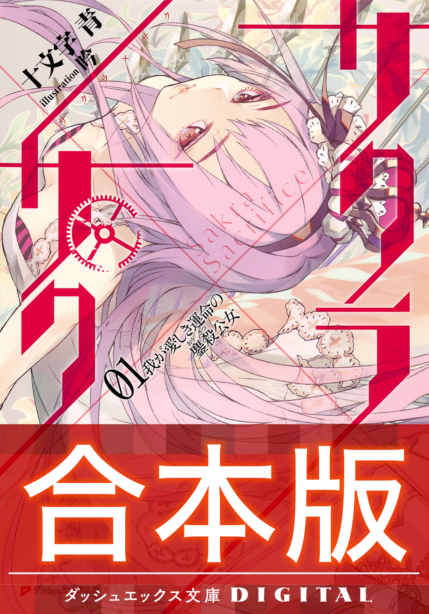
サクラ×サク 合本版
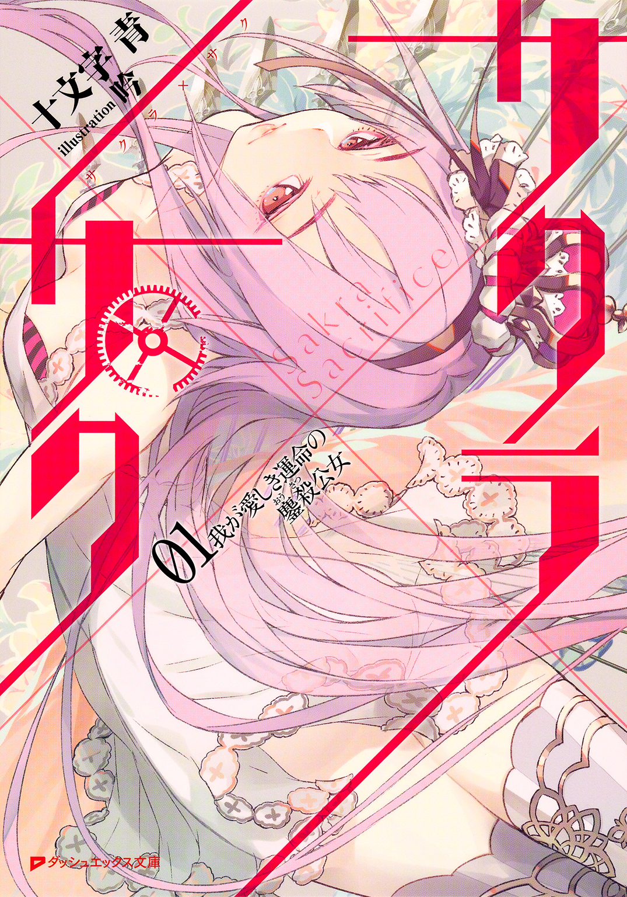
この本は縦書きでレイアウトされています。
また、ご覧になる機種により、表示の差が認められることがあります。
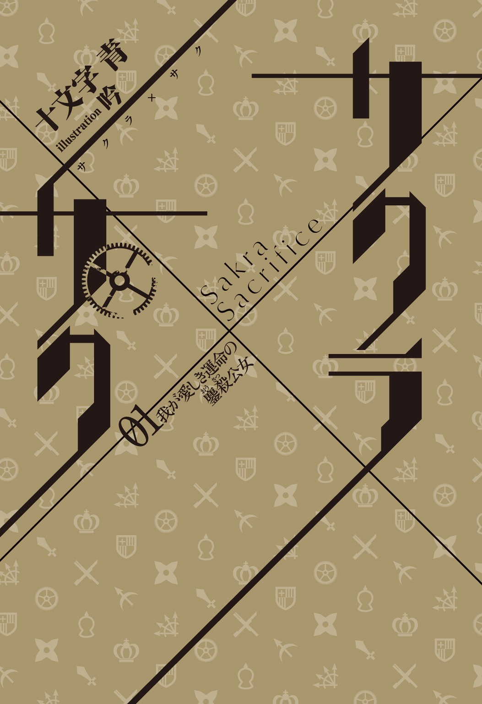
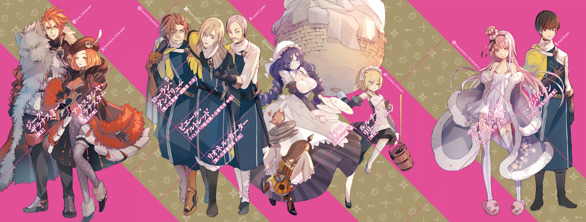
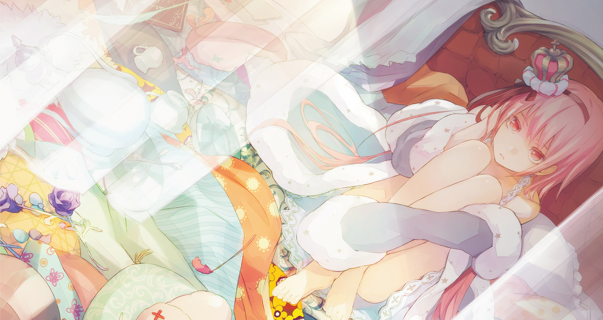
 ダッシュエックス文庫DIGITAL
ダッシュエックス文庫DIGITAL
サクラ×サク ０１
我が愛しき運命の鏖殺公女
十文字 青
１ 壊れそうな純情の惨状 BREAKING EVEN
ついに。
とうとう。
一人も友だちができないまま、学校を卒業してしまった。
馬車は揺れる。ゴトゴトゴトゴト、揺れつづけている。
公用の二頭立て、最大六人乗りの四輪馬車なのに、乗っているのはたった一人、ハイジ・バランだけだ。あいもかわらず、ハイジは一人だ。
公立学校では世間話をする相手すらいなかったので、ハイジはひたすら勉学と実技と修練に励んだ。没頭した。仕方ないじゃないか。ハイジは馬車の座席で頭を抱える。だって、他にやることがなかったのだ。
おかげで、物の見事に飛び級してしまった。飛び級と言えば聞こえはいいが、とんでもない。飛び級したらどうなるか。上級生が同級生になってしまうのだ。そんな環境で友だちができるだろうか。できるわけがない。実際、できなかった。ひどい。
あまりにもひどすぎる仕打ちだ。
ハイジはただ真面目に、一生懸命がんばっただけなのに。
なぜだろう。ハイジは涙をこらえて馬車の天井を見上げる。生まれ育ったトクタリ邑でもずっとだめだった。理由はハイジ自身にもよくわからない。とにかくうまくやれなくて、気がつくと友だちらしい友だちはいなかった。
でも、公立学校には、田舎からも都会からも大勢が集まってくるのだ。変わった人、おとなしい人、過激な人......きっといろいろな人がいるだろう。馬が合う者の一人や二人、いないわけがない。いる。絶対、いる。ということは、友だちの一人や二人、自然とできるはずだ。
できないわけがない。
必ずできる。
ハイジはそう思っていたのだ。正直、楽観していた。自信さえ、なくもなかった。
「......なのに、どうしてなんだ......」
つい、声に出して呟いてしまった。
本来なら十八歳の年に修了するデスティニア公立学校の全課程を、ハイジは優秀な成績を収めてバエル大王38年、つまり今年の春、十七歳で終えた。
公立学校を卒業した者は、公国に仕える公吏か、公国に命を捧げる軍人になる。
教官にすすめられるまま、ハイジは軍人の道を選んだ。
そして、たった一人、馬車に揺られて、任地にたどりついてしまった。
×
デスティニア公国は、三年前から帝国の侵攻にさらされている。
帝国は、
「天上天下唯一の皇帝が君臨する無二無三の帝国である」
と宣して、国号を名乗らない。自称も他称も、ただの帝国だ。
帝国は圧倒的な武力で十一年前に西大陸を統一すると、すぐさま東大陸にも魔手をのばしてきた。この十年余りで、帝国に攻め滅ぼされた東大陸の国は数知れない。
ハイジの任地イエルヴァラは、帝国の侵攻を防ぎ止める、デスティニア公国の盾だ。
ちなみに、公国の街はだいたい城壁にぐるっと囲まれている。城壁がある街は城市、城壁がない街は市や邑と呼ばれ、イエルヴァラは当然、城市だ。
ハイジを乗せた馬車はもう、城壁の内側に進入している。
車窓の外を流れてゆく街並みを眺めながら、ハイジは、まあそこそこ、それなりに栄えているかな、と思ったりしている。トクタリ邑出身の田舎者が偉そうに。でも、ハイジはつい先日まで、公国最大の大都会、公都デスティニアレスで学校生活を送っていたのだ。とはいえ、何しろ友だちがいなかったものだから、休みの日も自習と自主訓練に明け暮れていて、街に繰りだしたことなど一度もなかったのだが......。
それにしても、ずいぶん落ちついている。
最前線の城市ということで、もっと物々しい雰囲気をハイジは想像していた。そうでもないどころか、住民たちはいたって普通に生活しているようだ。
「ちょっとだけ、安心した......かな」
ハイジは学校を卒業した途端、いきなり危険な土地で軍務に服することになった。当然、恐ろしい。不安だらけだ。むしろ、不安しかないと言ってもいいほどなので、そのへんはあえて考えないようにしていたくらいだ。
なんとか考えないようにしてもつい考えてしまって、最悪、到着したら戦闘中でした、といったことさえありうるのではないか――そんな予想が頭をよぎったりもしていたが、どうやらそれはなさそうだ。よかった。ハイジはため息をつく。実戦なんて、まだ無理だ。
やがて馬車が停まった。
馬車から降りたハイジの前に、煉瓦で固められた城壁がそびえ立っている。
イエルヴァラの主郭だ。この城市の中にある城には、城市の太守が居住していて、城市に駐留している公軍の司令部もある。ここから先は馬車では行けない。
「......よし」
ハイジは一つ息を吐き、顎を引いて、うなずいた。主郭の前に立っているのは、公立学校の生徒ではない。デスティニア公国軍の軍服をその身にまとい、准尉の階級章をつけている。新入りの未熟者とはいえ、ハイジ・バランはれっきとした軍人なのだ。
ハイジはきびきびと馬車の御者に一礼すると、荷物を背負って主郭の門に近づいていった。門の前には斧槍を携えた衛兵がいる。躰をすっぽりと覆う外套を身につけ、剣と短剣を帯びたその兵装は、戦時と変わらないものだ。ハイジは気が引き締まるのを感じながら、衛兵に用向きを伝えようとした。のだが――、
「......はっ!?」
何だろう。何か、気配が。上......だろうか？ 頭上？ ハイジは慌てて振り仰いだ。
「うっ――」
噓、とハイジは言おうとして、途中でのみこんだ。噓なんかじゃない。落ちてくる。
頭を下にして、まっさかさまに。何が？ 何だ？ あれは――人......？
どうも人らしい。
人間が落ちてくる。
「ぅぅぅぅぅううぅぅぅぅわぁぁぁぁぁぁぁああぁぁぁぁぁぁぁぁぁぁぁぁぁ......!?」
なぜ？ どうして人が？ どこから？ いや、どこも何も、上だ。上って、どこの？ 門か。門の上から？ どうしよう、どうすれば、とハイジは思った。どうにかしないと。だって、下は石畳なのだ。落ちてきて、そのまま石畳に叩きつけられたら、あの人......死んでしまいかねない。というか、けっこう高さがあるし、まず死ぬだろう。でも、衛兵がいるから――、
「おお!? おおおおお!?」
だめじゃないか！ 衛兵は右往左往している。あてにならない。やるしかないのか!?
「オッ、オーライ......！」
ハイジは両腕を広げた。オーライ？ オーライなのか？ 本当に？ 迷っている場合じゃない。もう猶予がないのだ。ハイジは走って、位置を調整する。だいたいこのあたり――いや、間違いなくここだ。飛びつくようにして、キャッチ。重い！
「――くっ......！」
衝撃がすごくて取り落としそうになったが、なんとか持ちこたえた。ハイジは、ふう......と、ため息をついて、腕の中の男を揺さぶる。そう。
それは男だった。なぜよりにもよって男なのか。なぜも何もクソも、とにかく男なのだからしょうがない。軍服を着ているので、軍人なのだろう。
「あの、だ、大丈夫ですか!?」
「......う、うぅん......」
男は薄目を開けた。ハイジよりはずっと年上だろうが、この男、なんというか――ものすごい美男子だ。もっとも、かなり瘦せていて、目の下に隈ができている。軍人なのに、ずいぶん不健康そうだ。声もかすれていて、弱々しい。
「あぁ......あれ？ 私は、どこに......？」
「え、どこって――そ、そうですね、僕の、腕の中に......？」
「なぜ......？」
「いや、それは......わかりませんけど。いきなり落ちてきたので、受け止めて......」
「ということは、私はきみに......助けられた......？ 助けられてしまった......？」
「......そう――いうことに、なりますかね。一応。はっ......！」
「どうかしたのかい」
「い、いえ......」
ハイジは気づいてしまったのだ。こんなに長く他人と会話をするのは、じつに久しぶりだということに。もちろん、だからどうしたということもない。そうだ、とハイジは自分に言い聞かせた。どうってことないじゃないか。生きている人間なのだから、話くらいするさ！
ハイジは男を下ろした。立つと、男はけっこう上背がある。ハイジは173センチル（＝約173㎝）くらいで、十七歳の男子としてはまあ平均的な身長だが、男はそれより10センチルほども高いだろう。長身だが、肩幅が狭くて、ひどく薄っぺらい。お世辞にも軍服が似合うとは言いがたい躰つきだ。
そもそも、本当に軍人なのか。なんとも頼りない。もしかして、偽軍人？
「あぁっ......」
と、男がふらついて倒れそうになった。ハイジは慌てて男を支えた。
「......だ、大丈夫――じゃない、ですよね。顔色も、とても悪いですし」
「すまない......うっ」
男は、今度はゴホゴホと咳きこみはじめた。ひょっとして、重病？ もうやばい？
「え、ええと、こういうときは......」
ハイジは男の背中をさすってあげた。これで少しでも楽になってくれるといいのだが、もしこの男が偽軍人だったら？ どうやら、そんなことはないようだ。衛兵が近づいてきた。
「し、司令――」
「司令!?」
ハイジは目を剝いた。
「ん？」
男が涙のにじむ灰色の瞳でハイジを見かえした。捨てられて死にかけている哀れな飼い犬を思わせる目だった。どう見てもまったく軍人らしくないのに、男は軍服を着ている。衛兵は男を司令と呼んだ。
ハイジは遅まきながら男の階級章を確認して、気が遠くなりかけた。
それはたしかに中将のものだった。
×
つまり、ハイジ・バランは偶然、図らずも、着任早々、イエルヴァラに駐留しているデスティニア第八公軍の司令、ピエール・アルトレッド中将の命を救ってしまったのだ。
なんでも、アルトレッド司令は躰があまり丈夫ではなくて、たまに貧血か何かで卒倒してしまうことがあるのだという。
今回は、主郭の門の上にある楼閣で、手すりから身を乗りだしてイエルヴァラの街並みを眺めていた際に、運悪くそれが起こってしまった。結果、司令は落下して、ハイジが間一髪、受け止めた。
ついでにハイジは、司令本人に第八公軍司令部まで案内してもらうという、大変な栄誉に浴した。
というか、司令はハイジが肩を借さないとろくに歩けないような有様で、途中、また失神しかけたものだから、そこからは丁重に抱きかかえて運ぶことになった。
「すまないね、ハイジ・バランくん......着任早々......」
「いえ......」
「ハイジ・バランくんで、よかったよね......？」
「は、はい。本日付で在イエルヴァラ第八公軍に着任しました、ハイジ・バラン准尉です」
「ハイジくんで、いいかな......？」
「え......い、如何様にでも......」
「いかよう......？ ずいぶん難しい言葉を使うのだね......」
「す、すみません......」
学校では、講義中に文語調で論じるくらいで、あとは決まりきった受け答えで事足りた。友だちがいなくて雑談をする機会もなかったわけだから、そんなものだろう。
ようするに、ハイジは喋り慣れていない。おかげで言葉遣いが多少変なのだ。
司令は、ふむ、とうなずいて、
「じゃあ、ハイジくんでいいかな......きみは、優秀なのだろう？」
「そ、そのようなことは......」
「よかったよ。成績。飛び級までしているし。それに、独立独歩の精神を持っていると、評定にあって――」
それは、友だちがいなかったから、誰の影響も受けようがなかったし、何でも一人でやるしかなかっただけです――とも言えない。ハイジは、なんだか胸が痛いなあ、と思いながら、にじみそうになる涙をこらえた。
「......光栄です」
「最近、少ないからね。そういった人材は。何だろう。空気を読んで周りにあわせるのは上手なのだが、自主性や積極性に欠ける若者が多くて......」
「はあ......」
「ちょうど欲しかったのだよ。きみのような......ぐふっ......」
「だ、大丈夫ですか!?」
「......いや......あまり、大丈夫でもない......すまない......本当に......ごふっ......」
明日にでも、いや、今日中に息絶えてしまいそうな司令を大事に抱えて司令部に行くと、銀髪で口髭が立派な壮年の士官が血相を変えて駆けよってきた。
「司令！」
「......ああ、カーター」
司令はハイジの腕の中で儚い微笑みを浮かべた。
「またかよ」
そう言って頭を搔いたのは、また別の士官だ。階級章からすると大佐のようだから間違いなく士官なのだが、なんと戦時でもないのに無精髭を生やしている。長身の偉丈夫ではあるものの、全体的になんともだらしない。
「今度はいったいどこでぶっ倒れてたんです、司令。場所だのタイミングだのが悪けりゃくたばっちまうことだってあるんだ。具合がよくねえなら、黙って寝てりゃいいのに」
実際、倒れた場所が悪くて死ぬところだった。たまたまタイミングがよかったせいで死なずにすんだのだが、ハイジは黙っていた。というか、司令部の入口付近で司令を抱いたまま、身じろぎもできないでいる。何しろ、司令部には大勢の士官がいて、一人の例外もなくハイジより年長で、階級が上なのだ。そして、その全員がハイジを見つめている。これが緊張せずにいられるだろうか。
「まったく......」
長身の大佐がハイジから司令を引ったくって、逞しい両腕で抱えた。
「世話の焼ける人だ」
「......これでも、自覚はあるんだがね。ダンドリュー......」
「そうは思えませんよ」
「ところで、きみは？」
銀髪口髭の、司令にカーターと呼ばれた士官がハイジの顔をのぞきこんだ。彼もまた大佐らしい。
「はっ、は、は、はっ......」
ハイジは左胸に右の手刀をあてる公国軍式の敬礼をしようとしている――のだが、躰がうまく動いてくれない。ど、ど、ど、どうしよう。
「あぁ......」
ダンドリューという名らしい背の高い大佐の腕の中で、司令が大儀そうにハイジのほうへと首を巡らせた。
「彼は......あれだよ。ほら、新任の......」
カーター大佐はかすかに眉を上げた。
「ハイジ・バラン准尉？」
「は、はいっ！」
ハイジはようやく極度の緊張による呪縛から解き放たれて、敬礼することができた。
「本日付で在イエルヴァラ第八公軍に着任しました、ハイジ・バラン准尉であります！」
「リオネル・カーターだ。幕僚長を務めさせていただいている。以後よろしく」
「はっ！ よろしくお願い致します、カーター幕僚長！」
「ん」
カーターは顎を引くようにうなずいて、口髭をわずかにゆがめた。微笑んだのだろう。
幕僚長はいい人だ。絶対、いい人に違いない。ハイジは感涙にむせんでしまいそうになったが、そこはもちろん我慢した。病弱そうな司令や、無精髭の大佐と違って、幕僚長はかなりまともそうだ。やはり軍人たるものは、是非こうあって欲しい。
「ずいぶん活きのいいやつを引っぱってきたもんだな」
ダンドリュー大佐は司令を抱いたまま器用に肩をすくめてみせた。
「ま、せいぜいがんばれ、青二才。いっそのこと、俺が帝国をぶっ潰してやるくらいの気概を見せてみろよ。若いんだからな」
「帝国を......」
ハイジは目が開かれる思いがした。帝国をぶっ潰す。乱暴な表現だが、それくらいの大きな目標を立てて突き進むべきなのかもしれない。帝国をぶっ潰す！ そうだ。我がデスティニア公国の安寧を脅かしている帝国の打倒は公国軍の大目的なわけだから、公国軍の士官であるハイジは当然、それを目指すべきなのだ。ダンドリュー大佐もいいことを言う。さすが大佐だ。ハイジはダンドリュー大佐の目を見かえした。この手で帝国をぶっ潰してやる！
「やります」
「お、おう」
ダンドリュー大佐は片方の眉を上げて、そうか......と、呻くように言った。
「はい！ お任せください！」
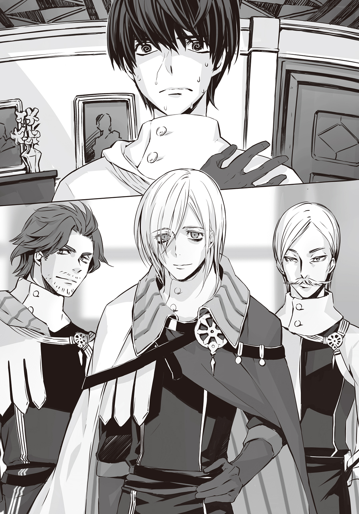
ハイジが腹の底から力いっぱい返事をすると、司令が、は、は、は......と今にも途切れそうな笑い声を立ててから、ゴホグハゲヘッとひとしきり咳をした。涙目になっている。
「......その調子でお願いするよ、ハイジくん......ところで、きみの仕事なんだが――」
×
「侍官、か......」
ハイジ・バラン准尉の前には鋼鉄で補強された漆塗りの黒い扉が立ちはだかっている。
「しかも、太守付きの......」
落胆しているわけでは決してない、が――それか、という思いがハイジの中にはある。
でも、これは正式な辞令なのだ。帝国をぶっ潰せるような役職ではなさそうだが、従うしかない。そんなわけで、ハイジはここにいる。太守の私室の前に。なぜ、私室......？
これがまったく奇妙な話で、太守が公務をこなすための執務室もちゃんと用意されている。それなのに、幕僚長のカーター大佐が言うには、イエルヴァラの太守はたいてい私室にいるのだという。私室、すなわち寝起きする部屋に。
太守は城市及びその一帯の責任者で、政治と軍事の統括者だ。ものすごく多忙だろうから、たとえば、寝る間も惜しんで一日中、私室で公務に励んでいる......とか？ もしかしたら、そういうことだってあるのかもしれない。ないかもしれない。ハイジにはわからない。
「太守......」
ハイジは胸を押さえて、ふうぅ......と息を吐いた。当然、任地に関する情報はある程度、与えられている。だからハイジは、在イエルヴァラ第八公軍について、それから太守についても、民間人よりは詳しく知っているはずだ。
イエルヴァラはそんじょそこらの城市とは違う。防衛上の要地だ。ゆえにその太守は、ただの軍人でも、公吏上がりでもない。なんと、我らがデスティニア公国の君主、ハイジの主君であるデスティニア公ドリアン殿下の、まごうことなき実子なのだ。
かといって、いわゆる親の七光りではない。若くして公国軍に身を置き、赫々たる武勲を立てまくって堂々と大将に昇進、ついには要害の地イエルヴァラを任されるに至ったのだとか。そんな華々しく勇ましい経歴からすると、さぞかしものごっそい御方なのだろう。なお、ごっそい、というのはハイジの故郷の方言で、厳つい、怖い、といったような意味だ。もの、は強調。ものごっそい、だと、大変厳つい、めっちゃ怖い、となる。
実戦以外には興味がない、根っからの武人とか、そういう感じの人なのだろうか。それもこれもまあ、会えばわかることだ。
ハイジは咳払いをして、扉を叩いた。
返事はない。
少し間を空けて、また叩いた。
反応がない。あれあれあれ？ 不在ですか......？
ハイジは額に滲む冷や汗をぬぐった。どうしよう。ええい、ままよ。こうなったらもう、思いきって声をかけてみるしかない。
「ほっ、本日付で太守付き侍官を拝命しました、ハイジ・バラン准尉であります！ 太守閣下はご在室でありましょうかっ！」
「......るさい」
というような声が、扉の向こうから聞こえた――ような気も、するような......？
「は......？」
思わず訊き返すと、何かが扉にぶつかったような音がした。
「――るさいって言ってるの！ 鍵はかかっていないから、入ってくればいいでしょ！」
「は、はい！ 申し訳ありません！ し、失礼します......！」
ハイジは慌てて扉を開け、太守の私室に足を踏み入れて――即座にあとずさった。
「き、汚っ......」
「何か言った？」
「ぃぇ......」
ハイジは手で口をふさいだ。――言ったよ？ 言いましたよ？ 何を言ったかは言えませんけどね？ 開いた口が手でふさがないとふさがらないような状態だし？ いやあ......しかし、これは......すごい。部屋。
太守の私室。これが。
ごくごく控えめに言っても、散らかっている。
クローゼットは開けっぱなしだし、寝台は天蓋付きだが、その天蓋が外れかけているし、窓のカーテンも同じだし、机も椅子も倒れているし、鏡台の鏡は割れているし、寝台の上にも、床にも、衣類やら、タオルやら、シーツやら、毛布やら、皿やら、コップやら、それらの破片やら残骸やら、書物やら、紙やら、筆記用具やら、パンらしきものやら、菓子のようなものやら、木工細工やら、壊れた楽器やら、動物か何かを象った置物のような物体やらが、足の踏み場もないほど散乱している。
得体の知れない液体をこぼしたと思しき跡も見受けられる。それをざっと拭いてぐちゃっと丸めたらしい布は、でもたぶん、ただの布きれじゃなくて、衣服だろう。
一言でいえば、汚部屋だ。
二言でいえば、すごい汚部屋だ。あるいは、ひどい汚部屋、と言うべきか。
そして、その見るも悲惨な部屋の主なのだろう人物が、寝台をびっしりと埋めつくしている雑多な品々の上で、うつぶせになっている。
ありえない。ハイジはそう思わずにいられなかった。何だ、これ。ありえない。
ハイジは目をつぶりたかった。両手で目を覆うべきかもしれない。しかし、できない。ハイジはどうしても彼女から目を離すことができずにいた。
きらめく白金をとかして淡い色の薔薇のしずくを混ぜたような色あいの長い、長い髪の毛が、彼女の躰や、寝台の上に堆積している品物の上に、静かに広がっている。
女性は男よりずっと華奢で、繊細で、まるで壊れ物のようだと、ハイジは思っていた。ハイジの母親は健康で頑丈な働き者で、すこぶる逞しい人だ。それでも男とは違う。骨格や筋肉の質が根本から異なっているのだ。
その壊れやすそうな女性というものを、ハイジは今、まざまざと見せつけられていた。
彼女は薄衣しか身にまとっていない。というか、あれは、服......なのか？ ハイジにはよくわからない。いや、やっぱりあんなもの、服とは呼べないだろう。女性は極力、肌を出さないものだ。ハイジの母親だって、洗濯のときなどに腕まくりをするくらいで、足首まで届く長いスカートの裾を持ちあげることさえ、人前ではしなかった。それなのに、彼女は。
ああ、彼女は......彼女が身につけているものは、丈がきわめて、不埒なほど短くて、短すぎて、脚が――すらっとしていて、折れそうなほど細いのに、ただまっすぐなのではない、ゆるやかでたおやかな素晴らしい曲線を描く脚が、な、ななな、なんと膝、それどころか、膝の上までのぞいている！
彼女は裸足だ。
ハイジは女性の何もつけていない足を、生まれて初めて見た。人として生きる中で、女性の足の指や足の裏を目にすることがあるなんて、想像だにしなかった。
それに、腕。何だ？ あの腕は？ 腕？ 腕なのか？ あんなものが？ 筋肉はどこについているのだろう？ 骨は？ ちゃんとあるのか？ 指で突いたら、どこまでも入ってゆきそうだ。肩ですら、とてつもなくやわらかそうだ。肌。
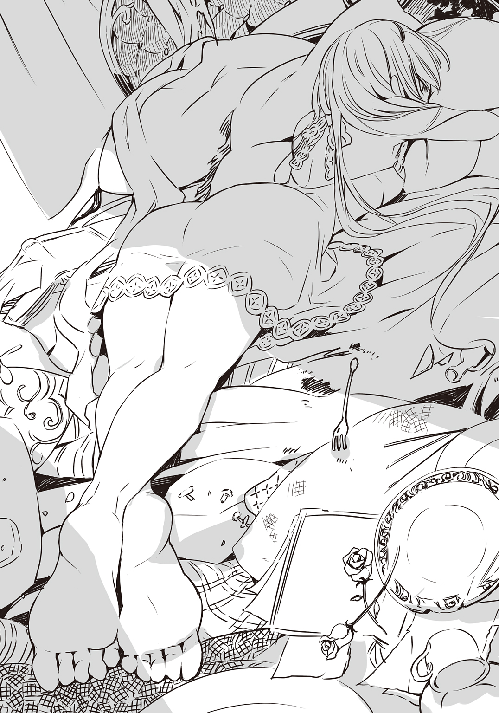
そう。肌の質感がおかしい。あれが人間の肌だというのか。肌ってあんなものだっけ？ いや、違う。違うはずだ。だって、一点の染みもない。くすみもない。産毛すら生えていそうにない。つるつるだ。すべすべしていそうだ。ハイジは考えこんだ。もしかして――ひょっとすると女の人には、髪の毛や眉毛や睫毛以外の毛は生えないのか？ それとも、彼女だけがそうなのだろうか？
白い、透きとおるように白くて、さわったりしたら消えてなくなってしまいそうなくらい儚い、なんだか噓みたいな、幻のような肌だ。
そうか、これは現実じゃないのかもしれない、とハイジは思い至った。幻のような、じゃなくて、本当に幻なのかもしれない。ハイジは白昼夢を見ているのかもしれない。そうだ。そうだよ。そうに違いない。だいたい、そもそも変だ。
最前線の任地にきたら突然、司令が降ってきて？ いきなり太守付きの侍官なんかに任命されて？ 太守の私室は汚部屋で？ こんなに汚い部屋に、幻のようにきれいな、しかもあられもない恰好をした女の人がいるなんて、変だ。あまりにも変すぎる。これはきっと、夢だ。
ハイジは確かめることにした。自分の頰を思いっきりひっぱたいてみたのだ。
「痛ぁっ......!?」
「......何してるの」
彼女はうつぶせのまま、顔をハイジのほうに向けた。髪の毛の合間から、信じがたいことに、薄紅色の瞳が見えた。なんて色だ。
「......な、な、何......と、と、と......い、言わ、お、おっしゃいますと......何......」
だめだ。無理だ。無理。無理。絶対、無理。言葉が出てこない。もともとハイジはてんでアドリブがきかないのだ。そのうえ彼女がいる。幻のような彼女を相手に、ハイジは喋っているのだ。幻みたいだが、叩いた頰は痛かったので、夢じゃない――ということは、現実？
「え......つ......つまり、つ、つま......ぼ、僕、わ、私、は、じ、自分は、そ、その......」
「だしぬけに自分を叩いたりして。そういうことして、楽しいの？」
「たっ、たた、たたた楽しっ......!? い、いえっ、そそそそ、そんなっ、ことは......」
「あなた、新しい侍官でしょ」
彼女はゆっくりと起きあがり、横座りの姿勢になって、髪をかきあげた。
「――っ......！」
ハイジは口をきつく閉じた。妙な声を出してしまいそうになったからだ。い、いけない、そんな体勢になったら、み、みみ、見え、見えて、見え――だめだ、見ちゃいけない、女の人の、そんな、脚とか、脚の付け根とか、だめだ、よくない、これは――死ぬ。死んでしまう。
ハイジは目線を上げた。胸元。ああ。べつに大きく開いているわけではないのかもしれない、でも、開いていないとは言えない、おかげで胸元が。む、むなっ、むな、胸......？ だ、だめだ、見るな、目の毒だ、猛毒だ、だからもっと、上へ――顔。彼女の、顔。
顔？
これが？ こんな顔が？ 人間？ ハイジと同じ人間の顔だというのか......？
違う。これは違う。違うったら違う。違いすぎる。同じじゃない。同じなわけがない。
ハイジは正直、女性は見慣れていない。まじまじと顔を見たことがある女性といったら、母親と妹くらいだ。そうはいっても、女性の顔とはこういうものだというイメージはある。
当てはまらない。まったく。これっぽっちも。
女だろうと男だろうと、人間の目はあんなにくっきりしていて、それでいて独特の憂いを帯びていたりはしない。人間の鼻はもっとがっしりしていたり、高すぎたり低すぎたり、いくらかは曲がっていたりするものだ。人間の唇は大きすぎたり小さすぎたり、薄すぎたり厚すぎたりする。どこからどう見ても、何度見なおしても、明らかに、完全にちょうどいい、などということはないはずだ。だいたい、躰と顔のバランスがおかしい。なんであんなに顔がこぢんまりとまとまっているのか。人間の頭部はもっともっと大きいはずだ。
現世の理が通用しない異界ならいざ知らず、この地上にこんな生き物が存在するのか。
ありえない。
完璧だ。
何かが、途方もなく熱いものがこみあげてきて、ハイジの視界が一瞬で曇った。
彼女はぎょっとしたように目を瞠った。
「......どうしたの、あなた。いきなり、泣きだして。変態なの？」
「えっ」
ハイジは扉を押さえたまま、目の周りをさわった。濡れている。たしかに。これは......？
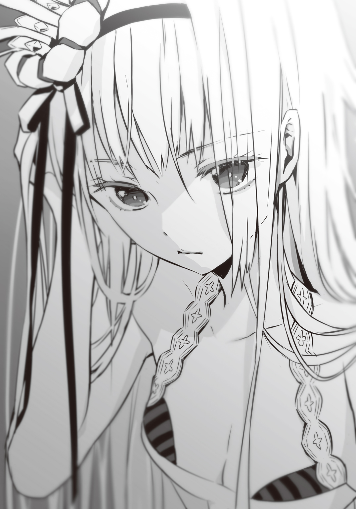
もしかして、涙？
ハイジは泣いているのか。最後に泣いたのはいつのことだろう。覚えていない。あまり泣かない子だったと、母親に言われたことがある。そんなハイジが泣いている？ なぜ？ というか、男が、軍人が、泣くなんて。ハイジは涙をぬぐった。
「し、失礼しました！ た、太守閣下の御前で、と、と、とんだ、ご無礼を......」
「無礼かどうかはよくわからないけど」
彼女は片方の膝を立てて、ため息をついた。だから、そんなふうに膝を立てたりしたら見えてしまうので、どうかやめないで――じゃなくて、やめて欲しいとハイジは切に願った。
「あなたがとても変な人だということはわかった。それで？」
「――は......？ それで、とは？」
「あなたはいつ、わたしを殺しにかかるの？」
「え？ ころ？」
「どうせまた、誰かが送りこんできた刺客なんでしょ」
「しか......？」
ハイジは首をひねった。彼女は何を言っているのだろう。どうして彼女はたぐいまれな薄紅色の瞳でじっとハイジを見すえているのだろう。
まるで、ハイジの内側をのぞきこもうとするみたいに。ハイジを見極めようとしているかのように。
「ぼ、僕は、あの......本日付で在イエルヴァラ第八公軍に着任し、アルトレッド司令により太守付き侍官に任命された、ハイジ・バラン准尉、ですので......その......し、しかく？ というようなものでは、ないのではないかと......」
「ハイジ・バラン」
「はっ、はい！」
「あなたはそれを証明できる？」
「......証明」
「自分が信頼に足る人間だと、証明できるの？」
「それ、は――」
ハイジはあとずさりしそうになった。
今すぐこの部屋をあとにして、扉を閉めてしまいたい。ハイジは鳥肌が立っていた。口の中が乾ききっている。彼女はただ美しいだけの少女ではない。見つめられて、質問をぶつけられた。それだけなのに、喉元に鋭く冷たい刃を突きつけられているかのようだ。
答えなければならない。曖昧な、あるいは適当な返事をしたら、とんでもないことになる。ハイジはそう直感していた。でも......証明？ どうやって？
必死に考えていると、足音が聞こえてきた。廊下だ。誰かが近づいてくる。尋常じゃない、殺気のようなものを感じて、ハイジは振り返った。
「――こど、も......？ わっ......」
押しのけられた。せいぜい十二歳かそこらの女の子が、ハイジを腕ずくでどかせて、太守の私室に飛びこんできたのだ。ただ、その服装って――もしかして、メイド？ こんなに若いというか、幼い女の子が......？
「サクラ様......！ 今日は新任の侍官が挨拶にいらっしゃるはずなのですから、お部屋を片づけてくださいと、このルルチナ、再三再四申しあげたはずで――」
メイドっぽい服を着た女の子は、首筋のあたりで切りそろえた金髪を振り乱してくるっと振り返り、ハイジを見た。
「あなたが新任の侍官ですか。ルルチナの記憶が正しければ、ハイジ・バラン准尉でしたね。申しあげるまでもなく、ルルチナの記憶が間違っているわけもないのですが」
「......はい。僕――いや、私、いや、自分が、その......ハイジ・バラン准尉です」
「失礼ですが、うかがっていた経歴にそぐいませんね」
女の子は品定めするような、容赦なく突き刺すような目つきで、ハイジの全身を眺めた。
「公立学校を非常に優秀な成績で卒業した、独立独歩の精神を持つ昨今稀に見る雄々しい准士官だと、司令はおっしゃっておりましたのに」
「......も、申し訳ないです」
「ありていに申しあげて、お見受けした印象は、普通、ですね。ド普通です。特徴らしい特徴もなく、しいて申しあげれば――さようでございますね、根暗そうです」
「はい......そのとおりだと思います......」
「まあ、よろしいでしょう。司令がお決めになったことです。一介の侍女が口を差し挟む筋合いではありません」
そのわりには偉そうですね、子供なのに――と言いたかったが、言えるわけがない。ハイジはまたもや泣いてしまいそうだった。この子、ものすごく怖い。
「ルルチナ・リリーローエンです」
女の子はほとんど平らな胸を張って、自分よりずっと背の高いハイジを物の見事に見おろしてみせた。
「あくまで一介の侍女にすぎませんので、ルルチナとお呼びください」
「......よ、よろしくお願いします、ル......」
「ルルチナとお呼びください」
「ル、ルルチナ」
ハイジは呼び捨てにしてみた。言われたとおりにしただけなのに、ルルチナの表情が険しくなった。
「はい？」
「ル......ル、チナ......？」
「ええ。どうか、ルルチナと」
ものすごい威圧感だ。ハイジは胸が締めつけられて息ができなくなり、窒息寸前まで追いこまれた。やっと理解した。つまり、こういうことなのか。
「――ルルチナ、さん」
そう呼んだら、ルルチナは首をちょっとだけかたむけて、にっこり微笑んだ。何だ......と、ハイジは思い、ほっと一息ついた。笑うと、野に咲く小さな花みたいに可憐じゃないか。あくまで、笑うと、だが。
「それでは、准尉。ルルチナがいろいろとご案内いたします。司令から、そのように仰せつかっておりますので」
「えっ。あっ、は、はい、ルルチナさん、で、でも――ですがあの、まだ......」
ハイジは太守のほうにちらっと目をやった。
くらっとした。
太守の姿を見るたびに、ハイジはアルトレッド司令のように躰が弱いわけではない、丈夫なだけが取り柄といってもいいほどなのに、卒倒してしまいそうになる。もしハイジが太守の親なら、これ、そんな恰好をしてはいけません、と叱りつけるところだ。当然、叱るわけにはいかないので、ハイジとしては懇願したい。どうかちゃんとした服をお召しになって、しゃんとしていてください。そうしてくれないと、ハイジ・バランは早晩おかしくなってしまう。
「......ご、ご挨拶が、まだ......途中というか、中途というか......」
「ああ」
太守はなぜか、ぱたっと横になってしまった。
「そうだった？ どうでもいいけど」
「......よ、よくはないかと」
「口答えするんだ」
「い、いえ！ 決して！ そういう、つもりでは......」
「わたしはサクラスティアリス・デスティニアリス。ドリアン公の四女で、階級は大将。ついでに、イエルヴァラの太守」
太守は腹のところで両手を組みあわせて、深い森の奥で永久の眠りにつく姫君のように目をつぶった。
「よろしく、准尉。わたしを殺したいなら、いつでもやって。どうせ、無駄だけど」
×
ルルチナの案内で主郭の中を一巡りする間、ハイジはべつに上の空だったわけではない。でも、頭の片隅には常に太守のことが――具体的には、太守の大御足やら御胸元やら御尊顔やらがこびりついていて、離れてくれなかった。あるいは、ルルチナはそれを見抜いていたのかもしれない。
「サクラ様はドリアン公の四番目のご息女であらせられ、かつ軍功高き公国軍大将でおありになり、このイエルヴァラの太守でいらっしゃいますが、御年いまだ十六歳です」
太守の私室へと戻る道すがら、ルルチナは急にそんなことを語りだした。
「准尉は飛び級して公立学校を卒業なさっておいでですので、十七歳でいらっしゃいますね。サクラ様は、お若い准尉よりも一つ年下でいらっしゃるということです」
そう言うあなたはもっと年下なんじゃ――と思わずにいられなかったが、女性に年齢を訊くのは非礼だということくらい、ハイジもわきまえている。
「......はい。異例......ですよね。そのような若年で、大将にご昇進されるのは......」
「公家の方々が軍籍に入られますと、ただちに大佐に任じられます」
「ぞ、存じています、一応。ですから、少将、中将、大将――で、三階級ですけど、将官ともなると、そう簡単には......」
「サクラ様は、大将となられるに相応しい武勲を立てられました。比類なき魔性をお持ちとはいえ、たった十六歳の、うら若き女性が、です」
「魔性......」
ハイジも軍人の端くれだ。魔性のことはむろん、知っている。いや、軍人でなくても、魔性の存在を知らないのは赤子くらいのものだろう。
西大陸はいざ知らず、東大陸の王家や公家など、由緒ある名家の血を引く者は、たいてい魔性を持ってこの世に生まれる。
では、その魔性とはいったい何なのか。
一口で説明するのはなかなか難しい。一つには、その力の発現の仕方が千差万別だとされているからだ。
つまるところ、上流階級の者が生まれ持つ特別な力、それこそが魔性である、ということになるだろう。
ただし、実際は順序が逆で、魔性という特別な力を持っているからこそ、彼ら、彼女は人々を、国を支配し、導くことができた。魔性が彼ら、彼女らを王や公にしたのだ。
魔性は、ときにそれ自体が戦術的、場合によっては戦略的な価値を持つこともあるので、その詳細については口外無用ということになっている。それゆえに、公立学校で軍事教育を受けたハイジでも、主君ドリアン公の魔性さえ、あるということしか知らない。当然、公家の人々の魔性も同様だ。それは国家機密であり、必要がなければふれるべきではない。ふれてはならない。人の口に戸は立てられないし、情報の流出を完全に食い止めることはできないが、少なくとも興味本位で探っていいようなものではないのだ。
「おわかりにはなれませんでしょう」
ルルチナはかすかに頭を振った。
「逃れること能わぬ運命のもとに生まれ、重大な責務を果たされてきたサクラ様の御心の内は、余人の理解が及ぶものではありません」
「......太守閣下は、それで......あのようなお部屋に？」
「あれはまた別です」
ルルチナは即答した。何やら冷たい気配が、その小さな躰からみなぎっている。ハイジは震えた。――おっかないです、ルルチナさん......。
「よしんば関係があるとしても、認めるわけにはまいりません。あの惨状では、人間的な生活を送ることができないではありませんか。しかも、昨日、ルルチナが片づけたばかりですのに、たった一日で......サクラ様にはやはり、ご自身できれいにされることを覚えていただかなくては......だいたい、入浴さえ嫌がられるし......せっかく並外れて美しくお生まれになったというのに、なんともったいない......」
どうやらルルチナは、だいぶ苦労しているようだ。ハイジもこれから侍官として太守に仕えるわけだから、同じように苦労を背負いこむことになるのか。
まあ、苦労というか何というか、太守のそば近くにいるだけでも、かなり大変だろう。あんな恰好をした見目麗しい女性は、存在自体が凶器だといっても過言ではない。目の当たりにするだけで心臓に悪いが、つい見入ってしまう。見ていると頭の中が沸騰しそうになって、罪悪感に苛まれ、自死したくなってくる。ハイジ・バランはおそらく、近いうちに死ぬ。
「......なんか、違う」
ハイジは思わず呟いてしまった。
「何がでしょうか」
ルルチナに尋ねられてうまくごまかせるほど、ハイジは会話慣れしていない。
「いえ......なんというか、公立学校を出た准士官は最初、後方に配置されて、少し経験を積んでから前線へ、というのが通常らしく......ですが、僕、いや、自分は、どうしてか初っ端から最前線のイエルヴァラに......それで、自分なりに想像していたのは、もっとこう――」
「血湧き肉躍る戦場のような？」
「じ、自分は軍人ですから。戦争を、するのかな......と」
「公女様のお守りをする羽目になるとは、思ってもみませんでしたか？」
「そ、そのようなことは」
「ご心配なさらずとも、機会は巡ってまいりますよ、准尉」
ルルチナはそっと笑った。ハイジはなぜか寒気がして、身震いした。
「......そういえば、太守閣下をお一人にしてしまって、よかったんでしょうか。たしか、刺客がどう――とか......？」
足が、止まった。
行く手の右側に太守の私室の扉が見える。扉の前に、ボリュームのある黒髪をお下げにした女の人が立っていた。ルルチナと、躰つきはずいぶん違う――違いすぎるが、似た意匠の服を着ていて、盆か何かを抱えるようにして持っている。彼女も侍女なのか。いや、でも。
口にしたばかりの、刺客、という言葉がハイジの脳裏をかすめた。
お下げの女性はどことなくあやしかったのだ。
どことなくというか、あからさまに奇妙だ。
だって、お下げの女性は一人じゃない。彼女に従う、あれは――とても小さな、ルルチナどころじゃない、背丈はお下げの女性の半分どころか、三分の一もなさそうな、姿形こそ人に近いが、あれは人間、なのか......？ 違う。人間じゃない。あれは――人形だ。
ハイジは腰に剣を佩いている。准士官に貸与される、質素で実用重視の軍剣だ。
軍剣の柄に手をかけて駆けだそうとしたら、侍女の服を着たあやしいお下げの女性が、扉に向かって突撃した。
扉を開けずに、頭から突っこんだのだ。
「あひゃっ」
お下げの女性は当然、扉に額をぶつけ、ふらふらっ、くるっと回って崩れ落ちた。持っていた盆やその上に載っていたポットやら何やらは、そのへんにぶちまけられた。どういうわけか、人形も一緒に転んだ。
「......あの愚図」
とルルチナがため息まじりに言った。――ということは。
「ル、ルルチナさんのお知りあい......ですか？ というか、ご同僚......？」
「ええ、まあ」
ルルチナはすたすたと歩いて女の人に近づいてゆく。
「さようでございますね。恥ずかしながら、同僚ということになります。――ギチコ」
「......ふぁい」
お下げの女性がおでこを撫でさすりながらこっちを向いた。眼鏡をかけているが、ずれてしまっている。
大きいな......と、ハイジは思った。
同じ侍女の恰好をしているせいでルルチナと比較してしまうから、余計にそう見えるのかもしれない。でもおそらく、比べなくてもいろいろと大きい。背はハイジよりも低いだろうが、なんと言えばいいのだろう、嵩が張るというか。
体積が。
質量が。
ハイジはうつむき、目を閉じて、瞼を指で揉んだ。――だめだ。本当にだめだ。だめというか、よくない。やばい。非常にまずい。太守といい、ギチコ、という名なのだろうか、変わった名前のあの侍女といい、刺激が強すぎる。いやいやいや、落ちつけ、落ちつくんだ、とハイジは自分に言い聞かせようとする、落ちつけ？ どうやって？ 方法を教えてほしい。落ちつけないって。無理な相談だ。だって、何なんだよ、あの服。ルルチナの服と、似てはいるものの、違う。別物だ。別物にも程がある。
おかしい。絶対、変だ。女性は肌を出さないようにするものじゃないのか。それなのに、何だ。何なんだ、あの胸は。どういうことだ。見え見えじゃないか。見え見え？ 違うか。用法が違う。見え見えはこういう場合に使う言葉じゃない。でも、見え見えだ。見えすぎている。こぼれそうだ。はみだしている。胸が。胸。胸。胸。胸。胸。胸。胸。胸。胸！ 胸が！
ああ、どうしよう。ハイジは天井を仰いだ。どうすればいい？ いや、落ちつけ。興奮しすぎだ。興奮？ 興奮している？ 違う。そんなことはない。断じて違う。これは動揺だ。動揺しているだけにすぎない。興奮などするわけがないではないか。変態じゃないのだから。
ただ――ただ、あれだ、あのギチコという女性は、なんというか、質量が、体積が、すごい。まず胸が。とにかく胸が。胸が胸が胸が胸がががが。それから臀部も。何だろう。あれは何だ。贅肉？ 彼女はふとっているのか？ ふとっちょ？ よくわからないが、ふとっているのとは違うような気がする。だって、ふとっているのだったらハイジだって、ああ、ふとっている女性だな、と感じるだけのはずだ。ふとっているだけなら、こんなにうろたえたりしない。
どう表現するのが適切なのだろう。
むちっとしている？
むっちり？
むちむち......？
うわあああああああああああああああああああああああだめだ。考えるだけで頭がこんがらかる。ハイジ・バランはだめになってしまいそうだ。もうだめになっているのかもしれない。
「れ、冷静になれえ......！」
ハイジは目をつぶったまま自分の頰をばしばしと叩いた。ちょっと、落ちついた――かもしれない。目を開けると、ルルチナとギチコに見つめられていた。
「はっ......！ も、申し訳ありません！ と、取り乱してしまいっ......」
「......まるで免疫がおありにならないのですね」
ルルチナがそんな謎めいたことを言った。めんえき？ 免疫といえば、一度ある病毒に冒されて回復すると、同じ病気に罹らなくなる働きのことだ。ハイジはそう理解している。
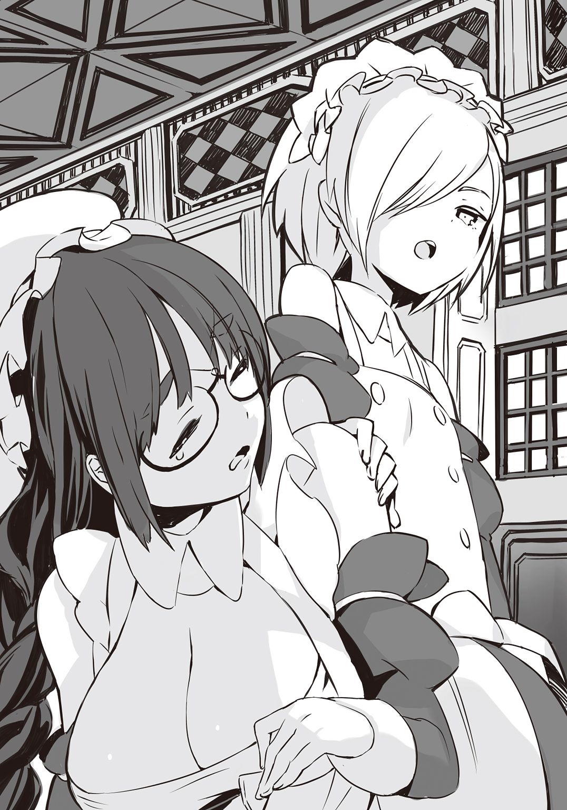
「これでも、健康には自信がありますけど......？」
「そういうことではございません。まあ、よろしいでしょう。問題がないとは申せませんが」
「も、問題があるなら、指摘していただいたほうが！」
「それは追い追いということで」
「......そ、そうですか」
「ギチコ」
ルルチナは、盆やポットやカップや割れたその破片を拾い集めようとしているギチコの肩をつかんだ。むちむちっとした肩を。
「およしなさい。ルルチナがあとで始末します。ギチコがやると、間違いなくかえってひどいことになるのですから」
「......うぅ。ごめんなさい、です」
ギチコは立ちあがろうとしたが、途中でまたこけて、今度は壁に側頭部をぶつけた。
「ぐにゃっ。......くううぅぅ......」
ギチコはしゃがみこんで頭を抱えた。
そのすぐ脇で、人形がまったく同じポーズをとっている。
いったいぜんたい、何がどうしてどうなってしまっているのか？
ギチコはむっちりむちむちしていてはちきれんばかりだし、人形は動いているしで、どうなってしまっているというか、ハイジがどうにかなってしまいそうだ。
「紹介しておきます、准尉」
こめかみのあたりを指で押さえながら、ルルチナが顎をしゃくってギチコを示した。
「この者は刺客ではなく、サクラ様に侍女として仕えているギチコです。ご覧になったとおりのふつつか者ですが、以後お見知りおきを」
「......は、はい。よろしくお願いし――」
ハイジは言い終える前にすっ飛んでいって、扉を開け放った。聞き違えじゃない。そう断言できる。太守の私室で大きな物音がしたのだ。
「太守閣下......!? 何が――」
汚部屋の真ん中あたりで、太守がすらりと長い脚を高々と上げていた。――こ、これは。
くらっときた。
服とも呼べないような薄っぺらくて丈の短い、短すぎる服がめくれて、そうとうなところまで見えている!? 見えてしまっている......!?
いやいやいやいや、今はそれどころじゃない。何だ？ 何があった？ 壁。壁だ。黒ずくめの男が、めりこむようにして壁にへばりついている。ということは？ 体勢、位置関係から察するに、もしかして太守があの黒ずくめの男を蹴り飛ばした？ 黒ずくめの男は吹っ飛んで、壁に叩きつけられた？ 女性で、たおやかな、華奢と言ってもいいだろう太守に、そんな芸当ができるのか？
「准尉？」
太守がハイジのほうに顔を向けて、脚を下ろした。そのときだった。
窓から別の黒ずくめが入りこんできた。
「た、太守......！」
ハイジは飛びだそうとした。何だろう。いやに躰が軽い。絶好調だ。ところが、矢のように疾駆しようとするハイジを、何者かが押しのけた。
「どきやがれ......！」
ルルチナだった――って、え......？ ハイジは呆気にとられた。その言葉遣いは？ というか、速すぎません？
ハイジは今まで生きてきて、一度たりとも喧嘩というものをしたことがない。でも、公立学校で士官コースに進み、軍人になるための訓練を一通り受けた。その中には模造剣を使った試合や、実戦さながらの模擬戦もふくまれる。真剣勝負の経験は皆無だが、ハイジなりに本気で幾多の強者と渡りあってきたつもりだ。
しかし、あれは――ルルチナは、モノが違う。
学校での訓練はあくまで訓練だ。どれだけ気合いを入れて全力を尽くしても、所詮、訓練でしかない。実際の戦闘はまったく違うものだろう。学校で抜群の成績を収めた准士官が、戦場に出た途端、恐怖で身がすくんで何もできないまま戦死する。そういうことだって充分ありうる。ハイジはそう考えていた。本物は段違いのはずだと。とはいえ、あれは。
ルルチナは素手だ。対して、黒ずくめはナイフを持っている。危険だ。それなのに。
「はははーっ......！」
ルルチナはかまわず、なぜか笑いながら突っこんでいった。
「こぉぉぉぉ―――――――のクサレ雑魚がぁっ......！」
「っ......！」
黒ずくめはルルチナをナイフで突こうとしたのだろう。それも、怖じけづいて反射的に、防衛反応としてナイフを出したのではない。あの構え。フォーム。ハイジは確信していた。黒ずくめは素人じゃない。明らかに玄人だ。黒ずくめは自分に攻めかかってくるルルチナをしっかりと認識し、殺られる前に殺ろうとして――でも、できなかった。
黒ずくめの予想を上回って、ルルチナが速かったからだ。
ルルチナは素手なのに、躊躇するそぶりを一切見せなかった。
素手だから、ルルチナは黒ずくめの顔面をグーで殴った。
ルルチナの拳はものごっそい音を立てて、黒ずくめの顔面をひしゃげさせた。
黒ずくめは空中でぐるぐるぐるっと横回転して床に落ちた。腕や脚が変な方向に曲がっている。ぴくりともしない。
「サクラ様に......！」
ルルチナは唇をぺろっと舐めて、跳んだ。窓からもう一人、三人目の黒ずくめが入ってこようとしていたのだ。
三人目は、さすがにやばいと思ったのかもしれない。身を翻そうとしたが、遅かった。
「ちょっかい出してんじゃねえ！ 身の程知らずのクソムシどもめ......！」
「ぐえっ......」
三人目の背中にルルチナの飛び蹴りが炸裂して、折れるというか、砕けるような、とても恐ろしい音がした。
三人目はそのまま窓の外に落下していった。ハイジはとっさに世界神カバラに祈ってしまった。どうか彼が無事、地底に召されて、清らかな御魂として生まれ変わりますように......。
それはいいとして。いや、いいのか？ いいんだか悪いんだか、なんだかもう、ハイジにはよくわからないが――猫のような身のこなしで床に降りたったルルチナの、緑色の双眸が。
見間違いだろうか。
ハイジはまばたきをして、見なおした。いや、違う。見間違いなんかじゃない。
光っている。
何かの加減で、光っているように見えるのではない。本当に、瞳の奥底から炎のような輝きがもれて、揺らめいているのだ。――何、それ？
どういうことだろう。
目が光る？
もしかして、猫？
そんなわけがない。猫はあんなに強くないだろう。いや、そういう問題でもない。でも、だったら、なぜ......？
「ふぅー......」
ルルチナは一つ息をついた。すると瞳の光は噓みたいに失せた。
「ご無事ですか、サクラ様」
「当然」
太守は寝台の端に腰を下ろして、脚を組んだ。
「だけど、真っ昼間に黒ずくめって、どういう阿呆なの」
「おおかた、何も知らずに金銭に釣られて雇われた手合いでしょう」
ルルチナはめちゃくちゃな体勢で倒れている黒ずくめの覆面を剝ぎとった。
「この顔だち。西大陸の者ではなさそうですね。かといって、帝国の手の者ではないと断定はできかねますが」
「人気者はつらい」
太守は、ぱたっ......と横になって、腹の上で両手を組みあわせた。
「ていうか、うざい。ほんとに。めんどくさくて、消え去りたい......」
ハイジは何も言えなかった。
ただただ太守のなめらかな脚に見入っていた。
やがてそれがとても不作法で不埒な行為だと気づいて、自死すべきかもしれないと思った。
２ 安らかにお眠りよ GOAT OR SHEEP
任地についた途端、司令が降ってきたり、太守付きの侍官に任命されたり、太守が途方もなくお美しかったり、侍女がなぜか小さな女の子と豊満至極な女性だったり、昼日中、その太守の私室に黒ずくめが押し入ってきたり、あっさり撃退されたり――ハイジ・バランには何がなんだかさっぱりわからない。
わからなかろうと何だろうと、与えられた仕事を精一杯こなすしかないのだ。ハイジはもう公国軍人なのだし、帝国をぶっ潰して祖国の平和を守るという大目標がある。太守付きの侍官では、いくらがんばっても帝国に打撃を与えることはできないような気もするが、さしあたって役目を果たすしかない。一生懸命やっていれば、いつかきっと配置換えの辞令が下されて、戦場で帝国軍と直接刃を交える機会が巡ってきたりもするだろう。......たぶん。
そんなわけで、ハイジは太守付きの侍官として忙しい日々を送っている。
といっても、べつに四六時中、太守のそばにいるわけではない。具体的に言えば、午前八時から午後七時までの間、太守の近くで警備に当たったり太守の用命に従ったりするのが、侍官の規定任務だ。
起床は午前六時。朝食と身繕いだけでは時間が余るので、一時間ほどみっちりトレーニングをする。昼食は太守の許しをえて、午後一時から午後二時の間の十分くらいでささっとすませてしまうのが常だ。
任務が終わったら夕食をとって、報告書を作成。午後八時には司令に提出しに行く。午後十時には就寝。夜間の警護は二人の侍女、つまりルルチナとギチコが行うことになっているが、危急の際にはハイジも駆けつけることになっている。
バエル大王38年四月八日。着任四日目、四回目の報告書を出しに行くと、ピエール・アルトレッド司令は、司令部に備えつけられた専用の寝台に伏せっていた。司令以外に、士官が二人いる。銀髪で口髭が立派な幕僚長リオネル・カーター大佐と、長身で無精髭を生やしている第一連隊連隊長ローラン・ダンドリュー大佐だ。
「おう」
ダンドリュー大佐がハイジを見てニヤッと笑った。
「噂をすればってやつだな」
「は、はっ！」
ハイジはどう返事をすればいいのかわからなくて、とりあえず左胸に右の手刀をあてる公国軍式の敬礼をした。
「気にすることはない、バラン准尉」
カーター大佐は司令部で見かけると、いつも厳しい顔つきをしていて、正直、怖い。いや、近寄りがたい。でも、今は違う。ハイジに向けられた眼差しはどこまでも柔和だ。
「べつだん、貴官の噂話をしていたわけではない。ダンドリュー大佐は常にこうなのだ」
「ご挨拶だな、リオネル。俺がどうだって？」
絡むダンドリュー大佐は、あくまで軽口をたたくような調子だ。ハイジが思うに、二人は仲がいいのだろう。そういえば、司令も寝台の上でリラックスしているように見える。というかむしろ、ぐったりしているだけかもしれないが。
年齢はカーター大佐が一番上で、司令とダンドリュー大佐は同じくらいだろう。
公軍を統率する司令と、これを補佐する参謀たちをまとめる幕僚長と、ときに自ら敵軍に突撃することもある連隊指揮官。第八公軍を象徴しているかのような三人が、さながら友人同士のような気安い雰囲気で集っている。
正直、ハイジは少しうらやましかった。いつかハイジにも、気の置けない仲間や友だちができるだろうか。公立学校の同級生とさえ仲よくなれなかったのだから、望み薄かもしれない。
「さて......」
司令が上半身を起こすと、カーター大佐がクッションを持ってきて背もたれにした。司令は軽くうなずいただけで、礼も言わない。司令はカーター大佐に世話されることに慣れているようで、余計に二人の親しさがうかがい知れた。
「......すまないな、ハイジくん。こんな恰好で」
「い、いいえ、こちらこそ――出なおしてきたほうが......？」
「大丈夫だよ......ぐふっ、ぐへっ......う、うん、大丈夫......いつものことだからね。これくらいは......ふふっ、そう......日常茶飯事さ......」
それにしても、白皙の貴公子とは司令のような人のことを言うのだろう。心身剛健、意気軒昂な軍人というより、世と自分自身を儚む文人という風情で、不治の病にでも冒されているのではないかと心配になる。こんなに病弱で、最前線のイエルヴァラに駐留している第八公軍の司令が務まるのかという点もまた、心配といえば心配だ。
むろん、一介の准士官が気にするようなことではない。ハイジは約四十分かけて作成した報告書を差しだした。
「本日分の報告書です」
「どれ、見せてみろ」
ダンドリュー大佐がハイジの手からかっさらうように報告書を奪った。ざっと眺めて、短い髭がまばらに生えた頰を撫でる。
「こいつは......ふん。ずいぶんとまあ、微に入り細に入り書きこんであるな。でもな、小僧。たくさん書きゃいいってものじゃねえぞ。もっと要点ってのをだな」
「ダンドリュー」
司令が手を出すと、ダンドリュー大佐は肩をすくめて、
「はい、はい。どうぞ、アルトレッド司令」
と報告書を司令に渡した。
司令は仄かに笑って報告書に目を通した。
「......うん......よくまとまっている。分量はたしかに多いが、かといって嵩増しのために余分なことが書かれているわけではないし......それに、昨日の報告書より出来がいい......ありがとう......ごふっ。ハイジくんは、字がきれいだね。読みやすくて、助かるよ。そういえば、姫の字はなかなかひどい......」
「姫......？」
「ああ......すまない。サクラスティアリス公女のことだよ。公女殿下のことは、幼少のみぎりから見知っているものだから......つい、ね。今や階級も私より上だし、姫呼ばわりもないものだが......ぐふっ」
「司令」
カーター大佐がグラスに水をついで持ってきた。司令がグラスを受けとって一口だけ飲むと、ダンドリュー大佐が無言でそれをぶんどった。手つきは乱暴だが、やけに息が合っている。
「任務にはもう慣れたかい？」
いきなり司令にそう訊かれて、ハイジはとっさには返答できなかった。
司令は辞世の詩を詠み終えた詩人のように笑みを深めた。
「三日や四日で慣れるわけもないか。しかし......きみは素姓もしっかりしているし、成績からすると、将来有望だ。素質があると私は思うのだよ」
「......素質、ですか？」
司令はハイジの問いには答えずに、
「きみにはどうか、姫の片腕となってもらいたい」
と、突拍子もないことを、後事でも託すかのように言った。
ハイジは単なる侍官にすぎない。片腕なんて大仰なのではないか。自分にそんな器量があるとも思えないが、何しろ司令の命令なのだから、一介の准士官としては従うしかない。ハイジは敬礼をした。
「了解しました、司令！ ご期待に添えるよう、謹んで励ませていただきます！」
「くっ......」
ダンドリュー大佐が喉を鳴らして笑った。カーター大佐も頰をゆるめて、口髭をゆがませている。ハイジは目を白黒させて赤面した。何かおかしなことを言ったのだろうか。あるいは、敬礼の仕方が変だったとか。
「いや......」
司令は少しだけ困ったように形のいい眉をひそめた。
「命令ではないのだがね、今のは......」
「そ、そうなのですか!? でしたら、いったい......!?」
「きみはおもしろいな、ハイジくん」
司令は咳きこみながら、末期の痛みを愛おしむかのような笑い声を立てた。
「まったくだ」
とダンドリュー大佐が呆れ顔で同意して、カーター大佐までどこか悪戯っぽい表情でうなずいている。
――おもしろい......？
ハイジ・バラン十七歳。そんなふうに言われたことはいまだかつてない。むしろ妹には、退屈な男だとか、つまらないやつだとか、どけとか、視界に入るなとか、失せろとか、消えろとか、消滅しろとか、よく罵られた。きっと自分はさぞかしおもしろみのない人間なのだろう。だから、友だちもできないのだ。ハイジはそう考えていた。
司令たちはハイジをからかっているのだろうか。でも、ダンドリュー大佐は少々意地悪だが、カーター大佐は思ったよりずっとやさしい上官のようだ。それに、ハイジが思うに、司令は未熟な准士官を揶揄して悦に入るような人ではない。
「ありがとうございます！」
ハイジが敬礼をしてそう言うと、司令たちはいっそう笑った。
やっぱり、からかわれているのかもしれない――と、ちょっとだけ思った。
×
「――片腕、か......」
片腕になる。片腕というと、腹心のことだろう。
腹心。心から信頼できる部下。ただの准士官にすぎないハイジ・バランが、姫――いや、太守閣下の腹心に......？
想像もつかない未来予想図だ。
細長い自室の寝台で布団にくるまって、ハイジは眠れない夜を過ごしていた。
将来有望だとか、素質があるとか。司令は完全に買いかぶっている。ハイジとしてはそう思わざるをえない。
言ってみれば、ハイジはただのガリ勉なのだ。他にやることがなかったものだから、睡眠と食事の時間以外は学校の課程と自習と鍛錬に打ちこんで、孤独をまぎらせた。周りに一目置かれるようになれば、人が寄ってくるかもしれない、という計算もあった。ところが結果は逆で、成績が上がれば上がるほど、ハイジは孤立した。やむをえずもっと書物や地図を読みこみ、走りこんで、剣を振った。そうでもしていないと寂しくて、むなしくて、しょうがなかったのだ。でも、今から思えば、同級生たちはそんなハイジを気味悪がってさえいたようだった。
「......必死だったんだけどな。僕なりに......」
ハイジは友だちが欲しかった。喉から手が出るほど、親しい友だちを欲していた。
だが、どうすれば友だちができるのか。他人と親しくなるには、どうしたらいいのだろう。
「や、やあ。は、初めまして」
布団の中で挨拶をしてみた。ここから自己紹介に入る。
「ハ、ハイジ・バランです。あの、僕は......ハイジ・バラン。僕の名前なんですけど......」
ぎこちない。ハイジは頭をかきむしる。
「だ、だめだ......こんなんじゃ、話にならない......」
しかも、実際はここからいろいろな話題を持ちだして、会話を楽しまなければならない。そうして人と人は親交を深めたりするのだ。おそらく。
難しい。考えれば考えるほど、非常に困難だ。そもそも、緊急で重大な用件があるわけでもないのに、知りあいでもない他人にいきなり声をかけるというのはどうなのか。相手は忙しいかもしれない。たとえそのときは忙しくなくても、予定の一つや二つ、あってもおかしくはない。だとしたら、ハイジなんかと話している場合ではないだろう。
ハイジは誰の邪魔もしたくないのだ。人は皆、自分自身の大切な人生を歩んでいる。誰かの妨げになるような真似は、人として絶対にしたくない。
仮に、だ。仮にそこをなんとかクリアして、誰かと話をするような状況になったとする。
で？
いったい何を喋れば？
物心がついて以来、ハイジは語らうということをした経験がないのだ。故郷の幼友だちとは野を駆けまわったり家畜を追いかけたりした記憶しかないし、ハイジの両親はそろって無口で、おい、はい、どうだ、ええ、といった短い言葉以外はめったに口にしない。弟は親に似て寡黙だし、妹は兄のことを馬鹿にしていて、口を開けば一方的にハイジを罵倒した。小さいころはヒヨコみたいにハイジに懐いていてかわいかったのに、なぜあんなふうに育ってしまったのか。
つまり、会話の技術を磨く機会がハイジにはなかった。
これでは、自分から他人に接近していって、好印象を与え、相互理解を深めて友情を育む、そんな芸当はとうてい不可能だ。
だから、ひたすら待つしかなかった。誰かがハイジに興味を持ってくれて、近づいてきてくれる。話しかけてくれて、遊びに誘ってくれる。そういう日がやってくるのを、ハイジはひたすら待っていた。
いや、ただ単に待っていたわけではない。ハイジなりに努力した。他人の興味を引く。関心を持ってもらう。そのためにはどうすればいいか。がんばって優秀な成績を収めればいい。そうすれば、きっと誰かに、おっ、あいつはただ者じゃないぞ、と思ってもらえるだろう。友だちになりたいな、と思ってもらえるに違いない。思ってもらえないはずがない。
残念ながら、ハイジの目論見は外れた。それどころか、逆効果だった。がんばればがんばるほどハイジは気味悪がられて、人が遠ざかっていった。
「......あれ？ そういえば......」
振り返ってみると、故郷のトクタリ邑でもハイジは、黙々とかけっこの練習に精を出したり、一人でチャンバラの特訓をしたりしていた。目立ちたかったのだ。一目置かれたかった。そうしてハイジは速くなった。体力がついて、強くなった。誰にも負けなくなった。次第に皆、ハイジから距離を置くようになった。そしてハイジは一人になった。
たった今、気づいた。なんてことだろう。
ハイジ・バランは故郷で、それから学校で、同じ過ちを繰りかえしてしまっていたのだ。
「うおおおおおぉぉぉぉぉおおおおおぉぉぉぉおおおおぉぉぉおおおぉぉぉぉおぉぉぉ......」
ハイジは布団にくるまったまま、寝台の上で転がった。馬鹿だ、と思わずにいられなかった。自分はとんだ馬鹿だ！ 阿呆だ！ 間抜けだ！ ボンクラだ！ 度しがたい愚か者だ！
「......あっつい」
まだ四月だが、布団の中にすっぽり入っているとなかなか暑苦しい。ハイジは布団をはねあげて、寝台から下りた。
この部屋には小さな窓がある。硝子が嵌めこまれていて、開閉できるようになっているという、飾り気こそないものの立派な窓だ。ハイジは窓を開けて、胸一杯に夜気を吸いこんだ。
ひんやりしていて、気持ちいい。心が洗われるようだ。
「......うん」
すっきりした。
だいたい、時間を遡ることはできないわけだし、今さら悶えてもしょうがない。ハイジは軍人になったのだ。軍務に集中するべきだろう。そうだ。それが何よりも大事だ。
そして、帝国をぶっ潰す！
......というのはやはり、一介の准士官、しかも太守付きの侍官には、あまりにも気宇壮大で野心的にも程がある目的だろうか。冷静に考えればそう思えなくもないので、まずは一つ一つだ。軍人として実績を積む。昇進すれば、軍における階級以外に、爵位というものがもらえる。爵位はそれ自体が名誉だが実利もあって、給料が上がるし、税金が減免されるのだ。さらに爵位が上がれば、減税や免税の範囲が本人から親、兄弟、それ以外の親族にも広がってゆく。
じつを言うと、だからこそハイジの両親は、息子が公立学校の入学試験を受けるための費用を、苦労して捻出してくれたのだ。
今や、バラン家の未来はハイジの双肩にかかっている、といっても過言じゃない。ハイジが出世すればするほど、両親の暮らしは楽になる。バラン家の名が高まれば、弟や妹は良縁に恵まれるだろう。あの恐ろしい妹も少しは兄を尊敬してくれるようになるかもしれない。親戚にだって大いに感謝されるはずだ。
「くだらないな」
ハイジは呟いて、ふっ......と笑ってみた。何？ 友だちが欲しいだって？ くだらない！ ハイジ・バランはもう学生じゃない。子供ではないのだ。そんな幼稚なことを言っている場合ではない。ハイジは現時点でも一家、一族を背負っている。そのうえ我が公国をも背負いあげて帝国を討つという大目標をこっそりと、ひそかにだが、掲げているのだ。そんな男が、友だちなんて！ どうだっていい！ 友だちなんて！ いらない！ 欲しいけど......。
「......いやいや」
ハイジは頭を振った。司令はハイジを見こんでくれている。何か勘違いして過大評価しているのだろう。しかし、これはチャンスだ。活かさない手はない。
公女の片腕にでも何でもなってやる。なれなくても、どうにかしてなるのだ。
手柄でも何でも立てて、認められて、昇進して、一つでもいい爵位をもらってやる。両親を安心させて、一家を、一族を富ませ、偉くなって、すごい軍人になって、帝国を打倒して、母国を安泰ならしめる！ これだ！
「......よし」
ハイジは静かに決意を固めて窓を閉めようとした。
「あぁぁぁぁぁぁぁぁぁぁぁぁぁぁ」
声が聞こえた。
外からだ。
「ねぇぇぇぇぇぇむぅぅぅぅぅぅぅれぇぇぇぇぇぇぇなぁぁぁぁぁいぃぃぃぃぃぃぃぃぃぃ」
「......姫」
呟いて、ハイジはすぐに、
「太守閣下」
と訂正した。いけない。面と向かって太守を姫なんて呼んでしまったら、大変なことになる。気をつけなければならない。ハイジは太守に気に入られて、片腕になって、昇進する。そう決めたのだ。
「うぁぁぁぁぁぁぁぁぁ。ねぇぇぇぇぇむぅぅぅぅぅくぅぅぅぅなぁぁぁぁいぃぃぃぃぃぃ」
「......とはいえ」
ハイジは首をひねった。いくらなんでも、寝つけないでいるらしい太守にハイジができることはない。おそらく、ないと思う。ない――はずだ。まさか、母親が子供にするように、添い寝をして子守歌を歌ってあげるわけにもいかないだろうし。
「ぶっ......」
想像したら何か得体の知れないものがこみあげてきて、ハイジは手で口を押さえた。そ、そ、そ、添い寝？ そ、添い寝なんて......馬鹿な、愚かな、不埒な、不届きなことを。相手は大将でイエルヴァラの太守だが、十六歳の女性なのだ。しかも、この世のものとは思えないほど美しい。それなのに、部屋が汚い。さらに、ちゃんと服を着ない。そう、服を――、
「うっ......」
ハイジはくらっとして、しゃがんでしまいそうになったが、なんとか踏みとどまった。い、いけない。いけない。いけないぞ、これは。追い払え。想像というか、思いだしちゃだめだ。
「ねむれないねむくないねむれないねむくないねーむーれーなーいー。あぁぁぁぁぁぁぁぁ」
太守はたぶん、自室のあの汚い寝台の上でじたばたしているのだろう。侍女のルルチナが根負けして片づけても、太守はあっという間に部屋をめちゃめちゃにしてしまう。あれはもはや一種の才能なのではないだろうか。あるいは、魔性の一側面だとか。
「あぁぁぁぁー。ほんっと、眠れない。眠れない。眠れない。眠れない。あぁぁぁぁー......」
「あ、あの！」
だんだん気の毒になってきて、ハイジは思わず声をかけてしまった。でも、あのって何だ、あのって。ハイジは何を言うつもりだったのか。
太守は黙っている。もしかすると、ハイジの声は聞こえなかったのかもしれない。それか、急に睡魔が襲ってきて、眠ってしまったのかも。もしくは、ハイジに「眠れない眠れない」を聞かれたと知って、気分を害したとか。そうだとしたら、まずい。大いにまずい。相手は太守で大将で公女で特権階級の権力者なのだ。最悪、クビ、ということもありうる。
就任四日目にして、早くもクビ。
今すぐ窓を閉めて、布団にもぐりこんでしまいたかった。気持ちとは裏腹に、ハイジは窓から顔を出して太守の私室がある方向を見つめていた。
窓は開けっぱなしだったらしい。太守が窓から身を乗りだして、こちらを向いた。
月夜で、屋外には篝火もたかれている。
太守はガウンのようなものを羽織っていて、淡く赤みを帯びた白金の髪が夜風にきらきらと揺れていた。
「まだ起きてたんだ」
「......は、はい。たまたま、眠れなくて......」
「で？ わたしに用？ 暗殺？」
「し、しません！ 暗殺なんて！ だいたい、どうして暗殺なんて、そんな......」
「そうでもしないと、殺せそうにないからじゃない？ まあ、どうしたって、わたしを殺せるとは思えないけど」
太守は月を見上げて、いらないものを放り投げるように短く笑った。
「できていたら、わたし、とっくに死んでる」
「......ひょっとして、前任の侍官は、太守閣下を――」
ふと思いついたのだ。
ハイジの前にも、太守付きの侍官はいたはずだ。しかし、引き継ぎすらなくハイジが着任した。前任者は、ハイジが着任する前にいなくなった、ということだ。太守は新任のハイジを疑っていた。おそらく、まだ疑っている。暗殺。
「そう」
太守はハイジの言葉を先回りして、あっさり肯定した。
「そんなに悪くない家の出だったし、軍歴もあって、問題なさそうだったからわたしの侍官になった。一年間、生真面目に侍官を務めて、いきなり牙を剝いた。背景はまだわかってないけど、けっこう入念に仕込まれた暗殺者だったみたい。それでも、わたしを殺せなかった」
「ぼ、僕は！ じ、自分は......違います。太守閣下を、暗殺なんて。しません。絶対に。何があっても、しません。する理由が、ありません」
「誰だって、そう言う」
「え」
「いると思う？ わざわざおまえを殺すって宣言して、近づいてくる暗殺者。そんなの、変」
「......たしかに」
証明できるの、と太守はハイジに言った。自分が信頼に足る人間だと、証明できるの、と。
ハイジがもし暗殺者なら、まず太守に信用してもらうべく努力するだろう。信じている者の前では、誰でも警戒心がゆるむ。そして、その無防備な背中に刃を突きたてるだろう。
たとえハイジが百万言費やして身の潔白を主張し、ひざまずいて忠誠を誓ったとしても、太守にしてみれば疑わざるをえない。すべては演技で、偽りで、自分を欺き、油断させ、凶刃を振りあげる瞬間のための準備だと怪しむしかない。
ハイジ・バランは太守の片腕になるのだ。
そのためには当然、太守に信頼してもらわないといけない。信頼に足る人間だと、証明しないといけない。
いったいどうやって？
「太守閣下」
「それ、いや」
「はいっ......？」
「たいしゅかっか。長いし。なんか、いらっとくる」
「そ......そうおっしゃいましても」
「わたしには名前がある」
「......サクラスティアリス・デスティニアリス公女」
「サクラでいい。長いから」
「いえっ、あの、それは、さすがに......」
太守を呼び捨てにするなんて、そんな。不作法なんてものじゃない。太守をサクラ呼ばわりするわけにはいかない、それは絶対にできないが、一方でハイジは太守の機嫌を損ねるわけにもいかない。太守は、太守閣下、と呼ばれたくないようだ。そう明言している以上、太守の意向には従わなければいけない。
「ひ、姫！」
ハイジは天啓をえた――ような気がした。
「い、いかがでしょうか！ 姫、とお呼びするのは！ これなら、短いですし......あっ、でも、いいのかな......まずい、か......？」
「微妙」
太守は小さな蠟燭の火を吹き消そうとするかのような細いため息をついた。
「でも、たいしゅかっかよりはいいかな。ていうか、どうでもいいんだけど」
どうでもいい。
うざい。
めんどくさい。
消えたい。消え去りたい。
この四日で何度となく耳にした。口癖なのだろうか。太守が――姫が、投げやりな声音でそういった種類の言葉を口にするたびに、ハイジはなんだか胸が締めつけられる。
「あの......姫」
「何？」
「お眠りに、なれそうですか」
「さあ。べつに、どっちでもいい。眠れなかったら、起きてるだけだし」
「眠気を誘うのに、いい方法があります。いい......のかな。ええと、たぶん、きっと、効果はある......ような。あ、あります！」
「どんな方法？」
「横になって、目をつぶって、それから、かぞえるんです。ただ数をかぞえるんじゃなくて、羊の数を。羊が一匹、羊が二匹、という具合に」
「羊？ 山羊じゃだめ？」
「いや、それはっ......よく、ないです。羊はもこもこしていて、あっ、毛を刈る前の羊のことですけど、なんというか、ふかふかで、あったかくて、その姿を想像するだけで、眠くなるというか......山羊だとそうはいかないので、だから基本的には、羊のほうが」
「羊がいいんだ」
「そ、そうです。羊です。山羊じゃなくて、羊の数をかぞえてください。きっと、眠れます。ばっちりです」
「ばっちり？」
「はい！ ばっちり！」
「でも、めんどくさい。かぞえるの」
「えっ......じゃ、じゃあ、僕が姫の代わりにかぞえて――いや、それじゃ意味がないんだ、だめだ！ だいたい、僕がここで羊の数をかぞえたりしたら、うるさくてかえって眠れないじゃないか！ す、すみません、姫、やっぱり、ご自分でかぞえてもらうしか......」
「ふっ」
姫は、噴きだしたのかもしれない。
ハイジは姫の笑い顔を見ようとして目を凝らした。でも、姫は音もなく自室に引っこんでしまった。その間際に、ひっそりと、
「おやすみなさい、准尉」
そう言ってくれたような気がするのだが、姫の声はもう夜の闇にとけてしまっている。
空耳だったのかもしれない。
×
もともとハイジは、どちらかといえば寝つきがいいほうで、なかなか眠れないということはそんなにない。でもその夜は、姫のことや先行きについて考えているうちに、目が冴えてしまった。そこで、例の羊の数をかぞえる方法を試してみたら、すぐに意識が遠のいた。ハイジはそのまま起床時間までぐっすり眠ることができた。姫も熟睡できていたらいい。世界神カバラやデスティニア公国の祖神マルクト＝メレクにそう祈ることしか、ハイジにはできない。
朝のトレーニングと身繕い、朝食を終えて姫の私室に向かおうとしたら、扉の前にギチコがいた。
ギチコは人形を引き連れて盆を持ち、扉を開けるのかと思いきや――そうではなくて、頭から扉に突っこんでいった。
「あひゃっ」
当然、ギチコは扉に額をぶつけ、ふらふらっ、くるっと回って崩れ落ちた。盆や、その上に載っていたポット、カップなどはそのへんにぶちまけられて、人形も転んでいる。
これとまったく同じ光景を、ハイジは着任初日に目撃した。二度あることは三度ある、という。二度あったことは三度あった、何度もあった、と考えてもいいと思う。
つまり、これはたまたま起きた不幸な事故ではなくて、よくあることなのだ。ギチコはいつもこうなのだろう。
「......うぅ。もう......」
ギチコはそんなことを言いながら割れたポットやカップの破片を拾おうとしているが、その手つきが見るからに危うい。ハイジは駆けよって、
「ぼ、僕が、いえ、自分がやりますので！ ギチコさんは、どうか離れて！」
「......すぇ？」
ギチコは、ずれた眼鏡の奥の青い瞳で、ぼんやりとハイジを見上げた。
「ポロン准尉......？ なぜ、ここに？」
「僕の名はポロンではなくて、ハイジ・バランです......」
「うぁ。ごめんなさい。です。ハラン准尉......」
「混ざってます......。ハランじゃなくて、バランです......」
「はら......？ ばら......？ はる、ばら......？」
「覚えづらければ、ハイジでかまいません」
「ハイジ......」
ギチコは眼鏡の位置を両手で直して、ほにゃっとした感じの笑みを浮かべた。
「ハイジさん」
「......それでいいです」
「ハイジさんは、なぜ、ここにいる？ です？」
「僕は太守付きの侍官なので――なんというか、その......太守のおそばにいるのが、僕の任務ですから」
「そうなの？ です？」
「そうなのです」
「はぁ」
ギチコはうなずいた。しかし、お下げにしてある黒い髪の毛の量が尋常じゃない。もっと尋常じゃない部分もあるにはあるのだが、そこはあれだ。見てはいけない。人として。たとえどれだけ凝視したくても。
「ハイジさんは、サクラさまの侍官。ということ。あたし、覚えた。です」
五日前からハイジは姫の侍官で、ギチコとも何回となく顔を合わせている。今まで彼女はハイジのことを何だと思っていたのだろう。謎だ。
謎といえば、どうしてギチコの躰はこんなにもむっちりむちむちしていて、はちきれそうなのか。あの谷間的な部分の奥には何が埋もれているのだろう。やばい。人として見てはいけないものを、ついじっくり見てしまった。
「......だっ、だめだ！」
ハイジは目をぎゅっとつぶった。顔が、頭全体が熱い。ぶるぶる振って冷まそうとしたが、一向に熱が引いてくれなくて、とても困った。
「ハイジさん？ どうした？ ですか？」
「な、なんでもありません！ なんでも......」
ハイジは深呼吸をして、バッと目を開けた。ギチコの躰は極力見ないようにする。大丈夫だ。姫の場合もこんなふうに見ていい範囲を限定している。やれる。できないわけがない。
「何の問題もありません！」
「そうなの？ です？」
「はい！ というか――ギチコさんは、先ほど、いったい何を......？」
「先ほど......」
ギチコは扉に目をやった。ちなみに、人形も扉のほうに顔を向けている。
「あたし、サクラさまの部屋に、入ろうとして。それで」
「扉に、突撃を......？」
「持っていたから。手に」
「お盆を」
「そう。です。手が、ふさがっていたので」
「そのような場合は」
ハイジは盆を拾いあげて、まず両手で抱えるように持ってから、左手だけで持ちなおしてみせた。
「こうして、右手で扉を開ければ」
「はぁっ」
ギチコは眼鏡の向こうで目を瞠った。そのとき、ハイジは気づいた。ギチコの青い瞳が、わずかに、注意して見ないとわからない程度だが、ほんの少しだけ発光していることに。
「大発見」
「......小発見ですらないと、思いますが」
「考えつかなかった。です。あたし、不器用で」
そういう問題なのかと思わなくもなかったし、どうして目が光っているのか不思議でしょうがないが、指摘したり尋ねたりしてもいいものなのかどうか、ハイジには判断がつかない。
というか、あの人形は何なのか。
ハイジの視線に気づいたようで、人形がぺこっと頭を下げた。
「――へっ......!?」
「チヌコ。です」
ギチコはどうやら、人形の名前を教えてくれたらしい。
ウサギのような長い耳を持つチヌコの頭部は、人形というよりもぬいぐるみのようだ。もっとも、躰は人間のそれを模していて、ギチコやルルチナの服と似た意匠のものを着ている。
「ど、どうも」
ハイジが一礼すると、チヌコも再度、礼を返した。
あらためて、戦慄した。
「す、すごくよくできている、人形!? ですね......!?」
「踊れる。です」
ギチコがそう言うと、チヌコはぴょんと跳ねたり、くるくる回転したり、ぴょこぴょこサイドステップを踏んだりした。少なくとも、ギチコよりはずっと機敏で軽やかな動作だ。
「......も、もしかして、生きている......とか？ こういう生き物......だとか!? ですか!?」
「違う。です」
「あ、そうなんですか」
「うん」
ギチコさんはうなずいてから、ふるるっと首を横に振った。
「――はい。チヌコは人形。です」
「人形なのに......」
わけがわからない。ただ、一つだけわかったことがある。
最初から感じていたことなのだが、ギチコの話し方は妙だ。どうしてそんなぎこちない、おかしな話し方になってしまうのか、ようやくハイジは得心がいった。
自ら評したように、ギチコはとんでもなく不器用なのだ。手先も、身のこなしも、そして、物言いまでも。
侍女という仕事柄、ギチコは敬語を使おうとしている。でも、うまくできない。それでたとえば、「明日は晴れます」と言えばいいところを、「明日は晴れる」と普通に言ってしまい、その語尾に慌てて「です」を付け加える。
「ギチコさん」
「う。......はい」
「落ちついて、話しましょう」
ハイジはそう言ってから、猛烈に恥ずかしくなった。友だちがいなくて口下手な寂しい人間の分際で、よくも偉そうにそんなことが言えたものだ。
「......やっぱり、いいです。き、聞かなかったことにしてください......」
「なぜ？」
「助言なんて、できる立場じゃないですし......」
「どうして？ です？」
「僕は、友だちもいない、喋るのが下手で、なんというか、ひどい、その――人づきあいの経験がない、そういう......」
「同じ」
ギチコはそっとハイジの腕をつかんだ。
「です。あたしと」
「そ......そうなん......ですか。いや、そうですよ、ね......いえ、そうですよねっていうのは、いかにもそういう感じがするというか、うわっ、ぜんぜんフォローになってない......」
「仲間」
ギチコがにじり寄ってくる。
すさまじい。
圧力が。
だって、質量が。
むっちりむちむち具合が。
「です。ハイジさんと、あたし」
「な、仲間......」
「です」
ギチコはとうとうハイジの腕を引きよせて、ぎゅうぅぅっと抱えこんでしまった。
「......むぉぉ......」
ハイジの脳がぐつぐつと煮えたっている。それでいて、変に冷静な部分もあった。こんなにも――女性の胸とは、これほどまでにやわらかいものなのか。正直、意外だった。なんというか、もっとしっかりしているものだとハイジは思っていたのだ。だって、ある程度かちっとしていないと、形を保てない。こんなにやわらかいのに、なぜ崩れてしまわないのか。どう考えてもおかしい。いったいどうなっているのか。ハイジは夢でも見ているのではないか。
「......ギ、ギチコさん。どうか、その......気を悪くしないで、欲しいんですが......」
「うん。はい？」
「て、て、て、手を......というか、腕を、放してもらっても、いいですか......？」
「おぅ」
ギチコは顔を真っ赤にして、ハイジの腕を解放してくれた。
「......ごめんなさい。です。ハイジさんが仲間と知って、あたし、うれしくって、つい」
「い、いえ、謝っていただく必要は......むしろ、ありがとうという感じで......」
「ありがたかった？ です？ 何が？ ですか？」
「いっ、いや！ い、今のは、言葉の綾というか！ 他意はないというか！ 本音なんですけど違うというか！」
「むつかしい......？ です」
「申し訳ありません......」
「気にしないで。です」
ギチコは、ほにゃっと笑った。
「ハイジさんと、あたし。仲間。です」
「......そう言っていただけると。はっ――」
ハイジは支給品の腕時計を見た。公国軍お抱えの職人が製作したこの腕時計は、精巧で、頑丈で、とてもいいものだ。いや、そんなことはどうでもいい。
「ギチコさん、間もなく八時です！ 今すぐ太守のもとに参上しないと、僕、遅刻してしまいます！」
「サクラさまの部屋は、ここ。です」
「そうですね！ そうでした！ わっ、めちゃくちゃ近い！ じゃ、じゃあ、僕は――あっ、でも、割れ物を片づけないと......」
「あたし、自分でやる。です」
「だ、大丈夫ですか......？」
「四年」
と言いながら、ギチコさんは右手の人差し指と中指、薬指を立てた。
「サクラさまのお世話してる。です。べてらん、ですよ？」
「だけど、それ、三本ですよ......」
「さんぼん？」
ギチコは自分の右手をじっと見てから、人差し指、中指、薬指の三本に加えて小指を立てようとしたがうまくいかず、親指を立てようとしてやっぱり失敗した。どこまで不器用なのか。結局、左手の人差し指を添えることにしたみたいだ。
「四本。四年。これで合ってる、です？」
「......ですね。合ってます」
「べてらん」
ギチコは、任せて、とでもいうように、力強くうなずいてみせた。ハイジとしてはかなり不安だが、今は彼女のキャリアを尊重して信じるしかない。彼女には彼女の仕事があり、ハイジにはハイジの任務があるのだ。
「それでは、ギチコさん、健闘を祈ります！」
ハイジは踵をそろえて背筋をのばし、左胸に右の手刀をあてる公国軍式の敬礼をした。ギチコもハイジの真似をしようとしたが、なぜか自分の首にチョップを見舞ってしまった。
「......ぐっ。うぅ......い、いってらっしゃい、です......」
「い、いってまいります......」
侍女歴四年とはとても思えないギチコを一人残してゆくのは気がかりだが、それでもハイジは行かねばならない。といっても、姫の私室はすぐそこだ。
ハイジは扉を叩いた。返事はない。何、それはいつものこと、想定の範囲内だ。
咳払いをして、
「ハイジ・バラン准尉です！ 入らせていただきます！」
そう声をかけてから、扉を開ける。非礼きわまりないと思うし、何度やっても気が引けるが、これが通常の入室手続きなのだ。
室内が荒らされ放題に荒らされているのも、ふだんどおりだ。
姫はたいてい、散らかった寝台の上でごろごろしているか、窓枠に腰かけている。
「......あれ？」
ハイジは部屋の中をしつこく見まわした。奇妙だ。誰も寝台に横たわっていないし、窓枠のところに座ってもいない。クローゼットは開け放たれ、衣類がそこらじゅうに散らばっていて、中に隠れている様子はない。倒れている机、椅子、鏡台の陰にも人影はない。
「ひ、姫......？」
ハイジは部屋の中を見るだけじゃなくて歩きまわってみた。ひょっとして、隅に積みあげられているこの衣服の山の中に？ ハイジは衣服をかきわけた。
「うわあっ」
なんてことだ。ただの衣服だけじゃない。下着らしきものも交じっている。
ハイジは大慌てで、なおかつ慎重に、下着などをもとの位置に戻した。よし。これでいい。完璧だ。ハイジは自分の手で復元した衣服の山の威容に満足して、額の汗を袖でぬぐいながらため息をついた。
「......い、いない」
姫が。
どこにもいない。そんな馬鹿な。だが、どう見てもいない。
ハイジは窓のほうに目を向けた。外れかけたカーテンが風に揺られている。いつもそうなので気にとめていなかったが、窓は開けっぱなしだ。
「まさか――」
窓からまた刺客が侵入してきて、姫を、たとえばの話だが――さらっていった、とか。
ハイジは三十秒間ほど、ただただ呆然としていた。呆然としていてどうする。そうだ。それどころじゃない。ハイジは部屋を飛びだした。
「ギチコさん......！」
「ふ？ はい？」
ギチコは廊下に、むちむちっ、ぺたっ、と座りこんでいた。どうやら彼女の代わりに、人形のチヌコが割れ物を拾い集めていたようだ。
「たたたたたた大変です！ ひひひひひ姫が！ たたたたたたたたたた太守閣下が......！」
「サクラさまが、どうかした？ ですか？」
「いいいいいいいいいいいいいいいいいいないんです！ いらっしゃらないんです！ お部屋の中に！ 姫がいません！」
「おぅ......」
ギチコはずり下がっていた眼鏡のフレームを両手で押さえて持ちあげた。
「おしっこ？」
「あっ！ なるほど......！」
それは盲点だった。あんなに美しくても、姫だって人間だ。小用くらい足すだろう。ちょっと想像がつかないというか、想像してはいけないような気もするが、大きいほうだってするかもしれない。というか、しなければ危険だ。躰に悪い。
ハイジは胸を撫で下ろした。
「......よかった。くせものが入りこんで、姫を拉致でもしたんじゃないかと思ってしまいました。そうか、トイレか......そうだよな......でも、一応、確かめないと......」
「あたし、する？ です？ サクラさまがいないか、確かめる？ ますか？」
「そ、そうですね。はい。お願いします。さすがに僕は、あれだし......」
「べてらん、です」
ギチコは、ほにゃっと笑って立ちあがった。もっちりしたおしりを手で払って、ゆったりと歩きだす。ハイジとしてはもう少し急いで欲しいのだが、焦らせたら、ちょこちょこ後ろをついてゆくチヌコと一緒に転んでしまいそうだ。じっと見守るしかない。
それにしても、どうしてギチコのように不器用すぎる人が、四年間も姫の侍女を務めているのだろう。一介の准士官にすぎないハイジごときがこんなことを思うのは失礼かもしれないが、貴人の身のまわりの世話をする者には普通、それなりの礼儀作法や技能が要求されるはずだし、なんとも不可思議だ。ものすごく、むっちりしすぎていて、ぱつんぱつんだし。
いや、それは関係ないか。そうだ。まるっきり関係ないし、なるべく見ないほうがいい。見ていると、変な気分になってくる。むずむずするというか、ぐるぐるするというか、むらむらするというか。この気持ちは何なのだろう。とにかく罪悪感がわきあがってきて、自分の首を絞めたくなってくる。
ハイジはうつむいて目をつぶり、羊の数をかぞえた。羊が一匹、羊が二匹、羊が三匹......。
だめだ。眠る準備をしてどうする。
「いけない！ いけない！ いけない......！」
目を閉じたまま頭を叩いていると、一匹目の羊がギチコに変身した。二匹目の羊はルルチナに。三匹目の羊は姫の姿になった。
姫はハイジに背を向けている。
ひとりきりで、ハイジから、そしてギチコからも、ルルチナからも、遠ざかってゆく。
ハイジはその背中を追いかけたかった。でも、さすがにわかっている。今、ハイジが見ている姫は現実じゃない。ハイジの頭の中に浮かんでいる情景だ。目を開けただけで、それは消えてしまう。
ハイジには見送ることしかできない。こうやって、ただ見ているしかないのか。
不意に姫が顔を半分くらい振り向かせて、
「さよなら、准尉」
と言った。
ハイジは目を開けた。
ギチコが引き返してこようとしていた。
「あぁ。ハイジさん」
「......は、はい。あの、姫は......？」
「サクラさま」
ギチコは首をかしげた。
「いなかった。です。おしっこじゃ、ないみたい」
３ ばらばらになって突き刺さる PIECES OF HEART
「な、なんっ――うぉぉぉぉぉぉぉぁぁぁぁぁ......!?」
ハイジは頭を搔きむしった。姫がいない。いなくなった。姫が消えてしまった。行方不明になった。一大事。そう。これはまごうことなき一大事だ。ハイジは八時には姫の部屋に入った。つまり、姫はハイジの任務時間外にいなくなったということだ。とはいえ、ハイジは侍官として姫の隣の隣の部屋を与えられているし、責任がないとは言えない。というか、責任を云々している場合か。そうだ。それどころの騒ぎじゃない。姫がいなくなってしまったのだ。
やっぱり何者かに連れ去られたのか。黒ずくめの男をキック一発でのしてしまった姫が、たやすく拉致されたりするだろうか。いや、たやすく、とはかぎらない。ハイジなどには想像もつかない周到な計画が立てられていたのかもしれないし、さしもの姫も抵抗を封じられてなすすべなく連れていかれてしまったのかもしれない。だいたい――そうだ、たとえば眠っている間なら、どんな歴戦の強者でも、子供が振りおろしたナイフの一突きで命を奪われてしまいかねないのだ。眠っている間――眠って......寝つけないという姫に、ハイジが羊の数をかぞえる方法を教えた。姫はそれで熟睡していたのかもしれない。その間に拉致されたとか。
「僕の......僕のせいじゃないか......」
姫はあのあられもない姿で連れ去られたのか。暴漢の、いや、悪漢、悪党の、悪逆無道な男たちの手が、姫のあのなめらかな肌にふれたのか。姫はどんな目に遭わされているのか。悪い連中というものは、姫のような美しい女性にどんなひどいことをするのか。ハイジにはわからない。見当もつかないが、姫の悲鳴が聞こえるような気がして、姫の完璧な顔が苦痛にゆがむ様が目に浮かんで、ハイジの胸は引き裂かれそうだ。
「――そ、そうだ！」
司令に報告しなければいけない。
もちろん、叱責されるだけではすまないだろう。処罰されるかもしれないが、そんなことは言っていられない。早急に司令にお知らせしないと。そうして捜索の態勢を整えてもらうのだ。百人態勢、いや千人態勢で姫をお捜しして、必ずお救いするのだ。
それが最善だと思い、念のためギチコには姫の私室に残ってもらって、司令部めがけて急いでいたら、途中でルルチナと出くわした。
「ごきげんよう、准尉」
ルルチナは小さな躰で、しかも片手で、巨大な洗濯籠を軽々と持ちあげていた。
「どういたしました？ ずいぶん慌てていらっしゃるようですが」
「そ、そ、それがっ、ひ、姫がっ」
「姫？ それはサクラ様のことでしょうか」
「あっ、はい！ 太守閣下とは呼ぶなと、姫に命じられたので......」
「なるほど。サクラ様がおっしゃりそうなことです。で、サクラ様が何か？」
「い、いないんです！ いなくなっちゃったんです！ 部屋にいらっしゃらなくて！ だから、いなくなっちゃったんじゃないかと！ ああ、同じことを何度も......」
「またですか」
ルルチナはため息をついて、首を振った。
「え......」
ハイジはまばたきをした。
「また――って......？ どういう......？」
「そういえば、ルルチナとしたことが、お伝えしておりませんでしたね。サクラ様はよく脱走なさるのです」
「だっ、脱走？」
「さようでございます。あえて穏当な表現を用いれば、無断で外出される、ということになるかと思いますが、ようは脱走です」
「よく......？」
「はい。数日に一度は」
「......脱走......」
ハイジは座りこんで床に両手をついた。涙がにじんできたが、泣くのはさすがに我慢した。
「......よかった......脱走だったんだ......さらわれたのかと思った......どうしようかと......どうしたらいいのかと......よかった......いや、でも！」
安心するのは早い。早すぎる。ハイジは勢いよく立ちあがった。
「脱走だという確証があるわけじゃありません！ 僕、行ってきます！ 姫を捜しに！」
「むろん、ルルチナもお手伝いさせていただきます」
「い、いいんですか!? ルルチナさんには、お仕事があるんじゃ......」
「サクラ様がいらっしゃらなければ、仕事も何もありませんから。それに、見つけだして、少し灸を据えねばなりません」
「ええと、司令には――」
「現時点でご報告する必要はないでしょう。いつものことですので」
「わかりました！」
×
こうしてハイジは、ルルチナと、それから一応、ギチコの三人で手分けして、まず主郭内を捜しまわった。
主郭は、太守の私室や居室、執務室や謁見室、金庫、宝物庫などがある本殿、駐在公軍の司令部と詰め所がある軍居、公吏たちが政務をとる太守府公館、その他、倉庫や厩舎等々で構成され、これらが石造りの堅固な城壁で守られている。ちなみに、城市全体を囲っている城壁は、土を突き固めて外側を石瓦で覆ったものだ。
主郭の内部はそう広くない。士官や警備の兵卒に加えて、城市の行政事務を取り扱う公吏がたくさんいるし、姫は目立つので、誰か彼かに目撃されているはずだ。
聞きこみの結果、姫を見かけたという者は一人もいなかった。主郭の中にはいないのか。ということは、外か。どうやら、捜索の範囲を城市内に拡げるしかなさそうだ。
「サクラ様は、人が大勢いる場所か、反対に人が寄りつかない場所、たいていそのどちらかにいらっしゃいます」
ルルチナが言うにはそういうことらしいので、だとしたらまず怪しいのは市場だろう。デスティニア公国では、人々は定められた区画の中でのみ商売を行い、各種取引税を納めることになっている。城市だろうと市だろうと邑だろうと、人が集まるのはまず市場だ。
イエルヴァラの市場は賑わっていた。人出は多いが、通りは広々としていて、見晴らしがいい。姫は見つからなかったし、手がかりもえられなかった。
市場の近くに軒を連ねる飲食店はまだほとんど開いていなかった。馬車が通行できる大通りにも姫の姿はなかった。
それでは、人気のない場所はどうか。ハイジは頭に叩きこんである地図を参照しながら、細い路地を一つ一つ潰していった。ルルチナ、ギチコとは一時間ごとに合流して連絡をとりあい、昼過ぎに二人には一休みしてもらうことにした。
ハイジは歩きつづけた。体力にだけは自信があるし、姫を発見するまでは飯を食べる気にもなれない。ハイジは小心なのだ。
ルルチナとギチコ、おまけに人形のチヌコも、一時間の休憩のあと、捜索に復帰した。
午後三時半には、姫は城市内にいないのではないかという考えがハイジの中で優勢になっていた。本当にこれはただの脱走なのか。やはり、くせものに襲われたのではないか。
イエルヴァラ北門の前で、ハイジは腹部の上のほうを押さえた。胃のあたりがしくしくと痛んで、息が苦しい。
「顔が青いですね、准尉」
ルルチナに指摘された瞬間、ハイジはたまらなくなった。
「だ、だって......！ ルルチナさんは、心配じゃないんですか!? これだけ捜してるのに、ぜんぜん見つけられないじゃないですか！ どこにもいないんですよ!? そりゃあ、顔が青くもなりますよ！ なったら変ですか!?」
「准尉が感情を高ぶらせたところで、サクラ様が見つかるわけでもないと思いますが」
「そっ、それはそうですけど......」
なぜルルチナはそんなに冷静でいられるのか。ギチコなど、動じていないどころか、ぼうっとしている。人形のチヌコに至っては、楽しげに踊っているし――踊る!? なんで踊ってるんだ!? 踊るなよ！ 軽やかにも程があるステップで！ ハイジは怒鳴りつけそうになって、こらえた。ルルチナは正しい。まったく正論だ。ハイジは頭を下げた。
「――申し訳ありませんでした！ 頭を冷やします。そうですよね......落ちついていないと、できることもできなくなって、わかることもわからなくなってしまいますよね......」
「さようでございますね」
「反省します」
ハイジは一つ息をついて姿勢を戻した。胃が軽くなった。息も苦しくない。すっきりした。
「城市の外だと、どこか心当たりはありますか」
「いくつか、ないこともありません」
「じきに日が沈みますし、分かれて行ってみましょう。地理はおおよそ覚えているので、僕も一人で大丈夫です。ギチコさんは――」
「......ふぁい？」
ギチコはあくびを嚙み殺しながら返事をした。さっきまで踊っていたチヌコは、いつの間にかうつぶせになって地べたに寝ている。
ハイジはルルチナと視線を交わした。ルルチナは軽くうなずいて、ギチコに向きなおった。
「ギチコ。あなたはここで待機していなさい。サクラ様が戻られるとしたら、この北門を通るはずです」
「うん。......にゃい。じゃにゃくて......ひゃい。......ふぉい？」
ギチコは目をしょぼしょぼさせている。そうとう疲れているようだ。あるいは、ただ眠いだけなのかもしれない。どっちにしても、むっちむちしていて、とくに胸がものすごい。
いや、そんなことはどうでもいい。どうでもよくはないか。ギチコの胸を見ると、なぜかもりもりむくむくと元気のようなものがわいてくる。ハイジは敬礼をした。
「では、行ってまいります」
「ばいばい」
ギチコがふにゃっと笑って手を振ると、チヌコも腕だけ上げて、小さな手をひらひらさせた。それにしても、よくできた人形だ。どんな仕掛けになっているのだろう。謎だ。
×
どの城市もそうだが、周辺は田園だ。イエルヴァラ一帯では小麦と大豆が多く作られている。それらの畑が城市の南側に大きく広がっていて、北側はすぐに森で遮られてしまう。ただの森じゃない。まるで巨獣が爪でめちゃくちゃに引っかきまわしたように激しく起伏していて、無数の細い川に切り裂かれ、低木と高木が絡みあうように密生している、開墾できない、徒歩で通り抜けるのも困難な、廃地という特殊な地形だ。古くから、ルヴァラ、と称されている。
イエルヴァラが要害たりえているのは、東西に長い三日月形をなすこのルヴァラ廃地のおかげなのだ。
ルヴァラ廃地を通り抜けるルートはいくつか存在するが、大軍勢が移動するとなると限定される。ほぼ一つしかないと言ってもいい。
帝国は南下してデスティニア公国をのみこもうとしている。公国にとって、ルヴァラ廃地は天然の防壁だ。帝国がルヴァラ廃地を越えて公国に攻め入ろうとすれば、とりうる道は一本しかない。そして、その出口にはイエルヴァラが立ちはだかっている。イエルヴァラを抜かなければ、帝国は公国に侵入できない。
当然、公国はこの地を探索し尽くしていて、あちこちに哨戒櫓や哨戒壕を設け、兵員を配置している。敵影を確認したら即、煙や花火で合図を送る仕組みが整えられているのだ。それでも迷う者があとを絶たない。遭難したら、待ち受けているのは死のみだ。
ハイジ・バランはそんなルヴァラ廃地に足を踏み入れた。
まだ四月なので新芽の季節だが、木肌が苔のようなものでびっしりと覆われていて、緑一色だ。鳥の声は聞こえるものの、姿は見えない。風がないせいだろうか。廃地の空気はじっとりと重く淀んでいる。ひどく息苦しい。
公国軍はルヴァラ廃地を細かく区分けしている。ハイジは57―３エリアから入って、57―４エリアに到達しようとしていた。イエルヴァラ北門からまだ５キロル（約５㎞）ほどしか離れていないはずなのに、人跡未踏の秘境に分け入っているかのようだ。
いや、そんなことはない。ハイジはちゃんと道を通っている。道といっても、ぱっと見ではわからない。地上根や枝をよけて歩かないと進めないが、よくよく地面を調べると、踏みかためられているのがわかる。ところどころに公国の紋が刻まれた杭が打ちこんであって、道からそれていないことを確かめられるようになっている。
「57―４......三つ目の杭を、西――だから......」
ハイジはルルチナに教えられた道順を正確にたどっている――と思う。そのはずだ。
500メトル（約500ｍ）ほど行くと、ぐっと土地が盛りあがって、すぐに急な下りになった。
「ん......？」
ハイジは立ち止まって目を凝らした。木々の幹と枝に邪魔されて見通しがよくないが、この先は狭い谷間になっていて、小川が流れているようだ。
川面に何か白いものが浮いている。
「おっ、わっ――」
ハイジは慌てて顔をそむけた。いや、大丈夫だ。大丈夫。ちらっとしか見ていないし、はっきり見えたわけでもない。何しろ距離がある。数十メトル離れているから、なんとなくそれらしいものが目に入って、ひょっとするとそうなんじゃないかと思った。間違いなくそうだと断言することはできない。接近して確認するべきなのかもしれないが、もし本当にそうだったら大変なことになる。
あの白いものは人のようだとハイジは思ったのだ。
何も身につけていない、裸の人間なのではないかと。
ハイジは姫を捜しているので、もしかしたら姫かもしれないと、とっさに考えた。でも、どうだろうか。そうとはかぎらない。そもそも人間ではないかもしれないし、たとえ人間だとしても、まったくの別人かもしれない。あるいは、死体かもしれない。死体......？
「――もし、姫だったら......」
あれが、姫のご遺体だったら。
ハイジは唾をのみこんで喉を潤そうとした。だめだ。唾なんか一滴も出てこない。
下を向き、足許だけを見て、ハイジは斜面を下りはじめた。
「ひ、姫......？」
慎重に足を運びながら呼びかけてみたが、答えは返ってこない。ハイジの声が小さすぎて聞こえなかったのか。姫じゃないのか。それとも、姫なのだが、答えられる状態じゃないのか。
躰が震える。急な斜面だ。ハイジは滑り落ちてしまわないように枝をつかみ、足場を固めて、一歩一歩、問題の場所に近づいてゆく。
姫。
姫！
姫......!?
叫びたいが、実際には声を出すどころか、息をひそめている。
だいぶ傾斜がゆるくなった。そろそろ谷の底だ。
恐ろしくて頭を上げることができない。
ふと、水音がした。
ハイジはびくっとして足を止めた。水音といっても、あれは水が流れる音ではなかった。そうではなくて、水の中から何かが起きあがったときのような音だった。
「変態」
声。
女性の声だ。
「え......」
ハイジは思わず顔を上げた。
「あおっ......!?」
すぐさまのけぞって回れ右をする。しゃがんで、しっかり、ぎっちりと両手で目を覆った。
「ももももももももも申し訳ありません......!? あああああああああああの決してその本当にみみみみみみみみみみみ見てはいないのでこれはもう誓って噓じゃなくて本当に......！」
「見たでしょ。今」
「みみみみみみみみみみみみみみみみみみみみみみみみみみみみみ............」
ハイジは唇を嚙んだ。そうだ。そのとおりだ！ 姫の――そう、それは姫だった。間違いなく、姫以外の何ものでもなかった。認めるしかない。潔く認めろ。
「み、見ました......！ ほんの！ ほんの一瞬！ 記憶できないくらい、覚えていないくらい短い時間ですけど、見てしまいました......！ ごめんなさい......！」
「最低」
「ですよね......！ そのとおりです......！」
「気持ち悪い」
「はい......！ 自分でもそう思います......！」
「べつに、どうでもいいけど」
「よくないです！ まったく、これっぽっちも、よくないですよ！ いいわけないじゃないですか！ ああ！ もうおしまいだ......！」
ハイジは目をきつくつぶって軍剣を抜いた。刃を首に突きつけようとしたら、姫に冷たく、
「何してるの」
と言われて、何も姫の御前でこれ見よがしにこんなことをしなくてもよかったじゃないかと悔いたが、やってしまったものはしょうがない。
「い、命でもって償わせていただこうかと！ こ、これくらいしか思いつく方法がなくて！」
「やめて。くだらない」
「で、ですが......」
「迷惑だから、やめて」
「......は、はい」
ハイジは軍剣を鞘に納めた。もちろん、目をつぶったままだ。そして地べたに正座した。
「あの......姫」
「何？」
「僕は、どうすればいいんでしょうか......」
「どうもしなくていい。とりあえず、着るから」
「は、はいっ！ どうぞ！」
ハイジは腿に拳を押しつけて、歯を食いしばった。
「着た」
「......もう、ですか。早い、ですね......」
「悪い？」
「わ、わ、悪くないです！ 悪いのは僕です......ぜんぶ、僕なんです......ええと、そちらを向いても......？」
「いいけど」
許可をいただいたので、ハイジは、ふう、と一つ息を吐いて目を開け、振り向いたら、
「あぁっ......!?」
というとんでもない声を出してしまった。
姫は水に濡れた髪をかきあげて眉をひそめた。
「今度は何？」
「な、な、な、な、何って......何って......」
濡れ濡れ濡れ濡れ濡れているじゃないか。髪だけじゃない。拭いていないじゃないか。
姫はいつもどおり、下着のようなものを着て、その上にガウンのようなものを羽織っている。さすがに裸足ではない。でも、履き物はスリッパだ。それらすべてが濡れている。拭かないからだ。ちゃんと拭いてから着るべきだ。そうしないと、服というか、下着が！
濡れに濡れて！
そういうことになってしまう。
肌に張りついて！
透けてしまう！
ハイジは這いつくばった。
「だめです！ 姫、だめですよ......！ 拭かないと！ 濡れちゃうじゃないですか......！ 拭かないから、濡れちゃってるじゃないですか......！」
「そのうち乾くでしょ」
「か、風邪でもひいたらっ」
「そのときはそのとき」
「いけません！ 気をつけていただかないと！」
「やだ」
「......やだって......そんな、子供みたいに......」
「うるさい。黙れ」
姫にそう命じられたら、ハイジとしては黙るしかない。うずくまってひたすらじっとしていると、姫に、
「それって」
と訊かれた。
「ひょっとして、黙ってるの？」
ハイジは無言でうなずいた。
姫はため息混じりに、
「馬鹿？」
ひどい。ハイジは黙れという姫の命令に従っただけなのだ。
「......黙っていなくて、いいんでしょうか」
「好きにすれば」
「じゃ、じゃあ、好きにします！」
いいのか。本当にいいのだろうか。姫が好きにしろと言ったのだ。いいのだろう。
ハイジは猛然と立ちあがり、姫を直視しようとしたが――ああ、無理だ。それはできない。やむなくハイジは斜め下に視線を向けた。こうすれば姫の姿が視界に入らない。
「......ご無事で、何よりです。で、ですけど......こんなところで、いったい何を」
「水浴び？」
「姫はお風呂がお嫌いだと、たしか、ルルチナさんが」
「お風呂はいや。でも、冷たい水は好き」
「そ......そう、なんですね」
「一人になりたかったし」
なぜですか。どうして一人になりたかったんですか。
ハイジは尋ねたかった。わけが知りたいのに、どうしても口に出せなかった。
姫はハイジの横を通り抜けて、斜面を登りはじめた。ハイジは姫を追いかけた。
「朝からずっと、わたしを捜していたの？」
「......はい。ルルチナさんと、ギチコさんも一緒に」
「放っておいてくれればいいのに」
「い、いきませんよ、そういうわけには......」
「なぜ？」
「だって」
「わたしが公女で、太守だから？」
それ以外に理由があるだろうか。姫はドリアン公の息女で、公国軍大将で、イエルヴァラ太守の要職にある。ルルチナとギチコは姫の侍女で、ハイジは侍官なのだ。姫が行方をくらませば、そのままにはしておけない。ルルチナが言うようにそれがいつものことなのだとしても、捜さないわけにはいかない。
それなのに、ハイジは姫の問いにうなずくことができずにいた。そのとおりです、と答えたら、姫を傷つけてしまうのではないか。どうしてその返事が姫を傷つけるのか。ハイジにはよくわからないのだが、とにかくそんな気がするのだ。
「太守なんて、お飾り」
姫はちょっとだけ笑った。投げやりな笑い方だった。
「わたしがいなくても、イエルヴァラは治まるようになってる。でも、仕事はちゃんとするから、心配しなくていい」
ハイジは着任以来、姫が執務室にいるところを二度しか見ていない。いずれもルルチナに催促されて執務室の机の上に積まれた書類に署名しただけで、すぐ私室に戻った。
姫は太守らしいことをしていない。僭越ながら、おさぼりになっているのだろう。ハイジはそう思っていた。違うのか。
姫は最初からお飾りの太守にすぎない。姫が私室でごろごろしていても問題が起こらないような体制になっている。だから、姫は執務室にもめったに行かない。日がな一日だらだらしたり、こうやって脱走したりしている。そういうことなのか。
でも、仕事はちゃんとする、と姫は言った。
斜面を登りきると、姫は午後五時の暮れなずむ空を仰ぎ見た。
「仕事ができた」
「えっ......」
間もなくハイジも異変を察知した。煙だ。北東の方角に煙が立ちのぼっている。ただの煙じゃない。烽火だ。あれはたぶん、合図だろう。敵。敵襲なのか。でも、仕事って？
「准尉」
「は、はい！」
「わたし丸腰だから、剣を貸して」
「あっ。承知しました！」
間近というほど近くはないかもしれないが、敵がいるのだ。護身用に武器くらい持っていないと不安だろう。ハイジは急いで軍剣を鞘ごと外して、姫に差しだした。
「どうぞ。お持ちください」
姫は軍剣を引っつかむなり、走りだした。
「なっ――どっ......えぇぇぇぇぇぇぇぇぇぇぇぇっ!?」
意表を衝かれたせいで、ハイジがスタートを切ったのは姫の約七秒後だった。七秒の遅れをとりもどすのは簡単じゃないが、じつはハイジには自信がある。郷里の山や野っ原をさんざん一人で駆けまわって鍛えた脚力は今も健在だ。それに姫は女性で、ほっそりしているし、ハイジのほうが一つ年上でもある。駆けっこで負けるはずがない。すぐに追いつける。
追いつけないわけがない。ハイジは懸命に追いかけているのに、どうしてだ。姫は廃地の道なき道を飛ぶように駆け抜けてゆく。一向に差が縮まらない。それどころか、少しずつ離されている。なんて速さだ。
というか、こんな悪路をあんなふうに走ったら危ない。廃地は危険がいっぱいなのだ。視界が悪いし、油断したら即、いろいろなものに足をとられる。そこらじゅうに段差がある。落とし穴のような裂け目がある。登った先がいきなり切り立った崖だったりする。
姫はそれらをものともしない。ちょっとした枝くらいならよけずにぶつかってゆく。スリッパはもう脱げている。裸足で地面の亀裂を軽々と跳び越え、低い崖なら迷わず飛び降りる。
普通じゃない。
ハイジはそう思わずにいられなかった。
人間には恐怖心というものがある。暴風雨の最中、まったくためらわないで濁流に飛びこめる者はまずいない。躰が勝手に反応して身構えてしまう。足がすくむ。それがあたりまえだ。
姫は怖くないのか。ハイジは怖い。あんな具合に突っ走ったら、絶対に怪我をする。悪くすれば、死んでしまうかもしれない。
ハイジは姫を止めたい。行かないでください！ 一人で行ってしまわないで！ ハイジは侍官なのだ。姫を守るのが任務だ。姫が是が非でも行くというのなら、せめてハイジが前に立つ。ハイジが姫の盾になる。
しかし烽火が上がった。敵がいるかもしれない。大声を出して敵を呼びよせるわけにはいかないので、ハイジとしてはひたすら姫のあとを追うしかないのだ。できるだけ離されないように。可能なら距離を詰めたい。可能なら......？ なんて情けない！ ハイジは全力疾走しながら歯嚙みする。――あまりにも情けないじゃないか、ハイジ・バラン！ 公女だろうと、大将だろうと、太守だろうと！ 魔性を持っているとしたって！ 相手は自分より年下の女の子なんだぞ!? 追いつけないなんて......！
恐れるな！
ハイジは自分に言い聞かせた。何を怖がってるんだ！ 姫にできて、自分にできない道理はない！ そうじゃないか!?
ハイジは下を見るのをやめた。地面でも地上根でも何でもいい、とにかく思いっきり蹴って、前へ前へと躰を押しだすのだ。いちいち枝をよけている暇はない。体当たりだ。ぶち折ってしまえ。ハイジは何度も裂け目に落ちかけたが、かまわず駆けた。急勾配はしがみつくようにして登った。高さなんか気にせず、崖から飛んだ。足が痺れた。痛かった。知ったことか。ハイジ・バランは姫の背中を追いかける。見失ってなるものか。ちょっとだけ近づいてきている。姫。姫。姫。姫。姫。姫。姫。姫。姫。姫。姫。姫。姫！ 姫！ 姫！ 姫......！
烽火が上がっている地点まで、もう遠くない。
そこは蛇行している浅い谷だった。川は流れていないようだ。代わりに、人の流れがあった。全員、土色で寸分違わず同じ意匠の甲冑を身にまとっている。数は、約三十人。
「帝国軍......！」
ハイジは足を止めかけたが、姫はそのままの勢いで突っこんでゆく。
「う、噓だろ......!?」
ハイジは公立学校時代、手持ち無沙汰なときに資料館に通って古今東西の戦史を読み漁ったが、戦力比一対十で、一のほうが勝利を収めた戦いもないわけじゃない。ただ、それはものすごく稀だから目立つだけで、数としてはハイジが知る範囲だと三例しかなかった。まして、三十倍の敵に挑んで勝った例となると皆無だ。姫が特殊な力を持っている特別な人なのだとしても、物事には限度というものがある。四、五人ならともかく、三十人を相手に、たった一人で勝てるわけがない。無謀だ。無謀にも程がある。
しかも、姫はハイジの軍剣を一振り持っているだけなのだ。
対する帝国軍の兵士は、フル装備。彼らは機骸と呼ばれる甲冑で全身をすっぽりと覆っていて、鈍剣、杓剣といった帝国独自の頑丈な剣を持っている。
機士、という。
ハイジは公立学校の授業で、死んだ機士の腑分けというか解体に立ち会ったことがある。機士は人の形をしているが、人ではない。帝国は、人間の国家を次々と侵し、蹂躙して、征服するために、人間じゃない別の生き物を人の形に仕立てあげて操っている。それが機士だ。
機士は痛みを感じるのだろうか。不明だ。いずれにしても、人間のように恐れることはない。機士は怯まない。動けなくなるまで命令に従う。つまり、死ぬまで戦いつづける。
そんな機士たちの、三十人もの集団に、姫は突貫した。
「姫......!?」
ハイジは叫んだ。
何だ、それは。
いったいぜんたい、何なんだ。
何が起こっているんだ。
機士たちは当然、姫を迎え撃った。長くて重い殴打用の鈍剣で姫をぶん殴り、鋭利な杓剣で姫に斬りつけた。
姫はよけなかった。
ぜんぶ当たった。
機士たちの鈍剣が、杓剣が、姫の華奢な肩を、細くてたおやかな腕を、きらめく髪に覆われた小さな頭までもを、間違いなく直撃した。
その証拠に、姫が羽織っていたガウンは斬り裂かれ、ちぎれてしまった。それなのに。
どうしてだ。
鈍剣で殴られ、杓剣で斬られたのに、姫は傷一つ負わず、びくともしない。それどころか。
姫を鈍剣で殴りつけた機士が、姫を杓剣で斬ったり突いたりした機士が、一斉に、馬車か何かに撥ね飛ばされでもしたかのように、四方八方に吹っ飛んでしまったのだ。
「――はあっ......!?」
ハイジはあんぐりと口を開けた。
一瞬のうちに姫の周りが無人になっていた。姫に襲いかかった機士たちが一人残らずぶっ飛んでしまったからだ。
「ぬるい......！」
姫はおもむろにハイジの軍剣を抜き放った。立っている機士はまだ二十人以上。姫はそのうちの一人の首をぶった斬って、返す刀でもう一人の首をちょん斬った。
また十人ばかりの機士が姫に殺到したが、結果はさっきと同じだった。姫を中心として爆発でも起きたように、その機士たちは吹き飛ばされた。
姫が跳ぶ。
軍剣を振りおろし、機士の頭部を兜ごと両断する。
着地して、また跳躍。一人の機士にキックをお見舞いしてぶっ倒し、別の機士の首を叩っ斬ろうとしたら軍剣が曲がってしまった。
「こんな剣じゃあ......！」
姫はハイジの軍剣を捨てて、そのへんに落ちていた杓剣を拾った。
杓剣で、斬る。
斬る。
斬って、斬って、斬りまくる。
機士の急所は頭と心臓だ。頭を破壊するか、首を切断するか、胴部にある心臓をぶち抜くかしないと、機士は止まらない。
姫は徹底して機士の頭か首を狙う。杓剣が刃こぼれしたり曲がったりして使い物にならなくなると、別の杓剣を拾って使う。
姫の瞳が輝いている。
沈みかけた夕陽の光を照りかえしているのか。違う。
薄紅色の双眸自体が光を放っているのだ。
ハイジはその光景を目の当たりにしている。確実に。疑うことはできない。でも、現実のものとは思えないでいる。
一つには、機士は血を流さない。正確には、機士の血は赤くない。人間の血液にあたる機士の体液は青みを帯びた透明な液体だし、いわゆる血なまぐさい臭いもない。わずかに青臭いような、あまりいいとは言えない臭いがあたりに立ちこめているだけなので、凄惨な感じをそれほど受けないのだ。
それに、一方的すぎる。
機士たちは黙ってやられているわけじゃない。反撃しているのに、姫にはまったく通じないのだ。
姫の一人舞台だ。
誰も、何も、姫を妨げることはできない。
姫はたった一人でこの戦場を制圧しつつある。いや、最初から制圧している。
正直、ハイジは途中から見とれていた。
姫の身のこなしは、ハイジが公立学校で習った剣術とは似ても似つかない。一見、でたらめだ。でも、よく観察すると、理に適っている。
剣術とは、相手の攻撃を防ぎ、あるいはかわし、もしくは封じて、相手を攻撃するための技術だ。そのために最良の方法とは、相手に攻撃させず、先制攻撃でしとめてしまうことだとされている。しかし、あくまでそれは理想だ。現実的にはなかなかそうもいかない。
姫は防御を一切しない。する必要がないようだ。まったくわけがわからないが、姫にはあらゆる攻撃が通じないらしい。姫はすべての攻撃を文字どおり撥ね返してしまう。
だから、姫は攻める。ひたすら攻める。
普通、思いっきり剣を振りきることはしないものだ。そんなことをしたら大きな隙ができて、逆襲される。でも、姫には関係ない。姫は全力で、渾身の力を振りしぼって、これ以上ないくらい、完全に、剣を振りきる。勢い余ったら、その力でもって、また剣を振る。ときには剣で地面をがつんと叩いて、その反動さえ利用する。飛びかかってそのまま斬るなんていう、剣術の教則では危険だからやってはならないとされていることも平気でやってのける。
剣士の戦い方じゃない。
獣が本能に突き動かされて、しゃにむに戦っているかのようだ。
そこに技巧はないが、余計なものが削ぎ落とされていて、壮絶きわまりなく、美しい。
機士たちは吹っ飛ばされても蹴倒されても、すぐに起きあがって姫に攻めかかったが、また吹っ飛ばされるか蹴倒されるか、首を刎ねられるか頭を潰されるかした。そのうち、生きている機士は一人もいなくなった。
あれよあれよという間に、姫は三十人――正しくは三十二人の機士を殲滅してしまった。
姫は曲がった軍剣を拾いあげて、ハイジに投げ渡した。
「返す。もう使い物にならないだろうけど」
「......そう――ですね」
ハイジは軍剣を見つめて、それから姫に視線を向けた。
姫はもう光っていない目を伏せて、ほんの少しだけ口を尖らせている。肩が上下しているし、疲れていないことはないだろう。でも、それよりつまらなそうだ。それか、うんざりしている。そんな顔つきだ。
「言っておくけど」
姫はため息をついて、まだ湿っている髪をかきあげた。
「わたし、服を着るのは嫌い。締めつけられるのがいやだから。でも、べつに見られたいわけじゃないし、見られても平気なわけでもない」
「あっ......！」
ハイジは大慌てで横を向いた。
「も、申し訳ありません......！ いや、でも、そういう――なんていうか、今は、お、お顔を拝見していただけで......！」
「顔でも、じっと見つめられるのはいや。気持ち悪い」
「で、ですよね......!? そうだ......そりゃそうですよ......反省しないと......だめだ......こんなことじゃ、だめだ......侍官失格だ......何もできなかったし......見ていただけだし......」
「何もしなくていい」
「......はいっ？」
「准尉が何かする必要なんて、ない」
ハイジはつい、姫のほうに顔を向けてしまった。
姫は無表情だった。
その目はハイジを映している。でも、ハイジ・バランなど見ていない。
姫は、誰も、どこも、見ていない。
「わたしは無敵だから」
「わたしを守ろうなんて、考えないで」
「無理」
「無意味」
「いらない」
「見てわかったでしょ」
「――わたしは、無敵なの」
ばらばらに、姫の言葉が、ばらばらになって、その一つ一つが硝子の破片のように、襲いかかってくる。ハイジに突き刺さる。
ただし、傷ついているのは、たぶんハイジじゃない。姫だ。
平然としているように見える姫が、鈍剣でも、杓剣でも、かすり傷一つ負わなかった姫が一番、自分自身の言葉の刃で、斬り刻まれている。
どうか、そんなこと、しないでください。自分を痛めつけるようなことは、言わないでください。
ハイジはそう願う。強く、強く、願っている。
でも、ハイジはただの侍官でしかなくて、しかも、なりたてで、姫のことをよく知っているわけでもなくて、ほとんど知らないと言ってもいいほどで、あげく、姫を間抜け面で追いかけて、手をこまねいて見ていることしかできなかった役立たずで......だいたい、友だちもいないくらいだから、人情の機微に通じているとはとても言えない、というかむしろ疎いので、そもそも姫の気持ちなんてわかるはずがない、勘違いしているかもしれない、いや、きっとそうに違いない――こんなハイジに、いったい何が言えるのか。
それでも、言いたい。何を言えばいいのか。見当もつかないが、言いたい。
「ぼ、僕は......！」
何だ。僕は、何なんだ。何だっていうんだ。
姫は相変わらず無表情で、だが――おそらくは、ハイジの言葉を待ってくれている。
せめてハイジは、姫自身を傷つける姫の言葉とは違う、できれば姫の心をやわらげるような、あたためてあげられるような、そんな言葉を姫に贈りたい。一言でも、二言でもいいから。
「僕は、すっ――」
そのとき、拍手が降ってきた。
ハイジと姫と三十二人の死んだ機士たちは、浅い谷の底にいる。谷の深さはせいぜい５メトル（約５ｍ）といったところだろう。
振り仰ぐと、谷の上に一組の男女が立っていた。
手を打っているのは男のほうだ。
一見して、兄妹なのではないかとハイジは思った。炎のように赤い髪。黄色い瞳。端正で、どことなく甘い、雅な印象を受ける顔だちが似通っている。
姫が杓剣を拾うと、男は拍手をやめて、フッ......と、かすかに笑った。
「聞き及んだとおり、斥候ごときでも自ら潰しにくるとは驚きだな。しかし、おかげでとくと見せてもらった。名にし負う〝即滅級の鏖殺公女〟の実力とやらを」
「何者？」
姫は落ちつきはらっている。うろたえて、棒立ちになっているハイジとは大違いだ。
「お初にお目にかかる。サクラスティアリス・デスティニアリス公女」
男は手袋をはめた手を胸にあてて一礼した。
「私はジーク・ザラナスター。廃王ジークとでも呼ぶがいい」
「廃王......」
ハイジは呟いて、軍剣を構えた。曲がっているが、ないよりはましだ。それより、姫のように杓剣を拾うべきだろうか。――廃王。廃王だって？
帝国は十一年前に西大陸制覇を成し遂げると、東大陸に侵攻しはじめた。攻め滅ぼされた国は数知れず。国と地位を失った王の中には、戦死した者もいれば、自死を選んだ者もいる。生きながらえて帝国軍に囚われた者も。
東大陸の王族は、例外なく魔性を持っている。軍事力を最重要視している帝国は、ときに一軍に匹敵するというこの魔性に目をつけて、亡国の王たちを軍に編入した。
もちろん、かつて一国の王だった者が、唯々諾々と帝国に従うわけもない。命惜しさに帝国に忠誠を誓う者よりは、人質をとられるなどして服従を強いられ、やむなく膝を屈する者のほうが多いだろう。
ともかく、そうして帝国に仕える身と成り果てた者は、廃王、と称される。
ザラナスター。
聞き覚えがある。七年ほど前、帝国軍に踏みにじられて滅亡に追いやられたザラナスト王国の王家が、たしかザラナスター家といったはずだ。
「――ってことは......敵の指揮官......!?」
廃王は、デスティニア公国でいえば旅団から公軍に匹敵する規模の部隊を与えられて、侵略の尖兵となる。公国軍も廃王が率いる軍勢と何度も戦ってきた。
「わざわざ、わたしに殺されにきたんだ」
姫は膝を曲げて杓剣を構え、今にも飛びだしそうだ。
「馬鹿なの？」
「そう思うかね」
廃王ジークは、ハイジや姫よりはずっと年上に違いない。そうはいっても、まだ若そうだ。二十代の前半だろう。王というより貴公子の風情で、その立ち姿にはたしかに気品があるのだが、貴族的な所作が妙に芝居がかっていて鼻につく。
それから、いくらハイジたちより高いところにいるとはいえ、顎を上げて見下すようなあの下目遣いはちょっと気にくわない。ハイジはともかく姫が蔑まれているようで、頭にくる。
「ここできみと一戦交えるのも一興だ、公女よ」
ジークは前髪を指で梳いた。なんとも気障ったらしい仕種だ。
「しかし、私はそれを望まない。なぜなら、我々にはもっとふさわしい戦いの場があってしかるべきと考えるからだ」
「そんなもの、ない」
姫は深く息を吐いた。たぶん、やるつもりだ。
「勝つか、負けるか。戦いなんて、ただそれだけ。そして、わたしが必ず勝つ」
「きみは不幸だな、公女」
「あなたは幸せなの？」
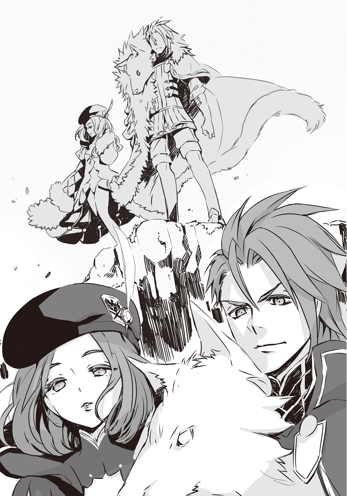
「どうだろう、アナスタシヤ？」
ジークは彼の斜め後ろにいる女性を振り返った。アナスタシヤと呼ばれた女性は、ジークとは目を合わせずに、姫をじっと見おろしている。
「お兄様の幸不幸など、わたくしの関知するところではありません。ただ、お兄様が愚劣であることだけは確実です」
「相変わらず手厳しいな」
「自業自得なのではありませんか」
「実の妹にこの言われようだ」
ジークは肩をすくめてみせた。すくめるのはいいが、もっと気どらないで普通にすくめられないのか。今、ジークの頰を平手打ちしたら、さぞかし胸がすっとするだろう。
「私もそう幸せではないのかもしれないが、きみほどではないよ、公女。なぜなら、きみは私に敗れることになるからだ」
「無理」
姫が駆けだした。
「――わたしは、無敵。負けたりしない。それだけが......！」
「きみの存在意義なのだろうな。まったくもって、きみは不幸だ！ 公女よ......！」
ジークとアナタスタシヤが同時に身を翻した。ハイジたちは谷底にいるので、二人の姿はすぐに見えなくなった。
姫は斜面を登ろうとしている。高さは５メトルほどしかなくても、絶壁に近い。駆けあがるのはさすがに不可能だ。よじ登るしかない。
「姫！ 深追いは......！」
声をかけると、姫は振り向いてハイジを睨みつけた。
「わたしに意見しないで」
「いや、で、でも......怪しいですよ！ あんなふうに指揮官が出てくるなんて！ これはきっと、誘いです！ 罠か何かがあるに決まってます！」
「その根拠は？」
「ぼ、僕なら、そうします！ 姫が強いってことは......無敵だっていうことは、帝国軍もわかっているはずですよね!? 烽火が上がれば姫が出ていくってことも、予想していたような口ぶりだったし......無策で姫に挑むとは思えません！ それに――」
「それに、何？」
「も、もう遅いです。僕がしゃべっている間に、時間が経ちました。いくら姫でも、追いつけないと思います」
「そうね」
姫は斜面の途中から飛び降りて、杓剣を放り投げた。
「准尉が余計なことを言わなければ、わたしがあのジークとかっていう廃王を殺して、敵は撤退したかもしれない。最悪」
「......うっ」
姫の言うとおりなのかもしれない。そうでなくとも、ハイジは姫の侍官だ。ハイジは姫に仕えている。ハイジにとって、姫は絶対者だ。ハイジは黙って頭を垂れるべきなのかもしれない。はい、仰せのとおりです、反省します、と答えるべきなのかもしれないが、できない。
ハイジなりに、自分の判断は正しかったと思っている。自分自身の考えを簡単には曲げられないし、姫にとってそれでいいのか。何を言われてもハイハイと肯定して、こびへつらい、おべっかを使う。そんな者が姫の役に立つのか。片腕になれるのか。
「よ、余計な、ことでもっ......」
ああ、でもこれは、とても怖いことだ。
ハイジは姫の不興を買うかもしれない。こんなうっとうしい侍官はいらないと姫に見切られてしまうかもしれない。姫が司令に罷免を要求したら、おそらくハイジはあっさりクビになるだろう。配置換えされて、評価が下がる。経歴に汚点が残るだろう。その結果、出世できないかもしれない。両親の期待を裏切ってしまうことになる。
今からでも遅くない。やはり、追従者になってしまったほうがいいのではないか？ 姫のためにならない？ そんなの知ったことか！ 気ままだし、厄介だし、面倒だし、部屋を散らかすし、ちゃんと服を着てくれないし、何を考えているのかよくわからない姫なんて、どうなったって関係ない！ 勝手にすればいいのだ！
そう割りきることができたら、どんなに楽だろう。
「......い、言います！ たとえ、姫にお叱りを受けても......僕は、言わせてもらいます！ 姫はもっと、ご自分を大切になさったほうがいいです！ 大切になさってくれないと、こ、困ります！ 僕が、困るんです！ ルルチナさんだって、ギチコさんだって、それに司令だって、絶対、困ると思います！」
「あなたたちが困っても、わたしはべつに困らない」
「そ、そうきましたかっ!? や、やばい！ その返しは、僕の対処能力を超えてる......！」
「対処能力、低すぎ」
「......高かったら、普通に友だちとかも、できていたと思うんですよね......」
「いないの？ 友だち」
「はい......恥ずかしながら、いません......少ないとかじゃなくて、学校でもゼロでした......」
「ふっ」
姫は、ひょっとすると、噴きだしたのかもしれない。
ほんの一瞬、笑ったように見えただけなので、定かではないが。
「わたしも、友だちはいない」
「じゃ、じゃあ......仲間、ですね。はっ――」
言ってしまってから、ハイジは大いに焦った。相手は姫なのに。大公のご息女なのに。仲間呼ばわりはない。とんでもなく不敬だ。
「......す、す、すみません......軽はずみでした......」
「何が？」
「いえ、あの、姫に、仲間なんて......」
「公女だと、仲間にもなれないんだ」
「いやっ、そんなことはっ、決してっ！ た、ただ......僕なんかの仲間というのは、正直言って、どうかと......あ、そういえば、ギチコさんも友だちがいなくて、僕に仲間だって......」
「ギチコは昔からああだから」
姫は少しだけ眉根を持ちあげて、しょうがない子、とでも言いたげな顔をした。
「できるわけないでしょ。友だちなんて。そこにいるだけで、迷惑だもの」
さんざんな評価だが、侍女としてはたしかに、周りの手間を増やすだけの傍迷惑な存在かもしれない。でも、昔から？ ギチコは侍女歴四年と言っていた。昔というと、やや大袈裟に感じられる。
「ギチコさんとは、古いというか、長いおつきあい......なんでしょうか？」
「物心がついたころから？」
「えっ！ そんなに昔から!?」
「ギチコは、わたしの乳母の養子」
「そ、それじゃあ、ギチコさんとは、幼馴染みで――お友だちのようなものなんじゃ......？」
「ろくに口もきかなかった。ギチコはいつも、遠くからわたしを見ているだけだったし。気持ち悪かった」
それはきっと、相手が公女殿下だから、ギチコなりに遠慮していたのではないか。というか、姫が怖かったんじゃないでしょうか――とも言えない。それとも、こういうこともはっきりと口に出すべきなのだろうか。ハイジには判断がつかない。
「......そう、だったんですね。ギチコさんは、乳母さんの養子で、ずっと姫のそばにいて、それで侍女になったんだ。そっか。なるほど。だったら、ギチコさんが侍女になる前は、乳母さんがお世話を......？ あ、でも、ルルチナさんは――」
姫は何か言いかけて口をつぐんだ。目を伏せて、下唇を嚙んでいる。これはもしかして、土下座したほうが？ だって――だって、姫の様子が変だ。怒らせた？ 違う。そうじゃない。姫は何かを我慢しているかのようだ。つらそうにしている。ハイジはふれてはならないことにふれた。少なくとも、ふれかけたのか。それは――もしかして、乳母のこと......？
「帰る」
姫は歩きだした。
「え、あっ、ちょっ、待っ――」
ハイジは軍服の上着を脱いだ。
「姫！ こ、これを！ だめです！ そのままじゃ！ いけませんって......！」
「これを、わたしに着ろって？」
姫はハイジの上着を受けとると、しげしげと眺めた。まずかった......だろうか。まずかったかもしれない。洗濯はしているが、汗もかいたし。そうだ。侍官の上着を姫が着るなんて。
「変な服」
姫は顔をしかめて――おきながらも、ハイジの上着を羽織ろうとし――たところでやめてぐるっと丸めると、ハイジに向かって投げつけた。
「やっぱり、いや」
「かふっ」
ハイジは顔面で上着を受け止めて呟いた。
「......で、ですよねえ......」
４ 僕の頭が爆発しそう CRAZY FOR YOU
帝国軍、襲来――。
その報はまたたく間にイエルヴァラ中に広まった。
イエルヴァラ城市の周辺には邑がいくつもある。警報は当然、それらの邑々にも伝えられ、住民たちが大挙してイエルヴァラに逃げこんできた。城市内は見る間にてんやわんやの大騒ぎになって、日が落ちても落ちつく気配がない。市門はふだん午後六時に閉鎖されるが、今日は遅くまで開けておいて近隣の避難民を受け容れるようだ。
避難民に紛れて、敵の間諜が入りこまないともかぎらない。用心のため、城市に入るための手続きが厳格化されているから、どうしても時間がかかる。列がのびて、揉め事も起こる。衛兵は増強されて、大勢の下士官や兵卒が市内を見回っている。何か起これば分隊が出動する。主郭も、迎撃の用意と城市内の統制とで大忙しだ。公吏たちも今夜は帰宅しないで、主郭内にとどまっている。
ルヴァラ廃地に守られているとはいえ、ここは最前線だ。ハイジとしてもある程度は覚悟していたが、大変なことになった。
午後八時四十五分から司令部で行われた軍議には姫も出席した。一介の侍官にすぎないハイジは司令部の外にいたので、どういったことが話しあわれたのか知る由もない。
軍議は十五分ほどで終わった。というか、姫だけ先に司令部から出てきた。
「ひ、姫、軍議のほうは......？」
「めんどくさいから抜けてきた」
「えぇぇぇ......」
「何か文句でも？」
「ありますよ、そりゃあ......」
「聞かない」
「ですよねえ......いやっ！」
ハイジは無理に胸を反り返らせて、咳払いをした。
「き、聞いていただきます！ 姫！ そういうなんというか、ええと、軍議のような、何ですか、仕事、そう、お仕事は、お、お立場を考えて、しっかりやっていただかないと――」
「ちゃんと喋れるようになってから言って」
「......はい......ごめんなさい......申し訳ないです......」
「報告書は十時に出せって、アルトレッドが」
「あっ。はい！ 了解しました！」
「わたしに敬礼とかしないで。うざい」
うざいとか言わないでください――などと、いちいち泣き言を並べているようでは姫の侍官はとても務まらない。ハイジは姫を私室に送り届けて、大急ぎで報告書を仕上げた。午後十時前に司令部に出向くと、司令は簡易寝台を運びこんでそこに身を横たえ、幕僚たちと話しあっていた。
軍議はどうやら終わっているようだが、忙しそうだ。入口のところで待っていると、司令がハイジに気づいて手招きをした。報告書はカーター大佐が怖い顔で受けとって、司令は簡易寝台に立てかけてあった一振りの剣を手にとった。
「バランくんの軍剣は、姫がひん曲げてしまったのだろう。これを使うといい」
周囲の幕僚たちが目を剝いたり息をのんだりした。理由は明白だ。ハイジだって驚いた。
どう見ても、どう考えても、それは司令の持ち物だ。一介の准士官でしかないハイジが、第八公軍司令の佩剣を貸してもらうわけにはいかない。もちろん、もらうなどもってのほかだ。畏れ多すぎて、自死したくなる。
「い、いえ、あの、その、で、で、で、ですが、それは......」
「ああ。心配は無用だよ。私は剣など振るわないが、手入れはちゃんとしてある。私がやっているわけではなくて、カーター大佐に任せているのだがね」
「やっ、そ、そういうことではなくっ......」
「どういうことだい」
「ぼ、僕はっ、じ、自分は、准尉にすぎませんし......」
「あ。そうだった。きみは本日付で昇進する。尉官までは上の許可をえなくても、私の権限だけで可能だからね。バランくん、今からきみは少尉だ」
「ええっ!?」
「びっくりすることはないだろう？ 准士官は実戦を経験すればただちに士官となる。そういう規定になっているよ」
「そ、そうですね!? はい、それは了解していますが、突然のことだったので......」
「ほら。徽章を外して」
「は、は、はい！」
ハイジはおぼつかない手つきでなんとか准尉の徽章を外した。すかさずカーター大佐が少尉の徽章を差しだしてきたので、「は、はっ！」と敬礼してそれと交換し、新しい徽章をつける。もう一度、今度は司令部全体に向かって敬礼すると、幕僚たちはよくて、ふーん、という表情を浮かべる程度で、ほとんどは無視された。あたりまえだ。一人の准士官が士官になっただけなのだから。たいしたことじゃない。些細な出来事だ。そうはいっても。
「......少尉......僕が少尉......いきなり、少尉......」
「おめでとう、ハイジ・バラン少尉」
司令は微笑んで、見るからに立派な拵えの剣をハイジの前に突きだした。
「で、これはプレゼントだ。ということにしよう。じつは家宝なのだが」
「かっ、かほっ......!?」
「まあ、たいしたものではないよ。それに、私は剣など使ったら、三日は立ちあがれなくなってしまう。まさしく宝の持ち腐れなのだ。きみは剣術が得意なのだろう？ 是非とも有効活用してほしい」
有効活用。できるのだろうか。ハイジがあの姫を守るために剣を振るう。果たして、そんな機会があるのか。
でも、司令はわかっているはずだ。姫の魔性について、そして気性についても、司令は理解しているだろう。承知の上で、家宝の剣を有効活用せよとハイジに命じているのだ。
この剣で、姫の力になれ、と。
だとしたら、ハイジは逃げるべきじゃない。
逃げたくもない。
「拝借いたします」
ハイジは家宝の剣を捧げ持った。
司令が手を離すと、ずっしりとした重さを感じた。
ハイジは下がって一礼した。
「ありがとうございます、司令」
「言っておくが、貸すのではない。その剣はきみにあげるのだよ。不壊の剣、とされている。伝説だがね」
「不壊の......」
「だいぶ古いもので、今となってはつくれないようだ。どうやら、製法と材料に秘密があるらしい。我がデスティニア公国の宗主たるカバラ大王国は、かつてその剣の威力でもって躍進したとされる」
「え......ということは、これ――あのカバランソードなんですか......!?」
「うん」
司令はあっさりうなずいた。ちょっと待ってほしい。
カバランソード？
もしかしてそれは、歴史の授業で習ったアレのこと......？
世界神カバラを祖神とするカバラ大王国は、今では宗主国というよりも、デスティニア公国をふくめた三公国に守られて、かろうじて尊い血脈と体裁を保っているというのが実情だ。もっとも、かつては十三王公侯国を従える東大陸一の大国だった。さらにさかのぼって、カバラ大王国の起源とされるカバラ古王国時代には、一時、東大陸の半ばを支配し、全世界に影響を及ぼしていたという。
その古王国時代の爆発的な勢力伸長を支えたのが、何を隠そうカバラの剣なのだ。
恐ろしい斬れ味を誇り、折れない、曲がらない。あらゆる国が、剣士たちが、無法者どもが求めたが、その剣を製造する技術は古王国から流出しなかった。また、受け継がれることもなく、やがて歴史の深い海に沈んで消えてしまったのだ......。
――と、ハイジは教わった。
カバランソード。
まさしく、伝説だ。
不壊の剣。
「か......か......か......か......家宝どころか......」
手が震える。手だけじゃない。全身が震えている。ハイジは泣いてしまいそうだった。
「......こ......こ......ここ、こ......こ、こっ......国宝、なんじゃ......」
「大袈裟だな」
司令は肩をすくめた。
「一般にはあまり知られていない事実なのかもしれないが、カバランソードは多数現存しているのだよ。姫もいくつか持っている」
「......姫は、公女であらせられますし......僕は、庶民ですし......」
「貴人が貴人としてあるだけで貴いなどというのは幻想だ」
司令はかすかに笑った。
いつになくあたたかみに欠ける、突き放すような、突き落とすような、ある意味ふだんよりよほど軍人らしい、冷厳な微笑だった。
「貴人が貴くありたいのならば、それにふさわしい価値を示さねばならない。貴族だろうと庶人だろうと、貴い者は貴いのだよ。当然のことながら、その逆もまた然りだ。ハイジくん。きみはその剣をどう使う？」
×
ハイジ・バランはこの剣をどう使うべきなのか。
司令に与えられた命題について考えながら、ハイジは姫の私室の前で待機していた。
しばらく前に小用で部屋から出てきた姫には「自分の部屋で寝れば？」と呆れ顔で言われたが、いつなんどき何が起こるか知れないのだ。ハイジは姫の私室の扉の脇に椅子を置いて、そこに座っている。もし眠気が差したら、毛布にくるまって横になればいい。いざというときのために、躰は休めておかねばならないのだ。だったら姫の言うとおり、自分の部屋の寝台で眠れという話なのかもしれないが、とてもそんな気にはなれない。
ハイジは緊張して、神経が昂ぶっている。
だって、戦争だ。戦争が始まるのだ。
いや、まあ、もともと帝国とはずっと前から戦争状態にあるのだが、何しろハイジは田舎で生まれ育った。しかも、故郷のトクタリ邑は帝国との国境からは遠く遠く離れている。公立学校入学で上京した公都デスティニアレスも、ここイエルヴァラの遙か南だ。
学校では、とくにハイジは軍人課程に進んだから、今は戦時中で、我が公国は危機に瀕しているのだと繰りかえし叩きこまれた。そう認識してはいても、正直なところ、帝国の脅威を実感してはいなかった。その機会がなかった。
ハイジは戦争を知らなかった。イエルヴァラに着任してからも、この肌にふれるものとして戦争を感じてはいなかった。間近にあるはずの戦争がどこか遠かった。もちろん、それは勘違いだった。大いなる勘違いだ。
第八公軍は戦争の準備を整えていた。だから哨戒櫓はちゃんと機能して、烽火を上げた。帝国軍の斥候部隊は姫が一人であっという間に殲滅してしまった。第八公軍はただちに戦闘態勢をとり、周辺の住民も避難を開始した。戦争はすぐそこにあった。それどころか、とうにハイジは戦争の中にいたのだ。
そのことに気づいていなかった。ハイジはとんだ間抜けだった。未熟者だった。何も知らない子供同然だった。しかし、もうわかっている。戦争だ。戦争をするのだ。
兵士じゃない故郷の両親、妹、弟、親類縁者、隣人、その他、軍と関わりのない公国の民間人、老若男女を守るために、ハイジは戦う。なぜなら軍人だからだ。軍人は戦わなければならない。軍人はそのためにいる。民の税金で養ってもらっている。戦争をするために。いざというときは、この身を公国の盾にするために。
これからハイジは戦争をするのだ。戦争。戦争。戦争。戦争。戦争。戦争。戦争。戦争を。
わかっている。
ハイジの精神状態はまともではない。自覚はある。これはよくないことだ。落ちつけ。
平静に。
冷静になれ。
ハイジは抱くようにして持っていた剣の柄を握った。少しだけ鞘から抜いてみた。
廊下にはランプが設置してある。その明かりを照りかえす剣身には、霜が降りたような刃紋が浮きでている。
こんな剣は見たことがない。柄や鍔、それから鞘の外装も、華美ではないながら見事なものだが、それより何よりこの剣身だ。
デスティニア公国の名門アルトレッド家の家宝。
銘は、ワイバーン。
伝説に出てくる飛竜の名からとってつけられたらしい。
カバランソード、ワイバーン。ハイジは司令からこの剣を賜った。頂戴してしまった。いつか、たとえば司令が栄転して第八公軍から離れたり、ハイジが何らかの事情で第八公軍にいられなくなったりしたら、そのときは返却するべきだろう。もちろん、そうするつもりだが、とりあえず今はハイジの剣だ。ワイバーン。不壊の剣。
ハイジはもともと剣術が好きだった。だいたい男の子というものは、棒きれを拾ったらそれを剣に見立てて、チャンバラを始めるものなのだ。ハイジなどは、暇があれば手製の木剣を振って振って振りまくっていた。ただ振るだけじゃない。自分なりに工夫をして、自己流の剣術らしきものを編みだした。意外なことに、その剣術もどきは公立学校でも通用した。ハイジは都会っ子の同級生を何人も試合で破っただけじゃない。生徒相手なので油断していたのだろうが、武術教官までも打ち負かしてしまったのだ。
あのときハイジは一瞬、夢想した。これで自分は英雄になってしまうのではないか。ついに友だちができてしまうかもしれない。むろん、そうはならなかった。
武術教官だけはハイジを讃えてくれたが、明らかに照れ隠しだった。同級生たちはハイジに声をかけてくることさえなかった。はっきり言って、みんなドン引きしていた。ハイジは勝ったのに、とても気まずい思いを味わった。
以来、剣術の授業で、ハイジと本気で立ちあう生徒はいなくなった。武術教官とはたまに試合をした。手を抜くなんて失礼だから、ハイジは真剣に戦った。剣達者の武術教官との試合は毎回楽しかった。強い相手はこちらの力を引きだしてくれる。相手が強いと、いつもはできない動きができる。鋭く力強く木剣を振ることができる。ハイジは一度も負けなかった。逆説的に言えば、武術教官が強かったおかげだ。ハイジは無敗で公立学校を卒業した。
ハイジは剣術が好きだった。
剣術はハイジを強くしてくれた。
その一方で、剣術がハイジを孤独にした。試合で勝利すればするほど、ハイジと同級生たちとの距離は広がっていった。
ハイジは適当に勝ったり負けたりするべきだったのだろうか。でも、試合で相手が手加減をして自分が勝っても、ハイジはちっとも嬉しくない。それなら負けたほうがましだ。試合なのだ。負けても死ぬわけじゃない。実戦ではないのだから、負けたら、なにくそ、次は勝ってやると奮起して、自己鍛錬に励めばいいだけの話だ。
実戦ではなかった。
ハイジが勝ったのはすべて、子供の遊びか、ただの試合だった。
遊びは論外だし、試合でいくら強くても、その強さを戦場で発揮できるとはかぎらない。
このワイバーンをたずさえて、ハイジは本物の戦場に出る。
剣身を鞘に納めなおして、一つ息をついた。目をつぶってみる。震えが止まらない。
足音が聞こえる。目を開ける前に、それがルルチナだとハイジにはわかっていた。彼女にかぎらない。人の足の運び方には特徴がある。見ると、案の定だった。ルルチナが盆を持って歩いてくる。ハイジは椅子から立ちあがって敬礼をした。
「お疲れさまです、ルルチナさん」
「ルルチナは単なる侍女にすぎませんから、敬礼は不要です」
「あっ。はい。申し訳ありません！」
「准尉は――」
ルルチナはハイジの徽章を一瞥して、わずかに口許をゆるめた。
「失礼いたしました。少尉に昇進なさったのでしたね。おめでとうございます」
「あ、ありがとうございます。規定どおりというか、予定調和的な昇進なんですけど......」
「昇進は昇進でございましょう？」
「そ......そうです、ね。はい。素直に、喜びます。あの――ルルチナさんは、姫に何か？ もう夜遅いですけど」
「香草茶をお持ちしました。どうせ、お眠りになってはいらっしゃらないと思いますので」
「ああ！ そ、そうでしたか。じゃあ、今、扉を――」
ハイジが姫の私室の扉を開けようとしたら、ルルチナが右手で盆を持ったまま、左手の人差し指を唇にあててみせた。
「お待ちください」
ひそめた声でそう言われたので、ハイジは扉にかけた手を離して、小声で、
「......はい？」
「しばし、ルルチナとお話でもしませんか」
「え。いいです......けど。それは、べつに」
「きっと、おもしろいものをお見せできます」
「......そうなんですか？」
「ええ」
ルルチナはにこっと可憐な笑みを浮かべてから、声をもとの大きさに戻した。
「サクラ様のおそばにいてくださったこと、感謝しております」
「あっ、いや、それは、僕は侍官なので、当然というか......でも、そば、というより、近くにいることしかできなかったので、むしろ申し訳ないくらいで......」
「おそばにいてくださっただけで充分です」
「......うかがってもいいですか？」
「どうぞ」
「ええと......どう訊けばいいのかな、つまり――僕には、姫のおそばにいること以外というか、それ以上は、期待されていない......ということなんでしょうか」
「少尉はごらんになりましたでしょう？」
あの戦いぶりを、とルルチナは言いたいのだろう。
ハイジは見た。この目で見てしまった。
「はい」
「それでは、逆にお訊きします。少尉がルルチナだったとして、サクラ様のおそばにいる以上のことを要求できますか」
たとえば、ともに戦って欲しいと。姫と肩を並べて、戦えと。そんなことを普通の人間に求めるのはあまりに酷だ。ルルチナはそう言いたいのだろう。
「......僕には、姫のおそばにいることしか、できない......んですかね」
「現実的にはかなり難しいでしょう」
「でも、それじゃあ――」
ハイジは思いだす。
ばらばらになって、ハイジを突き刺した姫の言葉たちを。
自分は、無敵だ。自分を守ろうなんて考えるな。無理で、無意味で、いらない。
姫はハイジを拒むように、隔てるようにそう言って、たぶん自分自身を傷つけていた。
かつてハイジは一人で木剣を振るっていた。――僕は！ 僕は一人だ！ 僕には友だちがいない！ 僕はひとりぼっちだ！ そう叫ぶように、叩きつけるように、一人きりでいつまでも木剣を振るっていた。寂しくて、悲しくて、自分がくだらない馬鹿者に思えて、でも、そうすることしかできなかった。
「それじゃあ......姫はずっと、一人じゃないですか。一人で戦いつづけなきゃいけないことになるじゃないですか。そんなのって、ないですよ。だって、帝国軍との戦いは、姫だけのものじゃありません。僕たち公国の民、みんなの戦いです。少なくとも、僕は軍人なんだから。僕は戦わなきゃいけないんだ」
「気持ちだけで、戦えますか」
「それはっ」
「ご無理をなさっても命を落とされるだけです。それを世では無謀と申します」
ルルチナは急に首をかたむけて、片方の眉をつりあげた。
「いいか、青二才。何をどう考えようと、てめえの勝手だけどな。てめえごときへなちょこの甘ちゃんがムチャしてくたばりでもしたら、サクラ様がどうお感じになると思う？ 平気だとでも思うのかよ？ ふざけるんじゃねえぞタコ。一発ぶん殴ってやろうか？ まあ、このルルチナ様が本気で殴ったら、目が覚めるどころか目ん玉飛びだして即死しちまうだろうけどな。これ以上たわけたことぬかしやがるなら、こっちはそれでもかまわねえ。てめえがサクラ様のためにならねえクズカス野郎だと判断した瞬間、この手でぶっ殺してやる。わかったか？」
呼吸すらできなかった。今まで生きてきて、こんな大迫力で凄まれたことはない。ハイジはルルチナに圧倒されていた。うなずいて、はい、わかりました、すみません、と謝るしかない。今すぐそうしないと、彼女は本当にハイジを殴り殺すかもしれない。かもしれない、じゃない。彼女は間違いなくやるだろう。
それなのに、なぜハイジはためらっているのか。馬鹿なのか？ きっと馬鹿なのだ。大馬鹿だから、言ってしまうのだ。
「は、判断、したら......ルルチナさんが、僕を、くずかごやろう？ クズカス？ ええと、そんなふうに判断したら、こ、殺してください！ いいです！ そうしてくださって、かまいません！ で、でも！ 僕は、それでも！ やっぱり、姫を一人にはしたくありません！ 姫の隣で戦いたい！ できることなら、姫の前で戦いたい！ できるか、できないかじゃない！ ぼ、僕は、僕は、僕は！ 僕は、そうしたいんだ......！」
「ガキが......！」
ルルチナの緑色の瞳が光を発した。くる。
左の拳が。
ハイジは動けなかったのか。よけようにもよけられなかったのか。それとも、あえて動かなかったのか。ハイジ自身にもわからない。とにかくハイジは微動だにせずに目を見開いてルルチナの左拳を凝視していた。息が止まりそうだった。というか、息は止めていた。彼女の左拳はハイジの顎をとらえようとした。その５ミリル（約５㎜）手前でぴたりと静止した。
「へっ」
ルルチナは唇の片端をゆがめて笑い、ハイジの顎を殴りかけてやめた左手で、ハイジの頰をぺちぺちと叩いた。彼女の瞳からは光が失せている。
「このルルチナにクソ生意気な口をたたきやがるとは――どうやら、度胸だけは一人前でいらっしゃるようですね、少尉」
「......そ、そうですか......ね」
「褒めてさしあげます」
「あ、ありがとうございます」
「ですが、決してご無理はなさいませんよう」
ルルチナは左手を引っこめると、その手を自分のほぼ平らな胸に当てた。
「心配なさらずとも、サクラ様をお一人で戦わせたりはいたしません。――このルルチナが」
「魔性を」
ぽろりと口を滑らせてしまった。でも、ハイジはずっと疑っていたというか、そうなのではないかと思っていたのだ。
「お持ちなんですね。ルルチナさんも。それに、たぶん......ギチコさんも」
「ギチコは事情がやや複雑なのです。それゆえに、あれは魔性ではないということにしてあります。公的に認められていない、ということです」
「公的......？」
「我が公国にかぎりませんが、魔性は国家が認証し、管理することになっております」
「......知りませんでした。そんなこと」
「少尉がご存じでなくても致し方ありません。魔性は、それが特殊な、ときに強大な力であるがために広く知れ渡っておりますが、だからこそ国家機密なのですから。一般にはつまびらかにされていない秘密が、魔性に関しては多くあります」
「ルルチナさんの魔性は、我が公国に認証されている......？」
「リリーローエンという名の一門は、カバラ大王国に発しました。ですが、今となっては知る者とて稀です」
「貴族......なんだ。ルルチナさんは」
「単に、父祖がそうであったというだけのことです。おかげで、こうして魔性を受け継いでおりますので、感謝はしておりますが――ともかく、ルルチナは生まれながらにしてさる御方の庇護下にあり、その意に従って、工作員......もっとはっきり申せば、刺客としてサクラ様のもとへと送りこまれたのです」
「なるほど、刺客とし......し、刺客!? ですか!? ええっ!? 刺客って......!?」
「ルルチナに課せられた任務は、サクラ様を監視し、可能であれば亡き者にすることでした」
「姫を、亡き者に――」
ハイジは目を剝いて跳びあがった。
「って、えええっ!? えええええええええええええぇぇぇぇぇぇぇぇぇぇぇぇぇぇっ......!?」
ルルチナはちょっとだけ首をかしげて、野花のような微笑を浮かべてみせた。
「むろん、今は違います」
「あ......そう、なん、です、ね......」
ハイジはへたりこんでしまいそうなくらい安堵した。いや、でも、待て。ルルチナが正直に話しているという保証がどこにあるだろう。噓をついているとは思えない。そんなふうには思いたくもないが、ルルチナが偽りを語っていても、おそらくハイジには見抜けないだろう。
ハイジは剣の柄に手をかけてはいない。しかしいつでも抜き放てるように、それでいてルルチナにそうとは悟られないように、ひそかに準備をした。
「それは、本当......ですか。その――今は、そういうことを、企んでいないというのは」
「面と向かって、そのようなことを尋ねる盆暗がどこにおります？ いいえ。ここにいらっしゃいますね。ルルチナの目の前に」
「......た、たしかに、迂闊でした。もしルルチナさんが噓をついていても、認めるわけがないですよね。僕は馬鹿だ......」
「そこが問題です」
「はい？」
「味方は少ないより多いほうがいい。ですが、間抜けな味方は足手まといになりますので、かえっていないほうがましです」
「同感です。その間抜けが、僕か......」
ハイジは自分の胸の真ん中に拳を叩きつけた。このままではだめなのだ。
「な、直します！ 間抜けなところを矯正するのは簡単じゃないと思いますけど、鋭意努力します！」
「馬鹿正直という言葉をご存じですか」
「え？ はい。知ってますけど。あっ。もしかして、僕のこと!?」
「少尉。あなたは刺客ではありませんね」
「ち、違います、もちろん。うわっ、どもっちゃったら、なんかあやしい......やっ、でも、本当に違います。もし僕が刺客だったら、殺してしまっていいです、僕のこと。というか、責任をとって、自分で死にます！」
「ずいぶんおかしなことをおっしゃっていると、ご自分でお気づきですか」
「な、なんとなく......。そう、ですよね......仮に僕が刺客だとしたら、何を言っても疑わしいですし。油断を誘うために、馬鹿正直を装っているかもしれないわけだし。考えれば考えるほど、八方塞がりなんですよね。どうすればいいんでしょうか......」
「このルルチナは、旧主より与えられた任務を放棄し、サクラ様にお仕えすることに決めました。旧主はサクラ様ではなく、ルルチナに向かって幾たびも刺客を放ちましたが、すべて返り討ちにしてやりました」
「返り討ち......って、殺っ......？」
「彼ら、彼女らは、かつての同僚でした。ルルチナはその全員をこの手で討ちとりました」
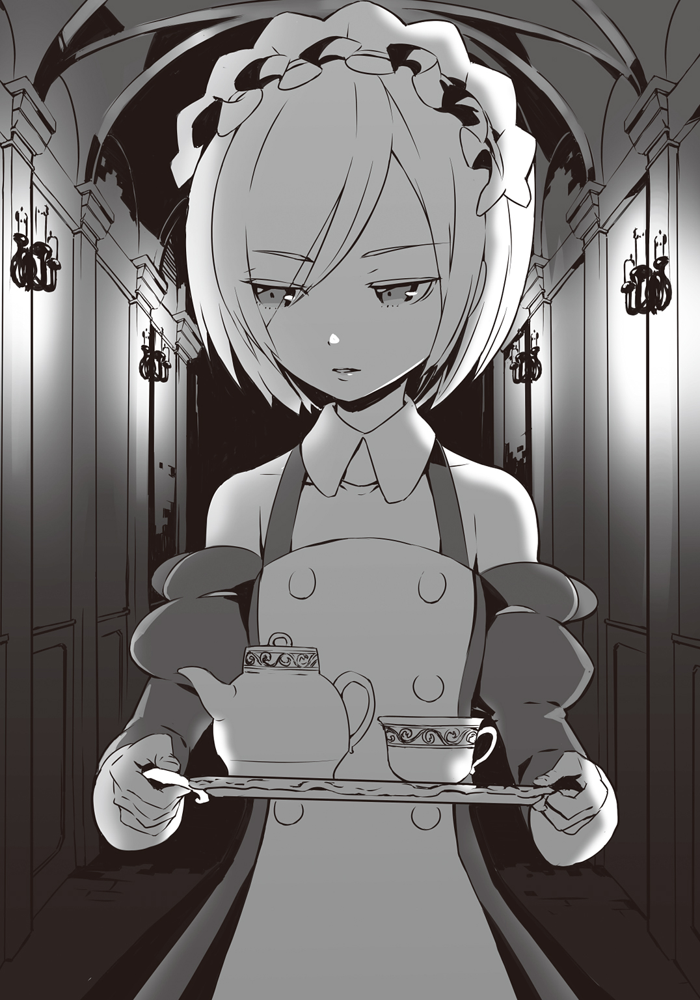
ルルチナはなぜそんな恐ろしいことを淡々とした口調で語れるのだろう。
ハイジが思うに、彼女は平気だから、どうでもいいから、なんともないから、淡々と語っているのではない。たぶん、反対だ。平気ではないから、どうでもよくない、なんともなくないから、淡々と語るしかないのではないか。
もしかすると彼女は、刺客として、暗殺者として、いくつもの罪を犯してきたのかもしれない。暗殺者同士が殺しあった。互いに自業自得なのかもしれない。
でも、彼女は昔の主や仲間を裏切るという大きな決断をして、その報いを受けたのだ。
小さな躰で、すべてを受け止めた。
その人生を思うと、ハイジは心臓が痛くなる。彼女の姫に対する忠誠の計り知れない重さに、押し潰されてしまいそうになる。
「サクラ様には何もかも打ち明け、そののちにこう申しあげました」
ルルチナはそのときを思いだすように少し目を伏せて、口許をわずかにゆるめた。
「このルルチナを信頼するもしないもあなた様の御心次第です。どちらでもルルチアはかまいません。いずれにせよ、ルルチナはこの命、この一生をあなた様に捧げることにもう決めました。ルルチナを解雇されるのでしたら、そうしていただいて結構です。ルルチナは勝手にあなた様にお仕えいたします、と。――サクラ様は呆れ、そして、お笑いになりました。たかだか一年半ほど前のことです。身の証しを立てるには、まだまだ時が足りないと、ルルチナは存じております」
ハイジも同じだ、とルルチナは言いたいのだろう。すぐに信頼をえることなどできるはずもない。時間をかけて、実績を重ねて、ハイジは証明しなければならない。姫に害をなさない、姫のためになる、信じるに足る人間だということを。
ルルチナは、それができるか、とハイジに問うているのだ。
その覚悟はあるのか、と。
「やります」
ハイジは顎を引いてうなずいた。左手でワイバーンを持って、踵をそろえ、背筋をのばして、右の手刀を左胸にあてる。
「一歩一歩！ いつの日か信じていただけるように、精進いたします！」
「しっ」
と、不意にルルチナが唇の前で人差し指を立てて、抜き足差し足忍び足で姫の私室の扉に近づいた。
そうして静かに扉の把手を握ると、ハイジを手招きする。
ハイジは首をひねりながらも扉に身を寄せた。
「......何ですか？」
声をひそめて訊くと、ルルチナはもう一度、
「しっ」
とハイジを黙らせてから、扉の向こうに呼びかけた。
「サクラ様」
「な、何っ!?」
姫の返事は早かった。
即答にも程がある。
間を置かずにルルチナが扉を開けると、姫は寝台めがけてダッシュしている最中で、その姿勢のまま止まった。
それから、ゆっくりと振り返って、澄まし顔をした。
「......な、何？ ど、どうかした？」
でも、声が揺れているし、目の焦点が定まっていない。あと、なぜか内股になっている。
ルルチナは首をかたむけて、にっこりと笑った。
「聞いていらしたのですか」
「きっ、聞いて、ないけどっ。ていうか、な、何をっ？」
「扉越しでは、ろくに聞きとれなかったのではありませんか」
「だ、だから聞いてないしっ」
「お話に参加なさりたいのでしたら、そうおっしゃってくださればよかったのです」
「そんなこと、思ってないからっ。これっぽっちもっ」
「さようでございますか」
「あたりまえでしょ！」
姫はむっとしたように少しだけ頰を膨らませて寝台に腰かけた。うつむいて、何かぶつぶつ呟いている。
「......な、長々としゃべってるから、ちょっと気になっただけで......べ、べつに盗み聞きしようとか思ったわけじゃないしっ。そんなことする理由がないしっ。どうでもいいし、めんどくさいし、くだらないしっ。どうせ、わたしには関係ないんだから......だから、わざわざ外で話してたんでしょ。そうに決まってるんだからっ......」
ルルチナがハイジにちらりと視線を送って、にやっとした。これか。
たしかルルチナは、きっとおもしろいものが見られる、というようなことを言った。これのことだったのだ。
実際、おもしろいと言えばおもしろいのかもしれない、だけど、これは――おもしろいというか、むしろ。
ハイジは右手で顔の下半分を覆った。笑いの衝動をこらえているのではない。そうじゃなくて、なんというか、胸がいっぱいになって、その胸をいっぱいにしているものが何なのか、ハイジにはわからなくて、こんなの初めての感覚、初めての経験で――これは......？
とにかく震えよりもっと細かい振動が、首の後ろから顔、肩、胸、そして全身へと広がってゆく。その振動をもたらしている感情？ 感慨？ ハイジの胸をいっぱいにしているものの正体は、そういった種類の何かなのか？ でも、だとしたら、胸から生じて首の後ろから胸に至って全身に広がるというのは、どうにも変じゃないか？ 変じゃないのか？ わからない。
いけない、とハイジは思う。これはどうもいけない。走りだしたい気分だ。ここから逃げ去りたい。だけど、できない。ハイジはここにいたい。姫のあの姿を見ていたい。いつまでも見つめていたい。もう一瞬たりとも目を離したくない。
こんなことを考えるのは不遜だ。とてもよくないことだ。でも、考えてしまう。あの姫をどこか狭い場所に閉じこめて、ずっと眺めていたい。そうしたらハイジは、この感覚に襲われつづけていつかたぶん、頭がいかれてしまうだろう。それでもいい。ぜんぜんかまわない。それどころか、おかしくなってしまいたい。本望だ。
これは何だ？
この気持ちは？
わからない。
ハイジ・バランは異常なのか？
とっくにおかしくなってしまっているのか？
そうかもしれない。いや、そうなのだろう。そうに違いない。
ハイジはおかしくなったのだ。原因は？
姫だ。
姫のせいだとか、姫が悪いだとか、そんなことは微塵も思わないが、他には考えられない。
姫だ。
姫がハイジをおかしくした。
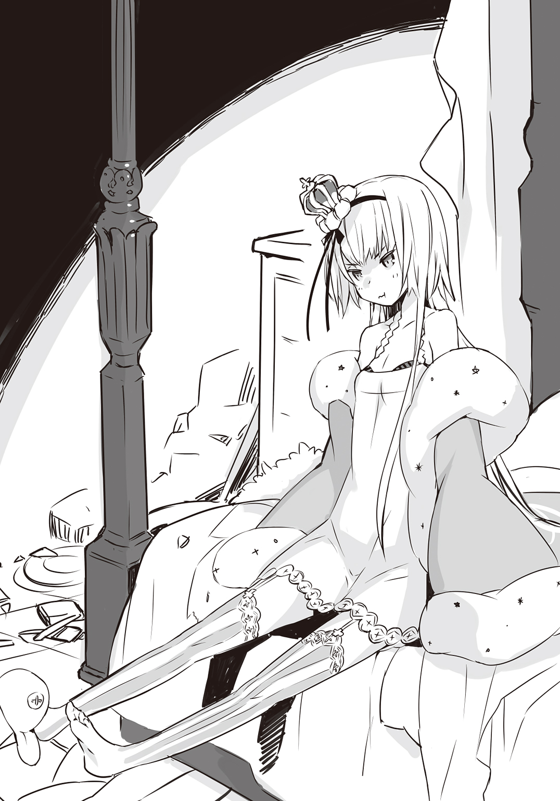
「かわいらしいところも、おありになるでしょう？」
ルルチナが、おそらく姫には聞かれないように、そっと囁くように言った。
ハイジは目を瞠った。
「――あっ......」
「はい？」
「ん？」
ルルチナと姫が一斉にハイジを見た。
ハイジは頭を叩いた。
「それかぁっ......！」
ルルチナも姫も不思議そうだ。しかしハイジにしてみれば、人類が千年かかっても突き止められなかった謎を解き明かしたような気分だったのだ。それだったのか......！
かわいらしい。
かわいい。
それだ。
何のことはない。
寝台に腰かけて、両手をついて、下を向いて、脚をぱたぱたさせて、ほっぺたを膨らませて、口を尖らせて、ぶつぶつと呟いている姫が、その姿勢が、仕種が、かわいらしくてかわいくて愛らしくてたまらなかったのだ。
「......そ......そうだったんだ......」
ハイジは目尻のあたりを指でぬぐった。姫がかわいすぎて、涙ぐんでしまっていたのだ。姫がかわいすぎるせいで、ハイジはおかしくなった。
なんて恐ろしい。
姫の魔性もすごいが、姫のかわいらしさも危険だ。少なくとも、ハイジにとっては危険すぎる。何しろ、姫がかわいすぎると、ハイジは正気を失ってしまうのだ。しかも、そうして我を忘れた状態はとても気持ちよかった。これ以上ないくらい、幸せだった。できれば、姫にもう一度、あの場面を再現してもらいたいほどだ。やってもらえるのなら、ハイジはそれと引き換えに何でもしてしまうかもしれない。かもしれない、じゃない。何でもする。確実に。
「......どうしちゃったの、その人」
姫にそう尋ねられたルルチナは、首を横に振って、
「さあ。ルルチナに訊かれましても」
「なんか、本人に訊くの、怖い」
「ぼ、僕は怖くないですよ!? 姫の、しもべですから！」
うん......？
ハイジは眉をひそめた。違うか？ そうだ。違う。言い間違えた。
「――ち、違った！ そうじゃなくて、片腕です！ あっ、いえっ、片腕というのは僕の目標であって、身分は侍官でした！ 僕は姫の侍官なので、怖くないです！」
「ふうん......」
姫はぱたっと横になって、腹の上で両手を組みあわせた。
「どうでもいい。めんどくさいし。せいぜい、がんばって」
「がんばります！」
「うざっ......」
「うっ......」
ハイジは屈んで胸を押さえた。姫に、うざい、うざったい、迷惑だ、といった類いの言葉をぶつけられたのはこれが初めてじゃない。何度もある。毎回、多少はショックだったが、こんなにも強い、鮮烈な痛みを感じたことはない。
なぜだろう。どうしてこんなに痛いのか。
「敵、さっさとくればいいのに」
姫は目をつぶり、虚空に向かって呟いた。
「何もかも、早く終わってしまえばいい」
×
ハイジとしては、何もかも終わってしまわれては困る。姫はなぜそんなことを言ったりするのだろう。考えると、それこそ何もかも終わってしまいそうな心地がする。
終わるのではなく何かが始まって、姫がそんな後ろ向きというかせつないというか悲しい想念にとらわれることがなくなればいい。しかし、たとえば何が始まれば、姫に明るく楽しい毎日を送ってもらえるようになるだろうか。ハイジにはわからない。明るく楽しそうな姫の様子を想像するのも正直、かなり難しいが、無理に思い描いてみる。
とても、大変、とてもとても、すばらしい！
姫が満面に笑みをたたえるだけで、帝国の野望なんか木っ端微塵に砕け散ってしまい、デスティニア公国に安寧が訪れて、世界が平和になってしまいそうだ。帝国をぶっ潰す。ハイジがその大目標を達成するためには、姫に幸せな日々を過ごしてもらうのが一番手っ取り早い方法なのではなかろうか。
いや、手っ取り早くはない。だって、どうすれば姫が幸せになるのか、ハイジには見当もつかないのだ。ならばいっそ、姫を幸せにすることを目標に据えたほうがいいのかもしれない。何か間違っているような気もするが、いったい何が間違っているのだろう......？
ハイジは姫の私室の前で朝まで過ごした。姫のことで頭も胸もいっぱいで、なかなか眠くならなかったが、朝方に二時間ほど、毛布にくるまって床の上で寝た。
起きると、毛布の上に一枚、上掛けがかかっていた。
誰がかけてくれたのだろう。
ギチコに尋ねると、自分ではないと否定した。ルルチナは「さあ？」と言葉を濁した。そこで、勇気を出して姫に訊いてみたら、ちょっと不機嫌そうな表情で、
「おばけでも出たんじゃない？」
という答えが返ってきた。
途端にハイジはまたおかしくなりかけたが、今度は原因を理解していた。寝ているハイジに上掛けをかけてくれたのは姫なのかどうか。それは判然としない。どうも姫のように思われるが、断定はできない。
でも、「おばけでも出たんじゃない？」は明らかにかわいい。
戦争がすぐそこまで迫っているというのに、なんてことだ。
かわいい。
×
もっとも、我がデスティニア公国の麗しき姫君は、ただかわいいだけではない。
午前八時十五分に司令部で軍議が開かれ、姫と一緒になんとハイジも出席することになった。といっても、あくまで姫の後ろに控えているだけだ。発言権はないが、一介の准士官――ではなくて、士官になりたての侍官にとっては、言うまでもなく名誉なことだ。軍議の進行を目の当たりにして、その空気を感じるだけでも貴重な経験になる。何しろ非常時なので、今後も午前八時十五分からと午後七時からの一日に二回、軍議は定期的に行われるとのことだが、初めてということでハイジは緊張していた。気合いも入っていた。
司令部には大きな長方形の卓があって、南面する席に姫が、北面する席には司令が、東面する席には幕僚長のカーター大佐以下幕僚たち、西面する席には第一連隊連隊長のダンドリュー大佐以下連隊長たちがつく。連隊長は各自副官を従えているが、彼らはハイジと同じ立場で席は与えられない。各連隊長の後ろに立っている。
「それでは始めようか......」
司令が咳をこらえながら開始を宣言すると、幕僚の一人が起立して現状を説明した。
曰く、帝国軍はまだやってこない。
第八公軍は偵察を出して敵の動きを探っているが、斥候部隊をいくつか発見しただけで、本隊の姿はとらえられていないという。ゆえに往復一日以内の距離に敵軍本隊はいないと考えられるが、消息を絶った偵察兵が少数いるので、予断を許さない。ただし、イエルヴァラの近くにはとりわけ密に哨戒櫓、哨戒壕が配置されている。それらが烽火を上げていないということは、たとえば一時間後、二時間後に戦闘開始、といったことはありえないだろう。
城市内では第八公軍総勢二万余の半数から三分の二が常に配置についている。敵軍の接近が確認され次第、全数配置に移行する。
ここまでの報告で五分少々が経過しただろうか。
姫が突然、立ちあがった。
「だいたいわかった」
「......え？」
ハイジは思わず声を出してしまった。というか、だいたい？ いやいや、だいたいなんて、そんな大雑把な。軍議なのだから、もっと綿密にいかないとやっぱりそこは。
「太守閣下......」
司令も秀麗な顔をしかめて、さすがに姫をたしなめようとしたのかもしれないが、咳に邪魔された。
「うえっ、ごほっ、ぐふっ、おふぇっ......」
「司令」
すかさずカーター大佐が席を立って司令の背中を撫でさすった。幕僚や連隊長、副官たちは無言だが、やれやれ......というような空気が司令部に流れている。ダンドリュー大佐などは腕組みをして、呆れ顔を隠そうともしない。
姫は司令やカーター大佐、それからダンドリュー大佐を一睨みした。
「何か言いたいことでも？」
「ぐほっ、ぶへっ、うぉほっ......」
司令は言いたくても言えないようだ。カーター大佐は司令の介抱で忙しい。
「いいえ」
ダンドリュー大佐は口をへの字に曲げて肩をすくめた。
「といいますかね。むしろ、閣下から我々におっしゃりたいことはおありじゃないんですか」
「わたしから？」
「ええ。何せ、御身は我々の太守閣下であらせられるわけですから」
「そうね」
姫はやわらかそうな下唇を細い指で軽くつまんだ。
「よきにはからえ」
「了解しました」
ダンドリューがわざとらしく大仰に敬礼をすると、姫は歩きだした。――って、どこに行くんですか軍議の最中というかまだ始まったばかりじゃないですかだめですよいけませんってばねえ姫――と思いはすれど、お歴々の面前で太守閣下を咎めるような真似をするわけにもいかず、ハイジとしてはおろおろしながら姫を追いかけることしかできない。姫は司令部を出る前に足を止めて、躰を半分だけ振り向かせた。
「これまでどおり、わたしはわたしの仕事をする。あなたがたはあなたがたの仕事をして。わたしの妨げにさえならなければ、あとのことはどうでもいい」
司令の咳だけが返事だった。姫は司令部をあとにした。
「ひ、姫......」
姫の後ろをついて歩いているハイジ・バラン少尉十七歳はまるで子犬のようだ。不甲斐ない。こんなことでどうする。そうだ。しっかりしなきゃ、とハイジは自分を励ました。
「ぐ、軍議はその、さ、最後まで責任を持って、というか、お、お立場もありますし、ちゅ、中座するのはどうかと......」
「そんなに言うなら、わたしの代わりに少尉が座ってれば？」
「ぼ、僕が!? い、いや、そういうわけには......代わりって、置物じゃないんですから......」
「置物？」
「え？ あ、た、喩えですよ!? ただの、喩えで、姫が置物だったりしたら、それはもう、とんでもなく......」
「とんでもなく？」
「......と、とてつもなく......なんというか......つ、つまり......」
「邪魔でしょ」
「へっ!?」
「わたしが置物だったら。ものすごく、邪魔」
「そ、そうですか......？」
ハイジは想像してしまった。姫の形というか、姫そのものの置物。そんなものがもしあったとしたら――置物だけに、うざいとか消えろとか暴言を吐くことはないのだ。ただそこにある。というか、いる。姫は今、ガウン的なものを身にまとって、ハイジがどうかそれだけはお願いしますと土下座する勢いで懇願したので前をちゃんと留めてくれているが、ふだんは下着みたいな恰好でいるわけだから、置物もきっとそうだろう。今はスリッパを履いているものの、いつもは裸足だったりするから、置物もたぶん素足だ。そんな置物があったら、それは――どうだろう。なかなか、いや、かなり、すてきなのでは？ すばらしい置物なんじゃ......？
でも......それでも、置物より、本物の姫のほうがいい。なんとなくそんなことを考えたりしているうちに、姫の私室に到着してしまった。ハイジは慌てて扉を開けようとしたが、盆を持ったギチコがチヌコを従えてあっちのほうから歩いてくる。盆の上には茶が入っているとおぼしきポットやらカップやら何やら。姫がため息をついた。
「......あのお茶。誰のために持ってきたの」
たしかに、途中で軍議を抜けてこなければ、姫はまだ司令部にいたはずだ。ギチコは誰のために茶を用意してきたのだろう。というか、おっと、おっととと、おととととと......みたいな危なっかしすぎる足どりで、見ていられない。一声かけて手を貸したいが、何しろそこはギチコだ。ハイジが呼びかけただけで、その拍子に盆をひっくり返してしまいかねない。
そんなわけで、ハイジは遠くから静かに見守ることにした。でも、姫は違った。
「ギチコ」
「ふぉっ」
だから言ったのに――いや、ハイジは何も言わなかったが、予想どおりのことが起こった。ギチコは脚をもつれさせて、盆とその上にあった諸々を残さず床にぶちまけた。
「......うぁ」
「うぁ、じゃないでしょ。ぐずなんだから」
姫は髪をかきあげて、うんざりしたように言った――が、表情はべつに刺々しくなくて、ハイジはちょっと意外の感に打たれた。
「ごめんなしゃい......です......」
ギチコはうなだれている。姫はくすっと、ほんのわずかにだが、笑ったように見えた。
「しゃいって何」
「ふぉぃ？」
「いい。話が通じるとは思ってないし」
「おぉぅ......あ、あたし、片づける、です......ます。です？ ぬぅ......」
「せいぜいがんばって。ルルチナに怒られたくないでしょ」
姫は手ずから扉を開けて私室に入った。ハイジもつづけて入室しようとしたら、目の前で扉を閉められた。
「――わっ。ひ、姫......？」
「一人にして」
扉越しのくぐもった声に拒絶されて、ハイジは立ちつくした。無理に入っていっても、がんがん物を投げつけられて追い払われるパターンだ。
しかたない。ハイジはギチコとチヌコを手伝うことにした。ギチコの途方もない胸元や臀部などを見てしまわないように注意しながらなので、けっこう骨が折れた。後片付けが終わってギチコとチヌコが立ち去ってから扉を叩いてみた。返事はなかった。
私室の外で待つしかない。
ときおり思いきって扉を叩いてみる。やはり反応がない。
「......姫？」
いくらなんでも、ここまで無視されるのはおかしい。
「姫。――姫？ 姫......？ あの、ええと......入らせていただきます......けど、問題ありません、よ、ね......？」
ハイジは扉を開けた。寝台の上に姫の姿がない。窓脇にも腰かけていない。部屋の隅っこにもいない。クローゼットの中にもいない。倒れた机や椅子の影に隠れてもいない。
ハイジは窓のほうへと向かった。扉から寝台まではハイジや侍女たちの通り道なのでそうでもないが、その他の場所は足の踏み場がほとんどない。本やら衣類やらをどけつつ進んで、ようやく窓に到達した。
窓は開け放たれている。ハイジは身を乗りだして外を見た。非常時だが、主郭の中はむしろ、ふだんより落ちついている。今は主郭の外、城市内のほうがしっちゃかめっちゃかのはずだ。
ハイジは深く、深くため息をついた。右手でおでこをごしごしとこする。
まったく、我がデスティニア公国の麗しき姫君は、ただかわいいだけじゃない。
「......こんなときに、また脱走......」
５ やめろと言われてやめる馬鹿 UNTOUCHABLE
ただちにルルチナとギチコを呼んで、三人、いや、チヌコもいるので、三人と一体とで捜索隊を結成した。
姫は前回、人がいないところへ行っていたが、今回は人がたくさんいる場所だろう。それがルルチナの読みだった。そこでハイジたちはまず、市場を見てみることにした。
イエルヴァラの市場はごった返していた。これから戦争が始まるので、買えるものは今のうちに買っておこう、だったら売れるだけ売ってやろう、ということで、大いに賑わっているようだ。それに、城市民に加えて、近隣からの避難民もいる。ちょっと異様な混雑ぶりで、ほとんど殺気立っていると言っても大袈裟じゃない喧噪にあふれていた。
ハイジは軍服姿で、ルルチナとギチコは侍女の服だ。しかもギチコは名状しがたいアレだし、人形のチヌコまでいる。はっきり言って、そうとう目立つ捜索隊のはずだが、ハイジらに目をくれる者は多くない。みんなそれどころじゃないといった様子だ。
通りが広いから、もみくちゃにされることまではないが、行き交う人たちと袖がふれあうことはしょっちゅうで、公都デスティニアレスの雑踏が思いだされた。
といっても、ハイジの場合、公都繁華街や大通りの人混みを遠くから眺めることはあっても、その中に混ざることはなかった。都会の式典も祭りも、友だちのいないハイジにはまぶしすぎたのだ。こうして人波にもまれるのは、じつのところ初めての経験かもしれない。目が回りそうだったが、それより姫だ。
「姫......」
すぐ見つかるといいのだが。
「姫......」
だいたい、いつ戦争になってもおかしくないこのときに、何を考えているのか。
「......姫......」
あるいは、こういうときだから？ 姫には姫の気持ちというものが、もちろんあるはずだ。ハイジはそれをわかっていない。だから、何を考えているのか、なんて思ってしまうのかもしれない。
「姫......」
所詮、ハイジは姫のことを何もわかっていない。そういうことなのか。
「......姫......」
「少尉」
と呼ばれて、見ると、ルルチナが目を半眼にしてハイジを見上げていた。
「は、はいっ!? な、何でしょうか!?」
「いえ。先ほどからやけに姫、姫と呟かれているものですから」
「ええぇぇっ!? ぼ、僕、口に出しちゃってました!?」
「はい。はっきりと」
「......ご、ごめんなさい。気づきませんでした......」
「謝られることはございません。ただ、少々気味が悪かっただけですので」
「うっ......」
ハイジは胸を押えた。ギチコが、
「ふぁっ」
と珍妙な声をあげて前方を指さしたのはそのときだった。ハイジは目を瞠った。
「あ――」
この先には露店が並んでいる。屋台もあれば、敷物を地べたに敷いてその上に品物を並べただけの店もあるが、とにかくすごい数だ。露天商も許可制で、出店する場所を決められているから、数は多くても整然としている。なかなか壮観だ。
そこに、穴があいているように人がいない空間があった。もっと詳しく言うと、一つの露店を中心として、だいたい半径５メトル（約５ｍ）の円形をなす一帯が、完全ではないものの無人に近い状態になっている。
問題の露店の前に、きらめく白金をとかして淡い色の薔薇のしずくを混ぜたような色あいの長い、長い髪の若い女性がしゃがんでいた。
さすがにあの肌着というか下着というか、薄すぎて危険きわまりない服の上に、ガウン的なものを羽織ってくれていたので、ハイジは安心した。ガウン的なものなしの姿はとても人には見せられないというか見せたくないというか、見せてたまるかというか何というか。ガウン的なものは丈が長いので、裾が地面について広がっている。
そんな姿勢でいったい何をしているのだろう。敷物の上の商品を物色でもしているのか。
チョビ髭を生やした露店の主は困惑しているようだ。もっと言えば、迷惑そうにしている。でも、目の前の客を追い払うこともできず、あきらめ加減で腕組みをして、たまにチョビ髭をさわったりしながら、ひたすら受難の時が過ぎるのを待っているといった風情だ。
ルルチナが深いため息をついた。
「このかきいれどきに、とんだ営業妨害ですね」
「......あの」
ハイジはあたりを見まわした。
「姫の正体は、ばれているんでしょうか......？」
「たまにこういったことをしでかされる御方ですので、知る者ぞ知るといったところではありませんか。露店巡りはわりあいお好きのようです」
「そうなんですね......」
「ただし、金銭を持ち歩く習慣がサクラ様にはありません。公家の方々というのは、そういうものなのでしょうが」
「ああ......たしかに、自分でお金を払ったりとか、しなさそうだ......」
「サクラさまぁー」
ギチコがチヌコを引き連れて、ひょこひょこというか、ぷりんぷりんというか、そういう感じで歩いてゆく。
姫はこっちを向いた。
というか、ハイジたちを睨みつけた。
ものすごく機嫌が悪そうだ。
「あなたたち、何しにきたの？」
「うきゃっ」
ギチコが転んだ。チヌコも一緒だ。
「......ふごぉ。痛ぁ......」
「だ、大丈夫ですか!?」
ハイジはギチコを助け起こした。当然、ギチコの腕以外にはできるだけさわらないように気をつけたが、腕でもやわらかすぎて胸がどきどきした。さらに、何かの拍子にほんのちょっとだけ胸に指がふれてしまい、全身の血液が沸騰してあちこちから噴きだしそうになった。
「だいじょぶ。です？」
ずれた眼鏡の位置を直しながら、ギチコがハイジの顔をのぞきこんできた。自力でぴょこっと起きあがったチヌコも、ハイジを振り仰いでいる。ハイジは両手で顔を覆った。
「......は、はい。ぜ、ぜんぜん大丈夫なので......あの、できればその、あまり、ち、近づかないで、いただけると......」
「お若いですね」
ルルチナは鼻で笑うと、姫の後ろに立って、ほぼ平らな胸を反り返らせた。両手は腰にあてられている。
「帰りますよ、サクラ様。お遊びになっている状況ではないことくらい、サクラ様もご理解されているはずです」
「いや」
姫は敷物の上の商品に目を戻した。
「帰らない」
「なぜです」
「帰りたくないから」
「そのような理屈にもなっていない理屈が通るとお考えですか。五歳や六歳の子供でもあるまいし」
「理屈とか、どうでもいい。とにかく、帰らないって言ったら、帰らない」
「帰りますよ」
「かぁぁぁぁぁぁえぇぇぇぇぇぇらぁぁぁぁぁなぁぁぁぁぁいぃぃぃぃぃぃぃぃぃぃぃぃぃ」
「ぷちんっ」
と、あれは声じゃない、そんな音がして、ルルチナの表情が一変した。ふだんは外見年齢にそぐわない冷徹な侍女さんといった感じの顔つきだが、今は右の眉と唇の左端をつりあげて、鼻梁に皺が寄り、歯を食いしばっている。――おっかないです、ルルチナさん。
「このルルチナが帰りましょうってやさしく申しあげてやってるうちに帰られたほうがいいんじゃねえかと思ったりしますけどねえ？」
姫は振り返りもしない。
「うるさい。黙れ」
「おっほほほほほほほ。そうこられましたか。上等でござんすねえ、サクラ様。このルルチナに向かって。覚悟はおできになってるんでしょうなあ？」
「邪魔。帰って。今すぐ」
「このっ......」
「ま、待ってください！」
ハイジはルルチナと姫の間に割って入った。
「あの、なんか、わかりませんけど、姫にもきっと、事情というか、何か理由が......」
「そりゃあ理由くらいあるだろうさ！」
ルルチナは背伸びをしてハイジに顔を近づけた。――ものごっそいです、ルルチナさん。ちびりそうだ。ちなみに、ものごっそいというのはハイジの故郷トクタリ邑があるあたりの方言で、非常に厳つい、やばいほど怖い、といったような意味で――、
「問題は、その理由ってのと、ここで商売と往来を妨げて迷惑かけることと、天秤にかけてどっちが重いかってことだ。我が儘勝手にしていいことと悪いことがあるんだよ。ガキじゃねえんだからな」
「いや......そ、それはそう......かもしれませんけど......」
「そうかもしれない、ではありません」
ルルチナは急にもとの侍女の顔に戻って、すっと姿勢を正した。ただ、微妙に頰が赤らんでいる。キレてしまったことを恥じているのかもしれない。
「少尉。サクラ様に軽はずみな行動を慎んでいただくよう働きかけることも、侍官の務めではないかとルルチナは考えますが」
「え。あ。そ、そう......ですかね。どうなんでしょう」
「いかがですか」
「う、うーん......」
ハイジは頭を搔く。搔きむしる。
ルルチナは怖い。とにかく怖すぎるので、思わず従ってしまいたくなる。身の安全を考えれば絶対にそうしたほうがいい。でも、どうだろう。露店巡りくらいさせてあげてもいいのではないか。たしかに露店主たちにとっては迷惑だろうし、通行の妨げにもなっているのだろうが、そうはいってもあくまで一時的なものだろうし、それに――これから戦争が始まったら、姫は戦うのだ。戦わないといけないのだ。
「サクラさま」
いつの間にか、ギチコがむちっとした躰を姫の隣にしゃがませていた。チヌコはギチコと姫の間に挟まっている。
「どれ、好き？ ですか？」
「......べつに、どれってこともないけど。ただ、見てるだけ」
「これは？」
ギチコがつまみあげたのは、銀色の小さな輪のようなものだった。
「何、これ？ ですか？ 鼻輪？」
「ゆ、指輪です......」
チョビ髭の露店主がおずおずと言った。
「い、一応、あの、わしの店、じょ、女性向けの、アクセッサリー的なものを、ですね......置いてますんで......」
「アクセッサリー」
姫はそう呟くと、顔を伏せて、ふっ......と――たぶん、噴きだした。
「よ、よ、よ、よろしければ！」
チョビ髭露店主は不自然な愛想笑いを浮かべた。
「お、お一つどうぞ。わしの店、高いものは置いてないんで、お一つ、差しあげますんで。こ、公女様......？ で、ございますよ、ね......？」
「だす」
ギチコが姫の代わりにうなずいてから、首をかしげて言いなおした。
「......です？」
「や、やっぱり！ た、太守閣下の公女様にもらっていただけるんでしたら、わしとしてもなんていうかその、こ、こ、光栄ですし――」
「そういうのは、いや」
姫は顔を上げた。
「ただではもらえない」
「あっ!? そ、そうでございますか......？ うわっ!? わし、もしかして、公女様のご機嫌、損ねちゃった？ やばくない、これ!? ねえ!? やばいですよね!? ひょっとして、逮捕されちゃったりします......？」
「するわけないでしょ。逮捕なんて」
「ええっ!? そ、それじゃあ......いきなり死刑......!?」
「だから――」
姫はため息をついて、立ちあがった。
「もういい」
「ひ、ひええええええええぇぇぇぇぇぇぇぇぇ!? ど、ど、どっ、どうか、お許しを......！」
チョビ髭露店主は這いつくばって額を地べたにこすりつけた。
ハイジは呆然としていた。何なのだろう。チョビ髭露店主の、この態度は。ふざけているわけではなさそうだ。ということは、本当に怯えているのか。チョビ髭露店主は、本気で姫を怖がっているのだろうか。
周りの露店主たちや、遠巻きにしている買い物客たちも、土下座をして命乞いをしているチョビ髭露店主を笑い物にするでもなく、顔を青くしたり、身をすくめたり、あとずさりしたり、何やら囁きあったりしている。この空気は何だ？ いったいどういうことなのか？
ギチコは人差し指を唇にあてて、ぽけーっとした表情で姫を見上げている。チヌコは人形なので表情というものは存在しないが、やはり姫を見上げている。
ルルチナは周囲をざっと見渡して、やれやれ、とでも言いたげに軽く頭を振った。こうなることを、彼女は見越していたのかもしれない。
姫の正体はおおよそ発覚しているようだ。公女という身分は、庶民には尊すぎる。公女様に近づいていいものなのか。いや、だめだろう。それで、つい距離を置いてしまう。そういうことなのか。どうも違うようにハイジには感じられる。
姫は畏れ敬われているのではなくて、恐れられているのかもしれない。
それで人々は姫を避けているが、露店主たちは店をほっぽって逃げるわけにもいかないので、嵐が去るのを待つようにじっとしていた。たぶんチョビ髭露店主は、商品を一つ献上して姫を追っ払おうとしたのだ。さながら、災厄をもたらす疫病神に生け贄を捧げ、見逃してもらおうとするかのように。ところが姫に拒絶されたもので、チョビ髭露店主はパニックに陥った。
「......何だよ、それ」
ハイジは低く唸るように呟いた。姫は疫病神じゃない。生け贄など必要としていない。ただではもらえない、と姫は言った。公女だからといって商品を無料で受けとるような真似はできない。身分を振りかざして不当な利益をえるようなことはしないと、姫は言明したのだ。しごくまっとうな感覚だとハイジは思う。姫はごく普通のことを言っただけだ。それなのに、チョビ髭露店主は何をそんなに怖がっているのか。まさか、姫が腹立ち紛れにひどいことをするとでも？ いや、しないだろ。するわけがない。
姫はわがままで、気ままで、不意に脱走するし、すぐめんどくさいとかどうでもいいとか後ろ向きなことを言うし、部屋が汚くて、服をちゃんと着てくれない。ただ、罪のない者をみだりに傷つけるような人では決してないはずだ。
チョビ髭露店主は、依然として地面にへばりついて許しを乞うている。この男は何に対して謝罪しているのだろう。はっきり言って、ハイジは頭にきている。それ以上に、悲しかった。店主。あなたはたしかに、姫に詫びるべきだ。あなたは姫を誤解している。姫を侮辱している。そして姫を傷つけた。そうだ。姫は傷ついているはずだ。
「店主さん――」
一言でいい。何か言わないと気がすまない。進みでたハイジを、ルルチナが腕をのばして制した。
「おやめください、少尉」
「でも！」
「お気持ちはわからなくもありませんが、逆効果ということになりかねません」
「っ――......」
そうか。ハイジは太守付きの侍官だ。実際、姫のお付きの軍人にしか見えないだろう。そんな若造がチョビ髭露店主に物申せば、公家の権威を笠に着て、脅しつけているように受けとられるかもしれない。たとえハイジにそのつもりがなくても、そう思われてしまったら同じことなのだ。
姫は隣の露店の前で前屈みになって、長い髪を押さえている。
「さあ、帰りましょう、サクラ様」
ルルチナが心持ちやわらかい口調で声をかけた。
ところが姫は、小柄な侍女のほうを見もしないで、
「やだ。帰らない」
ルルチナはにっこり笑った。可憐な笑顔が、逆に恐ろしい。
「か、え、り、ま、す、よ？」
「か、え、ら、な、い」
「聞き分けのないサクラ様ですね」
「ルルチナこそ聞き分けたら？」
「姫」
ハイジはチョビ髭露店主と、今、姫が見ている露店の頭が禿げあがった露店主に目をやった。チョビ髭露店主は相変わらず平伏していて、禿げあがり露店主は全身を硬化させて禿げあがった彫像のような有様になっている。
彼らはおそらく、姫に偏見を抱いている。姫はここにいるべきではない。彼らをこれ以上、怯えさせたくないというよりも、姫にとってよくない。
「戻りましょう。ここは空気がよくありません」
ハイジは思わず皮肉を言ってしまった。でも、本音だ。
本当は声を大にして言いたい。あなたがたは完全に間違っている、と。姫は帝国軍の斥候部隊を一人で殲滅した。あなたがたのために、たった一人で戦ったのだ。それなのに、なんであながたは恩を仇で返すようなことをするのか。信じられない。許しがたい。ふざけるな！
姫はかすかに眉をひそめてハイジを一瞥してから、
「やだ」
と、きっぱり言った。
「......え」
「少尉。わたしの邪魔をする権利が、あなたにあるの？」
「や、あの......邪魔、というか、そういうつもりはまったく......」
「もう、ほんとうざい」
いきなりだった。ハイジはぶったまげた。
通りのど真ん中で、姫がごろんと横になってしまったのだ。
「帰らない。帰らない。帰らない。帰らない。帰らない。帰らない。帰らない。帰らない。わたしは帰らない。何があっても帰らない。わたしは帰りたくないの。だから帰らない。わかった？ わからなくてもいいから、とにかく帰らない。かーえーらーなーいー。帰らない」
「ぬぅー......？」
しばし考えこむように首をひねっていたギチコが、やおら姫の隣にむっちりしている躰を横たえた。もちろん、チヌコも寝転んだ。仰向けになったら、大きすぎるギチコの胸はどうなるのだろうか。興味は尽きないが、ハイジは見ないようにした。その部分だけは見てはいけない。見たらきっと、いろいろなものが体内からあふれてしまう。
姫がギチコのほうに頭を倒した。
「何してるの。ギチコ」
「寝てる。です」
「なぜ？」
「サクラさまが、寝てるから。ですか？」
「わたしが訊いてるんだけど」
「真似っこ？ です」
「ああそう」
「うん。――はい。です」
「好きにすれば。どっちにしても、わたしは帰らないから」
「あたしも、帰らない。ですよ？」
「......何をっ」
ルルチナは怒鳴りつけようとしたのかもしれないがその寸前で脱力して、こめかみのあたりを指で揉んだ。
「わかりました。ご自由になさいませ。ルルチナはもう何も申しません。お気のすむまで、そこで寝そべっていらっしゃってください」
姫は、ふんっ、と鼻を鳴らした。
「言われなくても、そうする」
「さようでございますか。それでは、片づけておかねばならない仕事がありますので、ルルチナは戻ります」
「ばいばい。さっさと行って」
「かしこまりました」
ルルチナさんは一礼して踵を返した――って、え......？
「ちょっ、ちょっと、ルルチナさん......!? ルルチナさんが行っちゃったら、僕――」
ハイジ・バランはどうすればいいのか。考えてみる。だめだ。さっぱりわからない。
「わぁー!? こ、困ったぞ、これは......ええと、ひ、姫！ だ、だめですよ、こんなところで寝たりしたら、い、いけません、だからその、寝台じゃないんですから、汚いですし......」
「わたしの寝台もきれいじゃない。きれいさなんて、求めてないから」
「たしかに、姫の寝台はとっちらかってますけど！ そういう次元じゃないというか――」
「やかましいから、あなたも帰って」
「そ、そんなわけにはいきません！ 僕は姫の侍官なんですから！」
「あーうるさい」
姫は両耳を手でふさいだ。
「うるさい。うるさい。うるさい。うるさい。うるさい。うるさい。うるさい。うるさい」
「だめですってば！ うるさいとか言われてもだめなものはだめです！ だめなんです！」
「あ――――――――聞こえない。聞こえない。聞こえない。何も聞こえない。聞こえない」
「そんな、こんな近くで聞こえないわけがないんですから！ 聞こえているはずです！」
ハイジは思いきって屈みこみ、姫の顔に自分の顔をぐぐぐっと接近させた。
「ほら、聞こえているでしょう!? 帰りましょう、姫！ ここは姫にふさわしくない......！」
「少尉」
「......は、はい？」
ハイジは唾をのみこんだ。姫がハイジを凝視している。もう手で両耳をふさいでもいない。姫は目をまたたかせた。ハイジはとてもまばたきなどできない。息もできない。姫がハイジを見ている。二つとない、という言葉があるが、この場合は二つしかない、と言うべきだろう。この世にたった二つしかない薄紅色の瞳で、姫がハイジをじっと見つめている。
「少尉の目」
「はっ......え？ 目、ですか？ 僕の......？」
「とても黒い」
「あ。え。はい。黒っぽい......ですけど。たしかに」
「そうじゃなくて、真っ黒。こんなに黒い目って、ありえる？」
「え......と、まあ、濃い茶色ですけど......普通の――普通よりは、黒い、かな......？」
「ものすごく、黒い目」
「で......でしょうか」
「うん」
姫はこくっとうなずいた。
「ふしぎ」
ハイジの瞳は茶色なのだが、よく「黒い目」と称される濃い茶色だ。その中でも色調が暗いほうなので、黒に見えないこともないだろう。とはいえ、よくよく見ればやはり茶色のはずだ。そんなに黒い黒いと言われるほど黒くはない。ハイジ自身はそう思っているが、姫が黒いと言うのだから、もういっそ黒ということでいいような気もする。というかそんなことよりも今は、現時点においてもまだ姫に見つめられているという事実が重要だ。ハイジは心臓や肺が破裂しそうで、脳が爆発しそうだった。目をそらしたいのに、どういうわけかそれもできない。このままでは健康に悪そうだ。それどころか、死んでしまうかもしれない。
「あ、あの、姫」
「何？」
「帰りませんか......？」
「いや」
「ぐ、ぐ、ぐ......」
まずい。大いにまずい。ハイジは瀕死の状態に近づきつつあるし、よしんば死ななくても発作的に自死を選んでしまう可能性が高い。それに、姫はここにいてはいけないのだ。侍官として、ハイジは姫を主郭に連れ帰らないといけない。これは使命だ。
「姫！」
ハイジは姫を無理やり起きあがらせることにした。そのためには姫の躰にふれなければならない。許されることではないかもしれないが、他に手段が思いつかないのだ。
「――し、失礼します......！」
ハイジは、そうはいってもためらいがちに両手をのばした。
姫が息をのんで、両眼を見開いた。
「だめ......！」
拒まれた。どこまでも明確に。疑いようもないほど明瞭に。断乎として。
正直、ショックではあった。でも、考えるまでもなく当然だ。ハイジは分不相応にも姫にさわろうとしたのだから。何があろうと、そんなことをしてはならない。そうだ。
単なる侍官の分際で、とんでもない過ちを犯すところだった。きっとハイジは、例によっておかしくなっていたのだ。姫がこんなにも近くにいるものだから、おかしくなってしまったのに違いない。ハイジは手を引っこめようとした。
「ご、ごめんなさっ――」
「うぉいこらぁぁぁぁぁぁぁぁぁぁぁぁぁぁぁぁぁぁぁぁぁぁぁぁぁぁぁぁぁぁ......！」
「へっ？」
何かがすっ飛んでくる。何かというか、ルルチナだ。帰ると言っていたくせに、帰っていなかったのか。まずそんなことをハイジは思った。それから、こう考えた。なぜルルチナは飛んでくるのだろう。そんな勢いでぶっ飛んできたりしたら、激突してしまいかねない。
というか、それって飛び蹴りをぶちかます体勢じゃ......？
やばい、よけないと。もう遅い。ルルチナの右足がハイジの右の脇腹に炸裂した。
「サクラ様にさわるんじゃねえ......！」
「どごっ......」
ハイジは地面に叩きつけられて、たぶん一秒に満たない間、気絶した。
すぐに意識が戻ったので、ハイジは躰を起こした。けっこう思いっきり蹴られたような気がする。というか、がっつり蹴られた。ちなみに、がっつり、というのはトクタリ邑一帯の方言で、とてもひどく、といったような意味だが、そのわりには痛くない。いや、痛いことは痛いのだが、よくもこんな程度ですんだものだ。ルルチナが加減してくれたのか。
「このビチグソド阿呆野郎が......！」
そのわりに、ルルチナは烈火のごとく怒っている。
「いいか......！ サクラ様に指一本でもふれてみろ......！ そんなもんじゃすまねえんだからな......！ わかったか、このタワケ......！ 足りねえ脳に刻みつけて、覚えとけ......！」
「は、はいっ！ ごめんなさい！ 申し訳ありませんでした！ 僕が全面的に悪かったです、反省します、もうしません......！」
「ああクソ！ ポンツクめ！ そういうことじゃねえんだよ！」
「......そういうことじゃ、ない？ え？ じゃ、じゃあ、どういう......？」
「どういうって――」
ルルチナは周りに目をやって、舌打ちをすると、ふう......と息をついた。
「ともかく、ルルチナが申しあげたことをお守りください。よろしいですね」
「あ。はい。それは、もちろん」
「帰る」
急に姫が立ちあがって歩きだした。あれだけ帰らないと駄々をこねていたのに。
ハイジがさわろうとしたのがいけなかったのか。それとも、意地を張るのに飽きただけだろうか。もし前者だとしたら、取り返しがつかない失敗をしてしまったのではないか。謝って許してもらえるだろうか。許してもらえなかったら、どうなってしまうのか。クビか。ついにクビか。戦争を前にしたこんな大事なときにクビなのか。考えたくない。
いずれにしても、ハイジとしては姫のあとを追うしかない。ルルチナはすでにそうしている。ハイジもつづこうとして、足が止まった。
「......ギチコさん？」
返事がない。
ギチコはチヌコと一緒にまだ寝ていた。さっきまで仰向けだったが、今は横向きになって、目をつぶっている。
「もしかして......眠ってます？」
×
戦争が間近に迫っていようと迷惑がられようと何だろうと、ハイジはめげずに姫のそばにいるのだ。
例の「地面に寝そべる姫を無理やり起こそうとしたらルルチナさんに飛び蹴りされて姫なぜか帰る事件」があったあとも、どうやらクビにはなっていないので、ハイジのやることは変わらない。変えようがない。
姫は寝台に寝そべって、目をつぶったり開けたり、たまに足をぱたぱたさせたりしている。
「あぁー......」
よくそんな声を出す。
「つまらない。くだらない。やってられない。あほー。あほー。あほー。消えたい。消え去りたい。ほんっともう、どうでもいい。くそむしが。うぅー。消えたい。消えればいいのに」
そういったことを言ったりもする。
ハイジはいつも考える。自分は何かコメントするべきなのだろうか。姫は当然、ハイジが部屋の隅っこに立っていることを認識しているはずだ。もしかすると、ハイジの反応を期待しているのかもしれない。ハイジは感想なり何なりを述べるべきなのかもしれない。あるいは、天候や日常的な出来事や戦争になりそうな現状、戦争の見通し、もしくは自分自身の過去などについて語るべきなのかもしれない。無聊を慰める、というのだろうか。退屈そうで、すべてに嫌気が差しているかのような姫のために、ハイジは何かするべきなのかもしれない。たとえば、おもしろいことを話して楽しませる。一発芸のようなものを披露して驚かせる。そうしたことがハイジにできれば、姫は暇を持てあまさずにすむのかもしれない。
何かできればいいのだが、現実には何もできない。適当に世間話をすることさえ、ハイジには難しいのだ。
なんて無能なのだろう。無意味な存在なのだろう。
自分がいやになる。
姫が消えるより、ハイジが消えるべきなのではないか。
うつむいてそんなことを考えていたら、やわらかい、ふかっとしたものが顔に当たった。
姫の羽根枕だった。
枕が足許に落ちたのを確認してから、ハイジは顔を上げた。
「......な、何か？」
「しんきくさい」
姫は寝台の上で、割座、というのだろうか、脚をＷ字型、鳥が羽を広げたような形にして座っていた。目は半眼で、機嫌が悪そうだ。
「そんな顔で突っ立ってられると、やな感じ」
「わっ。す、すみません！ 気をつけます！ ええと、参考のためにうかがっておきたいんですけど、どういう顔をしていれば......？」
「どういう顔？」
姫は首をひねった。
「笑うとか？」
「笑顔、ですね。笑顔。はい！ やってみます！」
ハイジは唇の両端をぐっとつりあげてみた。これだけでは足りないか。目だ。目を細めよう。そうすれば笑顔になるはずだ。
「これで、どうでしょうか」
「きもい」
「うっ......」
ハイジは胸を押さえて、危うくうずくまってしまうところだった。
学校時代のことだ。あまりにも人が寄りつかないものだから、見るからに暗いせいで避けられているのではないかと考え、にこにこしていようと心に決めた。それでいざ実行してみたら、何も変わらないどころか、ハイジとすれ違った同級生たちが「......なんか、気持ち悪いぞ、あいつ」「だな」「どうしたんだ？」「頭でも打ったんじゃないか」などと囁きあう始末で、以来、人前で笑うことを自ら禁じた。そんなことがあった。そうだ。そうだよ。そうだった。
ハイジの笑い顔は気持ち悪いのだ。
「ごめんなさい！」
ハイジは両手で顔を覆って頭を下げた。
「笑顔はだめです！ 僕の笑顔はひどいものなので、お見せできません！ 他の表情にしていただけると！」
「普通にしてれば」
「ふ、普通......」
ハイジは手で顔を隠したまま、いろいろな表情を作ってみた。怒り顔。不満顔。悲しい顔。あきらめ顔。してやられた顔。やっちまったぜ顔。もうだめだ顔。自死していいですか顔。どれだ。いったいどれが普通なんだ。
「......わ、わかりません......」
「何が？」
「普通の顔が......」
「じゃ、空を思い浮かべて。晴れた空」
「はい」
「そこに雲が一つ浮かんでいる。白い雲」
「雲。......はい」
「少尉はその雲を見てる」
「見ています」
「手をどけて」
「はい」
言われたとおり手をどけると、姫と目があった。
「ふっ」
姫はちょっとだけ噴きだしたようだ。
「それでいいんじゃない」
「普通......でしょうか」
「まあまあ普通？」
「これが普通、か......」
ハイジは顔の各部を指で探ってみた。とくに緊張している部位も、弛緩している部位もないように感じられる。たしかに普通だ。
「それでは、今後はこれでいきます。極力、この表情を保つようにして」
「とか思ったら、こわばってきそう」
「むっ――」
ハイジは眉間のあたりを指先でこすった。その部分に皺が寄っていた。
「難しいですね......」
「少尉は、極端」
「そんなことはないんじゃないかと思いますが」
「どうでもいいけど」
姫は、ぱたっと横になって、腹の上で両手を組みあわせた。
「ほんと、どうだっていい」
――よくはないですよ。
ハイジはそう言いたかった。ただ、言ったとしても、そのあとがつづかないだろう。
戦争なのに。もうすぐ戦争が始まってしまう。いや、だからこそ、だ。こんなときにこそ、何か心に響くような言葉をかけて、姫の気分を少しでも上向けたい。その能力がハイジにあれば。あるいは、重たく沈んで底のほうにべたっと広がっているかのような姫の心を、ほんの一瞬でもいいからふわっと浮きあがらせるような、おもしろおかしい、軽妙な小咄か何かを披露できる技術が欲しい。ハイジは頰のあたりをさわった。
「......まただ」
表情が変わってしまっている。今度は奥歯を食いしばっていた。これじゃ、いけない。
「姫は」
「何？」
「......姫は、その......なんというか、たとえば何か......趣味――のようなものは、おありじゃないのかな、と」
「しいて言えば、ごろ寝」
「寝る以外のことでは......？」
「ない」
姫は目をつぶった。
「わたしは、生きてるから、生きているだけ。やらなきゃいけないことがあるから、やってるだけ。ただそれだけなの。他には何もない」
「な、何も......ないんですか。本当に？」
「うん」
「で、でも............――」
ハイジは黙りこんでしまいそうになって、頭を振った。
「ぼ、僕は、学生時代、暇で。......恥ずかしながら、友だちができなくて、余暇もずっと一人で過ごさないといけなかったから――だ、だけどそれこそ、趣味なんかありませんし、やるべきことは......やったほうがいいことは目の前にあったから、それに打ちこんでいたんです。勉強とか、鍛錬とか。だけど、何かあれば――何だろう、手彫りとか」
「手彫り？」
「いや、あの、何でもいいんですけど、絵を描いたりとか、歌をうたったりとか、楽器を演奏したりとか、何かあれば......そういうことも、していたんじゃないかと思うんですけど。そうだ。姫は、興味はありませんか。絵とか、歌とか。踊りとか？ 僕がぱっと思いつくのなんて、そのくらいなんですけど」
「興味」
「はい」
「考えたこともない」
「......どうしてですか？」
「ここにくるまでは、けっこう忙しかったし」
「戦って、いらしたんですよね」
「もう忘れた」
姫は深く、細く、長く、息を吐いた。
「敵、早くくればいいのに。気を持たせておいて、なかなか現れない。とんだ色男」
「色男......」
姫の口からそんな言葉が出てくるとは思っていなかったので、ハイジは少々びっくりした。色男。誰のことだろう。あいつか。
燃えるような赤い髪の廃王ジーク・ザラナスター。
まあ、貴公子然とした美男子ではあった。廃王というからには軍を率いている指揮官のはずだが、どちらかといえば没落貴族の女たらしといった風情で――色男。そうか。色男と言えないこともないだろう。色男。たとえばハイジなどと比べたら、ずっと色男だ。というか、色男とはああいう男のことを言うのかもしれない。色男か。
「......姫は、ああいう男性が――えっと、その......ようするに、美男だと？」
「びなん？」
姫は、ぱちっと目を開けて、かすかに首をかたむけた。
「そうね。美男子なんじゃない」
「で、でも」
美男。美男子。廃王ジークが。そのとおりなのだろう。認めざるをえない。それなのに、どういうわけか認めがたい。
「そ、そうだっ、美男子といえば、アルトレッド司令のほうが」
「ピエールはずいぶん年上だし」
「ピ、ピエール？ あっ。そうか！ アルトレッド司令のファーストネーム、ピエールですもんね。はっ!? 呼び捨てですか......？」
「あの人のことは、小さいころから知ってるから」
「そういえば、おっしゃってました。司令が、そのようなことを」
「変なこと、話してない？」
「えっ。変なことと、おっしゃいますと......？」
「わたしについて」
「いえ！ まったく！ 聞いてないです！ 本当です。ただ、あの、姫の片腕になってもらいたい、と。うわっ。これ、言っちゃってよかったのかな......？ まずいか......？」
「少尉が、わたしの片腕」
「た、大変おこがましいんですが、司令がそのように望まれていまして......僕としては、ご期待にお応えできればな、と......」
「目標だって、言ってなかった？」
「あぁっ。そ、そうです。言いました。前に、ここで。片腕っていうのは僕の目標で、身分は侍官だ、みたいなことを......」
「ピエールの差し金なんだ」
「いや！ でもっ！ 目指してます！ 僕はなりたいです、姫の片腕に！」
「腕は自分のが一応あるし、いらない」
「......そうですか」
「しもべなら、いてもいい」
「ほっ、本当ですか!? えぇえっ!? しもべ......!?」
「噓」
姫は両腕を上げて、顔の上に手の甲をのせた。
「いらない。しもべも」
べつに、姫のしもべになりたいわけじゃない。でも、ハイジの胸は鋭く、それでいて重く痛んだ。
ハイジ・バランは姫のしもべにすらしてもらえない。姫はハイジのことを必要としていないのだ。
底なしの真っ暗な穴に叩きこまれたような気分を味わいながらも、ハイジは姫のすべらかな脇の下を目にして動揺していた。――な、何を。どこを見ているんだ。最低。最悪だ。変態の所業じゃないか。いけない。見ちゃだめだ。見たいけど。見たい？ この変態め！ 変態です。変態でごめんなさい......。
ハイジはうつむいて、脈拍が落ちつくのを待った。それから、前を向いた。
「ただの侍官でかまいません。僕は、姫のお役に立ちます」
「そういうの、うざい」
姫の言葉がまだ痛む胸に突き刺さって、ハイジはめげそうになる。ただ、ひょっとすると、それが姫の目的なのかもしれない。ハイジの心をへし折って、姫の役に立とうなどという考えを捨てさせる。ハイジ・バランは仕事として姫の近くにいるだけの、本当にただの侍官になる。それでいいと姫は思っているのかもしれない。むしろ、そのほうがいい、と。
そのほうが身のためだ、と。
無力なハイジを巻きこみたくない。姫はそう思っているのかもしれない。
――僕は、姫のお役に立ちます。
声には出さずに、ハイジは胸の中でもう一度、そう繰りかえしてみた。そのつもりではいる。問題は、それができるのか、だ。ハイジは姫の妨げになることなく、役に立てるのか。
×
すぐにわかる。
そのときハイジは姫の私室の前で毛布にくるまって寝ていた。何かの音を聞いて、即座に跳び起きた。喇叭だ。喇叭の音が鳴り響いて、そのあとに太鼓の音がつづいた。
喇叭は進軍の合図で、太鼓は退却の際に打ち鳴らす。そして、全軍に警戒をうながす際にはこれを同時に行う。
すなわち、進軍、退却、いずれも用意せよ。
ようするに、敵襲だ。
ハイジは廊下を薄明るく照らすランプの灯りで支給品の腕時計が指し示す時間を確認しながら、姫の私室の扉を叩いた。午前三時十三分。日はまだ昇っていない。
「姫！ 起きていらっしゃいますか!?」
「起きてる」
扉の向こうからくぐもった声が返ってきた。
間もなくルルチナとギチコとチヌコが各々の部屋から出てきた。ハイジの部屋は姫の私室の右隣の隣で、ギチコの部屋は姫の私室の左隣、ルルチナの部屋はその隣だ。
「始まりそうですね」
ルルチナはいつもの侍女服をピシッと身にまとっている。表情も寝起きとは思えないほど凜としているが、髪の毛の一部がちょっとだけ撥ねていた。
「はい。あの......ルルチナさん、寝癖が」
「っ......!?」
ルルチナは両手で頭を押さえて、一瞬、ものすごい形相になった。
「......ルルチナとしたことが、なんという――な、直らない......」
「いや、あの......ほんのちょっとですし、それはそれで、かわいらしいというか......」
「はい!?」
「いえっ、ご、ご、ごめんなさい......！ あっ。な、直りましたよ？ もう大丈夫なんじゃないかと......」
「さようでございますか。......本当でしょうね？」
「ほ、本当です！ 間違いありません！ ね、ギチコさ――ぅふわぁっ!?」
「ぬぁ？」
いや、ぬぁ、じゃなくて、いつもはお下げにしている髪がぼさぼさのもっさもさだし、侍女服を着てはいるが――なんというか、ひどい。
ズレズレだ。
はみ出している。
こぼれそうだ。
それはまずい。よくない。何がよくないかというと、ハイジだ。ハイジがよくない。
ばっちり見ちゃってるし。凝視しているし。だめだ。見てはいけない。見るな。出る。出てしまう。何が？ わからない。とにかく、戦いを前にして何かが出そうだ。むろん、これから戦いだし、そうでなくても出すわけにはいかない。ハイジはきつく目をつぶった。
「服を！ ギチコさん、服を......！ とにかく、ふ、服を！ ど、どうにか......！」
「あたし、着てる。です。服」
「やっ、そりゃ着てなかったら裸じゃないですか！ そんなわけないですよ！ ギチコさんが裸で目の前に現れたら僕、死んでしまいますよ！ そうじゃなくて、ちゃっ、ちゃんと！ ちゃんと着てください......！」
「少尉も年ごろの健康な男子ですね」
ルルチナが、ふふっ、と嘲笑いながらそんなことを言って、ハイジは目を閉じているのでわからないが、たぶんギチコのあられもない服の着方を手直ししてくれている――のだと思う。そうであって欲しい。そうしてくれないと、ハイジはずっとこのままでいないといけない。
「――さあ、これでよいでしょう。少尉、もう目を開けてくださって問題ありません」
「そ、そうですか......よかった」
ハイジはため息をついて、念のために薄目を開けて確認した。よし、大丈夫――というわけでは必ずしもない。ギチコの場合、かなりのむっちりさんなので、ちゃんと侍女服を着ていても、それなりというか、ずいぶんやばい。いずれにせよ、躰はできるだけ見ないように心がけるべきなのだ。
そうこうしているうちに扉が開いて、姫が出てきた。いつもの肌着だか下着の上にガウン的なものを羽織って、長靴下を履いている。裸足じゃない。靴ではないものの、スリッパも履いている。
「用意をする。ルルチナ」
「かしこまりました、サクラ様」
「ギチコも準備しなさい」
「ふぁいっ。です」
「あの、僕に何かお手伝いできることは......？」
ハイジはいたたまれなくて言ってみただけなのだが、姫にじとっとした半眼で睨まれた。
「変態」
「......ご、ごめんなさい......」
６ 血の涙を流さないで TEAR BLOOD TEAR
――でも、準備。
これが、準備。
たしかにまあ、準備だ。
準備としか言いようがない。
大準備だ。
ハイジは主郭本殿の前に積みあげられている武器の数々を見上げた。
主なものは、縦70センチル（約70㎝）横１メトル（約１ｍ）ほどの〝フレンジール〟と呼ばれる最新の二十四連装式弩だ。これは、鎖を引けば次々と二十四の発射口から太矢が発射され、ただちに次矢が装塡される。射出機ごとに六本の太矢が内蔵されていて、最大百四十四連射が可能だというから、ものごっそい。何しろ15キログル（約15㎏）超の大物なので、携帯はしないというか、できない。基本的には拠点防衛用の、武器というよりも兵器だ。
ハイジは学校の授業で一度、実物を見る機会があって、すごいものだと感心した。それがこうして十二基も積まれている光景を目の当たりにすると、畏怖すら覚える。
というか、これを一人で、しかも一基ずつじゃなくていっぺんに何基も担いできたルルチナに威圧されない者なんて、地上に存在するのだろうか。
しかも、フレンジールだけではない。
手に装着して、グリップ操作で太矢を発射できる最大二十四連射が可能な四連装式弩〝メナシス〟が八挺。
巨大な十字型投擲剣〝クリューエル〟が六つ。
それから、ハイジの身長ほどもあって反りのある片刃の大剣〝スレイヤア〟が四本。
騎兵槍に似た大きな投槍〝ハウル〟四本。
手頃な長さで反りのある片刃剣〝セイバア〟六本。
数えきれないほどの小型投剣〝ギール〟を装着した革ベルト多数。
山だ。
兵器の山がハイジの前にそびえている。
ただし、この山は、四基の二十四連装式弩と四連装式弩一挺、十字型投擲剣一つ、それから片刃大長剣一本に片刃剣一本、小型投剣革帯数本をのぞいて、ルルチナの手によって革紐などできっちり固定され、四角く成形されようとしている。
そんな兵器の角張った山をつくりあげて、ルルチナはいったいどうするつもりなのか。ちなみに、現在作業中の十二歳くらいにしか見えない彼女も、侍女服の上に急所を防護しつつ快適に動けそうな鎧をつけている。もしかして、前線に赴いて即席の拠点でも築く気なのか。
姫は片刃剣を腰に帯び、小型投剣革帯を躰のあちこちに装着して、四連装式弩を左手に装備し、右手一本で片刃大長剣を持って縦にしたり、軽く振ったりしている。
「あ、あの......」
ハイジが声をかけると、姫は片刃大長剣の切っ先を地面に突きたてて、薔薇のしくずをとかしこんだような白金の髪を揺すった。
「何？」
「い、いえ......」
訊きたいことはある。そのはずなのだが、うまくまとまらない。
喇叭と太鼓は鳴りつづけている。
主郭の中はもう、それほど慌ただしくはない。士官や兵卒の大半はすでに出払っているし、主郭の防備にあたる者たちはしっかりと態勢を整えている。
ハイジは司令から拝領した宝剣ワイバーンが腰に吊してあるのを確かめた。予備のナイフも差している。鎧下を着て、士官用の鎧をつけた。外套を身にまとった。兜もちゃんとかぶっている。公国軍士官の標準的な兵装だ。おかしいところはない。大丈夫だ。たぶん。大丈夫なんじゃないかな......？ どうだろう。
ハイジは緊張しているのか。戦争を前にして浮き足立っているのか。それとも、兵器の山や、片刃大長剣を楽々と操る姫に圧倒されて、茫然自失としているのだろうか。何にしても、ハイジは突っ立っていることしかできない。ギチコが本殿から出てくるまではそうだった。
「お待たせ。したの？ です」
「うわぁっ!?」
ハイジは跳びあがった。何事かと思ったのだ。思わないほうがおかしい。
ギチコは一応、申し訳程度に鎧らしきものをつけている。それはいい。そんなことはどうでもよくて、ギチコは一人じゃなかった。いや、まあ、いつもチヌコが一緒だし、今もギチコの左肩の上に座っているのだが、それだけではなかったのだ。
ギチコに従って列をなし、ぞろぞろと本殿からわいて出てきたのは、他の、別の――あれも人形、なのか。
おそらく、十中八九、ほぼ確実に、人形だ。
チヌコを大きくして、軍服と侍女服の中間みたいな服を着せ、頭部の形状にバリエーションを持たせたような、数十体の人形。ウサギっぽい頭の人形がいる。クマっぽい頭の人形もいる。イヌっぽい頭の人形もいれば、ネコっぽい頭の人形もいて、何だかよくわからない頭の人形もいる。背丈はギチコの肩くらいだ。人形たちはいっちょまえに、槍と盾を持っている。
「......な、なっ、な、な、な、なななっ......!?」
ハイジは周章狼狽しながらも、ギチコの青い双眸がこれまで見たことのないような輝きを放っていることに気づいた。
「ハイジさんは、初めまして。ですか？」
ギチコが躰を斜めにかたむけて、
「あたしの〝〟。よろしく。です」
そう言うと、二十か、三十......四十......いや、五十体ほどもいそうな人形の兵隊たちが、一斉にぺこっと頭を下げた。
「あっ......ど、どうも......！」
ハイジはとっさに右の手刀を左の胸にあてる公国軍式の敬礼をした。
「こちらこそ、よろしくお願いしま......す......？」
でも、相手はあくまで人形なのだ。挨拶なんかしても意味がない――はずだが、人形の兵隊たちは肩を揺らして、声こそ出さなかったものの、うっしゃっしゃっしゃっしゃっ、という感じで笑ってみせた。げせないというか、怖いというか、不気味というか。ハイジは軽い眩暈に襲われた。なんだか、悪い夢でも見ているような心地だ。
「サクラ様の親衛隊です」
兵器の山をがっちり固定し終えたルルチナが、人形の兵隊たちに目をやって、野花のように微笑んでみせた。
「彼らはたとえ武運拙く敗れ去り壊れたとしても、死ぬことは決してありません」
「......でしょうね。人形......ですもんね」
とても人形とは思えない滑らかな動作ではあるものの、チヌコだってそうだし、今さら驚くことはない――のだろうか。
いや、そうはいっても、数が。
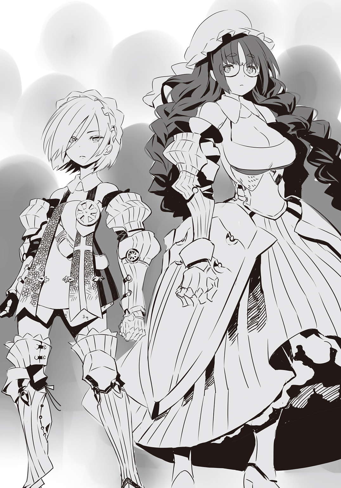
事情があって公認されていない、魔性ではないことになっている魔性で、ギチコは人形を動かすことができる。それはわかっていたことだが、まさかこんなにたくさんの人形をいっぺんに操れるとは。
ルルチナが魔性を持っていて、それゆえに力持ちなのだということは知っていた。しかしまさか、あの小さな躰で何基ものフレンジールを軽々と持ち運んでしまえるとは。
もしかするとひょっとして、箱みたいな有様になっているこの兵器の山を、ルルチナは一人で担いでゆくつもりだったりするのか。
見れば、兵器の山の下部に、ストラップのような革のベルトが三本ついている。あれを両肩と、それから腰につければ、背負うことができそうだ。いや、普通は絶対にできないが、ルルチナならあるいは可能かもしれない。箱形に整えられた兵器の山は、巨大な背負い鞄に見えなくもない。いや、見えないが、そう見立てられなくもない。
啞然としていると、司令が幕僚たちを引き連れて軍居から出てきた。
もっとも、歩いてはいない。もちろん、走ってもいない。司令は車椅子に乗せられて、それをカーター大佐が押している。
「折悪しく、貧血気味でね......」
司令は白いハンカチーフで口許を押さえた。
「心配は無用だよ。大事をとって、こうしているだけなのでね。本当は、ちゃんと自分の足で立てる。だが、カーターがうるさくて......ごほっ。ぐへっ......」
「この戦が終わるまでは、持ちこたえていただきます」
カーター大佐の面持ちは厳しい。おかげで冗談なのか本気なのか、よくわからない。
司令は弱々しく、はは......と笑ってみせた。
「まあ......うちの幕僚は優秀だし、ダンドリューたちも頼りになる。もし私が途中で力尽きたとしても、なんとかしてくれるだろう......」
「ピエール」
姫が進みでて、下目遣いで司令を見た。
「わかってると思うけど、軍は動かさないで」
「......は？」
ハイジはつい、司令が返事をする前に口を挟んでしまった。むろん、一介の侍官ごときが太守と公軍司令の話に割りこむなど、身の程知らずにも程がある。言うまでもなく、そんなことをしてはならない。ハイジとてそれくらいわきまえているが、とはいえしかし、それは。
「ひ......えっ......ひ、姫、今、なんと......？」
「今？」
姫は不思議そうに小首をかしげて、まばたきをした。
「軍は動かさないで？」
「そ、それ！ それです！ えっ......!? 軍は、動かさない......？ だけどっ――戦争......なんですよね......？」
「第八公軍は私の指揮下にあります」
司令は青白い顔にかすかな笑みを浮かべた。
「私が必要と判断すれば、我が第八公軍は動くでしょう。ですが、基本的には太守閣下のご意向に従います。――いつもどおり」
「それでいい」
姫はにこりともせずにうなずいた。
それでいい？
いつもどおり？
いいのか、それで？
ハイジは崩れ落ちて、地面に両膝をついた。――戦争なのに。
戦争ですよ？ 戦争......なんでしょう？ 戦争って、言葉どおりの戦争......ですよね？
それなのに、軍が動かない？ 軍議とかもちゃんとしていたのに？ 動かさない？
何だ、それは。そんなことがあっていいのか。いいわけないじゃないか。
軍が動かなかったら、どうなる？
負ける......だろう。普通に考えれば。
つまり、戦わずして、敗北を受け容れる？
それがこれから始まる戦争？ だとしたら、始まる前から終わっていないか？
だって、軍が動かないで、誰が動くっていうんだ......？
×
答え。
「ずいぶん、とろくさい」
姫は鳥が翼を広げたような形状のラックを背負っている。〝フェニックス〟と称されるそのラックには、四基の二十四連装式弩と十字型投擲剣、片刃大長剣が据えつけられているので、金属製のラック自体をふくめた総重量は100キログル（約100㎏）近くに達するだろう。さらに、躰に小型投剣革帯を装着して、腰には片刃剣、左手に四連装式弩をつけているのだから、もはや歩く兵器といっても過言じゃない。
麗しき歩く兵器、イエルヴァラ太守サクラスティアリス・デスティニアリス公女に従うは、チヌコを肩にのせた侍女のギチコ率いる五十体の槍と盾で武装した〝〟と、同じく侍女のルルチナ。ついでに、いや、これは重要なポイントだが、ルルチナは姫のフェニックスより巨大な兵器の山を小さな背に負っている。
そして、太守付き侍官ハイジ・バラン少尉。
公国軍士官の標準的な恰好にしか見えないだろうし、実際、宝剣ワイバーンを持っていることをのぞけば、一般的な士官の兵装からまったく外れていないハイジは、明らかに異質だ。
というか、場違いだ。
だって、ここはイエルヴァラの北、およそ１キロル（約１㎞）。
イエルヴァラの周辺には、農民が集住して形成された邑が点在しているが、北側は廃地に面しているせいで、田園も少ない。ハイジらがいる地点はただの荒野だ。
ここからあと700メトル（約700ｍ）も北上すれば、そこはもう、巨獣の爪でぐちゃぐちゃに引っかきまわされたように甚だしく隆起したり陥没したりしていて、無数の細い川でばらばらにされ、背の低い木と大きな木が隙間なく生い茂っている、未開のルヴァラ廃地だ。
方々で烽火が立ちのぼっているその廃地から、土色の機士たちが続々とわきだしてくる。
ハイジは口をきつく閉じて腕時計を見た。
今日はバエル大王38年四月十一日。現在時刻は午前七時二十五分。
敵軍の来襲を告げる最初の合図から、すでに四時間以上が経過している。帝国軍は進軍を急がず、ひたひたと廃地の中を前進して、ようやく三十分ほど前からあの位置――廃地を出てすぐの場所に戦列を構築しはじめた。
おそらくはあと五分、きりのいい七時三十分には戦闘の準備が整うだろう。
帝国軍はゆったりと進軍してきたが、対する第八公軍もじっくりと防戦の用意を進めた。
ハイジの知るかぎり、第八公軍はまだ一兵たりともイエルヴァラ城市外に出ていない。全軍が城壁や、城市内の防備についている。
外で帝国軍を迎え撃とうとしているのは、なんということだろう、ハイジたちだけだ。
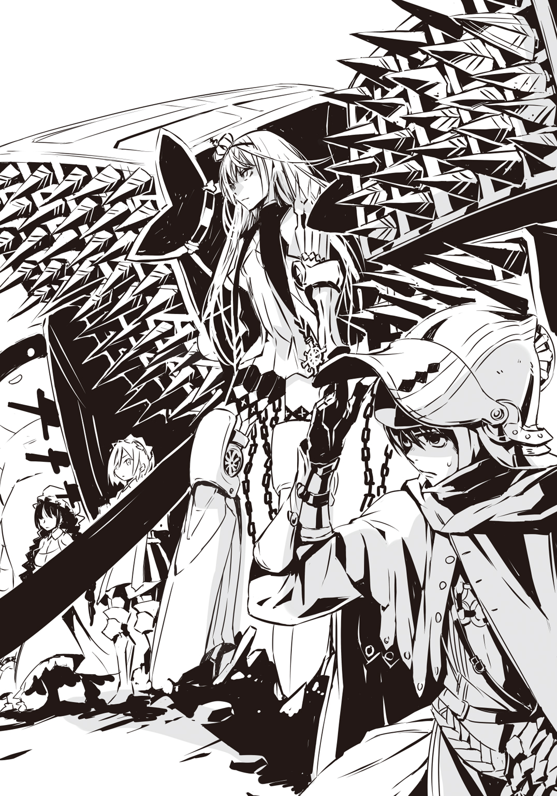
フェニックスを装備した姫と、ギチコとチヌコと五十体の人形兵士たち、そしてルルチナ、それからおまけのハイジ。あわせて四人と五十一体の人形。
――対、二万を超えると推定される土色の帝国軍機士。
ハイジは振り返って、イエルヴァラ北門上の楼閣に目をやった。１キロル離れているので見えるわけもないし、大声で叫んだとしても聞こえないだろうが、楼閣の上で全軍の指揮をとっているはずのピエール・アルトレッド司令に問いたい。――何なんですか、これは。
いったいこれは、どういうことなんですか。
これでいいんですか。
こんなのって、ないですよ。
おかしいですよね？
変でしょ？
絶対、変ですって。
ありえないって。
だめですよ。
「そろそろ、征く」
姫が、眠いから寝る、と言うときのような調子で呟いた。
「かしこまりました、サクラ様」
ルルチナが微笑んで応え、ギチコはなぜか眼鏡を外した。
「いつでもいい。です」
「――え......」
ハイジは兜のバイザーを下ろして、すぐに上げた。
「えっ？ いくって......ど、どこにですか......？」
姫は返事をせずに深呼吸をした。姫の肩が、それにあわせてフェニックスが、上下する。
一団は、姫を先頭にして、ルルチナ、ギチコ、ハイジとつづいて、五十体の人形たちがその周りに槍と盾を並べている。
姫が一歩、踏みだした。
三歩目には駆け足になった。
速度が上がる。
ルルチナが、ギチコが、そして人形の兵隊が進みはじめた。
ハイジもつられて走った。でも、ルルチナたちはせいぜい早足程度だ。どんどん姫から遅れる。みるみるうちに引き離される。
「つ、ついていかなくて......!?」
「足手まといになるだけです」
ルルチナは姫の後ろ姿から目を離さない。それでいて、足を速めようとはしない。
「ギチコ。矢がきます」
「うん。です」
ギチコがうなずくと、人形の兵隊が互いの間隔を若干詰めて、盾を掲げた。前方の機士たちはまだ整列し終えていないので、うごめいているような感じに見えるが――や？ やとは、矢のことか？ 本当だ。
機士の列の後ろのほうから、数えきれないほどの小鳥が同時に飛びたったかのようだった。もちろん、小鳥なんかじゃない。矢。矢だ。数百本、いや、数千本の矢が放たれたのだ。
「うわぁ......!?」
「落ちついてください、少尉」
ルルチナがそう言ったときにはもう、数千本の矢は放物線の一番高いところをすぎて落下を始めていた。
「届きません」
「そっ――」
わかっている。ハイジとて、それくらいのことはわかっているのだ。
帝国軍の機士には甲乙丙丁の四種があって、丙機士は弓と杓剣を持っている。ようするに、弓兵だ。帝国製の丙機士弓は、とにもかくにも矢が到達する最大射程が500メトル、大きな的をどうにか狙える有効射程はせいぜい100メトルだとされている。戦闘開始直後に行われることが多い一斉射撃は、敵味方の距離350メトルから、というのが相場のはずだ。
ハイジたちと機士たちとの間には、依然として500メトルほどの距離が横たわっている。
「――姫......！」
ただし、姫はハイジたちより100メトル以上、先行しているのだ。そもそもあの矢は、ハイジたちめがけて放たれたものじゃない。姫。
姫だ。
大量の矢が落ちる。有効射程外だし、射撃の精度は低い。そうはいっても、十本やそこらは姫に降りそそぐだろう。フェニックスは大きいから、傘の役割を果たしてくれるかもしれない。それでも、数本の矢が姫の躰を貫く恐れはある。そうなってもおかしくない。というか、常識的に考えれば、よほど運がよくないかぎり、そうなるだろう。
「ひ、姫......!?」
でも、姫は止まらない。足をゆるめることもしない。
数千本の矢が大地に突き刺さった。姫だって何本か浴びたはずだ。
それなのに、姫は進む。
突き進む。
一斉射撃は一度ではすまない。つづいている。
矢は雨のようだ。姫を打ちすえようとする豪雨だ。
姫は矢の豪雨をものともせずに突進する。滝のごとき矢の中を突っ切る。駆け抜ける。
ついに一斉射撃が終わった。
ハイジたちも一応、前に進んだが、それでもまだ、帝国軍の最前列まで200メトルはあるだろう。姫は100メトル以内、おそらく70メトルかそこらだ。
一斉射撃をする際は弓持ちの丙機士が前列に出ているはずだが、接敵するときには重槍と大盾を持つ甲機士や、鈍剣と杓剣を装備する乙機士が、丙機士と入れかわって前に出る。
丙機士が後退しはじめたそのときに、姫は右手で鎖を引いた。
「うぅぅぅぅぅぅぅぅぅぅぅぅぅあああああああぁぁぁぁぁぁぁぁぁぁぁぁぁぁぁぁ......！」
姫の声が響き渡る。
二十四連装式弩。
連装式弩の射程と威力は、単発式の弩にはどうしても劣る。とはいえ、200メトルはゆうに飛ぶし、数十メトルの近距離射撃なら、金属の甲冑を貫通するほど強力だ。
かつて、戦場で勇士たちが名乗りをあげ、雄々しく一騎打ちを繰りひろげた時代には、国と国とが申しあわせて使用を禁止したこともあったという。扱いが簡単で、子供でも引き金を引くだけで人を殺傷できる。弩は無情の武器だ。
姫はその弩の最先端に位置する、現状もっとも進化した二十四連装式弩をぶっ放した。
あっという間に、百四十四連射。
太矢を浴びて、数十人の機士が倒れた。
姫は足を進めながら、さらに別の鎖を引っぱる。
百四十四本の太矢が間断なく発射されている間に、５メトル、10メトルと前進してゆく。
「ギチコ！」
ルルチナは、鋭く声をかけると、いきなり疾走態勢に入った。ギチコが追う。人形の兵隊も遅れずについてゆく。
「ぅあぁっ......!?」
ハイジも慌てふためきつつ、必死に脚を動かす。
下がる、あるいは太矢を食らって倒れる丙機士たちの合間から、甲機士が出てくる。でも、ハイジたちの、姫の正面の敵隊列は乱れに乱れて、今にも崩れそうだ。
もっとも、二十四連装式弩をお見舞いされていない左右の敵陣は違う。ハイジたち、いや、姫に向かって、甲機士たちが押しだしてくる。このままだと、ハイジもだが、姫が両側面から挟撃されてしまう。
「たかが機士の分際で......！」
二基目の二十四連装式弩を撃ち尽くした姫が、躰を右に向けて三本目の鎖を引いた。
「生意気......！」
右からくる甲機士たちに二十四連装式弩が太矢を噴く。
太矢は甲機士の大盾に突き刺さるが、なかなか貫通できない。甲機士は丙機士のようには倒れてくれない。
三基目の二十四連装式弩が空になるころには、ハイジたちは姫に追いついていた。
「姫......！」
ルルチナが兵器の山を背から下ろして、姫は左を向いて四本目の鎖を引きはじめる。
太矢が出なくなると、姫はすかさず十字型投擲剣を抜き、甲機士たちめがけて投げつけた。
「らぁぁぁぁぁぁぁぁぁぁ......！」
十字型投擲剣がぐるぐるぐるぐる回転しながら飛んでいって、三、四人の甲機士を大盾ごと薙ぎ倒す。
姫は片刃大長剣を抜いて、フェニックスを外した。
「ルルチナ、換装！」
「かしこまりました、サクラ様......！」
ルルチナはすでに荷ほどきを終えていた。どうやら、フェニックスに据えつけてある空っぽになった二十四連装式弩を、太矢が完全装塡されている二十四連装式弩に付け替えるつもりらしい。その作業がもう、速いなんてものじゃない。どれだけ手慣れているのか。見とれている場合でもない。姫が。
姫が、右肩に担ぐようにして片刃大長剣を構えて、右方向の甲機士たちに突っこんでゆく。
「噓だ......！」
ハイジは叫ばずにはいられなくて、叫んでしまった。
姫は左手の四連装式弩から二十四本の太矢を発射させて、二、三人の甲機士を射倒した。でもそんなの焼け石に水じゃないか。敵がどれだけいると思っているのか。たくさんだ。たくさん、それはもうたくさんいる帝国軍甲機士の大群、いや、大軍に、姫は一人で突撃する。
「やああああああああああぁぁぁぁぁぁぁぁぁぁぁぁぁぁぁぁぁぁぁぁぁぁぁぁぁぁ......！」
片刃大長剣を振りおろしもせずに。
ぶつかった。
何体もの甲機士が、姫に。
姫の躰に。
体当たりだ。姫は何の工夫もない、ただの体当たりを敢行したのだ。
甲機士たちは当然、大盾を構え、重槍を突きだしていた。そこに体当たりなんかしたら、普通というかどう考えても、重槍で串刺しにされるか、大盾で撥ね飛ばされる。
そうはならなかった。
重槍だろうが大盾だろうが、姫に少しでもふれると即座に、もしかするとふれる直前に、例外なく吹っ飛ばされた。重槍や大盾もろとも、甲機士本体もぶっ飛んだ。
あのときと同じだ。
斥候部隊を姫がたった一人で殲滅したときと、まったく同じことが起こっている。
魔性。
あれが姫の魔性。
「〝〟」
二十四連装式弩の換装を終えたルルチナが、あまりにも残酷すぎて救いのない歌を唄うように言った。
「常時発動、自動型。反射系。――絶対反射。ありとあらゆる力を撥ね返してしまう。倍に、三倍、四倍にして、勝手に、どうしようもなく、何があろうと、たとえ空が、大地が、世界が引き裂かれても、誰も、何も、サクラ様にふれることはできない。それが、魔性。それこそが、サクラ様の魔性です」
「ハイパー・バラッド......」
ハイジは呆然と呟いた。
ルルチナはあのとき、姫にさわるな、とハイジに言った。指一本でもふれてみろ、そんなものではすまないぞ、と。
誰も、何も、姫にさわることはできない。
さわったら、いや、さわろうとしたら、勝手に、自動的に、ああなる。
姫に攻めよせては撥ね飛ばされる、甲機士たちのように。
無駄だ。
姫を攻撃すれば、重槍も、大盾も、甲機士自身も、撥ね返されてしまう。
ぜんぶ無駄だ。
姫は攻める。用済みの四連装式弩を投げ捨て、甲機士たちに攻めかかり、片刃大長剣を振るう。これが、斬れる。重槍も大盾も甲機士そのものも、斬れる。ズバッと斬れる。スッパリ斬れる。斬れる。そんなに斬れていいのかというほど、斬れる。斬れまくる。斬れすぎる。斬れる。斬れる。斬れてしまう。
もともと片刃の剣は、斬ることにかけては並ぶものがない。ただし、両刃の剣に比べると用途が限定されるし、防御にもあまり適さないという欠点がある。
受けに回れば、両刃の剣のほうが圧倒的に扱いやすい。突くなら、槍のほうがいい。破壊力なら帝国軍の鈍剣や重槍だろう。
片刃の剣は極端に言えば、ひたすら斬る、ただ斬るだけの武器だ。
姫はまさしくそのとおりの使い方に徹している。円。円運動だ。回って、遠心力を利用して、斬る。回転して、斬る。
戦列なんて、隊列なんて、隊形なんて、陣形なんて、姫の前では何の意味もない。どんな敵も、姫にとっては敵じゃないからだ。
姫には敵なんかいない。
――わたしは無敵だから。
姫の言葉は大袈裟でも比喩でも何でもない。ありのままの事実だった。
もっとも、あくまでそれは姫が文字どおり無敵だというだけのことで、ハイジたちは違う。
向かって左側から寄せてきた甲機士たちと、人形の兵隊たちが激突した。その瞬間、何体かの人形が重槍と大盾で突き倒された。人形たちの守備陣は厚くない。というか、薄っぺらだ。人形が一体倒れれば、そこに穴があく。
「上等じゃねえか......！」
ルルチナが舌舐めずりをして、二十四連装式弩を担ぎあげた。
「おらあぁぁぁぁぁぁぁぁぁぁ！ 死ね死ね死ね死ね死ね死ね死ね死にくさりやがれ......！」
鎖を引いて、守備陣の穴に太矢を注ぎこむ。そこから入りこんでこようとする甲機士たちが太矢だらけになって、次々とひっくり返った。
ギチコは青い両眼を爛々と輝かせて、人形たちを操っているのだろう。
ハイジは宝剣ワイバーンの柄に手をかけているだけの、一傍観者に成り下がっていた。
何かしないといけない。そう思う。自分だって何かしたい。何か。何か？ 何かって......？
そんなの単純なことではないか。戦う。
戦うのだ。
今ここでそれ以外にできること、やるべきことがあるだろうか。ない。一つもない。
ハイジも戦うのだ。戦え。戦え。戦え。戦わなきゃいけないだろう？ そうだ。頭ではわかっている。ならば、躰が理解していないのか。果たして、そういう問題だろうか。
ふと、学生のときに読んだ兵卒の行動に関する研究資料が頭をよぎった。
公立学校上がりの准士官は、後方勤務を経て経験を積みながら前線へと近づいてゆく。戦場に出るころにはいっぱしの士官になっていないと、部隊指揮や作戦立案といった任務をこなせないからだ。指揮者や参謀が役立たずだと、軍は機能不全に陥る。それに、士官の養成には時間と金がかかるので、そのぶん大切に扱われるという身も蓋もない事情もあるらしい。
でも、兵卒は違う。兵役の対象になって徴兵されるか、志願するか。どちらにしても、兵卒になると、たいていは短期間の訓練を受けたのち、いきなり前線に配備される。
なぜなら、新兵の九割以上は基本的に使い物にならない。どんな状況でも訓練どおりに積極的な戦闘行動をとることができる者は、新兵のうちの一割程度だとされている。
ただ、自分や仲間の身に危険が及べば、たいていの新兵が死にものぐるいで戦う。
逆に言えば、殺さなければ殺される、という条件を与えられなければ――つまり、前線に配置されなければ、大半の新兵はいつまで経っても使えない兵卒のままなのだ。
軍は、そうした新兵の、というよりも人間の習性を知っているから、未熟な兵卒を危険な場所へと叩きこむ。そして戦争を経験させることで、戦える兵卒に仕上げるのだ。それでも仕上がらない、使えないままの兵卒が、二割ほどはいるのだという。
ハイジ・バランはその二割なのではないか。
この明らかな最前線で、間違いなく危地に追いやられているのに、足がすくんで動けないのだ。使えない側のハイジは、使えるように仕上がらないまま、ここで死ぬのではないか。
片刃大長剣が折れてしまい、片刃剣を振りまわしながら、姫が駆け戻ってきた。フェニックスを背負って、さっそく二十四連装式弩を撃つ。鎖を引いて撃つ。撃ちまくる。
「後退して......！ 邪魔......！」
姫に命じられると、ルルチナは空になった二十四連装式弩を捨て、別の二十四連装式弩を担いだ。
「下がるぞ、ギチコ......！ サクラ様の手をわずらわせちゃいけねえ......！」
「あいっ」
ギチコは変な返事をして、人形たちの陣形を縮めた。
人形の兵隊が、ルルチナが、ギチコが、おまけのハイジが一歩、二歩と下がるたびに、姫はかえって前に出る。
「あああああぁぁぁぁぁぁぁ！ うああああぁぁぁぁぁぁぁぁぁ......！ ああああああああああぁぁぁぁぁぁ！ うぅぅぅぅぅぅぅあああああぁぁぁぁぁぁぁぁぁぁぁぁぁぁぁぁ......！」
フェニックスに搭載されている四基の二十四連装式弩は、あれよあれよという間にすべての太矢を吐きだしてしまった。姫はフェニックスを捨て、甲機士たちに投げつけて、ルルチナが遺棄する形となった兵器の山に飛びつく。十字型投擲剣を、投槍を矢継ぎ早に投擲する。甲機士たちが十字型投擲剣にぶった斬られ、投槍に刺し貫かれる。
投げるものがなくなると、姫は両手に一本ずつ、片刃大長剣を持った。
姫の呼吸は荒い。全身、汗でびっしょりだ。
甲機士たちが姫に押しよせて、爆発が起こったみたいに吹き飛ばされる。
「はは......！」
姫が笑った。
でも、後ろ歩きをして徐々に姫から遠ざかろうとしているハイジの耳には、その声がまるで泣き声のように聞こえた。
「あははははははは......！」
泣き笑いのような声を発しながら、姫が跳んだ。
右手の片刃大長剣で甲機士を斬る。左手の片刃大長剣で甲機士を斬り倒す。何人もの乙機士が鈍剣を轟ッと振りまわして姫に叩きつけ、躰ごと弾かれた。甲機士と乙機士が入り混じって姫に殺到する。
さっきまで姫の相手はほとんど重槍、大盾を持つ甲機士だった。白兵戦のとき、先陣を切って突撃するのが帝国軍における甲機士の役割だ。甲機士が相手の陣形を破壊し、そこに鈍剣と杓剣を装備した乙機士が突入して暴れる。
現状はその逆だ。姫が敵軍最前列の甲機士たちを突き崩した。そのせいで、自然と乙機士たちが前に出る羽目になっているのだ。
「弱い......！」
姫が叫び、甲機士が、乙機士が弾け飛ぶ。
「弱い！ 弱い！ 弱い！ 弱い！ 弱い！ 弱い！ 弱い！ 弱い！ 弱い！ 弱い！ 弱い！ 弱い！ 弱い、弱い、弱い、弱い、弱い、弱い、弱い、弱い、弱い、弱い、弱い、弱い、弱い、弱い、弱い、弱い、弱い、弱い、弱い、弱い、弱い、弱い、弱い弱い弱い弱い弱い弱い弱い弱い弱い弱い弱い弱い弱い弱い弱い弱い弱い弱い弱い弱い弱い弱い弱すぎる......！」
姫は片刃大長剣で甲機士を、乙機士を撫で斬りにする。甲機士、乙機士は、姫に詰めよせては撥ね返される。
むろん、ハイジたちのほうにも敵はくる。でも、その数は決して多くない。姫に攻めよせる敵の数に比べれば、遙かに少ない、とさえ言えるだろう。それにこっちは、ハイジこそただいるだけだが、ルルチナがいて、ギチコがいて、人形の兵隊が、いくぶん打ち減らされたにしてもまだ三十体以上、残っている。ギチコが操る人形たちが身を挺してハイジたちを守ってくれるし、ルルチナは二十四連装式弩を撃ち尽くして捨ててしまったが、近づいてくる敵がいると殴り飛ばす。蹴り飛ばしてしまう。――一方的。
まさしく一方的だ。
姫はもういったいどれだけの機士を屠ったのだろう。数十？ いや、そんな数じゃとてもきかない。数百？ 千？ ひょっとして、それ以上？
軍においては、組織だった戦闘行動を継続できなくなるほど兵力が損耗した状態を、全滅、と呼ぶ。兵力の半分を失えば、もはや軍としての体をなさないので、壊滅、と称される。
帝国軍の機士は、公国軍の兵士とは違う。人間ではない彼らは、どんなに味方が倒されても恐れないし、勝手に逃げたりしない。だから全体の二割、三割にあたる数の機士が死んでも、指揮官が撤退を決断しないかぎり、戦いつづけることができる。そうはいっても、兵力が半減すれば、帝国軍といえどもまず兵を退くようだ。
廃王ジーク・ザラナスターが率いているのだろうあの帝国軍を、姫はほぼ単独で壊滅に追いこもうとしてるのか。
推定二万人以上の機士を、たった一人で。
「――勝つ？ 一人で......？」
できっこない。普通なら。しかし、姫は普通じゃない。圧倒的に。
何せ、姫は無敵なのだ。姫に攻撃した者は吹き飛ばされる。攻撃しなければ、姫に斬り殺される。
姫は敵陣にしっかりと食いこんでいる。ハイジたちは少しずつ下がっているが、姫は前進しつづけている。
廃王ジークは敵陣の奥にいるだろう。遅かれ早かれ、姫はそこまで到達する。
だって、姫を止める手立てはないのだ。姫は必ずそこにたどりつく。
その前に廃王ジークが逃げだせば、話は別だ。逃げなければ、姫はいつか廃王ジークに食らいつくだろう。姫は無敵だから、廃王ジークを打ち倒してしまうに違いない。かくして廃王の軍は敗れる。姫が勝つ。姫は一人で勝ってしまう。
これが姫の、サクラスティアリス・デスティニアリス公女の戦いなのか。
甲機士と乙機士たちが姫を押し包もうとして、撥ねのけられる。姫は右手の片刃大長剣で甲機士を大盾ごとぶった斬る。左手の片刃大長剣で乙機士を一刀両断する。また甲機士と乙機士たちが姫に躍りかかり、盛大にぶっ飛ばされる。その拍子に腕がちぎれる機士もいる。重槍や大盾、鈍剣や杓剣が飛び散って、甲機士や乙機士を襲う。ぶっ飛ばされた甲機士や乙機士も甲機士や乙機士にぶつかる。中には姫に迫ろうとしていた甲機士の重槍に貫かれる甲機士や乙機士もいる。甲機士と乙機士が折り重なって倒れている。
ハイジはもう驚いてはいない。驚愕なんかとっくにどこかへ行ってしまった。それよりも、すごい。すごいなんてものじゃない。ものすごい。姫はすごすぎる。ハイジは震えていた。たしかにハイジ・バランは使えない側の二割なのかもしれない。きっと天性の臆病者なのだろう。それでも、この震えは恐怖からくるものじゃない。ハイジは怖くなかった。ここは戦場なのに、本当の本当に最前線なのに、ちっとも恐ろしくない。
姫が勝とうとしているからだ。勝っているからだ。
英雄の、まさしく英雄的な、信じがたい、度外れの、絵空事めいた、まるで物語のような活躍を目の当たりにして、ハイジは興奮している。
「......でも――」
なぜだろう。
「くああぁぁぁぁぁ......！ はあああああぁぁぁ......！ らぁぁぁぁぁぁあああああ......！」
どうして姫が発する声は、あんなに――苦しそうなのか。
よく見れば、姫の姿勢が低い。ずいぶん前屈みになっている。疲れているのか。そうだ。
姫は無敵かもしれない。だからといって、疲れ知らずだとはかぎらない。フェニックスを背負って突き進み、片刃大長剣をああやって振りまわしている。疲労しないわけがない。
でも、それだけなのか。
甲機士と乙機士たちが性懲りもなく姫に群がってゆく。
さながら爆風に煽られたかのように、甲機士と乙機士たちは吹っ飛ばされる。
「――っっっっっっっっっっっっっっっっっっっっっっ......！」
その中心で、姫は、ハイジの目が確かなら、見間違いじゃなければ、のけぞった。
疲れて、あんなことをするものだろうか。しない、と思う。
当然、疲れてもいるはずだが、たとえば、痛いとき。
姫は今、耐えがたい苦痛を感じて、身をよじったんじゃないのか。
ハイジの目にはそんなふうに見えたのだ。
「ルルチナさん......？ 姫が――姫は......もしかして......!?」
「魔性には、〝制約〟と呼ばれる制限や副作用があります。――うおりゃあ......！」
ルルチナは、突っこんできた乙機士に飛び蹴りを見舞った。
「サクラ様の〝限り無く愛なき世界〟も例外ではありません。あの恐るべき魔性は、ありとあらゆる力を自動的に反射してしまいますが――その際、サクラ様が何も感じないわけではないのです。鋭い剣で斬りつけられても、サクラ様の躰には毛ほどの傷もつきません。ただし、斬られた痛みはサクラ様を苛みます」
「はぁぁぁぁぁぁぁぁぁぁぁぁぁぁぁぁぁぁぁぁぁぁぁぁぁぁぁぁぁぁぁぁぁぁぁぁ......!?」
何だよ、それ。
馬鹿な。
そんな馬鹿なことが。痛み？
痛み、だって？
力を反射するのに、痛みだけは？
姫は、痛い？ 今、姫は痛がっているのか......？
違う。今だけじゃない。ずっとだ。
ずっと。
ずっと。
ずっと。
ずっと。
ずっと。
ずっと。
最初からずっと、痛かったのだ。機士に攻撃されるたびに、痛かった。姫はただ、我慢していただけなのだ。
「......もし――もし、痛みに耐えきれなくなったら......!?」
「申しあげなければわかりませんか？ ――おおぅらぁ！ ずぉりゅあっ......！」
ルルチナは甲機士の大盾をぶん殴って突き倒し、乙機士を蹴倒して、緑色にきらめく瞳でハイジをちらっと見た。
「当然、魔性の効力が失せます」
「それってつまり、姫はっ――......」
仮に、この状況で姫が限界に達したら、敵中で孤立する。無防備で。無敵じゃない、ただの公女が。十六歳の少女が。そうしたら、どうなる？ 考えるまでもない。
ひとたまりもないはずだ。たやすく命を奪われてしまうだろう。――そんなの......！
「だめだ......！」
ハイジは宝剣ワイバーンを抜いて、ルルチナの脇をすり抜け、乙機士の鈍剣を宝剣で受け止め、即座に押し返し、踏みこんで首を刎ねた。
「だめだ！ だめだ！ だめだ！ だめだ！ だめに決まってる！ だめですよ......！」
人形の兵隊は二十体ほどに減っている。守備陣はすかすかだ。その合間から敵が続々と入ってくる。ようするに、斬るべき敵はいくらでもいるということだ。ハイジは、ハイジ・バランは、こう見えて剣術が得意なのだ。剣達者の武術教官にだって負けたことがない。やれる。
その気になれば、腹さえ据われば、やれるのだ。
やる。やってやる。甲機士が何だ。重槍、大盾、装備が大仰で、のろまじゃないか。止まって見える。彼らの重槍はハイジをとらえられない。大盾なんてただちょっと邪魔くさいだけだ。ハイジは甲機士の横に踏み入って首を斬り飛ばす。乙機士が何だ。鈍剣は重くて遅い。あんなもの食らうわけがない。杓剣だってべつに速くはない。だいたい機士の動作は単調だ。人間とは違う。決まりきっていて、こんなやつら、相手にならない。ハイジは乙機士の鈍剣をよけて、杓剣を弾いて、首を断ち斬ってしまう。
斬れる。斬れるぞ。さすが不壊の剣。カバランソード。宝剣ワイバーンは笑いたくなるほどよく斬れる。
もちろん、笑ったりしない。笑えない。
ハイジは怒っているのだ。
「だめだ......！ 姫一人にやらせちゃいけない......！ そうでしょう、ルルチナさん、ギチコさん！ 違いますか......!?」
「止められるんだったらなあ......！」
ルルチナが機士たちを蹴りのけながらハイジに詰めよってきて、胸倉をつかんだ。
「止められるんだったら、とうの昔に止めてんだよ......！ 止められねえから！ サクラ様を止めることなんかできやしねえから！ だから、せめてこうやって、手伝いをさせてもらってるんだ......！ 知ったような口きくんじゃねえ、青二才が......！」
「きくさ！ どんな口だってきく！ 僕が青二才だって......!?」
ハイジはルルチナの手を振りほどいた。
「それがどうした......！ 僕は前に出る！ 姫の命令だろうと、聞くもんか！ もう絶対に下がらない！ 姫のそばに行く！ 姫と一緒に戦うんだ......！ 僕一人でも......！」
「できると思ってんのかよ！ おまえごときへなちょこ野郎が......！」
「やるんだ！ 僕は姫の侍官だ......！」
ハイジは駆ける。手当たり次第、すれ違いざまに、機士たちを斬り捨てながら、駆ける。
「くそったれ......！ ギチコ！ あの馬鹿を一人にはさせられねえ！ 行くぞ......！」
「あいっ......！」
ルルチナが、ギチコが、人形の兵隊たちが、ハイジにつづく。
やはり心強いからだろうか。彼女たちが追いかけてきてくれると、ハイジの躰は軽くなって、ワイバーンは鋭さを増した。
ハイジは頭にきている。ただし、激怒して我を失っているわけじゃない。ちゃんと計算もある。ハイジの行為は危険ではあっても、無謀ではない。なぜなら、敵は基本的に姫を狙っているのだ。九割以上の敵が姫を標的にしているといっても過言じゃない。
姫の前面と両側面の敵は密。きわめて、密。
でも、ハイジたちの周りや、姫とハイジたちとの間にいる敵は、疎。かなりまばらだ。
これならば突破できる。そう読んでいた。とても腹が立っているのに、ハイジは、少なくともハイジのある部分は、妙に冷静だ。そのせいで気づいたのかもしれない。
「敵の動きが変だ......！」
さっきまではわからなかった。敵軍が、なんというか――逆流している。
機士たちは前と左右の三方から姫に押しよせる。大半が姫にやられてしまうが、ふたたび起きあがる機士もいる。そうした機士たちが、すぐさま姫に攻めかかるのではなくて――引き返している？ 左右に？ それで逆流しているように見えるのか。しかし、敵の陣形が左右に広がっていっているような様子はない。ならば、退いた機士たちは、いったいどこに......？
一つの仮定が頭に浮かんだ。
敵軍は、逆流というより、回転しているんじゃないのか......？
つまり、いったん姫にぶつかって、倒されずに退いた機士たちは、ぐるっと大回りして姫の前方に展開している戦列に加わり、これを増強する。
廃王ジークは敵陣の奥にいると思われるし、姫もそこを目指しているはずだ。
だが、ハイジが立てた仮定どおりだとすると、廃王ジークを守っている正面の戦列は、姫が削っても削っても補充される。
もちろん、兵力は有限だ。無限に補充されるわけじゃない。機士の数が減るごとに、敵陣全体としては薄くなってゆくだろうが、時間稼ぎにはなる。その間、姫は攻撃されつづけて、やがて限界を超えるかもしれない。――もしそれが敵の、廃王ジークの狙いだとしたら。
「姫......！」
ハイジはワイバーンで機士を斬って、姫との距離が狭まるごとに加速する。早く。
一刻も早く、姫のところへ。
「ああああぁぁぁぁぁぁぁぁぁ......！ うぅぅぅぁぁぁぁぁあああああぁぁぁぁぁぁ......！」
姫は片刃大長剣を一本捨てて、もう一本の片刃大長剣を両手持ちしている。それを力任せに、躰ごと振りまわす。右旋回して機士をぶった斬る。左旋回して機士を斬り倒す。姫はそこで止まる。今にも倒れそうなほど低い姿勢で、うなだれ、片刃大長剣を支えになんとか立っているかのような姫に、機士たちが殺到する。
「っっっっっっっっっっっっっ......！」
機士たちは撥ねのけられ、姫は身をそり返らせて天を仰ぐ。
「――まだ......！」
でも、姫はやめない。また両手持ちした片刃大長剣を、躰ごと右旋回、左旋回させて、機士を斬って、姫は止まり、機士たちが押しよせて、撥ね飛ばされる。姫は苦痛に耐える。
「くっっっっっっっっっっっっっっ――――......！」
ハイジのほうにも乙機士が飛んできた。
その乙機士をよけて、ハイジは一気に姫の隣へ。ああ。
ああ......！
なんてことだ！
姫はその身に傷一つ負ってはない。激しく動きまわったせいで乱れ、ところどころちぎれた着衣は、汗で濡れそぼっている。薔薇のしずくをとかして加えた白金の髪もそうだ。躰じゅうがびしょびしょだ。まるで姫だけ土砂降りの雨の中にいるかのようじゃないか。いや、違う。ハイジにはこう見えた。
姫は全身で泣き叫んでいる。
決して逞しくなんてない、ごつごつしたところなんかまったくなくて、どんな重みにも耐えられるとは思えない、姫の華奢な躰から、とめどもなく涙があふれている。
「姫が......！ 一人で戦うことなんて、ないんだ......！」
ハイジは寄せくる機士に斬りかかる。今のハイジには機士たちがすべて、甲機士だろうと乙機士だろうと、それから弓を納めて杓剣で突きかかってくる丙機士だろうと、鈍重で、鈍重すぎて、しかたない。こんなに冴えていることはないというくらい、ハイジの剣は冴えに冴えて、冴え渡っている。敵の、機士たちの攻め手なんて問題じゃない。ハイジには確信がある。彼らの攻撃は絶対にハイジには届かない。彼らはあまりにも遅すぎて、単純すぎる。ハイジには手にとるようにわかる。ぜんぶ見えている。ハイジ・バランは速い。彼らの三倍は速い。五倍は速い。十倍も速い。
不壊の剣、カバランソード、ワイバーンで機士たちの首を絶え間なく刎ね飛ばしながら、姫のおかげだな、とハイジは思う。きっと姫のおかげだ。
姫をたった一人で戦わせてしまった。そんなことをさせてはいけなかったのだ。ハイジは侍官なのだから。姫のそばで剣を振るわなきゃいけない。もちろん、姫の足手まといになってはいけない。姫に庇われるようではだめだ。姫の力になるくらいでないと。いざというときは姫を守れないと。
姫がそばにいるから、ハイジは強く、速くならなくてはいけない。
今のハイジは、姫のそばにいるから、強くて、速い。
敵よ。
甲機士よ。乙機士よ。丙機士よ。
すべての敵たちよ。
我が前に立ちふさがれ。ハイジ・バランがおまえたちを排除してゆく。
おまえたちの重槍も、大盾も、鈍剣も、杓剣も、この身にはかすりもしない。
この剣、ワイバーンは、おまえたちの首を紙でも断つように斬り裂いてしまう。
知らなかった。
自分の躰をこんなふうに、変幻自在に動かせることを、今までハイジは知らなかった。最大の効率で敵を討つ方法を知らなかった。戦場を把握し、支配する術を知らなかった。ハイジは何も知らなかった。今、ここで知った。
ハイジは姫の左側百八十度、半円状の空間を制圧している。姫の右側百八十度、逆側の半円状空間は、ルルチナとギチコの〝無慈悲な玩具〟が機士たちを防ぎ止めて制している。
「......何、してるの!?」
姫が怒鳴る。悲鳴をあげるみたいに。
「わたしは、後退しろって言ったはず......！ なんでここにいるの......!? これはわたしの仕事なの......！ わたしがやらなきゃいけないの......！ わたしが......！」
「なぜですか......!?」
ハイジは日常業務のように機士を斬り殺しながら、叫ぶ。
「なんで姫が一人でやらなきゃいけないんですか......!? これは、公国を守るための戦いなのに！ こんなの間違ってる......！」
「だって......！」
姫はもう、しゃがみこんでしまいそうだ。目をうつろに見開いて、肩は落ち、腰は沈んで、膝が地面についてしまいそうだ。
「だって、わたしがやらなきゃ、人が死ぬもの」
姫の言葉が――、
「わたしは死なない。無敵だから。でも、兵たちは違う。死ぬ。戦に負けたら、死ぬ。勝っても、死ぬ。死んでしまう」
ハイジの胸の奥深くまで、突き刺さって、
「あの人たちには親がいる。兄弟がいて。奥さんがいて。恋人がいて。子供がいて。友だちがいて。兵が一人死ねば、その人たちが、子を、親を、兄弟を、夫を、恋人を、友だちを失う。でも、わたしは死なないから。わたしは、無敵だから」
――引き裂く。めちゃくちゃに。
「わたしが戦って、
わたしが一人で戦って、
わたしが勝てば、
誰も死ななければ、
こんなわたしにも、
無敵の、
化物のわたしにも、
生きている、
わたしが生きている、価値が、
意味が」
「馬鹿なことを言うなぁぁぁぁぁぁぁぁぁぁぁぁぁぁぁぁぁぁぁぁぁぁぁぁぁぁぁぁぁぁ！」
ハイジは激昂して、すぐさま自分を戒めようとする。戦闘中だ。ハイジは機士たちを次から次へと斬って捨てている。怒りで平静を失ってはいけない。でも、ワイバーンを振るいながら、機士たちの間を縫うように駆けて機士たちの首を刎ねながら、言わずにはいられない。
「戦うなとは言わない......！ それが姫の理由なら！ 奪うことなんかできない！ だからって！ 一人で戦わせたりするものか......！ 僕も！ 僕も戦う！ だけど、心配しないでください、姫......！ 僕は強い！ 僕は姫の侍官だ！ 姫のために、僕は強くなれる！ 僕は絶対に、死んだりしない......！」
「あっはっはっはっはっはっはっ......！」
ルルチナが大笑いした。
「言うじゃねえか、青二才......！ サクラ様......！ 今日までさんざん我慢してきましたが、もうやめだ......！ もう下がれと言われたって下がらねえ！ 今日からは、ルルチナもサクラ様の隣で戦らせてもらいます......！ 死んだりしねえとか、そのたわけた小僧みたいなことは言わねえが、たとえくたばったって自分の命だ......！ 好きに使わせてもらう......！」
「あ、あたしも！」
ギチコのこんなに大きな声は初めて聞いた。
「ここにいる！ です......！ あたし！ ここにいたかった！ ずっと！ サクラさまが一人で、そんなふうにしてること！ かあさんだって、望んでない......！」
ギチコは姫の乳母の養子だ。かあさんというのは、言うまでもなく姫の乳母のことだろう。まるで、乳母さんはもういない、どこにもいないかのような言い方だ。そんなふうにハイジは感じて、気にはなったが、今はそれどころじゃない。
「――あなたたちは......！」
姫が飛びだす。
「馬鹿！ 大馬鹿！ どうしようもない馬鹿！ 馬鹿ばっかり......！ 死んじゃったら、どうするの......!? 取り返しがつかないのに......！」
片刃大長剣を振りまわして、前面の機士たちを削りとるように斬り伏せてゆく。
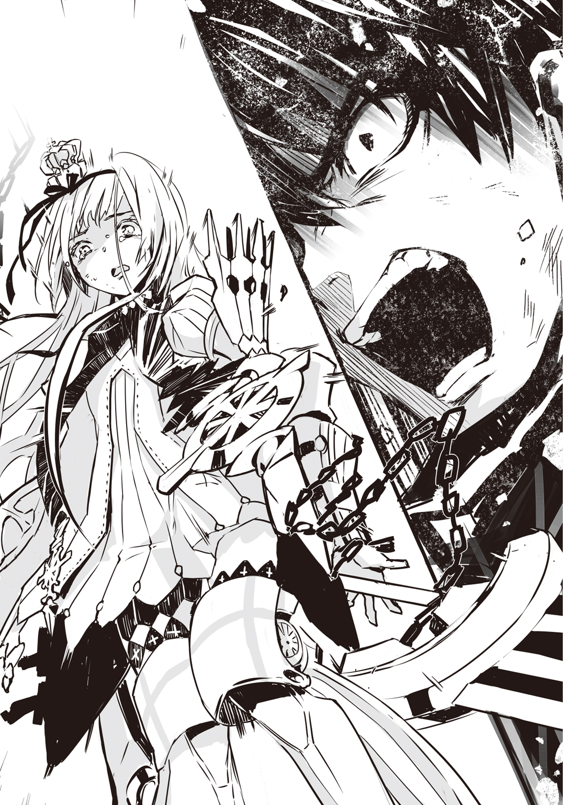
ハイジはもう、余計なことは言わない。姫の左隣でワイバーンを振るう。力まない。かといって、ゆるめない。適度な力加減で、機士たちの首を刈りとる。
ルルチナは姫の右隣で機士たちを殴り倒す。豪快に蹴っ飛ばす。
ギチコは姫の後ろにつけている。人形の兵隊はハイジたちの後方をカバーしてくれている。
姫は、ハイジたちは、進む。姫一人のときよりもずっと速く、鋭く、敵陣を抉ってゆく。
機士たちの循環、ハイジたちを受け止めている正面の戦列への兵力補充が、追っつかなくなっている。ハイジにはそれがわかる。
どうしてかというと、ハイジたちはさっきから、甲機士でも乙機士でもなく、丙機士ばかり相手にしている。基本的には弓兵で、接近戦のために杓剣を持っている丙機士は、緒戦で一斉射撃をしたあと後ろへ下がったはずだ。つまり、こいつらは後列部隊だ。
もうすぐハイジたちは突き破るだろう。そして、廃王ジークをとらえるだろう。
ハイジの予感は実現した。ただし、やや意外な形で。
突然、機士たちが左右に分かれはじめたのだ。あっという間にハイジらの前に道ができた。
その先に、一組の男女が立っていた。
燃えさかる炎のように赤い髪。黄色い瞳。何かもう嫌味なほど甘い、雅な印象を与える顔立ち。男は手袋をつけている。
ハイジは思わず立ち止まった。ハイジだけではない。姫も、ルルチナも、ギチコも、もちろん人形の兵隊も、足を止めた。
近い。
こんなに近づいていたのか。
彼我の距離はせいぜい20メトルといったところだ。
ジーク・ザラナスター。
廃王ジーク。
その妹、アナスタシヤ・ザラナスター。
「やあ。また会ったね。サクラスティアリス・デスティニアリス公女」
廃王ジークがゆっくりと歩きだす。
アナスタシヤは動かない。
廃王ジークの目が細められて、口許に貴族的な笑みが刻まれる。
「わざわざ敗れるために、きみはここまでやってきた。ご苦労なことだ、公女よ」
「......言ったはず。わたしは、無敵」
姫が一歩踏みだす。ハイジが前に出ようとすると、姫が首を振って制した。
「あの男は魔性を持っている。どんな魔性か知らないけど、少尉には荷が重い」
こればかりは、そのとおりだと認めざるをえない。
たとえば、姫の魔性を破る手立てがハイジにあるだろうか。ない。あるはずもない。
魔性は特別な力だ。魔性を持つ者は特別なのだ。機士ならともかく、廃王が相手となると、ハイジが姫の代わりに戦うことなどできない。常人にはその資格がないのだ。
「大丈夫」
姫はハイジのほうに顔を向けて、ほんの少しだけだが、白い歯をのぞかせた。
微笑みかけてくれたのだ。
姫が、ハイジごときに。
「わたしは負けない」
はい、とハイジは答えたつもりだ。でも、声が出たのか、出なかったのか、よくわからない。あの一瞬の微笑がハイジをとらえて離さなかった。ここは戦場で、敵軍の指揮官が目と鼻の先にいるのに、これから姫はおそらく最後の戦いに臨もうとしているのに、ハイジはうっとりとしていた。何をやってるんだと自分を叱咤しても無駄だった。これも姫の魔性なんじゃないかとハイジは疑った。あの一瞬の微笑みに、ハイジの心は奪われてしまっていた。
――ああ、僕は姫の虜だ。
とっくにそうだったのかもしれないけど。
「一対一張ってサクラ様に勝てるやつなんざ、いやしねえ」
ルルチナは深呼吸をして、うやうやしく一礼した。
「サクラ様。勝利を」
「んにゃっ」
ギチコは何か言おうとしてとちったのか、変な声を出して、うやうやしいとは表現しがたいが、心はたっぷりこもっていそうなお辞儀をした。
「すぐに戻る」
姫はそう言い捨てて、ゆったりとした足どりで廃王ジークに向かってゆく。
「きみの戦いぶりは見事だ、公女よ」
廃王ジークは前髪をかきあげた。
「気高く、美しい。もし私が廃王ではなく王であったなら、きみに結婚を申し込んだかもしれない」
「もし求婚されたら、わたしは即座に断るだけ」
「それは残念だ。私はきみに惹かれているのだよ。見かけではない。その美しさは誰にでもわかる。私が惹きつけられるのは、きみの中身だ」
「気持ち悪い」
「魂だよ」
「いいかげんにして」
「魔性だ」
「黙りなさい」
「公女よ。戦うきみは、とても苦しそうだ」
「今、黙らせる」
「魔性がきみを苦しめている。魔性の制約が」
「死になさい」
姫が駆けだした。
わずか三歩で廃王ジークを間合いにとらえて、片刃大長剣を斜めに振りあげる。
廃王ジークはよけない。ただ、手袋をつけている右手を前に出した。その手で片刃大長剣を防ごうとでもするかのように。馬鹿な。そんなこと、できっこない。
片刃大長剣が廃王ジークの右腕にふれる。右腕は斬り飛ばされるだろう。でも、そうはならなかったのだ。――爆発。
爆発した......!?
片刃大長剣の刃が廃王ジークの右腕にふれると同時か、その直前だった。光が強く閃いて、爆音が轟いた。熱が、炎が、噴きあがったのだ。
「っ......!?」
姫はとっさに片刃大長剣を手放した。片刃大長剣はすっ飛んで、地面を転がった。折れてはいないが、剣身が焼けて、煙を上げている。
「きみと私は似ているのだよ、公女」
爆炎はまたたく間に消え失せた。
廃王ジークは赤い髪がわずかに乱れているだけで、平然としている。
でも、間違いない。ハイジはたしかに見た。爆発は姫の片刃大長剣と廃王ジークの右腕の間で起こったのだ。――魔性。そうだ。
爆発の瞬間、廃王ジークの黄色い双眸が強烈な輝きを発していた。あれは魔性だ。
「私の魔性〝〟も反射系だ。きみの魔性もそうだろう？ だが、魔性というものは無制限な力ではない。大きな力には大きな制約があるものだ」
「だから......！」
姫は小型投剣革帯から小型投剣を抜いた。両手の親指と人差し指の間に一本、人差し指と中指の間に一本、中指と薬指の間に一本、ぜんぶで六本。
「何だっていうの......！」
姫は左右の腕を振りおろして、六本の小型投剣を投擲した。
廃王ジークはやはり、かわそうとしない。黄色い瞳が光って、右手で爆発、左肩で爆発、右胸で爆発、左胸で爆発、腹のあたりで爆発、爆発。六本の小型投剣は弾き飛ばされ、廃王ジークは微動だにしない。ただ赤髪が揺れただけだった。
「公女よ。初めて出会った日も、戦うきみは苦しそうだった」
廃王ジークが進みでる。
「私たちは似ているが、異なるところもある。私と違って、きみは痛みを感じているようだ」
「痛み、なんか――」
姫は腰に帯びている片刃剣の柄に手をかけて、すぐに離した。
「そんなもの。どうってことない」
「では、遊技をしよう。麗しき公女よ。きみがどこまでもその痛みに耐えきったら、私の負けだ。しかし、途中できみが音を上げたなら、私がこの遊技に勝利する」
――まずい。ハイジは奥歯を嚙みしめた。廃王ジークは姫の魔性の制約を見破っている。
魔性の詳細は機密だが、姫は帝国軍との戦いで武勲を立てて大将にまで昇進した。何度となく直接矛を交えているのだから、帝国軍も姫の魔性についてある程度までは把握しているだろう。具体的には、姫の魔性が反射系だということはつかんでいたに違いない。
「......あのときか」
おそらく、廃王ジークはわざと姫に斥候部隊を殲滅させた。その様子を自分の目で確かめて、姫の魔性を見極める。きっとそれが狙いだったのだ。
制約はすなわち魔性の欠点だから、姫も当然、できるだけ隠そうとしているはずだ。ハイジも最初はわからなかった。ただ、つぶさに観察すれば、気づいてもおかしくない。いくらがんばって我慢しても、痛いものは痛いのだから。
実際、廃王ジークは勘づいた。姫の魔性は反射系だが、力を撥ね返す際に苦痛を感じている。それこそが姫の魔性の制約だと確信した。
そして、あの循環陣形とも呼ぶべき戦術を用いた。機士たちを犠牲にして、姫を痛めつけるだけ痛めつけ、消耗させるためだ。
最後の仕上げは、廃王ジークが自らの手で行う。
姫の〝限り無く愛なき世界〟と同じ反射系だという、その魔性を駆使して。
たぶんそれが、廃王ジークの筋書きだった。
ハイジたちはまんまと乗せられたのだ。
「遊技だ、公女よ......！」
廃王ジークが長い右脚を振りまわす。回し蹴りだ。姫は下がらない。左腕を立てて、廃王ジークの右脚を受け止める。
「っ......!?」
爆発。一度じゃない。連続で何回も爆発して、姫が跳び下がった。どうして......？ 廃王ジークは回し蹴りを繰りだした。一発だけだ。それなのに、爆発は何回も。
廃王ジークはまだ右脚を上げたままでいる。
ゆっくりと、下ろした。
「すまないな、公女。私は痛く痒くもない。むろん、熱くもない。だが、きみはそうではなかろう？」
姫は何も言わない。ただ歯を食いしばって、右手で左腕を押さえている。熱い。そうだ。爆発なんか食らったら、痛いだけじゃすまない。熱いはずだ。しかも、爆発は何度も。ハイジは息をのんだ。
「――そうか......」
「反射系と、反射系......」
ルルチナが声を震わせて呟いた。そうだ。そうなのだ。
廃王ジークの回し蹴りは、姫の魔性に撥ね返された。でも、それを廃王ジークは魔性で撥ね返した。それがまた姫の魔性に撥ね返されて、廃王ジークがこれを魔性で撥ね返した。
反射系の魔性と反射系の魔性だと、ずっと反射しあって、反射しつづけることになる。
廃王ジークの魔性はどうか知らないが、姫の魔性は、倍に、三倍に、四倍にして、あらゆる力を撥ね返す、とルルチナが言っていた。ということは、反射するたびに衝撃は倍か、それ以上になる。その衝撃がさらに反射され、どんどん倍化されて――ただ、それだけだ。永遠にそれがつづくだけ。普通に考えればそうなる。制約さえなければ。
制約のせいで、姫は苦痛を感じる。爆発による痛みが、灼熱感が、反射の連鎖によって見る間に、とんでもなく増幅され、姫を襲う。襲いつづけるのだ。
ハイジは目の前が真っ暗になった。――やばい。
これは、まずいなんてものじゃない、やばい。やばすぎる。
姫は廃王ジークに勝てない。負けてしまう。それ以外の結果が見えてこない。
「公女よ。きみはたしかに、無敵だった」
廃王ジークが、今度は左脚を振りまわす。姫は飛びのいて、かわした。姫も悟ったのだ。これが姫にとって、きわめて不利な遊技だということを。
「この私がきみの前に現れるまでは......！」
廃王ジークは踏みこんで、右脚の回し蹴りを――と見せかけて止め、軸足で地面を蹴って跳んでから、右脚の前蹴りを出した。廃王ジークの動きに幻惑された姫は、回避できない。胸を蹴られた。爆発。爆発。爆発。爆発。爆発爆発爆発爆発爆発爆発爆発爆発爆発爆発爆発爆発。
「――くぅっ......！」
姫はよろめくようにして距離をとった。廃王ジークはまた蹴る――いや、違う。右脚を振りあげて躰全体をのけぞらせた体勢で、跳躍した。そのまま姫に躍りかかり、右手の甲で姫の頰を打つ。爆発。爆発。爆発。爆発爆発爆発爆発爆発爆発爆発爆発爆発爆発爆発爆発爆発爆発。
「ぁっ――......！」
姫はひっくり返りそうになりながら、後退する。なんとか転ばずに持ちこたえた。
「これは私ときみとの遊技だ」
廃王ジークは姫の頰を叩いた右手をすっと持ちあげる。
「しかし、同時に私は戦争をしている。私は欲ばりなのだよ、公女。どちらも私が勝たせてもらう。きみは敗北し、国も、誇りも、己の存在理由も、すべてを失うのだ」
「進軍しなさい......！」
廃王の妹アナスタシヤが炎を撒き散らすように赤髪を揺すって、鋭く号令をかけた。
「――手筈どおりに」
「進、軍......」
ハイジは左右に視線を投げた。ああ、敵が。機士たちが。姫に、ハイジたちに陣を切り裂かれた、敵軍が、進みはじめる。前進だ。前進を開始した。
機士はしゃべらない。無言だが、ものすごい勢いだ。身にまとう機骸が土色なだけに、さながら濁流だ。機士たちの濁流は、ハイジたちを岩か何かと見なしているかのように避けて、その左右を流れてゆく。向かう先には、言うまでもなくイエルヴァラ城市がある。
ハイジは見た。あれはおそらく、重装の甲機士でも、剣戟専門の乙機士でも、弓兵の丙機士でもなく、特殊兵装の丁機士だ。機士たちの中に、大型の弩を持った丁機士が交じっている。あの弩は太矢や礫ではなく、細くて丈夫な縄付きの杭を射出するのだ。城壁をよじ登るのに使う。攻城用の武器だ。
「イエルヴァラを、攻めっ......!?」
狼狽したのはハイジだけではなかったらしい。立てつづけに爆音。
「――あうっ......！」
爆発爆発爆発爆発爆発。姫が吹っ飛ばされたように下がる。廃王ジークに蹴られたのだ。
「よそ見はいけない！ 遊技はまだ終わっていないよ、公女......！」
「っ......！」
姫は小型投剣を六本抜いて、すぐさま投げつけた。廃王ジークはかまわず姫に詰めよる。爆発。爆発。爆発。爆発。爆発。爆発。だめだ。肉薄された。廃王ジークは低い姿勢から姫の腹部を殴りつけ、爆発。爆発発爆発爆発爆発爆発爆発爆発爆発爆発爆発爆発爆発爆発爆発爆発。
「くぁっ......！」
姫は地面に身を投げて逃れる。廃王ジークは姫を蹴りあげようとした。姫は転がって、廃王ジークの右足をよける。でも、かすった。爆発爆発爆発。姫は悲鳴をもらしながら、起きあがって走る。廃王ジークは追う。猛然と、それでいて悠然と、追いかける。――遊技。遊技だって？ これが遊技？ 違う。廃王ジークは姫を嬲っている。戦争。
そう。これは戦争なのだ。戦争だから、負けたら死ぬ。姫が殺される。無敵の姫が。違う。無敵なんかじゃない。姫がどんなに強くても、すべてを一人で背負って、どんな敵をも打ち破り、公国を守って――そんなことはできない。できなくてあたりまえだ。しなくていい。これは姫だけの戦争ではないのだ。ハイジも戦わなければ。だけど、どうやって？ 魔性。廃王ジークの魔性。反射系。あれをどうにかしないと。反射系。姫の魔性も。常時発動、自動型、反射系――ルルチナがたしか、姫の魔性のことをそう説明してくれた。魔性というものは無制限な力ではない、と廃王ジークが言っていた。大きな力には大きな制約があるものだ、と。魔性には必ず制約がある。ようするに、弱点が。じゃあ、廃王ジークの魔性の制約は......？
ハイジは一つの仮説を立てる。
この方法で確かめられるか？ やれるのか？ わからない。でも、やらないと。
「ギチコさん......！」
「あいっ!?」
「人形の兵隊さんたちに、廃王を攻撃させてください！ 四方八方から、一斉に......！」
「ふなぁ......？」
ギチコは青色に光る目をしばたたかせた。ルルチナが何か察したのか、怒鳴りつける。
「少尉の言うとおりにしろ、ギチコ！ 今はちょっとでも見込みがあるなら、何だってやるっきゃねえ......！」
「なぅっ。あいっ......！」
ただちに二十体ほどの人形の兵隊たちが動きだした。常時発動、自動型。ハイジは胸の裡でそう呟きながら、人形の兵隊に紛れこむ。
「......少尉!?」
ルルチナに呼ばれたが、ハイジは振り向かない。
人形の兵隊たちは機士の濁流に逆らうようにして進む。先頭の機士はもうイエルヴァラの城壁に到達しているだろうか。まだか。どっちにしても、この濁流を止めることはハイジにはできない。ハイジ・バランは姫の侍官だ。姫を支える。姫に尽くす。姫のために戦う。それがこの戦場におけるハイジの役目だ。ハイジは自分自身の任務を遂行する。
姫は廃王ジークに追いつめられようとしている。廃王ジークは一方的に姫を攻めたてている。まずはそこを崩すことだ。
すぐに人形の兵隊たちは廃王ジークを取り囲んだ。ハイジは一体の人形の後ろに隠れている。廃王ジークには見つからないはずだ。
ハイジは、一斉に、と頼んだが、二十体となると、さすがに同時は無理だったらしい。まず第一波として、十体ほどの人形の兵隊が槍を突きだして廃王ジークに押しよせた。
「お兄様......！」
アナスタシヤが叫んだ。廃王ジークが人形の兵隊に気づいたのは、たぶんそれよりも早かっただろう。いずれにしても、廃王ジークは姫を追いかけるのをやめて、人形の兵隊たちをざっと見まわした。黄色い瞳が不気味に輝く。
「助太刀とは――」
爆発。爆発。爆発。爆発。爆発。爆発。爆発。爆発。爆発。爆発。人形の兵隊たちの槍が爆風で弾き飛ばされる。人形の兵隊たちは転んだり、尻餅をついたりした。ぶっ飛ばされ、壊れてしまった人形の兵隊もいる。
ハイジはまだ確信していない。
間を置かずに第二波、十体の人形の兵隊たちが廃王ジークに攻めかかる。ハイジの前にいる人形の兵隊は、この第二波に参加した。
「無粋な......！」
廃王ジークが吼えて、爆発。爆発。爆発。爆発。爆発。爆発。爆発。爆発。爆発。爆発。ハイジはその寸前に加速していた。爆炎と煙が渦巻く中、あっちへこっちへと撒き散らされるように吹き飛ぶ人形の兵隊たちの間を縫って、廃王ジークの背後へ。これは火事場の馬鹿力というやつだろうか。ハイジは驚くほど物がよく見えている。ハイジの躰はこうだと思っただけで思いどおりに動いてくれる。廃王ジークはハイジをとらえていない。とらえられない。
ハイジはワイバーンを閃かせる。狙うは廃王ジークの首筋だ。一刀両断してやる。今のハイジにはできる。できたはずだった。
「後ろ......！」
アナスタシヤがそう声を張りあげなければ、ハイジは廃王ジークの首を刎ねていたはずだ。妹のおかげで、兄は命拾いした。
廃王ジークは振り返らずに前へと転がって、ワイバーンをよけた。すぐに起きあがって右手で首筋を押さえる。ハイジは仕損じたが――手応えがあった。
廃王ジークは手袋をつけた右手を見て眉をひそめる。その指先が赤く汚れていた。
「これは私と公女の遊技だと言ったはずだが......？」
「違う、戦争だ......！」
ハイジはワイバーンの剣身を垂直に立てて両肘を上げ、脇を開ける。右足はやや前、左足を下げて、重心は中央に置く。武術教官に教わったものとは異なる。正統的な構えではない。チャンバラの練習をしているうちに身についた。自己流だ。これが一番しっくりくる。
「遊技のルールなんか通用しない！ 僕があなたを倒す......！」
「手出ししないで......！」
姫が身構えて叫んだ。身構えるといっても、どうにかこうにか立っているだけで、肩で、背中で、息をしているじゃないか。
ハイジは姫に笑いかけた。これでも上手に笑っているつもりだ。うまく笑えているといい。
「いやです」
「少尉にはっ......」
「大丈夫」
強がりではない。ハイジは駆けだして、右へ跳ぶ。左へ跳ぶ。廃王ジークはハイジを目で追おうとしている。でも、追いきれない。
なぜなら、ハイジが速いからだ。
今のハイジ・バランは、とてもとても、速いのだ。
「もう......！」
姫もハイジに負けじと廃王ジークに突っこんでゆく。姫ならそうするだろうとハイジは予想していた。
これでいい。
案の定、廃王ジークが顔色を変えた。明らかに余裕を失っている。
ハイジはすでに確信していた。
「廃王ジーク......！ あなたの魔性は、常時作動、自動型じゃない......！」
もし姫の魔性のような常時作動、自動型であれば、妹が兄に注意をうながすはずがない。ハイジの剣が届くわけがない。
つまり、廃王ジークの〝爆炎の叛逆者〟は、外からの力が爆発として反射されるのではなく、外からの力を爆発として反射することができる魔性なのだ。
そしてたぶん、魔性を意識的に作動状態にしておけば、その間はずっと衝撃を反射できる、というような便利なものでもない。もしそうだったら、ハイジの攻撃は撥ね返されたはずだ。だって、あのとき廃王ジークは姫を追いかけていた。戦闘中だったのだから。
きっと廃王ジークの魔性は、もっと厳密に、瞬間瞬間で、あるいはポイントを絞って作動させる必要がある。
「すぅぅぅぅぁぁぁぁぁぁぁぁぁあああああああああぁぁぁぁぁぁぁぁぁぁぁぁぁぁ......！」
姫が猛然と廃王ジークに飛びかかる。ルルチナ直伝――かどうかは知らないが、豪快な飛び蹴りだ。
「――ッ......！」
廃王ジークは斜めに飛びのいてよけた。なぜ、かわさなければいけなかったのか。ハイジが死角に入りこもうとしているからだ。廃王ジークは、姫と反射合戦をしている最中に、ハイジの斬撃を食らうわけにはいかない。それこそが彼の魔性の制約なのだ。
×
ピエール・アルトレッドはイエルヴァラ城市北門上の楼閣で車椅子から立ちあがった。
帝国軍の機士たちはイエルヴァラの城壁に間もなく殺到するだろう。
「合図だ、カーター」
「はっ」
傍らのリオネル・カーターが右腕を持ちあげ、振りおろすと、軍楽隊が喇叭を吹き鳴らしはじめた。
ピエールは口端に仄かな笑みを浮かべた。
「どうかあとで怒らないでおくれ、姫。私は第八公軍の司令なのだよ」
×
「......おっと、お呼びだ。ようやく出番か」
ローラン・ダンドリューは穴蔵の中で愛馬の首を撫でてから、鞍に飛びのった。
「よし、開けろ」
「承知しました！」
兵卒が覆いを外すと、日が射しこんできた。喇叭の音は鳴りつづけている。
地面を斜めに掘り進めて中を広くしてあるこの穴蔵一つに、騎馬が十騎と四十人の兵を収容できる。歩兵だけなら八十人以上だ。
これと同じものがイエルヴァラの北に四十いくつもあって、さらにルヴァラ廃地にも兵が伏せられている。
穴蔵はかねてから用意してあった。伏兵はもちろん、第八公軍司令ピエール・アルトレッド中将の指示だ。敵襲の報があった直後から、一部の兵は密かにイエルヴァラを出て、配置についていた。
「さてさて......」
ダンドリューは先頭を切って馬を進め、穴蔵から出た。
帝国軍の機士たちが、雪崩を打ってイエルヴァラに詰め寄せようとしている。
見まわすと、他の穴蔵からも騎兵や歩兵が這いだしてきつつあった。
「いっくぞぉ、帝国のクソ機士ども。今から俺の第一連隊以下略がボッコボコにしてやる。覚悟しとけ」
ダンドリューは背に負っていたコフリン銃を前に回して、構えてみた。片目をつぶって唇を舐める。
「まあ、覚悟なんて貴様らには無理か。所詮はクソ機士だからな」
×
廃王ジークの背後を虎視眈々とうかがいながら、ハイジは風向きの変化を感じていた。
喇叭の音が聞こえる。
目の前の敵、討つべき標的に集中しているので、何が起こっているのか、正確なところはハイジにはわからない。でも、この風はハイジと姫の戦いにも影響を及ぼすだろう。
「らぁぁぁぁぁぁぁ！ やあああぁぁぁぁぁぁ！ はああああああぁぁぁぁぁぁぁぁ......！」
姫は廃王ジークとの距離をどんどん詰めていって、蹴りを、拳を繰りだす。片刃剣を抜き放つ。廃王ジークは表情を凍りつかせ、必死にかわして、逃げまわっている。
姫の身のこなしは尋常じゃない。姫は、走ったり跳んだりした際に生じて魔性が反射するすべての衝撃を、最大限に活用している。
廃王ジークも、身体能力はたいしたものだ。目がいい。勘もいい。たぶん、たくさんの修羅場をくぐり抜けていて、戦い慣れしている。ただし、姫を凌駕しているとは言えない。
それに、ハイジがいる。
あらためて、不思議だ。体重が半分、いや、十分の一になったかのように躰が軽い。でも、ふわふわしているわけではない。ハイジの手足は力強く、ワイバーンの重さを感じない。
じつを言うと、ハイジはもういつでも廃王ジークを斬れる。そんな気がしてしょうがない。それが信じられなくて、躊躇している。これは何かの間違いじゃないか？
「ふぅあぁぁぁっ......！」
姫が片刃剣を斜めに振りまわす。いや、その途中で姫は片刃剣の柄から手を放した。片刃剣がすっ飛んでいって、廃王ジークを襲う。廃王ジークは右腕で片刃剣を払いのけ、爆発。姫はその隙を突いて廃王ジークの懐に入りこんだ。両手を突きだして、廃王ジークの腹にぶちこむ。これは絶対によけられない。
廃王ジークは踏みとどまり、姫の両手を腹で受け止めて、爆発の連鎖。閃光、爆炎、爆発、爆発、爆発爆発爆発爆発爆発爆発爆発爆発爆発爆発爆発爆発。姫が衝撃に耐えかねて後退するより早く、ハイジは後ろから廃王ジークに斬りつけ――ない。なぜか？
廃王ジークには、姫とハイジとの同時攻撃が有効だろう。ただ、わずかでもずれたら、廃王ジークはハイジの攻撃を爆発として反射する。ハイジは姫のような反射の魔性を持っているわけではないから、下手をしたら致命傷を負うかもしれない。死ぬかもしれない。
姫の前で死ぬわけにはいかない。ハイジは姫に言ったのだ。ハイジとしては、約束したつもりだ。絶対に、死んだりしない、と。
だから、もっと確実な手をハイジは選んだ。もうためらわない。
姫が衝撃に耐えかねて後退した。廃王ジークはいぶかっている。なぜ、あの侍官は背後から斬りかかってこなかったのだ？ 戸惑う、一瞬。
ハイジは上にいる。
高く高く跳びあがって、廃王ジークの頭上に。
「おにっ――」
アナスタシヤが絶叫する。ハイジはアナスタシヤが赤髪を振り乱して駆けてくる姿を視界の隅でとらえていた。間に合うわけがない。ハイジはワイバーンを振りおろす。
斬った。
廃王ジークはわずかに身をよじったが、右肩から左の脇腹まで、斜めにまっすぐ。
ハイジはワイバーンを力いっぱい振りきって、着地した。
「ぬっ――あっ............」
廃王ジークはよろめき、それでも踵を返して駆けだそうとした。そうとうな深傷のはずだ。なんてしぶとい。ハイジはとどめの一撃を見舞うべく、廃王ジークに追いすがろうとする。その間際、膝を折る姫が見えて、ハイジの足が勝手に止まった。
「姫......!?」
「......っ......」
姫は頭を振って、起きあがろうとしている。ハイジは廃王ジークのほうに目をやった。
「この戦は我が軍の負けです」
アナスタシヤ。
「わたくしの〝〟で、眠りなさい。愚かなお兄様」
傷ついた兄を妹が抱きとめると、とほうもないことが起こった。
まるで廃王ジークがアナスタシヤの中に吸いこまれるようにして、跡形もなく消えてしまったのだ。
「失敗にふさわしい罰を受けて、もし主上がもったいなくも再戦の機会をくだされば、舞い戻ることも叶いましょう。この戦場に。――撤退します......！」
「......ふざ......け、ないで......！」
姫は走ろうとしているのかもしれないが、つんのめってしまいそうだ。
アナスタシヤは姫に冷ややかな一瞥をくれると、燃えるような赤い髪を翻した。すぐに左右から軽装の機士――いや、機骸に似た土色の甲冑を身につけてはいるが、体格や挙動が違う。彼らはおそらく人間だ。人間の帝国軍兵士たちがわき出てきて、アナスタシヤの後ろ姿を覆い隠してしまった。
イエルヴァラを攻めようとしていた機士たちが、回れ右をして退却しつつある。全機士が同時に、とまではいかないが、このあたりにいる機士から順次、後退を開始しているようだ。
もっとも、すんなりと退くことはできそうにない。鳴り渡っている喇叭は進軍の合図だし、機士たちの両側面で戦闘が起こっている気配がある。第八公軍はイエルヴァラ城市内にいるはずなのに、どうして。
もしかして、司令は兵を城外に伏せていたのか。そうだ。
そうに違いない。
ただ城市内に閉じこもって姫の戦いをじっと見守っているだけなら、子供にでもできる。司令はもちろん、子供じゃない。大人だ。公国軍人だ。中将だ。姫一人に任せる気など司令にはさらさらなかった。軍議もして、第八公軍は戦う準備を整えていた。その局面がきたら打って出るつもりだったのだ。
アナスタシヤは負けを認めた。
ハイジたちは勝った。帝国軍を退けたのだ。
喜びはなかった。安堵だけがハイジの心の中にどこからか転がりこんできた。しかし、それもすぐに吹き飛んだ。
「ぁっ......」
姫が足をもつれさせた。
転ぶ。
転んでしまう。
ハイジはとっさにワイバーンを鞘に納めて飛びだした。
「馬鹿っ――......」
「ふなぁっ......」
ルルチナの、そしてギチコの声が、ハイジの鼓膜を震わせた。そのときハイジは思い至っただろうか。姫の魔性のことに。ルルチナが、姫にさわるな、と言ってハイジを蹴飛ばした。指一本でもふれたら、そんなものではすまない、と。ハイジはそのことを忘れていた。ただ、仮に思いだしたとしても、ハイジはきっと止まらなかっただろう。
いいのだ。
たとえ我が身がどうなったとしても、疲れ果てて地面に倒れこもうとしている姫を放ってなどおけない。このハイジ・バランが受け止める。
幸いなことに、今のハイジは速い。ハイジは両腕をのばす。届く。いける。
ハイジは両腕で姫を抱きとめた。これは重みじゃない。打撃だ。姫はこんなに華奢なのに、鉄の塊みたいだ。ハイジは声をもらしそうになった。でも、歯を食いしばってこらえた。
ハイジの右腕のところに姫の胸が、左腕には姫の腹部がのっている。ハイジは右膝を曲げ、左脚をのばして踏んばった。だめだ。とても支えきれない。無理だ。そこでハイジは、姫を引きよせて躰の正面をこっちに向かせた。姫を真っ向から抱きしめる恰好になってしまったが、他意はまったくない。こうするしかなかった。ここまでしても、このままだと潰されてしまいそうだ。潰されるのはいい、本望だが、姫は潰したくないだろう。ハイジは渾身の力を振りしぼり、押し返すようにして姫を立たせた。すぐに飛び離れて、姫の前にひざまずいた。
「大丈夫、です......！」
まずこれだけは言っておきたかったのだ。
見上げると、姫はわずかに目を見開き、ほんのちょっとだけ口を開けて、ぼんやりしているようだった。
「......何が？」
「ぼ、僕が、です！ 姫は、ご無事ですか......!?」
「うん」
「よかった......！」
「少尉の、お――」
姫はそこまで言ったところで、口をつぐんだ。
そして、そっぽを向いてしまった。
「......今のは、なし。なんでもない。忘れて。忘れなさい。これは命令だから」
姫は何を言おうとしたのだろう。お？ お馬鹿？ それとも、愚か者、とか？ ハイジを罵ろうとしたが、さすがにそれもどうかと考えて、思いとどまったとか。だとしたら、姫がハイジを気遣ってくれたということになる。なんてありがたい。
「はい！ 忘れました！」
「......そう」
姫は小さくため息をついた。ほっとしているのか。拍子抜けしているようにも見える。
「少尉！ サクラ様......！」
「サクラさまぁ！ ハイジくぅん......！」
ルルチナとギチコが駆けよってくる。ギチコは「うがっ」と何かにつまずいてこけてしまったが、チヌコはすんでのところでその肩から飛び降りた。チヌコがギチコを助け起こそうとしている。無残なほど不器用なギチコが、どうしてあそこまで器用に人形を操ることができるのか。大いなる謎だ。
ルルチナはハイジのすぐ横で止まると、姫の全身を点検するようにざっと眺めた。それからハイジを見た。とくにハイジの目を、のぞきこむようにしてじろじろと凝視した。
「少尉、あなたは」
「僕？ え？ どうかしましたか......？」
「サクラ様」
ルルチナは姫に目配せをした。姫は、心得ている、とでも言わんばかりにうなずいて、身を屈めた。
「......な、何ですか？」
ルルチナにつづいて、姫までハイジの目をじっくりと見つめている。そんなに顔を近づけられると、恥ずかしい。でも、姫は真剣な面持ちだ。
「気づかなかった。黒いせいで」
「え？ 黒......？」
「少尉の瞳。光っている。黒く。黒々と」
「は？ ひか......？」
「あなたも魔性を持っていたのね」
「ぶらっ――」
思わずのけぞったら、尻餅をついてしまった。
ルルチナが少し眉をひそめ、目を細めて、なんだかちょっぴり悲しそうな眼差しをハイジにそそいでいる。もしくは、哀れむような。
ギチコはチヌコの助けを借りて起きあがったところで、眼鏡をかけようとしていた。
姫は汗に濡れて頰に張りついた髪の毛をわずらわしそうに手で払いのけて、退いてゆく機士たちに目をやっている。
ハイジは、ぶらっど、と呟いてみた。――ぶらっど。
魔性......？
「......え、で、ですけど、僕――平民、ですよ？ 王族どころか、貴族でも何でもないし、先祖にそういう人がいるなんて話も、聞いたことありませんし......僕、トクタリ邑出身の田舎者なんですよ？ 単なる駆けだしの士官ですよ？ 友だちもいないんですよ......？」
「友人の有無はまったく関係ありません」
ルルチナはきっぱりと言いきった。
ハイジは両手を地面についた。
「......ですよねえ」
「魔性とは、東大陸の王家や公家など、由緒ある家の血を引く者が生まれ持つ特別な力だとされています。しかし、例外というものが存在するのです」
「......例外......僕が、その例外......？」
ルルチナが以前、言っていた。国家機密だから、一般にはつまびらかにされていない秘密が、魔性に関しては多くあるのだと。例外もそうした秘密のうちの一つなのか。
それからたしか、こんなことも言っていたはずだ。
我が公国にかぎらず、魔性は国家が認証し、管理することになっている、と。
「かくなるうえは、やむをえません」
ルルチナはどこからか縄をとりだした。
本当に、どこにそんなものを隠し持っていたのだろう。
あと、目つきがめちゃくちゃ怖い。
「少尉。あなたを拘束させていただきます」
Ep 素直にならない HARD TO SAY
思いきって部屋を飛びだすと、巨大な洗濯籠を持ったルルチナと出くわした。
「サクラ様......？ どちらにおいでですか？」
「べつに、どこだっていいでしょ」
つい言い方がそっけなくなってしまった。目も合わせられない。ルルチナが口を開いて、さらに何か言おうとする。その前に彼女はルルチナに背を向けて歩きだした。
「サクラ様」
うるさい。うるさい。うるさい。
「せめて靴をお履きください、サクラ様」
「......靴」
彼女は足を止めた。見下ろすと、素足だ。後ろでルルチナがため息をついた。
ルルチナは洗濯籠を床に置いて部屋に入ってゆき、スリッパと、それからガウンを持って、すぐに出てきた。
「どちらに行かれるにせよ、どうかこれくらいはお召しください」
「っ......」
彼女はガウンをひったくって羽織り、スリッパを突っかけた。
「これでいいんでしょ」
「はい。いってらっしゃいませ」
ルルチナは完璧な笑顔でお辞儀をしてみせた。ぜんぶお見通しだと言わんばかりのその態度が本当に腹立たしい。
彼女は早足で歩きながら小声で呟いた。
「......ちびっこのくせに」
「何かおっしゃいましたか？」
ルルチナが遠くから言った。この距離で聞こえるとは。
「言ってない！ 空耳じゃないの！」
階段を下りてゆくと、踊り場でふかふかしていそうな肉塊がだらしなくうつぶせになっていた。肉塊の背の上には人形が腰かけている。
「......何やってるの。こんなところで」
「ふぁふ......？」
肉塊は顔を上げた。眼鏡がずれていて、今にも外れそうだ。
「おぅ......サクラさま」
「おぅ、じゃない。昼寝なら部屋ですれば」
「......お昼寝。誰が？ した？ です？」
「わたしが昼寝中に見える？」
「見えない。ません。です。うぉ......？ お昼寝は、あたし？」
「とにかく、踏み殺されたくなければどいて」
「うん。あっ。はい、です」
ギチコという名の肉塊はのっそりむちむちと起きあがった。その間に人形のチヌコはギチコの肩の上へと移動している。なぜこの肉塊はチヌコを操るように自分の躰を動かすことができないのだろう。やはり肉塊だからか。
「サクラさま」
ギチコは眼鏡の位置を両手で直した。
「どこ行くか？ です？」
「わたしがどこに行こうと、わたしの勝手。なんでいちいち教えなきゃいけないの」
「......にぅ」
ギチコは眉をハの字にして、口をへの字に結んだ。この程度のことで、なぜそんなに傷ついたような顔をするのか。まったくわずらわしい。
「どうせルルチナの仕事を増やすことしかできないんだから、無駄にうろちょろしないで黙って休んでたら？ 力の使いすぎで、疲れだってたまってるでしょ」
ギチコは首をひねって、まばたきをした。
「サクラさま」
「何？」
「心配して、くれた？ です？ あたしのこと」
「ばっ――」
ギチコに罵声を浴びせようとして、ため息をついた。怒るのも馬鹿馬鹿しいし、疲れる。彼女はギチコの脇をすり抜けて階段を下りた。本殿を出て軍居に向かう途中、ローラン・ダンドリューとすれ違った。
「おっと、太守閣下」
無視してしまえばよかったのに、うっかり振り向いてしまった。
いらいらして、彼女は無言でダンドリューをねめつけた。ダンドリューは無精髭がこびりついた顎を撫でながら肩をすくめた。
「美人に睨まれるのは嫌いじゃないんですが、小心者なんでその理由は気になるんですなあ。俺、太守閣下に何かしましたっけ？」
「そこにいるだけで不愉快」
「ああ、そいつはどうも申し訳ありません」
「髭くらい剃ったら」
「肌が弱いんですよ。まめに剃ると、荒れちまうんです」
「不潔そう」
「臭いますか？」
ダンドリューは軍服の胸倉を引っぱったり口の前に手をかざして息を吹きかけたりして、鼻をくんくん鳴らした。
「若干まだ酒臭ぇかな。朝まで飲んでたもんで。まあ、戦後の処理もあらたか片付いたし、ちょっとくらい羽目を外したって罰は当たらんでしょう？」
「好きにすれば」
「どうです、今度ご一緒に？」
「ちっともおもしろくない。その冗談」
「俺はわりと本気なんですがね」
「馬鹿も休み休み言って」
「承知しました」
ダンドリューはわざとらしく真顔になって敬礼をしてみせた。
「馬鹿は休み休み申しあげます」
始終おどおどびくびくしている男や、口を開けばおべんちゃらしか言わないような男よりはいくらかましだが、これはこれで頭にくる。
「炭化すればいいのに」
「......恋の炎に焼かれるくらいで勘弁願えませんか」
「知らない」
憤然とダンドリューを置き去りにして、足を踏み入れようとした軍居から、立派な口髭を蓄えている銀髪の男が車椅子を押して出てきた。車椅子には老人のような風情でありながら、やたらと見目形のいい美男子が乗っている。
「これは――」
リオネル・カーターが彼女に目をとめて敬礼した。
「太守閣下。ご機嫌麗しゅうございます」
「べつに麗しくない」
ぴしゃりと撥ねつけてやったら、車椅子の上でピエールが咳きこみながら笑った。
「姫......ごほっ、ぐはっ......真面目なカーターを、どうか......うふっ、がはっ......いじめないでやっていただきたい」
「いじめてないし」
そっぽを向くと、ピエールは、やれやれ......と呟いて、何度か深呼吸をした。咳はなんとか止まったようだ。
「まだ怒っていらっしゃるのですか、姫」
「わたしはこれっぽっちも怒ってなんかいないけど」
「私が軍を動かしたことに対して、です」
「あなたはあなたがやるべきことをやっただけでしょ、ピエール」
「ええ。おっしゃるとおりです」
「わたしもそうしようとした。邪魔が入ったけど」
「結果は悪いものではありませんでした」
「そうでもない」
彼女は首を振って髪を揺すってから、カーターとピエールの横を通り抜けた。そのまま軍居に突入しようとしたが、一言、言っておかないと気がすまない。
「早く退役したら。すごく迷惑」
「姫、お気遣いいただけるのは、大変ありがたいのですが――」
「気遣ってなんかない！」
うるさい。うるさい。うるさい。うるさい。みんなうるさい。うるさくてたまらない。
彼女は軍居に入って階段を下りた。軍居の地下には拘禁室という名の牢獄がある。もちろん、牢番もいるが、彼女が視線を向けて顎をしゃくってみせるだけで、鉄格子の扉を解錠して通してくれた。
地下の空気は冷たく湿っている。灯りは最低限だ。拘禁室は軍紀違反者や重要な捕虜などを閉じこめておくための牢獄だが、現在の収容者は幸か不幸か一人しかいない。
雑居房が四室、独居房が八室ある。
収容されているのは一番手前の独居房のはずだ。
彼女はその手前で立ち止まり、うつむいた。
――何をしにきたのだろう。
引き返そうか。大いに迷ったが、ああでもないこうでもないと考えるのも億劫になってきた。どうだっていいのだ。どのみち彼女が何をしようと、何を思おうと、意味はない。公国を守るために戦う。彼女という存在にはそれ以外、何の意義もないのだ。
彼女は足を進めて、独居房の中をのぞいた。
唯一の収容者は、床に腰を下ろして壁に背をもたれさせ、膝を抱えていた。両手首に手錠をかけられている。軍服を身にまとってこそいるが、武器はもちろん剝奪されているし、ほとんど罪人扱いだ。
収容者は彼女のほうを見て、跳びあがらんばかりに全身を震わせた。
「......えっ......ひ、姫......!? ちょっ......え......な......ど、どうしてこんなところに......」
「理由は、ないけど」
彼女は我知らず頰を膨らませかけていたことに気づいて、嫌気がさした。
「少尉の様子を、見に？」
「そ、そうなんです......か？ ぼ、僕の、様子を？ いや、えっと、あのう、姫に心配していただくなんて、もったいないというかなんというか......」
「心配なんかしてない」
「わっ、ご、ごめんなさい！ え、でも、じゃあ、なぜ......？」
「きょ――」
彼女は唇の端を少しだけ嚙んだ。
「興味本位......？」
「あ......そ、そっか。ですよね。なんか、やっぱり、人が逮捕拘禁されてるところなんて、そうそう見る機会はないだろうし......ない......んですかね。どうなんでしょう......」
「さあ。興味ないから」
「え......ど、どっちなんですか......？」
「どっちでもいいでしょ」
「は、はい！ どっちでもいいです！ 僕としては、最後に姫のお姿をこうやって拝見できただけでもう、思い残すことはないというか！」
「くだらないこと、言わないで」
「ぜ、ぜんぜんくだらなくなんかないですよ!? 姫のお姿にはそれだけの、く、口幅ったいことを言うようですけど、それだけの、か、価値が......あるんじゃないかなあ、と......」
「そういうことじゃなくて」
「えぇっ!? どういうことですか......!?」
「だからっ......」
最後に、とか。
思い残すことはない、とか。
どうしてそんなくだらないことを言うのだろう。
「もういい」
彼女は駆け去ろうとして、足をゆるめた。なぜ走ったりしないといけないのか。ああ、めんどくさい。ゆっくり歩いて帰ればいいのだ。
なんとなく呼び止められるような気がして、振り返りそうになるたびに思いとどまった。
少尉は一向に声をかけてこない。きっと、どうでもいいのだろう。彼女だってそうだ。どうでもいい。
何もかも、どうでもいい。
本当にどうでもいいのなら、戦う必要もない。何も食べず、飲まずに、息絶えてしまえばいい。なぜそうしないのか。
彼女は足を止めた。両手で自分の腕をつかみ、きつく抱きしめる。目をつぶった。
少尉は、受け止めようとしてくれた。
どうせ受け止めることなどできない。誰も彼女にふれることはできないのだ。たとえどれだけ近づいても、接触することは決して叶わない。魔性のせいで。しかも、この忌まわしい魔性は、彼女にふれようとする者を傷つけてしまう。
少尉もわかっていたはずだ。
あのおぞましい、醜悪な、なりふりかまわない彼女の戦い方を、少尉は見ていたのだから。
それでも、彼女を受け止めようとした。
「少尉」
「は、はいっ!? な、な、何でしょうか......!?」
「またくる」
言った途端、顔が熱くなった。彼女はとっさに、
「――かも」
と付け足した。少尉の返事は聞かなかった。聞きたくない。彼女は逃げるように走りだした。
あとがき
僕はホッケンハイムという街で生まれました。ホッケンハイムはドイツ連邦共和国のバーデン＝ヴュルテンベルク州ライン＝ネッカー郡にある街です。ホッケンハイムリンクというレースコースがあってＦ１ドイツグランプリが開催されるのでご存知の方もいらっしゃるかもしれません。なぜ僕がドイツで生まれたのかということについてはいささか事情があります。僕がドイツ人であれば何の不思議もないのですが、僕は日本人です。ついでに言えば、僕は日本で生まれ日本で育ったということになっています。もっと言うと、僕はパスポートも所持していませんし、生まれてこの方一度も国外に出たことがない、記録上はそうなっています。
ですが僕は間違いなくホッケンハイムで生まれました。当時、僕はまだ幼かったのですが、フランクフルト国際空港から飛行機に乗って成田空港に降り立ったときのことをはっきりと覚えています。もっともそのとき僕は日本語がまったくわかりませんでしたから、そこが日本で、成田空港だということはあとで知ったのですが、機内の様子や空港の情景、嗅いだことのない外国の匂い（ホッケンハイム生まれの僕にとって、そこは外国だったのです）などは今も頭にこびりついていて、たまにふっと蘇ります。
僕はそこで母親とおぼしき人物と別れ、おばさんを名乗る女性に付き添われて、おそらく上野駅かどこかから夜行列車に乗って北へ向かいました。僕が最初に落ち着いた場所はたぶん、青森だったと思います。山車燈籠が練り歩くねぶた祭の夜や、新町通りのアーケードの眺めが僕の脳裏に焼きついています。僕は数年そこで過ごすと、さらに北上して海を渡ることになりました。よく遊んでくれたおじさんに連れられて乗った青函連絡船は、ずいぶん揺れました。船酔いをして、とてもつらかった記憶があります。そのころには僕は日本語がだいぶできるようになっていましたが、船内で子供に（僕も子供でしたが）ガイジンだガイジンだと言われてなんだか変に傷つきました。それ以来、今に至るまで、僕は北海道に住んでいるのですが、なぜかホッケンハイムで生まれて日本にきた過去は抹消されています。僕の家族の本当の僕の家族ではありませんが、誰もそのことにはふれません。どうしてなのか。なぜ僕の過去は書きかえられてしまったのか。ある出来事がきっかけで僕は知ることになるのですが、申し訳ありません、ぜんぶ真っ赤な噓です。あとがきが苦手なもので、つい噓をついてしまいました。
さて、まんまと紙数が尽きました。『サクラ×サク』の立ち上げに関わったＴさん、担当のＫ編集長、編集者Ｍ氏、すばらしすぎるイラストを描いてくださった吟さん、デザインを担当してくださったＶＯＬＡＲＥの関善之さん、その他、本書の制作、販売に関わった方々、そして今、本書を手にとってくださっている皆様に心からの感謝と胸一杯の愛をこめて、今日のところは筆をおきます。次巻でまたお会いできたら嬉しいです。
十文字 青
Ax 愛憎という名の欠乏 SISTER
「――というわけでね」
その男がラベンダーアッシュの髪をかき上げると、頭も尻も軽い下劣で下等な女どもは、しゃらしゃらとすずやかな音を聞くという。
たしかにその男は、この豪華絢爛にして高度に洗練され、なおかつとてもかわいらしい七六旅団移動軍営本部内〝旅団長様のお部屋〟の主人たる彼女――ナズナルリス・デスティニアリスの兄だけあって、見栄えはいい。男の紫色に煌めく瞳に見つめられると、ぼうっとして倒れてしまう神経のおかしい間抜け女もけっこういるとのことだ。
「ぼくは一足先にあの子のもとへ行くよ、ナズナ」
「あら、そうなの、デュラン兄様。わざわざそんなことを言いにきたのね」
ナズナことナズナルリスは、玉座と見紛う豪奢な椅子の上で細く優美な脚を組みかえ、陶器のような指先で銀の髪を払って、黄緑色に輝く宝石の双眸に侮蔑の光を灯した。
「ばっっっっっっっっっっっっっっっっっっっっっっっっっ......――っかじゃないのかしら。その愚かさ加減ときたら、万死に値するとナズナは思うわ」
「そうかい？」
デュランことデュランタリアン・デスティニアリスは目を細めて笑っている。というか、ナズナには実の兄が三人いるのだが、二番目の実兄であるこの男は、怒っていても陰謀を企てていても、眠っていてさえ笑みを浮かべているのだ。
「デュラン兄様が自分で命を絶つこともできない臆病者なのであれば、ナズナが手伝ってあげてもよくってよ。もちろん、ナズナが手を汚したりはしないけれど」
「おまえのあの軽佻浮薄な取り巻きにやらせるというのかい？ あんな連中にこのぼくをどうこうできるかな？」
「赤子の手をひねるようなものだとナズナは思うわ。だって、デュラン兄様ときたら、せっかくお父様の血を受け継いでいるのに、ただのなんですもの」
「おやおや」
デュランはナズナの前に立っている。ナズナは這いつくばれと命じたのに、兄はさらりと受け流して聞き入れなかった。ナズナ専用の椅子は座ると足が届かないほど座面を高く作らせてあるのだが、デュランは長身だし、どうしても見下ろされる恰好になってしまう。腹立たしいことこのうえない。
「ナズナ。おまえはぼくが単なる魔性見だと思っているんだね」
「物心がついてからずっと、ナズナはデュラン兄様のことをただのちっぽけな魔性見風情だと思っているわ」
「いかにもぼくは魔性見だけどね。ちょっと前に十三歳になったばかりのおまえが生まれたとき、ぼくは十一歳だった。おむつを替えてあげたと言ったら噓になるから言わないが、いろいろと知らないわけじゃないんだよ」
「卑怯よ！」
ナズナは両の拳をぶんぶん、両脚をばたばたさせた。
「卑劣漢！ 下衆！ 外道！ ナズナの秘密をもらしたりしたら、ただではすまないわ！」
「そんなことはしないさ。ぼくはおまえの兄だよ、ナズナ。おまえの心の平安と幸福をぼくほど強く願っている者は他にいない」
「よくも、ぬけぬけと......」
「ぼくはおまえを愛している。それなのに、なぜそんなふうにぼくを邪険にするんだろうね。悲しいな」
「それなら、少しは悲しそうな顔をしてみたらどうなのかしら！」
「悲しいときほど笑うといいんだよ。これはね、ナズナ、兄としておまえに教えてやれる人生の知恵だ」
「デュラン兄様は、悲しいとき以外もいつだって笑っているじゃない！」
「どんなときも、何があっても、笑ってやりすごすのが一番なのさ。笑うんだよ、ナズナ。おまえは美人で、かわいくて、笑顔がとてもすてきな、自慢の妹だ。さあ、笑うんだ。笑いなよ、ナズナ。笑え」
デュランは相変わらず笑っている。声音はふだんと変わらない。いや、それどころか、いつもよりやさしげな口調だ。近づいてくるわけでもない。デュランはその場から動いていない。
――〝 〟。
〟。
それがデュランの魔性だ。
「笑うんだよ、ナズナ」
千差万別の魔性を見極めて、銘を与える。この魔性見と呼ばれる能力の持ち主だけは同時代に複数いると言われていて、デュランはそのうちの一人なのだ。
「笑え」
ただ魔性を見ることができるだけ。しかも、見極めるためには時間をかけて凝視しなければならないはずだ。恐るるに足らない。それなのに、なぜなのか。
「笑えよ、ナズナ」
百人中百人の馬鹿女を蕩かす笑顔で、デュランはまるで散歩にでも誘うような調子で言っているだけなのに、ナズナは切迫感に駆られている。笑わなければ。笑わないといけない。笑わないと大変なことになる。そうだ。笑わないと。ただ笑うだけだ。
笑おう。
「......っ！」
冗談ではない。
ナズナは跳びあがるようにして椅子の座面の上に立ちあがり、デュランを見下ろした。
「笑ってなどやるものですか！ これ以上、ナズナの部屋でナズナと同じ空気を吸いつづけるのは万死に値するわ！ 用はすんだのでしょう!? さっさ出ていって、あのサクラ姉様のところでもどこでも行くがいいのよ！」
「ちょっとからかっただけじゃないか。そんなに怒ることはないのに」
デュランは、あはは、と声を立てて笑いながらゆっくりとあとずさり、懐から猫を模した仮面を出して顔にあてがった。ナズナは眉をひそめた。
「まったく、趣味の悪い......何なのかしら、そのお面は」
デュランは仮面を固定するバンドの留め具をぱちんと留めて、にゃあ、と鳴いてみせた。
「猫だよ。かわいいだろう？」
「ちっとも！」
「そうかな。ナズナ、おまえが昔、大事にしていた猫ほどじゃないかもしれないが、これもけっこうかわいいと思うがね」
ナズナは息をのんだ。
彼女がまだ幼くて公都デスティニアレスで暮らしていたころ、一匹の猫を愛玩していた。
もういない。どこにもいない。どこを捜しても見つかりはしない。
あの猫が、なぜある日、忽然と姿を消したのか。
まさか、デュランは知っているのか。
そんなわけがない。誰も知らないはずだ。――誰にも知られていないはずだ。
デュランは仮面の下で喉を鳴らして笑いながら、外套のフードを被った。
「白昼堂々と顔をさらして歩くには、ぼくは美しすぎるからね。ナズナ、おまえもそう思うだろう？」
「......思わないわ。これっぽっちも！」
「おまえはまだ子供だから、ぼくの魅力がわからないのかな。わからないことがたくさんあるというのも決して悪くはない。それだけ知る余地があるということだからね。でも、ナズナ、一つ、これだけは知っておくといいよ」
デュランは部屋を出る前に、振り向かずに言った。
「秘密というのはね。曝かれるためにあるのさ」
兄が去り、妹は残された。
ナズナは膝に手を押しつけて、しばらくの間、兄への悪口雑言と呪詛を低い声で呟いていた。やがて気がすんで、すっきりした途端、姉の顔が脳裏に浮かんだ。また胸がむかむかしてきて、ナズナは親指の爪を嚙んだ。
「......少し早く生まれただけなのに、大将で、太守だなんて。愚かで無能のくせに。ナズナのほうが、ずっと美しくて優秀なのに......身の程知らずな馬鹿姉様。待っていなさい。今に目に物見せてくれるわ」
to be continued.
著者紹介
十文字 青 じゅうもんじ あお
というわけで、とうとう始まってしまいました『サクラ×サク』。
なぜだかよくわかりませんが、ハイペースで続刊を出すからどんどん書いていいと言われているので、書きまくって突っ走りつづけたいと思います。どうか走らせてください。
illustration
吟 ぎん
ワガママがいっぱい詰まった本になりました！
よろしくお願い致します。
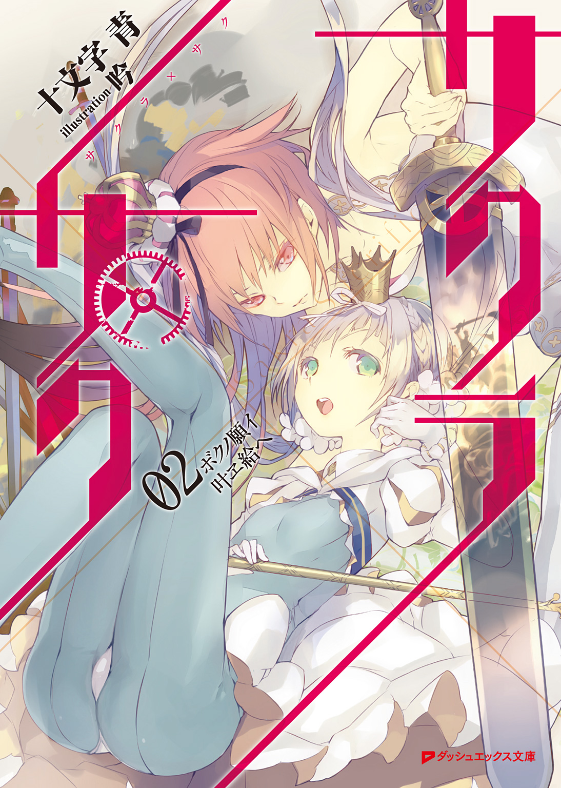
この本は縦書きでレイアウトされています。
また、ご覧になる機種により、表示の差が認められることがあります。
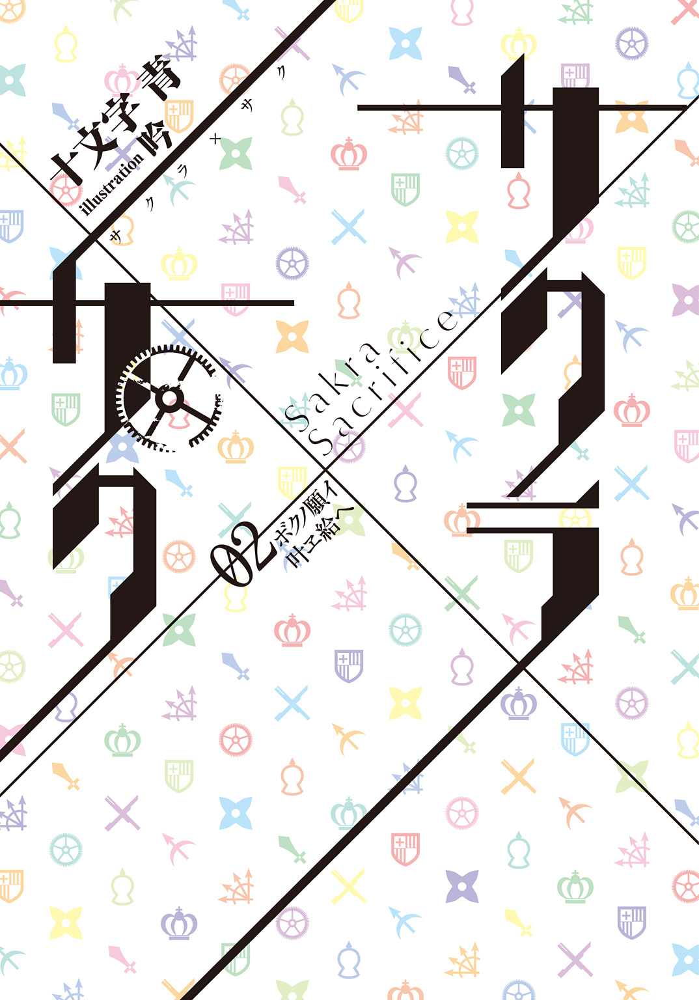
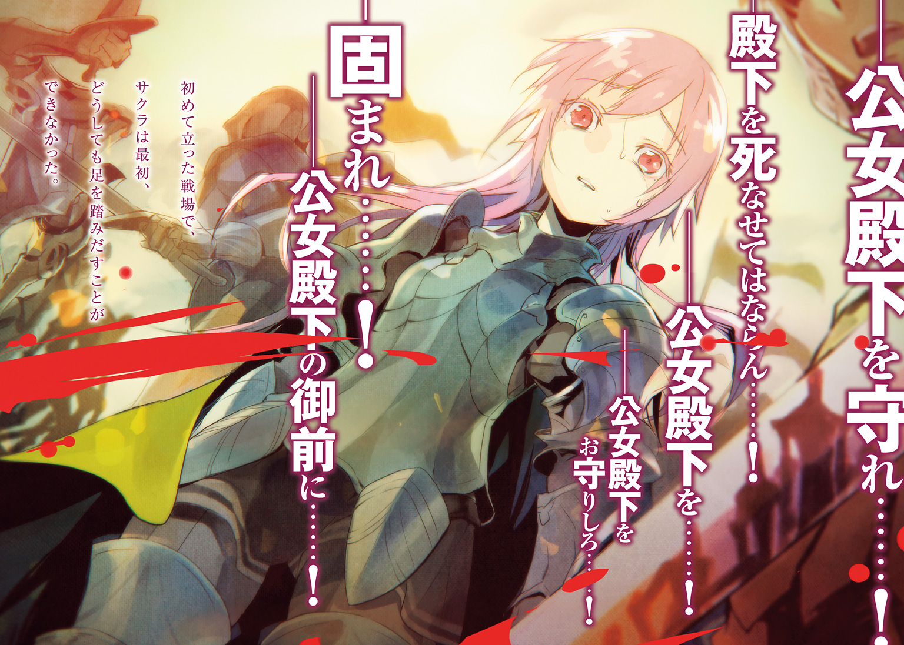
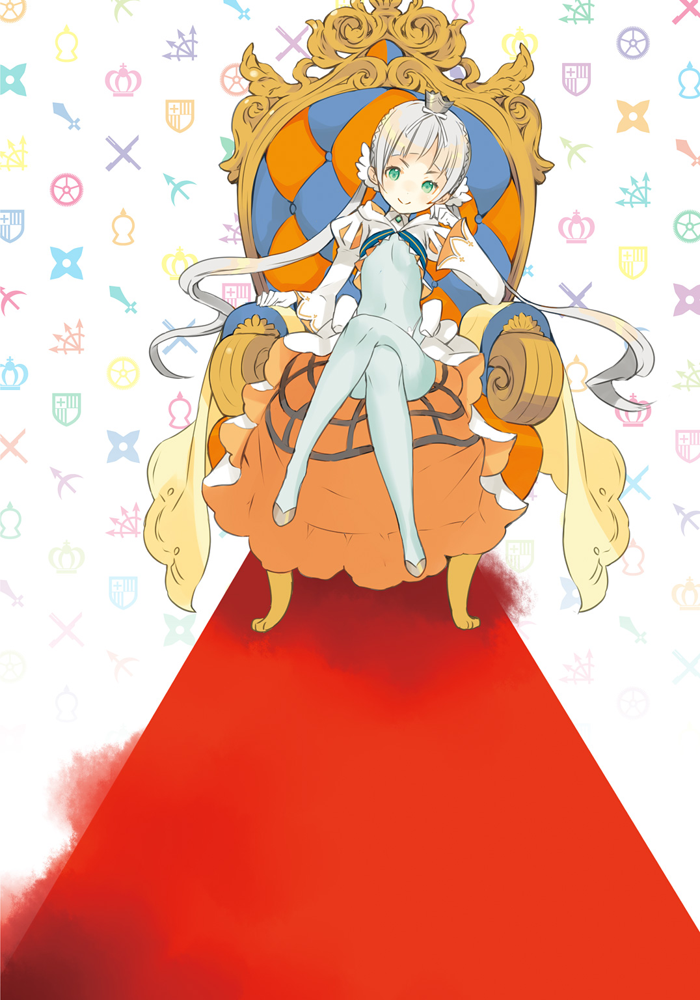
 ダッシュエックス文庫DIGITAL
ダッシュエックス文庫DIGITAL
サクラ×サク ０２
ボクノ願イ叶ヱ給ヘ
十文字 青
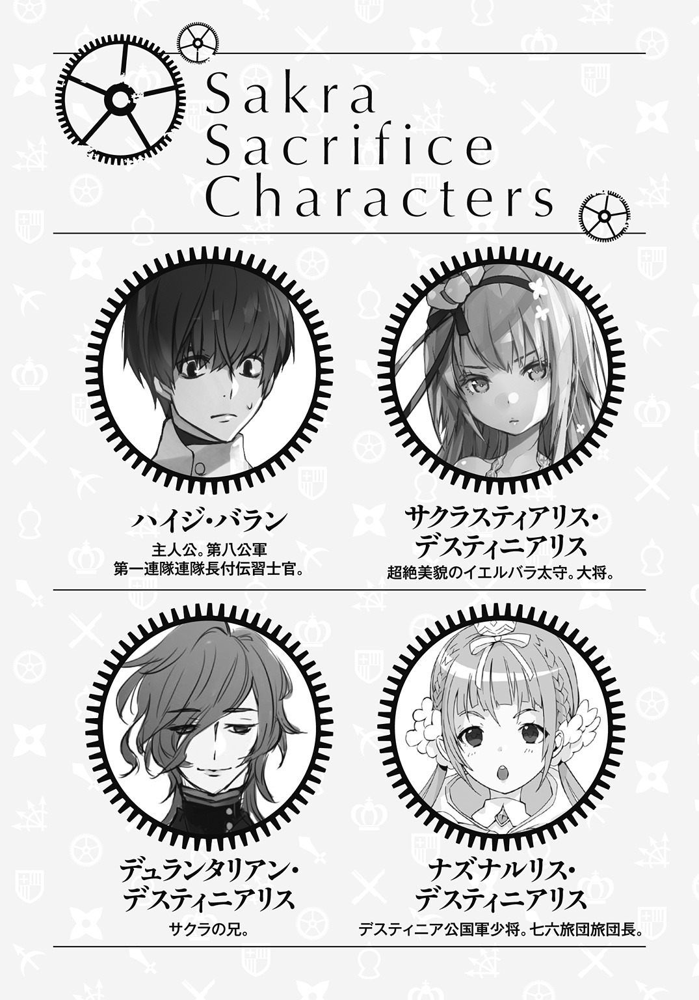
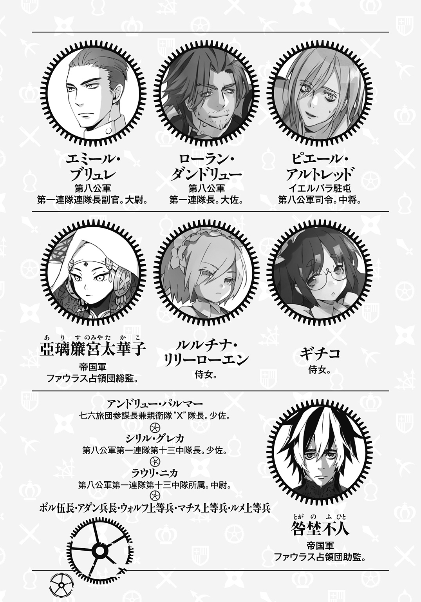
１ その名はアリス ALICE IS NOT HER NAME
――どこで間違ったのだろう？
ハイジ・バランは自分の人生について考えていた。
何しろ、考える時間はいくらでもある。腐るほどある。むしろ、考えるくらいしかやることがない、と言ったほうがいいくらいだ。
両手に手錠をかけられて、投獄されているのだから。
いや、正確には、拘束されている。
同じか。
少なくとも、似たようなものだ。
ここは軍居地下の拘禁室。軍紀に違反した者や、重要な捕虜を閉じこめておくための部屋だ。ようするにまあ、牢獄だ。
「......こんなはずじゃなかった......」
のどかなトクタリ邑で生まれ育ち、公立学校に進学して、友だちはできなかったが、というかある意味、友だちができなかったおかげで飛び級してしまい、軍人になった。デスティニア公国を脅かす敵と言えば、帝国だ。軍に入ったからには、貪欲な帝国の野望をくじく一助となりたい。
あとは昇進だ。実績をあげて昇進すれば、爵位がもらえる。給料が上がる。税金が減免される。爵位が上がれば、減税、果ては免税適用の範囲が、親兄弟、親族にまで広がる。
ハイジは公国と家族、一門のためにがんばるつもりだった。
何が間違いのもとだったのだろう？
「......どれ、なのかな......」
ハイジはうなだれた。
公立学校出の准士官として、最前線と言ってもいいだろうこのイエルヴァラ城市の第八公軍に配属された。それはいい。いや、いきなり最前線ってどうなんだという気もするので、あまりよくはないのだが、まあしょうがない。
任地でいきなり第八公軍の司令ピエール・アルトレッド中将が降ってきた。
与えられた任務というか役職が、太守付き侍官だった。
しかも、太守はデスティニア公ドリアン殿下の息女、第四公女だった。
そのことはハイジも赴任する前から知っていた。彼女が親の七光りではなく、若くして赫々たる軍功をあげていて、公国軍大将の階級を持っているという事実も、頭には入っていた。
東大陸の由緒ある名家の血を引く者の大半は、魔性という特別な力を生まれ持つ。というよりも、魔性という特別な力を持っているからこそ、彼ら、彼女らは王や公となり、支配階級を構成しえたのだ。
ゆえに当然、イエルヴァラ太守も魔性を有している。
でもまさか、単独で敵軍にどーんと突っこんでゆくようなでたらめな人だとは思ってもみなかった。
魔性がそんな芸当を可能にするめちゃくちゃな力だとも、正直、想像していなかった。
そして、そんな魔性をお持ちになっている公女殿下が、稀に見るというか、稀にも見ないほど美しい御方であって、しかも、汚部屋にお住まいで、服をちゃんとお召しになってくれなくて、まったくもって目の毒で――そのあたりは、良い点もあれば良くない点もあり、表裏一体という感じもなきにしもあらずだが、とにかく侍官としてお仕えするのは、控えめに言っても簡単ではない女性だった。
もっとも、太守サクラスティアリス・デスティニアリス大将閣下にして公女殿下が、お仕えし甲斐がある御方であることは間違いない。
姫。
それが適当な呼称だとの言質を一応とっているので、そう呼ばせていただいている。
どんな運命の悪戯か、姫の侍官になったことは栄誉であり、不運というよりは幸運だ。
ハイジは心の底からそう思っている。
『だって、わたしがやらなきゃ、人が死ぬもの』
戦場で姫がもらした言葉が、ハイジの脳裏にはしっかりと刻みこまれている。
とてつもない魔性を生まれ持ったとはいえ、なぜ姫が単身、敵軍に突撃するなんていう無茶をするのか。あれがその答えだったのだ。
ハイジは少しでもそんな姫のお力になりたい。姫のためなら何でもしたい。そうするべきだし、そうしなければならない。これは本当の、本心だ。
ただ、姫の侍官にならなければ、こんなことは起こらなかったんじゃないのか。
「......いや、そんなことはない、か......？」
よくわからない。
考えても、考えても、わからないのだ。
「僕に、魔性が......？」
ハイジは笑う。
「はは......ははは......はは......は......そんな馬鹿な......」
たしかに、おかしいことはおかしい。
廃王ジーク・ザラナスター率いる帝国軍を迎え撃った戦いは、克明に記憶している。
帝国軍の機士たちをばったばったと薙ぎ倒したのは姫だ。でも、姫に機士を討たせるだけ討たせて消耗させ、廃王ジークがとどめを刺すというのが相手の作戦だった。
ひょっとしたら、あのままだと、姫は廃王ジークに敗れていたかもしれない。
あくまで独力で決着をつけようとする姫の意思を無視して、ハイジは助太刀をした。
姫や廃王ジークと同じく、魔性を持っている侍女のルルチナ・リリーローエンやギチコならともかく、一介の、それも公立学校を卒業したばかりの少尉でしかないハイジが、なぜか加勢できてしまった。
あまつさえ、廃王ジークに深手を負わせて、撤退に追いこんだ。
我ながら、あのときの自分は速かった、と思う。
集中していたとか、絶好調だったとか、火事場の馬鹿力のようなものだとか、そういった理屈では説明がつかないくらい、身体が軽かった。よく動いた。速すぎた。
あのときのハイジは、明らかに尋常ではなかった。
きっと何か原因があるはずだ。それが魔性なのだと言われたら、否定しうる根拠は持ちあわせていない。
「......で、僕はどうなるんだろ......？」
見当もつかないが、明るい未来が待っているとはちょっと思えない。だって、こんなところに閉じこめられているくらいなのだ。
――もしかして。
一生このまま......とか？
それはないか。拘禁されつづけるとしても、どこかに移送されるだろう。たとえば、専門の監獄のような場所に。
いやでも、ハイジは公国に忠誠を誓っている軍人なのだ。もし仮に、本当に魔性があるとしたら、それがどんなものかはわからないが、公国のために使う。公国のため以外には決して使わないと誓ってもいい。というか、お願いだから誓わせて欲しい。
何も閉じこめることはないじゃないか。公国に害をなすようなことはしない。母国なのだ。両親もいるし、妹も、弟もいる。みんなこの公国で暮らしている。侍官として姫に、公女に仕えている。ハイジ・バランは公国に尽くす。身を粉にして働く。
「......どうして、こんなふうに牢屋に入れられなきゃならないんだ......？」
やはり、あれか。
魔性は王侯貴族のものだ。デスティニア公国でいえば、公家と一部の上流貴族が魔性を持っているという。ハイジは庶民だ。ド田舎育ちのド庶民と言っていい。とるにたらないはずのド庶民なのに、じつは魔性持ちでした――というのは、都合の悪い事実なのではないか？ なんというかこう......特権階級の権威に傷をつけるようなことだったりするとか？
もしそれが不都合な事実だったとしたら、どうする？
隠蔽してしまえばいい。どうやって？
「......抹殺」
そんな言葉が浮かんで、ハイジは震えあがった。――いや。ない......よね？ そんなひどい、恐ろしいことはしない......だろう。しない......はずだ。しないと思う。しないといいな。しない、でしょ？ するわけがない。
しないって。
そうだよ。あたりまえじゃないか。
信じろ。大丈夫だ。信じられない理由がどこにある？ 母国なのだ。ハイジは公国を大切に思っている。公国はすばらしい国だ。他の国については、軍事に関わる知識や、一般的なイメージくらいしかないので、比較するのは難しいが、公国がとりたてて悪い国だとは言えないと思う。少なくとも、帝国のように侵略しまくって戦争で被害者を出しまくっているような国とは違うはずだ。
抹殺。
軍人ではあっても、その前に公国の民でもあるハイジに、そんなことはしない。と思う。思いたい。――が。しかし。
「わあああああああああああああぁぁぁぁぁぁぁぁぁぁぁぁぁぁぁぁぁぁぁぁぁぁぁぁ......」
いったん考えはじめると止まらなくなった。頭の中がごちゃごちゃだ。
おかげで、足音も何も聞こえなかったらしい。唐突に扉が開いたので、ハイジは仰天した。
「――ひやぁぁっ!?」
「おっと」
誰だろう。通路から射しこむ明かりも逆光なので、どうも男性らしいということくらいしかわからない。
いや、ここが明るくても、その男の正体はやはり不明だろう。
男は奇妙な面で顔を覆っている。
「しばらくの間、拘束されていたわりには元気のようだね。ハイジ・バラン少尉」
「......え、と――ど、どちら様で......？」
「ぼくかい？ ぼくは、特別査問官だよ。肩書きは他にもいくつかないわけじゃないが、ここでは特別査問官と名乗っておくのが妥当だろう」
「特別......査問官」
「そうだよ、少尉」
特別査問官は面を外した。ハイジは息をのんだ。
アルトレッド司令は美男子だ。ありていに言って、ハイジは司令ほど見目形のすぐれた男性を見たことがない。もう、ない、ではなくて、なかった、と言わなければならないだろう。
特別査問官は笑みを浮かべている。こんなに心惹かれる笑顔というものが世にあっていいのか。もしハイジが女なら、確実に見とれることだろう。いや、ハイジは男だが、じつのところ見とれていた。
「ぼくはデュランタリアン・デスティニアリス。よければ、デュランと呼んでくれ。デュランタリアンという名は、いささか長いからね。そうは思わない？」
「......は、はい。いえ......あの、えっ......？」
ハイジは脳内で反芻した。――デュランタリアン・デスティニアリス。
デスティニアリス？
「ぼくは、我がデスティニア公国には現在、たった一人しかいない特別査問官――」
デュランが目を細めると、紫色の瞳がきらきらと輝いた。
「なんだ」
×
デュランは――どうも、公家に連なる者らしい、つまり、公国に於いてはこれ以上ないくらい高貴な身分らしい、異様なほどの美貌を誇る男は、ハイジを拘禁室から出して、軍居の一室に連れこんだ。この男がいると、素っ気ない部屋の簡素な調度さえ、すべて上等で品がいい物に見えてくるから不思議だった。いや、というか、この男、などと思ってはいけないだろう。公立学校の卒業生ともあろう者が、迂闊なことに即座にはぴんとこなかったが、デュランタリアン・デスティニアリスといえば、ドリアン公の御令息だ。
公の御次男だ。
サクラスティアリス・デスティニアリス公女――姫の御令兄であらせられる。
とにかく、主筋だ。
失礼があってはならない。敬わなければならない。何を言われても、はい、はい、はい、畏まりました、だ。当然だ。身分が違いすぎる。ハイジ・バランはド庶民なのだ。
「さて――」
デュランは椅子を二つ、向かいあわせに置いて、一つにハイジを座らせ、もう一つに自分が座った。ハイジは背筋を伸ばした。
「は、はいっ」
「ああ、その前に」
デュランは微笑んでハイジの両膝あたりに目を落とした。両膝というか、両腿の上にある両手だろう。
「手錠を外したほうがいい？ 痛くはないかい？」
「......い、いえ。い、痛くは、べつに......」
「でも、窮屈だろう？」
「そ、それはその、そうですが......ぼ、僕、わ、私、じ、自分は、こ、拘束されているわけでありまして、ですからつまり......」
「真面目なんだね、少尉」
「お、お、お褒めにあずかり、光栄であります」
「いや、褒めてはいないよ」
「あぁっ。そ、そうなんですかっ!? も、申し訳ありません......」
「少しは褒めているかな？」
「あああああありがとうございますっ」
「少なくとも、好感を抱いていることは間違いないね。きみはいい子のようだ」
「そ、そんな......」
ハイジはうつむいて唇を嚙んだ。――胸にわきあがる、この感情。これは何だろう？
恥ずかしい？ 照れくさい？ とにかく、居ても立ってもいられない。でも、もちろん、座っているしかない。
「まあいい」
デュランは、ふっ、と短く、やさしく笑った。
「きみがそのままでかまわないと言うのなら、手錠は掛けておくよ。どちらにしても、ぼくのやることに変わりは――」
と、口をつぐんでしばらくしたら、部屋の扉が、どんっ、と開け放たれた。ハイジはのけぞって、倒れそうになった。久しぶりといえば久しぶりに明るい場所でまじまじと見ると、また格別のものがある。やはり別格で、超越的だ。
――完璧ですね！
ハイジは精神世界で片目をつぶって親指を立てた。現実世界では無理だった。意識のこちら側では完全に圧倒されている。その宝玉の瞳に、細く盛りあがっているのにまったく尖ったところのない鼻筋に、折れそうなほど繊細な顎のラインに、羽毛のようにやわらかそうな頰に、それから超自然的でかつ、自然すぎてまぶしすぎる肢体に、ハイジは恐れ入るしかない。姫はご立腹のようだった。その表情もまた圧巻と言うほかない。
「デュラン兄様......！」
「やあ、サクラ」
デュランは目を細めて片手をあげた。
「相変わらずひどい恰好をしているね」
「言うに事欠いて、一言目からそれ!?」
「一言目は『やあ、サクラ』だったろう？」
「へりくつ！」
「そうかな？ でも、その恰好は本当にひどい」
デュランの言葉を否定できる者はそう多くないだろう。
まったくもって、おっしゃるとおりです。
いつものことではあるのだが、姫は例の下着のようなものしか着ていない。ちょっと前まで拘禁室にいたハイジには刺激が強すぎて烈しすぎて強烈すぎる。これは見逃せない。いや、見てはいけない。目のやり場に困りまくって、いっそのこともう、自死してしまいたい。
「サクラ様」
姫の後ろから、小柄な金髪の侍女がガウン的なものをさしだした。ルルチナ・リリーローエンがいてくれなかったら、いろいろな意味で姫はどうなってしまうのだろう。大変なことになるのは間違いない。姫は舌打ちをしながらもガウンを受けとって羽織った。
「これで文句はないはず」
「前を留めたほうがいいと思うし、裸足はどうなんだろうね？」
「いちいちうるさい」
「サクラさまー。うがっ」
姫の後ろで、不道徳なまでに豊満きわまりない侍女がずこーんと転んだ。人形のチヌコも一緒に転倒したが、すぐに起きあがってギチコの手から吹っ飛んだスリッパを拾い、姫の足許に置いた。姫はスリッパを履いて、ふん、と鼻を鳴らした。
「これで完璧」
「サクラ。ぼくはおまえの将来が気がかりでならないよ。未来だけでなくて、現在もだが」
「まぬけなデュラン兄様に心配されるほど落ちぶれてはいない」
「間抜けとはご挨拶だね」
「何をしにきたの」
姫はちらっとハイジを見てから、デュランを睨みつけた。
「このイエルヴァラ城市で勝手なふるまいは、デュラン兄様といえども許さない。太守であるわたしの目が、黒いうちは」
「そういえば、ハイジ・バラン少尉の目はずいぶん黒いね」
「話をそらさないで！」
「いいや。これは大事なことだよ。おまえもぼくの役目はわかっているはずだ。こと疑い例の査問に関しては、特別査問官としてのぼくを制するのに、太守ごときの権限では足りない」
「......ぐ、ぐ、ぐ」
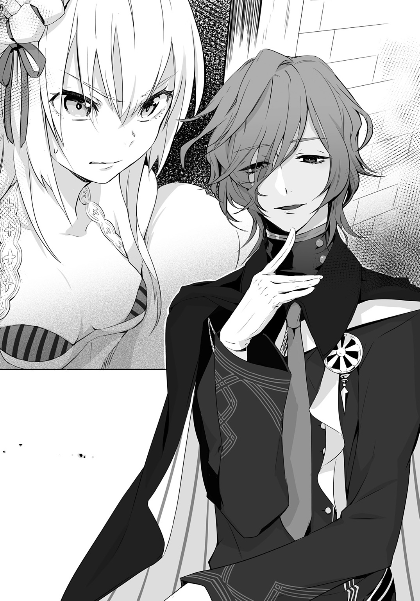
姫は両手を握りしめ、歯を食いしばって、本当に、ぐ、ぐ、ぐ、と声をもらしたのだ。なんというか、こんなふうにやりこめられている姫を、ハイジは初めて見た。
――この男、できる。
いや、この男、などと思ってはいけないのだが、姫をたやすくやりこめるあたりに、若干の畏敬だけではなくて、莫大な反感をどうしても覚えてしまう。僕の姫に何を......と、言葉にしてしまえばそういうことになるのかもしれないが、むろんハイジの姫ではない。
姫は部屋の中に入ってきた。
「たちあう」
「かまわないよ」
デュランは姫ににっこりと笑いかけた。好印象を抱かずにはいられない笑顔だ。嫌悪するのはなかなか、というか、かなり難しい。
「ぼくはべつに困りはしないからね。終わるまでじっくり見ているといい」
「断られても、そうさせてもらう」
「ギチコと――きみは、ルルチナだったかな？ きみたちも入るといい」
「それでは、失礼いたします」
ルルチナは一礼して入室し、ギチコは起きあがってずれた眼鏡の位置を直しながら部屋に入ろうとしたら、なぜか壁に足を引っかけてまた転びそうになった。それでもチヌコと一緒になんとか部屋に入り、扉を閉める際に一度、指を挟んだ。
「あぅだっ」
「......相変わらずだね。ギチコの不器用っぷりも」
さすがにデュランも呆れているようだ。稀代の美形でも呆れはする、ということか。それはまあ、するだろう。
何はともあれ、二人きりでなくなったので、ハイジにとってはちょっと気が楽に――なるわけもない。
ルルチナとギチコとチヌコはともかく、姫がじぃぃぃぃぃぃぃぃぃぃぃぃ......っとハイジを、正確にはハイジとデュランを見つめている。
正直、めちゃくちゃ緊張する。
「言うまでもないが――」
デュランは脚を組んで指先で前髪を払った。
「第八公軍司令ピエール・アルトレッド中将には話を通してある。ぼくはドリアン公の命のみを受けて任務を遂行する超法規的な存在といってもいい特別査問官だが、強引なやり方は好まない。波風はできるだけ立てない主義だ。ハイジ・バラン少尉。安心するといい。悪いようにはしないよ。きみが我が公国に仇をなさんとする邪悪な人間でなければ、だが」
「......ぼ、僕は！ 自分は......公国に仇を、なんて、そんなこと――」
「しぃっ」
デュランは身を乗りだして、ハイジの唇に人差し指を当てた。
「きみはしゃべらなくていい。ぼくがきみを視るから」
「......視る？」
「しゃべるな。いや、うなずくのもいらない。首を振らなくていい。ぼくがきみを視る。ぼくには視えるのだからね」
デュランの紫色の双眸が光を放っている。――魔性。
魔性見なんだ、と言っていた。
ハイジはデュランの瞳から目を離すことができない。
なんて――なんて、深い瞳だろう。光輝く紫色の光彩は明け方の空のようで、黒い瞳孔はどこまでもつづく穴のようだ。
「〝 〟」
〟」
デュランが囁いた。
穴の奥で、デュランが手招きをしている。
こっちへおいで、と。
行くしかないのだ。ハイジに拒否権はない。
拒みたくもない。むしろ、行きたくてたまらないくらいだ。そこに行くのが正しい。
――そこ？
そこって......？
ここだよ、とデュランが道を示している。ハイジはただ進めばいいのだ。
でも、道がない。闇だ。何も見えない。デュランもいない。戸惑っていると、背中を押された。誰だろう？ わからない。誰かがそばにいる。寄り添っている。手を引かれて、闇の中を上ってゆく。まるで階段だ。一段ごとに上昇する。夜なのか？ 夜空を駆け上っているかのようだ。どこまでもどこまでも上ってゆく。怖い。不安もある。息苦しい。大丈夫だよ、と誰かが元気づけてくれる。心配しなくていい。そうだ。大丈夫だ。上がれ。上がってゆけ。
そして、とうとうたどりついた。
ここはどこなのだろう？
月の裏側だよ、と誰かが教えてくれる。だが、誰もいない。
何も見えない。
闇だ。
真の、闇。
......助けて。
ここは、暗い。暗すぎる。
助けて。
自分の声も聞こえない。音がない。無音。感覚がない。手は？ 足は？ わからない。
助けて！
叫んでいるつもりだ。――叫ぶ？
声。
誰の？
自分？
自分とは？
どこなんだ、ここは？
――もしかして。
目。
瞳孔の中？
デュランタリアン・デスティニアリス、あなたは――、
「落ちつくんだ、少尉」
声がする。
デュランの声だ。
「息を吸って。......吐いて。......そう。ゆっくりと。深呼吸をして」
ぼんやりと――光を感じはじめた。見えてくる。
感じる。
いる。自分自身が、ここに。
椅子だ。ハイジは椅子に座っている。あの部屋だ。向かいの椅子にはデュランが脚を組んで座り、少しだけ首をかたむけて微笑んでいる。
「月の裏側はどうだった？」
「......どう――って。月の......裏側？」
「この人のたわごとを聞く必要はない」
姫が口を挟んで、薔薇のしずくを溶かしこんだような白金の髪をかきあげた。
「それで、どうなの。デュラン兄様。少尉の魔性は」
「興味深いよ」
デュランは口の前で両手を合わせた。
「とても興味深い。その前に、確認しておきたいことがある。少尉、きみは公立学校で武術教官と試合をして、勝ったようだね」
「......あ、はい。そ、それが、何か......？」
「武術教官との試合で、きみは一度も負けなかった。そう記録にある」
「ぐ、偶然だと思います。まぐれというか。それに、初めはおそらく、教官は油断なさっていたんじゃないかと......」
「武術教官はゲレール・ルドルンド？」
「はい。おっしゃるとおりです」
「彼は子爵家の三男で、魔性を持っている。潜在等級はＤで、最低ランク。かなり弱い魔性ではあるけどね」
「......そ、そうだったんですか。え？ で......それが何か？」
「きみは武術教官と試合をしたとき、よく動けるような気がしなかったかい？」
「しました」
ハイジは即答した。事実、そうだったからだ。相手がすぐれていればすぐれているだけ、触発されてこちらも力を発揮できるのだろう。そんなふうに考えていたが――不思議だと思ったことがないわけじゃない。
「少尉。簡単に言うと、それがきみの魔性だよ」
「......よく、動ける？」
ルルチナが細い眉をひそめて呟いた。
「魔性に反応するということですか？」
「んにゃあ？」
ギチコは何か考えようとして、結果、ぼうっとしている――のか......？ だとしたら、ぼうっとしすぎて危険な領域に踏みこんでいるに違いない。やばい表情だ。軽くイッちゃってる。
「そのとおり」
デュランは両手を広げて脚を組みかえた。
「近くに魔性を持つ者がいることで、少尉の魔性は発動する。つまり、自動型ということになるね。系統としては、強化系。魔性持ちがそばにいればいるほど、少尉は単純に強くなる。筋肉や神経の働きではないが、筋力が増強されるような形で、少尉の魔性は発現するはずだ」
「いればいるほど、とおっしゃいましたか？」
ルルチナが尋ねると、デュランは鷹揚にうなずいた。
「ぼくはたしかにそう言ったよ。いればいるほど、とね。つけくわえるなら、魔性の強度も影響するようだ。まとめると、魔性持ちがそばにいればいるほど、その魔性が強ければ強いほど、少尉は強くなる」
ルルチナは顔をしかめて唇を動かした。
声は聞こえなかったが、なんかずるい、と言ったのではないかと思う。
「これは」
と、デュランはふたたび口の前で両手をあわせた。
「なかなかすばらしい魔性だね。ハイジ・バラン少尉。きみやきみのご家族の来歴はすべて調べさせてもらったが、ありていに言って身分のある者の血は一滴も入っていない。少なくとも、調べられる範囲においては。ずっと昔のことまではわからないがね。ともかく、そういった者がこうした魔性を生まれ持つことは非常に、非常に稀だ」
「......それを、僕は――どう受け止めるべきなんでしょうか」
「ん？」
「僕に、魔性があるとして......ですがそれは、たまたまというか......僕が獲得したものじゃありませんし、望んだわけでも、望まなかったわけでもなく、だから、ええと......」
「一つ言っておこう、少尉」
「はい」
「ぼくは嫌いだな。そういう考え方は」
「......は？」
「望むと望まざるとにかかわらず、人はいろいろなものを背負い、また、欠けたまま、生まれてくるものだよ。語弊があるかもしれないが、ぼくは世界神カバラが定め給う運命を信じていない。ただし、運命というものはあると思っている。生まれた瞬間に与えられるもの、与えられなかったものこそが、それだ。その運命からだけは、人は誰も逃れることはできない」
「運命からは......逃れられない」
「ああ。きみはそれを受け容れるべきだ。というよりも、受け容れるしかない」
「少尉」
呼ばれて見ると、姫はたいそうご機嫌が斜めのご様子だった。
「その人の言うことは聞いちゃだめ。ペテン師だから」
「......あ、はい。え。で、ですが、今のは......」
「口八丁手八丁で人をだまくらかして、いいように操るのが、その人のやり口」
「そ、そうなんですかっ!? じゃあ、気をつけないと......」
「くっ......」
デュランは噴きだしかけて、手を口で押さえた。
「ずいぶんとまあ、素直な子だね。サクラ、おまえの新しい侍官が魔性持ちらしいというから、いったいどんな男なのかと心配だったが、これは予想外だ。一度ならず二度までもおまえの命を狙う刺客だという線は、とりあえずなさそうだな」
「心配なんか、してないくせに」
「ぼくはおまえの兄だよ、サクラ。いつでもおまえの幸せを願っている。誰よりもね」
「かえって不幸になりそうだからやめて」
「おまえがぼくの妹としてこの世に生を受けた以上、ぼくに幸せを願われるのも運命だよ。おまえは受け容れるしかない」
「絶対、いや」
「やれやれ。強情だな。ぼくのきょうだいは、誰も彼も。――ところで、少尉」
「は、はいっ」
ハイジが背筋をのばして表情を引きしめると、デュランは失笑しそうになった。
「きみはこれからいくつかの手続きを経て、誓約を立てれば、原隊に復帰することが可能となる。もちろん、きみがそれを望めば、だが」
「望みます！」
「早いな。望まなければどうなるのか、訊かれるかと思ったが」
そんなことを訊く必要があるだろうか？
もしかすると、デュランはハイジのことを馬鹿だと思っているのかもしれない。いや、まあ、べつに賢くはないが、とくに頭がよくなくても、そのくらいのことは考えればわかる。魔性は国家が認証し、管理するのだ。公国が魔性を持つ者を自由にするわけがない。ちょっと怖かったが、ハイジはデュランの目を見すえた。
「僕は公国に忠誠を誓っている、姫の侍官です。これからもそうありつづけられるのでしたら、骨身を惜しまず任務に精励させていただく所存です」
「いいだろう」
デュランはハイジから視線をそらさずに答えた。
「では、きみの魔性に銘を与える。これも魔性見である特別査問官の仕事なのでね」
なんとなく緊張した。ハイジだけじゃない。姫やルルチナ、ギチコまで、息を詰めているような気配がある。人形のチヌコは、もともと息をしていないが。
「〝〟」
デュランがその銘を口にした瞬間、ハイジは内臓がきゅっと縮まったような心地がした。
「潜在等級は、ＡＡ」
そして言い添えられたその言葉の意味が、ハイジにはよくわからない。しかし、姫もルルチナもギチコも驚いているようだ。とくにルルチナは眉をつりあげて――なんか、ひょっとして、怒ってません......？
「まあ、細かい説明はのちほど、ということにしようか。疑問に思うことも多々あるだろう。訊いてくれれば、ぼくに答えられることは答えるよ」
「あ......はい、お、お願いいたします。特別査問官......どの」
「デュランでいいよ。ぼくの美しさに対してふさわしい敬意を払ってさえくれれば、呼び方なんか何だってかまわない」
「そ......そうですか。い、いや、ですけど、呼び捨ては、さすがに......」
「だったら、普通に様づけはどうかな。妥当なところだろう？」
「デュランげすやろう、と！」
姫は胸を張ってデュランを指さした。
「呼んでやるといい。この人には、お似合い」
「おいおい、サクラ。そんなことを言われたら、いくら心が広いぼくでも、つい意地悪をしたくなってしまうよ」
「デュラン兄様の底意地が悪いのは生まれつき。性根から腐っていて、見るにたえない。ひどい有様」
「イエルヴァラ太守サクラスティアリス・デスティニアリス大将」
急にデュランの声音が変わった。顔つきも違う。美しいうえに冷たく厳かだ。
ギチコは、ぽかーん、としているが、ルルチナは顎を引いて少し腰を折り、畏まっている。ギチコが操っているはずなのに、チヌコはルルチナのように威儀を正しているのが謎だ。
姫は、一言で言うと、悔しそうだった。口をへの字に結んで、悔しいが、ここは黙って拝聴するしかない、といった風情だ。
「我、公国軍総司令部付軍特使デュランタリアン・デスティニアリス少将が、公国軍総帥ドリアン・デスティニアリスの名において命ずる」
デュランは懐から巻紙をとりだして、優雅に広げてみせた。
「第八公軍を率いてファウラス城市を攻略せよ。なお、本作戦行動にはナズナルリス・デスティニアリス少将の七六旅団も参加する。命令書を読むかい？」
「......いい」
姫の顔が青ざめている。
――ファウラス城市。
といえば、イエルヴァラの北に横たわるルヴァラ廃地の向こうだ。かつてはマウローという国の城市だった。現在は帝国の占領下にある。
攻略？ 攻めろというのか？ ルヴァラ廃地を越えてファウラス城市を陥落させろと？ 帝国軍の侵攻を防いだばかりなのに？ 姫にそれをやれというのか？
「読めよ」
デュランは命令書らしい広げた巻紙を姫に向かって突きだした。
「読め、サクラ。読んで、確認するんだ。おまえにはそうする義務がある。違うかい？」
「......っ！」
姫は命令書を引ったくって目を通すと、床に叩きつけようとした。
「サクラ様！」
ルルチナに制止されて、なんとか思いとどまってくれたようだ。姫は命令書をルルチナに手渡し、顎を上げて下目遣いでデュランを睨んだ。
「命令には、従う」
「そうじゃないだろう、サクラ？」
デュランは両眼を糸みたいに細めて目尻を思いきり下げ、唇の両端を引っぱるようにしてつりあげた。それでも美貌だ。かろうじて。しかし、見る者を愉快な気分には決してさせない。完全にその反対だ。
「ちゃんとお言い。おまえは軍人で、太守なんだよ。つまり、おまえは公国の犬だ。犬なら犬らしくしろ。幼いころから、ぼくはおまえにそう教えてきただろう？」
「わたしが犬なら、デュラン兄様も同じでしょ」
「だから何だい？ ぼくが犬だからといって、おまえが犬であることは変わらないよ。さあ、サクラ、上等な犬だということを示してみせろ。鳴くんじゃないよ。泣いたりせずに、人間の言葉を話してみろ」
「......命令を」
姫は顎を小刻みに震わせている。デュランは無慈悲に首を横に振った。
「違う」
「ご命令！」
「そう。そうだよ、サクラ。次は？」
「つ......」
「それだ」
「つつ、しんで」
「がんばれ」
「......うけた、たわまり」
「そこで嚙むなよ、サクラ。台無しじゃないか」
「う、うけたまわります！ これでいいでしょ！」
「これでいいでしょ、は余計だよ、サクラ。おまえはダメな犬だ。罰が必要だな」
デュランはハイジに向きなおって、今度はとびきり感じのいい笑みを浮かべた。
「ハイジ・バラン少尉。誓約を立てれば、きみは原隊に復帰できる。ただし、魔性を持った者を太守の側近く仕えさせることについては、諸般の事情を鑑みるに慎重になるべきだろうね。よって、ぼくはアルトレッド司令に配置換えを提案することになると思う。司令はぼくの懸念を正当であると判断し、これを拒むことはないだろうな」
「......つまり――」
ハイジはうつむいた。というより、勝手に首から、それから肩からも力が抜けて、顔が下を向いてしまった。
「僕は、姫の侍官じゃ......なくなる......？」
×
もともと、なりたくて侍官になったわけじゃない。あたりまえだ。
ハイジ・バランは軍人なのだ。軍人は命令に従わないといけない。公立学校で、とくに軍人課程に進んでからは、命に服することの重要性を教えこまれた。たった一人の命令違反が原因で、組織の運営に齟齬を来しかねない。場合によっては崩壊してしまうかもしれない。命令に正しく反応できるように、厳しい訓練も受けた。否やはない。命令には従う。それが軍人だ。
拘束されたときに没収されたカバラの剣、宝剣ワイバーンは返却された。
司令部に呼びだされて、アルトレッド司令からハイジに辞令が下りた。
「ハイジ・バラン少尉。貴官に、本日四月十八日付けで我が第八公軍第一連隊連隊長付伝習士官の任に就くことを命ずる」
「はっ！」
ハイジは左胸に右の手刀をあてる公国軍式の敬礼でもってこれに応えた。
「ハイジ・バラン少尉は第八公軍第一連隊連隊長付伝習士官の任に就かせていただきます！」
「......うん。なんだか、こう......すまないね」
「えっ。な、何がですか......？」
「涙目になっているよ」
「えぇっ!? そ、そんな馬鹿なっ......」
ハイジは目の周りを手でこすってみた。たしかに、いくらか濡れている。気づいていなかったが、涙ぐんでいたようだ。
司令は咳きこみながら、申し訳なさそうに眉をひそめた。
「私としては......んんっ......ハイジくんには引きつづき、姫の侍官として精勤してもらいたかったのだが......デュランタリアン殿下のおっしゃることにも一理あると、認めざるをえない。ごほっ、ぐはっ、ぶはっ......おぅっ......」
倒れそうになった司令を、銀髪美髭のリオネル・カーター大佐が支えた。
「司令、椅子におかけになってください」
「......いや、大丈夫」
「しっ、れぇー」
ローラン・ダンドリュー大佐が無精髭の生えた顎を手でこすりながら、目で椅子を示した。
司令はやれやれとため息をつき、しょうがないなあとでも思っていそうな態度で椅子に腰を下ろした。カーター大佐もダンドリュー大佐も、それはこっちの台詞だと言いたげだ。
「ともかく――」
司令はハンカチで口を押さえながら、さらに二、三度、咳をした。
「そのような次第だから......ぐふっ......ハイジくんは以後、ここにいるダンドリュー大佐の許で、士官としての振る舞いを......うぇっへんっ......学んでもらうことになる......」
「俺っていうか、実際は俺の副官に付くことになるが」
ダンドリュー大佐がハイジを見てニヤッと笑ってみせた。
「はっきり言って、うちは厳しいぞ。俺はこのとおりいつだってキチキチッとしてるし、副官どのときたらそれ以上だからな」
一分の隙もなく身にまとって当然の軍服すら着崩しているダンドリュー大佐がキチキチッとしているとはとても思えないが、そのぶん副官は生真面目な人なのかもしれない。
なんにせよ、ハイジとしては正直、あっそうですか、はいはい、どうでもいいです、という気持ちを捨てきることは難しい。でも、捨て去らないといけないのだ。すっきりと。完全に。
ハイジはダンドリュー大佐に向かって敬礼をした。
「よろしくお願いいたします......」
「若いのに、ずいぶん元気がねえなあ」
「も、申し訳ありません......」
「まあ、よろしくな」
ダンドリュー大佐に肩を叩かれると、また涙がにじみそうになった。――いけない。
こんなことではだめだ。
ハイジはさっそく部屋へ急行して、わずかな私物をまとめることにした。姫の私室の隣の隣。侍官でなくなってしまったので、この部屋とはおさらばだ。
部屋へ向かう途中で姫に会えたりしないだろうか。内心、期待していたが、そんなことは起こらなかった。窓を開けて、姫の部屋のほうをうかがってみた。窓は開いているようだが、人の気配はない。もしかすると、姫は私室にいないのかもしれない。
荷物を持って廊下に出ると、巨大な洗濯籠を片手で軽々と持っているルルチナに遭遇した。
ルルチナはぺこっと頭を下げて、通りすぎてゆこうとしたが、立ち止まってくれた。
「第一連隊に配属されたとか」
「......あっ、はい、そ、そうです。ダンドリュー大佐のご厄介になることになりました」
「さようでございますか」
「は、はい、あの――」
姫は、どうされていますか......？
尋ねたかった。
だが、ハイジはもう侍官ではない。姫の様子をうかがうなど、職分を超えている。姫は太守で、公国軍大将なのだ。一新米士官には遠い、あまりにも遠すぎる存在だ。
「......ええと――その......どうか、お元気で」
「ありがとうございます。少尉もお身体にお気をつけて、軍務に励まれてくださいませ」
「は、はいっ」
「それでは、失礼いたします」
ルルチナは一礼して、行ってしまった。これで――、
これっぽっちで終わりなのか。
勇気を出して、姫のことを訊けばよかった。でも、訊いてどうする？ どうなる？ どうにもならない。
辞令を受けて今に至るまでの短い間に、いったい何度、思ったことだろう。これから何度、思い知らされることになるのだろう。
ハイジ・バランはもう、姫の侍官ではないのだ。
そのうち慣れるさ、と自分に言い聞かせながら、ハイジは後ろ髪を引かれる思いで本殿をあとにした。太守の私室や居室、執務室、謁見室、それから金庫や宝物庫などがある本殿には、二度と足を踏み入れることはないかもしれない。
主郭を出て、城市内の北東に位置する第八公軍駐屯地に直行した。第一連隊の陣営に到着すると、連隊司令部に案内されて、エミール・ブリュレ大尉と対面することになった。
中肉中背、髪は褐色で、瞳は茶色い、どういう男と説明するのが大変困難な、同じ年ごろの男性が百人いれば七十五人くらいはどこかしら似通っていそうな男が、連隊長室の真ん中で立ったまま書類を読んでいた。軍服を着ていなかったら、本当に目立たないだろう。というか、軍服を着ていても人目を引くことはなさそうだ。かといって、凡庸そうかというと、そんなことはない。うっかりすると見逃してしまうが、よく見れば切れ者だと誰でも思うだろう。その眼差しは鋭いし、立ち姿に隙がない。机と椅子は連隊長用なので、副官の自分は何があっても絶対に使わないという固い意思が感じられる。この人はきっと、ものすごく頑固だ。
「ハイジ・バラン少尉？」
ブリュレ大尉はハイジを一瞥すると、書類に目を戻した。
ハイジは敬礼をした。
「はっ！ 辞令を受け本日付で第八公軍第一連隊に着任いたしました、ハイジ・バラン少尉であります！」
「諒解した」
「はっ！」
ハイジは敬礼したまま、じっとしていた。
どうすればいいのか、まったくわからない。
ブリュレ大尉は横目でハイジを見た。
「何をしている？」
「えっ......あ、はい、じ、自分は、司令からは、ダンドリュー大佐の許で、士官としての振る舞いを学べと......ダンドリュー大佐は、副官どのにつくことになると......で、ですので」
「何をすればいいのかわからない？」
「はい！ そのとおりであります！」
「よかろう、少尉。仕事を与える」
「ありがとうざいます！」
「仕事を探せ」
「はっ！」
――え......？
目を瞠って息をのんだハイジを、ブリュレ大尉がわずかに首を傾けて見る。
「どうした」
「......いえ」
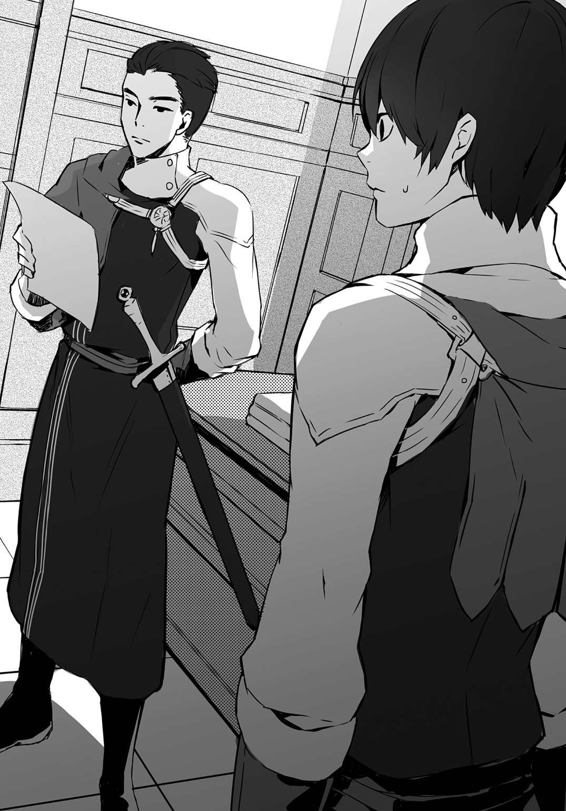
「言っておくが、私の嫌いな軍人が二種類いる。一つは、無能そうには見えないのに無能な軍人。もう一つは、無能そうに見えて実際、無能な軍人だ。私は忙しいし、今はどこも手が足りんことはあっても余ることはない。わかったら出て行け」
「はっ！」
ハイジは連隊長室を辞した。
ようするに、あれだ。駐屯地に入る前から気づいていたが、戦争の準備で大忙しなのだ。新任の新米士官に手とり足とり教えてやる暇などない。せいぜい邪魔にならないように、雑用でもこなしていろ。そういうことなのだろう。燃えてきた。
ハイジは士官用営舎の場所と、新任士官に割り当てられている部屋をどうにか突き止めて、さっさと荷解きをした。それから連隊司令部に戻ると、しばらくの間は士官たちの動きを観察していた。
ときおり姫のことが頭をよぎったが、歯を食いしばって追い払った。目の前にやるべきことがあって、いっそありがたい。集中しろ。姫のことは忘れるのだ。
そのうち、連隊司令部の士官たちが連絡書を持って、しきりとあちこちを往復していることがわかってきた。一度に三枚も四枚もの連絡書を抱えて、何度もそれらを確認しながら連隊司令部から出てゆく士官もいる。
ハイジはそうした士官に声をかけた。
「新任のハイジ・バラン少尉であります！ お手伝いさせていただければ幸甚に存じます！」
何度か睨まれたり、無視されたりしたが、とうとう連絡書を一枚、預かることができた。連絡書を読めば、どこに行けばいいのかはわかる。駐屯地の見取り図は頭に入っているので、どこに何があるのかくらいは覚えていた。連絡書を届けて連隊司令部に戻り、また士官に声をかける。何回かやっていると、士官のほうからお呼びがかかるようになった。そうこうしているうちに、一日が終わった。
営舎の部屋は四人部屋で、ドゥルー中尉、フォラン中尉、ギャン少尉と同室だった。ギャン少尉はハイジほどではないが若く、ドゥルー中尉は三十年配、フォラン中尉はその中間といったところだ。
最初は三人ともあれこれ話しかけてくれたが、ハイジがいちいちどもったりうまく返事ができなかったりするもので、気まずい雰囲気になった。決まりきった定型的な台詞ならいくらでも言えるのに、どうしてまともに対話できないのだろう？ 自己嫌悪に陥ると、余計にしゃべれなくなる。黙りこくっているハイジを、三人は次第に空気みたいに扱うようなった。まあ、いつものパターンだ。これはこれでいい。慣れている。
部屋が真っ暗になっても、姫のことを考えてしまい、なかなか寝つけなかった。
もう会えないのだろうか？
いや、そんなことはないだろう。
第八公軍はファウラス城市へと進軍する。防衛のための部隊をイエルヴァラに残すに違いないが、今日、往復する連絡書を見ていた感じだと、第一連隊は作戦に参加するようだ。
デュランは姫に、第八公軍を率いてファウラス城市を攻略せよ、と命じた。当然のことながら、姫もファウラスへと向かう。
ハイジは姫と同じ戦場に立つことになるのだ。
とはいえ、侍官だったときのように、姫のそばで戦うことはできないだろう。ハイジは第一連隊の一員として、歯車の一つとして、動くことになる。
そもそも、軍人というのはそういうものだ。
イエルヴァラに赴任する前は、そのつもりでいた。
なまじ姫の侍官になんかなってしまったのがよくなかった。そのせいで、どうもおかしなことを考えてしまう。
これでいいのか、と。
自分にはもっとできることが、やるべきことがあるんじゃないのか。
――魔性を持っている自分には。
「馬鹿なことを......！」
つい叫んでしまって、同室の先輩士官たちを起こしてしまった。
「何だ!?」
「どうした!?」
「誰だ、今の!?」
「ご、ごめんなさい！ ね、寝言です！ すみません！ 本当に......」
先輩士官たちはぶつくさ言いながらもすぐに眠ったようだが、ハイジはそれからも悶々として朝方まで起きていた。少しだけ睡眠をとって、二日目も連絡書の配達を手伝いまくり、たまに姫のことを思った。
ときどき下士官に声をかけられて、何だかんだと相談を持ちかけられた。これを処理しつつ連絡書を回しているうちに、二日目も終わった。ギャン少尉だけが寝る前に、おやすみ、と言ってくれた。うれしすぎて動転してしまい、とっさに何も返せなかった。
「......なんで僕はこうなんだろ......」
真っ暗な寝台で思わず呟くと、ドゥルー中尉かフォラン中尉が咳払いをした。謝るべきか。いや、謝罪をするのに声を出したりしたら、かえってうるさいかもしれない。黙っていたほうがいい――のか？ 翌朝、謝ればいいか。いやしかし、明日になったら中尉は忘れているかもしれない。謝ったところで、戸惑わせてしまうだけかも。そもそも、どっちの中尉に謝ればいいのかわからない。だめだ。謝れない。でも、謝らなくて、本当にいいのか......。
姫ならきっと、投げやりに言うだろう。
『好きにすれば？』
とか、なんとか。
『どうでもいい。そんなの』
みたいなことも言いそうだ。
あげくの果てに、たぶんこうくる。
『ていうか、うざい。ほんとに。めんどくさくて、消え去りたい......』
あの散らかった寝台の上で横になって、おなかのところで両手を組みあわせている姫の姿が目に浮かぶ。
うざい、とか、めんどくさい、とか、どうでもいい、とか、姫には言ってもらいたくなかった。もっと前向きになって欲しい。どうすれば姫は、楽しいこと、明るくなれることに目を向けてくれるだろう？
姫に笑ってもらいたい。
できることなら、いつも笑っていて欲しい。
ああ、でも、今は姫の後ろ向きな言葉の数々が懐かしい。
『うざい』
と言われたい。
『めんどくさい』
と姫がめんどくさそうな顔をしているところが見たい。
『消え去りたい......』
だめですよ、姫！
そうやってすぐさま出すぎたことを言いたい。
姫が消え去ったりしたら、困ります！
『誰が困るっていうの？』
そりゃあ......。
いろいろですよ。困る人なんて、いくらでもいますよ。ルルチナさんは姫のことをものすごく大切に思っていますし、ギチコさんだってそうだし、司令だって、あれで姫のことを心配してるんですよ。
――もちろん、僕だって。
『だけど、少尉はもう、わたしの侍官じゃないでしょ』
心臓が止まりそうになった。
どうせなら、止まってしまえばいいのに。
「消え去りたい......」
ハイジは呟いてみた。咳払いは返ってこなかった。鼾や寝息が聞こえる。同室の三人はよく眠っているらしい。
×
「――報告は以上です」
そう言って口を閉じた門馬末麿の目は伏せられている。咎埜不人にはその理由がよくわかっていた。
門馬は不人を直視したくないのだ。
「......ご苦労様です」
不人がうなずいてみせると、門馬はそっとため息をついた。
「それでは、某はこれにて」
「......引きつづき、よろしくお願いいたします」
「御意」
門馬は腕組みをしつつ額を押さえる敬礼をして、踵を返した。緞帳を開けて薄暗い総監室から出てゆこうとしている。不人は呼び止めた。
「......門馬様」
「は」
門馬は振り返った。三十絡みで、口髭を尖らせている門馬は、やはり不人と目を合わせようとしない。身にまとう緑色の衛服は臣十三位を示している。対して、不人が来ている衛服は藍色だ。臣十二位を示す。
不人は己の年齢を知らないが、おそらく二十かそこらだろう。門馬は十ばかりも不人より年長なのに、臣位は下なのだ。おもしろいわけがない。しかも、不人の出自が出自だ。
「......イエルヴァラの第八公軍に増援があるとの報を受けております」
「いずこからの報せでしょうか」
「......別口からです」
「なるほど」
門馬はかすかに顔をゆがめた。ファウラス占領団内に創設された調査部の部長を任されている門馬にしてみれば、不人が別口から情報をえているという事実は不愉快だろう。不人としても、これ以上、門馬に臍を曲げられたくはないのだが、入手した情報を隠しておくほうが有害だと判断せざるをえなかった。
「......探ってください。相手の戦力を正確に把握しておきたい」
「御意」
「......お願いいたします、門馬様」
「咎埜助監」
門馬は咳払いをした。
「どうか、おやめください」
「......何をやめればよいのでしょう？」
「某を呼ぶ際、様などと付けるのはおよしいただきたい。咎埜助監は某の上官であらせられます」
「......申し訳ありません。以後、気をつけることといたします」
「そう願いたい。それでは」
門馬は言い捨てて退室した。下賤の者にへりくだられるのも、それはそれで腹立たしいということなのだろう。不人は顎を撫でた。
「......難しいものだ」
不人も緞帳をくぐって総監室を出た。直そうと心がけているのだが、気がつくと猫背になっている。衛服姿の者は必ず不人の前では足を止め、胸の前で腕を交差させて腰を折った。屋外では状況によって会釈ですませてもいいことになっているが、屋内では臣位の下の者が臣位の上の者にそうやって平礼をしなければならない。ファウラス占領団に不人より臣位が上の者は一人しかいないので、誰も彼もに平礼をされる。臣位は不人のほうが上でも、不人ほど生まれが卑しい者は一人もいないだろう。
今も廊下ですれ違った者が、不人の背中に向けて呟いているように思えてならない。
「元自由民が......」と。
振り向いて確かめたいが、もし目が合ったりしたらどうすればいい？
蔑まれても、不平や不満を抱く者がいても、やむをえないと不人は思っている。
事実だからだ。
咎埜不人はたしかに自由民だった。
帝国における自由民とは、身分がない――奴隷である下位ですらない者で、人間扱いどころか、物扱いもされない。多くの場合は徹底的に無視される。過去、重罪を犯して、人間社会から放逐された者たちの末裔と考えられているが、何しろ存在価値を認められていないのが自由民なので、その起源も定かではないのだ。
不人は高貴な者の気まぐれで下七位の奴隷となり、買いかぶりだと思うが才能を認められ、人位を飛び越して臣位まで与えられた。
奴隷ですらなかった塵同然の自由民が、帝国に養われる人民どころか、帝国の発展に尽くすことが許される臣民に成り上がったのだ。
例がないわけではないが、きわめて稀であることは間違いない。そんな元自由民の命令を受けて働かねばならない者たちの気持ちは、察するにあまりある。
それでも、不人がもう少し見栄えのする、見るからに立派な男であれば、まだ彼らも納得できるかもしれない。
ところが不人ときたら、背ばかり大きくてひどく姿勢が悪い。我ながら、ひざまずいたりうずくまったりするのが似合う体型だと思う。しかも、二十歳くらいのはずなのに、若白髪で半白だ。瞳はへどろのような濁った色をしている。たまに鏡を見ると、不人自身、気が沈む。
――おれはこんなところで何をやっているんだ......。
一日に何十回も、不人はそう自分に問いかける。
答えは決まっていた。
なすべきことをなすために、不人はここにいる。
ファウラス主郭の天守は楼閣状の建物だ。その最上階は四面の壁を窓のように開け放つことができて、城市全体を一望できる。
階段を上ってゆくと、風を感じた。壁を開放しているのに違いない。灯りはつけていないようだ。声をかけるか、かけまいか、不人は迷った。彼の主人は高所と闇を好む。そして、夜、高い場所で物思いに耽ることを何よりも愛している。妨げたくない。
まだ夜着に着替えて就寝するような時間ではないし、主人はそもそも宵っ張りだ。問題はないだろう、という読みもあった。不人は階段を上がって、のけぞりかけた。
主人はちゃんと、宮家軍人にしか着用できない、特別な衛服を身につけてはいた。
まあ、禁衣と呼ばれるその衛服自体、不人からすると、いったいどうなのかと思わなくもないのだが。
何しろ、禁衣はごくごく薄い絹のような繊維でできていて、これ以上ないほど躰に密着している。そのため、輪郭という輪郭が、細かいというか微妙な部分まではっきりとわかるのだ。とくに女人は、肌を晒しているのと大差ないようにも見えるので、目のやり場に困る。
あんなものを着ていて、主人は恥ずかしくないのだろうか？
不人はいまだに不思議でならないのだが、当の主人はまるで平気そうだ。高貴な者というのはまったく、主人にしても、また、不人を拾いあげた主人の祖父君にしても、下賤の身には理解しがたいところがある。
とはいえ、主人の禁衣姿はいいかげん不人も見慣れている。凝視しさえしなければ、どうということはない。
だが、これはだめだ。
まずい。
大いにまずい。
主人は頭冠を外していたのだ。
冠は頭にかぶるものなので、頭冠というと重言的な名称だが、帝国の高貴な者は頭部を、とくに髪の毛を人に見せない。それで、頭髪を模したような冠で髪を隠すのだ。どうやら、髪は魂と繫がっているという考えが昔あって、そのあたりが由来している風習らしいが、庶民はともかく、高貴な者たちは今もこれを頑なに守っている。
不人の主人も、もちろんそうだ。
少年のころから主人に仕えているが、これまで一度も彼女の髪を目にしたことはない。
いや、なかった。
見てしまった。
部屋は暗かったが、ちょうど大きな月が夜空に浮かんでいた。主人の髪の毛は不人のそれとは違い、黒々としていた。まっすぐで、長かった。とても長くて真っ黒な髪が、夜風になびいて乱れていた。
不人は拝みそうになった。信心など皆無だが、これは拝むべきだった。拝むしかない。
同時に、罪悪感が襲ってきた。主人の髪を見てしまった。許される罪ではない。死して償うよりほかない。
だが、主人は不人に背を向けている。深く考えこんでいて、不人に気づいていないようだ。ここは一つ、見なかったことにしたほうが、主人のためなのではないか？ 不人はどうなってもかまわないが、主人に恥辱を味わわせたくはない。どうする？
「もしかして」
と、主人が言った。
声音はふだんと変わらない。不人の主人はまだ当年とって十七歳だが、沈着無比だ。めったなことではとりみださない。
「そこにいるのか、咎埜」
噓などつけるはずもない。偽りを言っても意味がない。
「......はい。亞璃簾様。ここにおります」
「寸刻。いや、暫時」
「......はい」
「戻れ。そうしたら」
「......はい？」
「出て行ってくれ、と言っている！」
主人の怒鳴り声を聞いたのは、これが初めてかもしれない。
「そうして、少ししたら戻ってこい！ 頭冠を、つけるから......その間に......」
「......は、はい！ 申し訳ありませんでした！」
不人は急いで階段を下りた。下の階につくと、立っていられなくなって四つん這いになった。もうだめだ。生きてはいけない。なんということをしでかしてしまったのか。主人を動揺させてしまった。万死に値する。死ぬしかない。しかし、主人も怒るのだ。恥じ入って、声を荒らげることもあるのだ。それがなんとも、喜ばしいというかなんというか。――ああ、髪。
髪を見てしまった。
美しい髪だった。あんなに美しいものが世にあるのか。元自由民の、下賤の、塵同然の咎埜不人が目にするには、過ぎたるものだ。見てはいけなかった。
だが、しばらくしたら戻れ、と主人に命じられた。命令には従わねばならない。もういいだろうか？ まだか？ どうなのか？
ぐずぐずしていると、上から声が降りてきた。
「上がれ」
「......はいっ。只今！」
不人は大急ぎで階段を上がった。主人は頭冠をつけて、灯明に火を入れていた。切れ長の目の中でじっと動かない、灰色というより銀色の瞳は、いつもどおりの冷たく聡明そうな光を宿している。唇に白い顔料を塗っているのが、唯一の化粧だ。整ってはいるものの小作りな顔なので、唇が白くなければ実年齢より幼く見える。
不人はひざまずいて顔を伏せた。
「......さ、先ほどは、大変失礼つかまつりました。この上は、何なりとご処分を......」
「忘れろ」
「......ですが」
「忘れろと言っている」
主人の声が、わずかに揺れた。――不人にはそう感じられた。
「......はい。かしこまりました、亞璃簾様」
「面を上げろ」
「......はい」
主人にやれと言われれば、何でもする。不人は言われたとおりに顔を上げた。主人に見つめられると消えてしまいたくなるが、もちろん消えたりはしない。主人がそれを望まないかぎりは、決して。もし主人が望むのなら、一瞬で消え去るだろう。万難を排して。
「私はおまえの顔が嫌いだ、咎埜」
「......はい。申し訳ありません」
「なぜだかわかるか」
「......わかりません。申し訳ありません」
「卑屈だからだ。おまえは自分を醜いと思っているだろうが、そうじゃない。おまえの度しがたい卑屈さが、おまえを醜くしている。それは、やめろ。金輪際」
「......はい」
主人がやめろと言うのだ。やめるしかない。生まれ持ったかのような卑屈を捨てる。できるのか？ できなくても、やるのだ。なんとしても。
不人は立ちあがって、主人を見下ろした。不人は主人より頭一つ分どころではないくらい背が高い。卑屈を、捨てる。自分を卑しめてはならない。自らを卑しめることがない人間といえば？ 目の前にいる。主人だ。主人の真似をすればいい。
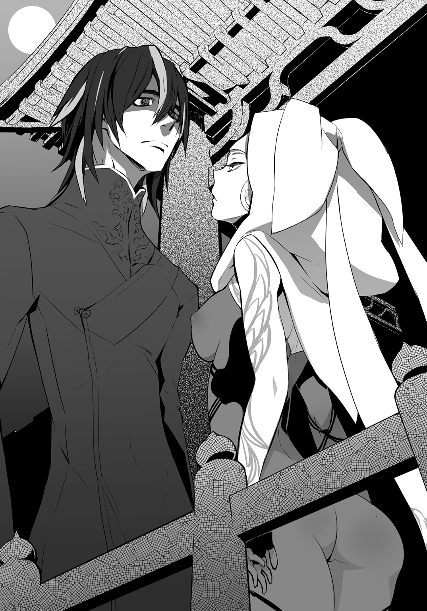
「......これでいいか」
「その口ぶりは生意気すぎるぞ」
「......そうですか」
「まあ、そのくらいにしておけ」
主人はほんの少しだけ目許をゆるめた。
乱れた長い黒髪が不人の脳裏をよぎった。それから、幼いころの主人の顔。ちょっとした表情。後ろ姿。ひざまずいて見上げたときの顎の細さ。主人が唇に白い顔料を塗るときの手つき。不人は主人のすべてを記憶している。
亞璃簾宮家の先代当主に拾われて奴隷となり、とりたてられて、亞璃簾宮太華子に仕えるようになった。
帝国では、皇帝家の血族である十四の宮家に生まれた者であっても、国家に貢献しなければ最下級の臣民でしかない。主人は軍人になることを選んだ。不人も当然、主人に従って軍に入った。これからも不人は主人から離れないだろう。
この命、果てるまで。
もし主人に捨てられたら、不人の命には価値がない。そのときは自ら死ぬまでだ。
「......亞璃簾様。公国が攻めてきます」
「ああ。わかっている」
主人はかすかに目を瞠った。
銀色の瞳に異様な燦めきが灯る。
その瞬間を、不人はことのほか愛していた。
「私に情報をよこせ、咎埜。全情報だ。策を練ろう。戦いだ」
２ すれ違うことさえ LONG WRONG DISTANCE
ハイジ・バランの日々は飛ぶように過ぎてゆく。姫のことを――いや、姫のことにかぎらず、何かを考える暇がない。考えなくてすむように、あえて忙しく動きまわっているのだ。
ファウラス城市攻略作戦には第一連隊の他、第四連隊、第五連隊、第七連隊が参加し、第二、第三、第六、第八連隊は残留する。第八公軍の戦闘要員総勢二万名余の約半数が、ルヴァラ廃地を越えて戦いに赴くということだ。これに輸送や医療などに携わる非戦闘員が加わるので、一万三千名を超える。大部隊だ。
ハイジは第一連隊の副官エミール・ブリュレ大尉の下につく恰好に一応なっている。従って、第一連隊約二千五百名がつつがなく廃地を通り抜けてファウラス城市に到着し、戦闘を行って無事、イエルヴァラに戻ってくることができるように手配するのが仕事だ。
まあ、正確には、無数と言ってもいいほどたくさんあるそうした手配の手伝いをするのがハイジの役目、ということになる。
これがけっこうおもしろい。
想定し、計画を立てて、検討し、やるべきことをリストアップして、チェックする。
たとえるならそれは、山あり谷ありのでこぼこ道を平らにして、きれいな道に仕上げるような作業だ。地図と人員と物資の名と数字を見比べて、小さな穴を探す。穴を見つけたら一つ一つ埋める。そうして皆で一致団結して道を切り開いてゆく。
ただ、現在、誰が何をしていて、どこまでの道ができているのか、実質的な統括者であるブリュレ大尉以外は把握していないようだ。他の士官はいちいちブリュレ大尉に訊かないと全体を見通せないので、連絡の行き違い、作業の重複といったトラブルがしばしば起きた。
やはり関係者全員が随時、進捗状況を確認できたほうがいい。そのために、公立学校で使っている黒板と白墨を用いてはどうかと、ハイジはおそるおそる――本当にこわごわと、叱責どころか処罰されることを覚悟したうえで、ブリュレ大尉に具申した。
大尉はあっさりハイジの意見を容れた。
「よかろう。黒板及び白墨の調達も貴官に任せる。やってみろ」
「は、はい！ ありがとうございます！」
イエルヴァラくらい大きな街なら、私学の一つや二つは絶対にある。黒板と白墨自体、どこかの私学で使われていたものを採用したという話を、いつだったか耳にした。
案の定、とある私学の倉庫に古い黒板があったので、譲り受けたそれを荷車に載せて連隊司令部に運びこんだ。白墨は裕福な子供が石畳に落書きするのにも使うくらいだから、いくらでも手に入る。ハイジは黒板におおまかな行動計画と表をいくつか描いて、何がどう進んでいるのか一目でわかるようにした。
士官たちはさすがに聡明だ。少しすると皆、黒板を独自に活用するようになって、表が改良され、仕事が劇的に捗るようになった。
「よお、少尉」
いろいろな筆跡でさまざまなことが書きこまれている黒板を感無量で眺めていたら、ダンドリュー大佐に小突かれた。
「おまえさん、妙なことを考えるな。軍人より公吏のほうが向いてるんじゃないのか」
「......そうかもしれないです」
「よかったんだものな、学校の成績」
「べ、勉強くらいしか、やることがなかっただけなので......」
「何だ、そりゃ。落ちこぼれだった俺に対する嫌味か？」
「えっ。お、落ちこぼれで、いらしたんですか......？」
「講義はだいたい寝てたからな」
ダンドリュー大佐は無精髭がこびりついている顎を撫でた。
「講義がないときは、女と寝てたが」
「......ね、寝てばかり――で、いらっしゃったんですね......」
「いや、そこじゃねえだろ」
「はい？」
「突っこみどころだ」
「......突っこみ？ も、申し訳ありません、ちょっと、僕、いえ、自分ごときの頭の程度では、理解しがたく......」
「救えねえな」
ダンドリュー大佐は額を押さえてため息をついた。さっきから気付いていたが、どうも顔色が悪い。
ハイジは上目遣いでダンドリュー大佐を見た。
「あ、あの、大佐」
「何だ」
「お水をお持ちしましょうか」
「ああ？」
「ひょっとして、二日酔いでいらっしゃるのではないかと......」
「そのとおりだけどな。無駄に気が利くのもどうかと思うぞ。俺は司令じゃないから、自分の面倒くらい自分で見られる」
「も、申し訳ありません！ 以後、気をつけます......」
「バラン少尉」
いきなり鋭い声で名を呼ばれて、振り向くとブリュレ大尉が書類の束を抱えて早足で近づいてきた。ハイジは大慌てで敬礼をした。
「は、はい！ 何でありましょうか！」
「連隊長につきあっている暇があったら、仕事をしろ」
ブリュレ大尉はハイジに書類を押しつけると、ダンドリュー大佐を睨みつけた。
「大佐。連隊司令部にお越しになるのでしたら、酔いを覚ましてからにしてください。示しがつきません」
「もう酔ってはねえし、誰も俺に模範になって欲しいとか思ってやしねえよ、エミール」
「私は常に、大佐には模範を示していただきたいと考えています」
「おまえだけだろ」
「ついでに、ご自分でなすべきことはご自身でなしていただきたい」
「何のためにおまえがいるんだ？」
「大佐を補佐するのが副官である私の任務です」
「ようするに、俺の代わりに七面倒なことをぜんぶ片づけるのがおまえの役目だろ」
「違います」
「うそぉん」
「噓ではありません」
「堅いなあ、エミール。そんなんだから、女にもてねえんだぞ」
「問題ありません。私には婚約者がいますから」
「そういやあ、そうだったな」
ダンドリュー大佐は肩をすくめて、髪の毛を引っかきまわした。
「まあ、おまえさんの婚約者がどんな女かは知らないが、愛想を尽かされたくなけりゃあ、もうちょっと柔軟性ってのを身につけたほうがいい」
「お、お言葉ですが！」
ハイジはつい黙っていられなくなって、口を挟んでしまった。
「ブリュレ大尉は、僕ごときの献言を受け容れてくださいました！ 柔軟性を欠いた方には、そのようなことはできないのではないでしょうか――って、ああ、ぼ、僕はなんてことを......す、すみません、申し訳ありませんでした、どんな身の程知らずなんだ......馬鹿だ、僕は、どうしようもない馬鹿だ......穴があったら入りたい......いっそ、埋めてもらいたい......」
ハイジが頭を抱えていると、ブリュレ大尉が落ちつきはらった声で言った。
「埋めますか？」
「いや、まあ、今のところはやめとけ」
ダンドリュー大佐はハイジの肩を抱いて、にやにやした。
「変なやつだよ、少尉。まったく、おまえさんは。嫌いじゃないがね」
「......えっ」
「あ？」
「いえ、あのっ......その、な、何でもありません」
「何だよ。気になるだろ。言え」
「......え......っと、で、では、あの――大佐は、性別にはこだわらない方なのですか？」
「はあ？」
「よ、よくは知らないのですが、そういうこと、というか、そういう主義というか、そういう事象というか......都会ではままあると、以前、小耳に挟んだので......」
「大佐は生粋の女好きでいらっしゃる」
ブリュレ大尉が冷たい声で断言したので、ハイジはなんとなく安心した。
「......そ、そうなん......ですね。あ、そういえばさっきも、女性と寝ていたとか......ね、ね、ね、寝る!? 女性と!? 学生時代に!? 寝て、何を!? どうやって......!?」
「......おまえさん、ほんと、変だぞ」
「そ、そうでしょうか!? ぐ、軍務に支障があるようでしたら直しますので、ど、どうか、ご指導ご鞭撻のほど、お願いいたします！」
「エミール。任せた」
「お断りです」
「だとさ」
ダンドリュー大佐はハイジの肩を叩いた。
「残念だったな。ま、自分でなんとかしろ」
なんとかする？ どうやって？ 何をどうすればいいのか？ さっぱりわからないが、そこもふくめてどうにかしないといけないのだろう。ハイジ・バランは新米とはいえ、もう立派な軍人だ。飛び級なんかしてしまったのでまだ十七歳だが、それでも大人なのだ。
「......精進します！」
「うん。そうだな。励めよ、青少年。あぁ、そうだ」
ダンドリュー大佐は顎をじょりじょりとこすった。癖なのかもしれない。
「どうやら、いよいよお出ましらしいぞ。七六旅団。――ナズナルリス・デスティニアリス少将、か。太守閣下の妹御はどんな御方なんだかな。当然、まだお若くていらっしゃるから、俺にとっては対象外のガキなんだろうが」
×
『――僕は強い！ 僕は姫の侍官だ！ 姫のために、僕は強くなれる！ 僕は絶対に、死んだりしない......！』
ぱっ――と、目が覚めた。
この寝台には、半分垂れ下がってはいるものの、天蓋が付いている。
サクラはその天蓋を見るともなく見ていた。
心臓がどきどきしていて、痛いほどだ。
夢を見たのだろうか。でも、あれは実際にあったことだ。それとも、サクラがそう思っているだけで、本当は違うのかもしれない。あんなことはなかったのかも。
あってもなくても、同じことではある。
少尉はもういない。
サクラのそばには。
「......何が、わたしの侍官......」
でも、少尉が配置換えされてしまったのは、サクラのせいなのだ。サクラが兄の前で従順なふりさえしていれば、こんなことにはならなかった。いや、そうだろうか？ たとえサクラがどう振る舞おうと、兄は結局、同じことをしたかもしれない。とにかく意地悪な男なのだ。意地悪。意地悪？ 誰に対して？ サクラへの？ 少尉を配置換えしたことが？ どうしてそれが意地悪になるのか。
ただの侍官だ。しかも、着任してから一月も経っていない。
――まあ、ただの侍官ではないか。魔性を持っているのだから。
とはいうものの、それだけだ。
「......べつに、どうだって......」
サクラは目をつぶって、両手を瞼の上に置いた。
ため息がこぼれた。
「どうでもいい。関係ない」
忘れよう。どのみち、侍官は単なる役職だ。少尉はたまたま侍官になった。そして、侍官ではなくなった。
また誰か新しい侍官が付くのだろうか。いらない、とサクラは思う。自分の身くらい自分で守れるし、誰かに見張られているのは気詰まりだし、うるさいけれど有能な侍女が一人と、まったく役立たずな侍女が一人いるし、侍官なんかいらない。そうだ、ピエールに言おう、と心に決めた。侍官はいらない、付けようとしても断乎拒否する、と。
サクラにとって、ハイジ・バラン少尉が最後の侍官だ。
「......っ」
なぜだかわからないが、顔が火照りだした。本当にわけがわからない。両手をぱたぱたと振って顔を扇いでいると、扉が開いた。ルルチナだろう。見なくてもわかる。
「サクラ様」
「何」
「そろそろご準備を」
「わかった」
サクラは起きあがって寝台から下りた。
ルルチナは眉をひそめて、まばたきをしている。サクラは首をひねった。
「何？」
「......いえ。めずらしいこともあるものだと」
「準備しなきゃいけないんでしょ」
「さようでございますが――」
「じゃ、する。それだけ。やるなら、早くして」
「かしこまりました」
ルルチナがお辞儀をした直後、扉がごーんと鳴った。誰かが扉の外側に体当たりをしたらしい。もちろん、そんなことをする者は一人しかいない。案の定だった。少しすると、眼鏡のずれたたぷたぷ肉の侍女が扉を開けて、おでこをさすりながら部屋に入ってきた。
「うぬー......」
ギチコの足許で、軍服とドレスの中間みたいな衣装の服がうごめいている。服がひとりでに移動している――わけもない。おそらく、ギチコが服を抱えてきたのだが、扉にぶつかった拍子に落として、それをチヌコが運んでいるのだろう。チヌコは小さいので、服を持ちあげることはできず、埋もれるような恰好で引きずっているのだ。
「......まったく」
ルルチナが服を拾いあげると、果たせるかな、その下にはチヌコがいた。
サクラはルルチナに手伝わせて服を着た。ルルチナは器用なので、サクラに一切ふれないで服を着せるくらいのことはやすやすとやってのける。途中、ギチコが手を出そうとしたら、ルルチナに一喝された。
「ギチコは余計なことをしないで、引っこんでいなさい。邪魔にしかなりません」
「......うぉ。了解した。です」
しょんぼりしているギチコを応援するような仕種をチヌコがした。
サクラはひび割れている姿見を一瞥して、一つ息をついた。こんなふうに身体を締めつける服を着ると、異様なまでに息苦しくなって、消えてしまいたくなる。いやでいやでたまらないが、今は、どうでもいい、という気持ちのほうが強い。
「正直――」
ルルチナが袖やら裾やら襟やらの具合を直しながら言った。
「おとなしく着ていただけるとは思っておりませんでした」
「そう」
「はい」
「こういうこともあるんじゃない。たまには」
「それだけならば、よいのですが」
「気が向いただけ」
「サクラさま」
ギチコはなぜか、部屋の隅っこにうずくまって、肩の上にチヌコをのせている。
「さみしい？ です？」
「は？」
サクラはギチコを睨みつけたが、すぐにやめた。睨むのも、疲れる。疲れることはしたくない。めんどくさい。
「ないから。寂しいとか。わけがわからないこと、言わないで」
「......ごめん。なさる。り？ い？ です......」
「ほんと、めんどくさいことばっかり......」
やってられない。
しかし、やらないわけにはいかないこともある。
立場上。
こんなふうに生まれついてしまったばかりに。
義務。
責任。
初めて立った戦場で、サクラは最初、どうしても足を踏みだすことができなかった。
帝国の機士たちが公国の兵に襲いかかっていた。
機士とはどういうものなのか。サクラも当然、知っていた。彼らは人間ではない。ある生き物を人間のように整形し、機骸と呼ばれる甲冑をまとわせたもの。それが機士だ。彼らにはいわゆる意思とか思考といったものはなく、操られて戦っている。それでは、帝国はどうやって彼らを操縦しているのか。まだくわしく解明されてはいない。わかっていたら、機士を止めることもできるはずだ。ただ、機士たちの中に、機士と同じ恰好をした人間が混じっていることは確認されている。その人間の兜には決まって笛のような楽器が仕込まれているので、機士がそれによって操縦されていることだけは間違いないだろう。
とにかく、機士たちは人間ではない。
人間ではない機士たちが人間に押しよせて、鈍剣やら杓剣やらでむちゃくちゃに斬りまくり、殴打する。機士たちの勢いを人間が止めるのは難しい。機士は痛みも、恐れも知らない、というか、一切感じないようだ。だから、進めと命じられれば、機士たちは闇雲に突き進む。あたりまえだが、人間の場合、そうはいかない。攻撃されれば怯むし、怪我をすれば下がりたくなる。普通の人間はそうだし、鍛え抜かれた歴戦の勇士でさえ、人間であることからは逃れられない。射られて、斬られ、突かれて、打たれれば、人間は死ぬ。誰だって死にたくはない。
サクラの前で、公国の兵たちは機士の軍団に押されまくって、潰走しかけていた。
そのうちサクラは兵たちの奔流にのみこまれそうになった。
立ちつくしているのはサクラ一人だった。
兵たちは踵を返して必死に駆けるか、機士に斬り殺されるか、突き殺されるか、撲殺されるか、踏みにじられるか、機士に攻めたてられて逃げることもできないか、あるいは、仲間を逃がすために機士を足止めしようと懸命に戦っていた。一部の士官は兵たちを押し止めようと声を張りあげていたが、まるで効果がなかった。
そして、機士の一団がとうとうサクラに迫ってきた。
明らかな敗勢の中、兵たちが奮いたったのはそのときだった。
――公女殿下を守れ......！
――殿下を死なせてはならん......！
――公女殿下を......！
――公女殿下をお守りしろ......！
――固まれ......！
――公女殿下の御前に......！
兵たちがサクラの前に身を投げだすように列をなして、機士の一団を防ごうとしたのだ。
もっとも、そんなことをしたところで防げるものではなかった。彼らの多くは傷ついていたし、人数も決して多くはなかった。慈悲を知らない機士たちは、無慈悲に兵たちを殺戮した。サクラの目と鼻の先で兵が殺された。サクラは兵たちの血飛沫を浴びて、血や臓物の匂いを嗅いだ。しかし、サクラの肌や髪に彼らの血がふれることはなかった。
――だめ......！
サクラは絶叫した。自分が何者か。やっと思いだしたのだ。ようやく躰が前に進んだ。
――だめ！ 死なないで......！ わたしのためなんかに、死んじゃだめ......！
剣の振り方や格闘術の基本くらいはサクラも学んでいたが、あのときは何も考えられなかった。ただ突進することしかできなかった。
それで充分だった。
ただ敵にぶち当たってゆけばいい。歯を食いしばって痛みに耐えればいい。気が遠のいたら、自分で自分を殴ってでも意識を引き戻せばいい。サクラは傷つかない。ただ痛いだけだ。兵たちのように死ぬわけじゃない。平気だ。
サクラが機士の一団を粉砕すると、味方が態勢を立てなおしはじめた。兵たちはサクラのそばで戦おうとしたが、許さなかった。サクラはあえて味方から離れて敵を追った。自分だけでいい、と思った。戦うのは自分一人でいい。
だって、サクラは死なないのだ。
それなのに、何もできなかった。サクラの前で多くの兵が死んだ。敵に殺された。
ドリアン公の娘として生まれ、魔性を持っているサクラが、最初から恐れずに先陣を切って敵に突撃していれば、死なずにすんだ者が大勢いる。
サクラは役目を果たさなかった。だから、兵たちが死んだ。
戦いが終わっても、兵たちは死につづけた。重い傷を負い、母の名を、父を、妻の名を、恋人を、息子の、娘の名を呼びながら、命を失うときをただ待つことしかできない兵を、サクラは何人も見た。
――公女殿下をお守りしろ......！
そう叫んでサクラの前に飛びだしてきた兵も、その中にはいた。
サクラはせめて、彼を抱きしめてやりたかった。独りで死なせたくはない。自分の腕の中で死なせてやりたかったが、それもできなかった。サクラの魔性がそれを許さない。このおぞましい魔性は末期の彼を余計に苦しめるだろう。そんなことはできない。
――デスティニア公国、万歳......。公女殿下に、幸いあれ......。
彼はそう言い残して息を引きとった。
サクラは泣かなかった。泣くことなどできるはずもなかった。サクラが正しく義務を果たしていれば、彼は死ななかっただろう。サクラが彼を死なせた。
彼を殺したのはサクラなのだ。
「サクラ様。準備が整いました」
ルルチナが一礼した。
サクラは軽くうなずいて、部屋をあとにした。本殿を出ると、ピエール・アルトレッド中将とリオネル・カーター大佐、それから十数名の参謀に迎えられた。
「......姫」
ピエールは目を瞠って、咳きこんだ。サクラは眉をひそめた。
「何？」
「いえ......太守公衣をお召しになっている姿を拝見するのは、これで二度目なものですから」
「着たのはたぶん、三回目。行くんでしょ」
「はい。参りましょう」
ピエールは歩きはじめてすぐ、ふらついて、カーター大佐に支えられた。主郭の外に馬車が停まっていた。サクラとピエール、カーター大佐が馬車に乗りこんだ。
ルルチナとギチコに見送られて、馬車は進んだ。参謀たちは別の馬車でついてきた。
馬車はイエルヴァラ南門から出て間もなく停車した。
降りると、南門から200メトルほど先に即席の軍営ができあがっていた。即席といっても、妙にけばけばしい、立派といえば立派な軍門を構えて、塀の代わりに車両が隙間なくずらっと並んでいる。兵もしっかり配置されているし、今、敵襲を受けても防戦できそうだ。
軍門の前には、きらびやかな軍装を身にまとった男たちが、捧げ銃の姿勢でずらりと並んでいる。
どの男も背が高い。筋骨逞しいのに、すらりとして見える。手足が長く、頭が小さい。顔も整っている。選りすぐりの見目形がいい男たちが、首や胸に〝Ｘ〟の徽章をつけて、それを誇らしげに見せびらかしているといった様子だ。
その中から一人、金髪を七三分けにしている男が碧眼を輝かせて進みでてきた。
「アンドリュー・パルマー少佐であります」
敬礼してパルマーと名乗った少佐はきれいに日焼けしている。笑みを浮かべてのぞかせた歯がやたらと、異様なほど白い。
「サクラスティアリス・デスティニアリス太守閣下並びに、ピエール・アルトレッド第八公軍司令閣下、第八公軍幕僚長リオネル・カーター大佐でいらっしゃいますね。我らが光輝ある七六旅団、ナズナルリス・デスティニアリス旅団長の許へと案内させていただきます。さあ、こちらへどうぞ」
「ああ......」
ピエールが何か言おうとしたが、サクラは黙って足を進めた。
パルマーはなぜだか笑みを深めて、サクラたちを軍営の中へと導き入れた。気味の悪い男だ。おそらく妹の趣味なのだろうが、サクラには理解できない。したくもない。
軍営の中は、殺気立っているとは言わないまでも、いつでも臨戦態勢に移行できそうだった。サクラたちのあとをついてくる〝Ｘ〟の男たちのようにきらきらした兵は一人もいない。どの兵も、軍人というより戦争屋といった物々しい雰囲気だ。
公国軍の旅団は公軍より小さな編制単位で、運用も異なる。公軍はある城市や城塞を拠点とし、必要に応じて移動するが、旅団は戦場から戦場へと渡り歩いて戦闘を繰りかえす。まさしく旅団なのだ。
七六旅団本部は曲芸団を思わせるような馬鹿馬鹿しく派手な天幕で、やっぱり――と、サクラは思った。妹は趣味が悪い。
天幕に入ると、中もひどかった。天鵞絨やら毛足の長い絨毯やらが掛けられたり敷かれたりしていて、飾り棚があり、化粧台があって、色とりどりのクッションだのぬいぐるみだのがあちこちに置いてある。貴族趣味と少女趣味が入り交じっていて、わけがわからない。
「あら、馬鹿姉様」
妹は玉座のような豪奢な椅子の上で脚を組んで、サクラたちを見下ろしている。
まだ十三歳。
サクラより背は低いはずだが、椅子に座っているのに、なぜだか頭の位置が高い。見れば、座面がやたらと高いうえ、さらに椅子の下に台が設置されている。
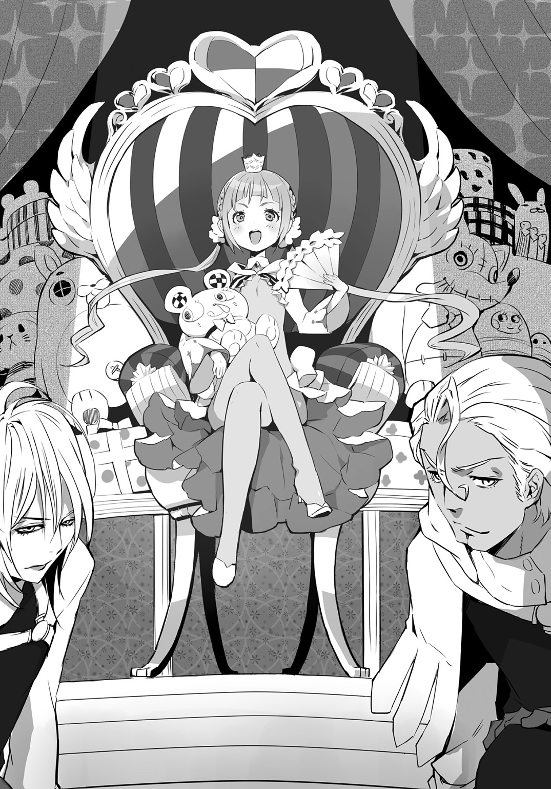
「きたのね。太守なのに、わざわざナズナに会いに出向いてくるなんてちょっとだけ感心だけれど、歓迎なんかしてあげないのよ。だって、ナズナは馬鹿姉様の間抜け面なんて見たくもないのですもの」
「それは、奇遇」
サクラはため息をついた。
「わたしもあなたの顔なんか見たくなかった」
「そうでしょうとも」
妹は銀色の髪を指で払い、黄緑色の瞳に憎悪の炎を宿らせて微笑んだ。
「ナズナの前に出れば、誰でもこの圧倒的な美貌と、ずば抜けた才知に打ちのめされずにはいられない。格の違いというものを思い知らされて、劣等感の泥沼に沈むことになるのよ。馬鹿姉様の気持ちはよくわかるわ」
「ああそう」
「っ！」
妹は立ちあがりかけて座りなおし、腕組みをした。
「......まあ、いいわ。馬鹿姉様が図に乗っていられるのも今のうちなのよ」
「わたしはべつに、図に乗ってない」
「馬鹿姉様が平気な顔をして普通に息をしているだけで、図に乗っていることになるの。知らなかった？」
「ええ」
「それじゃ、覚えておくことね！」
「めんどくさいから、いや」
「っ！」
「......ま、まあまあ」
ピエールが疲れきったような笑顔で姉妹の間に割って入った。
「喧嘩をされるほど仲がよすぎるというのも、けっこうなことではありますが......」
「誰が」
とサクラはピエールを横目で睨んだ。
「誰がっ」
と妹もピエールをねめつけた。
姉妹は一瞬、目を見あわせてから、同時に、
「ふん......」
「ふんっ！」
とそっぽを向いた。
カーター大佐が、ん、んんっ、と咳払いをした。
「ナズナ様」
パルマー少佐が胸に手をあててお辞儀をした。
「申し遅れましたが、不肖、わたくしアンドリュー・パルマーが、サクラスティアリス・デスティニアリス太守閣下並びに、ピエール・アルトレッド第八公軍司令閣下、第八公軍幕僚長リオネル・カーター大佐をお連れいたしました。どうかお褒めの言葉を賜りたく」
「大儀だったわ」
妹は投げ捨てるようにぞんざいに言ったのに、パルマー少佐は突然、片膝をついて天を仰ぎ、目をつぶった。
涙ぐんでいる。
というか、泣いている。
「ああ......！ ありがとうございます、ナズナ様......！ 私は！ 私は......！ 果報者でございます！ ナズナ様にお褒めいただけるとは......！」
「せいぜい今後もナズナに尽くすことね」
「もちろんでございます、ナズナ様！ この身も心も、ナズナ様のものです......！」
「そんなあたりまえのことしか言えないから、いつまでたってもおまえはだめなんだわ。このクズ！」
「クズ！ いただきました......！ ナズナ様に罵声を浴びせていただき、このアンドリュー・パルマー、無上の幸せでございます！」
「勝手に幸せになるなんて、いい気なものね」
「申し訳ありません！ このクズが！ クズが！ クズが！ クズがすべて悪いのです！」
パルマー少佐は四つん這いになって、絨毯に顔をこすりつけている。
サクラはピエール、カーター大佐と視線を交わした。ピエールもカーター大佐も啞然としているようだ。サクラも呆気にとられていた。
「......何なの、この人」
「見てのとおりのクズ野郎なのよ」
ナズナはどういうわけか得意げだ。
「親衛隊〝Ｘ〟の隊長を任せてやっているの」
「〝Ｘ〟......」
そのままではないか。
――と思ったが、サクラは口に出さなかった。
あまりにも馬鹿馬鹿しくて。
そもそも、何をしにこんなところへきたのだったか。
「ピエール」
「......は」
「わたし、帰ってもいい？」
「いえ、それは......」
「ほーら」
妹が肘掛けに頰杖をついて喜色をあらわにした。
「さっすが馬鹿姉様。始まったわ。太守として、公軍大将としての責務をほっぽり出して『わたし、帰ってもいい？』ですって。信じられない。おまえもそう思うでしょう、パルマー」
「はい、ナズナ様！ まったくもってそのとおりです！」
「帰る」
サクラが踵を返すと、カーター大佐が行く手に立ちふさがった。
「太守閣下、ここはどうか......」
糞真面目なカーター大佐が相手だと、サクラもわがままを通しづらい。我慢しようかと思ったら、妹がケタケタ笑った。
「帰ればいいじゃないの！ こらえ性のない馬鹿姉様！ 役目を果たすこともできないのなら、このナズナが代わってあげるから、今すぐ太守なんか辞めなさい！」
「ぜっっっっっっっっっっっ..............................................................................――」
サクラは上目遣いで妹を見た。
「たい、辞めない」
「このわからずや！ おたんこなす！ ぱっぱらぱーっ！ 馬鹿姉様なんか、太陽に焼かれてこんがり馬鹿姉様焼きになってしまえばいいのよ！」
「ナズナなんか、池に落ちてナマズに舐められればいい」
「きゃぁっ!? なんておぞましいことを思いつくのかしら!? 我が姉とは思えないわ！ やっぱり馬鹿姉様は、川の上流からどんぶらこと流れてきた拾われ子なのね！」
「本当にそうだったら、どんなにいいか」
「そうね！ 同感だわ！ 今からでも遅くないのよ！ 川に飛びこんで上流からどんぶらこと流れてきたらどうかしら！ 馬鹿姉様なんか、誰も拾ったりしないけれど！」
「わたしは泳ぎが得意だから、問題ない」
「まあ！ ナズナが泳げないと知ったうえでそんなことを言うのね！ 意地悪な馬鹿姉様！ 人柄も人格も人品も何もかも最低だわ！ もう許さない......！」
「......あのう」
ピエールが呟いた。
「いつになったら話を進められるんでしょうか......」
「そこにいるナズナに」
とサクラが言うと、妹が、
「そこにいる馬鹿姉様に」
と言った。
「訊けば？」
「訊けばいいのよ！」
なぜこういうところだけ息があってしまうのか。腹立たしいことこの上ない。
「ふん」
「ふんっ！」
姉妹は同時に顔をそむけた。
カーター大佐が咳払いをして、少し肩を落とした。
「......まだしばらくはかかりそうですな」
×
だしぬけに喇叭が鳴りはじめて、ハイジ・バランはびくっと跳びあがった。
いや、だしぬけなんかじゃない。
七六旅団がイエルヴァラ城市に到着して、四日。もう四日も経ったのだ。
バエル大王38年四月二十九日。すでに第八公軍の第一、第四、第五、第七連隊は城市北に列をなして進発の準備を整えているし、七六旅団も軍営を解いて第四、第五連隊の間に隊列を組んでいる。この状況、まぎれもない現実を目の当たりにしても、なんだか信じられない。
あっという間だった......。
第一連隊連隊長付伝習士官として精一杯、頭を巡らせ、身体を動かしていたら、いつの間にか出陣の日になっていた。それがハイジの偽らざる実感だった。
連隊のど真ん中で働いていると、思った以上に外のことが見えない。なので、他の連隊のことはよくわからないし、七六旅団のことはもちろん、第八公軍全体の動きもいまいち把握できていない。――いいのか、これで？
いいのだ、と思うしかない。
ハイジが考えるべきなのは、第一連隊が滞りなくファウラス城市までたどりつくことで、いざ戦闘が始まったら、第一連隊がよく戦うこと、勝利することだ。そのために全身全霊を捧げる。それが今のハイジに与えられた任務なのだ。
出発を命じる喇叭の音に合わせて、先発の第四連隊が行軍を開始している。
これに、イエルヴァラ太守にしてファウラス遠征軍の総大将であるサクラスティアリス・デスティニアリス大将が率いる第五連隊、七六旅団、第一連隊とつづき、第七連隊がしんがりを務める。
ピエール・アルトレッド司令とリオネル・カーター大佐は城市に残留。第八公軍の幕僚団は三分の一が七六旅団の幕僚団に合流するものの、実質的には七六旅団の幕僚団が遠征軍を統率することになるだろう。ゆえに、遠征軍副将ナズナルリス・デスティニアリス少将の権限は、総大将を凌駕しかねないほど大きい。この編制は、上からのお達しによるものらしい。
戦闘要員の総勢は二万一千余名。各隊後尾と第七連隊の中に、輜重支援隊が加わる。非戦闘要員は約四千名。一方、ファウラス城市は約二万人の機士に守られているという。
――姫はどうしているだろう。
不意にそんなことを考えてしまい、ハイジはきつく目をつぶって頭を振った。
くわしいことは知らないが、ルルチナとギチコも今回の遠征には随行するらしいと聞いた。あの二人がいれば、姫はきっと大丈夫だ。
なんでも、姫がどの連隊を率いるか――というよりも、どの連隊が姫を直接掩護するかについては、議論があったようだ。
第一連隊が姫を直掩する案もあった。
しかし、副将直々の反対に遭って、結局、第五連隊ということになったらしい。
第一連隊は第八公軍の誇る精鋭機動部隊なので、魔性を武器にした単独行動を旨とする総大将を支援するよりも、別行動をとってその突破力を活かされたし、というのが副将の意見であり、強力な要請で、誰もそれには逆らえなかったとか。そもそも、反論を唱える者は一人もいなかったとか。なんとか。
ハイジは小耳に挟んだだけなので、そのあたりの事情はよくわからない。
とにかく、姫のそばで戦うことはできないということだ。
まあ、ハイジは伝習士官という名の雑用係で、伝令やら何やらをこなしながら、連隊指揮を見て覚えるのが仕事だ。剣を抜いて敵陣に突っこむような立場では、そもそもなかったりするはずだったりもするのだが。
姫のことは、もう忘れよう。
任務に集中しよう。
姫の顔を思い浮かべるのはやめよう。
第一連隊のことだけ考えよう。
「......姫」
はっとして、激しく頭を振った。
「何を......何を呟いてるんだ、僕は......」
「姫、と言ったね。今」
「はいっ!?」
誰かに聞かれていたとは思わなかったし、突っこまれるとはもっと思わなかった。
見れば、騎乗した士官が徒歩のハイジを見下ろして薄く笑っている。
騎乗といっても、ダンドリュー大佐麾下の第一中隊、通称ダンドリュー中隊の兵たちのように馬に乗っているのではない。
黒犬鹿。
その名のとおり、被毛が黒い巨大な犬のような、それでいて鹿っぽくもあるような動物だ。ルヴァラ廃地や険しい山地などにそういう生き物が棲息していることはハイジも知っていたし、鹿よりも人に慣れやすいという話も聞いたことがあった。しかし、まさか騎乗用に調教できるとは思いもよらなかったので、初めて目にしたときはかなり驚いた。
とはいえ、黒犬鹿に乗っている者は十人もいないだろう。
彼女はそのうちの一人だ。
――いや？
彼女、でいいのか？
顔は知っている。口をきいたことはない。
そもそも、駐屯地の第一連隊陣営ではめったに見かけなかった。
編制上は第一連隊第十三中隊、彼女がその中隊長ということになっている。
だが、これもまた奇妙だ。
なぜなら、第一連隊には大隊が三個あり、各大隊は四個中隊で構成されている。
つまり、第一連隊には本来、十二個中隊しかない。
第十三中隊は宙に浮いているのだ。
「......シリル・グレカ少佐」
ハイジはおずおずと彼女の名を呼んだ。――いや、だけどおかしいって。
姫のような特殊な例をのぞけば、公国軍に女性の軍人はいないはずだ。公立学校でも、軍人課程に女生徒は皆無だった。
でも、褐色の肌にきらめく瞳、色の薄い金髪、妖艶という言葉が浮かんでくる彼女の容貌は、女性のそれとしか思えない。
「ん？」
グレカ少佐は首を傾げた。
「何？ どうかした？」
「......え、と......あの、以前、軍議でお見かけした......ような......」
「ああ、きみが侍官だったとき？」
「うっ......」
ハイジは胸を押さえた。思いだしてしまったのだ。ハイジ・バランは姫の侍官だった。そんなこともありました。今となっては遠い昔の出来事のようです。うわああああああああああ。
ともあれ、グレカ少佐の言うとおりだ。姫の付き添いのような形で軍議に出た際、たしかにグレカ少佐の顔を見た覚えがある。なぜ女性が、と思いはしたが、グレカ少佐は発言しなかったし、ハイジはがちがちに緊張していた。出席者の話を一言一句聞き漏らしてはならないと意気ごんでもいた。そんなわけで、深く考える余裕がなかったのだが、不思議といえばそうとう不思議だ。
「どうしたの？ 心臓でも悪いの？」
「......い、いえ。そんなことは」
「ああ、事情を知らなきゃ変な感じ？ 我輩の第十三中隊は独立部隊だからね」
「わ、我輩？」
「冗談よ？」
「で、ですよねえ」
「おいどんは」
「お、おいどんっ!?」
「だから、冗談だって。我が第十三中隊は、秘中の秘なのよ。第八公軍のね」
「......そ、そうなんですか!?」
「や、秘中の秘ってほどじゃないけど。中秘密くらい？」
「......ちゅ、中秘密......初めて聞きました。その表現」
「何せ、それがしも初めて使ったしね」
「えええぇぇぇぇぇぇぇぇ......ていうか、それがしって......」
「何だっていいじゃない。そんなの。とりあえず、独立部隊だっていうのは噓じゃないから。あと、あたしは大隊長なのよね。本当は」
「は......はいぃぃ？」
「大隊から一個中隊分抜いて連れてきたのが、第十三中隊なわけ」
「んんんん......」
「そのうちわかるよ、ハイジくん」
「......そ、そうでしょうか」
「わからなかったら、きみは馬鹿だよ。自分で首を絞めながら舌でも嚙んで死んだほうがいいと思う。それで、姫って太守閣下のこと？」
「はい......えっ!? いや、あの、それはその......」
「グレカ少佐」
エミール・ブリュレ大尉が馬上で苦虫を嚙み潰したような顔をしている。
「子供をからかうのは、そのくらいにしておいていただきたい」
「了解、ブリュレくん」
グレカ少佐はにやにやしながらブリュレ大尉に敬礼してみせた。
「......子供って......」
ハイジはうなだれてため息をついた。所詮、ブリュレ大尉から見れば、子供でしかないのか。子供なんかじゃないと言い張りたいところだが、我知らず、姫......とか呟いてしまっているようでは大人とは言えないかもしれない。
「さぁーてと」
ダンドリュー大佐が顎をごしごしこすった。
第一連隊に行軍する番が回ってきたのだ。
「行くか」
ダンドリュー大佐がゆったりと右手を挙げた。
第一連隊が先頭から順次、進発してゆく。
向かうはルヴァラ廃地。
目標のファウラス城市はその先にある。
×
――虫の居所が悪い。
自覚はあるし、原因らしきものにも心当たりがある。
妹だ。
ナズナルリス・デスティニアリス。
本当に小さいころから生意気で、姉であるサクラよりも自分のほうがあらゆる面で上なのだと証明したがる、うざったくて、邪魔くさくて、やかましい、厄介な妹だった。
ドリアン公には息子が三人、娘が五人いるが、ナズナは五女で、末っ子だ。
ナズナと四女であるサクラとの間に三男のマカダミアンがいる。ナズナはこのマカダミアンとはやけに仲がいい。というか、マカダミアンはナズナをいい気にさせて操るのがやたらとうまいのだ。
マカダミアンはサクラにとって年の近い弟で、見た目はじつにかわいらしいと思ったこともないわけではないが、あれは油断も隙もない。恐ろしいというか、気味の悪い弟だ。ナズナはそんなマカデミアンにすっかり騙されて籠絡されている。馬鹿な妹だ。
馬鹿だから、ナズナは事あるごとにサクラに突っかかってくる。
まあ、ナズナにしてみれば、長兄のフリージアンは十四歳、次兄のデュランタリアンでも、ナズナより十歳も年上だ。姉も、サクラの上、ドリアン公の三女アマリリスが十九歳だから、少し離れている。本当に迷惑な話だが、三つ違いのサクラは、ナズナにとってちょうど標的にしやすいのかもしれない。
なまじサクラが最年少で公国軍大将になり、また、最年少で太守に就任してしまったりしたのもよくなかった。ナズナはたぶん、最年少記録の更新を狙っている。
勝手に更新すればいい、とサクラは思っているのだが、ナズナはそう考えていないだろう。
ナズナにとって、サクラは好敵手なのだ。ナズナにとってそうなら、サクラにとってもそうに違いない、そうでなければいけない、というのがあの妹の思考形態だ。ようするに、ものすごく自己中心的なのだ。
サクラとしては、放っておいて欲しい。最年少記録を更新したいならさっさと更新して、優越感に浸っていればいい。
妹には一切、関わりたくない。近よらないで欲しい。一応、妹なので、消えて欲しい、とまでは思わない――ようにしているが、どこか遠くで幸せに暮らして欲しい。できれば二度と会いたくない。
顔を見たくない。声も聞きたくない。
やっぱり、消えてくれないかな、と思ったりもする。
そんな妹がのこのこと姿を現して、よりにもよって共同作戦をすることになったのだ。
これで機嫌がよかったら、軽く頭がおかしい。
「......サクラさま」
ギチコがおそるおそるといったふうにサクラの顔をのぞきこんできた。
行軍二日目。
ファウラス遠征軍はルヴァラ廃地の中で暗くなる前に野営の準備を整え、明日は夜明けとともに出発する。
総大将のサクラには、侍女二人とともに眠れる大きめの天幕が用意されていた。
ただし、将兵の大半は野宿することになる。
何しろここはルヴァラ廃地。開けた場所がほとんどない。大軍が通り抜けられる道が一つだけあるといっても、獣道に毛も生えていないような道とも呼べない道だ。天幕を張るどころか、身体をまっすぐにして寝られるだけの空間を確保するのも容易ではない。
天幕などいらないとサクラは言ったのだが、男だらけの中、女三人だったりもするし、なかなかそうもいかないようだ。
ちなみに、ナズナは樹木から樹木へと布を張り渡して、馬鹿でかい天幕を展開している。
総大将本営と称された天幕の前に、携帯用の竈やら折り畳める椅子やら台やら何やらを広げて、そこで夕食をとっているサクラにも、ナズナのド派手な天幕が見える。
「あれはだいぶ頭がおかしい......」
「ほぅわ？ サクラさま、何か言うました？ か......？」
ギチコはサクラの真ん前にしゃがんで、首を七十度くらい傾けている。ついでに身体も傾いでいて、そろそろ倒れそうだ。
ギチコは両腕で胸を抱くようにしている。
抱くというか、持ちあげている。かなり重そうだ。サクラはたまに思う。
実際、重いのだろうか？
「わたしは、何も言ってない」
「おう......」
ギチコはずれていた眼鏡の位置を直した。その拍子に胸があふれるようにこぼれて、身体がもっと傾いだ。
「......くなぁっ」
転びそうになったギチコを間一髪、人形のチヌコが支えた。でも、ギチコは胸のせいだけではなくて、なかなか重量がありそうだ。チヌコはそうとうがんばらないとギチコに潰されてしまうだろう。
「何してやがるんだ、このグズ子」
ルルチナがさっと片手でギチコを引っぱって体勢を立てなおさせ、サクラの前にうやうやしく椀をさしだした。
「どうぞ、サクラ様。食欲がおありでなくても、これくらいは召しあがってください」
「食欲がないなんて、一言も言ってない」
サクラは椀を引ったくった。椀の中身は肉団子入りの野菜スープだ。サクラの食事はルルチナが用意した食材をルルチナが調理して、ギチコが毒味をすることになっている。何度も毒殺されかけたので、用心するしかない。
サクラは匙でスープをすくって飲んだ。――まあ。
ルルチナの味つけは嫌いじゃない。どちらかと言えば薄味だが、こくがあって、温度とは別のあたたかみがある。
元暗殺者が、どこでこんなにやさしくて深い味わいの料理を覚えたのだろう。
不思議ではあるが、尋ねたりはしない。
「......どうでもいい」
「何がです？」
すかさずルルチナに訊かれたが、サクラは答えないで黙々と匙を動かした。
最初にその気配を察知したのはルルチナだった。
ルルチナは身構えかけてやめ、丁寧に腰を折って礼をした。
「グレカ少佐」
「や」
シリル・グレカは驚くほど近くに現れ、片手をあげてみせた。
もちろん足音を消し、息を殺して、こっそりと忍び寄ってきたのだろう。それにしても、剣が届きそうなほどの距離までルルチナが接近を許すというのは、ただごとではない。
サクラは匙と椀を台に置いた。
「何か用」
「ええ、まあ」
グレカは髪をかきあげて、ルルチナが素早くサクラの斜め右に出した椅子に腰を下ろした。
「総大将閣下のお耳に入れておきたいことがありまして」
「聞くから、言って」
「あら？」
「何？」
「いえ。めずらしいこともあるものだと――」
グレカはちらちらっとルルチナとギチコに視線を投げた。ギチコは、ぽやーっとしているが、ルルチナは慎み深く無視している。グレカはわずかに肩をすくめた。
「では、話します」
「そうして」
「意外にも、敵は諜報戦を挑んできています」
「どういうこと？」
「これまで、我が第八公軍諜報大隊はやりたい放題でした。ファウラスにも多数の隊員が出入りして、新鮮な情報を直接もぎとってきていたことは、閣下もご存じのとおりです」
「なんとなくは、わかってる」
「帝国は諜報やら工作活動やらをまだるっこしいと思っているみたいですからね。そんなことをする暇があったら、機士を送りこむ。それが連中のやり口です。――あたしはそう思っていたんですが」
「何があったの」
「ファウラスに入っていた者たちが戻ってこないんです。一人も」
「......つまり」
サクラは唇の端をそっと嚙んだ。
「その人たちは、無事じゃないってこと？」
「残念ながら、そう考えるしかありませんね」
「どうして」
「あたしたちは敵を舐めていた、ということになります。あたしの責任ですから、閣下にも部下にも謝らないといけません」
「わたしには、謝らなくていい」
「そうですか」
「それより、説明して」
「敵にも諜報員的な人員がいて、部下は監視されていたんでしょう。いつでも対処できるように。あたしたちはそれに気づかなかった。油断です。帝国が隠そうとする情報は、機士に関するものだけでしたからね。あとは何を探られようと、好きにしろと言わんばかりだった」
「あなたの部下が......対処、されたということは、敵の動きがわからないの？」
「増派して、情報網を再構築しようとしています。完了するまでは、ええ、そのとおりです。まったくとは言いませんが、わからない。我々は現在、近眼になったようなものです」
「逆に」
ルルチナが口を挟んだ。
「敵は我々の動きをつかんでいると見るべきでしょうね」
「もちろん」
グレカは皮肉っぽく笑った。
「そう考えるべきね。――これからダンドリュー大佐に報告します。副将には大佐から伝わる形になるでしょう。今のあたしはあくまで、大佐の下についていることになっていますから」
「それこそ、まだるっこしい」
サクラがため息をつくと、グレカは椅子から立ちあがった。
「まあ、中将にもいろいろとお考えがあるんですよ。あれで腹黒い御方ですからね。閣下はご興味ないでしょうが、今回の作戦自体、副将が懸命に働きかけて実現したものらしいですし、いいようにやられるわけにはいかないんでしょう」
「本当に、興味ない」
「わかっております」
グレカは敬礼をした。
「これまでどおり、ご了承だけいただければ、こっちはこっちで勝手にやりますよ」
「そうして」
「はい」
「グレカ」
「何でしょう」
「あなたも、き――」
サクラは口にしかけた言葉をのみこんで、うつむいた。
「......なんでもない」
「どうかご心配なく、閣下」
「し、しんぱいなんかっ」
「これでもあたし、用心深いんですよ？」
グレカは踵を返した。
「姫のお心を煩わせるなと、司令にはきつく言い含められておりますから」
「今度、ピエールに言っておいて。おためごかしはやめてって」
「了解です、姫」
グレカの後ろ姿はまたたく間に木々の向こうの闇に紛れて見えなくなった。
サクラは台の上の椀に目を落とした。もう冷めているだろう。
「あたためなおしましょうか」
ルルチナにそう言われると、どうしてか反発したくなった。サクラは首を横に振って椀を手にとった。
「いい」
「ですが」
「いいって言ってるでしょ」
スープは案の定、ずいぶんぬるくなっていた。
何もかもが腹立たしい。
妹の派手な天幕に目をやって、ふたたびため息をついた。
ナズナだ。他に理由なんかない。ぜんぶ、ナズナのせいだ。
そうに決まっている。
×
「気に食わねえな......」
ダンドリュー大佐が廃地の暗闇を睨みつけながら水筒を呷った。
大佐の周りには常に副官のエミール・ブリュレ大尉以下、連隊司令部を形成する士官がいて、これをダンドリュー中隊の騎兵が囲んでいる。
もちろん、ハイジ・バランの居場所も基本的にはダンドリュー大佐の近くだ。何か命じられなければ、大佐とブリュレ大尉の様子をうかがう以外にやることがない。
しばらく前にシリル・グレカ少佐がダンドリュー大佐のもとにやってきて、何やら話しこんでいた。そのあと、ダンドリュー大佐がブリュレ大尉を連れてどこかへ行ったときは、命令があったので従った。
待機しろ。
それがダンドリュー大佐がハイジたちに与えた命令だった。待機と言われたら、一日でも十日でもじっとしている。それが軍人というものだ。
もっとも、二人は程なく戻ってきた。副将のところに行ってきたようで、ブリュレ大尉から簡単な状況説明があった。
遠征軍に情報をもたらしていた経路が現在、遮断されている状態であること。
従って、ファウラス城市の動静が不明であること。
ルヴァラ廃地には多数の哨戒櫓、哨戒壕が配置されている。ただし、イエルヴァラから離れるごとに、その分布の密度が低下する。つまり、哨戒網に隙間が、穴ができて、敵をつかみきれなくなるということだ。遠征軍がイエルヴァラを発ってから二日。この地点でもすでに哨戒網がだいぶ粗くなっている。小部隊なら、哨戒櫓、哨戒壕を避けることは充分可能だと考えるべきだろう。すなわち、敵の襲撃を厳に警戒しなければならない。
もともと弛緩していたわけではないが、緊迫の度合いが一気に増した。ダンドリュー大佐がいつになくぴりぴりしているので、これは本物だと皆、考えているようだ。この戦は一筋縄ではいかない。よりいっそう気を引きしめてかかる必要がある。
そうはいっても、ハイジに何かできることがあるわけでもない。
遠征軍は夜営をしているわけで、歩哨はちゃんと立てられている。基本的には、起床の号令がかかるまで寝ているしかない。さっさと寝るべきなのだが眠れないので、ハイジはこうやってワイバーンを抱き、毛布にくるまって横になったまま、焚き火のそばに片膝を立てて座っているダンドリュー大佐とブリュレ大尉を眺めている。
「気に食わねえ」
ダンドリュー大佐はまた水筒に口をつけた。
「それはそうでしょうとも」
ブリュレ大尉が、ふん、と鼻を鳴らした。
「この情勢では、水筒の中身を酒に換えておくわけにもいかないでしょうからね」
「あ？ エミールおまえ、この中に水が入ってるとでも思ってんのか？」
「大佐の水筒は先だって確認しておきましたが」
「馬鹿野郎。おまえの手の内なんざ、お見通しなんだよ。囮くらい用意しとくに決まってんだろうが」
「強がりはみっともないですよ」
「なんで俺がおまえなんぞ相手に強がらなきゃならねえんだ」
「では、貸してください」
ブリュレ大尉は無表情で手を出した。
「その水筒。あらためさせていただきます」
「やだね。そんなこと言って、没収するつもりだろ」
「酒だった場合は当然、没収です」
「とられるとわかってて渡す馬鹿がどこにいるんだよ」
「そうではなく、水なんでしょう」
「水じゃねえ。酒だ」
「証明してください」
「そんな義理はねえ」
「水ですね」
「酒だ」
「いいえ、水です」
「酒だっつってんだろうが」
「水ですね。間違いありません」
「完全に酒だ。あーうめえ。マジうますぎ。うひっ。ちっと酔ってきたかな？」
「それくらいで酔うような玉ですか」
「時と場合によるんだよ。いい女と飲んでるときとかな。あと、こういう場所では酔いやすいんだ。エミール、おまえは飲めねえからわからんのさ」
「私は飲めないのではなく、飲まないだけです」
「酒乱だからな、おまえは。酔っ払ったときのおまえときたら......」
「黙れ」
「おい、上官に向かって黙れとは何だ、黙れとは」
「聞き違えではありませんか。そんなこと、私は言っておりませんが」
「いいや、聞こえたね。ばっちり聞こえた。おまえはたしかに黙れと言った！」
「言っていません。頭の具合がよろしくないのでは？」
――何なんだ、あの二人......。
ハイジはちょっとだけ呆れたが、きっと仲がいいのだろうとも思った。友だちのいないハイジにはよくわからない。でもおそらく、親しい間柄だと、くだらない口喧嘩というか、言いあいを装ったじゃれあいというか、そういったやりとりをしたりもするのではないか。
ハイジには一生縁がなさそうだ。
少し寂しい。
まあ、少しだけ、だ。
ないものねだりはみっともないし、虚しい。友だちができないのなら、そのぶん他のものを得ればいいのだ。他のもの、か。何だろう、他のものって？ たとえば......富、とか？ 名声とか？ 友情が無理なら――愛情、とか？
「......愛......」
呟いたら、顔が熱くなった。何が――何が愛、だ。恥ずかしい。だいたい、友だちもできない人間に、恋人ができるだろうか？ ハイジだって、一人も友だちがいない人間なんか、とても信用できない。友だちがいないなんて、何か大きな、致命的な欠陥があるに違いないのだ。そんな欠陥人間を、誰が大切に思うだろう？ そんな人間に恋心を抱く者がいるだろうか？
「......いるはず、ない」
身体に力が入らなくなった。
これはつらい。自分で出しておいてなんだが、ハイジにとって厳しすぎる結論だ。
なぜだか、姫の顔が浮かんだ。
――が、すぐに消えてしまった。
いっそのこと、自死......するべきか。否。
否、否。
断じて、否だ。
世を儚んでいる場合ではない。ハイジ・バランは公国の安寧を守る軍人なのだ。死ぬのなら、せめて公国の敵を道連れにするべきだろう。
ハイジはワイバーンを抱く腕に力をこめた。力が入る。よし。大丈夫だ。
周りの士官たちはよく眠っているらしい。ダンドリュー大佐とブリュレ大尉は水筒を奪いあっている。
「いやだめだ返せエミール、こら、それは俺の」
「返しません。もともと私物ではないでしょう、この水筒は公国軍の――」
ブリュレ大尉は水筒の栓を開けようとした。その手が止まった。
ダンドリュー大佐が周囲を見まわした。
ハイジは跳び起きて、ワイバーンの柄に手をかけた。
ダンドリュー大佐がハイジを見てニヤッと笑った。
「早起きだな、少尉」
「い、いえ......」
からかわれたのか？ 皮肉？ 冗談？ 軽口？ ハイジにはよくわからない。
でも、何か聞こえたのだ。
「あっちですね」
ブリュレ大尉が、ファウラス遠征軍の進行方向を零時とすると、五時の方向に目をやった。その直後だった。
「敵襲......！」「敵だ！」「敵襲！」「敵襲......！」
何人もが大声で叫んでいる。すぐに喇叭と太鼓が鳴りはじめて、ブリュレ大尉が近くの士官を叩き起こした。
「総員迎撃！ 急げ！」
「おい、少尉！」
ダンドリュー大佐が顎をしゃくってみせた。
「早起きは銅貨一枚の得ってやつだ！ 総大将閣下のところにひとっ走り行って、第一連隊は敵奇襲に対して迎撃態勢をとるって伝えてこい！」
「はっ！ 伝令、行ってまいります！」
ハイジは駆けだしてすぐ、急停止して振り返った。
「ええええぇぇぇ!? ひ、ひ、ひ、姫のところに、ですか......!? いいいいいいんですか!?」
「俺は命令したぞ、早く行け！」
「りょりょりょりょりょりょりょりょ了解しました......！」
ありがとうございますありがとうございます本当に心の底からありがとうございます、感謝感激ですありがとうございます、ローラン・ダンドリュー大佐はすばらしい上官ですどこまでもついていきます、ありがとうございます、泣いてもいいですか、ありがとうございます！
ハイジはどうしても弾んでしまう足どりで第五連隊の夜営場所めがけて疾駆した。もちろん、喜んでいる場合ではない。それはわかっている。いや、わかっているのか？ どうなのだろう。わかっていないのかもしれない。それどころではないのだ。だって、姫に会える！ 姫に会えてしまう！ 信じられない！ 姫！ 姫！ 姫！ 姫だ！ 姫に会える！ 噓みたいだ！
身体が軽い。ハイジは魔性持ちだ。〝君は僕の黒い太陽〟。近くに魔性を持った者がいればいるほど、その魔性が強力であれば強力であるほど、ハイジは強くなる。まるで魔性が発動しているかのように、あるいは羽でも生えたように、すいすいぐんぐんと進むことができる。無理もない。何せ、姫に会えるのだから！ 伝令だから、顔を見るだけじゃない、言葉を交わすこともできる！ いくら姫でも、わかった、くらいは言ってくれるだろう。わかった！ ああ、聞きたい！ わかった！ 姫の、わかった！ 見たい！ うなずく姫が見たい！
姫に会いたい！
――ところが、好事魔多し。
なんということでしょう。
小隊と小隊の間を駆け抜けようとしたら、そこに機士の一団がどわわっと襲いかかってきたのだ。
「げえええええぇぇぇぇぇ......!?」
今まさに迎撃態勢をとろうとしていた二個小隊は、見る間に押しこまれた。土色の機士たちと公国軍の兵士が入り乱れる。
「がっ......」
ハイジのすぐそばで、一人の士官が乙機士の鈍剣を剣で受け損ねて倒された。ハイジより年上。たぶん二十歳かそこらだ。少尉。小隊長か。まずい。やられる。
「放っては――」
ハイジはワイバーンを抜き放って乙機士の右腕を斬り飛ばした。
「おけない......！ そりゃそうだよ！ ええい......！」
さらに詰め寄って、左腕を叩き斬る。蹴倒して、首を搔き斬った。
「少尉！ 大丈夫ですか......!?」
「ああ......！」
返事はあったが、かすれ声だ。負傷しているのか。やばい。
やばい。やばい。やばい。
何人かはわからないが、兵が何人も倒れ伏している。
「――敵、きてるし......！」
別の乙機士がハイジを狙って鈍剣を振りおろそうとしていた。食らったら当然、ただではすまないが、機士の動きは人間より単調だから読みやすい。
「つぁっ......！」
ハイジは下がらず、踏みこんだ。紙一重で鈍剣をかわしざま、ワイバーンを乙機士の喉元にぶちこむ。乱戦になっているときは、下手に後退したり左右に動いたりすると、敵に囲まれてしまいかねない。むしろ、突っこむべきだ。そうはいっても――、
「簡単には......！」
わかっていても、誰だって敵に向かってゆくのは怖い。ハイジはたまたま並外れた斬れ味を誇る宝剣ワイバーンを持っていて、機士たちの機骸をたやすく斬ったり貫いたりできる。そのおかげで、思いきって攻撃に出られるのだ。皆が皆、そういうわけにはいかない。
「ぬああああ！ らああああああぁぁぁぁ......！」
ハイジは、尻餅をついている兵に群がろうとしていた乙機士を二人、斬り伏せた。三人目の乙機士には少し、手こずった。
任務はどうする......？
ダンドリュー大佐の命令だ。果たさなければならない。どんなときでも任務を優先するべきだ。それはわかっている。
「だけど、死んじゃうじゃないか......！」
助けられる命が目の前にあるのだ。迷っていてどっちつかずだと剣先が鈍り、救える命も救えない。
「おおおお......！」「こっちだ......！」
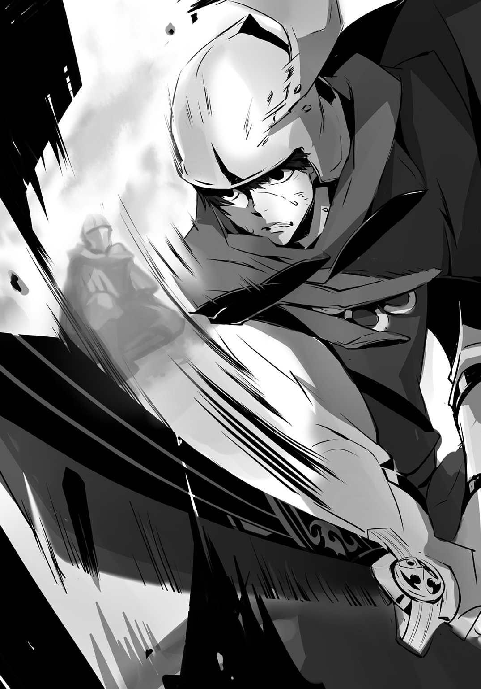
二人の兵が三人目の乙機士に突進した。乙機士がそっちに気をとられて、ハイジへの警戒が薄れると、身体が勝手に動いた。
ワイバーンが閃いて、三人目の首を刎ね飛ばす。
「助かった！」
兵の一人がハイジに向かって言った。
ハイジがうなずいてみせると、その兵はまばたきをした。
「――え？ あんた、若っ......士官？」
「まだです！」
ハイジは向かってきた乙機士の脇をすり抜けつつ、ワイバーンを舞わせた。乙機士の右手首が斬り落とされて、鈍剣も吹っ飛んだ。
任務は忘れる。少しの間だ。この二個小隊が態勢を立てなおしたら、姫のもとへと向かう。猛速度で急行する。ちょっと寄り道をするだけだ。
「押し返しましょ――う......？」
ハイジは我が目を疑った。
機士たちが退いてゆく。
なんで？
敵の夜襲で遠征軍は混乱に陥りかけていた。もう一押し、二押しされたら、壊乱する小隊もあっただろう。それなのに、どうしてこんなにあっさり後退するのか？
「追うな......！ 追ってはならん......！」
「深追いするな......！」
「現状！ 現状を維持せよ......！」
「負傷者を確認しつつ、現地点に留まれ......！」
間もなく、あちこちでそんな声があがりはじめた。一伝習士官の身で僭越だが、正しい判断だとハイジも思った。ただでさえ廃地の地形は複雑だ。暗いとさらに危険だし、それに――、
「敵が、薄い......」
転がっている機士の死体は、ハイジが斬った四人分だけだ。逃げてゆく機士の数も決して多くはなかった。第二波、第三波がなかったのは、おそらく最初から準備されていなかったからだろう。さっと襲って、さっと下がる。それが敵の目的だった。
何のために、そんなことを......？
ハイジは頭を振った。今、ハイジが考えるようなことではない。
「それより、任務を......」
ダンドリュー大佐はハイジにこう命じた。総大将閣下のところへひとっ走り行って、第一連隊は敵奇襲に対して迎撃態勢をとる旨を伝えよ、と。でも、その敵奇襲は終わった。少なくとも、一息ついた。今さらこんなことを姫に伝えて、いったい何になるだろう？
「......意味、ないですよ......ね......」
泣けてきた。
３ 悲しき陰謀 SAD PLOT
鉄製の腕輪を嵌められて鎖に繫がれ、ファウラス主郭の中庭に引きだされてきた公国人は十二人。中には負傷者もふくまれているが、手当ては受けていない。仲間を大勢失い、そのうえ囚われの身となっているのだ。篝火に照らされた彼らの顔は一様に汚れ、疲れている。
臣十三位を示す緑色の衛服を着た門馬末麿が合図すると、錆色の衛服に身を包んだ臣二十位の帝国兵士たちが、槍で脅して十二人の公国人をひざまずかせた。
周囲には土色の機士たちも配置されている。
門馬が、禁衣をまとって頭冠を被った亞璃簾宮太華子――咎埜不人の主人に向きなおり、腕組みをして額を押さえる敬礼をした。
「連れて参りました」
「ご苦労」
主人は左手を軽く挙げた。主人が口早に何かを言ったときは、その白い顔料を塗った唇が微動だにしていないように見える。もちろん、実際は動いているのだが、それくらい表情をまったく変えずに、不人の主人は喋ることができるのだ。
「さて」
主人は硝子玉のような銀色の瞳で公国人たちを見まわして、抑揚の少ない帝国の人語ではなく、カバラの言葉で言った。
「諸君が知っているかどうかはわからないが、帝国は原則として捕虜をとらない。よって、当然のことながら、諸君は捕虜ではない。帝国には下位の奴隷と、人位を持つ人民、臣位を有する臣民とがいる。諸君はそのいずれでもない。何でもない、ということだ」
「......貴官は、何者だ」
一人の公国人が射るような、それでいて探るような眼差しを不人の主人に注いでいる。あの公国人はいくらか身分が高そうだ。
主人は問いを無視した。
「諸君に機会を与える。帝国に忠誠を誓い、また、この私に剣を捧げるのであれば、臣民として遇することを約束しよう」
門馬が横目で主人を一瞥した。門馬の尖らせてある口髭が微かに震えたのを不人は見逃さなかった。
公国人たちはざわめき、互いに目を見交わしている。
「何でもない諸君が、臣民となる」
不人の主人は、表情だけではない、手も足も、必要がなければ動かさない。
「これがどれほど異例なことか、諸君には想像もつくまい。咎埜、説明してやれ」
「......はい」
不人もカバラの言葉を習得している。もはや不人は背を丸めることはない。自分より位階が下の門馬を呼ぶ際、様をつけたりもしない。
「......公国人。たとえば貴様らが恭順の意を表して帝国に下れば、人十二位を与えられ、最下級の人民となる。しかし、貴様らが抗戦の末に敗れ、占領団の管理下に置かれた場合は、下七位の奴隷として扱われるのが通常だ。臣民となるには、絶対の皇帝、我らが主上にお許しいただかねばならない。主上と帝国に身も心も捧げ、終生尽力するのが臣民の責務だ。なお、奴隷が十万人いれば、その中から臣民に取り立てられるのは一人か二人だとされている。人民であっても、千人に一人しか臣民になることはできない」
「ようするに！」
先ほどの公国人が唾を飛ばして叫んだ。
「寝返れということだろう！ 祖国を裏切れ、そうすれば命を助けてやるとそそのかしている、そういうことだろう！」
不人は主人を見た。主人がうなずいたので、不人はふたたび口を開いた。
「......そのとおりだ、公国人。しかし、ただ生かすのではない。帝国に尽くす道を与えてやる。見返りは大きい。貴様らは幸運だ。この機会を活かさずに死にたいのなら、死ねばいい。貴様らは何でもない。臣民や人民に所有されている奴隷ですらない。貴様らには本来、虫ほどの価値もない。それなのに、機会が与えられた。貴様らはとても運がいい」
「愚弄するな！」
「......いいや、愚弄してなどいない」
「無駄なことだぞ！ 俺たちは栄えあるデスティニア公国の軍人だ！ 野蛮な帝国などに降ったりするものか！ さっさと殺せ！」
「......わかった」
不人は進みでて太刀を抜き放ち、公国人の首を刎ねた。主人にはたまにこの馬鹿力めと罵られる。
公国人の首が地面に落ちて、身体は倒れた。
他の公国人たちは顔を青ざめさせて、口をつぐんでいる。
「......貴様らはどうする。この男と同じように死ぬか。それとも、臣民となっておれの主人に仕えるか。どちらでもいい。皆殺しにするのも、たいした手間ではない。ただ......貴様らは公国の間諜だ。おれの主人は、その技量と経験を買っている。安くない命なら、高く売っておくに越したことはないと、おれは思うが」
×
最初の夜襲は行軍二日目、四月三十日の日付が変わる直前で、二度目は五月二日の午前二時ごろだった。三度目の夜襲は一日おいて、五月四日の午前零時半。
敵はファウラス遠征軍の全部隊を攻撃してくるわけではない。一度目は先頭の第四連隊と第一連隊が襲われた。二度目は第一連隊と第七連隊で、三度目は第四連隊と第七連隊。それぞれ、少数ではあるが、死傷者が出た。
「まぁ」
ローラン・ダンドリュー大佐は愛馬を巧みに操りながら、髭がのびた顎を手でこすった。
「猫パンチみたいなもんだよな。死人も出てるから、猫パンチにしちゃあちょっと強烈すぎるか。だが、俺たちゃ腐っても軍隊様だ。この程度でびくつきゃしねえ」
「腐っているのは大佐だけでしょう」
副官のエミール・ブリュレ大尉の手綱捌きも堂に入っている。
「揺らぎはしなくとも、疲弊はします」
「それがやつらの狙いだと思うかあ？」
「思いませんね」
「だよな」
遠征軍は八日目の行軍計画を順調に進めている。
ハイジ・バランも伝習士官とはいえ、第一連隊連隊長付士官の端くれなので、地面をのたうつ太い蔦のような草だの枯れ枝だのひどい凹凸だので歩きづらい悪路を踏みしめながら、一応、考えを巡らせている。
敵はいったい、何を目論んでいるのか？
「――知っているかい」
だしぬけに聞き覚えのある声が降ってきて、ハイジは仰天した。
「え......」
ハイジのちょうど頭上だ。
見上げると、動物を模した面をつけている男が、巨樹の枝に腰かけて脚を組んでいた。
何人かの騎兵が銃を構えたが、ダンドリュー大佐が制した。
「待て待て待て。――これはこれは、なんとまあ......軍特使どのじゃないですか」
「いや、今のぼくは軍特使じゃないよ」
デュランタリアン・デスティニアリス。
魔性を見極められ、何だかんだと説明してもらったあとはもう、ハイジは駐屯地に移ったので、それきり一度も会っていない。会いたいと思ったこともないし、正直、二度と会いたくなかった。
――この人のせいで。
引き裂かれた、という言い方は大袈裟かもしれない。でも、デュランが配置換えを提案しなければ、ハイジは今も姫の侍官でいられただろう。
知らず知らずのうちに、ハイジの手がワイバーンの柄にのびかけていた。いやいやいや。いくらなんでも、殺気立ちすぎだ。相手は軍人としては少将だし、何より姫の兄君なのだ。公家の御方だ。主筋なのだ。
「ふふっ」
デュランはハイジの思いを見抜いているかのように笑って、枝から飛び降りた。けっこうな高さなのにデュランは膝を沈ませて軽々と着地してのけ、すっくと立った――と思ったら、しゃがみこんでしまった。
「......痛い。ちょっと高かったね。足が、痺れている......」
「だ、大丈夫ですか？ 殿下......」
つい声をかけてしまった。
「ああ、なんとかね」
デュランは今度こそ立ちあがった。
「しかし、殿下、か。ぼくは一介の旅人のつもりなんだけどな。それに、デュランでいいときみには言ったはずだよ、ハイジくん」
「一介の旅人ということでしたら、捨て置くわけにはいきませんが」
ブリュレ大尉が平然とそんなことを言ったもので、ハイジはとっさに、いいぞ、やれ、やってしまってください、と心の中で応援してしまった。
デュランは悠然と構えている。
「好きにするといいが、ぼくの邪魔だけはしないことだよ。ぼくは昔から、ぼくの邪魔をする者だけは絶対に許せないんだ。とりわけ旅人のぼくは、自由でいたい。この自由を手に入れるために、ぼくは相応の犠牲を払い、努力もしているのでね。大切なんだ」
「――んで？」
ダンドリュー大佐は剣の鞘を撫でながらにやにやした。
「その旅人どのが、なんでまたこんなところに？」
「気が向いたからだよ、大佐」
デュランは両腕を広げてみせた。
「仕事が終わったのでね。何をしようとぼくの自由だ。それで、見物させてもらおうと思ってね。ファウラス占領団の総監は宮家の女の子らしい。知っていたかい？」
「ほぉ」
ダンドリュー大佐は目を細めた。
「旅人どのは、どこでそれを？」
「風だよ、大佐。風に聞いたんだ。彼女、なかなかの傑物らしいよ。是非会ってみたいね」
「これから戦争するんでなければたしかに、お目にかかってみたいですなあ」
「だろう？ 大佐、きみとは馬が合いそうだと、前々から思っていたよ」
「光栄の至りです」
「サクラもきみのことは気に入っているだろうね」
「そいつはどうでしょうか」
「いや、きっと気に入っているよ。あれのことはよくわかるんだ。本当に、よくわかる。手にとるように。兄妹だからね」
デュランは面で隠した顔をハイジのほうに向けた。
「あれの好みなど、ぼくにはお見通しなのさ。単純で、愚鈍で、つまらない子だ。公家の娘でなければ、誰も見向きもしないだろう。価値があるのは、あれに流れている血だけだ」
「少尉」
ブリュレ大尉に低く押し殺したような声で呼びかけられてから、ハイジは気づいた。
いつの間にか、ワイバーンを抜こうとしていた。
膝を曲げ、腰を落として、いつでも、今すぐにでも飛びだせる。
デュランタリアン・デスティニアリスを斬り殺してしまえる。
「――はぁっ......！」
強く息を吐きながら、ワイバーンの柄から手を放した。なんてことだ。ハイジは今、デュランに斬りかかろうとしていた。デュランは魔性を持っている。ハイジの魔性は自動的に発動するだろう。ハイジは強くなる。もし、抜いてしまっていたら――たぶん、誰もハイジを止められない。ダンドリュー大佐も、ブリュレ大尉も、他の士官や、騎兵たちも。最悪、ハイジはデュランを殺してしまっていたかもしれない。そこまでいかなくても、怪我くらいはさせていただろう。そうしていたら、どうなっていた？
一介の旅人だからお咎めなし、というわけにはいくまい。何のかの言って、ドリアン公の次男なのだ。少なくとも、厳罰に処されていただろう。死罪になっていたかもしれない。
まさか、デュランはそれを狙っていたのか？
わざと姫を侮辱して、ハイジを逆上させ、抜かせようとした......？
何なんだ、この人......？
「ぼくはあれを、よく知っている。何から何まで、ね」
デュランは喉を鳴らして笑いながら、ハイジに背を向けて歩きだした。
「今のぼくは旅人。ゆるりと旅をしがてら、とくと見物させてもらうよ。戦争は、自分がするのでなければいいものだ。とてもおもしろい見世物だからね。ああ、でも――」
と、足を止めて首を巡らせた。
「間に合わないかな？ 今回は巻きこまれてしまいそうだ」
「――エミール！」
ダンドリュー大佐が銃を構えた。
ブリュレ大尉はうなずきもせずに腕を振りあげた。
「総員迎撃態勢！ 別命あるまで、不用意に動くな......！」
ハイジはワイバーンを抜いた。声がする。喚声。どこだ？ 喇叭と太鼓が鳴りはじめた。しんがりの第七連隊の方向か。いや、そっちだけじゃない。
風を切るような音が聞こえた。そして、何か薄っぺらいものを斬るような、貫くような音。
「矢......！」
ハイジは見上げた。生い茂る樹木が遮蔽物になるので、廃地は射撃には不向きだ。だから、数は多くないが、矢だ。飛んでくる。
そこかしこの地面に数本の矢が突き刺さった。騎兵の馬が一頭、暴れだした。矢を受けたのか。矢はまだ降りそそぐ。
「小勢か......？」
ダンドリュー大佐は銃を下ろした。
「まだわかりませんね」
ブリュレ大尉は落ちつきはらって上下左右に視線を巡らせている。第一連隊の楽兵は喇叭と太鼓を同時に鳴らしているが、遠くでは喇叭が攻撃の曲を吹き鳴らしはじめた。第七連隊は打って出るのか。ダンドリュー大佐は動かないようだ。
矢は間もなく止んだ。
「斥候！」
ブリュレ大尉がハイジに目をとめた。
「バラン少尉、百七班を率いて探ってこい」
「はっ！」
ハイジはワイバーンを持ったまま弾かれたように敬礼した。百七班は連隊司令部付予備小隊第七班の通称で、ボル伍長以下五名だ。ワイバーンを鞘に納めると、ただちにボル伍長たちが駆けよってきた。予備小隊は熟練兵の集まりで、彼らと比べればハイジなんて子供同然というか、年齢的に父親でもおかしくないような者もいる。とくに最年長の下士官、ボル伍長は四十歳近い。貫禄があって、じつに堂々とした、威厳さえ感じる髭面だ。
「お、お、お願いします！」
「......はい、少尉。こちらこそ」
「で、で、で、では、行きましょう！」
ハイジは矢が飛んできた方向めがけて走った。しかし、行軍経路をそれると、走るどころか歩くこともままならない道なき道だ。捜索、索敵は困難をきわめて、敵影はもちろん、敵がいた痕跡すら発見できなかった。
第七連隊も追撃を停止したようだ。
「少尉、こいつは無理です。戻りましょうや」
粘りたい気持ちもあったが、ボル伍長の進言に従うのが妥当だと判断せざるをえなかった。
引きかえす途中、勇気を振りしぼって歴戦のボル伍長に訊いてみた。
「あの、敵の狙いは何だと、伍長は思われますか......？」
「私ごときにわかるようなら、士官の方々は苦労しておらんだろうと愚考しますがね」
「......すみません。ぼ、僕――いえ、自分、あ、ええと、小官のような青二才と違い、伍長は戦場の経験が豊富だと思いますので、何か......その、感じとっておられることも、あるのではないかと」
「僭越ながら、でんと構えておられたほうがよろしいんじゃないですか。お若いとはいえ、少尉は私らの上官でいらっしゃる」
「......は、はい。も、申し訳ないです......」
「ですからねえ......」
伍長は眉根を上げて頰髭をごしごしとこすった。
「まあ、いいです。とりあえず、私には、今回の敵はよくわからんということしかわかりませんな。妙な敵ですよ。やる気があるんですかね」
「......やる気」
「敵味方双方、たいした被害は出とらんでしょう。こんなのは戦いじゃない。まるで遊びじゃないですか」
「遊び、ですか」
「いやいや、私の言うことなんぞ、真に受けんでくださいよ。そうはいっても、戦いは戦いなんだ。機士は人間じゃありませんし、そもそも敵さんの感覚は、私らのそれとはだいぶ違うのかもしれませんが」
「感覚が。......そうか。そうですよね。それは、そうだ......」
ハイジは目を凝らして、数十メトル先もよく見えない廃地の向こうを見つめた。
たしかに、機士は人間ではない。
でも、機士を操っているのは人間のはずだ。
仮に機士が帝国軍にとって替えのきく道具にすぎなくても、戯れで使い捨てにすることはないだろう。何をするにしても、必ず目的がある。
今回の敵はよくわからん、と伍長は言った。
ダンドリュー大佐やブリュレ大尉も同じような印象を受けているみたいだ。
――ひょっとして、それが敵の狙いなんじゃ......？
×
その夜、ダンドリュー大佐は早々に寝てしまっていて、ブリュレ大尉は一人、焚き火を眺めていた。
「ブリュレ大尉」
ハイジは思いきってブリュレ大尉に近づいてゆき、声をかけてみた。
ブリュレ大尉はハイジを一瞥しただけで、何も言わない。
沈黙を破ったのは、焚き火のそばで横になっているダンドリュー大佐の寝言だった。
「......もういいって。そこまでで......それ以上は......」
ぐへへ、と笑いながら腹のあたりを搔くダンドリュー大佐がどんな夢を見ているのか、興味があるような、ないような。
ブリュレ大尉はため息をついた。
「何の用だ」
「あっ、あの......お、おうかがいしたいことが、ありまして」
「手短にすませろ」
「は、はい！」
「座れ」
ハイジは言われたとおり、ブリュレ大尉の隣に正座した。
「......そ、それでは、う、うかがわせていただきます」
「前置きは不要だ」
「も、申し訳ありません......あ、こ、こういうのもいりませんよね、ええと......では単刀直入に――た、大尉は、敵の動きについて、どのように思っていらっしゃいますか？」
「奇妙だな」
「......やはり、そう思わせるような動き方を、敵はあえてしていると、お考えですか？」
「ふむ」
ブリュレ大尉はかすかにうなずいて、焚き火を枝で軽く搔きまわした。
「そうとらえるべきだろう。諜報戦を仕掛けてくるような敵が、間抜けなわけがない」
「こちらに攻め手を読ませないため、でしょうか......？」
「単なる攪乱かもしれん。布石かもしれん。可能性はいくつもある。――であれば、我々はその可能性ごとの対処を準備しなければならない」
「つまり......少なくとも今のところ、敵はうまくやっている、ということでしょうか」
「我が軍の損害は軽微だ。作戦の目的を達成するのに支障を来すことはない」
「......考えすぎるな、と？ こちらにいろいろ考えさせるのが、敵の手なんでしょうか？」
「考えるのはいい。あらゆる状況を想定し、用意をする。それは必要だ。ただし、懸念しても、迷ってはならん。剣で――」
ブリュレ大尉は枝を焚き火の中心に突き立てた。
「刺し貫く場所だけは定めておけ。いかに視野を広く持とうとも、中心は決して動かさないことだ。我々はファウラスを陥落す。それが剣先の向かう先だ」
「剣先の......向かう先」
揺らめく炎の中に姫の顔がちらついて、ハイジはまばたきをした。いや、いや......そうじゃないよね？ 違うはずだ。ハイジ・バランはもう太守の侍官ではなくて、第一連隊連隊長付伝習士官なのだから。
「少尉」
ブリュレ大尉は枝をそのへんに放った。
「貴官の剣は別の方角を向いているようだな」
「えっ。そ、そ、そ、そ、そんなことはありま......せ......ううぅぅん......」
ハイジは頭を抱えた。忘れようとしているし、四六時中、姫のことを考えているわけでは決してないのだが、ふとした瞬間に思い浮かぶ。
「あ、あああぁぁぁそうだ、そ、そうです、ブリュレ大尉、気になることが一つありまして」
「言ってみろ」
「姫の第五連隊と、七六旅団のことです」
「姫？」
「うあああああああああぁぁぁぁぁぁど、ど、ど、ど、ど、どうか聞かなかったことに......」
「第五連隊と七六旅団がどうした」
「こ、攻撃を、受けていないな、と。第五連隊と七六旅団だけは。何というか、敵がすることと同じくらい、敵がしないことにも、意図があるんじゃないかと――」
「ん......」
と、ダンドリュー大佐が起きあがって、肩を回した。
「あぁ......？ 何やってんだ、少尉。エミールも。寝ろ、寝ろ。楽しい廃地の旅も、予定どおりならあと三日だ。そうすりゃもっと楽しい戦争だからな。今のうちに――って......」
喇叭と太鼓の音だ。今日は昼間に襲撃があったのでやや意外ではあったが、驚きはしなかった。でも、この方向は。
ハイジは膝立ちになった。
「七六旅団......!?」
「警戒だ！」
ブリュレ大尉が周りの士官たちに声をかけた。間もなく第一連隊の楽兵も喇叭と太鼓を鳴らしはじめた。
「やれやれ、だな」
ダンドリュー大佐は頭を搔きながら銃を引っつかんだ。
「尻を拭かねえのに何か理由でもあるのかと思いきや、順繰りにきやがる。痒いところに手が届く、うざったい敵だ」
尻を拭く拭かないにたとえるのはどうかと思うが、ダンドリュー大佐も敵が姫直掩の第五連隊と七六旅団を襲わないことに関心を持っていたらしい。いや、正しくは、襲わなかったこと、だ。敵は現在進行形で七六旅団に夜襲を仕掛けている。
第五連隊には姫がいて、七六旅団には姫の令妹であらせられる少将がいる。敵がファウラス遠征軍に関する情報を握っていれば、それくらいのことは知っているだろう。二人が魔性持ちだという事実も当然、わかっているはずだ。
そのへんの事情から、敵は第五連隊と七六旅団をあえて攻撃しないのではないか――とハイジは推察していたのだが、どうやら違うらしい。ハイジは奥歯を嚙みしめた。
「第五連隊――姫は......」
×
「サクラ様！ せめてガウンをお召しください！」
天幕から飛びだそうとしたらルルチナがガウンをさしだしてきたので、引っつかんで適当に羽織った。
毎晩のように夜襲があるので、我慢して一日中、あの堅苦しい太守公衣を着ていた。
でも、今日は昼間、奇襲を受けた。夜は何事もないだろう。そう思ってしまったらもう辛抱できなくなって、天幕に入ってすぐ太守公衣を脱ぎ捨ててしまった。
ところが、この様だ。
天幕の外では士官たちがあたふたしていた。第五連隊は今まで攻撃されなかったので、まさか、という驚きが彼らにもあるのだろう。
「総大将閣下！」
第五連隊の連隊長フォルクレ大佐が血相を変えて駆けよってくる。
「や、やが......！」
「は？」
サクラは振り仰いだ。――や？ 矢か。
本当だ。
矢が飛んでくる。
魔性のせいだろう。こういうとき、どうしてもめんどくささが先に立ってしまう。サクラはよけずに掌をかざして矢を受け止めた。といっても、受け止めたくても受け止められない呪われた身だ。矢はサクラの掌にふれる直前で弾かれて吹っ飛んだ。痛いことは痛いが、慣れている。これくらい、どうってことはない。それに――、
誰にも言ったことはないが、痛みを感じると、どこかで安心する自分がいる。
痛みは不快だし、もちろん痛い思いなんかしたくないのに、なぜ安心するのか。
サクラにもよくわからない。自分はどこかおかしいのかもしれない、とも思う。
普通の人間と比べれば、サクラは化物みたいなものなのだから、おかしくないわけがない、と思ったりもする。
「――総大将閣下！ ご無事で......!?」
フォルクレ大佐はダンドリュー大佐より年長で、戦歴も古く、ふだんは冷静沈着な軍人だが、ちょっと頭が固い。ちなみに、顔の作りが角張っていて、見るからに頑固そうでもある。
「わたしのことは知ってるでしょ。大丈夫。この程度で死んだりしない」
「はっ！ 現在、隣の七六旅団及び我が隊が攻撃を受けております！」
「見ればわかることを、言わないで。わたしが出る」
「はい！ いえ!? ですが......」
フォルクレ大佐を無視して、サクラは歩きだした。
「サクラ様......！」
呼ばれて振り返ると、ルルチナが武器の山を担いで追いかけてくる。その後ろには、人形の兵隊を引き連れたギチコもいる。
「片刃大長剣」
サクラがそう言って右手を出すと、ルルチナはすかさずサクラの背丈よりも長い片刃の大剣を投げてよこした。
サクラは片刃大長剣をつかみとるなり、駆けだした。
「総大将閣下......！」
「わたしのことは気にしないで、防戦して！」
フォルクレ大佐に向かって叫びながら、サクラはどんどん加速する。裸足なので、地面を、木を蹴るたびに、さまざまな痛みが足を襲う。躰のどこかを枝が掠めれば、そこも痛い。魔性がなければ、あっという間に傷だらけになっているだろう。
本当に痛いのに、どの痛みもまるで偽物みたいだ。
「ふがぁ！ サクラさまぁ......！」
「サクラ様、今少し！ ていうか速すぎなんですよ！ ちょっと抑えてください......！」
侍女たちの声が、サクラに届いていないわけではない。
でも、距離以上に遠く感じられる。
どうせ彼女たちはサクラに追いつけない。追いつかれたくないから、サクラはさらに先を急ぐ。足場が悪かろうが何だろうが、サクラには関係ない。小さな丘のように絡みあって盛りあがった地上根を駆けあがって、そこから跳ぶ。その向こうが５メトル下だろうと、10メトル落ち窪んでいようと、着地の際にただ痛いだけだ。この痛みだって本物じゃない。本物の痛みなら、サクラの肉体を破壊するはずだ。どこも、何も壊さない痛みなら、寂しさや悲しさと変わらない。寂しい？ 悲しい？ そんなものは気のせいだということをサクラは知っている。どんなに寂しかろうと、悲しかろうと、耐えていればそのうちどうでもよくなるのだ。たとえ涙で心を湿らせても、いつかは乾く。必ず乾いてしまう。
「敵！」
サクラは飛び跳ねるように走りながら、片刃大長剣を振りかぶった。
「見つけた......！」
暗がりの中で、弓矢を持った丙機士とおぼしき機士の一団がうごめいている。撤退しようとしているのか。
させない。
「やああああああああああぁぁぁぁぁぁぁぁぁぁぁぁぁぁぁぁぁぁぁぁぁぁぁぁぁぁ......！」
サクラは丙機士たちに躍りかかって、片刃大長剣を斜めに振りおろした。一人の丙機士を両断して、その勢いを殺さずにもう一回転する。
「――つああああああああああぁぁぁぁぁぁぁぁぁ......！」
さらに一人しとめたが、敵にサクラを迎え撃つ気はさらさらないようだ。
丙機士たちはサクラに背を向けて、退く。
一目散に逃げてゆく。
何なのだろう、この敵は。ようやく戦えると思ったのに、これか。いくらなんでも歯応えがなさすぎる。
無性に腹が立った。
「追う！ どこまでも追いかけていけば......！」
そうだ。それだ、とサクラは思った。
敵は遠征軍の索敵網に引っかからないように、小さな部隊に分かれて行動しているらしい。とはいえまさか、敵の本拠地であるはずのファウラス城市から散り散りに出発して、ばらばらに戻るということはないだろう。ある地点まではまとまって進軍し、そこから散開する。奇襲を終えたら、また集合するという形をとっているに違いない。
この丙機士たちを追跡してゆけば、その集合地点に到達できるのではないか。
そうすれば、まとまった数の敵を一掃できる。
「――もしかして、名案かも......！」
サクラは戦いに臨むにあたって、頭を悩ませたり、頭をひねったり、頭をしぼったりすることがほとんどない。ほとんどというかまあ、基本的には皆無だ。
とにかく目の前にいる敵を叩く。壊滅させる。そうすれば勝てる。結局のところ、戦いとはそういうものだ。いくら計略を巡らしても、相手の数を減らして滅ぼすか、退却させるかしなければ、勝利することはできない。だからこそ、攻めたてられても痛みに耐えられさえすれば倒れることはなく、退かずに進みつづけられるサクラは強いのだ。
ただ、今回の敵は何かおかしい。
まるで勝つ気がないのにだらだらと戦って、嫌がらせをしているかのようだ。
「だけど、わたしは勝つから......！」
サクラは足をゆるめて、丙機士の一団と距離をとった。
自分一人の力で敵軍を全滅させるか、潰走させる。それが理想だ。
そうすれば、誰も死なずにすむ。
『考えろ、サクラスティアリス』
――あの、眼。
見開かれているのに、まっすぐサクラを見据えているのに、まったくサクラを見ていないかのような眼が、頭から離れない。
『おまえ自身には何の価値もない。おまえがここにいることには何の意味もない』
魔性は生まれ持つものだ。
しかし、普通は産み落とされたそのときから顕在しているわけではない。
男でも女でも、たいていは肉体が変化して生殖が可能になるあたりで魔性が発現することが多いという。
サクラの場合は早かった。
だから、人のぬくもりというものを、サクラは知らない。
ただ、魔性が発現する前、かなり幼いころの記憶なのだろう、あの男に髪の毛をつかまれ、無理やり顔を上げさせられて、見開かれている眼で凝視されたことはよく覚えている。
『無価値で、無意味なおまえは、なぜ生きている？』
幼心にも恐ろしかった。恐ろしくてたまらなかった。
『よく考えろ、サクラスティアリス』
『おまえは無価値だ』
『無意味だ』
『――なぜ生きている？』
あの男は――父は、ドリアン公は、やはりサクラを憎んでいるのだろうか？
サクラが憎たらしくてたまらないから、繰りかえしあんなことを？
公后である母は、公には姿を見せない。これは誰だって知っていることだ。それだけではない。サクラも母と会った記憶がない。
『お母様は、どうしてわたしに会いにきてくれないの？』
いつだったか、誰かに尋ねた。父とはそんな問いをぶつけられるような間柄ではない。おそらく兄か姉だろう。たぶん、兄だ。きっとデュランタリアン。デュラン兄様。昔から嫌いだったが、他の兄姉と違い、デュランはサクラを無視することはなかった。
『サクラ、おまえの母様はね――』
デュランはそっと、笑みをふくんだ声でサクラに囁いた。
『いろいろと難しい問題を抱えているんだよ。おまえにはわからないような問題をね。それで、父様が母様を閉じこめている。たとえおまえに会いたくても、母様は出てこられないんだ。一番悪いのは父様なんだよ。あの人はおまえが嫌いなのさ。憎んでいるんだ』
知っている。
そんなことはとっくにわかっていた。
サクラはあの人に――父に、きっと母にも、彼女を無視する兄や姉たちにも、意地悪なデュラン兄様にも、弟にも、妹にも、嫌われている。
なぜなら、サクラスティアリス・デスティニアリスという存在には価値がないからだ。意味がない。何度も何度も、数えきれないほどそう言われた。言われつづけて、この身に、魂に染みついている。
それなのに、なぜ生きているのか？
サクラなりに、答えを見つけていた。
血だ。
この魔性。
サクラ自身には価値も意味もない。
でも、魔性には価値がある。利用価値が。
魔性は力だ。力が振われれば、自ずと意味が生じる。いや、力はそこにあるだけでも、意味を生むものなのだ。
戦場に出て、サクラはそれを実感した。
この力は敵を倒せる。駆逐できる。滅ぼせる。この力は人を救える。この力は役に立つ。この力には価値がある。この力には意味がある。
『――僕は強い！ 僕は姫の侍官だ！ 姫のために、僕は強くなれる！ 僕は絶対に、死んだりしない......！』
どうしてか、サクラの胸がうずくように痛んだ。矢で射られたわけでも、槍で突かれたわけでもないのに。
よくわからないが、これだけはたしかだ。ハイジ・バラン少尉は間違っている。魔性を持って生まれたのなら、サクラのためなどに強くなっている場合ではない。もっと別の使い途があるはずだ。活かし方を考えるべきだ。
戦場で、一人でも多くの敵を倒さないといけない。
失うものが多い兵たちを、できれば一人も死なせない。
「っ......!?」
突然、左手から矢が飛んできた。生い茂る木に遮られて、サクラの近くまで到達したのは一本か二本だし、かすりもしなかったが――左？ 追いかけている丙機士の一団は前方だ。ということは、別の部隊か？
どうしよう。
迷いながらも、サクラは足を止めたりはしなかった。また左から矢が飛んできたが、気にせず進んだ。しかし、今度は気にしないというわけにもいかなかった。
右側の木立から機士たちが飛びだしてきたのだ。サクラは一人目の機士に体当たりをお見舞いして吹っ飛ばし、二人目の機士を片刃大長剣でぶった斬った。痛みが、剣で機士を斬る手応えが、サクラの脳を灼熱させた。壊せ、壊せ、壊せ、と血がサクラに命じている。魔性が。目の前に敵がいるのなら、一人残らず破壊するのだ。機士の頭に片刃大長剣を叩きこむ。機士の杓剣を腕で振り払い、詰めよって顎に膝蹴りをぶちかます。機士を輪斬りにする。機士を撥ね飛ばして跳び蹴りを食らわす。逃げる機士の背中に片刃大長剣を突き入れる。追う。機士を追いかける。逃がさない。一人たりとも。
こうやって全員、一人残らず殺していけば、いずれ敵はいなくなる。そうすれば、誰も死ぬことはない。簡単な理屈だ。
サクラは傷つかない。
サクラは死なない。
サクラは負けない。
だから、戦うのはサクラだけでいい。
「――どこ!? 敵は......」
何人斬ったかわからないが、気がつくと周りに敵の姿がなくなっていた。
ずいぶん静かだ。サクラ自身の息遣いしか聞こえない。静かすぎる。
もしかして、本当にこのあたりにはもう敵がいないのか。いや、敵だけじゃない。おそらく味方もいないだろう。
誰もいない。
サクラだけしか。
「......ここは」
サクラは唇を嚙んだ。思えば、夜営場所を離れてから、だいぶ時間が経っている――ような気がする。どの方角にどれだけ走ったのか。わからない。まったく覚えていない。
「どこ......？」
×
「はあああああ!? 総大将閣下が行方不明だあ......？」
ダンドリュー大佐の声が大きかったので、少し離れたところにいるハイジにも聞こえた。というか、第五連隊から伝令がきたという時点でどんな報せなのか気になったので、ずっと注意していたのだ。ハイジは卒倒しそうになって、いやいやいや倒れている場合じゃないと自分を叱咤し、気がついたら挙手していた。
「捜しにいってきます......！」
自分で言っておいて、血の気が引いた。――何を。
何を言っているのか。ハイジ・バランは第一連隊連隊長付伝習士官であって姫直掩の第五連隊とは関係ない。赤の他人ではないかもしれないが、まあ親戚くらいでしかないわけで、いや親戚よりは近しいか、兄弟とか？ というかそんなのはどうでもいい、とにかく姫の捜索は第五連隊がやるだろうし、ハイジごときがどうか手伝わせてくれと懇願したところで聞き届けられるわけがないのだ。その程度のことは考えなくてもわかりそうなものではないか。それなのにいったい何を言っているのか。馬鹿じゃないのか。馬鹿なのか。大馬鹿野郎か！
「......何やってんだ、少尉」
ダンドリュー大佐に訊かれた。
「は、はい......」
ハイジは正座して抜き身のワイバーンを首筋に押しあてようとしていた。
「なんというか、これ以上、生きてゆける自信がなくて......それでもう......」
「逝かせてやりましょう」
ブリュレ大尉が冷たくそう言ったのを耳にして、ハイジは跳びあがった。
「行かせてくれるんですか!?」
「しょうがねえなあ」
ダンドリュー大佐は、ふん、と鼻を鳴らして、肩をすくめてみせた。
「ボル伍長あたりを連れて、総大将閣下を捜索してこい。どうせ日の出までは動きようがねえしな。出発までには戻ってこいよ」
「大佐......」
「いいじゃねえか、エミール。敵を追っかけてお一人で飛びだしてったって話だ。道に迷ってそのへんにいるかもしれんわけだしな。索敵にもなる。そうだ。バラン少尉以外にも、いくつか捜索隊を組織してばらまけ。それくらいしても罰は当たらねえだろ。何せ、いなくなったのは一兵卒じゃなくて、俺たちの総大将閣下なんだからな」
「諒解しました」
ブリュレ大尉は一つため息をつくと、ハイジを睨みつけた。
「大佐のご命令だ。百七班を連れていけ、バラン少尉」
「はい......！ ハイジ・バラン少尉は百七班を率い姫のいえ総大将閣下の捜索に向かいますありがとうございますもう思い残すことはありませんいつ死んでもいいです！ ボル伍長、申し訳ありませんが一緒にきてください早く早く行きましょう一刻も早く行かないと......！」
ハイジはぐずぐずしているボル伍長の腕をつかんで引きずるようにして出発した。見つける。姫を見つけてやる。必ず見つける。見つけられる。当てはある。ハイジには魔性があるのだ。
魔性を持つ者が近くにいれば、ハイジの魔性は勝手に発動する。〝君は僕の黒い太陽〟。それでは、魔性持ちがどれくらいの距離まで近づいたらハイジの魔性は発動するのか？ デュラン曰く、そのあたりは魔性見の彼にもはっきりしたことは言えないらしい。
『ぼくが視るのはあるイメージなんだ。たとえば、赤という色がどう見えるか説明するのは難しいだろう？ それと似ている。ぼくはそのイメージを解釈して言葉で表現しているんだよ』
とかなんとか。わかるようなわからないような話で、やっぱりよくわからないが、いろいろ試してみることで徐々に明確になってゆく。魔性とはそういうものらしい。だから、姫が何メトル以内にいれば魔性が発動する、というふうには言えないのだが。経験からいうと10メトル、いや、20メトルくらいまで近づけば、確実にハイジの躰は軽くなって、速くなるはずだ。自分自身の躰のことなのだから、気をつけていれば絶対にわかる。
きっと姫を感じとることができるはずだ。
それはハイジにしかできない。
ハイジだけが姫を見つけだすことができる。
そこまで言ってしまうと大袈裟だろうか？ 大袈裟か。どう考えても大袈裟だ。というか、たとえ見つけだせなくても、見つけたい。
この手で姫を見つけだしたい。なんとしても。
「......少尉！」
ボル伍長に呼ばれて、ハイジは足を止めた。あたりを見まわす。
「あ、あれ？ 伍長......？」
「ここです！ あんまり先走らんでください！」
「ご、ご、ごめんなさい......！」
ハイジはボル伍長らが追いついてくるのを待った。
「そんな勢いで突っ走っていたら、我々まで迷っちまいますよ、少尉」
「......で、ですよね。もし姫を見つけることができても、そのとき僕らが迷っていたら何の意味もないんだ。そんなことも忘れていました。最低だ、僕は......」
「最低ってことはないと思いますがね......」
「いいえ！ お気遣いはうれしいですけど、僕は最低です！ 自分一人ならどうなってもいいですが、伍長たちにまで迷惑をおかけするところだったんですよ!? こんな自分が......僕は、情けない......！ あぁっ!? こんなこと言っても、困らせてしまうだけですよね!? ほんとに僕ってやつはまったく......どうしてこうなんだ......！」
「少尉のお友だちは大変そうですな......」
「いいえ。そこは大丈夫です。友だち、いないので」
「......おらんのですか？」
「いません。恥ずかしながら、一人も」
「そ、そうですか......これはまた、失礼を......」
「気にしないでください。友だちがいないのは、自分のせいなので。わかりますよね？ こういう人間ですから、友だちができないんです。できるわけがないんです。うふふ......自分で言ってて、胸が痛くなってきました......いや、そんなのどうでもいいんです！ 姫を、姫を捜さないと！」
でも、どうやって捜せばいい？
ただでさえ複雑怪奇な廃地が濃密な闇に埋めつくされている。
正直、第一連隊の夜営場所に帰りつくことができるのかどうかも、すでにあやしい。
「あっちが東で」
見かねたのか、ボル伍長が指差して教えてくれた。その姿も、木々の合間からわずかに射しこむ星明かりと月明かりで、なんとか確認できる程度にしか見えない。
「北はあっち。第一連隊はあっちです。それから、第五連隊はあっちのほうでしょうな。灯りはどうします？」
「......敵が、いるかもしれませんし」
「いやあ。そりゃどうでしょうな。私見ですが、敵はもう近くにおらんでしょう。もちろん、少尉のお考えに従いますが」
「ええと......じゃあ、ランタンを点けてください」
「わかりました。それと、少尉――」
ボル伍長が身を寄せてきて、ハイジに耳打ちした。
「このままですと、ろくに寝ないで行軍ということになりそうですな？」
「......はい。そう......かもしれません。それが？ あっ――」
ハイジが姫を捜索したいなどと言いださなければ、ボル伍長以下百七班は起床の号令がかかるまで一眠りできたかもしれない。図らずもハイジは、彼らを巻きこんでしまったのだ。
「......も、申し訳ないです。ぼ、ぼ、僕なんかのせいで......」
「よしてください」
ボル伍長は軽く笑ってみせた。
「これでも長く兵隊をやっておりますんで、この年齢でも一日や二日の徹夜は何でもありませんや。ただ、誰でもそうでしょうが、所詮はできることしかできませんからな。いや、さしでがましいことを言いました。こちらこそ、申し訳ありません」
「いいえ......とんでもありません。肝に銘じます。皆さん」
ハイジは百七班の兵士たちを一人一人見て、頭を下げた。
「僕は......じゃ、若輩者で、こんなことを言うのもどうかと思いますけど、一人では何もできない、何もわかっていない......青二才です。皆さんの助けが必要です。お願いします。どうか力を貸してください。そのぶん、いつか恩返しできるように......何のお約束もできませんけど、励みます。僕は、その、これでも士官なので、率直に言って、それができる立場というか、そうなれるはずですし、そうなりたいと思っています。なので......どうか、お願いします」
兵士たちは目と目を見交わした。
ちょっと人相の悪いアダン兵長。苦み走ったいい男といった感じのウォルフ上等兵。一際体格のいいマチス上等兵。小柄だが剽悍そうなルメ上等兵。そして、一番年上で班長のボル伍長。皆におやっさんと呼ばれているボル伍長は三十八歳で、あとは二十代後半から三十代だ。
なんだか父親と年の離れた兄か従兄弟に囲まれているような感じがしてきた。まあ、ハイジにも当然、父がいるし、年長の従兄弟もいるのだが、無口な父とは会話することがなかったし、従兄弟たちとはとくに親しくはなかった。実の父や従兄弟に囲まれたことは一度もない。
「期待してますよ、少尉」
アダン兵長が笑いながら言うと、ウォルフ、マチス、ルメ上等兵も笑いだした。
「ともかく、行きましょうや」
ボル伍長はハイジの肩を軽く叩いてくれた。じんと胸が熱くなって、思わず涙ぐんでしまいそうになった。
出世だ、とハイジは思った。手柄を立てて、出世しよう。
ボル伍長たちは優秀な兵士だ。だから、連隊司令部付の予備小隊に配属されている。でも、公立学校を出ていないと、何かよっぽどのことがないかぎり少尉以上の士官にはなれない。上から曹長、軍曹、伍長と並ぶ下士官にとりたてられるのも、ごく一部の兵士だけだ。志願兵はどれだけ任務に精励しても兵士として最上位の階級である兵長どまりで、爵位を授与されることはまずない。
しかし、功績を立てれば、賞与が支給されることもある。めざましい活躍をすれば、兵長から伍長に昇進できるし、下士官になれば、爵位ではないがそれに準ずる准爵位がもらえる。
士官たちを見ていると、だいたい特定の下士官や兵士たちに目をかけている。ただ贔屓しているのではなくて、彼らを信頼し、仕事を任せて、これに報いることで、彼らから信用されるという関係を築いているのだ。
兵士たちは、やれと命じられればいやとは言わない。とはいえ、気乗りしなければ手を抜くだろうし、嫌いな上官からの命令だと気乗りしないのが人情というものだろう。
こいつの言うことなら、まあ、聞いてやるか。
ボル伍長たちにそう思ってもらえるような士官になりたい。ならないといけない。そのために、まずは姫を見つける――ことが、手柄になるのか......？ 微妙のような気もするが、いやいや、そんなことはない、行方不明の総大将閣下なのだ。発見することはファウラス遠征軍全体の利益に叶う。
「よし！」
ハイジは気合いを入れて歩きだした。姫を見つけよう。きっと一人で心細いはずだ。早く見つけてあげないと。何が何でも見つけないといけない。絶対、必ず、見つけるのだ。これは義務だ。任務だ。
というか、姫に会いたい。
×
「......迷った」
口に出してみると、あらためて実感がわいてきた。
サクラは足を止めてうなだれ、唇を嚙んだ。
完全に迷ってしまった。
さすがに、やばい――ような。
仮にも、いや、仮じゃない、れっきとしたファウラス遠征軍の総大将が、軍を離れてたった一人、夜の廃地をさまよっている。どう考えても異常事態だ。やばい。やばすぎる。しかも、そのただならぬ状況を招いたというか引き起こしたのが総大将自身だというのだから、笑える。笑っている場合でもないか。笑えない。
「わたしのせい、だし......」
騒ぎになっているだろうか？ まあ十中八九、大騒ぎになっているだろう。大勢がサクラを捜しているに違いない。敵に捜されているのなら待ち受けてぶっ倒してやればいいが、相手は味方だ。
「......怒られる？」
それどころではないか。そうだ。そういう問題じゃない。怒られるとか、怒られないとか。子供じゃないのだ。何というか、そう、たぶんあれだ、いわゆる一つの責任問題だ。総大将ともあろう者がいったい何をやっているのか、馬鹿じゃないのか、自覚が足りないというか、ないんじゃないか、いっそ辞めてしまえ、というような――何だろう、進退問題？
「べつに、辞めたっていいけど......」
『やぁぁぁぁぁぁぁぁぁぁぁぁぁぁぁ――――――――っっっっっっっっっっっっっぱり！』
と、サクラを蔑み、嘲笑し、大喜びしているナズナの顔が浮かんだ。
『馬鹿姉様に総大将なんて荷が重すぎるのよ！ 所詮は無責任で無能な馬鹿姉様なんだわ！』
「くっ......」
腹立たしいが、この様では反論できない。どうすればいいのか？
戻ることだ。一分一秒でも早く、夜営場所に戻る。さっさと帰って平気な顔をしていれば、何事もなかったことにできる――だろうか？ よくわからないが、できるだけ早く戻ったほうがいいことだけは間違いない。
「あ、歩いていれば、そのうち戻れる......はず」
サクラは自分にそう言い聞かせて足を進めようとした。でも、この方向でいいのか？ 下手をしたら、進めば進むほど夜営場所から遠ざかってしまうかもしれない。捜されているのなら、動かないほうが？ いや、だめだ。誰かに発見される前に、自力で野営場所に戻りたい。こっそり総大将本営と称された天幕に入って、わたしはずっとここにいたけど？ みたいにごまかすことができれば最高だ。無理か。さすがにそれは無理がある。
「あぅぅ......」
サクラはしゃがみこんで頭を抱えた。――もう、いや。何もかも最悪だ。
「おもしろいねえ」
声がして、サクラは振り向いた。
盛りあがった地上根に変な面をつけた男が腰かけて、脚を組んでいる。男は面を外した。
「暗くておまえの百面相までは見えないのが本当に残念だよ、サクラ。それでも充分、おもしろいがね」
「......デュラン兄様。どうして、ここに」
「おまえこそ、なぜこんなところにいるんだい？ おまえは遠征軍の総大将なのに」
「っ......」
「まったくだめな妹だよ、サクラ、おまえは。だからこそ、ぼくはおまえがかわいい。かわいくてたまらない」
「冗談はやめて」
「いいや。本音だよ。おまえはかわいい。ぼくは心の底からそう思っているんだよ。おまえはろくでもない、どうしようもなくだめな妹だが、何しろかわいいから、助けてやりたい」
「助けてなんか、欲しくない」
「そうかい？」
「......どうせ助けるつもりなんか、ないでしょ。デュラン兄様は軍特使で、特立監軍でもある。ここにいるということは、遠征軍を監視してる」
「あるいは、ぼくは一介の旅人として、ここにいるのかもしれないよ？」
「信じるとでも？」
「信じたほうがいい。ぼくはおまえをたやすく見つけられたし、帰り道も知っている」
デュランはサクラに向かって手をさしのべた。
「おまえを夜営場所まで連れていってあげてもいいんだよ、サクラ」
『――大丈夫だよ。ぼくを信じて、サクラ』
あれは魔性が発現して間もなくのことだ。サクラはまだ、自分の魔性がどの程度のものか、よくわかっていなかった。何に、どんなふうにふれれば、どうなるのか。結局のところ、実際にさわって確かめてみるしかない。魔性見のデュランにそう言われたのだ。だから、サクラはそうした。
それにしても、なぜ廊下に飾ってあった壺を指でつついたりしたのだろう。サクラも覚えていないが、やってしまった。軽くふれようとしただけなのに、指先に強い衝撃があって、壺が床に落ちた。粉々に砕けてしまった。
サクラはしばし呆然としていた。ふと振り返ると、デュランがいた。兄はいつものように笑みを浮かべていた。
『それはおまえがやったのかい？』
サクラはとっさに首を横に振った。デュランは、いいんだよ、と言った。
『噓をつかなくていい。ぼくは誰にも言ったりしないから。秘密にしておいてあげるよ。おまえが素直に自分の非を認めるなら、ね』
デュランが信用ならない兄だということは、すでに知っていた。でも、あのときはついうなずいてしまった。
油断すると、うっかり信じてしまう。そうさせるものがデュランには備わっている。魔性ではなく――いや、もしくは、それこそが本物の魔性なのか。
『大丈夫だよ。ぼくを信じて、サクラ』
むろん、そのあとサクラは父に呼びだされて、折檻された。
『無価値な、無意味なサクラ。私のくだらない娘。魔性を試したいか。ならば、私が確かめてやろう。おまえの限界を見極めてやる。制約を知るがいい』
「......その手には、乗らない！」
サクラはデュランに背を向けて駆けだした。兄は追いかけてこないが、あれは気配を消すのがうまい男なのだ。起伏が激しく、きわめて視界劣悪な廃地を突っ走りながら、でも、ひょっとしたら――これがあの男の狙いなのかもしれない、とも思った。あんなふうに申し出れば、サクラがこう反応すると予想したうえで、デュランはわざと言ったのかもしれない。何のために？ たとえば、サクラをさらに廃地の奥へと導くため、とか？ 道に迷えば、死を覚悟しなければならないのがルヴァラ廃地なのだ。デュランはサクラを遭難させて、野垂れ死にさせようとしている？ ありえない、とは言いきれない。
サクラは立ち止まり、近くの木に片刃大長剣を叩きつけようとして、やめた。そんなことをしても意味がない。ただの八つ当たりだ。
引き返して、夜営場所まで案内して欲しいと、恥を忍んでデュランに頼もうか。いや、だめだ。あの男に頭を下げたくなどないし、ちゃんと案内してくれるとはかぎらない。というか、サクラが思うに、デュランはもうあそこにはいないだろう。
もしいるとしても、あの場所に行きつける自信が、サクラにはない。
助けて、と言いそうになり、唇をきつく閉ざした。浮かびかけた顔や名前を打ち消して、それだけは口にすまいとサクラは思った。言ってしまったら、きっと耐えられなくなる。歩けなくなってしまう。そんな気がしてしょうがない。
×
「......きた」
ハイジは目を瞠った。
「きたって、何がです？」
ボル伍長に訊かれて、どう説明したものか迷った。自身の魔性については、公国軍作戦上の必要があって上官が許可した場合を除き、口外してはならない。特別査問官のデュランにきつくそう言われたし、宣誓書に署名もした。
「ええと......なんていうか、感じるんです。何か......感じませんか？ 伍長は――」
「いえ、わかりませんね。どうだ？」
ボル伍長が振り返って訊くと、アダン兵長、ウォルフ上等兵、マチス上等兵、ルメ上等兵は一様に首を横に振った。それはそうだろう。感じるわけがない。何か感じていたら、それはそれで大変だ。というかまあ、十中八九、気のせいだろう。
でも、ハイジはたしかに感じていた。
わずかだが、躰が軽い。血の巡りが妙にいいというか。速く走れそうな気がするし、きっと高く跳べる。
「か、勘のようなもの、です。だ、大事......だったり、しま......せん？ 勘っていうのも」
「ああ、そうかもしれませんな」
ボル伍長はそう言ってくれたが、明らかに半信半疑だ。正直に打ち明けてしまえれば一番いい。ボル伍長たちに噓をつきたくもない。しかし、それはできないわけだから、ここはもうハイジの勘が当たっていることを証明するしかないだろう。
「こっちです。......たぶん」
ハイジは慎重に躰の調子に気を配りながら、そろそろと進んだ。
そういえば、魔性が発動すると、普通は目が光るものらしい。正確には光っているのではなくて、光っているように見えるような変化が起きている、ということらしいのだが、ハイジはあいにく瞳が黒い。そのせいで、黒く光って見える。具体的には、ただでさえ黒い瞳がもっと黒くなるだけだから、傍目にはよくわからない。
自分の瞳が黒なんかじゃなくて青とか緑だったら、魔性に反応しているかどうかなんて一目瞭然なのに。
でも、もしそうだったら、隠しようがない。たぶん、もっと早く魔性持ちだと判明していただろうし、ハイジはきっと否応なく別の道を歩むことになっていただろう。姫と出会うことだって、なかったかもしれない。
瞳が黒くて、よかった。父も母も、それから妹と弟も黒っぽい目をしているが、ハイジよりはずっと色味が明るい。黒い、と言いきれるほど黒いのはハイジだけだ。
運命なんじゃないかな、と思ったりもした、なぜか魔性を持って生まれて、瞳が黒くて、友だちができなくて、公立学校に進学して、友だちができなくて、飛び級して、イエルヴァラに赴任して、姫の侍官になった。できすぎだ。デュランは世界神カバラが定め給う運命というものを信じていないと言っていたが、やはりそういうものはあるんじゃないか。
だから、こうやって引かれあう。
光が見えた。
木々の合間に、ちらちらとのぞいている。そう遠くない。おそらく20メトルかそこら。この躰の軽さなら、ひとっ飛びの距離だ。
「姫......！」
我慢できなくて大声を出してしまった。
光が止まった。
「......少尉？」
その声を聞いた瞬間、ハイジは失神してしまったのかもしれない。
気がつくと仰向けに倒れていて、ボル伍長たちに見下ろされていた。
「しょ、少尉!? 大丈夫ですか、少尉!?」
「......はい。大丈夫です。ごめんなさい......」
「いきなり倒れちまったんですよ!? ご自分で、わかってますか!?」
「......はい。申し訳ないです。本当に......」
「少尉？」
ボル伍長たちの間から、金髪の少女がひょこっと顔を出した。少女？ と言っていいのだろうか？ まあ、見た目は少女だ。
「......ルルチナさん」
姫じゃなかった。
ルルチナだったのだ。
ハイジはよっこらせと半身を起こして自分の頰をぴしゃっと叩いた。違った。姫じゃなくてルルチナだった。でも、考えてみればありうる話だ。姫が行方不明になったのであれば、ギチコはああいう人なので留守番だろうが、ルルチナは当然、捜しにゆくだろう。ルルチナも魔性を持っている。それで小さいのに尋常ならざる力持ちなのだ。ハイジの〝君は僕の黒い太陽〟はルルチナの魔性に反応した。そういうことがあってもおかしくないよね、という話だ。
がっかりするな。ルルチナにも失礼じゃないか。そうだ。ハイジは立ちあがって、ルルチナに精一杯笑いかけた。
「ル、ルルチアさんも姫をお捜しですよね？ ご一緒させてください！」
「......ええ。それはかまいませんが。平気ですか？」
「僕は元気です！」
ハイジは飛び跳ねてみせた。ルルチナがそばにいるせいだろう。軽く普通じゃない跳躍力を発揮してしまった。ボル伍長たちが啞然としている。
「ははははは。ほら。いかにも元気そうでしょう？ 僕は元気なんです、本当に！」
笑ってごまかそうとしてみたのだが、ごまかせたのかどうか。
ハイジはルルチナと肩を並べて、ボル伍長以下百七班を引き連れる形で捜索を再開した。少し移動してから、躰が軽すぎることに気づいた。ルルチナがそばにいるせいだ。姫の魔性はこの状態からさらに一段も二段もハイジを強化するはずだが、その変化をちゃんと察知できるだろうか。もしかすると、ルルチナとは別行動をとったほうがいいのかもしれない。そう言おうとしたら、ずっとやけにおとなしかったルルチナが、めずらしくおずおずと口を開いた。
「あの、少尉」
「はい？ ど、どうかしましたか？」
「いえ」
「そうです......か？」
「ええ」
「や、でも、何かその、おっしゃりたいことがあれば、言っていただいたほうが」
「......じつは」
「はい」
「恥ずかしながら、ルルチナとしたことが、道に迷っていたのです」
ルルチナは前を向いている。というか、すごい形相で前方を睨みつけている。ハイジのほうに顔を向けようとはしない。
ちらっと、ほんの一瞬、横目でハイジを見た。
「ぁ、あ、ぁ......りがとうございます」
最初から最後まで、ごにょごにょっと言っただけなので、あやうく聞き逃しかけた。でも、聞いた。聞こえた。
なぜだかハイジはどきどきした。何だろう。この気持ちは。ルルチナの横顔をうかがう。ルルチナは唇を嚙みつつ、少し頰を膨らませて、眉をつりあげている。今のルルチナを絵に描いて題をつけるとするなら、痛恨の極み、といったところだろう。
ルルチナはなんだかひどく怒っているみたいだが、ハイジは顔がゆるんでしょうがない。何だろう、これ？
ああ。
そうか。わかった。
「え、ええと、今の......」
「何でしょう」
やばい。声がめちゃくちゃ怖い。
「......い、いいえ。な、なんでもないです......」
「おっしゃってください。気になるではありませんか」
「いや......なんか、その......やめておきます」
「言えっつってんだろ？」
ギンッ――と眼をつけられて、脅された。
正直、ちびりそうになった。なんとなく思ったことをそのまま言ったら大変なことになりそうな気もしたが、このまま黙っていても同じだろう。
「......かわいかったですぉごっ」
す、まで言い終える寸前に、腹に一撃をお見舞いされて、ハイジは屈みこんだ。魔性で強化されていなければ、悶絶してしまったかもしれない。強烈な拳だった。
「二度とおっしゃらないでくださいませ。――くだらない」
「......だって、ルルチナさんが言えって」
「ああぁ？」
「......ごめんなさい。き、気をつけます。言わないように......」
「絶対に、決して、おっしゃらないでください」
「こ、心します......」
ハイジはボル伍長たちの様子を確かめた。見るからに、めっちゃ引いている。きっと、頼りない士官だと呆れられてもいるだろう。彼らからの信頼を勝ちえて、あてにされる士官になる道の、なんと険しく遠いことか。
ともあれその前に、姫を見つけないといけない。姫に会いたい。会いたくてたまらない。
×
この穴に落ちてからどれくらい経っただろう。
ルヴァラ廃地には落とし穴がある。べつに比喩ではなくて、文字どおり落とし穴としか思えないような細い谷や裂け目が無数に存在するのだ。
とぼとぼ歩いていると何か濃厚な闇に吸いこまれてしまいそうに感じられてきたので、思いきって走ってみたら、そのうちの一つにまんまと落ちた。
まっすぐ切り立っているのではなくて、出っ張ったり引っこんだりしている穴だった。あちこちに躰を打って――いや、忌々しい魔性のせいで、どれほど尖った岩壁もサクラの躰にふれることはないのだが、服はめちゃくちゃに裂けてしまったし、そうとう痛かった。底まで落ちて、ようやく止まった。
以来、サクラはじっとしている。
何もかもいやになったのだ。
試したことはないが、飲んだり食べたりしなければ、サクラも死ぬだろう。餓死か。苦しそうだ。でも、苦痛には慣れている。耐えられないことはないだろう。耐えていれば、そのうち消えてしまえる。それなら、我慢するだけの価値はあるだろう。
ここで、一人で死のう。
そうすれば、ぜんぶ終わる。
めんどくさい、すべてのことから解放される。
だいたい、どうして今まで耐えてきたのだろう？ 耐えて、耐えて、耐え抜いて、何かいいことがあるとでも？
ない。
あるはずがない。
『そんなことはありませんよ、姫様』
ヤンヌ。
乳母のヤンヌは、サクラにそう言ってくれた。
『いいですか、姫様。生きていればね、必ずいいことがあります。べつに、一生懸命生きなくたっていいんです。ただ生きていればいい。ここだけの話ですよ、姫様。ヤンヌは、ドリアン公や、他の方々のように、姫様に何か望んだり、期待したりはしていないんですよ。ただ姫様が生きていてくださったら、ヤンヌにはそれだけで充分なんです。それはヤンヌにとって、とてもいいことなんですよ。ヤンヌは美しくもなく、頭もよくない、何の取り柄もない女ですが、生きていたらこんなにいいことがあったんです。ね？ 生きていれば、いいことがある。ヤンヌが言うと、説得力があるでしょう？』
話の長い人だった。いちいちうるさい人だった。
サクラにふれようとして、何度も怪我をした。まだ魔性が目覚めていなかった乳飲み子のころのようにサクラを抱きしめたい、どうして抱きしめられないのか、こんな運命を定め給うた世界神カバラを呪うと、おいおい泣くような人だった。
馬鹿じゃないの。馬鹿なんだわ。
サクラがそう言うと、肥満気味のヤンヌは大きな胸を張った。
『ええ、そうですとも。ヤンヌは馬鹿です。それがどうしました？ こんなに愚かなヤンヌでも、毎日楽しくやっております。姫様が生きていてくださっているからですよ』
あのとき、サクラは十二歳になったばかりだった。
公家の決まりに従って、彼女はサクラの食事を毒味していた。彼女が毒味をしてから運んできたものしか、サクラは口にできない。それは毎回の恒例行事だった。そのはずだった。
サクラが食事に手をつけようとしたら、彼女が突然、大声を出して制止した。
『いけません！ それを食べては！』
そのときにはもう、彼女の顔面は紅潮していて、ひどく汗をかいていた。
床に倒れた彼女に駆けよることしか、サクラにはできなかった。
『ああ、死にたくない』
彼女は血が混じった泡を噴いて、首や胸を搔きむしりながらそう言った。
『死にたくない、姫様、ああ、ヤンヌは、まだ死ぬわけには、死にたくない、死にたく......』
そうして彼女は死んだ。
――生きていれば、いいことがある？
「ヤンヌ......」
サクラは暗闇の底で嗤った。
「どこが？ いいこと？ 何が？ わたしなんかの世話をさせられて、あげくの果てに毒を食べる羽目になって、苦しんで......たくさん苦しんで、わたしのために......わたしのせいで、死んでしまって。いいことなんか、何もなかったじゃない」
『残念だったね、サクラ』
ヤンヌの葬儀の日、デュランが耳許で囁いた。
『彼女はおまえにとって大切な人だったからね。だから死んでしまったわけだけど。おまえにとっては残念な出来事だね。でも、慣れたほうがいい。おまえは慣れるべきだよ。こういうことは、この先も起こる。しばしば起こるだろう。どうすればいいと思う？』
わからない、とサクラは首を横に振った。またこんなことが起こるなんて考えたくもない。対処の仕方なんて見当もつかない。
『ぼくがとっておきの方法を教えてあげるよ』
それは何？
『誰も愛さないことだ。好きになっちゃいけない。誰のことも、石ころみたいなものだと思えばいい。石ころがなくなったって、ああなくなったと感じるだけだろう？』
ヤンヌは石ころじゃない。
『そう。――そのせいで、おまえは打ちひしがれている。かわいそうで見ていられないよ、サクラ。かわいくて、かわいそうなぼくの妹』
じゃあ、デュラン兄様も石ころなのね。
『おまえはぼくの、きれいな、二つとない、すばらしい石ころだよ、サクラ』
「......みんな、おかしい」
恐ろしい父も、顔さえ覚えていない母も、サクラを無視してそれこそ石ころ扱いしている長兄も、姉たちも、デュラン兄様も、弟も、妹も、家族全員、おかしい。当然、サクラもおかしいのだろう。最初からおかしいのだろうか？ 魔性のように、先天的におかしいのか？ それとも、公家などに生まれつくと、誰でもおかしくなってしまうものなのだろうか？
『――僕は強い！ 僕は姫の侍官だ！ 姫のために、僕は強くなれる！ 僕は絶対に、死んだりしない......！』
なぜだか、またしても少尉のあの言葉が思いされて、嗚咽をもらしそうになった。
絶対に、死んだりしない。
「......あなたは......ヤンヌみたいに、わたしのせいで、死んだりしないの......？」
少尉は魔性を持っていた。奇跡的に。しかも、少尉の〝君は僕の黒い太陽〟は、魔性に反応する。
姫のために、僕は強くなれる。
奇しくも、少尉自身が言っていたとおりだったのだ。サクラのそばにいれば、少尉は実際、強くなれる。どんな運命の悪戯だろう？
でも、少尉はサクラの侍官ではなくなった。それでよかったんじゃないの？
少尉はあくまで、ただ強くなるだけだ。サクラとは違う。斬られたり射られたりすれば死ぬ。死んでしまう。だめだ。サクラのそばにいるのは危険だ。だから、これでよかった。
一人でいたい。ずっと一人で。味方はいらない。敵だけいればいい。そのほうが気楽だ。
「......怖いもの」
壊れてしまうんじゃないかと。
いつ死んでしまうんじゃないかと。
失ってしまうんじゃないかと。
怖い。サクラは怖がっているだけなのだ。ひたすら怯えている。
しかし、いつまでもこうしているわけにはいかない。わかっている。そんなことは。
「わたしは、子供じゃない」
出よう。
こんな穴の底で、苦しいだろうが平穏な死を待つ。そんな上等な死に方は許されない。戦場だ。サクラはいつか、戦場で斃れる。魔性が飽和し、限界を超えたら、それまで撥ね返していた剣が、この身を斬り裂く。矢が突き刺さる。貫かれる。痛みは偽物ではなくなる。本物の痛みがサクラを粉々にする。サクラは血だらけの肉塊に成り果てるだろう。それがふさわしい終わり方だ。
その最期を想像すると、もちろん恐ろしいが、同時にほっとする。このくだらない人生を、ちゃんとそんなふうに終わらせることができたら、きっと納得することだけはできるだろう。精一杯やった、もういい、お疲れさま、それじゃあさようなら。自分自身にそう声をかけてやれるだろう。
サクラは穴から這いあがった。いくらか時間はかかったが、その気になればこのくらいの穴はどうとでもなる。
地上に戻って深呼吸をすると、すぐにまたぜんぶいやになって、投げだしたくなった。
ここが戦場なら、痛みに耐えて戦うだけでいいのに。サクラはこれから夜営場所を探しあてて、帰らないといけないのだ。馬鹿馬鹿しいし、めんどくさいが、少し空が明るい。じきに朝がくる。本当に急がないといけない。
「間にあえば、いいけど......」
無理だ、と思わなくもなかった。歩きたくない。それでも、歩くしかない。しょうがない。ため息をついて、歩きだそうとしたら、かさっ――と、何かが草を踏む音がした。
後ろのほうだ。
サクラは振り返った。
「お、おっ......!?」
男だ。機士じゃない。白い服を着ている。人間だ。茂みの中に人間の男がいる。
がっかりしている自分に気づいて、サクラはいぶかしんだ。何を期待したのだろう？
失望や自己嫌悪を振りきって、身構えた。片刃大長剣は穴に落ちたときになくしてしまったが、素手でも自分の身を守ることくらいはできる。いや、先手をとるべきか。でも、何か様子がおかしい。
「誰？ あなたは何者？」
「......わ、私は......えっ......ひょ、ひょっとして、太守閣下......？」
太守？ サクラを太守と呼ぶ、ということは――味方なのか。兵士？ それにしては、妙な服装だ。一般人？ 旅人？ 朝方近くのこんな時間帯に、廃地の中をうろついている者がいるとも思えない。
「た、太守閣下であらせられますか......？」
サクラは肯定しかけて、唇を嚙んだ。あやしい。あれは明らかに公国軍の軍装じゃない。もしかして、刺客？ 場所が場所だし、それも変な話だが、もう何もかも変だ。
飛びかかって蹴り倒すか、逃げるか。二つに一つだ。だったら蹴り倒す。そうしようとしたら、白い服の男とは別の気配がした。向かって左の方向だ。
「しょう――」
今度こそ。
どうして自分がそんなことを思ったのか、サクラにはわからない。
左のほうを見た。
「......さ」
「どうも、総大将閣下」
黒い獣が闇の中から生まれたようにぬっと現れ出てきた。
シリル・グレカ少佐が黒犬鹿の背の上で片手をあげた。
「お捜し申しあげていたのですが、少し手こずってしまいました。あたしとしたことが、すぐに見つけてさしあげられず、申し訳ありません」
サクラは黙って首を横に振った。――少尉じゃなかった。
それが何？
だいたい、少尉がくるわけがない。万が一、きたとしても、それがどうしたというのか。
どうもしない。
何も起こらない。
どうでもいい。
「まあ、それはそれとして――」
グレカは白い服の男に目を向けた。
「モロー曹長」
「......はっ」
モロー曹長と呼ばれた白い服の男は、茂みから飛びだして直立不動の姿勢をとると、右の手刀を左胸にあてた。
あれは公国軍式の敬礼だ。
「少佐、急ぎご報告したいことが――」
「いいや。その前に訊きたい」
グレカは背に負っていた弩を構えた。
「あたしの命を受けてファウラスに潜入していたはずのきみが、なぜこんなところにいる？ しかも、きみが着ている、その服」
弩はモロー曹長に狙いをつけている。
「それは、帝国の臣民にしか与えられない衛服じゃないか」
４ こうやって少しずつ僕らは EVERY MATTER
日が昇りそうなのでやむをえずいったん帰還することにして、ルルチナと別れて連隊と合流すると姫が無事お戻りになったと聞かされて、それはもちろん全身から完全に力が抜けてへたりこんでしまうほど安堵したが、何じゃそりゃあああああああああああああああという思いもまた禁じえなかった。姫が帰陣したのは本当によかったし、それについてああだとかこうだとか思ったりは一切していない。そうではなくて、ハイジ・バランとしてはなんというか、自分のツキのなさ、誰かがわざわざ邪魔しているんじゃないかと勘ぐってしまいたくなるほどの姫との縁のなさに対して、何じゃそりゃあああああああああああと言いたくもなるのだ。もしかして、姫とは会えない運命なのだろうか......？
「そう気を落とすなよ、少尉」
ダンドリュー大佐がハイジの肩に手を置いて慰めてくれた。
「会えないときが何かを育てるかもしれねえわけだしな。うん。悪かった。俺、今、適当なこと言った。ま、あれだ、少尉。人生ってやつは、あきらめが肝心だぜ」
「......あきらめる」
ハイジは頭を抱えた。
「って、何をあきらめるんですかぁっ!? あきらめるも何もありませんし！ そういうことじゃないんですようわあああああああああああああぁぁぁぁぁぁぁぁぁぁぁぁぁぁぁぁ......」
「うははは。おまえさん、おもしれえな。うはははははははは」
「大佐」
舌打ちをしたくてしたくてたまらなそうな顔をしても、絶対に舌打ちをしないのがブリュレ大尉だ。
「子供をからかっている場合じゃありません。モロー曹長の処遇と、彼があげてきた報告の評価を決める必要があります」
「おー、そうだったそうだった。んー......」
モロー曹長というのはグレカ少佐の部下で、ファウラス城市に潜入していた諜報員だ。
本来は大隊長で、今は世を忍ぶ仮の姿の中隊長。何を隠そうシリル・グレカ少佐は、第八公軍の諜報部門をとりしきっている重要人物だったのだ。
ちなみに、姫を見つけたのもグレカ少佐だという。余計なことを――いやいや、さすがグレカ少佐と賞賛するべきだろう。
で、なんでも、グレカ少佐はファウラスとその近辺には三十名からの諜報員を送りこんでいた。しかし、これを統括していたベル中尉以下の諜報員たちは、ファウラスの帝国軍によって全員、捕縛された。もしくは、殺された。
おかげで、ファウラス周辺から情報が入ってこなくなってしまい、帝国軍の動静をつかむことができなくなった。
――と、思われていたのに、モロー曹長が帰ってきた。
本人曰く、帝国軍のファウラス占領団の総監とやらに寝返りをすすめられたというか、寝返らなければ命はないと脅されたので、従うふりをした。すると、総監とやらは曹長を帝国の臣民にして、臣二十三位を示す衛服――位階を象徴する制服のようなものを与えたらしい。曹長はこれを身にまとって皇帝に臣従するふりをし、隙を見て脱走した。そして廃地に逃げこみ、グレカ少佐に復命したのだという。
曹長が言うには、ファウラス占領団は、ひそかに機士やその他の人員を城市外に移動させているらしい。
つまり、撤退している。
曹長はその模様を目撃したのだとか。
なお、帝国軍に捕まった諜報員はベル中尉以下十二名で、ベル中尉をふくむ四名は寝返りを拒んで殺された。
曹長をふくめた八名は生きながらえるために相手の要求をのんだわけだが、その後はばらばらにされ、どこに誰がいるのかわからず、連絡をとりあうことはできなかったようだ。曹長は単独で脱走を計画し、決行して、成功した。
現在、曹長は拘束され、グレカ少佐の部下に監視されている。
端的に言って、曹長は疑われているのだ。
まず、曹長は最初に公国軍を裏切り、それから帝国を裏切ったことになるが、どの裏切りが偽装なのか。あるいは、真の裏切りなのか。
仮に曹長がまったく噓をついていないとしても、もたらした情報の確度は別に考えなければならない。帝国は曹長が脱走することを見越していて、偽りの情報を遠征軍に持ち帰るように仕向けたのかもしれないのだ。そもそも、曹長が脱走できたこと自体、おかしくはないか。曹長は脱走したと装っている。もしくは、帝国はわざと曹長を脱走させた。そう見たほうがまだしも納得できる。だとしたら、いずれにしても、曹長の言は信頼に値しない、ということになるだろう。
一方で、曹長の情報が正しかったとしたら、どうか。帝国軍が小規模な奇襲をしばしば仕掛けてくる目的は、撤退のための時間稼ぎということになるだろうか。しかし、遠征軍は現在までのところ、計画どおりに歩を進めている。あの程度の奇襲で遠征軍の脚を鈍らせることはできない。それか、単に戦う気があると見せかけるために攻撃している、とか。もっともこちらとしては、相手はやる気があるのかと首を傾げているような状態だ。
結論は持ち越され、遠征軍は予定よりもやや遅れて進軍を開始した。
出発前に、総大将と副将との間で一悶着あったらしいが、一伝習士官のハイジにはくわしく知るすべはない。
行軍中もダンドリュー大佐とブリュレ大尉、それからグレカ少佐が意見を交換している。
「どうにもこざかしいやつだな。その占領団の総監ってのは。まったく気にくわねえ」
「うら若い娘のようですよ」
グレカ少佐がにやにやしながら言うと、ダンドリュー大佐は馬上で妙にまじめくさった表情を浮かべた。
「ますます気に入らねえな。ひっとらえて、説教ぶちかましてやる」
「どの面を下げて、大佐が説教を？」
「この面に決まってんだろうが、エミール。見ろ、男の中の男って感じだろうが」
「お若かったころより、ずいぶんあちこちたるんできましたね」
「馬鹿、歴史だよ。歴史。男の顔ってのは、歩んできた歴史によってつくられんの。通り一遍じゃねえ、苦くて厳しい人生が、俺の顔に渋みを与えてんだよ。わかるかあ？」
「単に不摂生が祟っているだけなんじゃないですか」
「飲まねえで死ぬよりは、飲んで死ぬほうを選ぶよ、俺は。男らしいだろうが？」
「ベル中尉は、どちらかと言えばまあ、男らしいタイプの男でした」
グレカ少佐を乗せた黒犬鹿は、とことん足場の悪い廃地をすいすいと泳ぐように進む。
「モロー曹長はちょっと読めないところがある男です。一癖あるというかね。忠誠心に欠けているというわけじゃありませんよ。ただ、自分が正しいと思ったことは、何を差し置いてもやり抜くでしょう」
「貴官に似ておいでだ」
ブリュレ大尉が言うと、グレカ少佐は眉をひそめていやそうな顔をした。
「あんな醜男と一緒にしないで欲しいな、ブリュレくん。だいたい、あたしなら敵につかまったりはしないよ」
「でもなあ、少佐」
今度はダンドリュー大佐がにやにやしている。
「その敵に出し抜かれて、いまだにファウラスあたりの状況はよくつかめてねえわけだろ？ 考えようによっちゃあ、とっつかまるよりも間抜けだぜ、こいつは」
「認めます」
グレカ少佐は肩をすくめた。
「あたしたちの領分の戦いでは、先を越されるとまず挽回できない。今回、あたしはとんまでした。敵はあたしより一枚上手だった」
「で？ まさか、やられっぱなしってわけじゃあるまい」
「ええ。できたらここを離れて、陣頭指揮をとりたいと思っていたりするんですけど。あたしが申し出たら、お許しいただけます？」
「曹長の件はどうする」
「私見ですが、とりあえず現状のまま、無視されるのがよろしいかと。今後はあたしがあげた情報以外、信用なさらないことをおすすめします」
「惑わされるなってことだな」
「絵を描いているのが例の若い娘なのかどうかはわかりませんが、あたしが思うに、この敵は一手二手先のために駒を進めている感じがします。でも、あたしたちの目的は、あくまでファウラスを陥落すことでしょう？」
上官たちの話に耳を傾けながら、ハイジはブリュレ大尉の言葉を思いだしていた。
『剣で刺し貫く場所だけは定めておけ』
ブリュレ大尉はそう言った。視野を広く持って、あれこれ考えるのはいいが、中心だけは決して動かしてはならない。迷ってはいけないのだ。
ブリュレ大尉はモロー曹長とグレカ少佐が似ていると言ったが、案外、ブリュレ大尉とグレカ少佐こそ似ているのかもしれない。
「......なるほどな」
ダンドリュー大佐は髭だらけの顎をごしごしこすった。
「俺たちを煙に巻こうとしてるのが敵さんの狙いかと思ってたが、そうとはかぎらん。敵さんには何かやりたいことがあって、それが俺らとは直接関係ねえってこともありうるわけか。そうだとしたら、俺らからしてみると、あいつら何がなんだかわけがわからんって話になる」
「直接関係ない、とは言いきれませんけどね。まあ、そのへんもふくめて、あたしが自分で探ってみたいというのもあります。ニカを置いていくので、ご不便をおかけすることはないと思いますよ。あれはまだ若いですけど、イエルヴァラに残してきたオズヴァルと遜色ない程度には使えます」
「わぁーかった」
ダンドリュー大佐は顎を振ってみせた。
「行っていいぞ、少佐。俺が首を縦に振らなきゃあ、影武者かなんか立てて行っちまいそうだしな」
「いませんよ、あたしの影武者なんて。誰があたしの真似をできるっていうんです？」
グレカ少佐は艶然と笑った。
「ニカ、おいで」
「ヤー」
ニカと呼ばれた士官も黒犬鹿に乗っていた。軍人にしてはずいぶん小柄で、童顔だ。
くすんだ色の髪の毛が、長いわけではないのだが、ものすごく......量が多い。あと、そうとうな癖毛だ。
ハイジは一目でその士官に親近感を覚えた。
目つきがよくなくて、やたらと暗そうなのだ。
ニカは黒犬鹿をグレカ少佐の後ろにつけて頭を下げた。
「ラウリ・ニカ中尉です。居残りのオズヴァル大尉と同じくらいには有能だそうです。少佐がおっしゃるには」
「こう見えて素直な子なので、何でも言いつけてください」
グレカ少佐は妖しい笑みを浮かべてそう言うなり、黒犬鹿を走らせて廃地の奥へと消えた。
「......素直ねえ」
ダンドリュー大佐はニカをじろじろと無遠慮に眺めた。
「そんなふうにはこれっぽっちも見えねえけどなあ」
「ヤー」
「何なんだ、そのヤーってのは」
「はい、であり、いいえ、でもあります」
「......いやだから、どっちなんだよ」
「どちらでもあります」
「大丈夫なのか、こいつ......」
「ヤー」
ニカはまったく動じる様子を見せない。そうとう図太い人のようだ。ハイジの中に芽生えた親近感が見る間にしぼんだ。
姫に会いたかったな、と思い、いやいやいや、それどころじゃないぞ、と思いなおして、自分の頰をビシバシ叩いていたら、ブリュレ大尉に汚物を見るような目で見られた。汚物です。どうせ汚物なんです。汚物で悪かったですね。悪いですよね......。
ハイジは深く反省した。せめて汚物よりはましになろう。そう心に誓って、とにかく軍務に集中しようと決意した。あと三日。ファウラス遠征軍は三日でルヴァラ廃地を抜ける。そこからファウラス城市までは目と鼻の先なのだ。
×
「......人民の退去は完了しました、亞璃簾様」
後ろから声をかけると、主人は、うん、と軽くうなずいた。
「装備は？」
「......配置につかせた下民に、ほぼ行き渡りました」
「結局、逃げたのは一人だけか」
「......はい」
「存外、気骨がないな」
城壁の上で雨の予感を孕んだ強い風に吹かれていても、主人の折れそうな細い躰は微動だにしない。
「千年だ、咎埜」
強風のせいだろうか。身に貼りつくような禁衣が、いつにも増して主人の肢体の輪郭をはっきりと浮かびあがらせている。咎埜不人は、主人が銀の瞳で見据えている黒々としたルヴァラ廃地に目を向けた。
「私たちは千年かけて、この地に舞い戻ってきた。かつてカバラの暴王アモンに収奪された、私たちの父であり母であるこの土地に」
「......千年も昔のことを」
言いかけて、不人は口をつぐんだ。元自由民が出すぎたことを――と、つい卑屈になってしまった。人はなかなか変われないものだが、変わらねばならない。他ならぬ主人の命だ。
「......覚えているものですか」
「むろん、覚えてなどいない」
主人は首だけ振り向かせた。真顔だ。
「あたりまえだろう。私たちの誰も生まれていないころの話だ。馬鹿なのか、おまえは？」
「......記憶というより、記録されているのかという意味で、おれは言ったんです」
「わかっている。私は馬鹿じゃない」
「......知っていますが」
「本当か？」
ひょっとして、主人は戯れているのだろうか？ もしそうだとしたら、相手が悪い。自由民だった不人は、ろくに他人と遊ぶこともなく育った。おかげで、言葉遊びをしたり冗談を言いあったりする感覚がいまだにわからない。
主人はなんだかつまらなそうに前を向いた。やはり戯れていたのだろう。
「宮家の者にかぎらない。本国で生まれ育てば、幼子のころから延々と聞かされる。この東大陸で父祖の地を奪われ、各地に離散して、迫害され、追われて、失うだけ失い、艱難辛苦しながらも西大陸に集い、ついに再起するに至った先人の物語を。学舎では歴史として教わる」
「......レビテの正史、ですか」
「そうだ。望むと望まざるとにかかわらず、植えつけられる。私たちがそれを真実と信じる経緯と、遺恨の苗を。私たちを傷つけ、損ない、虐げた者ども、とりわけカバラの子孫を滅ぼして、彼らが私たちから強奪した父祖の地をとりもどす。それは私たちレビテの末裔、〝梟〟の民にとって、食欲や睡眠欲、生殖欲と同じくらい自然な欲求だ」
主人にも世人と同じように、生殖の欲があるのか......？
疑問というよりも、不人にとってはそれなりに大きな衝撃だったが、さすがに口には出さなかった。主人も人間なのだ。生き物だ。生き物として当然の欲求を持っていたとしてもおかしくはない。
「......亞璃簾様も、カバラを憎んでいますか」
「千年は長い」
主人は不人の問いに直接は答えなかった。
「そうは思わないか、咎埜」
「......思います」
「たとえば私はあと何年生きられる？ 四、五十年もすれば、しわくちゃの婆さんだ」
「......亞璃簾様が、ですか」
「人は皆、老いて死ぬ。ときに老いずとも死ぬ」
たしかにそのとおりなのだろうが、考えたくない。亞璃簾宮太華子が老いるなど。
いや、老いてもいい。しかし、その命がいつか必ず果ててしまうとは、それが摂理で、動かしがたい現実なのだとしても、信じたくない。分別のつかない子供のように、不人は願う。
どうか主人だけは、永遠に死なないで欲しい。
「生きている間に何を為す？ 私はそれを考えている。ずっと前から、常に、だ。それしか考えていないと言ってもいい」
不人は主人の後ろに控えている。主人の瞳は今、少し見開かれて、異様な燦めきを灯しているだろう。主人と肩を並べて、その輝きを直視することができない自分の立場が恨めしかった。不人はそれを望むべきなのだろうか？ 主人にただ仕えるのではなく、隣で支えられるような存在になる。高望みだとしか思えない。これは卑屈なのか？
たとえば今、不人が主人の横に進みでたとする。主人はどんな顔をするだろう？ 不人をたしなめるだろうか？ 怒って下がらせるか？ それとも、放っておくだろうか？ 何も言わない？ 気にもとめない？ 不人にはわからない。
「......生きている間に、帝国の悲願を達成するつもりですか」
「傲慢だと思うか」
「......いいえ」
不人は主人に気づかれぬようにそっと息をついた。生きている間に、か。
――生きている間に、おれは......。
どうしたい？ 何を叶える？
「......亞璃簾様なら、必ずやなしとげるでしょう。手伝わせてもらいます。たとえ、あなたが拒んでも」
×
喇叭と太鼓が鳴りはじめたのは行軍十日目、五月八日の夕刻だった。
もっとも、その何時間も前にグレカ少佐から使いがきて、帝国軍の機士がぞくぞくと廃地に入りこんでいることは報されていた。どうも、ここにきて敵が攻勢に出るつもりらしい。その旨、ただちに全軍に通達されたので、迎え撃つ態勢を整えてはいたが、それにしても想像以上だった。
まず矢が飛んできた。
廃地の中での射撃はさして効果はないが、あくまで各部隊への損害が軽微だという意味で、効果がないだけだ。一人一人の兵にしてみれば、ひょっとすると自分が矢を食らうかもしれないわけで、当たり所が悪ければ死ぬかもしれないから、怖いことは怖い。そうはいっても、死者はめったに出ないし、廃地の中で矢を避けるために動き回るのは危険だ。
遠征軍は射撃を無視して、ゆっくりとだが整然と行軍を継続した。すると今度は、大盾と重槍を装備した甲機士たちが横合いから突っこんできた。
第一連隊も外側の歩兵が横っ腹を衝かれて、混乱しかけた。
「エミール」
「はい、大佐」
ダンドリュー大佐の意を受けて、ブリュレ大尉はすぐさまハイジら数名の連隊司令部付士官に命令を下した。歩兵たちを督励するのだ。ハイジは百七班を率いて歩兵の部隊に合流し、さかんに声をかけながら甲機士を二人、しとめた。第一連隊は間もなく持ちなおし、落ちついて甲機士たちを撥ね返しはじめた。
そうかと思ったら、第一波の矢、第二波の甲機士突撃につづいて、第三波がきた。ふたたび矢が降りそそいできたのだ。それだけじゃない。乙機士だ。鈍剣を振りかざして、乙機士たちが攻めよせてくる。さらにというか、しかもというか、何というか。つい先刻まで夕方だったはずなのに、一気に夜のとばりが降りたように暗くなった。今日はもともと天気が思わしくなかったが、暗雲が完全に空を覆いつくしていた。雨だ。
とうとう雨が落ちてきた。
「――条件は、敵も一緒だ......！」
ハイジはそんなことを叫びながら、乙機士の鈍剣をワイバーンで払いのけた。
「ですがねえ......！」
背中合わせになっているボル伍長が笑いながら言った。
「相手は人間じゃあない、機士ですからなあ......！」
「まあ、そうなんですけど......！」
乙機士は甲機士のような重装備ではないが、金属製の棍棒のような鈍剣の一撃はえらく重い。アルトレッド司令から賜った宝剣ワイバーンでも、まともに受けたら刃こぼれしてしまいそうでひやひやする。
ただ、鈍剣は重量があるぶん、一つ一つの動作がどうしても大きくなる。動作が大きければ、隙も大きくなるのだ。
また乙機士が鈍剣で打ちかかってくる。大振りだ。
「......今！」
ハイジはボル伍長の背中から離れて乙機士に詰めよった。思いきって懐に入りこみ、喉元にワイバーンをぶちこむ。首をねじ斬ってやった。
「少尉がやったぞ......！」
ボル伍長が叫んだ。雨の勢いはみるみるうちに強くなって、太鼓と喇叭の音も聞きとりづらいような有様だが、ボル伍長の野太い声は雨音に負けずに響いた。
「みんな、バラン少尉につづけ......！」
べつにハイジの名前を呼ばわらなくてもいいんじゃないかと思ったりもしたが、ボル伍長にも何か考えがあってのことだろう。歩兵の鼓舞はボル伍長やアダン兵長に任せることにして、ハイジは寄せくる乙機士たちを防ぎ止めることに集中した。ウォルフ上等兵と、躰の大きなマチス上等兵、それから小柄なルメ上等兵が、ハイジを巧みに支援してくれる。これは戦いやすい。ハイジは目の前の乙機士を一人一人倒してゆくだけでいいのだ。
「――だけど、すごい雨だ......！」
暗さも相まって、ちょっとでも離れていると敵味方の判別すらできない。ハイジは戦列の一番外側、敵にもっとも近いところにいるつもりだが、突出してしまっているような気もするし、戦列の中に入ってしまっているような気もする。隊形は維持できているのか？ 乱戦になっているのか？ よくわからない。
「五月にこの雨とはな......！」
ウォルフ上等兵がそう言いながら乙機士を剣で押し返した。
ルヴァラ廃地の一帯では六月、七月、それから十月は雨季と呼ばれるほど雨量が多い。あとは夏を通して驟雨が降る。でも、雨季を控えた五月は雨が少ない。事実、今までの行軍中は好天に恵まれていたのに、ここまできて雨に降られるとは――ツイていない、と感じていない兵のほうがたぶん少数派だろう。
「なあに、風呂代わりだ......！」
大男のマチス上等兵が明るく笑ってくれたので、ハイジは少し気が軽くなった。
「風呂より女が欲しい......！」
ルメ上等兵はそんなことを言いながら、左からハイジに突っかかってこようとしていた乙機士に一撃見舞って下がらせた。
「――ありがとうございます......！」
ハイジは礼を言いつつ、その乙機士に肉薄して首を刎ねた。
「バラン少尉がまた殺ったぞ......！」
すかさず悪人面のアダン兵長が大声で言うと、百七班のみならず、周りの歩兵たちも歓声をあげた。どうにも照れくさいが、味方を盛りあげようということなのだろう。その甲斐あってか、ハイジ及び百七班の周囲はおそらく優勢だ。今のところは。
でも、終わらない。
敵が後退しないのだ。
もちろん百七班が掩護してくれたおかげだが、ハイジはたぶん、十人どころか二十人以上の機士を手ずから斬り倒した。これはいくら斬っても斬れ味が鈍らない、ワイバーンのおかげでもある。
ほとんど真っ暗なので、時刻を確認するすべがない。余裕もないが、襲撃が始まってから一時間、いや、二時間はゆうに経過しているだろう。
それでも、終わらない。
矢は散発的に飛んでくる。
甲機士と乙機士が次から次へと押し寄せてくる。
雨も、降り方は弱まってきたが、止んでくれない。
「こいつは、準備されとりましたな......！」
ボル伍長の声に疲れが見える。
「地の利は敵にあるようです......！」
ようするに、敵はいつかデスティニア公国が反転攻勢に打って出て、ルヴァラ廃地を越えて攻めてくることを見越していた――少なくとも、警戒していた。その日のために、公国軍と同じように廃地を丹念に調査して、地形を把握し、防戦の計画を立てていたのではないか。ボル伍長はそう言いたいのだろう。
ハイジも同意見だ。
帝国のファウラス占領団は機士たちを城市外に移動させ、撤退しているとモロー曹長は証言したというが、これではっきりした。それは偽証か、もしくは偽装だ。撤退どころか、帝国軍は徹底抗戦するつもりらしい。
雨はさすがに偶然だろうが、だとしたら敵は運まで味方につけているということになる。
「ですがねえ......！」
ボル伍長は一際大きな声を張りあげた。
「二十人斬りのバラン少尉、ここにあり......！ 脳なしの機士なんぞに負けるものか......！ デスティニア公国万歳......！」
「万歳......！」
「デスティニア公国万歳......！」
百七班が、歩兵たちが唱和する。
「機士どもをぶっ殺せ......！」
「何匹殺せば昇進だ......!?」
「万歳......！」
「デスティニア公国万歳......！」
「殺せ......！」
「機士を殺せ......！」
兵たちの怒鳴り声が連鎖して、まるで歌のようだ。ボル伍長にかぎらない。士気が落ちてくると、あちこちで勇ましい声があがって、皆が奮いたつ。それでなんとか気持ちを繫ぎ、戦いつづけている。
帝国軍は有利だと、あらためてハイジは思った。機士は人間じゃない。操られるがままに戦争をする道具だ。つらいとか、苦しいとか、疲れたとか、もういやだとか。そんなことを思ったりはしないだろう。
いや、でも、操るのは所詮、人間なのだ。機士たちを操縦している帝国軍の軍人も、この暗い雨の中でハイジたちと同じ思いを味わっているに違いない。
それに、機士だって生き物だ。食べたり飲んだりしなければ生きてはいられないだろう。ずっと動きつづけることはできないはずだ。
「......そうだ！」
ハイジは機士の杓剣を打ち払うなり突っこんで、首をぶった斬ってやった。――この機士、乙機士じゃない。もちろん、重武装の甲機士でもない。丙機士だ。
弓兵の丙機士が前に出てきている。
「二十一人目......！」
本当にこれが二十一人目なのかどうか。細かいことはどうでもいい。歩兵たちが沸いた。それが重要だ。
「もうすぐです......！ あと一息で、敵は退きます......！ がんばりましょう......！」
ハイジは必ずしも確信があって言ったわけではない。結果的に噓になってしまうかもしれないという危惧はあった。
でも、今だ。とにかく今を乗りきらなければ、明日がやってこない。明日がくることを信じられなければ、今日を生き抜く気力が出てこない。
実際、明日はきた。
敵の攻撃は何度か途切れながらもつづき、午前零時を回って日付が変わったころにようやく終息した。それまでには雨も完全に止んだ。
ボル伍長、アダン兵長、ウォルフ上等兵、マチス上等兵、ルメ上等兵。百七班は全員無事で、マチス上等兵がかすり傷を負った以外、怪我もない。
連隊、ひいては全軍の損害を把握するのには、いくらか時間がかかるだろう。
またいつ敵がこないともかぎらないし、こう暗くて地面がぬかるんでいるのでは、夜営するわけにもいかない。夜明けまで警戒態勢を維持しつつ待機、との命令が出たが、疲れて果てて崩れ落ちるように眠ってしまう者と、とりあえず腰を下ろしてはみたものの寝つけない者が、だいたい半々といったところだろうか。
ハイジは百七班を連れてダンドリュー大佐のもとに戻り、ブリュレ大尉に報告をすませると、寝ておけ、と言われた。とてもありがたかったが、疲労感はあるのに変に目が冴えてしまっていて眠れそうにない。
百七班はボル伍長とウォルフ上等兵、マチス上等兵がクルカスという植物の大きな葉を敷きつめた上で横になって眠り、アダン兵長とルメ上等兵は座って起きている。交代で睡眠をとるのだろう。
「寝つけませんか、少尉」
アダン兵長に訊かれて、正直にうなずくと、ルメ上等兵が水筒をさしだしてきた。
「飲ります？」
「......もしかして、その中身って」
「もちろん、ただの水ですよ」
ルメ上等兵は人を食ったような笑い方をした。
「少し躰があったまる、魔法の水です」
迷ったが、ハイジは水筒を受けとった。
「一口だけ、いただきます」
「遠慮せんでください」
「いえ、あの、本当に、なんというか、一口だけできっともう......」
「十七歳か」
アダン兵長がそう言ってため息をつき、短く笑った。
「ご存知ですか、少尉。ボル伍長の一番上の娘さんは今年二十歳なんですよ」
「ええっ」
ハイジは口にふくんでいた魔法の水を一気に飲み下してしまった。
「は、二十歳って、僕より年上じゃないですか......」
「おやっさんは息子が欲しいらしいですよ。でも、二十歳に、十六歳、十四歳、十歳、そのあと奥さんを亡くして、後添いとの間にできたのが六歳、末っ子が三歳かな。どういうわけか、ぜんぶ女の子なんだ」
「......というか、六人もお子さんがいらっしゃるんですね」
「まだ増えるんじゃないですか」
ルメ上等兵が魔法の水を呷って言った。
「おやっさんはしつこいからな。男ができるまであきらめねえよ」
「たしかに」
アダン兵長は肩を揺らして笑った。ハイジも笑ってしまいそうになったが、鼾をかいていたはずのボル伍長が寝返りを打って咳払いをした。
「聞こえてるぞ」
「ご、ごめんなさいっ」
ハイジが反射的に謝ると、アダン兵長とルメ上等兵が噴きだした。
気持ちはほぐれたが、やはり眠れそうにはないので、アダン兵長やルメ上等兵、それから交代で起きたウォルフ上等兵、マチス上等兵と話をした。といっても、ハイジはほとんど聞き役だったが、百七班の面々についていくらか知ることができた。
妻帯者はボル伍長とウォルフ上等兵で、ウォルフ上等兵は子供はまだいない。
アダン兵長は、マチス上等兵曰く「人一倍凶悪そうな顔をしているくせに女たらし」で、離婚歴がある。方々で女を作っているから、ご落胤の一人や二人はいるはずだとウォルフ上等兵が言っていた。
ウォルフ上等兵は文句なしで百七班一の美男子だとハイジは思うが、奥さんは幼馴染みで、彼女としか交際したことがないという。
大食巨漢のマチス上等兵は、女性にもてないのが長年の悩みだとか。「おまえ、気がやさしくて力持ちなのにな」とウォルフ上等兵に慰められていた。
ルメ上等兵は何度も酒と女で失敗してきたが、どちらも根っからの好物だからやめられない、らしい。
あたりまえのことだが、人はいろいろで、それぞれの人生を歩んでいる。三十八歳のボル伍長には三十八年分の、三十三歳のアダン兵長には三十三年分の、三十歳のウォルフ上等兵には三十年分の、二十八歳のマチス上等兵には二十八年分の、二十六歳のルメ上等兵には二十六年分の、彼らにしかない、特別な人生があるのだ。そのことをハイジは思い知らされた。
そんな世界にたった一人しかいない人間の命が、いくつ散って失われたのだろう。
『だって、わたしがやらなきゃ、人が死ぬもの』
姫の言葉が重く身にしみて思いだされた。
『わたしは死なない。無敵だから。でも、兵たちは違う。死ぬ。戦に負けたら、死ぬ。勝っても、死ぬ。死んでしまう』
姫の決意は悲壮というより、そこまでいったら極端なんじゃないか。ハイジはどこかでそう感じていた。
『あの人たちには親がいる。兄弟がいて。奥さんがいて。恋人がいて。子供がいて。友だちがいて。兵が一人死ねば、その人たちが、子を、親を、兄弟を、夫を、恋人を、友だちを失う。でも、わたしは死なないから。わたしは、無敵だから』
しかし、今なら心の底から共感できる。
娘が六人もいるボル兵長はもちろん、幼馴染みと添い遂げるのだろうウォルフ上等兵も、女性関係が派手らしい独身貴族のアダン兵長も、死なせたくない。生意気かもしれないが、マチス上等兵にはいつかすてきな恋人が見つかればいいと願わずにいられないし、なんだか破滅的なルメ上等兵には健康的な生活を送って幸せになって欲しい。
もしハイジが姫のように魔性のおかげで無敵なら、きっと同じことを考えるだろう。姫みたいに一人で敵に突っこんでいって、一掃しようとするかもしれない。そうすれば、皆を危険な目に遭わせずにすむ。誰も死ぬことはない。
本当に、無敵なら。
実際は姫の魔性にも限界がある。弱点だってあるかもしれない。それに、躰が傷つかなくても、姫は耐えがたい痛みに耐えないといけないのだ。
姫は戦ったのだろうか？ また敵の刃に身をさらして、痛みと引き換えに大勢の敵を屠ったのだろうか？ ルルチナやギチコが少しは姫を助けただろうか？
第一連隊の死者は四十一名で、後送される重傷者は百二十二名に及ぶことが、やがて判明した。遠征軍全体では死者が三百名、重傷者は六百名を超えたようだ。遺棄された機士の死骸は、概算で一千数百だという。
不利な状況で、戦闘が長時間にわたったことを考えると、損害は大きくなかった。とはいえ、大勢が死んだ。重傷者の中にも治療の甲斐なく命を落とす者がいるだろう。腕や脚を失った者も少なくない。
これが戦争なのだ。
しかも、まだ始まったばかりだ。
明け方近くにグレカ少佐からの使いがきて、帝国軍再襲来の報をもたらした。ただちに全軍起床して、迎撃の準備を整え終えたころに矢が降ってきた。間髪を容れず甲機士たちが重槍を連ねて突撃してくると、あちこちで戦列が乱れた。ハイジ率いる百七班は、そのうちの一つを立てなおすために出動することになった。
「......ファウラスまで、あとちょっとなのに！」
「愚痴は言わんことですよ、少尉」
ボル伍長が髭面をにやっと笑わせてハイジの肩を叩いた。
「なあに、どんなに長い道のりにも、必ず果てがあるもんです」
「年寄りの言うことは聞いといたほうがいいですぜ、少尉」
ルメ上等兵が悪戯っぽく言うと、ボル伍長が睨んだ。
「誰が年寄りだ、誰が！」
「まさか、若いつもりですか？ 年寄りだと思ってるから労って、朝まで寝かせてやったってのに」
「そいつはありがとうよ！ おかげで元気いっぱいだ！ さあ、行きましょう、少尉！」
「はい、おやっさん！」
勇気を出してそう呼んでみたら、当の本人のボル伍長をふくめて、百七班の全員が笑ってくれた。形式的には部下だが、彼らは仲間だ。絶対に死なせない、とハイジは心に誓った。一人だって死なせてたまるものか。
×
「上げて」
ナズナルリス・デスティニアリスの命令は絶対だ。人間の塔をつくって彼女の椅子を支えている親衛隊〝Ｘ〟の男たちが一斉に立ちあがった。
親衛隊員の肩の上に親衛隊員が立って、その肩の上に親衛隊員が立ち......といった具合に形づくられた人間の塔のてっぺんに、彼女という一輪の花が可憐に、優美に、大胆に、奇跡的に、もちろん美しく咲き誇っている。高さは地上10メトルほどだろうか。
ルヴァラ廃地には背の高い木々がうるさいほど生い茂っているので、さして見通しは利かないが、地べたの上にいるよりはいくらかましだ。ナズナは膝の上に広げてある地図とあたりの景色とを見比べて、ふぅむ......と上品に息をついた。
「こっちに進路をとって、ここからこう進んで......そうね。充分、行けそうだわ」
「――ナズナ様......！」
人間の塔の下で、アンドリュー・パルマーが白い歯を輝かせながら叫んだ。
「いかがでしょうか!? お座り心地のほうは!? 揺れたりなどしてはおりませんか!?」
「大丈夫よ、パルマー。今のところは――」
と言った先から、人間の塔がわずかに揺らいだ。
「......前言を撤回するわ、パルマー」
「なんと!? 今、体勢を崩したのは誰だ!? 不届き者め！ 誉れあるＸの名折れだ！ このアンドリュー・パルマーが成敗してくれる......！」
「私です......！」
と、人間の塔を構成している親衛隊の一人が涙声で叫ぶと、パルマーが目をくわっと見開いて端整な顔を悲しげにゆがめた。
「セドリック・メナールドォッ！ 貴様かぁ！ 貴様だというのかぁっ......！」
「弁解の余地はありません！ まったくもって私の不徳の致すところです！ 申し訳ありません、隊長！ この上は何なりとご処分を！ できましたら、ナズナ様に直接お詰りいただき、お仕置きいただければ幸い至極に存じます......！」
「貴様ぁ......！ ナズナ様をご不快がらせただけでなく、ナズナ様のお手を煩わせようとは、なんたる不心得......！ 気持ちはわかるが、許せん......！ そこへ直れぇっ......！」
「直れません......！ 直ったりしたら、崩れてしまいます......！」
「むむ！ それは困る、大いに困る......！ 貴様はたいした策士だな、メナールド......！」
「そのようなことは、決して......！ これは単なる偶然です、隊長......！」
「お黙り！」
うるさいので一喝すると、パルマーもメナールドもすぐさま口をつぐんだ。メナールドは人間の塔の部品なので身動きできないが、パルマーはひざまずいて頭を垂れている。
ナズナは七六旅団を見渡した。彼女の部隊も機士どもの攻撃にさらされているが、この程度で怯むような兵たちではない。そんな生ぬるい鍛え方はしていないのだ。その気になれば、あんな敵はちょちょいのちょいで鎧袖一触してしまえる。あたりまえだ。彼女の七六旅団は最強無比なのだ。
ただ、廃地の特性を考えて、壁にもなる大型の重車両はすべてイエルヴァラに置いてきた。今の七六旅団には悪路も走行可能な輸送用の軽車両しかないので、防戦はやや苦手だ。
七六旅団の単独作戦ではないから、他の部隊に合わせてやっている。やむをえず足を止めて迎撃殲滅に徹しているのだ。
これまではそれも仕方なかった。ナズナは魔性に頼って猪突猛進することしか知らない馬鹿姉と違い、天才的、いや、紛うことなき天才将帥だ。ゆくゆくは公国軍全軍を手足のように動かしてその名を天下に轟かす総帥になる器なのだ。愚かにも敵に突っこんでいって行方不明になるような阿呆すぎるにも程がある馬鹿姉と違って、遠征軍全体のことを考えて適切な判断を下すことができる。だから、彼女の愛する七六旅団にとって不利な戦いを強いられようと、内心、腸が煮えくりかえる思いではあったが、我慢してきた。――これまでは。
だが、状況が変わった。
何より、目的地がだいぶ近づいた。
「決めたわ」
ナズナが椅子の上に立ちあがると、パルマーが面を上げて慌てた。
「ナ、ナ、ナズナ様！ 危のうございます......！」
「うるさいのよ、パルマー！ このナズナが落ちたりするわけがないでしょう！」
「は、ははああぁぁぁぁっ......！ ごもっとも！ ごもっともでございます！ パルマーが全面的に、完全に、完璧に間違っておりました......！」
「わかればいいのよ」
「いいえ！ どうか足蹴にするなり踏みつけるなり、罰を！ 罰をお与えください......！」
「そのへんはあとでいくらでもしてあげるから、各連隊に大至急、伝達なさい！」
「かしこまりましてございます......！ して、いかように......!?」
「七六旅団は側方に出て、前進！」
ナズナは胸を反り返らせて廃地の果てを指さした。
「敵軍を突破し、全速で廃地を抜ける......！ 全軍、七六旅団につづき前進せよ......！ 異論があれば聞く、しかし我ナズナルリス・デスティニアリスはこれが現戦況を打開する最善の策と信じる！ 対案なくば、我に従うべし......！」
×
「何ぃ!? 敵をぶっちぎって、そのままファウラスを衝こうってのか!?」
ローラン・ダンドリューは馬上で第一連隊の指揮を執っている最中、七六旅団からの伝達を受けた。
傍らのエミール・ブリュレと目を見交わす。エミールは平々凡々としているのに凡庸には見えない顔に何の表情も浮かべることなく、即座にうなずいた。
「私は良案だと思います」
「マジかよ」
「大佐に現状維持以外の対案はおありですか？ それとも、現状維持が最善だと？」
「まあ、そこはなあ......」
ダンドリューは七六旅団からきた使者をちらっと見てから、エミールの肩に腕を回して抱きよせた。
「......あの副将どののご提案だぞ？ 迂闊に乗っていいのか？」
エミールは迷惑そうにダンドリューを押し離した。
「大佐がどう考えておられるのか知りませんが、副将閣下は優秀な指揮官だと私は考えております。七六旅団は統率がとれておりますし、総大将閣下が実質的に機能していないにもかかわらず、遠征軍が滞りなくここまで到達できたのも、結局は副将閣下の手腕でしょう？」
「そりゃそうだけどな。ほんとに容赦がねえな、おまえは。総大将閣下は総大将閣下で、いろいろあるんだって......」
「私の知ったことではありません」
「うん。だよな。おまえはな？ そういうやつだよな？」
「この案も理に適っています。敵の攻撃は大規模ですが、我が軍を圧倒せんとする総攻撃ではない。明らかに我が軍を足止めし、消耗させようとしている。ここで迎え撃つばかりでは、敵の目論見どおりでしょう。強行軍なら日暮れ前までに廃地から出られる地点まできていますし、思いきって進むのも無謀とは言えない。それに、七六旅団だけではなく、我が第一連隊も突破力にすぐれた部隊です」
「俺たちは疲れてるだけじゃねえ。焦れてもいる、か......」
「つけくわえれば――」
エミールは、今度は自分からダンドリューに身を寄せて、声をひそめた。
「七六旅団が先に動くなら、敵の攻撃は当然、そこに集中するでしょう。自ら囮になってくれると言っているんです。やらせればいい」
「わかった」
ダンドリューは肩をすくめて使者に顔を向けた。
「第一連隊は連隊長以下、副将どののご意見に賛同し、これに従う。了解したと、副将どのにお伝えしてくれ」
×
総大将閣下、と呼ばれているような気がした。いや、気のせいじゃない。実際、角張った顔のフォルクレ大佐が、何度も繰りかえしサクラを呼んでいる。
「――総大将閣下！ 総大将閣下!? いかがいたしましょうか、総大将閣下!?」
「うん......」
曖昧に答えて、我ながら、うん、じゃないと思った。
「サクラ様」
後ろに控えているルルチナが怖い声を出した。怒っているようだ。怒るのも無理はない。
「サクラさまぁ......？」
ルルチナの隣に立っているギチコの声音は心配そうだ。人形のチヌコがちょこちょこと歩いてきてサクラを見上げ、へこっと首を傾げた。
第五連隊の連隊長フォルクレ大佐や、ナズナが送りだした使者の話を、聞いていなかったわけではない。耳には入っていた。
ナズナは七六旅団を動かすつもりのようだ。攻めよせる敵を打ち破って、ファウラスへと向かう気らしい。
七六旅団につづいて、全軍が移動を開始する。日が落ちる前に廃地を抜けてしまい、ファウラスに迫ろうというのがナズナの提案だ。
ほら。
ちゃんと聞いているし、理解している。大丈夫だ。
「それで？」
「......そ、それで、とは？」
とフォルクレ大佐に訊き返されて、サクラは戸惑った。ナズナの考えは把握したが、それがどうしたというのだろう？
「副将閣下のご提案に賛成されるのかと、フォルクレ大佐はお尋ねです」
ルルチナに早口で囁かれて、サクラは下唇を嚙んだ。
「そ、そんなことは、わかってる」
「では、ご返答を」
「あ、焦らせないで」
「我が連隊の参謀に検討させましょうか......？」
フォルクレ大佐は気を遣ってそう言ってくれたのだろう。それくらいはサクラも察したが、余計なお世話というものだ。
「け、決断くらい、ひとりでできるもの。そうね......い、いいんじゃない」
「でしたら、承諾されるということで――」
「待って！」
使者に向きなおろうとするフォルクレ大佐を、つい制止してしまった。ほくそ笑むナズナの顔が浮かんで、猛烈に腹が立ったのだ。
あのナズナの思いどおりにさせていいのだろうか？ ナズナのことだから、うまくいけばあとで絶対、これ見よがしに自慢してサクラを馬鹿にする。好きに勝ち誇らせておけばいい、とも思う。人のことを馬鹿にする者が馬鹿なのだ。ナズナはまだ子供で、サクラは大人なのだから、悠然と構えていればいい。でも、ナズナに面と向かって嘲笑われたら、我慢できる自信がサクラにはない。
というか。
ナズナの言動がいちいち頭にくるとか、ナズナの存在自体が癪に障るとか、そのへんは度外視して、遠征軍はどうするべきなのか。問題はそこだろう。当然だ。わかっている。
サクラは目をつぶって、深呼吸をした。どうしても眉間に皺が寄ってしまう。
めんどくさい。
どうでもいい。
作戦。策略。深慮遠謀。そういったものには直接、関わってこなかった。イエルヴァラの太守になってからはもちろん、その前も、すべて人任せだったのだ。
軍人になってすぐのころは、そこにいろと言われたところにいて、敵がきたら残らずやっつけた。移動しろと言われたら移動して、現れた敵をぶっ潰した。将官になると、下の者たちの意見を聞いてそのとおりにした。
どうせサクラがやることは同じなのだ。敵が出てきたら倒す。そうすれば戦いには勝てる。実際、勝ってきたから、大将にまで昇進し、太守にも任命された。太守になんか、なりたくなかったけれど。
サクラはべつに一兵卒だってかまわないのだ。ただ討ち果たすべき敵さえいればいい。
そう思っていた。
これではだめなのだろうか？
でも、サクラより頭のいい、考えるのが得意な軍人はいくらでもいる。サクラが余計な気を回すより、彼らに任せたほうがいい。
サクラは剣なのだ。武器だ。敵を滅ぼすための兵器なのだ。
『それじゃあ、馬鹿姉様』
ナズナがサクラの脳内で薄笑いを浮かべた。
『このナズナが使ってあげるわ。馬鹿姉様がよく斬れる剣だといいけど』
「......っ！」
サクラは思わず地団駄を踏んだ。あれは小さいころから悪知恵の働く妹だった。口も達者だ。父や長兄も、ナズナにはたぶん目をかけている。ナズナは取り入るのがうまいのだ。放っておいても、ナズナは昇進する。すぐサクラに追いついて、追い越すだろう。大将にでも元帥にでも、さっさとなればいいのだ。よく斬れる剣？ 上等ではないか。それでいい。もともと大将なんて柄じゃないということだ。どのみち行方不明になった件があとで問題視される。ナズナか、もしくは、今もどこかで高みの見物を決めこんでいるだろうデュランが、ああでもないこうでもないと騒ぎたてるだろう。太守解任でも降格処分でも、何でもすればいいのだ。
サクラはどうなってもかまわない。
戦場に立って、兵たちの代わりに戦うことができればいい。戦いで死ぬ兵を一人でも減らせればいい。あの日、目の前で、サクラを守ろうとして死んだ者たちに償いができれば、それでいい。このおぞましい魔性が限界を超えるそのときまで、一人でも多くの敵を討つのだ。
「ナズナに伝えて」
思いつきだった。
サクラは目を開けて使者を睨みつけた。使者は悪くないが、彼の後ろにナズナがいるように思えて、正直、憎たらしかった。
「わたしも打って出る。目的地は一緒でしょう。どっちが先につくか、競争だって、ナズナに言っておいて」
×
一種異様なざわめきが起こって、戦場全体が妙な具合に揺れ動きはじめた。
「七六旅団が動くぞ......！」
そんな声をハイジは耳にした。――動くって？
乙機士の鈍剣をワイバーンで弾いた瞬間、どこかで喇叭がけたたましく進軍の旋律を奏でだした。進軍......？
「進むってのか......!?」
ボル伍長が、ハイジだけじゃない、みんなの気持ちを代弁するように叫んだ。まずい。周りの歩兵たちが浮き足立っている。
「第一連隊じゃない......！」
ハイジはワイバーンを振りまわして乙機士を攻めたてた。
「進軍するのは第一連隊じゃないんだ......！ 僕らは今までどおりでいい......！ 目の前の敵に集中しよう......！」
「バラン百殺少尉がこうおっしゃってる......！」
アダン兵長がどすのきいた声で怒鳴った。顔も悪そうなので、ほとんど悪党の脅し文句のようだ。――というか、百殺って......どこまで誇張するつもりなのだろう？
「いらんことは考えるな......！ 我らがデスティニア公国のために......！」
「デスティニア公国のために......！」
「公国万歳......！」
「機士どもをぶっ倒せ......！」
「おおおお......！」
百七班のおかげで、兵たちの動揺はすぐに収まった。でも、敵の様子が変だ。急激に圧力が弱まった。攻めてくる勢いが弱い。そのぶん、どうしても味方が前に出てしまう。戦列が崩れる。いいのか、これは？
「ある程度はしかたないでしょう......！」
判断に迷っていると、ボル伍長が助言してくれた。
「出すぎちまわないように抑えることです......！」
「はい、おやっさん......！」
ハイジが乙機士の鈍剣を払いのけると、マチス上等兵が巨軀をいかしてその乙機士に体当たりを見舞って突き倒した。すかさず俊敏なルメ上等兵が飛びかかって、乙機士にとどめを刺す。ハイジは前進した。一気に最前列まで飛びだして、足を止める。
「ここで......！」
この先には味方を進ませない。敵はここで食い止める。そう決意を固めた矢先に、後ろのほうで声がした。
「伝令......！ 伝令......！ 我が第一連隊は七六旅団につづき進軍する......！ 目標、ファウラス......！ 各員、進軍用意せよ......！」
何だよそれ。いきなりそんなこと言われても。どうなってるんだ、いったい。ハイジはとっさにかっとしてしまったが、ボル伍長らはさすがに熟練兵だ。
「やっとおもしろくなってきやがったな......！」
ルメ上等兵が笑うと、ウォルフ上等兵が、ああ、と愉快そうに応じて、アダン兵長が、気合い入れろ、と呼ばわった。
「守ってるだけじゃあつまらん......！」
ボル伍長が太い声を響かせて、マチス上等兵が、攻めるぞ、と呼応した。百七班のおかげでハイジも冷静になることができた。
「――本当に未熟者だ、僕は......！」
乙機士の鈍剣を撥ね返し、別の乙機士を蹴りのける。どうも七六旅団は進行方向からそれて、側方に押しだしているようだ。どういうことなのだろう？ 考えるな。考えるよりも、今は対処だ。対処しろ。
ファウラス遠征軍は第四連隊、姫直掩の第五連隊、七六旅団、第一連隊、第七連隊という順に並んでいる。
七六旅団は進行方向に向かって右のほうへ移動している。第一連隊はやがて直進しはじめた。七六旅団は遠征軍の隊列から離れて、第一連隊が第五連隊の後ろにつく形になろうとしているのか。
ハイジたちにすれば、側面から攻撃を受けながら、前へ前へと進まないといけない。真っ向からぶつかるよりも当然やりづらいが、敵の攻めが甘くなっているので、意外といける。というかむしろ、進みはじめてからのほうが楽になった。早足くらいで前進しつつ、たまに突っかかってくる機士を追い払えばいいだけだから、だいぶ余裕がある。
「第五連隊......」
姫。
第五連隊には姫がいる。
なんだか変に気が昂ぶってきて、ハイジは頭を振った。
「......興奮してる場合か！」
×
「ナズナが動いたか」
デュランタリアン・デスティニアリスは、猫を模した面の奥でひっそりと笑った。
「煽られて、サクラも。まったくしょうがない妹だよ。さて、吉と出るか凶と出るか......」
このあたりでは一番背が高い樹木のてっぺん近くで、頼りないほど細い枝に腰かけているデュランの姿を見とがめる者は誰もいない。
起伏の激しい大地に草木がびっしりと繁茂しているルヴァラ廃地でも、ここからだとさすがに敵味方の動静がはっきりとつかめる。
デュランの趣味は旅と高みの見物、それから愛しい弟妹をかわいがることだ。世界広しといえども、彼ほど家族愛にあふれている者は稀だろうが、ドリアン公は息子と遊んでくれるような父親ではない。母親はその父親が監禁している。見習うべきうるわしい夫婦愛だ！ 長兄のフリージアンは悲しいことにデュランを見下しているようで、まともにとりあってくれない。つきまとおうにも、すぐに消えてしまう。長姉のエリカルリスはカバラ大王バエル陛下に嫁いでいるし、年の近い次姉ヴァニラティアリスもロンダール公国のポメラニアン公子に嫁入りした。そんなわけで、デュランが好きなだけかわいがることができるのは、弟のマカダミアンと妹のアマリリス、サクラスティアリス、ナズナルリスだけなのだ。
一度でもいい。
家族全員で食卓を囲んで談笑しながら夕食をとるのがデュランの夢なのだが、実現させるには障害が多そうだ。
「誰かが欠ける前に、機会が巡ってくるといいのだけどね」
難しいかな、とデュランはひとりごちる。
「きっと、そうたくさんの時間が残されているわけでもない。愛はいつも儚いな。残念だよ」
×
やっぱり向かう先に敵がいると安心する。
機士。土色の機士がいる。あれは甲機士？ 乙機士？ 丙機士？ 何でもいい。同じだ。何機士だろうと変わらない。サクラは片刃大長剣を一本だけ持っているが、使うつもりはなかった。剣なんか必要ない。この身が剣だ。抜き身の剣なのだ。
「らあああああああああああああああああああああああああああぁぁぁぁぁぁぁぁぁ......！」
突っ走っていって跳び蹴りを浴びせようとしたら、その機士は重槍を突きだしてきた。それがどうした。躰を何かぶっといものが貫くような衝撃がサクラを襲う。痛みは実際にサクラを貫いた。でも、それだけだ。サクラは止まらない。重槍は弾かれる。サクラの右足が機士の顔面にぶちこまれる――いや、ふれてはいない。その寸前でサクラの魔性が機士を吹っ飛ばしてしまう。それでいて、サクラの右足にはたしかな手応え――あるいは、足応えというべきだろうか――があった。右足が、砕けそう！ 叫びたいほど、痛い、痛い、痛い！ 着地した際も脳天が揺らぐほどの激痛を覚えて――こうじゃないと、とサクラは思った。痛ければ痛いほど、戦っている、という感じがする。
こんなに痛い思いをしているのだから、どうか許して欲しい。
認めて欲しい。
いったい、何を許して欲しいのか？
何を、誰に、認められたいのか？
「知ったことじゃ――ないっっっ......！」
サクラは別の機士に躍りかかろうとしたが、逃げられる。届かない。やむなく片刃大長剣を振りまわして、叩き斬った。
「何なの......!?」
敵が。
遠征軍の第四連隊の側面を突き進んで追い抜こうとしているサクラの前から、機士たちが退いてゆく。
追いかけて片っ端からやっつけたい衝動に駆られたが、サクラはぎりりと奥歯を嚙みしめて先を急ぐことにした。
「サクラ様......！」
「くにょぉ！ サクラさまぁ......！」
武器の山を担いだルルチナと、人形の兵隊を引き連れてチヌコを肩の上にのせたギチコ、それからフォルクレ大佐以下第五連隊が細い縦隊をなしてサクラのあとにつづいている。
敵が逃げるなら、いい。わけがわからないが、サクラが進めばそこに道ができる。好都合だ。このまま第四連隊を追い越して、先頭に立つ。ファウラスに一番乗りして、そのまま陥落させてやる。
べつに、ナズナに負けたくないわけじゃない。サクラにとって、そんな勝ち負けはどうだっていいのだ。興味がない。
ただ、敵を倒すのはサクラの役目だ。この役目を奪われたくない。それを失ったら、サクラには何もなくなってしまう。どうして誰もわかってくれないのだろう？
×
「ナズナ様......！」
輿と併走しているアンドリュー・パルマーが声を弾ませた。
「お乗り心地は......!? お乗り心地はいかがでしょうか、ナズナ様......!?」
「はっきり言って」
ナズナは気高く眉をひそめて、煌めく銀色の髪をふぁさっと指で払った。
「悪いわ」
「な、な、な、何ですとぉぉっ......!? くぉら貴様ら......！ ナズナ様がこうおっしゃっている......！ 親衛隊〝Ｘ〟の名にかけて揺れを減らせ！ 激減させ、絶無に近づけろ......！ なおかつ、極限まで、いや、限界を超えて速度を上げるのだ......！ 勿体なくも、貴様らはナズナ様の大御足にならせていただいている......！ そのことをゆめゆめ忘れるな......！」
「ははぁっ！」「了解でございます！」「御意！」「御意にございます......！」
「ふん......」
ナズナは優雅に鼻を鳴らした。彼女の七六旅団は機士どもを蹴散らしてルヴァラ廃地を突き進み、彼女自身は彼女の親衛隊〝Ｘ〟が担ぐ輿に座乗してそのほぼ中央にある。美しい親衛隊員たちは彼女の輿を担ぎ、また、彼女の輿を隙なく取り囲んで完璧に防護している。
身体能力はもちろん、頭脳明晰で、しかも見栄えがする男でないとナズナの親衛隊員にはなれない。ただし、家格や身分は一切問わないのがナズナ流だ。彼女は醜いものが嫌いなので、美しくない者はそばに侍ることを許さない。ただし、醜くても有能なら使う。
七六旅団は、美しくて健康で強い男と、美しくないが健康で強い男とで構成されている。もちろん、どの男もナズナを崇拝している。
ナズナルリス・デスティニアリスが公女だから？
それもあるだろう。関係ないとは言わない。デスティニア公家の尊い血はナズナを美しく形づくってくれた。魔性を与えてくれた。様々な、多岐にわたる天賦の才は、やはり血と無縁ではないだろう。
だが、それだけではない。ナズナが幼くして軍籍に入り、大佐として連隊の指揮をとりはじめたときから、皆が彼女にひれ伏したわけではない。彼女を侮る者もいた。慇懃無礼。それがおおかたの将兵の態度だった。
力を示して、認めさせたのだ。
きっと将兵らは意表を衝かれただろう。ナズナがまず重んじたのは魔性ではなかった。
魔性はたしかに切り札になりうる力だが、それだけで戦いには勝てない。将兵らはそう思っているだろう。彼女はそのことを知っていた。将兵らの考えが正しいことも理解していた。
第一に、適切な目標を設定する。
第二に、適材適所。
第三に、将兵に実力を発揮させる。
将兵を勝利させ、確固たる自信を持たせて、誇りを抱かせることに、彼女は腐心したのだ。
泥と埃にまみれることも厭わず陣頭に立って、顔色も変えずに将兵を鼓舞し、次々と指示を出す幼い彼女を見て、将兵らがどう感じるか。何を思うか。彼女はもちろん、計算のうえでそれをやった。そして、デスティニア公国の西に位置するサーンとの小競り合いや、南西のトルメスタ王国との紛争で勝利を重ねた。少将に昇進して旅団の長となってからは、国境を越えて帝国領内を荒らしまわりもした。
信じさせること。
彼女は真に特別で、本物なのだと、幼き軍神なのだと、将兵らにわからせること。
それを彼女はなしとげた。
魔性馬鹿のサクラ馬鹿姉には想像もつくまい。当然、そんなことはおくびにも出さないが、ナズナは戦争に関することなら何でも吸収するつもりで、必死に学んだ。馬鹿姉とは違う。そもそも才能が桁違いだし、ナズナは完全無欠の天才なのだが、さらに努力までしている。正直、あの馬鹿姉なんかとは比べられたくもない。
「あまりにもモノが違いすぎるのよ」
ナズナは顎を引いて薄く笑った。
「見せつけてやるわ、馬鹿姉様」
×
しばらく機士の姿を見ていない。現在、第一連隊の進軍速度は早足よりやや遅いくらいだ。それでも、廃地という地理条件を考えると、通常の倍程度にもなる。かなり速い。
ひとまず帝国軍を振りきった、と言ってもよさそうだ。もっとも、足をゆるめれば、また追いすがってくるかもしれない。
ハイジ率いる百七班は、第一連隊の先頭近くまで位置を上げていた。兵たちを励ましつつ進んでいたら、いつの間にかここまできていたのだ。
はい。噓です。
間に挟まっていた七六旅団が飛びだしていったので、第一連隊は第五連隊のすぐ後ろにつく恰好になるだろう。第五連隊には姫がいる。
そう思うと、前へ行きたくてたまらなくなった。どうしても我慢できなかったのだ。
もうすぐ先頭に出る。こうなったら最先頭でみんなを引っぱろう。ハイジ・バランは若い。たぶん第一連隊の誰よりも若い。ハツラツとしている自分が牽引役になる。いいよね？
いいんじゃないかと思う。誰かに怒られたりも、たぶんしないだろう。
「少尉......！」
と、アダン兵長がおっかない声でハイジを呼んだ。ハイジは足を動かしながら振り返った。
「は、ははははい!? 何ですか......!?」
「ちょっと、速いんじゃないですかねえ！」
アダン兵長の悪相はふだんどおりだが、ボル伍長は髭面にだいぶ汗をかいている。ハンサムなウォルフ上等兵、剽悍そのものといった感じのルメ上等兵は平気そうだ。でも、マチス上等兵の大きな躰からはもわもわと湯気が上がっている。
「ご、ごめんなさい！ え、ええと......お、落とします、速度！」
「気を遣わんでくださいよ、少尉」
ボル伍長は顔の汗をぬぐいながらニッと笑った。
「私はまあ、大丈夫です。この先もずっとこれだと、少々きつそうですがね」
「俺も、まだまだいけます！」
マチス上等兵もそう言ってくれたが、ハイジは断腸の思いで第一連隊の他の兵たちに歩調をあわせた。第一連隊はほとんど第五連隊に追いついている。姫はすぐそこにいるのだ。躰は軽くなっていないので、残念ながらハイジの魔性が反応するほど近くにはいないようだが、そうはいっても遠くはない。それで充分じゃないか。充分か？ 充分ではないか。不充分でも、満足するしか、妥協するしかない。だって、他にどうしろって......？
ハイジはうつむき、足許だけを見て進んだ。体力はありあまっている。走りたい。走ってスカッとしたい。だめだ、だめだ、だめだ。勝手な行動は慎まないと。
「あ――」
ルメ上等兵が声をもらしたので、ハイジは振り向いた。
「え？」
「あれ」
ルメ上等兵が前方を指さした。
「俺らの前にいるの、第五じゃありませんね」
「......へ？」
ハイジは前に向きなおった。兵たちの頭や、木々にさえぎられてよく見えないが、行く手が丘のようになっていて、そこを登ってゆく兵士の姿を確認することができた。
公国軍の兵士は皆、兜を被っている。その兜や軍服についている徽章で所属連隊を識別できるのだが――たしかに、違う。
あれは第五連隊じゃない。
第四連隊の兵士だ。
「え？ え？ え？ え？ ちょっと待った、え？ なんで？ 第四？ え？ 噓？ 第五連隊じゃなくて？ お、お、おかしくないです？ 僕らの前って七六旅団でその七六旅団がいなくなったわけだからその前に第五連隊がいるはずで......ええええぇぇ!? なんで......!?」
「第五連隊が第四連隊を追い越したのかもしれませんな」
ボル伍長が落ちつきはらって言った。
「いやいやいやいやいやいやいやいやいやいやいやいやいやいやいやいやいやいやいや......」
ハイジは笑ってしまった。なぜここで笑うのか？ 自分でもよくわからない。
「そりゃそうでしょうけどね!? 普通に考えたらそうなりますよね!? えーでもだけどなんでそんな......だってそうしたらそれってあれじゃないですか、つまり姫は近くにいないってことじゃないですかあ......なんでそんなあ......」
「少尉......」
「何ですか、ウォルフさん......」
「もしかして、泣いてるんですか......？」
「泣いてないですよお......いやだな、そんな......はははは......泣くわけないじゃないですか、こんなことで......泣いてたらおかしいですよ頭とかいろんなところが......僕はこれでも男ですし、泣いたりしないですよ、はははははは......よぉーし、しっかりしよう！」
ハイジは自分の頰や顎を七、八回、思いっきり殴りつけた。けっこう痛くて、そのせいで今度は本当に泣けてきた。でも、気合いは入った。無理やり注入した。
「大丈夫です......！ 今は僕、百七班の皆さんとこの第一連隊と、それから愛する祖国に魂を捧げてますから......！」
「......魂捧げる対象が多すぎじゃないですかねえ」
ルメ上等兵にツッコまれて、むしろ嬉しかった。ついこの間まで、誰かにツッコミを入れられるなんて夢のまた夢だったのだ。
「と、とにかく、がんばります......！」
それはまさしく強行軍だった。小休止は一度きり。昼食は携帯食を歩きながら食べた。最後尾の第七連隊は負傷者やら脱落者やらを吸収して、遠征軍から半ば離脱している状態だと途中で聞いた。もちろん、誰も彼も疲労しているはずだが、体調不良や負傷のせいで遅れる者以外は妙に元気で明るかった。あちこちで歌声があがって、途絶えることがなかった。ハイジも下手くそなりに歌ったし、野蛮だったり下品だったりする歌を仲間と声を合わせて歌いながら歩いていると、楽しくなってきた。
ひょっとして、遠征軍の兵士たちは精神に異常を来しつつあるのだろうか？
そうかもしれない。おそらく、正常な心理状態ではないのだろう。それがどうした。
一歩ごとに目的地が近づいている。彼らはそこにたどりつこうとしているのだ。あと少しなのだ。これが昂揚せずにいられるだろうか？
もうすぐ決着がつく。
長く苦しかった行軍が終わる。
どんな戦争が待っているのだとしても、結果が出る。
生か、死か。
勝利か、敗北か。
もちろん、ハイジたちは勝利するつもりだ。全員生き残るつもりでいる。勝とう。何が何でも勝ってやる。ここまできたのだ。もはや我らは勝ったも同然だと、ハイジたちは歌った。いや、楽観は禁物だという考えが脳裏をよぎらないわけじゃない。でも、兵たちの士気は、少々やけくそ気味かもしれないが、高まっている。今、水を差したくはない。水を差したりしたら、足が止まってしまいそうで怖い。
午後四時前に前方で空を割らんばかりのすさまじい歓声があがった。遠征軍の先鋒がとうとう廃地から出たのだ。そうに違いない。
「やっはっはっはっはっ......！」
ボル伍長がおもしろい笑い方をしてハイジの背中を叩いた。ハイジも笑った。人食い虎のようなアダン兵長も笑っていたし、ウォルフ上等兵も渋く整った顔を滑稽なほど笑わせていた。躰の大きなマチス上等兵の笑い声は咆哮のようだった。ルメ上等兵は馬鹿笑いしながら何度も水筒を呷った。あの中身はきっと水じゃない。まあいいか！
「デスティニア公国万歳......！」
「万歳......！」
「帝国軍なんぞ目じゃねえ......！」
「帝国のくそったれ......！」
「進め！ 進め......！」
「万歳......！ デスティニア公国万歳......！」
自然と皆、駆け足になった。夢中で木々を避けて進んだ。地上根を乗り越えた。窪みを跳び越した。
視界が開けた。
ついに廃地を抜けたのだ。
夕陽に照らされて橙に染まる農地の向こうに城壁がそびえている。ファウラス城市だ。
先行している部隊も、まだファウラス城市には到達していない。いや――、
向かって右だ。
数千人が一団となって激しい勢いで城壁に迫ろうとしている。ハイジはなぜか頰を張られたような心地がした。自分で引っぱたくよりもきいた。一瞬で熱狂が冷めた。
「七六旅団か......！」
５ そこに何があっても問題じゃない I CAN'T STOP LOVING YOU
「――ナズナ......！」
第四連隊を追い抜いて先頭に立った第五連隊の、一番前にサクラはいた。これでも自制したつもりだ。第四連隊の前に出てからは、ルルチナやギチコ、それから第五連隊を置き去りにしてしまわないように気をつけた。走らずに、早歩きした。いらいらしても辛抱した。でも、廃地を出ると、我慢しきれなくなった。
遠征軍はもともと、ファウラスめがけてできるだけ直進する経路をとっていた。サクラもそのくらいは理解していたし、予定していた経路からそれると、第五連隊の連隊長フォルクレ大佐が必死に訂正してくれたので、おとなしく従った。ようするに、サクラは最短コースを、みんなにそこまで迷惑をかけない範囲の最速で、突き進んできたのだ。
それなのに、ファウラスの城壁に向かって猛進する者たちの姿があった。
ナズナだ。
七六旅団はサクラたちに比べれば遠回りのルートを選んだはずなのに、まんまと先を越されてしまったのだ。
サクラは駆けだした。ルルチナに止められたが、かまわなかった。耕作地なので、走りづらくて速度が上がらない。地面を思いきり蹴れば、衝撃を倍以上にして反射する魔性のせいで反動がつく。それを利用してどんどん躰を前に進めるのがサクラの走法だ。でも、地面が柔らかいと、うまくいかない。走っても走ってもだめだ。
負ける、と思ってしまった。
途端に足がもつれた。
「あうっ......」
サクラはつんのめって、収穫前の麦畑に突っこんだ。さして痛くはなかったが、躰に力が入らない。
仰向けになって、暮れなずむ空を見上げた。
ルルチナやギチコがサクラの名を呼んでいる。
うるさい。うるさい。うるさい。
沈みたい。
このまま地の底まで沈みこんでしまいたい。
わかっている。そんなことはできない。
「......だめだ。わたし」
わかっているのだ。このままではいけない。どうにかしないと。ちゃんとしないと。きちんと考えて行動しないと。成長しないと。大人にならないと。立派にならないと。
わかっている。ナズナはああ見えて、がんばっているのだ。傲慢なところや、子供っぽいところもあるが、幼いころから人に隠れて努力していた。そんなことはみんな知っている。
でも、ナズナは馬鹿だ。頭がいいくせに、どうしてあんなに馬鹿なのだろう？ サクラにライバル意識なんて燃やす必要はない。サクラのことが気にくわないなら、ただ無視すればいいのだ。気にすることはない。サクラにはそんな価値などないのだから。
ナズナは父ドリアン公に、おまえは無意味だとか無価値だとか、そんなふうに言われたことはないだろう。なぜか？ そうではないからだ。父は誰に対してもやさしくはないが、ナズナをサクラのように扱ったりしない。他の兄弟の誰も、サクラほどの仕打ちは受けていないはずだ。どうしてか？ サクラだけが無価値だからだろう。
サクラはきっと、根本的に劣っている。大事なものが欠けているのだ。
『考えろ、サクラスティアリス』
父の眼が、見開かれているのに、こちらを向いているのに、まったくサクラを見ていないかのような眼が、サクラを見据えている。
『おまえ自身には何の価値もない。おまえがここにいることには何の意味もない』
『無価値で、無意味なおまえは、なぜ生きている？』
『よく考えろ、サクラスティアリス』
『おまえは無価値だ』
『無意味だ』
『なぜだ？』
『おまえはなぜ生きている？』
「......どうして？」
むしろ、サクラはずっと訊きたかった。父に問うてみたかった。
ドリアン公――お父様は、どう思われますか？
わたしはどうして生きているの？ なぜ生かされているの？ そんなに価値も意味もないのなら、わたしのことなんか殺してしまえばよかったでしょう？ できないから？ 殺すわけにもいかないから、わたしは生きているの？ なぜわたしのことがそんなに嫌いなの？ そこまでわたしが憎いの？ わたしが何かした？ 何もしていなくても、わたしはだめなの？ 認められないの？ 何をすればいいの？ どうすれば許してくれるの？
もし尋ねても、父は答えないだろう。答えてくれるわけがない。
サクラはルルチナが追いついてくる前に起きあがった。また名を呼ばれる前に、彼女の代わりに翼を広げたような形状の特殊重武装具〝フェニックス〟を背負って駆けよってくるルルチナを見つめて、微笑んでみた。
「大丈夫。転んだだけ」
「......サクラ様？」
ルルチナは立ち止まって怪訝そうな顔をした。ギチコが人形たちを連れてやってくる。ルルチナにしても、ギチコにしても、おそらくサクラを心底から心配してくれているのだろう。ありがたい話だ。こんな無価値な人間を、大切に思ってくれている。感謝していないわけじゃない。でも、なぜだろう？ 彼女たちの気持ちが伝わってこないわけじゃないのに、サクラは喜ぶことができない。満たされない。サクラの躰は、頭のてっぺんから指先まで、冷えきったままなのだ。
我ながら、ひどい、と思う。ルルチナもギチコも、もっと報われてしかるべきだ。忌々しい魔性のせいで手をとることはできないが、サクラはせめて、彼女らに心をこめて、ありがとう、と言うべきだ。
いっそのこと、今、言ってみたらどうだろう？
「あ――......」
勢いに任せてそうしようとしたら、サクラは自分の顔が凍りつくのを感じた。言えない。言えるわけがない。真心がこもっていないのなら、言うべきじゃない。
馬鹿なことをしようとした。だいたい、こんなをことをやっている場合じゃない。戦争だ。戦うのだ。ナズナには負けたが、戦いはこれから始まる。
「ついてきて」
サクラはそれだけ言ってルルチナに背を向けた。
「――ええ！ もちろんです！ 喜んで......！」
ルルチナの声には喜色がにじんでいた。なんだか騙しているような気がして、サクラの胸が軋んだ。
「がふっ」
たぶん今、ギチコがすっ転んだ。サクラは振り返らずに走った。
七六旅団は間もなくファウラスの城壁に押しよせる。ナズナはあれをやるだろう。サクラは城壁の上に並ぶ機士たちの姿に目をとめた。ずいぶんたくさんいる、と一瞬、思った。
×
地響きが近づいてくる。ハイジは振り返った。騎兵の群れが廃地から飛びだし、歩兵たちを押しのけるようにして疾駆してくる。第一連隊の中核部隊、連隊長ローラン・ダンドリュー大佐自ら率いるダンドリュー中隊だ。ダンドリュー大佐は、なんと先頭に立っている。その後ろにはエミール・ブリュレ大尉の姿もあった。黒犬鹿に乗ったラウリ・ニカ中尉もいる。
さすがに騎兵は速い。あっという間に追いつかれた。そのままぶっちぎられてしまうのではないか。そんな勢いだったが、ダンドリュー大佐は馬に足をゆるめさせた。ハイジは第一連隊の先鋒隊に混じっている。城市を攻めるのに、騎兵隊を突出させても意味がない。
「よお、少尉......！」
「ダンドリュー大佐......！」
「やたらと早えな、七六旅団......！ あのちっこいお姫様、なかなかやるじゃねえか......！」
そのときだった。一頭の黒犬鹿がダンドリュー中隊めがけてものすごい速さで駆けてきた。もちろん、野生の黒犬鹿じゃない。人が乗っている。軍服を着ているのに、まるで女性のような――いや、でも、女性の軍人なんて、公家の人をのぞいたらいるわけがないので、やっぱり男性......なのか？ いまだにわからない。
「大佐......！」
「グレカ少佐じゃねえか......！ どうした......!?」
「わかったことがいろいろとありましてね......！ モロー曹長が目撃したという、先にファウラスから出た敵部隊は、偽装だったようです！ 機士じゃなくて、人間だった......！」
「ああ......!? 何だそりゃあ!?」
「人間に機骸を着せて、機士に見せかけたということですか......!?」
ブリュレ大尉が言うと、グレカ少佐はうなずいてみせた。
「そういうことだよ、ブリュレくん！ 理由は不明だけど、敵は相当数の住民をファウラスから退去させたようだ......！ それから、おそらく機士の大部分は、まだ廃地にいます！ あたしが把握できているだけでも、七千から八千......！ これまでの戦闘で減らしたのが、三千か四千ってとこですか!? 城市内にも、二千から三千は残っていたようですけど......！」
「ええ!? でも、あれ......！」
ハイジはつい口を挟んでしまった。
「城壁の上に大勢いますよ......!? だって、あんなにずらっと......！」
ブリュレ大尉に睨まれたので叱られることを覚悟したが、大丈夫だった。
「......たしかに、妙です！ ファウラスは２キロル四方はある城市だ。一辺２キロルの城壁に千人配置するとしても、四辺で四千。しかし、実際は一辺千人ではとうてい足りるものじゃない。本気で守るつもりなら、最低でもその倍、いや三倍は必要です。万全を期すなら、二万は欲しい。事実、ファウラスには二万の機士が配備されていたはずです」
「あの密集具合......！」
ダンドリュー大佐は馬上で目を凝らしてファウラス城市を見つめている。
「向こう正面の城壁だけで、五千はいやがるぞ......！」
廃地での戦闘で、帝国軍は少なくとも三千人の機士を失っているはずだ。ということは、残りが一万七千人。シリル・グレカ少佐曰く、まだ廃地の中に最低でも七千人の機士がいるという。これで、あと一万人。だから、五千の機士が正面の城壁上にひしめいていても、おかしくはない。計算上はそうなのだが、グレカ少佐が言うには、城市内に残っていた機士は二千から三千だというし、やはり変だ。住民を退去させていたというのも気になる。
「掛かりますね」
ニカ中尉が顎をしゃくって、だいぶ城壁に接近している七六旅団を示した。
「いや、相手が撃ってきた」
「わぁっ......！」
ハイジは思わず声をあげてしまった。城壁上の機士たちから七六旅団に向かって、大量の矢が放たれたのだ。でも、何かおかしい。あれって――、
「弓じゃねえだと......!?」
「弩だ......！」
ダンドリュー大佐とブリュレ大尉が同時に叫んだ。そうだ。あの矢の軌道。七六旅団に届いたかどうかはよくわからないが、弓ならもっと山なりに飛ばす。それに、連射するはずだ。今のは一斉射で終わった。あとがつづかない。
帝国軍の丙機士は弓矢と杓剣を装備している。弓兵だ。
あれは違う。ブリュレ大尉が言ったとおり、弩による射撃だった。
「きたか......！」
グレカ少佐が手綱を引っぱって黒犬鹿を跳ねるように急転回させた。
「なっ――」
驚いて、ハイジは振り向いた。遠征軍はまだ廃地からぞくぞくと出てくる。その外側だ。土色というより、夕陽を浴びて真っ赤に見えた。機士だ。黒々とした廃地の木々の合間から、機士たちが湧きだしてくる。ハイジは我知らず立ち止まっていた。ハイジだけじゃない。ボル伍長以下百七班も、他の歩兵たちも、それから騎兵も、ほとんど足が止まりかかっていた。
「止まるな......！」
ダンドリュー大佐がすかさず剣を抜いて振りかざし、馬を煽った。
「第一連隊、進め......！ くたばるまで、この俺についてこい......！」
ダンドリュー大佐の馬が身を躍らせて疾走した。まるで風だ。しかも、熱風だ！ その騎影、大佐の後ろ姿に、心臓をわしづかみにされた。ここで行かなきゃ男じゃない！ そんな気にさせられて、ハイジは、いや、ハイジたちは、雄叫びをあげた。歩兵も騎兵も、皆で競うようにダンドリュー大佐を追いかける。
「騎兵は大佐につづけ......！ 各小隊、一列縦隊......！」
ブリュレ大尉が懸命に兵を統制しようとしている。中隊長、小隊長らはそれに応えようとしているが、兵たちは完全に熱くなっていた。
ハイジも自分を抑えられない。とにかくダンドリュー大佐についてゆかなければ！ 大佐がついてこいと言っているのだ！ 命が果てるまで走らないと！ ダンドリュー大佐の声や姿には、そう思わせてやまないものがある。ようするに、かっこいい！ 男ならあんなふうになりたい。なれないのなら、せめて大佐のために死にたい。死ぬのなんてぜんぜん怖くない！
「おお......！ おおおお......！」
意味もなく大声を出しながら、ハイジは走った。熱に浮かされていながらも、頭の隅のほうで、怖い、と考えていた。死ぬのは怖くないが、こうやって理性を失うのは怖い。というより、理性を失わせるこの状況、大佐の指揮官としての能力が怖い。
こんな状態で戦ったら、行けと言われたらすぐさま笑いながら突撃し、胸を張って平然と討ち死にしてしまうだろう。
ただ、今の第一連隊はきっと強い。負ける気がしない。たぶん全員、そう感じている。誰も勝利を疑っていないはずだ。
何があっても勝てそうな気がする。どんなことが起こっても、下を向く者はいないだろう。下を向きはしなかったが、あまりの出来事にハイジは目を瞠った。
「はあああぁぁぁぁ!? でかああああああああああああぁぁぁぁぁぁぁぁぁぁぁぁぁ......!?」
×
「総員、身を挺してナズナ様をお守りせよ......！」
アンドリュー・パルマーが怒号を発すると、盾を持った前衛の歩兵らが前進しながら大きな盾を掲げ、親衛隊〝Ｘ〟の精鋭たちはそれぞれ自身が最高と信じるポーズをとりつつ、ナズナが乗る輿の前に人間の盾を築いた。
ファウラス城市の城壁上から放たれた矢は、前衛歩兵の盾にいくらか突き刺さったり、撥ね返されたりしただけだった。ナズナは当然、そうなることを見越していたので、これっぽっちも動揺していない。城壁上の敵兵がおかしいことにも、とうに気づいていた。一見、機士のようにも見える。だが、違う。
あれは人間だ。
もちろん、帝国軍にも人間の兵はいる。
ただし、多くはない。基本的に、戦闘要員は機骸をまとわされ人に似せられた人ならざる生き物、機士だ。その機士を操縦するために機士の中に紛れこんでいる人員や、要人警護などの繊細な任務を遂行する人員はいるものの、あくまで例外でしかない。
だから、あれほど大勢の人間兵が帝国軍にいるということは、常識的には考えづらい。
しかも、彼らは機骸そのものか、少なくとも機骸にそっくりな鎧を着て、機士のふりをしている。
あるいは、させられているのか。
熟練した兵ではない、とナズナは見破っていた。それどころか、あれは素人だ。おそらく、兵士ですらない。ナズナくらいになると、整列している様子を見ただけで、その程度のことは一目瞭然だ。弓ではなく弩を持っているのも、あれなら馬鹿でも撃てるからだろう。
馬鹿どもが充分に引きつけもせずに撃って、七六旅団は軽微な損害すら被らなかった。
何のつもりか知らないが、お遊びは終わりだ。
ナズナが終わらせる。
「パルマー。やるわよ」
ナズナが輿から降りると、パルマーが白い歯を輝かせながら勇んで駆け寄ってきて、ひざまずいた。
「ははぁーっ......！ こたびもまたこのパルマーめを選んでくださりまして、まことに、まことに恐悦至極に存じます......！」
「今のところは、おまえが一番手っ取り早い。それだけよ。勘違いしないでちょうだい」
「了解しております......！ このパルマー、全身全霊を捧げてナズナ様のご期待に添うことを誓わせていただきます......！」
「皆、下がりなさい！」
命じると、親衛隊員たちは素早くナズナとパルマーの周りから離れた。親衛隊員たちは等しくパルマーを羨望の眼差しで見ている。しかし、嫉妬心からナズナの命令に従わなかった者や、即座に反応できなかった者には、二度とチャンスが与えられないだろう。親衛隊員ともなればそんなことは理解している。
ナズナは胸を反り返らせて、パルマーの額に手を置いた。
「〝 〟......！」
〟......！」
黄緑色の瞳からおびただしい光が迸る。銀の髪が風に煽られたようになびいた。力が、魔性の力が、ナズナの躰の奥底から噴きだして、全身へと広がる。
「んっ......っ......！」
独特の感覚がナズナを襲う。これをどう表現すればいいだろう？ 近いものがあるとしたら、品がないので誰にも言わないが――お小水。まあ、おしっこだ。おしっこを我慢して、我慢して、極限まで我慢して、ようやく、した――そのときの感覚にやや似ている。
というか、それをもっと強く、何十倍にも強烈にしたような感じ。したいけれど、したくてたまらないけれど、したくない。でも、しないではいられない。そして、とうとうしてしまった。その数十倍！
なぜこんなにもせつないの？
もう、どうにかなってしまいそう！
やめたい。やめたほうがいいのに、やめられない。ナズナは叫びたいが、叫んだりしない。公女の矜持というものがある。
「......ふっ......くっ......っ......！」
歯を食いしばる。声をもらしてはならない。表情を崩してなるものか。
ああ、でも、だめだ。飛ぶ。飛んでしまいそう。
「はぁ......ゎっ......ん......！」
力がナズナの躰中を駆け巡る。荒らしまわっている。なんという凶暴な力だろう。ナズナでなければこらえられない。とうてい制御しえないだろう。そう。制御するのだ。この力をパルマーに送りこむ。流しこむのだ。
「ふおおおぉぉぉ！ ナズナ様！ ナズナ様......！ 感じます......！ ナズナ様のお力を！ これは......！ これは......！ ナズナ様そのもの......！ このパルマーは今......！ ナズナ様と一体に......！ なんたる......！ あああああああああああああああなんたる至福......！」
パルマーの両目から、鼻から、口から、光があふれる。
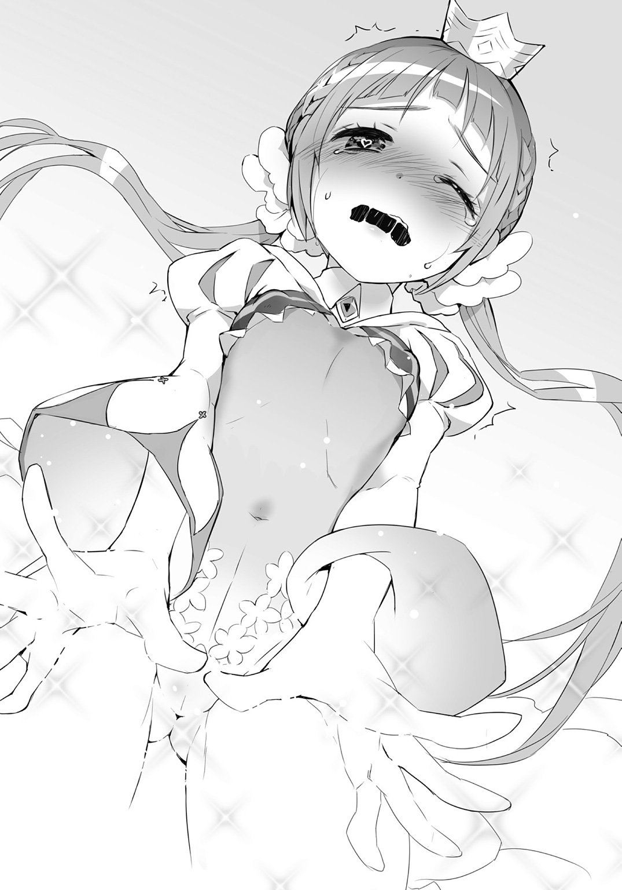
「――ぅっ......ぁ、んんんっ......っ......！」
ナズナは力を最後まで出しきって、すべてをパルマーの中に注ぎこむと、あとずさった。足許がふらつく。よろめいてしまいそうだが、しゃんとしなければならない。
ナズナルリス・デスティニアリスはドリアン公の娘。
由緒あるデスティニア公国の公女なのだ。
『ナズナルリス』
父の眼が、見開かれているのに、こちらを向いているのに、まったくナズナを見ていないかのような眼が、それでもナズナを見据えている。
『考えろ。おまえ自身には何の価値もない。おまえがここにいることには何の意味もない』
父はナズナを見てくれている。
『無価値で、無意味なおまえは、なぜ生きている？』
もちろん、お父様のためですわ。それから、公国のためです！
幼いナズナが即答すると、父はあの眼を細めて微笑んでくれた。
『おまえは賢い子だ、ナズナルリス。この父の役に立て。価値を、意味を、手に入れろ』
ナズナは当然、そうするつもりだ。父は期待してくれているはずだ。ナズナを、賢い子、と言ってくれた。父はナズナを評価してくれている。――でも。
気になることがあった。
どうしても。
父は一度もナズナにふれてくれたことがない。あの馬鹿姉は、魔性が発現するまで、父に頭を撫でられていた。いや、撫でていたわけではない。父は馬鹿姉の髪の毛をつかみ、顔を上げさせていたのだ。そうしないと、馬鹿姉はおどおどするばかりで、父と目を合わせようとしないから。父は明らかに苛立っていた。ナズナは幼心に、なぜ姉はあんなふうに父を苛つかせるのだろうと思っていた。父はなぜあんな愚図な馬鹿姉にかまうのだろう？
もう一つ、ナズナには疑問があった。
母はどうして顔を見せないのだろう？ ナズナに会いにきてくれないのだろう？ ナズナを愛していないのだろうか？
ナズナはこっそり母を探した。八方手を尽くして、二年前だ。ようやく母に一目会うことができた。いや、正確には、一目見た。母の顔を。
その瞬間、やっと父が馬鹿姉にかまう理由がわかったような気がした。
母は、そっくりだった。
もう五十歳近いはずなのに、そっくりだったのだ。
薔薇のしずくを垂らしたような髪や瞳の色も、顔形も、体形、背恰好も、何もかも。
サクラスティアリス。――あの馬鹿姉と、母は瓜二つだった。
ナズナはパルマーを見上げた。
パルマーは依然としてひざまずいている。それでも、今やナズナより遙かに大きい。
大きくなっている。巨大化しつつあるのだ。いや、すでに巨大だ。身にまとっていた軍装ははじけ飛び、下着やら靴やらもはちきれている。パルマーはもはや全裸だ。ナズナはさらに後退する。そうしなければ、パルマーに潰されてしまいかねない。
鍛え抜かれ、贅肉が削ぎ落とされて、隈なく日焼けしたパルマーの肉体が、大きく、大きく、大きく、もっと、ずっと大きくなる。
七六旅団が歓声をあげた。
ようやくパルマーの巨人化が完了したのだ。
「ナズナ様......！」
何しろ躰が大きいので、声も大きい。
パルマーは立ちあがった。
身長18メトル以上。
上背が十倍となったアンドリュー・パルマーは、十人力――ではもちろんない。
百人力。
否、それ以上だ。
「このパルマーにどうかご命令を......！ ナズナ様......！」
「言うまでもないのよ」
ナズナは腰に手をあててファウラスを指差した。
「ファウラス城市を陥落しなさい......！」
「御意......！」
大パルマーは七六旅団を踏み潰してしまわないように巧みによけつつ、飛び跳ねるようにして突進した。
一瞬で城壁に肉薄して、跳躍した。
「イェハアアアアアアアアアアアァァァァァァァァァァァァァァァァァァァァァァァ......！」
城壁上に左足で着地すると、右脚を振りまわして周囲の偽機士どもを根こそぎ蹴飛ばす。
「ハッハッハッハッハッハッハッハッハアアアアアアアアアアァァァァァァァァァッ......！」
大パルマーが腿を高く上げ、手刀にした左右の手を交互に振りあげて、ファウラス城壁の上を走る。偽機士どもは逃げ惑う。大パルマーはわざわざ一人一人の偽機士を狙って踏んだり蹴ったりはしない。ただ駆けるだけだ。それだけで偽機士どもは大混乱に陥っている。逃げようとして、突き飛ばしあい、押しのけられ、城壁からこぼれるように落ちる偽機士もいる。逃げきることができず、大パルマーにブチュッと踏んづけられてしまう偽機士もいる。
「アッハッハッハッ！ アハハハハハハハッ！ アーッハッハッハッハッハッ！ ハハハハハハハハハッ！ アハッ！ アハハッ！ アヒャヒャヒャヒャヒャヒャヒャヒャヒャー......！」
一人だ。
巨大ではあるとはいえ、たった一人の大パルマーに、ファウラス城壁上の偽機士どもは蹂躙されている。
七六旅団は当然、攻城兵器も常備している。しかし、重量があってかさばる攻城兵器は重車両に積載しなければ運べない。あるいは、大型の攻城車両を運用するか。重車両も大型攻城車両も、ルヴァラ廃地を越えることはできない。実際、七六旅団は組み立て式の梯子や小型の攻城槌といった携帯可能な攻城兵器しか持ってこなかった。あとはぜんぶイエルヴァラに置いてきた。
必要ないからだ。
ナズナの魔性〝高圧と高慢の恐るべき狭間〟と、その絶大な効力によって巨人化し、彼女の命令に絶対服従する、彼女に忠誠を誓っていて何があっても裏切らない、彼女がそれを認めた親衛隊〝Ｘ〟の隊員たちさえいれば、攻城兵器などいらない。
「ナズナ様......！ ナズナ様ァ......！ パルマーは、このパルマーはァァ......！ 幸せでございます......！ この世に生まれて......！ ナズナ様に巡り会わせていただき......！ ナズナ様のお力で......！ ナズナ様のお役に立つことができィィィィィィ......！ パルマーは、世界一のォォォォォォォ！ 果報者でございマッソォォォォォォォォォォォォォォォォォ......！」
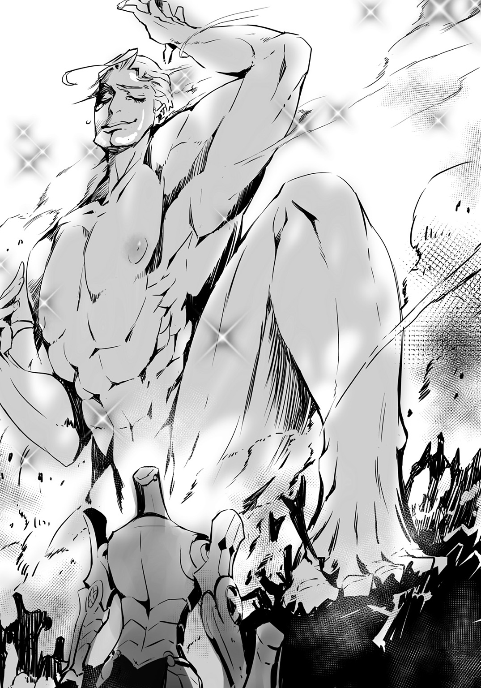
大パルマーがファウラス城壁の上でくるっとターンを決め、右腕を上げ、左腕を下げて、脚を微妙に交差させた。何かのポーズらしい。よくわからないが、馬鹿だ。決して頭が悪いわけではないのに、馬鹿すぎる。
まあ、そういうところもふくめて、愛らしくなくもない。股間のものはちょっとアレだが、巨人化すると否応なく全裸になってしまうし、変に恥じらうよりは堂々としているほうが好ましい。
ナズナは胸を張って微笑んだ。
「苦しゅうないわ、パルマー」
「ありがたき......！ ありがたき幸せ......！ ウォォォォリヤアアアアァァァァァァ......！」
「隊長......！」
色白の親衛隊員セドリック・メナールドが涙を流しながら叫んだ。
「悔しいですが......！ 今の隊長、最高です......！」
「隊長！」「隊長......！」「最高です、隊長......！」「最高......！」「最高です......！」
親衛隊員たちが口々に声を張りあげて大パルマーを讃えている。そして、その賞賛はあたりまえのことながら、次の瞬間、ナズナにぜんぶ、百倍、千倍、一万倍になって注がれるのだ。
ところがその前に背後から緊迫した声があがった。
「ナズナ様......！ 廃地から敵部隊が......！」
「――何ですって......!?」
ナズナは即座に振り返ろうとした。その直前だった。メナールドが「ほぅわぁぁ!?」と素っ頓狂な間抜け声を出した。
「も、門がぁぁぁぁ......!?」
「っ......――」
ナズナは息をのんだ。門を開けた？ 敵自ら？ ナズナともあろう者が、まったく予期していなかった。このタイミングで開門するとは。何のつもりなのか。普通なら瞬時にいくつかの可能性が浮かぶ。それがナズナだ。でも、今回は違った。何も思いつかない。かといって、ぼうっとして時間を無駄にしたりはしなかった。
「メナールド！」
ナズナは輿に跳び乗った。
「は、はっ！ ナズナ様......！」
メナールド以下親衛隊員たちが慌てて輿を担ぎあげた。この目で状況をよく見て確認したい。ナズナは輿の上で、さらに立ちあがった。
「兵じゃない......!?」
門を開けて、機士が出てくるのなら、まだわかる。しかし、あの風体。町人風というか。農民風の者もいる。誰も彼も貧しそうだ。中には女子供までいる。どう見ても兵士じゃない。
単なる市井の人々が、悲鳴をあげながら、押し寄せてくる。
ナズナは――ナズナルリス・デスティニアリスともあろう者が、迷ってしまった。
どうする？ 敵は――いや、あれは敵なのか？ 彼ら、彼女らは、敵ではない。それは明らかだが、彼ら、彼女らが、敵に利用されていることは間違いない。おそらく、城壁の上の偽機士たちも似たようなものだろう。半ば見抜いたうえで、ナズナは大パルマーを行かせた。機士ではない、人間だとわかったうえで、偽機士たちを殺させたということだ。今さら逡巡することがあるだろうか？
「ぬうううおおおおお......!? これはァァァァァァァァァァァァァァァァァァァァァ......!?」
大パルマーが頭を抱えて吼えた。
ナズナは目を見開いた。そうだ。あれが単なる市井の人々だろうと、彼ら、彼女らに罪がなかろうと、かまうことはない。邪魔なら排除だ。排除させないと。
ああ、でも、遅れた。判断が遅れてしまった。そもそも、七六旅団はファウラスにかなり近づいていた。数十メトルのところまで迫っていたのだ。
七六旅団の精強な兵たちに、武器を持たない老若男女が襲いかかる。いや、彼ら、彼女らは、ただ逃げているだけだ。たぶん追い立てられて、逃げる方向に、七六旅団がいる。またたく間に老若男女と七六旅団が入り乱れた。そして、当然――、
そう、当然だ。
どうせやるなら、そこまでやらないと意味がない。でも、ナズナにはできないだろう。考えついたとしても、実行に移すことはできない。あまりにも非道な策だ。
老若男女の後ろに機士どもが列をなしている。牙を研いでいるかのように。
「......してやられた」
ナズナは唇を嚙んだ。
機士どもが老若男女に混じって攻めかかってくる。七六旅団の戦列はただでさえ乱れていた。簡単に引き裂かれてしまうだろう。
×
サクラはナズナの魔性を知っていたから、いきなり巨人が現れてもそう驚きはしなかった。なんで裸なの、とは思ったし、見たくない部分を見ないように注意しないといけなくて、気分が悪くなったが、あれだけ大きい人間だと着る服もないだろう。しょうがない。全裸の巨人には度肝を抜かれたりしなかったものの、廃地から機士たちが虫が湧くように出てきたのは意表を衝かれた。それから、ファウラスの門が開いて、もっとびっくりした。
城壁の上は巨人の独擅場と化している。あの巨人は城市の中にたやすく入ってしまうだろう。そしてきっと、七六旅団のために内側から門を開けるだろう。あれだけ大きな巨人だと、その程度のことは朝飯前だろう。七六旅団は巨人が開けた門から城市内に傾れこんで、一気に制圧してしまうだろう。それがナズナの目論見だったはずだ。サクラだって、そのくらいのことはわかる。
それなのに、巨人が開ける前に、門が開いてしまった。どういうこと......？
「ぬうううおおおおお......!? これはァァァァァァァァァァァァァァァァァァァァァ......!?」
巨人が両手で頭を抱えて叫んだ。
よくは見えないが、七六旅団がぐちゃぐちゃになっている。開いた門から敵が出てきたのか。あれでは巨人にはどうしようもない。15メトル以上はゆうにあるだろう巨人の巨大な手足では、味方を助けて敵だけ排除することなんて、とてもできはしないだろう。
そして、敵は廃地からもやってくる。
戦略とか戦術とか策がどうとか、サクラにはよくわからない。
でも、なんとなく、狙いが見えた――ような気がする。
「ルルチナ！ フェニックスをわたしに......！」
「――かしこまりました......！」
ルルチナがかっ飛んできてフェニックスを手際よく外し、サクラに背負わせた。サクラは留め具を自分でつけながら、敵と揉みあっている七六旅団にちらちらと目をやった。
「くうううううう......ッッッ！ えええええええええええぇぇぇぇぇぇぇぇぇぇぇい......！」
巨人は城壁から飛び降りて、廃地から出てきた機士たちを迎え撃つ気なのか。七六旅団の混乱は収まっていない。
やっと留め具をつけ終えたので、躰を揺すってみた。ずれたりはしないので大丈夫だが、重い。あまりにも重すぎて、もはや痛い。全身が。筋肉も、骨も、血管も、神経も、すべてが悲鳴をあげているかのようだ。
それでも、この痛みに耐えることさえできれば、どんなに重い物であっても、サクラは押し潰されない。魔性がサクラを傷つけさせない。目がくらんでも、内臓が裏返りそうでも、頭が変になりそうでも、我慢するのだ。
「――くっ......んっっっっっっっっっっっっっっっっ......！ ナズナ......！」
たぶん、敵の狙いはナズナだ。
理由なんか知らない。それは戦術的に常道なのか？ サクラには判断がつかない。でも、敵はおそらく、ナズナを狙っている。きっとナズナを殺そうとしている。そのためにはどんな損害もいとわない。たとえ機士が全滅したとしても、ナズナを殺す。全兵力と引き換えにしても、ナズナの息の根を止める。それが敵の狙いに違いない。サクラはそう確信していた。
「殺すなら......！ わたしにしなさい......！」
ナズナなんか、嫌いだ。
でも、ナズナを殺させるわけにはいかない。妹だから？ わからない。妹だとか、兄だとか、姉だとか、弟だとか、父親だとか、母親だとか――家族なんて、サクラにはわからない。
ただ、ナズナが死ぬくらいなら、サクラが死んだほうがまだマシだ。理屈抜きで、そう思うのだ。
人形のチヌコがテケテケ走ってきてぴょんっとジャンプし、フェニックスによじ登った。
ちらっと後ろを見ると、ギチコは前のめりに倒れていた。また転んだのか。
ルルチナは右の拳を左の掌にバシンッと打ちつけた。
「サクラ様！ お叱りを受けても、ルルチナはお供いたします......！」
「一言だけ、言っておく」
「何です!?」
「死んだら、許さない」
「はい......！」
「......馬鹿」
呟いて、サクラは駆けだした。少し前まで、ルルチナもギチコも、サクラがくるなと言えば、おとなしく従ったのだ。それがすっかり生意気になって、言うことを聞かなくなった。
少尉のせいだ。
ハイジ・バラン。あの若い少尉がサクラに逆らってから、ルルチナとギチコまで影響されて、どこまでもついてこようとする。きて欲しくないのに。怪我をしたらどうするの？ もし死んでしまったら？ 痛みに耐え抜きさえすれば死なないサクラとは違うのだ。
ぜんぶ少尉が悪い。
責任、とってよ。
わかっている。
少尉はもういない。いや、いないわけじゃないが、侍官ではなくなったのだ。サクラとは関わりがない。これでよかった。サクラのそばにいたら、少尉はきっと死ぬ。いくら魔性を持っていても、いつか命を落とす。だから、少尉にとってはこうなってよかったのだ。
もちろん、サクラにとっても。
サクラは駆けた。駆けに駆けて、猛烈に駆けた。一歩ごとに膝が、腰が、背中が、肩が、あちこちが、激痛以上の激痛に見舞われる。脳が沸騰して、弾け飛びそう！ 我ながら、よく意識を失わないものだ。痛くて、なんだかおかしくなってくる。そうじゃなくて、おかしくなっているのかもしれない。
「どいて......！」
右往左往している七六旅団の兵と農民みたいな恰好をした男女を一喝しながら、片刃大長剣を抜いた。兵も農民もサクラを見て、道をあけようとした。よける様子がないのは土色の機士たちだけだった。
「ああああああああああああああああああああああああああぁぁぁぁぁぁぁぁぁぁぁ......！」
サクラは機士の胸に片刃大長剣をぶっ刺して、そのまま突き倒した。その向こうにいた別の機士を体当たりで吹っ飛ばし、さらにまた別の機士を蹴飛ばした。
「つぁぁぁらあ......！」
ルルチアが機士に跳び蹴りを浴びせた。
チヌコはフェニックスにしがみついている。
進め。突き進め。兵やら農民やら何やらの間を駆け抜け、機士を倒して、進め。
ナズナは七六旅団の真ん中あたりにいる。親衛隊〝Ｘ〟とやらに守られているはずだ。
そう遠くない。もうすぐだ。
「えぇぇい......！」
片刃大長剣を振り下ろして機士を斬り捨てた直後、サクラは体勢を崩しそうになった。引っぱられる。後ろのほうに。ルルチナが機士を殴り倒して叫んだ。
「――サクラ様......！ 敵が......！」
フェニックスだ。機士たちがサクラが背負うフェニックスに群がって、組みついている。
チヌコがフェニックスから下りたというか、落下した。
痛みには耐えられても、このままでは倒れる。サクラはとっさに片刃大長剣を地面に突き刺して踏んばったが、時間稼ぎにしかならないだろう。ルルチナも機士たちに囲まれていて、すぐにはこっちにこられそうにない。
「それなら......！」
サクラは左手で片刃大長剣の柄をつかんだまま、右手で留め具を引きちぎる勢いで外した。途端にフェニックスが機士たちに引き倒されてしまったが、どうということはない。武器なら片刃大長剣があるし、腰には片刃剣も吊している。
チヌコはどこへ行ったのか。ギチコは追いかけてきているのだろうか。気にしている場合じゃない。
サクラはルルチナを包囲している機士の一人を後ろから片刃大長剣でぶった斬った。
「ついてくるんでしょ......!? ぐずぐずしないで......！」
「申し訳ありません......！ ずああああぁぁぁぁりゃああああああぁぁぁぁぁぁぁぁ......！」
ルルチナは正拳突きで二、三人の機士をいっぺんにぶっ飛ばした。
「――敵はだいぶこちらを研究していますね......!?」
「関係ない......！」
サクラは片刃大長剣をぶん回しながら進んだ。片刃大長剣はとっくに刃こぼれしているが、斬れなくてもいい。敵を押しのけられればそれでいいのだ。
行く手にきらびやかな軍装をまとった一団がいる。親衛隊だ。ただ、一団といっても、完全に密集しているわけじゃない。たぶん、密集隊形をとる前に、機士に攻めこまれてしまったのだろう。親衛隊員たちは各個に、あるいは連携して機士を排除しようとしているみたいだが、できていない。
機士たちは親衛隊の中にまで入りこんでいる。
「あの子は......！」
いくら魔性を持っていても、どんなに頭がよくても、人並み外れた努力家でも、年齢にそぐわない軍略家で、指揮官だとしても、まだ十三歳。
躰はただの十三歳だ。
かよわい少女にすぎない。
サクラとは違うのだ。甲機士の重槍は、あの子の躰をたやすく貫いてしまうだろう。乙機士の鈍剣はあの子を脆くも打ち砕いてしまう。機士たちが持っている杓剣に斬られてしまったら、あの子は死ぬ。
サクラは斬れ味が鈍って、曲がってもいる片刃大長剣を捨てた。扱いやすい片刃剣を腰から抜いて、あの子のもとへ――でも、なまじ親衛隊が密集しようとしているだけに、機士と親衛隊員が押しくらまんじゅうしながら斬りあい、突きあうような状態になっている。隙間がまったくない。敵味方関係なく、全員薙ぎ倒して進むべきか？ しかし、サクラにぶっ飛ばされた親衛隊員なり機士なりが、あの子を傷つけてしまうかもしれない。あの子はそれで、死んでしまうかもしれない。
足がすくんだ。
「おォォォォォォォォォォォォォのれェェェェェェェェェェェェェェェェェェェェェ......！」
巨人は馬鹿らしいほど壮大なスケールで大暴れして、機士をちぎっては投げちぎっては投げしているが、何しろ図体が大きすぎる。目の粗い笊で砂利を掬っても、こぼれ落ちてしまうのと一緒だ。ぜんぶを止めることはできない。人間なら巨人の存在自体に恐怖を覚えて逃げ散ってしまうかもしれない、少なくとも怯むくらいはするだろうが、相手は機士なのだ。仲間が踏み潰されようと、わしづかみにされて放り投げられようと、機士たちは闇雲に突撃してくる。七六旅団は前から、後ろから攻めたてられて、しっちゃかめっちゃかだ。
助けられない――かもしれない。
『おまえは無価値だ』
父の声が響いた。
『無意味だ』
見開かれているのに、こちらを向いているのに、まったくサクラを見ていないかのような父の眼が、サクラを見据えている。
『なぜだ？ おまえはなぜ生きている？』
「......ごめんなさい」
力が抜ける。躰中から。サクラはしゃがみこんでしまいそうになった。
もう、だめかもしれない。
そうじゃない。
最初からだめだった。
だって、サクラには価値がないのだ。何もできないのだから、生きている意味がない。
「姫......！」
こんなにもだめだから、だめすぎるから、聞こえるはずのない声が聞こえたりするのか。
「姫！ 姫！ 姫！ 姫ぇぇぇぇぇぇぇぇぇぇぇぇぇぇぇぇぇぇぇぇぇぇぇぇぇぇぇ......！」
「少尉......!?」
ルルチナがそう言った。聞き違いでも空耳でもない、と思う。
少尉、と。
地響きのような音が接近してくることに、そのときサクラはやっと気づいた。振り向くと、騎兵の群れが目に入った。あれは第一連隊だ。連隊長ローラン・ダンドリュー大佐自ら率いる通称ダンドリュー中隊の騎兵たちが、土煙をあげて駆けてくる。第五連隊や、その後ろにいた第四連隊まで追い越してきたのか。馬の脚ならまあ、不可能ではないだろう。ああ、でも、騎兵だけじゃない。ギチコ。ギチコだ。ギチコが人形の兵隊たちに運ばれている。いや、実際は運ばせているのだろうが、運ばれているようにしか見えない。
それから、先頭。
先頭を突っ走っているのは騎兵じゃない。
速い。速すぎる。人間があんなに速く走れるわけがない。普通の人間なら、無理だ。
彼にはできる。
なぜなら、ギチコがいるから。
ここにはルルチナもいる。
そして、サクラもいる。
魔性持ちがこれだけいれば、彼は風よりも疾く奔るだろう。
サクラの足許で、チヌコがぴょんぴょん跳ねている。
彼の名を呼びたくはなかった。呼んだらきっと、こらえきれなくなる。自分はいったい何をこらえているのか。わからない。でも、何かをこらえているのだ。こらえつづけなければ、きっと立つこともできない。
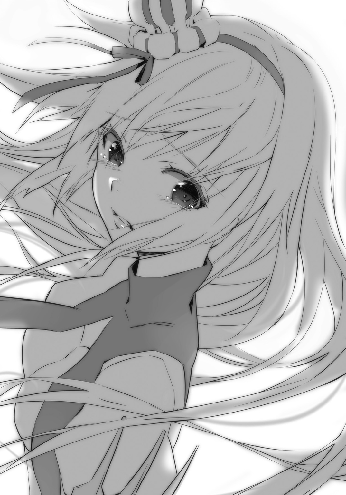
「......少尉」
だけれど、だめだ。もう抑えられない。
「ハイジ・バラン......！」
×
第一連隊はあっという間に前を行く第四連隊を、そして第四連隊とほぼ団子状態になっていた第五連隊を追い抜いた。とはいえ、何のかの言って、ダンドリュー大佐たちは歩兵もついてこられるように加減して馬を走らせているだろう。最初はそう思っていたし、おそらくそのとおりだったはずだ。でも、それにしたって速すぎないか。
何が速いのかというと、ハイジだ。ハイジが速い。軽い。躰が軽すぎる。羽が生えて飛んでいるんじゃないかというくらいの軽さで、速さだ。――この感覚は。
いける、と思った。いっちゃっていいのかどうか。そんなことを考える間もなくいってしまっていった。
ハイジは騎兵たちを一息でごぼう抜きにした。
そうしたら、すぐ前に運搬されている人がいた。人間じゃない、見ようによってはかわいらしいと言えなくもない、だが人間大に近いからずいぶん大きい人形の兵隊たちが、ぷるんっぷるんした女性を担ぎあげて運んでいる。女性がぷりゅんっと振り向いた。
「あぁ......！ ハイジくんだぁ......！」
「ギギギギギギギギギギギギギギギギチコさん......！」
いやあいいんですけどここは戦場ですよそれなのにいいんですかその恰好、いや一応まあふだんの侍女の服の上にちょっとした鎧的なものはつけているし、前にも見たことがある装いだし、こんなに興奮するのもどうかと思うが、久しぶりに見るともう破壊力がすごい。ありていに言って、胸が！ 胸が胸が胸が！ なんでそんなに盛りあがっているというかたっぷたっぷしているんですか、大胸筋ですか、脂肪なんですか、よくわからない、何でもいいです、とにかくすごいです、見ちゃいけないものを見ています、だから目をそらさないと、いやそんなの無理だ、見ないようにするなんて、だって見たいし見てしまうから......！
いやでもそれどころじゃないんだ！ ハイジだってわかっている、その程度のことは。というか、その程度もどの程度もない。程度問題じゃない。明らかにもっと大切だ。とてつもなく重要だ。
行く手に七六旅団がいる。戦闘中だ。混戦になっている。
そこに、彼女が。
彼女。
そんな三人称の人代名詞を使うのは憚られる。
夢かな？ 夢かもしれない。夢にまで見たのは確かだ。なぜだろう？ どうしてこんなに会いたかったのだろう？ 会いたかった。過去形だ！ ようやく会うことができた！
「姫......！」
呼んでも、まだ信じられない。本当に？ あれは本物の姫なのか？ だって、何か歪んでいるけど？ 涙か。ハイジは泣いていた。涙で曇って、姫がちゃんと見えない。
「姫！ 姫！ 姫！」
邪魔くさい兜を脱ぎ去って、手の甲で涙を拭った。姫。やっぱり姫だ。間違いない。あの姫が夢や幻であるわけがない。夢や幻ではあそこまで姫を再現することはできない。
「姫ぇぇぇぇぇぇぇぇぇぇぇぇぇぇぇぇぇぇぇぇぇぇぇぇぇぇぇぇぇぇぇぇぇぇぇぇ......！」
「少尉......？」
姫の近くに少女がいることに、ハイジはそのときやっと気づいた。少女というか、少女なのか、とにかくルルチナだ。ルルチナが振り返ってこっちを見た。ごめんなさい、まったく目に入ってませんでした！ まったく、それどころじゃありませんでした！
だって、姫だし！ 姫がいるし！
振り向いてくれたし！
見てるし！
わあ！ 目が合っている！ 噓だ！ そんな！ 姫と目が合うなんて！ 会えなかったのだ。ずっと会いたくて、会いたくてしょうがなくて、どうしてこんなに会いたいのかわからないくらい会いたくて、会おうとしても、どういうわけか会えなかった。こんなにも会えなかったのに、とうとう！ ついに！ 会ってしまった。
「......少尉」
そして、そして――そして！
「ハイジ・バラン......！」
名前まで！ しかもフルで、フルネームで！ 呼んでくれた！ ハイジの名前を、姫が！
沸き立つ。血が、肉が。躍る。精神が、肉体が、魂が。生まれてきて、生きてきて、よかった。報われた。ああああああ、何だろう、願いが叶った？ 望みが叶ってしまった？ ハイジの世界は完結した。完全無欠だ。もう何もいらない。ハイジは何も。だって、こんなにも速く走ることができるのだ。姫はすぐそばにいる。ハイジは何もいらない。姫はどうだろう？ 何かできることはないだろうか？ 姫のためなら何でもする。何でもしたい。それがどんなに困難でもハイジが成し遂げる。そうする義務がハイジにはある。この絶対的な至福は、感動は、姫が与えてくれたのだ。ハイジが何をしても釣りあわないだろうが、せめて何でもしたい。
「何を......！ 何をすればいいですか......!? 僕にご命令を、姫......！」
「ナズナを......！」
姫はそこまで言って、しまった、というように顔をしかめた。その表情がまた、いたわしくて愛らしくて！
「わかりました......！」
よくわからないが、わかった。ナズナ。ファウラス遠征軍副将。ナズナルリス・デスティニアリス。姫の妹。そうか。なんとなくわかったような気がする。そういうことか。
ハイジは姫のそばを駆け抜けて、機士たちとごちゃまぜになっている七六旅団に飛びこんだ。ただ突っこんだのではない。文字どおり、飛びこんだのだ。機士と、七六旅団の兵士、とくにきらびやかな軍装を身にまとった旅団長直属の親衛隊員がひしめきあい、殺しあっていて、立錐の余地もないほどなので、入りこむのは今のハイジといえども難しかった。だから、めちゃくちゃ高く跳躍して、といってもまあ５メトルかそこらだが、そこから俯瞰した。今のハイジはただ速いだけじゃない。高く跳べるだけじゃない。見える。瞬時に見分けられる。ハイジは空中でワイバーンを抜いて、機士めがけて落下した。その頭頂を蹴って、さらに別の機士の肩を蹴り、また別の機士の頭を蹴って、進んだ。
いた。ナズナルリス。輿が横転している。そのすぐそばだ。二人の親衛隊員に守られているが、機士たちに取り囲まれている。四人の甲機士が一斉に重槍を突きだして、片方の親衛隊員を串刺しにした。これで、副将ナズナを守る親衛隊員は一人。あの親衛隊員、やけに色白だ。いや、そんなことはどうでもいい。
ナズナは動かない。微動だにしない。かといって、呆然と立ちつくしているというふうには見えない。たしか、十三歳。背恰好は少なくとも年相応だ。ほっそりとした、華奢な少女が、やれるものならやってみるがいい、と言わんばかりの毅然とした態度で、胸を張って少し顎を上げ、下目遣いで敵を睨みつけている。あれだけの敵に囲まれ、目の前で親衛隊員が倒されても怯む様子すらない。誇りだ。あの公女は誇り高い。たとえ剣に斬られ、槍に突かれて、血みどろになって地に伏しても、誇りだけは失わずに公女は死ぬだろう。
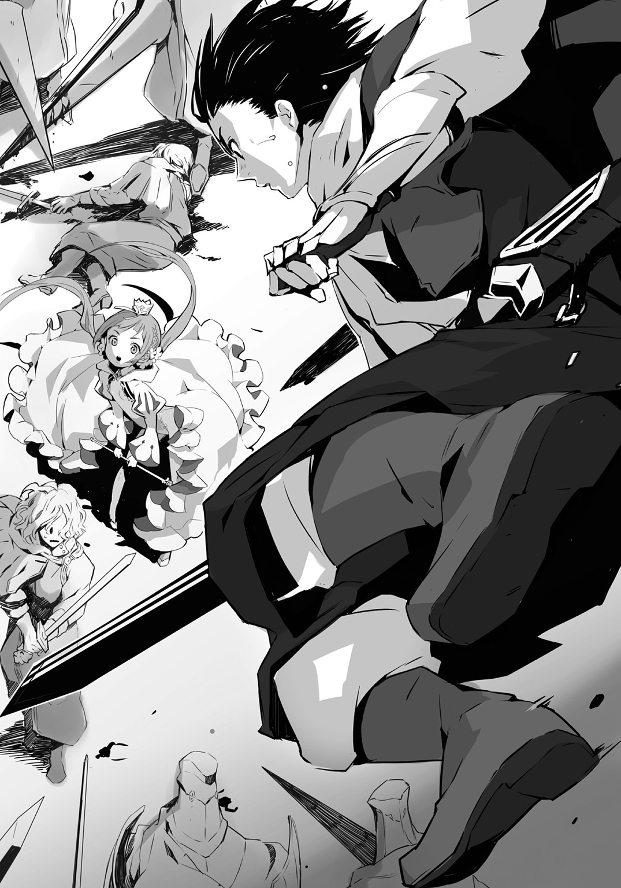
「死なせない......！」
姫に頼まれたのだ。ナズナを、と。あの姫がハイジに頼ってくれた。やるさ。やるに決まっている。助けるさ。姫の妹を救ってみせるさ。絶対だ。確実にやる。ハイジにはできる。
ナズナルリス、デスティニア公国の第五公女もまた、魔性を持っているのだ。そのぶんハイジは速くなる。強くなる。
そして、この手に握るはカバラの剣、ワイバーン。恐ろしい斬れ味を誇り、折れない、曲がらない、その威力でもって、かつてカバラ古王国を躍進させたという、不壊の剣。
ハイジは跳んで、まず色白の兵士を突き殺そうとしていた乙機士の首をくいっと刎ねた。その隣にいた乙機士を蹴倒して、着地する前に別の乙機士の首を斬り飛ばした。着地と同時にさらに別の乙機士の首を搔っ斬って、直後、さっき蹴倒した乙機士が起きあがる前に頭を踏み潰した。ハイジがワイバーンを振るたびに、突きだすごとに、乙機士が、甲機士が、一人ずつ絶命した。無駄なことは一切しない。最短距離で接近して、一振り、一突きで、首を刎ねるか、頭部を破壊する。ハイジはわかっている。手にとるようにわかる。どう動けばいいのか。ワイバーンをどう使えばいいのか。見えるのだ。一秒後に自分が何をしているのか、ハイジには見える。はっきりと。そのとおりにすればいい。必ずそのとおりになる。すなわち、敵が死ぬ。死んでゆく。ハイジは何も思わない。考えない。その必要がない。敵を殺す。一人残さず。副将ナズナの、姫の妹の安全を確保する。ハイジにはそれが可能だ。造作もない。機士など木偶同然だ。ハイジに壊されるためだけにそこにいる。そして、実際に破壊されてしまう。
三十八人。
ハイジは三十八人目の機士を殺したところで、一つ息をついた。
「副将閣下......！ ご無事でしょうか......!?」
「......無事、だけれど」
ナズナがどんな顔をしているのか、ハイジにはわからない。ハイジはナズナに背を向けている。敵。機士はまだいる。あの機士があと一歩、踏みこんできたら、ハイジは動いてやつの首を刎ねるだろう。
「な......何なの。あなたは、いったい......」
「姫の――あ、えっと、サ、サクラ様、いえ、サクラスティアリス殿下の、あああええと、総大将閣下のご命令で、助太刀に参りました......！」
言い終える前に、例の機士が近づいてきた。ハイジは跳んでいってそいつの首をちょん斬った。ナズナのそばに戻りがてら、二人の機士を片づけた。
「......馬鹿姉様の」
ナズナが声を震わせて言った。
「はい？ ば......？」
「余計なお世話よ！ ば、馬鹿姉様に助けられたなんて、そんな......冗談じゃないわ！ それなら、殺されていたほうが......！」
「馬鹿なことを言うなぁぁぁぁぁぁぁぁぁぁぁぁぁぁぁぁぁぁぁぁぁぁぁ......！」
ハイジはとっさに振り向いて怒鳴りつけてしまった。
「殺されていたほうがよかった!? そんなわけないじゃないか！ あなたはたった十三歳で旅団を立派に率いてる！ 遠征軍を実質的にここまで導いてきた手腕は、並大抵じゃない、見事なものだった！ あなたは大切な人だ！ たとえ姫に頼まれなくたって、死なせたくない！ 死なせてたまるものか！ だいたい、十三歳の女の子が、命を粗末にするようなことを言っちゃだめなんだ......！」
ナズナは大きく目を瞠って――ぽかんとしているのか。
まばたきをして、うつむいた。両手で胸を押さえている。
「こ、この......！」
色白の親衛隊員が火を噴くような勢いで剣を振りあげた。
「りょ、慮外者め......！ 士官風情が、ナズナ様に生意気な口を......！」
「ううううううわああああああああああああああああああああああああああああああああ!?」
言われて、気づいた。ななななななななな何てことを。相手は副将、というか公女なのに、敬語すら使わずにとんでもないことを言ってしまった。これは、あれか。自死か。自死するべきか。死んで償うしかないパターンか。ハイジはワイバーンの切っ先を首に当てて、ひと思いに頸動脈を断ち斬ってしまおうとした。
「よしなさい、メナールド」
ナズナは色白の親衛隊員を制止すると、咳払いをしてからあらためてハイジに目を向けた。
「あなた、名は何というの？」
「......え。あ......ハイジ、です。いやあの、ハイジ・バラン少尉で、あります......」
「そう。ハイジというのね。覚えておくわ。感謝はしないけれど、無礼は許してあげる」
「......あ、えっ......あ、ありがとう......ございます」
「いいのよ。ナズナも覚えておくから、あなたも覚えておきなさい、ハイジ。このナズナは、馬鹿姉様と違って寛容だし、賢くて、この公国を背負って立つ人材なのよ。あなたはそのナズナを助けて、大切な人と呼んだ」
「へっ......あ、そ、それはその......」
「しかと覚えておくのよ、ハイジ。――七六旅団......！」
ナズナは天を指差して凜然と声を張りあげた。
「こんな雑魚に、いつまでも手こずっているの......!? あなたたちのナズナはここに健在で、無事よ......！ あなたちだって、勝ちたいでしょう......!?」
「おおおおおおおおおおおおおおおおおおおおおおおおおおおおおおおおおおおおおおおおおおおおおおおおおおおおおおおおおおおおおおおおおおおおおおおおおおおおおおおおおおおおおおおおおおおおおおおおおおおおおおおおおおおおおおおおおおおおおおおおお......！」
ハイジは思わず耳をふさいだ。声なのか？ これは七六旅団の兵たちの、親衛隊員たちの声なのだろうか？ どうやら、そうらしい。男たちの声が、空を、大地を揺るがした。
「それなら、勝ってみせなさい......！」
研ぎ澄まされた槍の穂先のようなナズナの号令が敵味方双方を鋭く貫き通した。
「思うさまに戦って、さっさと敵を片づけるのよ......！ できないとは言わせない......！ あなたたちは、七六旅団なのだから......！」
「いいいいいいいいいいいああああああああああああああああああああああああああああ！」
「ぬおおおおおおおおおおおおおおおおおおおおおおおおおおおおおおおおおおおおおお！」
「すうううううううううううううううううあああああああああああああああああああああ！」
「むおおおおおおおおおおおおおおおおおおおううううううううううううううううううう！」
「ざああああああああああああああああああああああああああああああああああああああ！」
「うおおおおおおおおおおおおおおおおおおおおおおおおおおおおおおおおおおおお......！」
鬨の声とは明らかに違う。雄叫びですらない。単なる絶叫だ。絶叫が渦となって吹き荒れた。ハイジもそれに巻きこまれて、一瞬のうちに何が何だかわからなくなった。いや、そんなことはない。敵だ。
敵を倒す。敵を薙ぎ倒して進む。そうしなければならない。そうするべきだということだけはわかっている。
皆、同じだ。誰も彼もわかっている。
やらなければならないことは多くない。考えるべきことはきわめて少ない。
敵を殺す。完膚なきまで叩きのめして、ファウラスに攻め入る。
単純だ。ただそれだけでいい。
ハイジは殺した。目についた機士はぜんぶ殺した。ワイバーンが届く範囲にいる機士を殺しまくった。殺しながら兵士たちと一体になって進んだ。気がつくと、ファウラスの門をくぐっていた。勝った、と思った。とうとうファウラスに足を踏み入れた。あのルヴァラ廃地を越えてファウラスに。嫌らしく寄せくる敵を撃破してファウラスに。勝った！ 勝ったんだ！
「ナズナ様の勝利だ......！」
兵たちが笑いながら叫んだ。
「七六旅団万歳......！」
「うおおおおおおおおお！ ナズナ様！ ナズナ様に栄光あれ......！」
「ナズナ様......！ ナズナ様......！ ナズナ様......！ ナズナ様......！ ナズナ様......！」
ファウラスの門からまっすぐつづく広い目抜き通りにナズナ・コールが響き渡る。ハイジもナズナの名を口にしかけて、慌てて思い止まった。いやいやだめだ。ハイジは七六旅団ではない。侍官ではなくなってしまったので、仕えるべき主は姫だけだと言えないのがつらいところだが、讃えるべき相手は姫だけだ。ああ、その姫が！ 姫もファウラスに入ってきた！ まあ、姫だけではなくて、ルルチナも、それからギチコも、あとはダンドリュー大佐以下第一連隊もぞくぞくとファウラスに傾れこんでくる。その中にはもちろん、ボル伍長、悪人顔のアダン兵長、渋いウォルフ上等兵、巨漢のマチス上等兵、小柄だが剽悍な面構えのルメ上等兵――百七班もいる。でも、姫だ。姫しか見えない。他の人たちも視界には入っている。しかし、ハイジの目には姫だけがくっきりと鮮やかに見える。悪いがあとはみんな背景同然だ。
行き交う者とていない目抜き通りで、七六旅団の進軍はほとんど停止していた。
姫が大股で歩いてくる。七六旅団の兵たちも姫の前には道をあけた。あたりまえだ。姫なのだから。
「......馬鹿姉様」
ナズナが姫を指差した。
「せっかく勝っても、馬鹿姉様のせいで、画竜点睛を欠いたわ！ どうしてくれるのよ、馬鹿アホ姉様......！」
「わたしは何もしていない」
姫は表情を変えずに、一瞬だが、ハイジを見た。見てくれた。見てくれました！
「あなたを救ったのは、そこにいるバラン少尉でしょ」
「ええ、そうよ。ナズナはハイジに助けられてしまったわ。親衛隊がだらしなかったせいだけれど――」
ナズナの周囲を固めている親衛隊員たちが一斉にひざまずいて頭を垂れた。どうでもいいが、一番ナズナの近くにいる全裸の男は、なんでまた裸なのだろう。あのよく日焼けした肌に、まったく贅肉がない躰つき、さらさらした金髪には、見覚えがある。もしかして、彼はあの巨人か。きっとナズナの魔性で巨大化したのだろうが、いつの間に普通サイズに戻っていたのだろう。まあそんなことはどうでもいいとして、なぜ姫はちょっと不愉快そうなのか。
「言わば！」
と、ナズナは突然、ハイジに近づいてきて、腕をとった。
親衛隊員たちがざわめいた。それはとても不穏なざわめきだった。ハイジは彼らから殺気のようなものさえ感じた。ナズナはいったい何をしているのだろう。
いきなりハイジと腕を組んだりして、何のつもりなのだろう。
「ハイジはナズナにとって命の恩人ね」
「っ......！」
姫の顔がゆがんだ。怒っている？ どうして？ とにかく怒っていても、すばらしい。
かわいいなあ、とハイジはとろけそうになりながら思った。むしろ、怒った顔がまたすてきだなあ。
「ねえ、ハイジ」
ナズナが躰を押しつけてきて、ハイジの胸をさすった。まったくこの人は何をやっているのか。というか、姫に見とれていたせいでなんとも思っていなかったが――本当に、何してんの、この人。あなたは女の子でしょう？ 公女でしょう？ ハイジは男で、庶民だ。いや、そういう問題でもないのか？ そういう問題でもない、こともない、ような......？
「わ、わ、わ、わ、わ、わ、わ、わ、わ、わ、わ、わっ......ちょっ、は、離れて、くださっ、こ、なっ、だめっ、えっ!? ちょ、ちょっ、ナナナナナナズナルリス殿下!? 閣下......!?」
「離れるか、離れないかは、このナズナが決めることよ、ハイジ」
「えええええええ!? そそそそそうなんですかあ!? そういうものなんですかねえ......!?」
「そういうものよ。あたりまえでしょう？」
「......ナズナ！」
「何よ、馬鹿姉様。身を挺してナズナの命を救った者がいるのよ。七六旅団旅団長にして遠征軍副将としてはともかく、第五公女としては、最大限報いてやるのが筋というものじゃないかしら？ 何か文句でも？」
「文句は......」
姫はほっぺたを膨らまして、そっぽを向いた。
「ないけど......！」
「よかったわ。それじゃ、ハイジ」
「ななななななななななな何ですかっ!?」
何かよくわからないが、くらくらする。ナズナは女の子とはいえ、所詮は十三歳で、たとえばギチコのように女性らしいというか肉感的な躰つきをしているわけではない。程遠い、と言ってもいいかもしれない。こんな表現はどうかと思うが、まあ、子供だ。でも今、気づいたのだが、なんだかいい匂いがする。頭をぼうっとさせて思考力を奪うような香りだ。
「あなた、ナズナの親衛隊に入りなさい」
「いやです」
考えるまでもなく、即答してしまった。
「なんっ......」
ナズナは血相を変えて、ハイジを突き放した。
「何ですって......!? このナズナの申し出を断るなんて、いったい何様のつもりなの......!?」
「いえ......な、何様でも、ないですけど。ただ、あの......僕は、第八公軍に所属していて、第一連隊の伝習士官ですので......」
「そんなのはどうにでもなるわ！ 明日から、いいえ、今すぐ転籍させることだって、ナズナには可能なのよ！」
「ええ!? 公女殿下ともなると、特権を振りかざしてそんなこともできちゃうんですかあ!?」
「と、特権とは人聞きが悪いわね、政治力と言いなさい！」
「でも、いやです」
「はぁ!?」
「ぼ、僕は――」
ハイジは姫の顔を見たかった。凝視したい。小一時間は眺めていたい。でも、できない。
やはり姫に仕えたい。姫のそばで、姫のために戦いたい。
そんなことは言えない。思ってもいけないのだろう。ハイジは軍人だ。与えられた役割をこなす。それ以外のことを考えてはいけない。第一連隊に愛着を感じはじめていることも、ナズナはハイジに報いたいらしいが、ハイジは力になってくれた百七班の人たちに報いたいと思っていることも、関係ないのだ。行けと言われればどこにでも行く。やれと命じられれば何でもやる。ナズナが政治力を発揮してハイジを親衛隊員にしたら、黙って仕えるしかないのだ。
軍人なら、そうでなければならない。ハイジはきっと、そうするだろう。もしナズナの親衛隊に配属されたら、あのきらびやかな軍装は恥ずかしいが、身にまとうだろう。親衛隊員としての任務に全力を尽くすだろう。命懸けでナズナを守るだろう。
ただ、自分の意思はある。望みがある。願いがある。
あるものをないと偽ることはできない。
「実際に、辞令が下ったら、もちろん従います。でも」
ハイジはナズナの黄緑色の瞳をまっすぐ見据えた。
「僕は、いやです」
「無駄に度胸があるのね、少尉」
ナズナは微笑んだ。優雅に斬りつけるような、攻撃的な笑みだった。
「いいわ。この件については、片がついてからにしましょう。まずは城市内を――」
不意に何か大きな、重い音が轟いて、ナズナの口をつぐませた。
全裸の親衛隊員が立ちあがった。
「親衛隊！ ナズナ様をお守りせよ......！」
ただちに親衛隊員たちが隊形を整えようとした。その前にも、その間にも、音は立てつづけに響いた。何だ？ 何かが起こっている。それは間違いない。しかも、ただならぬ事態が。ハイジは走って、目抜き通り沿いの建物をよじ登るというか、その外壁を駆けあがった。魔性のおかげで、こんな人間離れしたことができてしまう。屋根の上で、あたりを見まわした。
「ああぁぁっ......!?」
音がするたびに、城市内のあちらこちらで光が閃き、煙が噴きあがる。火。火だ。火の手が上がっている。
「火事......!? 火事です......！ そこらじゅうで、火事が――うっ......!?」
ハイジはしゃがみそうになった。今までの音の比じゃない。ものすごい轟音が鳴り渡った。その瞬間、ファウラス城市全体が震えたのではないか。
ハイジは目抜き通りの先に視線を向けた。音と衝撃の源は明らかにそっちのほうだった。確実だ。見ればわかる。誰にでも。
主郭だ。ファウラスの主郭は城市の中央、やや北寄りの位置にそびえている。城市の規模もそうなのだが、イエルヴァラの主郭よりは小さい。もっとも、高さはかなりある。とりわけ楼閣状の天守は塔のようだ。
燃えていた。
ファウラスの主郭が炎上している。
「うわ......！」「や、やばい......！」「逃げろ！ 退避......！」「煙が......！」
目抜き通りの兵たちが右往左往しはじめた。近くの建物も燃えだしたのだ。ハイジも流れてきた煙を吸ってしまい、咳きこんだ。目も痛い。涙でよく見えない。
「少尉......！」
呼ぶ声が姫のものだということは、喧噪の中でも一発でわかった。
ハイジは無理やり目をこじ開けた。案の定、姫だ。姫がハイジを見上げている。
まずは姫のもとに戻ろう。ファウラス遠征軍は勝った。ファウラスを陥落させたはずなのに、どうも大変なことになっている。それでも、今はとにかく姫のところへ行こう。一分、いや、一秒でいいから、姫のそばにいよう。直接、無事だと報告しよう。そうしてからダンドリュー大佐に指示を仰げばいい。それくらいは許されるはずだ。
――たとえ未来永劫、あなたに指一本ふれることはできないとしても、それくらいは。
×
禁衣を身につけ、頭冠を被った貴人が歩行鳥の背に乗っている図というのは、第一にめずらしいし、第二に不思議で、第三に微笑ましくもある。
歩行鳥は西大陸に棲息している飛べない鳥で、もともと大きいが、乗用に品種改良されたものはさらに巨大だ。頭頂までの高さは７尺（約2.1ｍ）以上、体重100貫（約375㎏）を超える。馬ほど荷重に耐えるわけではないが、単なる乗り物としては馬に匹敵するだろう。跳躍力は馬を遙かに凌駕するので、巧みな乗り手なら、馬にはとうてい進めない悪路を走破させることもできる。帝国ではよく利用されている乗用動物だが、貴人は普通、馬を選ぶ。
馬は東大陸にしかいない。
西大陸から東大陸に侵出して、帝国は馬を手に入れた。以来、とりわけ身分の高い帝国人は、馬に乗りたがる。
宮家の者で歩行鳥に乗るのは、おそらく亞璃簾宮太華子くらいのものだろう。
この丘に列を連ねているファウラス占領団の帝国臣民たちも、咎埜不人のように馬に乗っているか、もしくは徒歩だ。歩行鳥は不人の主人を乗せている一頭しかいない。
「......亞璃簾様」
「何だ、咎埜」
「......以前から訊きたかったんですが」
「だから、何だ」
「......なぜ、歩行鳥を」
「悪いか」
「......歩行鳥は、馬より扱いにくい。手がかかります」
「そうだな」
「......亞璃簾様が世話をするわけじゃない」
「おまえ、私を責めているのか」
「......そう聞こえますか」
「日増しに生意気になってくるな。あまりつけあがるなよ？」
主人は眉をひそめて不人を一睨みした。――が、どこか楽しそうだ。長年、側仕えしているので、その程度のことはわかる。
ファウラス占領団は主人と不人とを先頭に、鬱蒼と木々が生い茂る丘を上ってゆく。ファウラスを捨てた今、もはや占領団の名はふさわしくないかもしれないが、誰一人として沈んではいない。彼らは戦に負けた。ファウラスを攻め落とされた。しかし、命を落としたのはほとんどが戦争の道具である機士と、帝国の所有物でしかない下民だけだ。機士を操る操手にはいくらか被害が出ているだろうが、彼らは最終的には機士を犠牲にして生存を優先するように訓練されている。離脱している者も多いだろう。のちほど所定の地点で合流する手はずになっている。人民は公国軍が襲来する前に一人残らず退去させた。占領団の臣民はここにいる。
ファウラスはマウローという国の城市だった。マウローは領土の過半を失って白旗を揚げたが、ファウラスは降伏前に帝国が占領した。抗戦を選んだ地の人間を人民にしてやるほど、帝国は甘くない。ファウラスの住民は全員、下民として帝国に所有された。
つまり、この戦で死んだのは、大半が旧マウロー人なのだ。
生まれ育った街を公国軍の侵攻から守るべく、機骸をまとい、弩を持たされ、また、囮になるために、開け放たれた門から飛びだして、彼ら、彼女らも本望だったか？
不人には知るよしもない。感傷はないのかと問われれば、元自由民としては、皆無とは言えないだろう。だが、主人の考えに異を唱えたくなるほど、感情が揺らぐことはなかった。それは間違いない。
「だって、かわいいだろう？」
主人がぽつりと言って、歩行鳥を立ち止まらせた。
かわいい。
主人が歩行鳥のことを指してそう言ったのだと理解するのに、少しだけ時間がかかった。
ファウラスを望む丘の上で、占領団の列は足を止めた。
「......かわいい、ですか」
不人は主人に首を撫でられてまばたきをしている歩行鳥の顔を見やった。歩行鳥は胴体こそ羽毛に覆われているし、首には短い毛が生えているが、逞しい脚や顔面は無毛だ。犬や猫ならかわいいというのもわからなくはないが、歩行鳥の顔つきが愛らしいとは、不人には微塵も思えない。
「わからないなら、いい」
主人は小さく鼻を鳴らした。臍を曲げてしまったらしい。
「誰が何と言おうと、かわいいものはかわいい」
「......亞璃簾様がそういう人だということは、わかっています」
「そうか」
「......ええ」
「本当か？」
「......まあ」
「おまえの言うことは、ちっともあてにならない」
「......そうですか」
「そうだ。それにしても――」
丘の上は開けていた。
暮れ落ちそうな空の下で、ファウラスが燃えている。
主人は銀色の瞳に異様な燦めきを宿し、唇の両端をほんのわずかにつりあげた。
「どんな気持ちだろうな。勝ちを譲られるというのは」
「......懸念があります」
「何だ、咎埜」
「......ただ単に負けたと見なされるかもしれない」
「上に、か」
「......はい」
「先代亞璃簾宮は英明だった」
「......知っています」
主人の祖父にあたる先代の亞璃簾宮は、奇矯な人物として知られていた。自由民を引きあげて孫娘に仕えさせるなど、たしかに風変わりだ。しかし同時に、傑物だとの評価も高かった。その先代がことに目をかけて、手をかけもしたのが、不人の主人だ。二人は似ている。
「当代の父は凡庸だ。これが本当に自分の父親なのかと、啞然とすることがある」
「......いい御方ですが」
「そうだよ、咎埜。父は凡庸だが、そのことをよく知っている。平々凡々たる男が世渡りするのには、どうしたらいい？ 自分自身が使えなければ、他人を利用するしかないだろう？ だから、あの人は温厚で、質実で、義理堅い。あの人の、たった一つ非凡なところだ。己の愚鈍さを知り、無知を心得て、何でも他人任せにする。誰にでも頭を下げるし、認めるし、許す。賞賛する。信頼する。あの人は決して腹を立てない。おかげで、味方がとても多い。いや、もう一つ、いいところがある」
「......何ですか」
「父は祖父を崇拝していたし、私を信じている。私が黒いと言えば、父は白い物でも黒だと納得するだろう。私のためなら、あの人は何でもする」
「......人脈を駆使して、亞璃簾様を支援なさる」
「そうだ。父には私の洞察や戦略を理解する頭はない。ただ、私が正しいと信じることはできる。それを皆に伝える。彼らは私の力になる。私の道は一時的に多少細くなるかもしれない。私が立っている場所は少し低くなるかもしれない。だが、すぐに道は広がる。私は担ぎあげられる。私についてこい、咎埜」
「......死ぬまで、おれはここにいます」
「私の後ろに？」
「......いいえ」
不人は首を振った。
「......あなたの、隣に」
「言うじゃないか」
主人は喉を鳴らして笑った。ずいぶん機嫌がよくなったようだ。
「あの魔性――真人の血を引く者の力は厄介だ。おかげで、私は負けた。現状では勝つとなると骨だったから、負けてやった。だが、私はお人好しじゃないから、何もくれてはやらない。それどころか、彼らはこれで、我々に勝てないことを悟るだろう。そのために、私は勝ちを譲ってやった。どんな気持ちだろうな？ 実り少なき勝利の味はさぞかし苦かろう。私だったら、とても耐えられない。それでも、吐き出すことはできないんだ。彼らはもう、のみこんでしまった。私に勝ってしまったのだから」
Ep 戸惑い PUZZLE
ファウラスの全域が燃えているわけではない。しかし火の手は方々から上がって、延焼を食い止めるのは困難だった。井戸や水路から水を汲んで消火活動に勤しんでいる最中に、帝国軍が引き返してきたらどうするのかという問題もある。労多くして功少なし、だ。火はいつか消える。とりあえずは燃えるままに任せるしかない。
ファウラス遠征軍は警戒態勢を維持しつつ、ファウラス城市の外で野営することになった。
そう決めたのはナズナだ。
サクラは会議で幕僚たちやナズナの話を聞いて、うん、とうなずいただけだった。
果たしてこれでいいのだろうか。
前はいいと思っていた。
今はどうもよくないような気がしている。
これでも公国軍大将で太守だし、遠征軍の総大将だし、もうちょっとしっかりしないといけないのではないか。言葉にするとそういうことになるのかもしれないが、何か違う。それでは何が違うのか。サクラにはよくわからない。
夜は眠れなくて、同じ天幕の中で寝ているギチコの「うにゃうにゃうにゃ」だの「にゃうにゃうにゃあ」だの「ふにゃにゃにゃあ」だのといった寝言が気になって仕方なかった。頭にきて枕を投げつけたりもしたが、その程度で目を覚ますようなギチコじゃない。「どうかいたしましたか」とルルチナに三回ほど声をかけられて、ぜんぶ無視した。朝早く、こっそり天幕を抜けだした。
まだ薄暗い空の下、見張り以外、誰も彼も地べたに身を横たえている光景は異様だった。じつはすべて屍で、サクラだけが生き残って――サクラがうまくやれなかったせいで、みんな死なせてしまったのではないか。一瞬、そんな錯覚に襲われて、思わずしゃがみこんでしまいそうになった。
もちろん、あくまで錯覚でしかない。鼾をかいている者もいれば、寝返りを打つ者もいる。兵たちは生きている。
ファウラス城市前の戦いでもっとも多くの死傷者が出たのはナズナの七六旅団だが、それでも大打撃を被ったとまでは言えない。他の各連隊は、ファウラスよりも廃地の中で被害を受けた。遺体の回収は今日からだし、まだ正確な数はわからないが、戦死者はおそらく三千には達しないだろうと会議で幕僚が言っていた。それでも千五百人は超えるだろうとも。
これで無傷のファウラスを手に入れ、また、支配地の民を奴隷化する帝国の圧政から住民を解放することができていたら、大勝利と言ってもよかったかもしれない。
でも、ファウラスは燃やされて、住民は即席の兵士として遠征軍と戦わされ、大勢死んだ。
生き残った住民も、大半は逃げ散って戻ってこない。三百名あまりの男女が遠征軍に保護されているが、彼ら、彼女らは、老いていたり怪我をしていたり、あるいは乳飲み子を抱えていたりして、逃げようにも逃げられなかったのだ。
たしかに機士をたくさん倒して、帝国のファウラス占領団を駆逐した。それは戦果と言えば戦果なのだろう。
戦いには勝ったのに、遠征軍はまだ勝ち鬨をあげることすらしていない。
サクラもそうだが、兵たちもたぶん、戦いが終わったという安堵感はあっても、勝ったという実感はないだろう。
「......ごめんなさい」
サクラは低く呟いて、唇を嚙んだ。
謝ったところで、何がどうなるわけでもない。サクラが何か失敗したせいで、こうなったのか。それもわからない。
こんなことをしても無駄だ。
何をしても無駄だ。
意味がない。
サクラはあてもなく遠征軍の野営地を歩いた。たまに起きている兵や、寝起きの兵と目があった。どの兵もすぐに目をつぶって寝たふりをした。ねぎらいの言葉くらいかけてやれればいいのだが、サクラにはできそうになかった。
どうすれば兵が喜ぶのか、安らぐのか、サクラには皆目見当がつかないのだ。
ただ、邪魔だろうな、とは思う。
サクラは兵たちのそばにはいないほうがいい。他人の気持ちなんて理解できないが、兵たちに敬遠されていることくらいはなんとなくわかる。
軍人になったころ、兵たちは命懸けでサクラを守ろうとしたが、それはドリアン公の娘だからだ。公女を死なせるわけにはいかないから。それは大変な不名誉だから。でも、サクラは死なない。彼らより遙かに頑丈だ。比較にならないほど。その事実が知れ渡るようになると、サクラを庇おうなんて馬鹿なことを考える兵はいなくなった。とてもいいことだ。それでいい。誰にも近づいて欲しくない。独りでいい。
気がつくと、妹の馬鹿馬鹿しい天幕が見える場所まできていた。
天幕の前に人影があった。妹だった。
妹はまだ煙を上げているファウラスを睨みつけていた。妹の近くに二人の親衛隊員がひざまずいている。妹は彼らには見向きもしない。こんな早朝に何をしているのか。何を考えているのか。――サクラには、想像できてしまった。
ナズナは悔いているのだ。兵を死なせてしまった。自分のせいだと自らを責めている。頭のいいあの妹のことだから、後悔するだけじゃなくて反省し、死んでいった者たちのためにもっといい指揮官になろうとか、そのためにああしようとかこうしようとか、いろいろ思いを巡らせていることだろう。あの子もきっと、眠れない夜をすごしたのだ。
ふとナズナがこっちを向いて、サクラに気づいた。サクラは呆然と立ちつくして、ナズナの視線を受け止めるともなく受け止めることしかできなかった。
ナズナは何か言いかけてたが口をつぐんで、ふっ、と馬鹿にするように笑った。そうして天幕の中に入っていった。腹が立つよりも、胸が締めつけられて苦しかった。
妹は生意気だし、サクラを侮っている。でも、サクラは姉らしいことを妹に何一つしてこなかったのだ。姉としてちゃんと妹を慈しんでいれば、こんな関係にはならなかったかもしれない。サクラはいい姉ではなかった。ナズナがいい妹でなくてあたりまえだ。仮にいい妹でなくても、姉ならば妹をかわいがるべきだろう。――でも、かわいがる？ どうやって？
たとえば、乳母のヤンヌがサクラにしてくれたようなことを、ナズナにしてあげればよかったのか。
「......気持ち悪い」
どうせ、妹を抱きしめるどころか、手を繫ぐことさえ、サクラにはできないのだ。過去は変えられないし、今となってはナズナにしてやれることはない。ナズナだって、サクラには何も望んでいないだろう。
サクラはふたたび歩きだした。野営地の外に出ようとしたら、歩哨に呼び止められた。返事をしないでそのまま進むと、何も言われなかった。
このままどこまでも歩いてゆきたい。
誰もいない、地の果てまで。
やりもしないくせにそんなことを考えて、何もかもいやになった。
納屋か何かだろうか。小屋があった。サクラは小屋の壁に手を押しつけた。もちろん、魔性のせいでさわることはできない。サクラは何にもふれられない。
幼いころには知っていただろう、いろいろな物の感触を、サクラはもう忘れてしまった。あるのは押し返されているような、あるいは、拒絶されているような、違和感だけ。木でできた壁にさえ、サクラは拒まれる。
サクラは座りこんで、小屋の壁に背をもたれさせた。地面からも、壁からも、くるな、寄るな、あっちへ行けと言われているような気がする。魔性があるかぎり、この感覚から逃れることはできないだろう。
うつむいて、自分の手で躰をさわった。できるだけやさしくさすってみる。サクラの魔性はサクラ自身を撥ねのけているのだろうか？ よくわからない。
ただ、むなしい。
「消え去りたい......」
口に出してそう言ったのかどうか、サクラ自身にも判然としない。
足音が聞こえる。
誰かが走っている。――走って、近づいてくる。
サクラは顔を上げた。
自分の目でそれが誰か確かめる前から、どうしてか予感のようなものがあった。
「わっ......」
と、その人は声をあげ、足を止めた。というよりも、跳びのいた。
サクラは下を向いて、奥歯を嚙みしめた。なぜか彼の顔を見る気にならない。
「ひ、ひ、姫、な、な、なんで、こ、こ、こ、こ、こんなところに......」
「うるさい」
とっさに言ってしまった。サクラは膝を抱えこんだ。
「......どこにいようと、わたしの勝手でしょ。少尉こそ、何してるの」
「え、あっ、ぼ、僕はその、は、早起きしてしまったので、なんというかあの、ちょっと、このへんを走って......」
走る？ 戦いが終わったばかりなのに？ 馬鹿じゃないの？ 本物の馬鹿？
「......変な人」
「そ、そっ、そうですよねえ......!? ぼ、僕もこんなときに走るとか、正直どうかと思ったんですけど、先のこととか考えていたら、なんかこう、じっとしていられなくて......え、ええと、あの......その......」
「何？」
「ええぇーと......ですね......ど、どうしようかな......い、いいのかな......やっぱり、やめたほうが......こんなこと......」
「だから、何？」
「こっ、後悔、したくないので、言っちゃいます......！ も、も、ももも、もう少しだけ、その、おおおおおおおおおそばに行っても、いいいいいいいいいいいいでしょうか......!?」
「だめ」
「ですかあ......!? ですよねえ!? そりゃそうですよ！ 僕なんか、だめだ！ ごめんなさい、ほんとにもう......！ し、し、し、し、失礼します......！」
少尉が駆け去ってゆく。
サクラは頭をもたげてその後ろ姿を見た。少尉は全力疾走している。どんどん小さくなる。
妙に腹が立った。泣きたいほど、頭にきている。
でも、サクラはいったい、何に対して怒っているのだろう？
少尉の顔をちゃんと見ることができなかった。――見たくなかった。
そばに行ってもいいかと言われて、だめ、と即答してしまった。
少尉の背中を見送っているだけで、こんなにもむかむかしている。
「......もしかして」
サクラは眉をひそめた。
「わたし、少尉のことが嫌いなの......？」
あとがき
秘密基地を作ったことはありますか。僕はあります。何を隠そう僕は秘密基地を作ることにかけてはちょっとしたものなのです。まず場所の選定。できるだけ人目につかないところでなくてはいけません。それでいて未開の奥地では通いづらいですし、そもそもそんな場所、日本にはめったにありません。場所が決まったら秘密基地の全体像を決めて図を描きます。正確なものでなくてもかまいません。おおよそでいいのです。それから必要な資材を集めます。これは秘密基地周辺で調達可能なものを用いたいところです。よって立地もまた、資材の調達に便利な場所という条件が自ずと設定されます。ある程度資材に目星がついたらいよいよ秘密基地作りを開始します。あなたは地上派ですか？ 地下派ですか？ 僕は断然、地下派です。なのでまず穴を掘ります。僕が作った秘密基地の中では最大約六メートル四方、深さ五メートルまで掘ったものがあります。地下派の人はわかると思うのですが、地面を掘るのはやってみるとなかなか難しい。硬い地盤にぶち当たったり、水が出てきたりなど、障害が多いのです。しかし、五メートルまでいかなくても、三メートルほどの穴を掘ることができると、かなりの達成感を味わうことができます。地上派のあなたも是非一度はチャレンジしてみてください。
穴を掘り終えたら、補強を行いつつ、秘密基地での生活に必要な環境作りを進めてゆきます。ポイントはやはり床です。壁よりも床が大事です。僕は底に砂利を敷き詰め、その上にビニールシートを敷いて、さらに板で床を張るというやり方を長年に及ぶ秘密基地作り経験を通して確立しました。地下秘密基地の場合、天井作りは最終段階になりますが、雨をしのぐために仮の天井が最初期から必要となります。初心者は仮の天井をそのまま正式な天井として利用したくなってしまいたくなるかもしれませんが、僕はおすすめしません。秘密基地界隈では有名な格言があります。「基地の危地は上と下にあり」。そうです。床と天井こそが肝心要なのです。床作り、天井作りは決して手を抜いてはいけません。すてきな床と天井さえ備えていれば、あなたの秘密基地は天国になると心得てください。なお、「秘密基地 床」や「秘密基地 天井」といったキーワードで検索してインターネットから知識をえるのはあまり感心しません。やはり秘密基地作りで物を言うのは経験です。リアルな秘密基地作りで自分だけの秘密基地作りノウハウを身につけ、すばらしい秘密基地ライフを送りましょう。ちなみに僕は一度しか秘密基地を作ったことがありません。よって以上はオール与太話ということになります。
さて、紙数が尽きました。担当のＫ編集長、編集者Ｍ氏、すごすぎるイラストを描いてくださった吟さん、デザインを担当してくださったＶＯＬＡＲＥの関善之さん、その他、本書の制作、販売に関わった方々、そして今、本書を手にとってくださっている皆様に心からの感謝と胸一杯の愛をこめて、今日のところは筆をおきます。次巻でまたお会いできたら嬉しいです。
十文字 青
Ax 団欒は遥か遠く FOREVER YOUNG
「見るべきものは見た、かな」
デュランは猫を模した面の奥で笑い、ルヴァラ廃地の端に佇む樹木の枝から飛び降りた。
「――うっ......」
着地の際の衝撃で、足が痺れた。どうやら少し高すぎたようだ。デュランはうずくまって、痛みが治まるのを待った。立ちあがり、朝焼けの空を見上げて深呼吸をした。
「さて、名残惜しいが、帰るとしようか。こんなぼくにもやらなきゃいけない仕事というものがある。浮き世の義理というやつさ。まったく世知辛い......」
歩きだしてすぐ、デュランは立ち止まった。あたりを見まわす。気のせいだろうか。
何か――いや、誰かいる......ように思えてならない。それも、至近距離に。
もしいるとしたら。心当たりはないでもない、が――デュランは軽く首を振った。
「ありえない」
「などということは、ない」
その声は最初、濁っていた。澄んでゆくのに従って、浮かびあがるように彼は現れた。
まさしく至近距離、しかもデュランの真正面だ。デュランも背が低いほうではない。しかし彼は、デュランよりも頭一つぶん近くは高い。銀髪というよりは白髪だ。ぼんやりと目を開いて、黄色い瞳でデュランをじっと見下ろしているのに、実際は何も見ていない。そう思えてならない。目鼻立ちは整っているのだろう。だが彼を目にして美男子という印象を受ける者は決して多くはあるまい。何かがずれている。もしくは、あれもこれもが。ちぐはぐなのだ。
「デュランタリアン。我が弟よ。ありえないことなど、この世にありはしない」
「......仰せのとおりです、兄上。――フリージアン太子」
ドリアン公の長男にして、公太子。公国軍総帥代行。
よく見れば、その躰全体が右に傾いているし、顔もわずかにゆがんでいる。表情はほとんど顔面の左半分にしか浮かばない。
デュランは面を外して頭を下げた。
「まさか、太子がここまでお越しになるとは......思いもよりませんでした」
「おれは行く。どこへでも。おれが中枢におらずとも、公がおられる。おれの不在によって支障を来たすことはない。一切だ」
フリージアンは、ドリアン公に委任されれば全権を握ることもできる立場にあるものの、逆に言えばドリアン公の意を受けなければ何の権限も持たない。言わば、究極の飾り物だ。
「公が死なないかぎりは、な。だが、あれは死ぬまい。そう簡単には」
――兄は、公の魔性の正体を知っているのだろうか......？
デュランは知らない。父の魔性を視た魔性見は消されたともいう。兄は父の秘密を握っているのか。死ぬまい、と兄は言った。死ぬことがない、魔性。まあ、兄の魔性もそのたぐいではある。殺しても死なないような化物同士が、公国の頂点を巡って暗闘しているのだ。
デュランごときの出る幕ではない。だから、早々に勝負から降りた。デュランは従順な息子で、意気地のない、闘争心に欠けた、さりとて放蕩するほどの甲斐性もない、半端な弟だ。演じている部分もあるし、それが自分の本質だろうと思いもする。
デュランはひざまずいて頭を垂れた。
「太子。正式な報告はのちほど、ということになるかと思いますが――ファウラス遠征軍は勝利し、そして失敗しました」
「痛み分けと言うには苦い失敗だ。我々が攻めに転じれば、帝国はまたやる。そう考えざるをえん」
「は。下民と称される奴隷階級の者たちが、ここまで軽視されているとは考えておりませんでした。彼らはまさしく、帝国の所有物でしかないようです。機士と同じか、それ以下です」
「だが、我々は勝った」
「仰せのとおりです、太子。えたものは少なくても、我々は間違いなく帝国に勝利しました」
「手柄は誰のものになる。サクラスティアリスか」
「残念ながら、サクラスティアリスは総大将でありながら、いくつもの失策を犯しました。実質的に遠征軍を勝利に導いたのは副将のナズナルリスです」
「あの年齢で中将か。望みどおり、太守の座もくれてやることになろうな」
「サクラスティアリスはどうなりましょう」
「おれが決めることではない。が――使いようはあろう。公は、カバラのさらなる抑えにアマリリスを使うおつもりのようだが、べつにサクラスティアリスでもかまわん」
「あのアスタロト大王太子に......ですか」
デュランはこみあげてくる笑いの衝動を懸命に押し殺さなければならなかった。カバラ大王国のバエル大王は在位三十八年で、すでに七十二歳だ。前妻が不慮の死を遂げたあと、ドリアン公が長女エリカルリスを嫁がせたが、もう高齢だし、そうでなくとも大王の玉座は安全地帯とはとても言えないので、どのみちそう長いことはあるまい。バエル大王が崩御すれば、次はアスタロト大王太子の御代となる。爛熟を越えて腐りきり、糜爛したカバラ大王国の粋を集めたような〝死王子〟アスタロトが大王になるのだ。
デュランが把握しているだけで、アスタロトは三度、サクラスティアリスの暗殺を試みた。べつにアスタロトがサクラスティアリスに執着しているわけではない。あれはたぶん、趣味だ。それか、本能か。
身近な者からそうでない者、下賤の者から貴族まで、死王子は数十人、それ以上を葬ってきた。デュランも毒殺されかけたことがある。捕まえた下手人からたどってゆくと、ベフメトという奇術師を名乗る怪しい人物に行きついた。そして、アスタロトとの繫がりを示す手がかりが見つかった時点で、ベフメトは急死した。まあ、殺されたのだろう。
「サクラスティアリスならば、アスタロト大王太子もご満足されましょう」
「他にも用途はある」
フリージアンはデュランの言葉など聞いていないかのようだ。ことごとく弟をむげにする兄の態度に昔はいたく傷ついたものだが、とうに慣れた。
「あれもめったなことでは死なん。生け贄にしてアスタロトに殺させる前に、使えるだけ使ってやるのもいい。我々は勝たねばならん」
「いっそ、サクラスティアリス一人、帝国の領土に放って、手当たり次第に帝国人を始末させますか」
「公ならば、やりかねんな。サクラスティアリスは母上に似すぎている」
「一つ、うかがっても？」
返事はない。かまわずデュランは問うた。
「父上と母上との間に何があったのか、兄上はご存知ですか？」
「秘密とは、曝かれるためにある」
降ってきたフリージアンの無感情な声に打たれて、デュランは顔を上げた。
フリージアンは薄らぎはじめていた。
「おまえの台詞だ、デュランタリアン。知りたくば曝くがいい......」
声が濁り、フリージアンは消えようとしている。
あっという間に消失した。
――〝 〟。
姿が見えなくなるのではない。本当に消えてしまう。制約は不明だが、制限時間はあるようだ。消えている間に移動することも可能らしい。それがフリージアンの魔性だ。
デュランはしばらくその姿勢のままでいた。フリージアンは去っただろうか。それともまだ近くにいるのだろうか。気配は感じないが、定かではない。
立ちあがって、猫を模している面をつけた。――我々は勝たねばならん、か。
「勝つ気でいるんだな、兄上は......」
笑いが止まらない。まだそのへんにいるかもしれない、兄に聞かれたらどうする？ 知ったことか！ どうでもいい。帝国に、勝つ。西大陸を制覇して、東大陸に触手をのばし、あらゆる国をのみこんできた帝国に、兄はあくまであらがうつもりでいる。おそらく、父も。傲岸で不遜な父のことだから、民を何万人殺されようと、降伏はしないだろう。兵がどれだけ殺されようとも、父は死なないのだ。兄もきっと死なない。デュランはどうだろう？ 姉たちは？ 弟は？ 妹たちは？ 母は？ 笑いすぎて、涙が出てきた。デュランは咳きこんだ。それでも笑いつづけた。いつまでも、いつまでも。腹を抱えて笑いながら、デュランは呟いた。
「やっぱり、家族全員で食卓を囲むのは難しそうだ」
to be continued.
著者紹介
十文字 青 じゅうもんじ あお
函館市美原に麺つるつる亭というラーメン屋さんがあるのですが、無化調でダシにそうとうこだわりがあるお店で、もう脱帽です。ラーメンはしょっぱいものと僕は思っていて、どこで食べてもたいていあとで猛烈に喉が渇くのですが、ここはそうじゃなくてダシの味わいをじっくり堪能できます。
illustration
吟 ぎん
去年生まれて初めてパスポートとりました。
ファンタジーな作品の絵を描いていると海外旅行に行きたくなります。二巻よろしくお願いします！
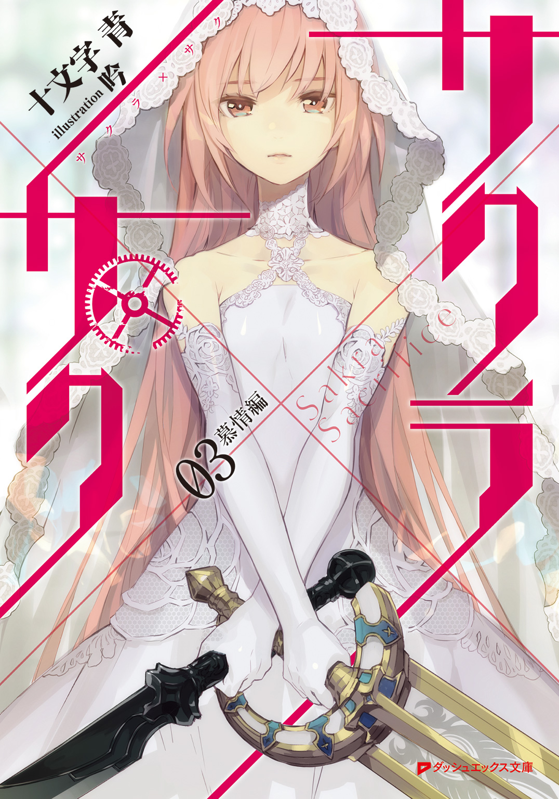
この本は縦書きでレイアウトされています。
また、ご覧になる機種により、表示の差が認められることがあります。
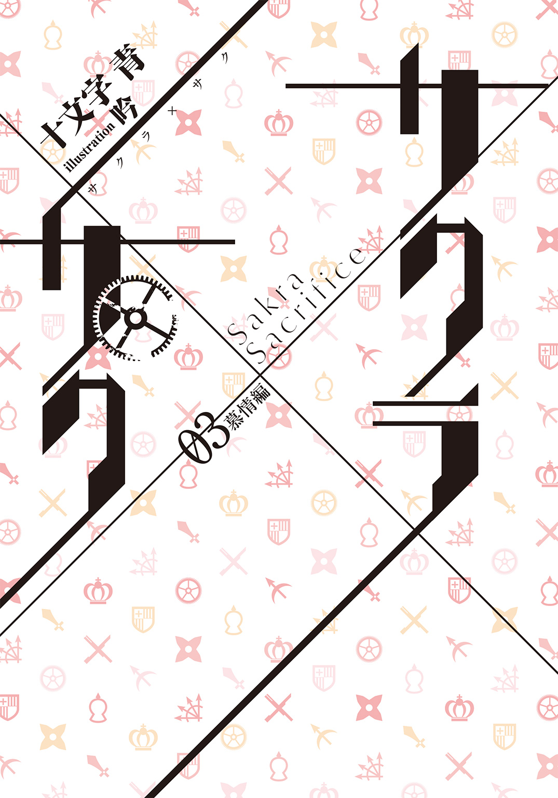
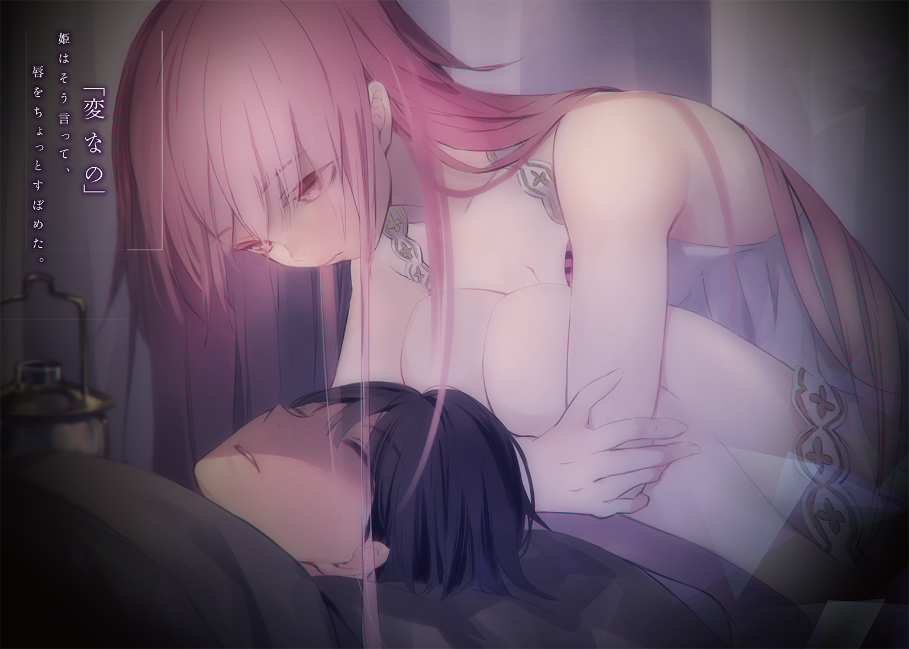
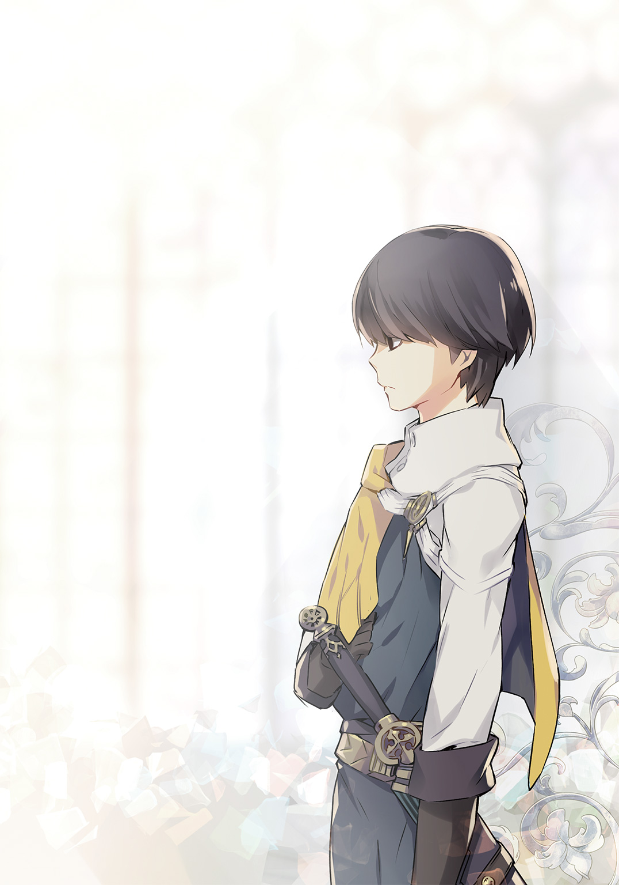
 ダッシュエックス文庫DIGITAL
ダッシュエックス文庫DIGITAL
サクラ×サク ０３
慕情編
十文字 青
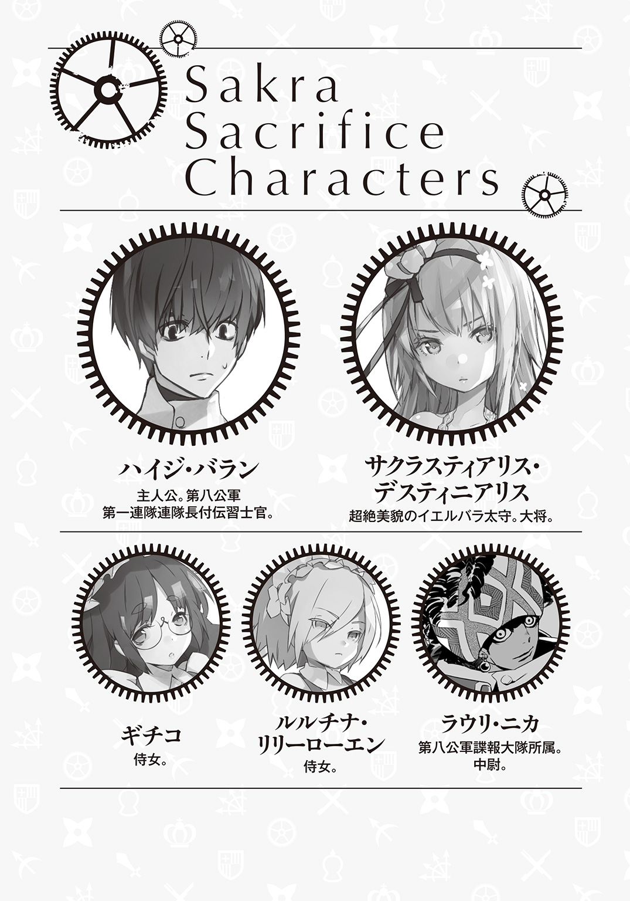
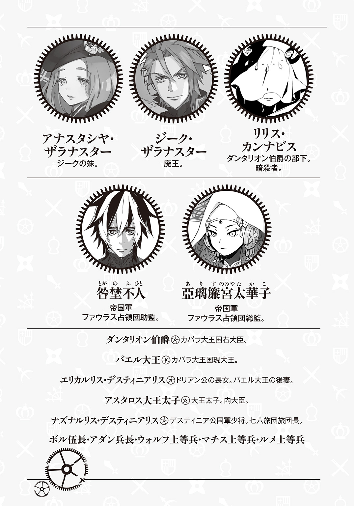
１ 宣告 PROMISE YOU NEVER
彼女は一人、進む。
翼を広げた鳥のような形状の武器搭載機材〝フェニックス〟を背負う彼女は、さながら歩く兵器だ。
その身に小型投剣革帯、腰には片刃剣、左手に四連装式弩を装着している上、フェニックスには四基の二十四連装式弩と、十字型投擲剣、片刃大長剣が据えつけられているのだ。全備重量は100キログル（約100㎏）を超えている。
それだけの重みに耐えつつ、彼女は前進してゆく。
向かう先には、土色の機骸をまとった機士、機士、機士、機士......雲霞のごとく押し寄せる、機士の大軍。
彼女は足を速める。
ついには走りだした。
丙機士たちが矢を放つ。驟雨のように降り注ぐ矢を、彼女は物ともしない。彼女は止まらない。速度をゆるめることもない。
彼女と機士たちとの距離が100メトル（約100ｍ）を切った。
90メトル、80メトル、70メトル――、
「ううううぅぅぅぅぅあああああぁぁぁぁぁぁぁ......！」
彼女の右手が鎖を引く。二十四連装式弩が猛烈な勢いで太矢を吐きだす。二十四連装式弩の有効射程は約200メトル、70メトル以下なら金属製の甲冑をも貫通する。
太矢を一本、二本と食らった機士たちがばたばたと倒れた。
二十四連装式弩は二十四の射出機によってなり、各射出機に六本の太矢が内蔵されている。射出口から太矢が放たれると、ただちに次矢が装塡されて、鎖を引きつづけるかぎり連続で発射される仕組みだ。
つまり、最大百四十四連射。
すべての太矢を撃ち尽くすと、彼女は次の鎖を引く。
さらに百四十四連射して、数十人の機士を倒しながら、彼女は進む。
今度は左手だ。彼女は左手で別の鎖を引く。左の二十四連装式弩が太矢をばらまきはじめた。また百四十四連射。
そして、最後の鎖。
「あああああああああああぁぁぁぁぁぁぁぁぁぁぁぁぁぁぁ......！」
百四十四連射。
合計五百七十六本の太矢を浴びせて、斃した機士は百人か、二百人か。
だが、文字どおり恐れを知らない人ならぬ機士たちは、かまわず味方の屍を踏み越え、彼女に向かってくる。
「無駄......！」
彼女はフェニックスから十字型投擲剣を取り外して投擲。数人の機士を十字型投擲剣で薙ぎ倒すなり、片刃大長剣を抜く。
フェニックスはもう邪魔なだけだ。素早くフェニックスを脱ぎ捨て、左手の四連装式弩をぶっ放して迫りくる機士を射倒す。白兵戦。いや、肉弾戦だ。
数人、いや、十人か、それ以上の機士たちが彼女に殺到した。大半は重槍を持って大盾で身を守る甲機士だ。
十本以上の重槍が彼女のほっそりした躰を無残に刺し貫く――、
否。
無理だ。
何物も彼女を傷つけることなどできはしない。
〝限り無く愛なき世界〟。
あらゆる打撃、衝撃を何倍にも増幅させて撥ね返してしまうその魔性の〝制約〟、反射されることのない苦痛が、彼女の精神を完全に引き裂いてしまうまでは。
甲機士たちが重槍ごとぶっ飛ばされた。飛ばされた甲機士が別の機士にぶつかる。結果、数十人の機士が折り重なって倒れた。
「おおおおおおおおぉぉぉぉぉぉぉぉ......！」
彼女はすかさず片刃大長剣を振りかぶって機士に襲いかかる。
機士たちの足が止まりかけている。
サクラスティアリス・デスティニアリス。
――姫。
「全軍突撃......！」
ローラン・ダンドリュー大佐が馬上で軍剣を掲げ、全軍を煽った。
「我らが総大将につづけ......！ クソ機士どもを皆殺しにしろ......！」
デスティニア公国ファウラス駐留軍の将兵たちが鬨の声を上げ、敵軍めがけて突進する。
先陣を切った姫に少し遅れて敵の只中に突入していったのは、体格からすると子供にしか見えない金髪の侍女だ。もっとも、子供にはあんな芸当、とても不可能だろう。
ルルチナ・リリーローエンは甲機士の大盾に跳び蹴りを見舞う。普通に考えればあっさり弾き返される。でも、そうはならない。手始めに甲機士をドーンと蹴飛ばしたルルチナは、別の甲機士の重槍を打ち払う。手甲をつけているとはいえ、素手で、だ。そうして甲機士の懐に入りこむと、その顎に拳を叩きこむ。一突きだ。小さなルルチナが、一突きでごつい甲機士を沈めてしまった。
魔性。
ルルチナもまた、魔性の持ち主なのだ。
そして、もう一人の侍女も――、
「かふうう......！」
謎の声を発しつつ、胸部のありあまる肉をぼよんぼよん揺らしながら、よたよた走っているあの女性がそうだとは、なかなか思えるものではない。
ただ、彼女が率いている――いや、位置関係で言えば、彼らは彼女の前にいるから、彼女のほうが連れられているかのようだ。しかし、事実は違う。
彼女の前に列をなし、姫、ルルチナのあとを追う恰好で敵軍に突っこもうとしている兵隊は、彼女の足許をちょこちょこ駆けている人形と同じく、彼女に操られている。
彼女――ギチコの血によって。
〝無慈悲な玩具〟。
彼らは大きな人形のような見かけで、頭部の形状はウサギみたいだったり、クマみたいだったり、ネコみたいだったり、イヌみたいだったりするが、槍と盾でちゃんと武装している。
見慣れていなければ冗談みたいな光景だ。
もっとも、彼らも機士と同じように恐れ知らずだし、一糸乱れず行動する。これ以上ないほど忠実な兵士たちだ。
姫とルルチナによって搔き乱されている機士の戦列に、ギチコの兵隊が突入してゆく。
そのころにはもう、ファウラス駐留軍のその他の将兵らも敵軍と剣を、あるいは槍を交えようとしていた。
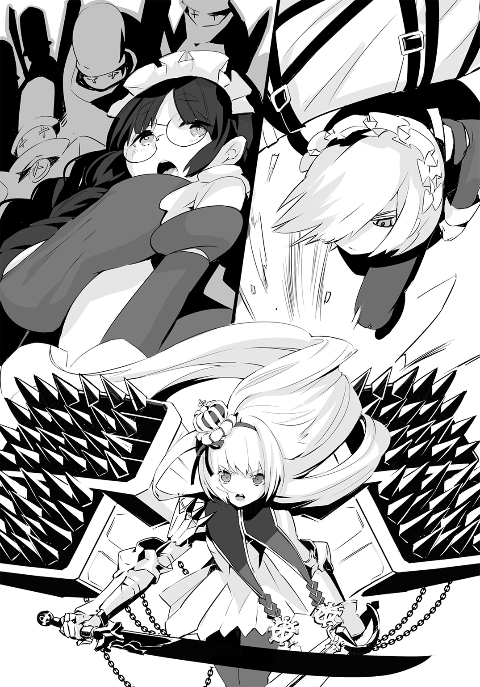
むろん、ハイジ・バランもその中の一人だった。
「百七斑......！」
ハイジは振り向かない。
「僕についてきてください......！」
騎兵のみでなるダンドリュー大佐のダンドリュー中隊が、敵軍の最前列に体当たり同然の突貫を仕掛けた。人間の兵なら恐慌に陥ってあっという間に潰走してしまうかもしれないが、相手は何しろ機士だ。すぐに態勢を立てなおす。そういう敵だとわかっていて、あんなふうに突貫できる者は決して多くないだろう。飄々としていながら、並外れて勇猛果敢なダンドリュー大佐ならではだ。
ハイジたちは、ダンドリュー中隊が敵軍に穿ったいくつもの穴に素早く入りこまなければならない。そうしないと、すぐに塞がってしまう。強引にでも押し入って、穴を広げ、深く、深く掘り進めるのだ。
そのために、斬れ。
鈍重な甲機士の素っ首を、すれ違いざまに刎ねろ。
二人目の甲機士の大盾を蹴りつけて体勢を崩させ、やはり首を斬り飛ばしてしまえ。
三人目の甲機士は、後ろに回りこんで首筋に剣をぶちこんでやった。
四人目の甲機士の膝を足蹴にしながら、五人目の甲機士の首と胴体を斬り離して、四人目は髭面のボル伍長以下、百七斑の皆に任せた。
獲物はまだまだいる。
いくらでも。
不壊の剣、ワイバーン。
第八公軍司令ピエール・アルトレッド中将から授けられたこのカバラの剣で、斬って、斬って、斬りまくってやる。
一人残らず。
「――やらなきゃいけないんだ......！ 僕は......！」
そうだろう？
もちろんだ。あたりまえじゃないか！
だって、姫が戦っている。デスティニア公国公家に魔性を持って生まれた責任を果たすために。戦って、一人でも犠牲を減らすべく、誰よりも我が身を危険にさらして戦って、国を、民を守るために、姫が戦っている。
姫が戦ってるんだよ！
あの隅から隅まで美しい躰には傷一つつくことがないとしても、痛いはずなのに、痛くてたまらないはずなのに、泣き言一つもらすことなく、姫は戦っている。戦いつづけている。
ファウラスを陥落させてから二ヶ月、帝国軍は何度となく攻めてきた。小競り合い程度のこともあれば、今日のように会戦に至るケースもあった。
じつに、そのすべてだ。誰が止めても聞き入れず、姫はそのぜんぶに参加した。
もういいですよ。いくらなんでも、そこまでやることはないんだ。充分です。ハイジだけじゃない。みんなそう思っている。駐留軍の全将兵だ。お願いだから、休んでください。どうか、我々に任せてください。我々だってやれる。戦える！
直接、面と向かって言うチャンスがあれば、僭越ではあるが、どんな処分を受けてもかまわないから、言う。――チャンスがあれば。
ないのだ。
もう侍官じゃないし！
姫の直掩は第五連隊だし！
ハイジ・バランは第一連隊連隊長付伝習士官でしかない。連隊長のダンドリュー大佐か、その副官エミール・ブリュレ大尉の命令を受けて動く。ほとんど何でも屋だが、あくまで所属は第一連隊だ。
同じ戦場に立つことはできても、姫のそばで戦うことはできない。軍人にとって、持ち場を離れるのはもっともやってはいけないことだ。ハイジは軍人で、しかも士官で、主にボル伍長、アダン兵長、ウォルフ上等兵、マチス上等兵、ルメ上等兵の百七斑五名を率いて任務に当たる。部下までいる身なのだ。勝手は許されない。
ハイジは、己のなすべきことを懸命にやり遂げるしかない。
姫が戦っているのだから、せめてハイジも戦う。
それしか、できることはない。
敵を斬って、斬って、斬って、斬って、斬って、斬って、斬って、斬って、斬って、斬って、斬って、斬って、斬って、斬って、斬って、斬って、斬って、斬って、斬って、斬って、斬って、斬って、斬って、斬って――はっと我に返り、百七斑は無事かと思う。振り返る。五人とも近くにいる。
「我々は大丈夫ですよ、少尉！ ぞんぶんにお戦りください！ ちゃんとついていきます！」
ボル伍長が笑ってくれる。
「はい、おやっさん......！」
ハイジは前に向きなおって、斬る。あちこちで、姫様、姫様、と叫ぶ声がする。姫様をお助けしろ！ 姫様をお一人で行かせるな！ 姫様に負けるんじゃない！ 万歳！ 姫様万歳！
いつからだろう。気がついたら、駐留軍の全将兵が敬愛をこめて、サクラスティアリス・デスティニアリス大将を、姫様、と呼ぶようになっていた。
ハイジとしては少し複雑だった。まるで、みんなの姫になったみたいで。
いいんだけど。
そうだ。いいことだよ。
姫は守り神だ。姫がいるからこそ、駐留軍は再三の攻撃を最小限の被害で押し返し、ファウラスに踏みとどまることができている。姫は黙して語らないが、常に姫が先頭に立って戦う理由なんて、誰にでも見当がつく。馬鹿でもわかる。――我々のためだ！
姫がいるから、ハイジたちは戦える。今日まで戦いつづけてこられた。
だから、今度は姫を勝たせたい。
この戦いでは姫に勝利を捧げたい。
ああ、でも姫はやっぱり、もっとも多くの機士を引き受けて、痛みをこらえ、敵を粉砕して突き進んでいる。
姫は、遠い――。
×
いまだ焼け跡も生々しい、とは言わないまでも、焼け落ちた主郭にせよ、大半の建物が全半焼した主要な商工業区の大部分にせよ、ほぼ手つかずだ。他に行き場もなく、荒廃した城市内にやむをえず居住している市民は、千人を超えないだろう。
七六旅団はファウラス攻略後、間もなくイエルヴァラに呼び戻された。ファウラス駐留軍の陣容は、第八公軍の第一、第四、第五、第七連隊の八千人足らずだ。
これに、常駐の非戦闘員が五百人ほど。そして、千人余りが物資輸送や負傷者を後送するためにイエルヴァラ、ファウラス間を往復している。
城門を閉ざして守兵を配置していても、もし帝国がこちらの二倍、三倍の機士を繰りだしてきたら、きっと長くは保つまい。
「......わたしらしくもない」
サクラは城壁の上を歩きながら弱い風の匂いを嗅いでいた。
何度目かの防戦を日が昇っているうちに終えて、もうすっかり夜が深まっている。
「あっ、姫様！」
一定間隔で配置されている見張りの兵がサクラを見つけて、笑顔で敬礼した。
こんなとき、どうすればいいのか。サクラには皆目わからない。
ただ、無視するのはよくない――ような気はなんとなくするので、うつむくついでに軽くうなずいてみた。
「姫様、見回り、お疲れさまです！ どうか、お気をつけて......！」
「っ......」
違うのに。
サクラはべつに、見回っているわけじゃない。かといって、弁解することもできず、足早に見張りの脇を通りすぎる。
「姫様にお会いできるなんて、運がいいな、俺......」
見張りがそんなことを呟く声を聞いてしまって、胸苦しくなった。――何なの、いったい。おかしいんじゃない？ 意味不明。こっちまでおかしくなりそう。
「......わたしは、ただ――」
今だって、寝つけなくて、ルルチナやギチコについてくるなと言い渡して散歩に出ただけなのだ。見回りなんかしていない。そんなことは考えもしなかった。
ファウラスに第八公軍の半分を留め置いている、上の――デスティニア公国軍総司令部、ひいてはサクラの父であるドリアン公の判断についても、疑問こそあれ、批判はできない。深く考えていないからだ。
サクラはイエルヴァラ太守の任を解かれ、中将に昇進したナズナルリス・デスティニアリス、あの出来のいい妹が新太守に据えられた。そのことに対しても、とくに感慨はない。サクラはファウラスを陥落させるまでの間に大きなポカをやらかした。ナズナは副将でありながら実質的には遠征軍を統率して、目標達成に多大なる貢献をした。資質からいっても、ナズナのほうが太守にふさわしい。正直、もともとサクラには荷が重かった。
戦う以外、能がない自分は、一兵卒でもいいくらいだ。サクラは本気でそう思っている。
難しいことは考えたくない。
どうせ考えられない。
目の前に敵がいたら戦う。戦って、排除する。それだけでいい。
実際、そうしてきた。
それだけなのに、何なの？
「あっ、姫様！」
まただ。また見張りが。しょうがないことではある。見張りの兵は一定の間隔で置かれているのだから。城壁の上を歩いていれば、どうしても見張りに出くわす。
「姫様、昼間の戦い、お見事でした！ 胸が熱く――」
だけど、もういやだ。耐えられない。サクラは城壁から身を投げた。
「ああっ......！ 姫様......!?」
身投げしたところで死ぬこともできない、呪われた我が身だ。サクラは何メトルだか知らないが落下して、着地した。
両足から全身へと恐ろしい痛みが伝わって広がる。脳が焼けそうだ。だから何？ 痛みなんて慣れっこだ。どうせ躰が壊れるわけじゃない。いっそめちゃくちゃに砕けてしまえばいいのに、びくともしない。
「姫様ぁぁ......！」
見張りが叫んでいる。サクラは駆けだした。逃げろ。廃墟のような街並みを、走って逃げるしかない。
でも、何から逃げているのか？
わからない。
どこまで逃げれば、逃げおおせるのか？
わかるはずもない。
考えたくない。敵が現れればいいのに。そうすれば簡単だ。戦えばいい。敵を倒せばいい。敵だけだ。必要なのは、敵だけ。あとは何もいらない。だとしたら、ここは理想的だ。ファウラス城市から一歩出れば、イエルヴァラへと繫がる細い補給線をのぞいて、帝国領なのだから。敵に囲まれている。敵しかいない。味方さえいなければ。自分一人でいいのに。
四つ辻の真ん中で足が止まった。
道は前後左右に延びているのに、どこにも行けないような気がした。
「敵......敵......敵......敵が、いれば......敵......敵......敵......敵......敵、敵、敵、敵、敵......」
これは罰なのか？ 父は、ドリアン公は、またサクラに罰を与えているのだろうか？ 物心がついたころからずっとそうだったように？ もしそうなら、自分一人にして欲しい、とサクラは願う。みんな引き払わせて、サクラだけを残せばいい。そうすれば、サクラはドリアン公の望みどおり、魔性が果てるまで一人で戦う。ちゃんと死んでみせる。
サクラは髪の毛を引っかきまわす。
「......やめて......お父様......もう、誰も苦しめないで......わたしだけでいいから......」
それとも、これも罰なのか？
サクラにとっては、一人きりじゃないほうが苦しい。そこまで見越した上で、ドリアン公はあえてこうしているのか？
馬鹿らしい。
サクラ一人をどうこうするために、そんなことをするものか。きっと、ファウラスを確保しないといけない政治的な事情とか戦略上の理由とか、そういったものが何かあるのだろう。そのために、サクラを利用しているのだ。サクラの魔性を。第八公軍の将兵たちを。
士官にも下士官にも兵卒にも、家族や親類、友人がいるのに。彼らだって命は惜しいだろうに。サクラとは違うのに。
こうなったら、一人で討って出るというのはどうだろう？
単身、帝国領内に突っこんでゆくのだ。機士を見かけたら、手当たり次第斬り伏せる。そして、どんどん進んでゆくのだ。行けるところまで行く。この手で皇帝とやらを殺す。そうしたら、戦いは終わるだろうか？
できっこない。
皇帝の居場所さえ、サクラは知らないのだ。
何も知らない。
何一つ。
立ちつくしていると、足音が聞こえてきた。近づいてくる。巡回の兵だろうか。でも、明かりを持っていないようだ。
もしかして。
――もしかして、何？
何だっていうの？
サクラはなぜか狼狽した。
慌てふためいているうちに、真っ暗な闇の向こうから彼が姿を現して、びくっと跳ねあがるようにして立ち止まった。
「あ、あ、あっ、あ、ああ、あ、あああああやややややややっぱり......いやでも、まさかっていうか、なんていうかその......」
サクラは下を向いて、歯を食いしばった。
だめだ。どうしても彼の顔を直視できない。
全身が震える。
何？ 何なの、これ？ 怖い？ 怖がっている？ 何を怖がることがあるのだろう？
「え、えええ、えええええと、その、ぼ、僕はあの、ランニングっていうか、眠れなくて、ちょっと走ってたんですけど、ひ、ひ、姫......いや、あのた、たたたたた、大将、閣下、は、こ、ここここんなおおおおおおおお時間に、な、何を......いぃぃぃや、そ、そんなのあれですよね、なんていうか、教えてもらうあれはないっていうか、つつつつまり、あの、その、ぼ、僕はもう、あれなので、侍官じゃないので......」
「そのとおり」
きっぱり言ったつもりだった。
図らずも、声が揺れてしまった。
顎が、がくがくする。
胸が痛い。潰れてしまいそう。
「少尉は、わたしの、侍官じゃない」
一語一語、力をこめ、区切って言った。そうしないと、ちゃんと声にならないのではないかとサクラは恐れた。
「で、ですよねええええええ!?」
少尉は大声でそう言ってから、ははは......と弱々しく笑った。
「そ、そうなんですよねえ......も、もちろん、わかってます。こうやって、ちょ、直接、お話しさせて、いただくのも......畏れ多いというか、な、な、何だろう、ぶ、分不相応と言いますか、そうですよね、はい、ほ、本当に、申し訳ありません......」
怖い？ サクラは怖がっているのだろうか？ 何か違うような......？
腹のあたりが熱い。何か熱いものが腹の底からせり上がってきて、潰れそうな胸を焦がす。
サクラはまだ震えている。でもこの震えは、さっきまでのそれとは違う。
頭にきている。
腹が立ってしょうがない。
何に対して？ 誰に？
まあ、普通に考えれば、決まっている。
少尉だろう。
「......何を、謝ってるの」
「え」
「何を謝ることがあるの」
「いや、あの、ぼ、僕は、その......」
「謝らないで」
「は、はい！ ひ、姫がそう、おっしゃるのでしたら......」
イライラする。何なの、この男。戦場では別人みたいなのに。まるでサクラを恐れているかのようだ。そんなに怖い？ 怖いのかもしれない。魔性持ちだし。でも、それは少尉だって同じだ。あのときも――それから、あのときも、人間離れした戦いぶりだった。けっこう、すごかった......と、思う。客観的に見て。それなのに、何？ この様は。てんではっきりしない。気弱そうで、頼りなくて、うざい。雑魚っぽいし、気持ち悪い。邪魔くさい。
サクラは回れ右をして歩きだした。
「あぁっ!? ひ、姫......!?」
呼び止められて――なぜ、止まったりしたのだろう？
相手はうざくて、気持ち悪くて、邪魔くさい、元サクラの侍官で、今は違う、ハイジ・バラン少尉なのに。
「何」
「え、ええっと、いや、あの、とととととくに、な、何も......」
「じゃあ、声をかけないで！」
「......す、すみませんでした。申し訳ありません......」
「っ......！」
眩暈がする。もう躰中の血が沸騰して、頭が爆発しそうだ。
サクラは、今度は走った。
「あ、ひ、姫......！」
性懲りもなく。
サクラは当然、止まったりしなかった。
「隣ではないですけど......！ 僕、姫と一緒に戦わせてもらってます......！ 駐留軍のみんなが......！ 姫は、決してお一人じゃないです......！」
「ばか......！」
思わず叫んでしまった。
やっぱりそうだ。
サクラは確信した。
――わたし、少尉のことが、嫌いなんだ。
×
「......昨夜はせっかく、お会いできたのになあ......」
ハイジは、くっふふふ、と笑った。なぜ笑っているのか、自分でもさっぱりわからない。
「やっぱりなあ......身分が違うしなあ......勘違いしちゃだめだってことだよなあ......そりゃそうだよなあ......あたりまえだよ......くっふふふ......馬鹿だなあ、僕......馬鹿って、思いっきり言われたしなあ......そのとおりでーす......くっふふふ......いやいやいやっ！」
激しく頭を振る。
「こんなこと考えてる場合じゃないぞ、ハイジ・バラン！ 僕は士官なんだっ！ 士官、士官、士官！ しっかりしろ！ えい、えい、えーい......！」
びたーん、びたーん、と頰を叩いて気合いを入れた。
「少尉......」
声をかけられてから、一人じゃなかったことを思いだした。
「はっ！ あ、は、はい!?」
振り返ると、ボル伍長が髭面を引きつらせていた。
「あー、その――大丈夫ですか」
「だだだだ大丈夫ですよ!? 元気です、僕は元気！」
「まあ、少尉は何のかの言って、たいていいつも、お元気そうではあるんですが......」
ボル伍長だけじゃなくて、あとにつづくアダン兵長、ウォルフ上等兵、マチス上等兵、ルメ上等兵も怪訝そうだ。というか、気遣わしげなのか。
心配されている。心配させてしまっているのだ。
ハイジと百七斑は城市内の巡視を終えて、報告のため、駐留軍司令部に戻ろうとしていた。それで、気がゆるんでいたのだろう。
「す、すみません！ しっかりします！ さあ！ 司令部に帰投しましょう！」
無理やり足どりを軽やかにして、司令部を目指す。仕事だ。まだ仕事中なのだから、とにかく仕事に専念しよう。それが一番だ。それしかない......。
市北西部はいわゆる屋敷街で、火災による被害が比較的少なかった。駐留軍は、その中でもひときわ大きなお屋敷と、その庭に張った大小の天幕や、近隣の建物数棟に、司令部の機能を集中させている。
駐留軍司令である姫はもちろん、お屋敷にいる――はずだ。頻繁に脱走するみたいだが、敵を迎え撃つときをのぞけば、市外に出ていってしまうことはないらしい。伝え聞くところによると、軍議にもちゃんと出席しているという。
あの姫が。
姫はしっかり役目を果たしている。
なので、姫は今、お屋敷の中にいるだろう。
ボル伍長以下百七斑を門の前で待機させ、ハイジはお屋敷の敷地に足を踏み入れた。お屋敷の中に飛びこみたいのは山々だが、残念ながらそうもいかない。用があるのは庭の天幕だ。
天幕の中では、小柄で癖毛ボーボーで童顔で根暗そうなラウリ・ニカ中尉と数名の士官が、机の上の書類だの何だのとにらめっこしていた。全員、忙しそうで、入ってきたハイジには見向きもしない。
エミール・ブリュレ大尉ら第一連隊の幕僚は大半が駐留軍司令部に異動して、第一連隊司令部は現在、第八公軍諜報大隊出身のニカ中尉たち若手の士官によって運営されている。
こういった場の空気は、良きにつけ悪しきにつけ中心人物の個性に左右されるものだが、まさしく今の第一連隊司令部はニカ中尉っぽい。
「ハイジ・バラン少尉であります！ 市中巡視の報告にあがりました......！」
敬礼して言うと、ニカ中尉はちらっとハイジを見て、
「ヤー」
とだけ返した。
これだ。これがニカ中尉なのだ。無口というか、無駄なことは一切喋らない。返事はたいてい「ヤー」。本人曰く、そのヤーは肯定でも否定でもあるという。どっちだよ！
ハイジはニカ中尉が感情を露わにするところを一度も見たことがない。常に何か考えているようだが、何を考えているのかは不明だ。
変わった人だなあ、と思わずにいられない。でも、有能だ。それは間違いない。おかげで、ブリュレ大尉が駐留軍全体を見るようになってからも、第一連隊は何の問題なく動いている。これはとてもすごいことだ。それにしても、変わってるよなあ......。
ハイジが必要事項の報告をしても、ニカ中尉はうなずきもしない。聞いているのやら、いないのやら。
まあ、毎度のことだ。
「それでは、失礼いたします！」
退出しようとしたら、
「あ」
と、ニカ中尉が右手をあげて、人差し指を動かした。こっちへ来い、ということ......？
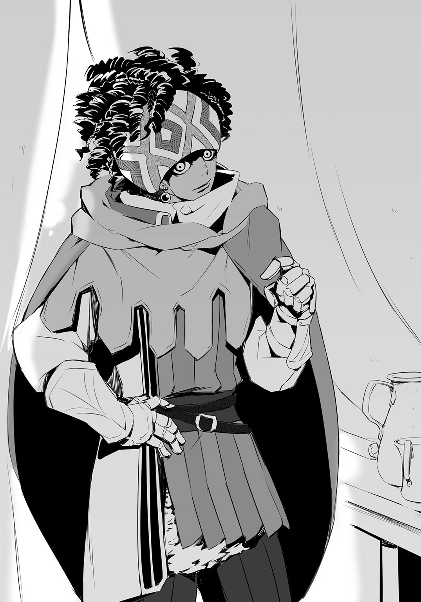
ちょっと迷ったが歩み寄ると、ニカ中尉はハイジを見ずに呟くように言う。
「まだ公表されてないが、駐留軍は近日中に撤収を開始する。当然、本国からの命令で」
「あ......そうなんですか。てっ――えええええええええええええええええええええええええええええええええええええええええええええええええええええええええええええええ......!?」
吃驚仰天して、つい大声を出してしまった。
ニカ中尉は表情こそ変えなかったが、耳を塞いで、
「うっせーな......」
「もっ、申し訳ありませんっ」
意外と口が悪いんですね......!?
――と思ったが、言わないでおいた。
え、でも、撤収？ 本国からの命令で？ ということは......？
イエルヴァラに戻る、ということだ。あたりまえか。
帰れるのだ。
やっと。ようやく。
「......喜ぶべき、なんでしょうか。で、でも、というか、ともあれというか、我々駐留軍は、被害を最小限度に抑えて、よく防戦したのではないかと......」
「ヤー」
だから、それって、はい？ いいえ？ どっちなの!?
ニカ中尉は唇に人差し指を当ててみせた。
「とりあえず口外無用で」
「は、はい！ 了解しました！」
もっとも、わざわざハイジが言い触らしたりしなくても、その情報はあっという間に駐留軍中に知れ渡った。
その翌日には撤収の用意が始まった。
×
来たときはあんなに大変だったのに、帰り道は旅行のようなものだった。
それはむろん、ファウラス駐留軍の全将兵と輜重等々にたずさわる非戦闘員が、可及的速やかに準備を進めてくれたおかげだ。それに、幕僚たちは知恵を絞って、適当な時機を見計らってくれた。
サクラとしては、喜びも安堵もなかった。
あくまで、サクラ個人としては。
ただ、みんな帰りたかっただろう。将兵にとって、ファウラスに踏みとどまって戦う理由といったら、せいぜい、命令だから、命令には従わざるをえないから、というくらいしかなかったはずだ。それくらいのことは、サクラも理解していた。
だから、よかった......のだろう。
バエル大王38年七月二十六日。
ファウラス駐留軍はルヴァラ廃地を抜けて、およそ三ヶ月ぶりにイエルヴァラに帰還した。
その日、イエルヴァラ北門は開け放たれ、多数の兵、市民が列をなして、駐留軍を城市内へと迎え入れた。
北門上の楼閣には、太守公衣を身に纏った新太守ナズナルリス・デスティニアリス中将の姿があった。
城市に入るとすぐ、第八公軍司令ピエール・アルトレッド中将が、幕僚長リオネル・カーター大佐以下、第八公軍の精鋭を引き連れて、駐留軍に敬礼した。
先頭のサクラが黙って返礼すると、第八公軍や市民からどよめきが起こった。
ただ、ちゃんと礼を返しただけなのに。
むかっときたが、太守だったころは、たしかに何事も無頓着というか、おざなりだったかもしれない。
「姫......」
ピエールはなぜか、涙ぐんでいる。
「しばしお目にかからない間に、ご立派になられて......」
「なってないっ」
相手が虚弱体質のピエールでなければ、ぶっ飛ばしてやるところだ。
「......そんなのどうでもいいから、みんなを早く休ませてあげて」
「おお、姫」
ピエールはふらついて、カーター大佐に支えられた。
「なんと......なんと尊いお心ばえ......ごふっ、ぐふっ、がうげふっ......」
「あなたも休んだほうがいいんじゃない......」
「いえいえ、私は平気で――ごほっ、ぐはっ、べふっ......」
「大佐、ピエールを下がらせて」
「はっ。――さあ、司令」
カーター大佐がピエールを抱きかかえるようにして脇へ連れてゆく。すぐさま別の士官が車椅子を持っていって、ピエールを座らせた。
「まったくもう......」
サクラはため息をついた。振り返って、北門上の楼閣を見やる。――ナズナ。
妹がほとんど平たい胸を張って、姉を見下ろしている。少し距離があるので、表情まではよくわからない。
どうでもいいことではある。
妹がどう思っていようが、サクラには関係ない。
先にナズナがファウラスを発った際も、姉妹は通りいっぺんの挨拶しかしなかった。いや、通りいっぺんとは言えないか。
『それじゃあ、お先に失礼するわ。このナズナが就任したその瞬間、太守じゃなくなる無能なサクラ馬鹿姉様』
『ばいばい』
何しろ、これが二人の間で交わされた唯一の会話なのだ。
放っておいても、どうせ妹はうまくやるだろう。サクラなんかに口出しされたくはないだろう。サクラも言うことなんてない。
どうでもいい。
面倒くさい。
何もかも。
「サクラ様」
後ろに控えているルルチナに声をかけられた。
「ええ」
サクラはうなずいて前に向きなおり、歩きだした。
不意に思った。
このまま主郭に行って、それから、サクラはどうすればいいのだろう？
イエルヴァラの主郭にはもう、サクラの居場所はない。駐留軍は解散するので、将兵たちは第八公軍の駐屯地に戻って原隊復帰みたいな形になるのだろうが――サクラは？ 何か、誰かに言われただろうか？ 命令書に何か書いていなかったか？
たしか、駐留軍をイエルヴァラに帰還させる、というようなことしか、命令書には書かれていなかったような気がする。自信はないが、たぶん。
それで自分の仕事は終わりなんだ、お役御免なんだ、というふうにしか思っていなかった。その先のことなんか、これっぽっちも考えなかった。
正直、ファウラスを離れてから今に至るまで、サクラはなんだかぼんやりしていた。
ようするに、いつもどおりだ。どうでもいい。
――でも、どうすればいいの......？
ともかく、終わる。
もうすぐ終わろうとしている。
サクラは目を伏せて黙々と歩いた。歓声に応える気にはなれなかった。勝ったわけでもない。何も得ていないのだ。
そうじゃない、と考えたりもした。通りの両側に集まっている人々の中には、将兵の家族や友人、恋人もきっといるだろう。だとしたら、彼ら、彼女らは、単純にその帰りを喜んでいるに違いない。
それはよかった、と素直に思える。
でも、死んでしまった者もいる。
サクラがもっと上手に戦っていれば、もっと強ければ、死なずにすんだ者だっていたかもしれない。
少なくとも、サクラには将兵の生還を喜ぶ資格はないだろう。命を落とした者が一人でもいれば、それはサクラのせいなのだ。
「......消えたい」
こっそり呟いてみた。
やがて、行く手にそびえる主郭の前に、一人の男がたたずんでいることに否応なく気づかされた。
男は猫を模した面で素顔を隠している。
あのくそったれ。
男の前で立ち止まる前に、サクラは胸の裡でそう罵った。すると、男はそれが聞こえたかのように笑ってみせた。面をつけたままで男の顔はわからないのに、どうしてか嗤っているように見えた。
「やあ。お帰り、サクラ」
デュランタリアン・デスティニアリスが、ただ妹を出迎えるためにここにいるとはとても思えない。太陽が北から昇って南に沈むよりもありえない話だ。
公国軍少将で、特立監軍にして軍特使、さらにはドリアン公のみの命を受けて特殊な任務を遂行する特別査問官でもある。
そうか、とサクラは納得した。
――デュラン兄様。
ファウラス攻略を命じられたときと同じように、またもやこの男に運命を申し渡される。どうもそういうことらしい。
きっとろくでもないことが待っている。それを聞かされた妹がどんな表情をするのか。デュランはさぞかし楽しみにしていることだろう。
この男を愉快がらせてやる義理はない。
何を言われようと、決して動揺はすまいとサクラは心に誓った。
「サクラスティアリス・デスティニアリス大将に......！」
――と、後ろから声があがった。
一人や二人じゃない。数十人の男が同時にサクラの名を呼んだのだ。不意を突かれて、サクラはつい、振り向いてしまった。
サクラのあとに列をなしている駐留軍の全将兵が、一人の例外もなく背筋をぴんとのばし、直立不動の姿勢をとっていた。
ルルチナや、ギチコや、チヌコや、人形の兵隊まで。
第一連隊連隊長ローラン・ダンドリュー大佐が、無精髭をこびりつかせた男臭い顔をにやりと笑わせた。
「我らが姫様に......！」
ダンドリュー大佐が言いなおすと、将兵たちが一斉にそれに倣った。
「――我らが姫様に......！」
「敬礼......！」
ダンドリュー大佐の号令一下、全将兵が同時に敬礼した。
サクラは動けなかった。
息もできない。
目が痛い。
まばたきをしないと。
背筋や肩甲骨のあたりがぞくぞくするのは何だろう？ 寒いのか？
気持ち悪い。
具合が悪くてしょうがない。
この人たちは、おかしい。
いやになる。
逃げたい。どこか遠くへ行きたい。胸が苦しい。何かが詰まっている。空気だろうか？ そんなにたくさんの空気を吸いこんだ覚えはないのに。いずれにせよ、吐きだせばいい。でも、息を止めていたほうがいい。そう思える。
何か、出てきそうで。
今、息を吐いたら、こぼれてしまいそうで。
「おめでとう」
手を拍つ音がした。祝うでも、讃えるでもなく――揶揄するように。
サクラはかっとしてデュランに向きなおった。
デュランは拍手しつづけた。
「おめでとう、サクラ。兄として、とても嬉しいし、鼻が高いよ。こんなふうに兵たちから感謝され、敬意を集め、親しみさえ持たれているなんてね。あのサクラが！ 正直、意外でもあるよ。その驚きも、ぼくにとっては喜びだ。望外の、と付け加えてもいい。がんばったんだね、サクラ。そして、みんな、おまえのがんばりを認めてくれたんだ。評価してくれている。偉いね、サクラ」
「黙って」
「ぼくが？ どうして？」
「......侮辱しないで」
「誰が？ ひょっとして、ぼくが？ 誰を？ おまえを、かい？」
「わたしのことは、どうでもいい」
「そんなことはないよ、サクラ。どうでもよくなんかない。おまえはぼくの大事な妹だ。もちろん、おまえを軽んじることも、辱めることも、ぼくは望んでいない。もしそう感じたのなら、謝ろう」
「わたしのことはどうでもいいと言った！」
「じゃあ、ぼくが誰を侮辱していると言うんだい？ もしかして、きみの兵たち？ だとしたら、心外だな。ぼくは我が公国のために身命を惜しまず戦う兵らを心から敬っている」
「戯れ言はよして」
「ぼくは真面目だよ。常にね」
「そう言うなら、お面くらい外したらどう」
「ぼくの美しい顔を見たいのかい？」
「っ......！」
「そう怒るなよ、サクラ。おまえにはもっと、しとやかになってもらわないと困る」
「無理」
「無理でも何でも、おまえはそうしないといけないんだよ、サクラ」
デュランは猫を模した面を外した。
やっぱり、嗤っている。
この男はいつだってこうだ。
嫌いだ。
サクラはこの男のことが心底、嫌いだ。
大嫌いな男がおもしろがるところなんて、見たくない。絶対、喜ばせたりしない。
サクラは身構えた。デュランが次に何を言っても、ああそう、だから何？ と受け流してやる。できるはずだと思った。デュランは急に真顔になった。
「だって、おまえはこれからカバラ大王国のアスタロス大王太子殿下に嫁ぐんだからね。少しは女らしくしないと、今のままじゃあ、先方が扱いかねるだろう？」
×
この太守執務室、不届き千万なことに先代太守はほとんど使っていなかったらしい。ゆえにわりときれいだったが、すてきに改装して見栄えも機能性も十倍以上高めた。
当然、椅子は真っ先に座面の高いものに換えた。
着座した太守が入室者に見下ろされるようではいけない。椅子に座っていても、太守は他の者たちを見下ろせる。そうでなくてはならない。
ナズナは太守の椅子に腰かけ、優雅に脚を組んで、ゆったりと腕組みをし、あでやかに少しだけ首を傾けていた。
「ふっ......」
微かに笑う。
「いい気味だわ、馬鹿姉様」
「――ナズナ様？」
執務机の傍らに侍っている親衛隊長〝Ｘ〟隊長アンドリュー・パルマーが、日焼けした顔を上に向けてナズナを仰ぎ見た。
「何かおっしゃいましたか......？」
「いいえ。何も言っていないわ、パルマー」
「さ、左様でございますか......！ 私としたことが、空耳とは......何たる不覚！ どうか、どうかこのパルマーめに、罰を！ 罰をお与えください......！」
「しょうがないクズね」
ナズナは執務机に置いてあった文鎮をパルマーめがけて投げつけた。パルマーはもちろん、よけずに額で文鎮を受け止める。ガツッと、なかなかいい音がして、七三分けにしたきらびやかな金髪が乱れた。パルマーの額に血がにじんだ。
「文鎮！ いただきました......！ ああ！ ナズナ様の文鎮......！ ありがたき！ ありがたき幸せ......！」
「ふんっ。勝手に幸せになるなんて、図々しいにも程があるわ」
「申し訳ありません！ ですが、このパルマー、こうしてナズナ様にお仕えする一分一秒が、筆舌に尽くしがたい幸福なのです......！」
「とんだ幸せクズ野郎というわけね」
「まったくもって、おおせのとおりでございます......！」
「幸せ――」
ナズナはたおやかな指で形のいい顎をそっとつまんだ。
「望まぬ結婚を強いられた女は、幸せになれるのかしら」
「はっ......？」
パルマーは血をぬぐいもせずに碧眼をまたたかせた。
「結婚、でございますか......？ それは――しかし、多少なりとも身分ある者の結婚となりますと、たいていは望んでするものではないと存じますが」
「あら、パルマー。ずいぶん月並みなことを言うのね」
「はっ......！ 申し訳ありません......！ このパルマーめは、生涯、ナズナ様にお仕えし、身も心も無に帰するまで捧げさせていただくつもりでおりますので、結婚などには終生、縁がないものと......！ ゆえに、結婚という事象についての理解が世人より深まることもないのだと申し上げれば、これは見苦しい言い訳になってしまいますので、パルマーめの無知蒙昧をお責めいただければ幸い至極に......！」
「いいのよ。たいしたことじゃないわ」
「――僭越ながら、令姉殿下のことでございますか......？」
「パルマー！」
「ははっ！」
「余計なことを......！」
きつくお仕置きしてやりたくなったが、ナズナは思いとどまった。
姉のこと。
たしかにパルマーの言うとおりだ。サクラスティアリス・デスティニアリス。ナズナはあの馬鹿姉のことを考えていた。
ナズナは脚を組み替えて、下唇を軽く嚙んだ。
「お父様とフリージアン兄様は前々からアスタロス大王太子との縁組みを狙っていたわ。それはナズナもわかっていたのよ。でも、花嫁候補はアマリリス姉様だとばかり――」
「いずれにせよ、むごいことですな......」
パルマーがめずらしく沈痛な面持ちで言った。
「アスタロス大王太子のご高名は、つとに知られております」
「アマリリス姉様なら、案外うまくおやりになるんじゃないかとナズナは思っていたわ。アマリリス姉様は、ご自分一人の世界をお持ちになっている方だから。それに、ちゃんとお立場をわきまえていらっしゃる。あの馬鹿姉様とは、違う」
「ナズナ様は......」
パルマーは言い淀んだ。
ナズナは顎をしゃくってみせる。
「何？ 言ってごらんなさい、パルマー」
「はっ――......ナズナ様は、サクラスティアリス殿下の身を案じておられるのですか......？」
「そう見える？」
とっさに怒らなかったことが、ナズナ自身、予想外だった。パルマーも驚いている。
「くだらないわ。そんなわけがないでしょう？ なぜ、ナズナがあの馬鹿姉様のことを心配なんかしなきゃならないのかしら。ただ――」
「ただ......？」
「言うまでもなく、これはとても重要な縁談なのよ。周知のとおり、もはやカバラ大王国には往時の力はない。とはいえ、名目上の宗主国であることに変わりはないわ。我がデスティニア公国がエーデルラント、ロンダール両公国を従えるためには、カバラ大王国が持つ大権は必要なのよ。もっと言えば、大王の大権と、デスティニア公国の圧倒的な武力がそろってこそ、大王国と三公国は帝国に抗しうる力を発揮できる。帝国の侵攻がなければ、デスティニア公国が二公国を制圧して、お父様が大王位を簒奪するという選択肢もあった。――でも、帝国と国境を接して、その圧力を受け止めながらとなると、それは現実的じゃない。必ず帝国につけこまれる。大王国と三公国は団結しなければならないのよ。是が非でも。それ以外に道はない。バエル大王が七十二歳と高齢で、健康状態も決して思わしくはないとされる以上、いつなんどきアスタロス大王太子の即位という事態が起こらないともかぎらないわ。我がデスティニア公国はしっかりと手綱を握っておかねばならない。あの馬鹿姉様にそれができるのかしら？ そもそも、そのあたりの事情を把握しているのかしら？ あやしいものだわ。お父様とフリージアンお兄様は、どうしてアマリリス姉様じゃなく、馬鹿姉様を......」
「噂、でございますが」
「いいわ。言ってみなさい、パルマー」
「何でも、アスタロス大王太子ご自身が、もともとサクラスティアリス殿下にご執心だとか」
「大王太子が馬鹿姉様を欲しがったというの？」
「申し訳ありません！ このパルマーめが愚劣な小耳に挟んだ噂にすぎないのですが......」
「あなた、本家は大王国だったわね。その方面から得た情報なの？」
「ははぁっ......！ さすがはナズナ様でございます！ ご明察のとおりです！ アスタロス大王太子の例の悪癖も、サクラスティアリス殿下に対してやけに執念深く試みられたとか」
広く知られている事実だが、アスタロス大王太子は暗殺癖の持ち主だ。幼児のころから手当たり次第に小動物を殺し、長じると人を使って誰彼なしに殺させるようになったというから、癖というか、性質なのだろう。
大王国と三公国の要人、貴人で、アスタロス大王太子に命を狙われたことがない者はもぐりだ、とさえ言われている。
むろん、ナズナも命を狙われたことがある。判明している範囲では、二度。
二度目は半年ほど前で、ナズナの寝込みを襲おうとした暗殺者を、パルマーが斬り捨てた。
「――あの忌々しい魔性のおかげで、馬鹿姉様なら殺しても死なないわ。大王太子にはお似合いなのかもしれないわね」
「ごもっとも！ ごもっとでございます......！」
「何にせよ、馬鹿姉様がどうなろうと、ナズナの知ったことではないのよ。大王太子に殺されてしまうことなく、生きていてくれさえすればいい。そうすれば、我がデスティニア公国は大王国に決定的な影響を及ぼしつづけることができる......」
言わば、人身御供なのだ。
それでいて、取って食われてしまっては困る。
すでに実効的な力をほぼ失っている大王国にとっても、デスティニア公国との絆は生命線のはずだ。自分から頼みの綱を断ち切るような真似はしないものだが、アスタロス大王太子ならやりかねない。だが、馬鹿姉を始末するとなると、そう簡単にはいかないだろう。
「......適材適所、ということね」
ナズナは椅子の背もたれに躰を預け、目をつぶってため息をついた。
これでいい。
馬鹿姉は適任なのだ。
大王国に嫁ぐとなると、この先めったに会うことはないだろう。あの不愉快な面を見なくてもいい、ということだ。
一石二鳥ではないか。
「すばらしいわ」
それなのに、なぜこんなにも苦いのだろう......？
『馬鹿なことを言うなぁぁぁぁぁぁぁぁぁぁぁぁぁぁぁぁぁぁぁぁぁぁぁ......！』
不意に、あのまだ若い少尉の声と顔が浮かんだ。
たかが少尉の分際で、このナズナルリス・デスティニアリスを叱りつけた。
『あなたは大切な人だ！』
青二才が、臆面もなく、あんなことを。
『――死なせたくない！ 死なせてたまるものか！』
まっすぐで、力強く、抗いがたい、真情のこもった言葉だった。
『だいたい、十三歳の女の子が、命を粗末にするようなことを言っちゃだめなんだ......！』
十三歳の女の子。
ドリアン公の娘で、魔性の持ち主で、連戦連勝の類い稀な軍略家であるナズナを、言うに事欠いて、女の子呼ばわりするなんて。
実際、十三歳の女の子ではあるけれど。
それではいけないのだ。父を失望させたくないし、民に示しがつかない。自負もある。ナズナは断じてただの女の子なんかではない。飛び抜けて優秀な天才だ。特別なのだ。
ナズナを「十三歳の女の子」だなんて誰も思わないはずだし、そんなふうに扱われたことはない。扱われたくもない。
――そのはずだ。
だったらどうして、あのとき言い返すことができなかったのだろう？
なぜ、あの少尉を欲しいと思ったりしたのだろう？
馬鹿姉に代わって太守に就任したり、仕事をやりやすいように体制を整えたりなど、やることが山積していた。なかなか手を回す余裕がなかったが、今もあきらめてはいない。どうにかしてあの少尉を手許に置きたいとナズナは願っている。
駐留軍は解散したので、少尉は原隊に復帰したが、今ごろ新たな任務が言いつけられていることだろう。
馬鹿姉は休む間も与えられず、カバラ大王国へと旅立つ。もちろん、一人手ぶらで、というわけにはいかない。進物、礼物のたぐいを満載した馬車の列と、それなりの規模の随員を引き連れてゆく。その準備はもうできている。むろん、すぐに結婚するわけではなくて、まずは婚約、結納という運びになるが、馬鹿姉は公国に戻らず、そのまま婚儀の日まで大王国に滞在する予定だ。大王国の慣例に従えば、婚儀は三段階だか四段階だかに分けて行われる。最終的に大王太子夫妻が国民にお披露目されるのは、おおよそ一年後ということになるだろう。
随員の選定には、第八公軍司令アルトレッド中将が陰に陽に干渉したことを、ナズナは承知している。それはまあ、アルトレッド中将にかぎらないわけだが。
武官も文官も、何か動きがあるごとに、少しでも自分の意向を反映させようと躍起になる。国政や軍事に関与しないということは、すなわち、関与できないということだ。当然、力を持たない者と見なされる。力を持たない者から、人は離れる。人がいなければ、力をふるうことはできない。
由緒ある名門アルトレッド家の嫡流で、広範な人脈と、莫大な資金力を併せ持つアルトレッド中将は、多くの者が思っている以上の実力者だ。公国内のあらゆる領域に影響力を持っていることは疑いえないが、どこの誰と気脈を通じているのか、必ずしも判然としない。アルトレッド派と目される人物は大勢いるものの、あからさまに反目する勢力があるわけではなく、馬鹿姉には一貫して擁護的でありながら、ナズナをふくめた他の公家の者たちともそれぞれ繫がりがある。中将はドリアン公に直言できる間柄だともいう。
不気味な男だ。
その中将が、あの少尉には特別に目をかけている。
庶民なのに魔性を持っている、それこそ特別な士官なのだから、当然といえば当然か。
――そう。
あの少尉は特別なのだ。
だから、ナズナもあの少尉が欲しい。それだけのことだ。
「焦る必要はないわ」
ナズナは独りごちて、目を開けた。
随員はあくまで随員でしかない。馬鹿姉は大王太子の妻になる。デスティニア公国とカバラ大王国、両国をしっかりと結びつける、人の形をした縄、あるいは鎖のようなものだが、名目上は一応、大王国の人間になるのだ。随員は公国人。いずれ、程なく、帰ってくる。
「手に入れるのは、それからでも遅くない」
せめて、別れを惜しめばいいわ――と、ナズナは薄く笑った。
ちょっとだけ、胸のあたりがきつい。
成長期だ。胸が大きくなったのかもしれない。
「......かわいそうな、馬鹿姉様」
２ この身に流れるは暗黒の血 BLACK BLOOD BRED
随員は武官、つまり公国軍人五十七名と、文官が二十三名。計八十名。これに、公女の侍女ルルチナ・リリーローエンと、ギチコの二人が加わる。侍女を若干名増員する話もあったようだが、公女本人が頑なに拒否したとのことだ。どのみち、魔性の問題もあって、公女の身の回りの世話は誰にでもできるわけではない。というか、実質的にはルルチナにしかできない。ギチコはおまけだ。公女の意に沿って侍女の増員は見送られた。
公女護衛隊と銘打たれた随行武官の指揮は、大尉に昇進したラウリ・ニカ護衛隊長が執る。第一連隊連隊長副官エミール・ブリュレ大尉にも打診があったようだが、大尉は固辞したらしい。連隊長ローラン・ダンドリュー大佐も強硬に反対したようだ。『エミールのやつがいなくなったら、第一連隊が単なる酒飲み集団と化しちまいますが、いいんですか？』というのが大佐の弁だとか。たしかにそれは大いに困るだろう。
他に、諜報大隊出身の下士官が数名、ニカ大尉を補佐し、ハイジ・バランは中尉に昇進の上、筆頭衛士として、元百七斑のボル伍長改め軍曹、アダン兵長改め伍長、ウォルフ、マチス、ルメ各上等兵改め兵長を率い、公女の側近くに付き従うことになった。
ちなみに、元百七斑の五人については、辞令を受けた際、
『誰か一緒に連れていきたい者はいるかい？ 大人数でなければ、今からでもねじこめるよ。なかなか気を遣う仕事だし、昇進というおまけもつけてやれると思うが......』
アルトレッド中将にそう言われて、ハイジは反射的に彼らの名前を口に出してしまった。
ファウラス遠征及び駐留の間、さんざん世話になり、苦楽をともにした彼らに、少しでも報いたい。その機会がようやく巡ってきた――と思ったのだが、本当によかったのか？
言ってしまってから、けっこう悩んだ。
でも幸い、五人は喜んでくれた。
まあ冷静に考えれば、最前線で矢だの槍だのの下を潜り抜けるような危険な任務じゃない。それどころか、要人を警護しながらとはいえ、遠くに行って、しばらく留まって、帰ってくるだけだ。昇進までついてくるのだから、願ったり叶ったりだろう。
元百七斑のみんなに、恩返しができた。
ハイジが胸を張ってそう言っても、咎められることはたぶんないと思う。
敵地への遠征や駐留に比べたら、まったくお気楽で、いい任務だ。
――だよね？
この任務をつつがなく終えて本国に帰れば、さらなる昇進も約束されているらしい。ということは、大尉だ。十代で大尉に。すごいことだ。快挙と言っても大袈裟じゃないと思う。喜んだほうがいい。狂喜乱舞するべきだ。
――じゃない？
そうなんだけど。
これからカバラ大王国の次期大王であらせられるアスタロス大王太子の花嫁になるのだろうサクラスティアリス・デスティニアリス公女殿下は、侍女ルルチナとギチコを伴って公家専用馬車に乗っている。
通称・御用馬車。この馬車がすごい。どこもかしこも、隅々まで金箔が貼られていて、金ぴかなのだ。まるで巨大な宝石箱みたいだ。牽き馬は四頭とも立派すぎる馬体の白馬で、これまた仰々しく飾り立てられている。
進む速度はゆっくりだ。
随行武官は、黒犬鹿に乗っているニカ大尉以外は全員、馬を与えられた。ハイジも騎乗しているが、ボル軍曹ら下士官は自分の馬を曳いて歩いている。乗り慣れていないと、馬はけっこう酔うし、疲れるものだ。徒歩でも充分ついてゆける程度の速さなのだ。
ルヴァラ廃地を越える経路とは大違いで、カバラ大王国までの道はしっかりと整備されている。そう急がなくても、イエルヴァラからカバラ大王国の大王都カバラまで、歩いて二十日ほどだ。
その距離を、一ヶ月かけてゆるゆると行く予定になっている。
沿道に近隣の住民が詰めかけて、わいわいがやがや騒いだり、公国万歳を唱えたりする光景もめずらしくない。
公女殿下が大王太子に嫁ぐ件は、すでに知られているのだ。
というか、きらびやかで物々しい公女殿下御一行が公国領内を南進するごとに、噂が噂を呼んでどんどん広まっているのだろう。
少なくとも公女殿下御一行の周辺は、お祝いムード一色といっても過言じゃない。
しかし、肝心の公女殿下はめったに馬車から出てこない。
――そりゃそうだよなあ。
と、ハイジとしては思わずにいられない。いや、ハイジごときに公女殿下の御心中を察することなどできようはずもないが、なんとなく。
かつて短い間だが侍官としてお仕えしていた貴重な経験をもとにして推察するに、あの公女殿下のことだから、きっとこの浮ついた熱気に耐えがたいものを感じておられるのではないだろうか。
まあ、ハイジも正直、辟易している。
もっと言うと――つらいです。
なんで？ 何を祝っちゃってるの？ 何がそんなに嬉しいの？ わーわーぎゃーぎゃーうるさいよ？ 万歳とか言っちゃってる場合ですか？ わかってるの？ ねえ？ きみたち本当にわかってるわけ？ 何が？ 何をわかってるんですかあ？ ふざけんじゃねえぞこら。おっと、乱暴、乱暴。いけない、いけない。ハイジ・バランは随行武官だ。筆頭衛士なのだ。冷静にならないといけない。落ちついていなければいけない。――役目を。
役目を、任務を、果たすのだ。ハイジは軍人なのだ。公女殿下をお守りする。しっかりと。嫁ぎ先までお届けする。嫁ぎ先！ 嫁いじゃうんですかあ!? そうなんです。公女殿下はご結婚されるんです。いやあ。びっくりですよ。青天の霹靂ってやつです。まさかなあ。結婚なんてなあ！ でもそりゃあ公女殿下も女性ですから？ 結婚の一つや二つするでしょうよ？ 女性じゃなくたって結婚くらいしてもおかしくはないですよ。それはそうだ。ハイジ・バランのような根暗で友だちがいないクソみたいな人間は一生結婚なんかできなくてもおかしくないが、公女殿下は当然ながらそうじゃないわけだから。というか、何しろ公女殿下なので、いろいろある。下々の者だって結婚となると、家同士の関係とか利害関係とか、そのあたりが絡んできたりするものだ。親が息子や娘の結婚相手を見つけて、勝手に話を進めてしまう。そういったこともままあるようだ。結婚ってそういうものなんですねーというような感覚、まあ常識と言ってもいいだろう知識は、ハイジも持ちあわせていた。
ようするに、これは起こりうる事態だったのだ。いつ起こっても不思議ではなかった。それがたまたま今だった。それだけの話だ。
考えてみれば、公女殿下の令姉、ドリアン公のご長女エリカルリス様はカバラ大王国バエル大王に、ご次女ヴァニラティアリス様はロンダール公国のポメラニアン太子に、それぞれ嫁がれているし、そのうち公女殿下の番が来ることはわかりきっていた。公女殿下の上にアマリリス殿下がいらっしゃって、普通に考えるとそちらが先だが、十歳も二十歳も離れているわけじゃない、多少前後したとしても驚天動地の大事件とは言えまい。
いつかはこうなる運命だった。
それがたまたま、今だった。
ただそれだけのことだ。
――それだけなんだ......。
「中尉。......中尉。――中尉？」
「あっ、はい......!?」
ハイジは慌てて振り向いた。声が聞こえなかったわけじゃない。決してそうではなくて、中尉、と呼ばれるのにまだ慣れていないので、自分のことだと思わなかったのだ。
見ると、アダン伍長が強面を気遣わしげにしかめていた。
「な、何でしょうか!? ど、どっ、どうかしました......!?」
「いえ、さっきから御用馬車を睨んでらっしゃるんで、何か気になることでもあるのかと」
「えっ。に、睨んでました!? 僕が!? そ、そうですか!? い、いや、ま、まあ、これでも筆頭衛士なので、目を離せないっていうか......」
「他は私らが目を配っておきますんで」
と、ボル軍曹が髭面に笑みをたたえた。
「中尉はどうか、心置きなく御用馬車をしっかりと見張っていてください」
「おやっさん、その言い方もちょっとばかし嫌味ですぜ」
ルメ兵長はニヤニヤしている。
「そうか？」
ボル軍曹はとぼけているのか、本気なのか。いまいちわからない顔つきだ。
「しかしなあ......」
ただでさえ男ぶりのいいウォルフ兵長が目を細めて遠くを見やると、よりいっそう渋さに磨きがかかる。
「我らが姫様がなあ......」
「こら、ウォルフ」
アダン伍長に注意されて、ウォルフ兵長は「おっと......」と手で口を覆った。
大男のマチス兵長が、ふぉう......とため息をついた。
「ファウラスでの日々が、遥か昔のようですなあ......」
「です、ね......」
ハイジはつい同調してしまった。あの日々。姫と――いや、公女殿下と、連日とは言わないまでも、何度となく同じ戦場で戦いながら、言葉を交わすことはほとんどなかった。姫、いや、公女殿下を遠く感じた。
今、姫、じゃなくて公女殿下はすぐそばにいる。筆頭衛士は、他の誰よりも御用馬車の近くに配置されているのだ。ちょっと馬を寄せて手をのばせば、御用馬車にふれることさえできる。その御用馬車の中に、姫じゃない公女殿下は確実にいる。近い。めっちゃ近い、と言ってもいいと思う。それなのに――遠い。
遠っっっっっっっっっっっっっっっっっっっっっっっっっっっっっっっっっっっっ......！
と、絶叫したくなるほど、遠い。
ファウラスでは、離れていても繫がっているというか――いや、ハイジ個人と、ということではなくて、将兵全員と、という意味だが、連帯感というか、一体感みたいなものがあった。だからこそ、皆が「我らが姫様」と思い、自然とそう呼ぶようになったのだ。ハイジとしては、身勝手な一抹の寂しさを感じないでもなかったが、それでも、そこに姫がいると考えただけで、自分を慰め、奮い立たせることができた。
――だけど、なんか、ね。
今は、そういう気分になれない。
もちろん、姫は御用馬車の中にいる――いるはずなのだが、あまりにも存在感がない。
実際、姫はもう、いないのかもしれない。
姫、ではなく、彼女はあくまで、公女殿下なのだ。
しかも、ゆくゆくは公女でもなくなってしまう。
大王太子妃になるのだ。
いずれは大王妃に。
それが現実だ。
頭ではわかっているのだが、どうしても受け容れられない。結局、そんなことにはならないんじゃないかと、どこかで考えている。
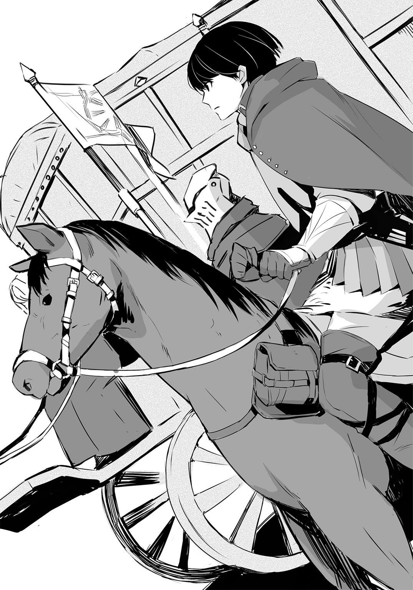
そうはならないと、思いたいのか。なぜ？ 事は公女殿下一個人の問題じゃない。国と国との付き合いで、外交的、戦略的な意味合いもあるだろう。我がデスティニア公国にとっては必要な婚姻なのだ。公女殿下には、必然的に公家の人間としての責任があり、義務がある。結婚するしかない。だとしたら、公国軍人として、たまたま公女殿下にお仕えする機会があったハイジ・バランとしては、せめてこの結婚が公女殿下に幸福をもたらすことを願う。祈る。そのために微力を尽くす。それが筋というものではないのか？
それ以外にできることはない。
「......わかってるんだけど、な......」
また沿道から、デスティニア公国万歳、サクラスティアリス殿下万歳、と喝采がわきあがった。誰かが音頭をとって、万歳の唱和は何度もつづき、拍手も起こった。ところが、公女殿下が馬車から顔を出しもしないものだから、次第に歓声はしぼんでいった。
「......何だよ、もったいぶりやがって」
「手を振るくらい、してもよくない？」
「見てみたかったのなあ」
「ところで、結婚って、誰とするんだ？」
「なんか、大王......？」
「馬鹿、大王には、エリカルリス様が嫁入りなさっただろ」
「じいさんだってな」
「そうだ、大王の息子って話じゃなかったっけ？」
「てことは、まだ若いのかね？」
「サクラスティアリス殿下って、おいくつなんだろう？」
「まだ二十歳にはおなりになってないだろ。十六とか、十七とか......」
「見てみたかったなあ。一回くらい」
「こんなことでもないと、見られないだろうしね」
「だってのに......」
「残念」
「ほんと」
「つまんねえ」
「帰るか」
「だな」
――何も知らないくせに、勝手なことばかり言って。
腹が立つ。何かを知る立場にない群衆に腹を立ててもしょうがない、とも思う。
ハイジだって、何かを知っていると言えるほどに、あれもこれも知っているわけじゃない。
......公女殿下は、どう思われているのだろう？
この結婚について、納得なさっているのだろうか？ いやなのか？ そうでもないのか？
たとえばその程度のことすら、ハイジにはわからない。知るすべがない。
「なんにせよ、おめでたいことですよ」
ルメ兵長が皮肉っぽい口調で言った。同じ台詞を、何人もの口から、何度も聞いた。言葉とは裏腹に、おめでたいなんて、これっぽっちも思っていないのだ。毎回、そう感じる。
そしてハイジは、同感だ、としみじみ思うのだ。
おめでたくなんか、ない。
でも、祝福しないといけないのだ。
×
馬車が停まった。どうでもいい。
ルルチナが何か言っている。夜営の時間らしい。ああそう。好きにすれば。
どうでもいい。
ルルチナは馬車から出ていった。
ギチコは向かいの席で首をひねっている。
人形のチヌコがギチコの肩からひょいと飛び降りて、サクラが座っているほうの座席によじのぼり、隣に腰かけた。
チヌコもギチコみたいに首を傾げて、サクラを見上げている。
サクラはチヌコから目をそらして、馬車の天井を仰いだ。
「サクラさまぁ？」
ギチコに呼びかけられた。
返事をする気になれなくて、サクラは黙っていた。
苦しい。
きっと服のせいだ。ドレスみたいな――というか、ドレスそのもの？ とにかく、変にちゃらちゃらした、ごてごての服を着せられている。脱いでしまってもいいが、それもなんだかめんどくさい。
結婚、するんだし。
べつに、したくないけど。
もちろん、結婚なんかしたいわけがない。とてつもなく、いやだ。相手は関係ない。誰でも同じだ。いやだ。結婚すれば具体的にどうなるとか、どうしないといけないとか、そうしたことを考えるのがまず、たまらなくいやだ。考えたくもない。絶対、いやだ。
それなのに、サクラは拒まなかった。
むろん、拒んだところで、そうですか、じゃあ取りやめますか、という話にはならない。無駄だとわかっているから、拒否しなかったのだろうか？
必ずしも、そうではないように思う。
結局、父が決めたことなら、そのとおりにするしかない。公女というのは、そういうものだ。従わなければ、存在する意味がない。価値がない。
だから、他の選択肢はない。戦いは終わりで、次は誰かと結婚しろと言われたら、いやだろうと何だろうと、そうするしかないのだ。
「サクラ様」
馬車の扉が開いて、ルルチナが顔をのぞかせた。
「外へどうぞ。夕食と寝所の用意ができております」
「いらない」
「......いらない、とおっしゃられましても」
「食べない。食べたくない」
「ご気分がすぐれないのでしたら、夕食はお上がりにならずともけっこうです」
「じゃ、そういうことで」
「それでは、まだ早いですが、寝所でお休みになってくださいませ」
「いらない」
「......と、おっしゃいますと？」
「ここでいい」
御用馬車は見かけ倒しだ。外観も内装も豪勢だが意外と狭くて、四人乗りとはいえ、大柄な男が四人乗ったらぎゅうぎゅうだろう。二人掛けの座席は、サクラが寝そべることができるほどの幅はない。それでも、脚を畳めば横になれないことはないだろう。
ただ、チヌコが邪魔だ。
ぶん投げてやろうとも思ったが、やめておいた。サクラは側板にそっと頭をもたせて目を閉じる。慎重にやったのに、魔性のせいで思いがけない反動がきて、イラッとした。
いつもいつも、こうなる。
あらゆる衝撃を反射するサクラの魔性は、自動的に働く。止めることはできない。増幅させることはできても、抑えることはできない。
しかも、精神状態が微妙に変化しただけで、働き方に影響が出る。これくらい反射するかな、と見当をつけても、だいたい外れてしまう。
どんなものをさわっても、思った以上の反発を食らって、神経に障る。
不快。不快。不快。不快。不快。不快。不快。不快。不快。不快。不快。不快。不快。
慣れてはいるが、じつのところ、ただ歩くだけでもサクラは絶えず不快感に襲われつづける。地面についた足に伝わってくる意想外の反発が、サクラを苛立たせるのだ。
「......サクラ様」
ルルチナがため息をついた。
「何」
「それではお躰に障ります」
「うるさい。わたしのことは、放っといて」
「そのようなわけにはまいりません」
「だったら、あとで行く」
「あととは、いつですか」
「あとは、あと。今じゃないことだけはたしか」
「おふざけにならないでください」
「ふざけてない。わたしは大まじめ」
ふと、ごぉぉぉぉぉぉぉー......というような音が鳴った。
何かと思い、サクラは目を開けた。
ギチコがずれた眼鏡の奥で両目を見開き、両手でおなかを押さえている。
ごぉぉぉぉぉぉぉー......。
また同じ音がした。
「ぬぉ......」
ギチコは自分のおなかに視線を落とした。
「おなかすいた。です」
「......どんだけ腹すかせてんだよ」
ルルチナがぼそっと呟いて、咳払いをした。
「ギチコ。あなたのぶんもあります。外に出なさい」
「いや。だ。です」
ギチコが頭を振ると、大きすぎる胸がびよんっびよんっと飛び跳ねるように揺れた。
ルルチナは青筋が立った額に指先を当てた。
「......なぜです」
「サクラさま。いる。です。中。ここ。ので」
「片言にも程があるでしょう。無理をして敬語になっていない敬語を使わなくてもいいから、普通に喋りなさい」
「サクラさま、ひとりにできない。あたし、サクラさまと一緒にいる」
「わかった」
サクラは席を立った。
「行けばいいんでしょ。行けば」
これ以上、押し問答をするのもめんどくさい。ルルチナがどいた。サクラは開いた扉をくぐって外に出た。
少尉と目が合った。
――いや。
中尉になったのだ。
サクラはすぐにそっぽを向いた。地面に絨毯が敷かれていて、馬車のすぐそばに大掛かりな組み立て式の天幕が設営されている。ここまで大きいと、もはや天幕には見えない。入ると、玄関ホールになっていて、その先には食堂があり、寝室に調理場、浴室まで備えている。ドリアン公以外はめったに利用することがない、公家専用の御用天幕だ。サクラが使うのはこれが最初で最後だろう。
食堂の椅子に腰を下ろした。
動悸がする。
何だろう？ 中尉の顔を見た途端、これだ。サクラはよほど中尉のことが嫌いなのだろうか。心臓が痛くなるほど？ 初めての経験だ。人は本当に人を嫌いになると、こんなふうになるものなのか。
しばらくすると、ルルチナが食卓に料理を並べはじめた。
「ギチコは」
「いつもどおり、隣室で毒味をさせています」
「そう」
「食材は点検済みで、すべてルルチナが調理しておりますので、大丈夫かとは思いますが、あの御方が......」
ルルチナは口ごもった。
「失礼いたしました。念のためです」
「アスタロス大王太子」
サクラはフォークを手にとって、前菜のゼリー寄せに突き刺した。ナイフで小さく切って口に運ぶのがマナーだが、めんどくさい。
「どういう人？」
「ルルチナは、直接お目にかかったことはないのです」
「でも、知ってるでしょ。いくらかは」
「旧主を通して、世評とさして変わらない程度のことしか存じあげません」
「暗殺が趣味のド変態」
「ありていに申し上げれば」
「そんなドちくしょうが、わたしの夫」
「サクラ様......」
「何」
「いいえ。――何でもございません」
「わたしには、お似合い。お父様は......ドリアン公は、きっとそう思ってる」
サクラはフォークで刺したゼリー寄せを口に運ぼうとした。
中尉のびっくりしたような表情が脳裏にこびりついて離れない。
嫌いだと、顔を忘れることもできないのか。
最悪だ。
ゼリー寄せを囓って口に入れた直後、どたどたどたっと食堂にギチコが駆けこんできて、ずるんっと転んだ。
胸をぷるるんっと振り回してひっくり返り、床に「ふぎっ」と腰を打ちつけながらも、ギチコは叫んだ。
「サ、サクラさま、出して......！」
「出す――」
サクラはゼリー寄せを咀嚼しようとしていた。
ルルチナが血相を変えた。
「サクラ様、吐き出してください！ 今すぐに......！」
「っ......！」
サクラは言われたとおり、ゼリー寄せを食卓の上に吐き出した。嚥下はしていないし、口の中も何ともないような気がする。――今のところは。
ルルチナはすぐさまサクラが吐き出したものをナプキンに包んだ。
「......馬鹿な。食材は問題なかった。調味料は自前だし、隙はどこにもねえはずなのに......どういうことだ!? ギチコ！ 間違いねえのか......!?」
「うぐぅー。時間差できた。です。変な毒。味わったことない。です。遅効性でも、あたし、ちゃんと感じるのに。あれだと、効くまで何時間とか。もっととか。です。たぶん」
「......ギチコ。あなたは大丈夫なの」
サクラが訊くと、ギチコは、ふにゃらあ、と顔全体をゆるめた。
「あたし、毒、平気。です。よ？ でも、初めての毒だから、これはちょぴっと、おなか、壊すかも......」
「失礼します」
――と、食堂に一人の士官がぬっと入ってきた。
軍人としてはかなり短軀で、癖毛で、もっさりしていて、じっとりと湿った目をしている。護衛隊長のニカ大尉だ。大尉は暗い瞳でギチコと、それからルルチナの手許を一瞥した。
「毒ですか」
「ええ」
ルルチナは一つ息をついて、大尉に向きなおった。
「まだ確証はありませんが、毒味役がそのように申しておりますので、対処しました」
「なるほど」
大尉は食堂の中を見回して、何か考えこんでいるようだ。どうでもいいが、この大尉、サクラのほうを見ようとしない。最初からずっとだ。本当にどうでもいいことではある。べつに見られたくもない。
「始まった、ということかな」
「想定していらっしゃったのですか」
ルルチナが尋ねると、大尉は感情のこもらない声で「ヤー」と短く答えた。
「私たちだけじゃない。グレカ少佐も動いてます。公女殿下並びに侍女の方々におかれては、どうかご安心を」
「少佐が」
サクラが呟くと、大尉はまた「ヤー」と応じて、唇に人差し指を当てた。
「アルトレッド中将のご命令です。指揮系統外なので、ご内密に」
「毒殺されかけて、安心も何もないものです」
ルルチナは怒っているようだ。大尉を見る眼差しがだいぶとげとげしい。
大尉は平然としている。
「ですが、他に言いようがありません」
「......そのおっしゃりようは、ざっくばらんすぎるのではありませんか」
「気をつけます」
「そうなさってくださいませ」
「ヤー」
大尉はさっとルルチナからナプキンをかすめとった。ルルチナが防ごうとすることすらできない、じつに鮮やかな手並みだった。
「これ、分析します」
「......公女殿下が、いったんお口にお入れになったものなのですよ」
「そういうの、興味ないんで」
「興味がないとか、そういった問題では！」
「ヤー」
「ヤーとは何です！」
「警備、強化します。可能な範囲で。では、また」
大尉は足音も立てずに退出した。
「......おにょー......」
ギチコは床に尻餅をついたまま、指をくわえて出入り口を見ている。
ルルチナは憤然と眉を吊り上げて、布巾で食卓を拭きはじめた。
「何なんだ、あの野郎の態度！ 初めっから、どうも気にくわねえ！ 無能ではねえんだろうが、人間なら気持ちってもんがあってしかるべきじゃねえか！ 気遣いとか、配慮だとか、思いやりだとか......！」
「わたしは、あのくらいでいい」
サクラはフォークを置いた。なぜだかまた中尉の顔がちらついて、胸がざわついた。
ああ、いやだ。
息をするごとに、どんどんぜんぶ、いやになる。
「気持ちとか、めんどくさいもの」
×
ニカ大尉から、警備をいっそう厳重にせよとの命が下った。大尉はとくに語らなかったが、そうすべき何らかの事態が発生したようだ。
公女護衛隊のニカ大尉以下五十七名は、夜営の間、もともと四交代で警備する体制を敷いていたが、これを二交代として実働人員を倍にすることにした。
なお、デスティニア公国領内では、各公軍から随時派遣された数百人単位の将兵が、群衆の整理や野盗への警戒に当たっている。こうした部隊も、有事の際にはニカ大尉が指揮下に置くことになっているが、平常時は要請しかできない。
当然、大尉は各部隊に要請を行った。
その内容を知って、なるほど――と、ハイジは唸った。
大尉は各部隊をあえて公女殿下御一行から遠ざけたのだ。要請に応えて、各部隊は公女殿下御一行を遠巻きにする形になった。
そして、公女護衛隊が公女殿下の御用天幕をがっちりガードする。御用天幕の出入りは、随行文官ですら厳しく制限する旨を、大尉は言葉少なに宣言した。
どういうことか。
大尉は、素性を把握している随行武官以外はまったく信用していない、ということだ。
信用できない者は一切、公女殿下に近づけない。
筆頭衛士のハイジとボル軍曹たちは、御用天幕の表口を固めることになった。御用天幕には裏口もあるが、そちらは閉鎖されている。表口はもっとも重要な警備ポイントと言ってもいいだろう。名誉なことだ。
御用天幕は大きいが、とはいえ奥行きも間口も20メトルまではない。
表口の前にいるハイジには、公女殿下の存在が感じられる――。
魔性のおかげだ。
〝君は僕の黒い太陽〟。
そばに魔性を持つ者がいればいるほど、さらに、その魔性が強ければ強いほど、ハイジはより速く、より力強くなる。
躰が軽い。よく動く。
まあ、御用天幕の中には、公女殿下の他にも、侍女ルルチナ、ギチコという魔性持ちがいるので、その影響も受けているわけだが。
それに、行進中も御用馬車の近くにいるので、常に公女殿下を感じているわけだが。
気分の問題だ。
夜だし。
静かだし。
昼間よりも、こう――はっきりと、公女殿下を感じる......ような気がする。
気のせいなのだろうが。
ハイジ、ウォルフ兵長、ルメ兵長の三人が一班、ボル軍曹、アダン伍長、マチス兵長の三人が二班で、一班が夜半まで、そこから朝まで二班が見張りに立つことになっている。
あっという間に、交代の時間がやって来た。
でも、ハイジはまだまだギンギンだった。
「......中尉。えらく気合いが入ってますなあ」
ボル軍曹はハイジを一目見るなり、呆れたように笑った。
ハイジは頭を搔いて、
「え、ええ。まあ。なんていうかその、眠くはないですね。とてもじゃないけど、寝つけそうにないっていうか......」
「しかし、休むのも仕事ですぜ」
アダン伍長が悪相を笑わせて言った。正論だ。
「......ですよね。わかりました。交代します」
「もしかして、しないつもりだったんですか？」
巨漢のマチス兵長がくりっとした目を瞠った。
「......いや、そんなことはないですよ？ 本当ですってば......じゃ、じゃあ、ウォルフ兵長、ルメ兵長、行きましょう。さあ朝までぐっすり寝るぞー。おー。なんて......はは......」
ウォルフ兵長もルメ兵長も、しょうがない上官だなあという感じで苦笑いしている。
でも実際、アダン伍長の言うとおり、休むときはしっかり休まないとだめだ。もし肝心なときに寝不足で力を発揮できませんでした、なんてことになったら目も当てられない。二班の三人は信頼できる優秀な軍人だし、あとは彼らに任せるべきだ。
ハイジたち一班は、御用天幕の程近くに停めてある御用馬車の脇に敷布を広げ、その上で横になった。これなら何かあってもすぐ跳び起きて駆けつけられる。大丈夫だ。安心して眠ってもいい。
「......寝れないけどね」
ウォルフ兵長とルメ兵長は間もなく寝息を立てはじめたが、ハイジは目が冴える一方だった。ここでも公女殿下たちの存在を微かに感じる。そのせいだろうか？ もしくは、胸騒ぎでもしているのか？
ニカ大尉はなぜ警備を厳重にする命令を下したのか？ 公女殿下にいったい何があったのだろう？ ハイジが侍官だったら、すべてを知った上で公女殿下をお守りできるのに。
繰り言だ。
ハイジが公女殿下の侍官だったのは、ごく短い期間でしかない。言うまでもなく過去のことだし、あのころにはもう戻れない。
しかも、公女殿下は大王太子妃になるのだ。
そのことを考えると、胸を搔きむしって転げ回り、叫びたくなる。もちろん、そんなことはしない。じっとしている。
我慢している。
そう。
我慢だ。
努力に努力を重ねて、精神活動を低下させ、眠れ。眠るのだ。すぐ寝ろ。今すぐ眠れ。熟睡しろ。これが任務だと思え。使命だ。
眠れ。
「......無理です」
ハイジは上半身を起こした。だめだなあ、と思う。軍人失格だ。眠らないといけないときには五分でも十分でも一時間でも六時間でも眠る。地味にこれは軍人にとって、きわめて重要な能力なのだ。それができない。最低だ。クソ同然だ。いや、クソだ。べつにクソでもいいけど。どうせ姫は、いや公女殿下はご結婚するのだ。人妻になる。人妻！ うぎゃあああああああああああああああああああああああああああああああああああああああマジか！ 信じられないありえないあっていいはずがない姫いや公女殿下が結婚なんて人妻なんてそんないやあああああああああああああああああああああああああああああああああああああああああああああああああああああああああああああああああああああああああああああああああああああ。
泣きたい。
というかもう、ハイジは泣いている。
いや待て。
なんで泣かないといけない？ 何を泣くことがあるのか？ どうせ公女殿下はご結婚する、だから何だ？ どうせって？
「わけわかんないっす......」
ハイジは夜空に向かって呟いた。
「ぬあ......!?」
というような声が聞こえたのはそのときだった。
ハイジはただちに立ち上がった。
「一班、起床......！」
命じて、声のしたほうへと駆ける。ウォルフ兵長とルメ兵長も起き上がってついてきた。
「中尉......!?」
御用天幕表口の前でボル軍曹が叫んだ。
「二班は待機......！」
「了解......！」
御用天幕の南西方面が騒然としている。夜警に当たっていた随行武官たちが立ち回っているようだが――相手は？ わからない。見えない。
ハイジは一班を率いてそちらへ急行した。
真夜中だが、大型の角灯があちこちに設置されているので、けっこう明るい。数人の随行武官が血塗れになって倒れ伏している。十人以上の随行武官が剣を抜いて右往左往しているが、やはり敵らしき姿は見当たらない。
「何だ......!?」
ハイジはワイバーンを鞘から抜いて足を止めた。
また一人、随行武官が血飛沫を上げて倒れた。
その瞬間、剣光らしきものが閃いた――ような。いや、ような、じゃない。見えた。
目を凝らすまでもない。いる。見える。黒装束をまとった人間が、随行武官たちの間を素早く動き回って、剣を振るっている。
――と、一番近くにある角灯が一台、倒された。黒装束が倒したのだ。さらに、もう一台。
暗くなると、黒装束が闇に紛れて視認しづらくなった。
「ウォルフ兵長とルメ兵長は掩護してください......！」
「はい！」
「了解です......！」
二人の返事を聞く前に、ハイジは飛びだした。まずは不用意に黒装束に詰めよる。誘いだ。乗ってくるか。――来た。剣。二振り。二刀流か。
ハイジは敵の初太刀を体捌きで躱して、二撃目はワイバーンで打ち返した。
いや、打ち返そうしたのだが、敵の刃が、するっ......と逃げていった。
「この感じ......!?」
ハイジは突っこんだ。押しこむ。動くぞ。躰が動く。
黒装束は顔も黒頭巾で覆い隠している。口どころか、目まで。肌をまったく露出していないので、瞳が輝いているのかどうかはわからない。
でも――魔性、だ。
間違いない。
どんなものかは不明だが、黒装束は魔性を持っている。
危険な敵。しかし、相手の魔性は、ハイジに力を与えてもくれる。
おそらく、黒装束の予想よりも、今のハイジは疾い。
間合いにとらえた。――いける。
ワイバーンを突きだした。躰のど真ん中。もっともよけづらい。回避しようとしても、このタイミング、この剣速なら、必ずどこかに当たる。――殺った。
いや。
まただ。
するっ......と逃げられた。
「――噓だろ......!?」
愕然としながら、ハイジは矢継ぎ早にワイバーンを繰りだす。
するっ......、
するっ......、
するっ......、
するっ......。
当たらない。おかしい。当たるはずだ。完全にワイバーンは黒装束に届いている。それなのに、逃げられてしまう。
「こんな......！」
動揺するな。攻めろ。攻めつづけるしかない。
ところが、守勢に回っていた黒装束が、急に突進してきた。
「――無造作に......！」
斬ってくれと言わんばかりだ。というか、ハイジにしてみれば斬るしかない。そうしないと、肉薄される。一刀両断にしてやる。吼えろ、ワイバーン......！
「なっ......!?」
またなのか。ワイバーンは黒装束を斬ったのに。まるで手応えがなかった。ワイバーンは黒装束の躰をすり抜けてしまった。――やばい。
懐に入られる。
黒装束の剣はかなり短い。短剣だ。接近されたら、防ぐのは難しい。
でも、ここで止めないと。
相討ち覚悟だ。ハイジは黒装束に体当たりをしかけた。結果的には正解だった。黒装束の意表を突くことに成功したらしい。
黒装束の剣に突き刺される前に、ハイジは黒装束の胴に組みついた。
いや、やっぱり、するっ......と抜けた。
が、すっかり抜ける寸前に、黒装束の躰のどこかにさわったような感触があった。
そうはいっても、逃げられた。
「くっ......！」
ハイジは振り返った。
ウォルフ兵長とルメ兵長も剣を振るって黒装束を阻止しようとしたようだが、呆気なく突破されてしまった。
黒装束は御用天幕へと向かう。
「追います......！」
ハイジは体勢を崩しているウォルフ兵長とルメ兵長の間を駆け抜けて、黒装束を猛追した。黒装束も速いが、ハイジはそれ以上だ。すぐに追いついて、その背中にワイバーンで斬りつける。だめか。するっ......と抜けた。
御用天幕の表口前には、ボル軍曹以下二班の三人が並んで壁を作っている。
だけどたぶん、黒装束を止めることはできないだろう。
斬っても斬れない敵を、どうやったら......？
一瞬、頭の中が真っ白になった。方法が思いつかない。
思いつかなくても、なんとかして止めるんだ。それが役目じゃないか！
さっき組みついたとき、黒装束にふれることができた――ような気がする。結局、逃げられたが、絶対にさわることができないわけじゃない。何か手はあるはずだ。
一か八か、後ろから黒装束に組みつこうとしたら、バーンと表口の扉が開いて、姫、いや公女殿下が出てきた。
ドレス姿じゃない。夜着というか、下着みたいな――侍官だったころは、いつもああだった。だから見慣れているはずなのだが、目も、心も奪われてしまう。しげしげと見たりしちゃいけないんだけど。
それはそうなんだけど、これが見ずにいられるだろうか。――姫。
おきれいです。
お美しいです。
――いやいや、見とれてる場合じゃない......！
「どいて......！」
姫じゃなくて公女殿下はボル軍曹以下二班に短く、鋭く命じた。かりそめにも姫、いや公女殿下と共に戦ったことがある者なら誰だろうと、あんなふうに命令されたらつい、反射的に従ってしまう。ボル軍曹たちも、公女殿下を通してしまった。
黒装束が躍りかかり、公女殿下が迎え撃つ。
といっても、公女殿下は素手だ。
両腕で、黒装束の双剣を受け止める。
公女殿下の魔性が、双剣ごと黒装束を撥ね飛ばした。
黒装束がこっちに飛んでくる。ハイジはワイバーンを振るった。
やっぱり、するっ......と抜けた。
黒装束は地面に叩きつけられることなく、くるりと回って着地した。
御用天幕からルルチナとチヌコ、遅れてギチコが駆けだしてきた。
「サクラ様......！」
「サクラさまあ。ぶぎゃっ」
ギチコは、転んだ。
公女殿下が無言でハイジのすぐ脇を走り抜け、黒装束を猛襲する。キックだ。蹴り上げようとした。そんなに脚を上げたら、見えてしまうんですけど......！
黒装束は横に転がって公女殿下のキックをよけた。そのまますごい速度で這うようにして、距離をとる。
「何者？」
公女殿下は追撃せずに、黒装束を見据えた。
「あなたが誰だろうと、わたしは殺せないけど」
黒装束は答えない。両足を広げ、腰を直角に曲げた極端に低い姿勢で、短剣を持った両手をゆらゆらと動かしている。
「......まさか」
押し殺したような声でそう言ったのはルルチナだった。
「リリス・カンナビス。てめえなのか......？」
「う、ふ、ふ......」
黒装束が背中を震わせて笑った。――女。
どうやら、若い女のようだ。
「お久しぶりです、お姉様。――そして、公女殿下。今夜はご挨拶に上がりました」
「知り合い？」
公女殿下がちらっとルルチナを見た。
「元同僚です」
ルルチナの顔は苦くゆがんでいる。
「......リリス。てめえに姉呼ばわりされる覚えはねえよ。今はもう、な」
「あら。お姉様でも後ろめたいの？ 大勢のきょうだいを手にかけたこと――」
「クズの下衆に騙くらかされて人殺しに血道を上げてやがる間抜けどものことなんぞ、知ったことか」
「お父様を悪く言わないで？」
「お断りだ」
「相変わらずね、お姉様」
「てめえの姉なんかじゃねえと、何度も言わせるな！」
ルルチナが弾丸のように飛びだした。同時に、黒装束は身を翻した。
「さようなら、お姉様」
「待ちやがれ......！」
「また伺うわ。それまで公女殿下、どうかご壮健で」
黒装束の姿がどんどん遠ざかって、夜の闇に溶けこんでゆく。――って、黙って突っ立っていてどうする。ハイジはルルチナにつづいて黒装束を追いかけようとした。
「深追い禁止」
と、どこからかニカ大尉の声がした。
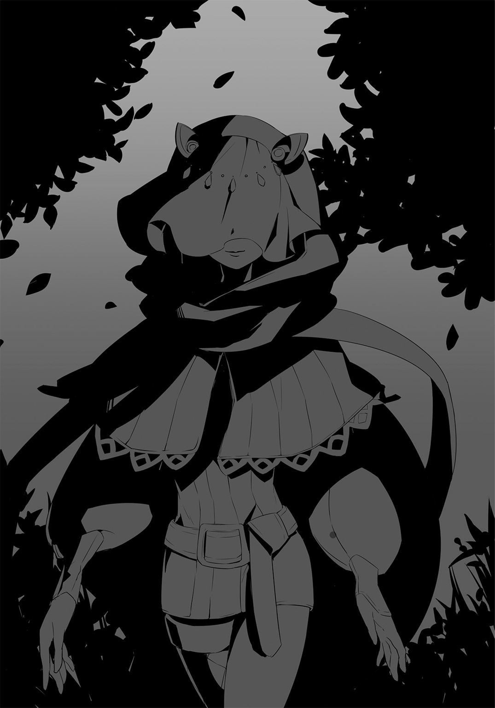
立ち止まって振り返ると、大尉がハイジのすぐ後ろで火縄銃を構えていた。
引き金を引いて、撃つ。
銃口から硝煙が噴きだし、爆発音が轟いた。
黒装束が瞬間、振り向いた――ように見えた。が、それだけだった。黒装束はすぐに見えなくなって、ルルチナも追跡を止めた。
「......あいつめ！」
「お怪我は」
大尉は火縄銃を下ろして、公女殿下を一瞥した。
「ないですよね」
「あるわけないでしょ」
「では、寝所にお戻りを。その恰好は迷惑です」
「っ......」
「何か」
「なんでもない」
公女殿下は回れ右をして大股でギチコをまたいだ。
御用天幕の扉をくぐる寸前に、顔だけこちらに向けた。
目が合った――のは、たぶん一秒に満たない、ごくごく短い時間だった。
公女殿下はなんだか苦しそうな表情をして、御用天幕に入っていった。
×
――私のことは、実の父親だと思って欲しいし、私としてはもう、おまえの実の父親のつもりでいるし、私はおまえの実の父親として振る舞うだろうし、ゆえに事実として、私はおまえの実の父親であり、おまえは私の実の娘なのだよ。
やさしそうな男だと思った。容貌より、にこやかな顔つきがとにかく印象的だった。男は遠い親戚だと彼女は言い含められていた。彼女にそう教えたのは彼女の叔父だった。
弟は彼女が五つのとき、妹は彼女が六つのときに死んだ。父も母もすでに亡かった。
叔父が本物の叔父なのか、彼女に知るすべはなかった。弟と妹が立てつづけに死に、やつれ果てた父が、ある日、叔父を名乗る下卑た男を伴ってきた。それから、両親と彼女は叔父が率いる一座とやらに加わった。
一座は総勢三十人ほどで、あちこち旅して見世物のようなことをやっていた。父は雑役夫、母は飯炊き女として働き、彼女は二人の手伝いをした。
二人にはそれ以外にも仕事があった。主に夜、彼女が薄汚い毛布にくるまって寝ついたあとで――正確には、寝たふりをしている彼女を残して、二人は出ていった。二人は何をしているのか。彼女は薄々勘づいていたが、気づかぬふりをした。両親がそう望んでいると察していたからだった。
やがて父が夜の仕事から帰ってこず、母は流行病で死んだ。旅する一座の中では、よく病気が蔓延した。弱っている者はあっさり息絶えた。
それから間もなく、叔父は彼女を遠い親戚のところへと連れていった。叔父はその男を、伯爵、と呼んで、この子のことをくれぐれも頼みます、と演技がかった慇懃さで言った。伯爵は叔父と固く握手をして、心配はいらない、と請け合った。
彼女の記憶は多少混乱している。当時の彼女が混乱していたせいだろう。
ともあれ、彼女は伯爵に引きとられた。そして、伯爵のもとで、物心がついて以来初めて、文化的な生活を送った。それまで、彼女の暮らしは家畜と大差なかった。生きるとはそういうものだと思っていた。
違ったのだ。
人には人に相応しい生き方というものがある。
――とりわけ、おまえのように聡明で、美しい娘には。
伯爵はそう言って、ときには自ら彼女に礼儀作法や言葉遣いを仕込んだ。伯爵の館にはたくさんの「姉」や「兄」がいた。伯爵以外では、姉や兄たちが彼女に教育を施し、世話してもくれた。
――皆、私の息子であり、娘だ。
伯爵は最初に会ったときから一貫して感じのいい人物だった。親切で、品がよく、公平でもあった。伯爵は彼女を含め、すべての息子や娘を愛しているようだった。
平和な、穏やかな毎日。
彼女は幸福しか感じなかったわけではない。
たとえば、伯爵の館の中には立ち入ることのできない場所があった。閉ざされた扉。あの向こうには何があるのだろう？
たまに姉や兄がいなくなり、しばらくすると帰ってきた。戻ってこないことも稀にあった。彼女は聡明だったから、なぜ、どうして、とは誰にも訊かなかった。訊いたところで答えは返ってこない。彼女はそう理解していた。
いつしか彼女には妹や弟ができた。姉や兄がそうだったように、彼女は妹や弟を導き、手助けした。そうするべきだと彼女は信じていた。必ずそうしなければならないと。さもなくば、この日々は失われてしまう。彼女は確信してさえいた。
他にも、姉、兄、妹、弟に、どこから来たのか、伯爵の息子や娘になるまで何をしていたのか、といった過去を尋ねないという不文律も、彼女は自然と、誰に言われなくても守っていた。それに背いた一人の妹が、ただちにどこかへ連れ去られた。妹は十日ほどで帰ってきた。何があったのかは知らない。彼女は知ろうとも思わなかった。ここではそれが正しいし、賢明なやり方だということを彼女はわかっていた。
もっとも、幸せな日はいつまでもつづかなかった。
そのことも彼女は予期していた。
なぜなら――、
人生とは、そういうものだから。
×
あの黒装束の名は、リリス・カンナビス。
リリスが主体的に公女殿下の暗殺を企むなどということは、まずありえない。
陰で糸を引く者がいる。
十中八九、リリスが「お父様」と呼んだ人物。
ダンタリオン伯爵。
なお、公爵から侯爵、伯爵、子爵、男爵までの五爵は、カバラ大王国の大王のみが授与できる。男爵位は今でもカバラ大王国が権威を示すために与えることがあるものの、子爵となるとめったにない。領土とセットになっている伯爵以上が今後、新たに現れることはまずありえないだろう。
つまり、ダンタリオン伯爵は由緒あるカバラ貴族なのだ。
それだけじゃない。顕職に就いてもいる。
右府。
――というと、右大臣。
内府、左府に次ぐ、カバラ大王国のナンバー３だ。
ちなみに、内府はアスタロス大王太子で、左府はマルサス侯爵というなんと九十三歳の老人だから、内府の大王太子が右府の伯爵に支えられて政務を司っている、というのがカバラ大王国の体制らしい。
「......どういうことなんでしょうか」
初めてのリリス襲来では、随行武官三人が殺害されて、六人が負傷した。うち四人が重傷。
リリスはその翌日の夜にも現れ、随行武官一人と、随行文官三人を殺して逃亡した。
三日目は来ず。
四日目の被害は随行武官二人、随行文官二人。
そして、五日目の夜が訪れた。
もちろん、公女護衛隊は厳戒態勢を敷いているし、第四公軍からの応援部隊にも防備を固めてもらっている。
筆頭衛士のハイジは、ボル軍曹以下五名と共に御用天幕表口の警備に当たっていた。変則的な三交代で、今はウォルフ兵長とルメ兵長がすぐそばで仮眠をとっているが、あとの四人は絶えず周囲に目を光らせている。
「......姫――じゃなくて、公女殿下は、アスタロス大王太子の......お、お、お、お妃様に、なる、まあ、なるんですよね......なろうとしているっていうか、それなのに、カバラ大王国の右府の部下？ 手下？ ともかく、その息がかかっている暗殺者が、公女殿下のお命を狙っているっていうのは......」
「たしかに、妙ですなあ」
ボル軍曹は髭をこすりながら小声で言った。
「カバラ人はたいてい変わっとるらしいですが。実際、私が知ってる範囲でも、変わり者が多いように思います」
「カバラの女は大変ですぜ」
アダン伍長が怖い顔をしかめると、よりいっそう恐ろしげになる。
「どれもこれも癖が強くて、手に負えない。気性が荒いってのとは違うんですがね。思考形態が独特なんですな。一言で言えば臍曲がりってことになるんでしょうが、その曲がり方が一人一人違っていたりするもんだから......」
「伍長、いったい何人と付き合ったんです？」
いかにも純朴そうなマチス兵長が訊くと、アダン伍長は肩をすくめて、
「数なんざ、いちいち数えちゃいねえよ。だがまあ、そう多くはない。カバラ女は懲り懲りだ。身が持たないってより、心が持たない」
「......でも、暗殺ですよ？」
ハイジは視線をあちこちに巡らせながら考えこんだ。
「一癖も二癖もあるとか、思考形態が変わっているとか、そういう次元の問題じゃないと思うんですけど。右府は、内府の結婚に反対だとか......そんな事情だったりするのかな」
反対と言えば、ハイジも反対なのだが――いやいやいや。
ハイジは、ふぅーっ、と息を吐いて、自分の胸を拳でどんどん叩いた。
「......どうされました？」
ボル軍曹に心配されてしまった。
「いえ、なんでも」
「そういえば、我らが中尉どのも、変わり者っちゃあ変わり者ですな」
アダン伍長はニヤニヤすると剽軽な感じがして、ちょっと愛嬌がある。
「僕、変わってますかね......？」
「どうですかねえ」
マチス兵長まで思わせぶりにニヤついている。
「......そんなこと、ないと思うんですけど――」
ハイジは慌てて背筋をのばした。
騎馬が近づいてくる。鞍上の小柄な士官はニカ大尉だ。――あれ？
何かおかしい。
でも、その何かがわからないまま、ハイジは敬礼した。ボル軍曹らもハイジに倣う。ニカ大尉は、無視。普通ならありえないが、この人にかぎってはよくあることだ。
ニカ大尉はハイジたちの前で下馬して、右手をひょいと振ってみせた。どけ、ということらしい。
ボル軍曹らは左右に分かれたが、ハイジは動かなかった。
――おかしい。
「大尉」
呼びかけても、ニカ大尉は答えない。もう一度、右手を振った。
ハイジはそっと深呼吸をした。ニカ大尉は暗い瞳でじっとハイジを凝視している。
どう見ても、ラウリ・ニカ大尉だ。
「......中尉？」
ボル軍曹に声をかけられた。その瞬間、ハイジは踏みこんでワイバーンを抜き放った。
右腰から左肩へ斜めに斬り上げる。
ニカ大尉は真っ二つになって、地面に崩れ落ちた。
それから、震えがきた。
「ちゅちゅちゅ中尉......!?」
「あああ......!?」
「なんてことを......!?」
ボル軍曹らが大騒ぎして、仮眠していたウォルフ兵長とルメ兵長が跳び起きた。
ハイジはワイバーンを構えたまま、ニカ大尉の屍に近づいた。
馬がいななく。
ハイジはため息をついて、首を振った。
「違います」
「えっ」
ボル軍曹は腰を屈めて大尉を見ると、ひっ、とのけぞった。
「ち、違う！ 本当だ！ 大尉じゃない......!?」
「しかし――」
アダン伍長は顔の下半分を手でこすった。我が目を疑う気持ちはよくわかる。ハイジもまだ信じられない。でも、事実だ。
それは大尉じゃない。似ても似つかない、と言ってもいいほどだ。中肉中背で、背恰好がまず違う。服装からして公国軍の軍服じゃない。何の変哲もない、庶民の旅装だ。
どうしてハイジたちはこんな男を大尉だと思ったのか？
大尉に見えたからだ。
さっきまでは。――ハイジが斬り殺すまでは。
そう。
殺してしまった。機士じゃない。人間を。恐ろしいことをしてしまった、と思う。同時に、大尉じゃない男が大尉にしか見えなかったことにも衝撃を受けている。
もっとも、種はわかっていた。たぶん、ハイジだけは。
魔性だ。
この偽大尉が近づいてくるごとに、ハイジは自分の魔性が高まるのを感じた。偽大尉が魔性の持ち主だと判断するしかなかった。
言うまでもなく、本物の大尉は魔性を持っていない。それに、馬じゃなくて黒犬鹿に乗っている。
偽大尉は魔性の作用で自身を大尉に見せかけていた。あるいは、ハイジたちにそう思いこませた――ということだろう。
「......新手の刺客だったってことですか」
ボル軍曹が唸るように言った。
決して臆病ではないマチス兵長が、心細そうにつぶらな目をしばたたかせた。
「どうなってるんだ......」
「これが」
ハイジはワイバーンを握りなおした。まだ鞘に収める気にはなれなかった。
「これが、僕らの敵なんです」
×
彼女の主人は鬱ぎこんでいる。これ以上ないくらい。
もとより、上機嫌なことは少ない――どころか、絶無だ。
それにしても、ここまで暗く鬱屈している主人は初めて見る。
リリス・カンナビスが夜襲をかけてきてから、主人はほとんど口を開かない。
イエルヴァラを発って、十六日。
旅程の半分を超えた。
御用馬車に揺られている主人の顔は、凍りついたように動かない。ときおりギチコの人形がひょこひょこ動き回ったり、滑稽な踊りを披露したりする。でも、主人は見向きもしない。
彼女やギチコが何か声をかけると、主人は微かにうなずいて、
「ん」
と、ごくごく小さな声を出す。
あるいは、首を横に振る。
それだけだ。主人からそれ以上の反応を引きだすのは非常に難しい。不可能と言いきってしまってもいいほどだ。
無関心、無感動なのではない――彼女の考えでは。
主人は心を痛めている。確実に。
随行武官、随行文官が一人、また一人と命を落としてゆく。再起不能の深手を負った者もいる。主人はすべて自分のせいだと思っているだろう。
こちらもむざむざとやられ放題にやられているわけではない。対策を講じている。おかげで被害は徐々に少なくなってきているが、現在までの間に随行武官五十七名のうち十二名が死亡し、八名の重傷者が後送された。文官は二十三名中、九名が死傷。主人と彼女とギチコをのぞけば八十名いた公女殿下御一行は、五十一名にまで減った。
公女護衛隊隊長ラウリ・ニカ大尉は人員の補充ではなく、大幅な増強を求めているが、総司令部が応じる気配はまったくない。大尉も期待していないようだ。
どうも、これは予期されていた事態であり、状況なのではないかと思えてならない。
犯人はほぼ割れているのに、デスティニア公国がカバラ大王国に抗議したり、調査を要求したりといった動きすらないのだ。
彼女の主人は捧げられた犠牲なのではないか。
だが、今までも主人は数多の刺客を退けてきた。彼女も主人には指一本触れさせるつもりはない。触れることなどできようはずもないのだが。
ともあれ、たとえ何万人もの暗殺者が押し寄せたとしても、主人に危害を加えることは能わない。
主人は、無事だろう。
しかしながら、主人の供回りの大半は常人だ。
極端な話、このままだと、目的地にたどりつくころには、主人ただ一人しか生き残っていない、ということにもなりかねない。
――だから、なのか。
それで、随員が百名に満たない小規模なのかもしれない。
彼女が知っているような腕利きの暗殺者の手から逃れたいのなら、第一に所在を明かさないことだ。標的の居場所がわからなければ、どんな暗殺者だろうと殺せない。
行方をくらますことができないのなら、堅固な要塞の奥にでも籠もって、物資や人の出入りに目を光らせ、制限する。つまり、場所だ。暗殺者の手が及びづらいような場所にだけ、身を置くようにすればいい。
場所が悪ければ、頭数に頼った防備など、はっきり言って問題にならない。暗殺者によっては、逆に相手の数を利用することに長けていたりもする。
供回りは、どうせ殺される。
――総司令部は......ひいては、ドリアン公は、そう考えているのかもしれない。
大勢つけても、そのぶん死ぬだけだから、無意味だ、と。
たった八十人では皆殺しにされてしまうかもしれないが、千人つけたらひょっとすると何百人も死ぬかもしれない。ならば、八十人でいいだろう。そういう判断なのかもしれない。
何にせよ、主人のせいではないのだ。
断じて。
それが厳然たる事実でも、主人にとっては何の慰めにもならないだろう。
彼女の主人は、檻に囚われている。
責任。
罪悪感。
痛み。
どうやっても抜けだすことのできない檻に、ひとりきりで。
それは何も今に始まったことではないのだ。
主人はずっと檻に閉じこめられている。ときおり、いや、しばしば、その檻の中に化物が投げこまれる。じつに様々な化物が。主人は化物どもと戦うことを強いられてきた。孤独な戦いだ。勝利したところで、報酬はない。また檻の中で孤立無援の自分自身を見出すだけだ。
何のために耐えなければならないのか？
どうして、ここにいつづけなければならないのか？
もう楽になりたい。
主人がそう思ったところで、いったい誰が責められるだろう？
いかに無敵の魔性を持っているといっても、自分で終わらせる方法の一つや二つ、探せば見つかるに違いない。
おそらく、主人も自決を望んだことはあったはずだ。たぶん、何度も、何度も。
しかし結局、主人は逃げなかったのだ。
戦いつづけてきた。
今も戦っているのだ。
彼女とは違う。彼女はあのとき――いや、幾度となく、安易な道を選択した。
初潮の訪れと同時に、彼女は大きな変化を感じとった。子を宿し、産む準備ができた。それだけであれば、彼女はどうなっていただろう？ 現在の彼女は知っている。もしそうだったら、彼女は下働きにされるか、売り払われるかしていただろう。
血が目覚めたのだ。
彼女の体内を流れる古い血が活動しはじめた。
魔性。
リリーローエンという名の落ちぶれた家門それ自体にはもはや何の価値もないが、一族が受け継ぐ血には力が宿っている。
もっとも、没落の過程でリリーローエンの血は薄まっていた。ようは、普通は魔性を発現することがない庶人の血が多く混じった。財産はあっても格がない成り上がりが名を求め、リリーローエンの当主たちは金が欲しかったのだ。両者の利害が一致して血が交わった。
貴き血には魔性の因子のようなものが含まれている。因子の正体は不明だが、そう信じられている。
ゆえに、貴き血には貴き血がふさわしい。高貴な者は高貴な者と結ばれ、高貴な子を生み落とす。貴き血を濃くして残すことが、高貴な者の義務であり、誇りであり、また、実利にもかなうはずだった。
何代も前から下賤の血を消極的、ときに積極的に受けいれるようになったリリーローエン家は、貴き血を売り渡し、名誉を汚して、みずから血の力を弱めたのだ。
結果、彼女の祖父は魔性を持っていたが、微弱なものだったという。父もそうだったし、父の兄弟に至っては魔性らしい魔性を有していなかったようだ。母は元庶人だった。
彼女は......？
幸運――だったのだろうか。
カバラ大王国に数人いるという魔性見のうちの一人が彼女を視た。
潜在等級は、ＢＢＢ。
一般に、上から、ＳＳＳ、ＳＳ、Ｓ、Ａ、Ｂ、Ｃ、Ｄ、Ｅと並ぶ潜在等級の中に、ＢＢＢは存在しない。彼女を視た魔性見の気まぐれか、悪戯なのか。聞いた伯爵は手を拍って、初めて耳にした潜在等級だ、と喜んだ。
合格だった。
実用に耐えうる水準だと判断されたのだ。
彼女は伯爵に手を引かれてあの扉をくぐった。その先には、それまで立ち入ることが許されなかった。禁じられた部屋。廊下。階段。地下通路。地下室。伯爵の館とは別の、窓のない建物。平和な、穏やかな日々は終わりを告げ、訓練が始まった。
何のために、こんなことを？
わけもわからず、彼女は生きるために励むしかなかった。――否。
噓だ。
伯爵が見抜いたように、彼女は賢い娘だった。いや、狡賢い女だった。彼女はすぐに悟った。やるしかないのだ。従うこと。堪えること。そして、応えること。すべて必要だ。さもなくば、どうなるか？
奪われる。失う。
与えられる課題をちゃんとこなしさえすれば、依然として彼女は食事にも、寝る場所にも、不自由することはなかった。それまで彼女の世話をし、躾をしてくれていた兄や姉たちも、彼女の知らないところで訓練を受けていたのだ。暮らしは保証される。言うとおりにしていれば。ときどきは息抜きもできる。成績がよければ、伯爵は褒めてくれる。何か欲しい物はないかと伯爵に訊かれる。ねだればちゃんと買い与えられる。
我慢すればいい。ただ我慢するだけでいいのだ。
そして、伯爵のために働けばいい。
伯爵がそれを望んでいる。
期待に応えれば、称賛と褒美が待っている。
最初の仕事をする前に、「私たちがなぜそれをなさなければならないか」、一人の姉が念入りに説明してくれた。
姉はまず善悪について語った。「私たちが」することは善であり、「私たちにされる」者は悪であると教わった。
戯言だと彼女は内心、思った。彼女が知っている範囲で言えば、強奪され、踏みにじられ、傷つけられ、場合によっては命までとられるのは、間抜けか、腑抜けか、運が悪いか、もしくは弱者だった。善悪など関係ない。彼女の父も母もまあ善良だったが、悲惨な人生を送り、その子供たちは死ぬか、売られた。売られた彼女は、両親を恨んではいなかった。しかし、感謝しているとも言いがたかった。才覚に乏しい、愚かな人たちだと思っていた。
彼女の理解は単純だった。姉が本当に善行だと信じているのかどうかはわからないし、どうでもいい。とにかく、これは善行だと思いこんだほうがいいのだ。そうすれば、罪の意識を抱かずにすむ。
彼女は最初の仕事を難なく成し遂げた。断言してもいい。彼女はまったく躊躇しなかった。恐れもなかった。何しろ、善行なのだから。一緒に仕事をした姉は驚いていた。それくらい彼女は見事に適応した。冷静だった。
これなら逃げられそうだ、と思った。びっくりしている姉を始末して、逃げだせばいい。彼女たちは大金持ちの屋敷に忍びこんで仕事をした。金目の物を盗んでゆけば、しばらくは困らないだろう。技術もある。何より、魔性がある。何とでもなるだろう。
だが、彼女は逃げなかった。伯爵の許に戻って、褒めそやされ、金の指輪を作ってもらった。彼女は昂揚していた。これからだと思った。やっとツキが回ってきた。
叔父や叔父の一座の荒っぽい連中の言い方を借りれば、「クソに塗れたクソ渡世」に否応なくおさらばしたら、どこか「ペテン臭え」、「尻が痒くなるくらい」お行儀がよすぎるお仕着せの暮らしが降って湧いた。
悪くはなかった。品行方正な愛らしい娘を必死に演じてしがみつこうとする程度には。ああ、世界神カバラよ、この運命をありがたく思います！
必ず「裏がある」だろうと怪しんではいた。当然だ。そんな「うまい話」が転がっているわけがない。
案の定だった。
伯爵はやたらときれいな手をしている。あらゆる労働と無縁で、爪に塗ったマニキュアが剝がれることもめったにない。娘が毎日塗りなおし、ご丁寧にふーふー息を吹きかけて乾かすのだから、剝がれる暇もないわけだが。
その手が汚れることはない。
代わりに、どっぷり、ぐしゃぐしゃに汚れる手が伯爵には必要なのだ。あればあるだけいい。ありすぎて、いくらでも代えが効く。そのほうが好都合だ。伯爵にとっては。
手のほうにしてみれば、そうではない。
代えの効かない、不可欠な手であったほうがいい。
彼女は仕事に精を出した。どの姉よりも、どの兄よりも、意欲的に仕事をこなした。妹や弟の教育にはさして興味がなかった。とはいえ伯爵の手前、やらざるをえない。どうせなら、手なずけておこう。ただし、有能すぎる者は危険だ。野心や競争意識が強い者も邪魔くさい。そうした者は孤立させ、皆に排除されるように仕向けた。
彼女はどんどん実績をあげて、あっという間に伯爵の「お気に入り」になった。
初潮が来て、魔性を発現してから、その〝制約〟のせいで彼女の成長は止まった。変わることのない、ずっと「子供らしい」彼女の容姿も、伯爵をいたく喜ばせた。
伯爵は「子供好き」だった。――いろいろな意味で。
彼女は伯爵の「手」ではなく、「腕」になった。「片腕」に。
姉も兄も、彼女には逆らえなくなった。
彼女を陰で、「お姫様」と呼ぶ者もいた。「若奥様」呼ばわりする者もいた。「僻むんじゃねえよ、クズども」と彼女は表情を変えずにほくそ笑んだものだ。「お姫様？ 若奥様？ 上等だ。このご身分になれるもんならなってみやがれ。なれたら褒めてやるからよ」。
たまに彼女は、自分の魂がとりかえしがつかないほど汚れているように思えて、何もかもいやになった。だが、きれいだったことなどあるだろうか？ 弟が死んだときは悲運を嘆いたが、妹までくたばると父や母は無力だとはっきり思った。進んで他人に害をなすことはない、気の優しい人たちだが、死にかけている幼子を医者に診せる甲斐性もない。生きる力がない。弱い人たちだ。彼女は両親を哀れんでいた。叔父の一座で、ある夜、父と母がこっそりまぐわうところを目撃した。やれやれ、と彼女は思った。犬や猫じゃねえんだから、目につくところでやるんじゃねえよ。餓鬼でも出来たらどうするんだ？ 育てるのはきっと、あたしじゃねえか。冗談じゃねえぞ。
言いはしなかったが、いいかげんにしてよ、と数えきれないほど思った。
あんたたちがそんなだから、あたしが苦労するんじゃないか。それでも親かよ。そんな親から生まれちまったんだからしょうがねえ、あきらめろってか？
ふざけないでよ。
何が運命だ！ 世界神カバラだ！
ぜんぶ、クソッタレだ！
彼女の魂は気がついたときにはもう、汚れきっていた。今さら汚れが増えたところで、どうということはない。黒の上に赤を重ねようと、さらに黒を塗りたくろうと、黒のままだ。
それでも、逃げようか、と思ったことは何回かある。機会はいくらでもあった。手を引くことはできたのだ。
彼女は自分の意思で血を流しつづけた。罪を罪とも思わず、罪を重ねた。
本当は、わかっていたのに。
どれだけ彼女の魂が汚れていようと、罪は罪なのだ。彼女が罪を犯せば、そのたびにおののく者が、悲しむ者が、苦しむ者が、身も心も引き裂かれる者がいた。彼女はそのことを知っていた。気づかなかったわけでも、気づかないふりをしていたのでもない。どうでもいい、自分には関係ないと開きなおっていた。自分の魂はすでに汚れきっているからと言い訳をして、境遇のせいだ、親がだらしなかったからだ、だからこうなった、知ったことかと開きなおることで、彼女は自分自身が傷つかないように自己防衛していた。多くの人々を傷つけながら、自分だけは決して傷つくまいとしていた。
彼女は下劣な卑怯者だった。
――御用馬車が停まった。
「何でしょうか」
彼女が言っても、主人は微動だにしない。
ギチコはだらしなくよだれを垂らして眠っている。
扉をノックする音がした。
「ニカです」
しばらく前に、魔性でニカ大尉を装って警備を突破しようとした刺客がいて、ハイジ・バラン中尉に阻止された。でも、これはさすがに本物だろう。
彼女は主人に視線で伺いを立てた。主人がうなずいてくれたので、彼女は扉を開けた。
「どうも」
外でニカ大尉が敬礼した。黒犬鹿からは下りている。少し離れたところからハイジ・バラン中尉がこちらを見ていた。気遣わしげ――というよりも、不安そうな面持ちだ。
「大尉。何か？」
「使者がお見えです」
「使者、ですか？」
「ヤー」
「それは、いずれからの使者でしょう？」
「カバラです」
大尉はわずかに唇の端を引きつらせた。一瞬ではあった。
「カバラ大王国右府ダンタリオン伯爵がおいでになっています」
３ 見えざる糸 INVISIBLE
誰が次々と刺客を送りこんでくるのか。物的な証拠があるわけでも、刺客が自白したわけでもないが、ルルチナ・リリーローエンの証言で推測はついている。
ダンタリオン伯爵だ。
その当人が、派手派手しくはないものの、見るからに立派な馬車に乗ってやってきて、公女殿下に面会を申しこんできた。
ハイジ・バランは啞然として、それから慄然とした。どう考えても、恐ろしい企みがあるに決まっている。相手がカバラ大王国の右府だろうと何だろうと、公女殿下が会われることはない、と僭越ながら思った。会われるべきではない。会ってはならない。
でも、冷静に考えれば、暗殺者の親玉だと決まったわけじゃない――いや、まず間違いないなさそうだが、伯爵は当然、認めないだろうし、だとしたら、現段階で表立って暗殺者の親玉扱いするわけにもいかない。形の上ではデスティニア公国の宗主国であるカバラ大王国の右府に会いたいと言われて断れるものではないだろうし、実際、公女殿下はあっさり受け容れて、ただちに面談の準備が整えられた。
よく晴れて、風もほとんどない日だった。
ただちに御用天幕が張られて、玄関ホールが応接間風に設えられた。
やがて伯爵の馬車が御用天幕の前に着けた。
降り立ったのは、二人。
一人は喪服のような漆黒のドレスを身にまとった婦人で、やはり真っ黒いヴェールで顔を隠している。
もう一人はどこか頽廃的でありながら清潔さすら感じさせる装いで、悪印象を抱きようがないほどにこやかな初老の男だった。
どちらが問題のダンタリオン伯爵なのか。考えるまでもない。男のほうだ。
男と婦人は、出迎えたニカ大尉以下、公女殿下護衛隊の随行武官たちに向かって一礼してみせた。男の所作は嫌味にならない程度に洗練されていて、婦人の身のこなしはハイジが見たところやや張りつめている。
このどこから見ても柔和そうな男が、ダンタリオン伯爵。
意外だった。
別人じゃないのか？ 替え玉なのでは？
ニカ大尉と筆頭衛士のハイジ、それから麾下のボル軍曹、アダン伍長、ウォルフ兵長、マチス兵長、ルメ兵長が先立って、伯爵と婦人を御用天幕の中へと迎え入れた。公女殿下は椅子に座っていた。ルルチナとギチコ、そしてチヌコがその後ろに控えている。
ルルチナは顔色こそ変えなかったが、緑色の瞳が燃えるように輝いていた。
伯爵と婦人が腰を折って丁重な礼をすると、公女殿下は微かに顎を引いてみせた。
「お初にお目に掛かります、サクラスティアリス・デスティニアリス殿下」
伯爵の笑みは片時も絶えず、ゆるむことすらないが、作り笑いには見えない。ハイジはこんなに感じのいい人物を初めて見た。
「フランシス・ゴドワン・ダンタリオンでございます。本日は晴天に恵まれ、お日柄もよろしく、殿下におかれましてはますますご清栄のこと、大変喜ばしく存じます。これなるは、イリス・サンナビス・ダンタリオン、私の娘にございます。以後、お見知りおき頂ければ幸い至極にございます」
「よろしくお願い申し上げます」
婦人は若々しい声でそう言ってお辞儀をした。
――なんて、大胆な。
ハイジは身構えてしまいそうになった。
最初に襲ってきた暗殺者の名は、リリス・カンナビス。
婦人は、イリス・サンナビス。
二人の名がよく似ているのは偶然だろうか？
そんなわけがない。おそらく、同一人物だ。
暗殺者の親玉が、堂々と暗殺者を連れて、標的の許へと挨拶しに来たのだ。
ルルチナの小さな躰全体に力がみなぎっている。懸命に抑えているようだが、今にも飛びだしそうだ。
「わたしに何か用、ダンタリオン伯爵」
公女殿下は無表情で言った。
「直接、殺しにきたの？」
――なんて、単刀直入な。
ハイジはあんぐりと口を開けた。いいのだろうか？ そこまでずばずば言ってしまって？
「ご冗談を」
ダンタリオン伯爵は破顔して、はは、は、は......と、儀礼的でありながら堅苦しくない笑い声を立てた。
「不肖このダンタリオン、これより公女殿下に同道させていただき、我が大王都までお連れせよと大王陛下の命を承りまして、罷り越した次第でございます」
「べつに、いらないけど」
「殿下のご安全のためでございます。うかがいましたところ、何やら先日より、殿下のお心を騒がせる不貞の輩が出没しているとか」
「あなたが守ってくれるっていうの」
「然様にございます。むろん、殿下のお許しがいただければ、ですが」
ご冗談を、と言いたいのはこっちのほうだと、ハイジは言いたい。力説したい。
いったいどういうつもりなのか？ 我が家はある泥棒に狙われている。その泥棒が家にやってきて、最近、泥棒に狙われているでしょう、泥棒から守ってあげますよ、と言ってきた。何だ、これは？ というか、伯爵は泥棒なんかよりもよっぽど質が悪い。人殺しだ。すでに何人も殺されている。
もしかして、伯爵はこちら側を馬鹿にしているのだろうか？ バレていないとでも思っているのか？ それか、舐めきっているのか？ 高をくくっているのだろうか？
公女殿下はダンタリオン伯爵を凪いだ瞳で見つめている。
「おそれながら――」
ニカ大尉が口を開いた。
公女殿下は片手を挙げて大尉を遮った。
「好きにすればいい」
「ありがとうございます」
ダンタリオン伯爵とイリス――いや、リリス・カンナビスが頭を下げた。
ニカ大尉は目を伏せて息をついただけで、何も言わなかった。公女殿下がカバラ大王国右府の前で決めたことだ。今さら覆すことはできないだろう。少なくとも、そう簡単には。
でも、いいのか？
いいわけがない。
絶対、反対だ。
「そうだ」
公女殿下はちょっとだけ目許をゆるめた。
笑った、らしい。
「どうせなら、わたしの馬車に乗ればいい」
「もったいないことです」
ダンタリオン伯爵はとっさに肯定とも否定ともつかない返事をした。笑顔のままだが、いくらかは動揺しているのかもしれない。その隣で、リリスは赤い唇をちろっと舐めた。まるで獲物の様子をうかがう蛇のように。
「遠慮しないで」
公女殿下は少しだけ身を乗りだした。
「大王国の話も聞きたい。いいでしょ？」
「もちろんでございます。しかし、我が娘はふつつか者ですので――」
「二人一緒に」
「かしこまりました」
「そう。よかった」
公女殿下はゆっくりと椅子の背もたれに躰を預けた。
慎重すぎるほど、慎重に。
「すごく楽しみ」
×
気が気でない、とはこのことだ。
御用馬車の中に、ダンタリオン伯爵とリリスがいる。公女殿下にはルルチナがついているとはいえ、心配だ。心配で心配で心配で心配で心配で心配で心配で心配で心配でたまらない。
ちなみに、御用馬車は四人乗りなので、ギチコは追いだされる恰好になった。以来、荷馬車に積まれていた人形の兵隊が六体ばかり出てきて輿を担ぎ、ギチコはその上に座ったり寝そべったりしている。なお、寝そべると胸がすごいことになって、非常にやばい。
伯爵とリリスが合流してから、襲撃はぴたりと止んだ。それは事実だ。
公女殿下は何を考えてあんなことを言いだしたのか。ハイジにはわからない。でも、結果的に、公女殿下の判断が功を奏した――ということになるのか？
そうだといい。
が、そうではないかもしれない。
イエルヴァラを出て二十二日。予定では、あと四日で国境を越えてカバラ大王国に入る。
この平穏は、単なる中休みなんじゃないのか？
本命は、これから来る。
ハイジにはそう思えてならない。
あくまでハイジの予想にすぎないが、敵はきっと、デスティニア公国領内で勝負をかけてくるだろう。大王国領内で公女殿下に何かあったら、それは大王国の責任ということになってしまうからだ。公国に口実を与えることになる。もし公国軍が本気で攻めこんだら、大王国はひとたまりもないだろう。
公国軍にはもともと第八公軍まであって、各公軍の兵力は二万人を超える。七六旅団が格上げされて第九公軍が新設されたが、他にも一万人規模の旅団が二個、それから公都防衛隊も一万人以上を擁しているのだ。帝国軍に対抗するべく年々増強され、常時臨戦態勢をとっている公国軍の総兵力は、二十万人に及ぶ。
対して、大王国軍は、海軍まで含めても、せいぜい一万五千人といったところだろう。
十分の一以下だ。
しかも、野盗や海賊の討伐くらいしか、実戦の経験がない。
相手にならない、と言っても過言ではないはずだ。
――ひょっとして、ドリアン公の狙いはそれなんじゃ......？
口実。大王国を平らげる大義名分を欲している。
しかし、そうだとしたら、大王国だってそのくらいのことは見抜いているだろう。
だから、敵は公国領内で仕掛けてくる。
その敵の親玉は今、標的――公女殿下の隣......はさすがにないか、ないと信じたい――おそらく、向かいの席に座っているはずなのだが。
というか、できるかできないか、させるかさせないかは措いておくとしても、公女殿下を暗殺して、大王国に何のメリットがあるのか？
ない......よね？
ひょっとして、ぜんぶ勘違いだとか？
真犯人は別にいる？
考えれば考えるほど、わからなくなる。
いずれにしても、公女殿下が心配だということだけはまったく変わらない。
もう気がかりで気がかりで気がかりで気がかりで気がかりで気がかりで気がかりで気がかりで気がかりで気がかりで気がかりで気がかりで気がかりで気がかりで、公女殿下の身が案じられて案じられて案じられて案じられて案じられて案じられて案じられて案じられて案じられて案じられてしょうがなくて、心配で心配で心配で心配で心配で心配で心配で心配で心配で心配で心配で心配で心配で心配で、どうにかなってしまいそうなほど心配で、ほとんど眠れもしないし、自分の頭はとっくにおかしくなっているんじゃないかという疑いもぬぐえない。
「......中尉」
誰かに呼ばれた。誰だろう？
見回して、声の主を探す。
髭面。
「あっ。軍曹。どうしました......？」
「いや、どうしましたもこうしましたも......」
「えっ。何ですか......？」
「中尉」
ルメ兵長が手鏡を差し向けた。
「見てみてください。ご自分の顔」
「僕の顔......」
まばたきをして、目を凝らす。ハイジは落馬しそうになった。
「――うわっ。すっごい隈......！」
「ずいぶん、おやつれになりましたしねえ......」
そういえば、もともと躰の大きいマチス兵長が、やけに大きく見える。マチス兵長が大きくなったりはしないだろうから、ハイジが縮んだのか......？
「寝てくれなきゃあ困りますよ」
と、アダン伍長。いつものことながら、顔が怖い。でも、優しい。
涙が出てきた。
「ちょっ、ちゅ、中尉、なんで泣いてんです......!?」
「......ごめんなさい。なんか、くるものがあったっていうか......」
「こいつは本格的にまずいな......」
ウォルフ兵長が顎をこすりながら呟いた。まったくです。
いかん。こんなことじゃいかん。
わかっているのだ。ハイジだってちゃんと認識している。自覚はあるし、どうにかしなきゃいかんですよこれはと真剣に思っている。
せめて、公女殿下から、一言でいいから、お言葉を賜えればなあ......なんてことを、つい考えてしまう。そうすれば、懸念も悪い予感も何もかもすべて、いっぺんに吹っ飛んでしまうのになあ。いやいや。
それはそれでよくない。しっかり備えないと。このまま何も起こらない。そんなことはありえないだろう。あたりまえだ。これまでの流れがある。流れ？ 流れって何だっけ......？
もうやばいなほんとに。いくらなんでもやばすぎる。少なくとも、やばいという言葉しか浮かんでこない程度にはやばい。これはやばそうだ。
傍から見てもそうとうやばかったようで、その夜は見張りもさせてもらえず、数人がかりで毛布でぐるぐる巻きにされて寝かされた。とどめにニカ大尉がやって来て、
「寝なさい」
と命令された。ハイジは、すみませんすみませんすみません申し訳ないですごめんなさいすみません......と呪文のように唱えながら目をつぶった。すぐに意識が途切れた。
極度の睡眠不足で、情けないことに疲労困憊していて、おかげで恥ずかしながら瞬間的に眠りに落ちてしまったのだろう。
だから、夢だ。
これは夢に違いない。
何かを感じて......ふと薄目を開けると、姫に見下ろされていた。
姫は膝を抱えるようにしてしゃがんでいる。ハイジの頭のすぐ上だ。長い、まっすぐな髪が顔の両側に垂れ落ちて、輝いている。
ハイジは目を見開いて、確かめたかった。
姫は本当にそこにいるのか？ 夢か幻じゃないのか？
もちろん、夢だろう。夢でなければ、姫がこんなところにいるはずはない。夢なら覚めないでくれるとありがたい。永遠に。このまま夢を見つづけていたい。夢の中でしか姫のそばにはいられないのだから。
あまり目を開けてはいけない。きっと夢が終わってしまう。
息もしないほうがいい。死んでしまうかな？ 夢だから、大丈夫か？
いや、やっぱり苦しくなってきた。いくら夢でも、息はしないといけないようだ。
できるだけ静かに、呼吸をする。
この時間を壊したくない。壊れてしまわないことを祈る。心から願う。
ハイジは細く開けた瞼の合間から姫を見ている。
姫は、姫にはめずらしく、はっきりと、大きく目を開けている。じろじろと、よくよく観察して、形状や、質感を確認し、何かと比較したり、考察を加えたり、検討したりしている。そんな様子だ。
変な気分だし、恥ずかしい。
姫じゃないんだから、見る価値なんかないですよ......？
典型的なお目汚し、というやつだ。姫はなぜ、ハイジを見つめているのだろう？
「......眠ってると、そうでもない」
姫が呟いた。
うん？
どういう意味なんでしょう、それは？
眠っているのは、誰？ ハイジだろうか？ そうでもない？ 何が......？
「変なの」
姫はそう言って、唇をちょっとすぼめた。拗ねているような表情だ。ハイジは寝たふりの継続、維持に、大いなる困難を感じた。寝たふり？ そうか。寝たふりをしているのか。そうだ。ハイジは寝たふりをしている。夢を見ているのになあ。そんなことはどうでもいい。
か、
かか、
かかか、
かかかかかかかかか、
かっ、
かわうぃーっ。
――何だよ、うぃーって。わからません。いや、わかりません。おかしい。もうだめだ。おかしくなっている。完全に。脳がぐっちゃんぐっちゃんに搔き混ぜられてしまっている。他でもない、姫のくぁわいすゎによって。いっやぁ、くぁわいすっわぁ。いい夢、見させてもらってるなあ、とハイジはつくづく思う。幸せだなぁ。生きてると、いいことってあるんだなぁ。生きててよかった。生まれてきてよかった。お父さん、お母さん、ありがとう。お祖父ちゃんも、お祖母ちゃんも、ありがとう。すべての人に、ありがとう。この先、どんなに悲しいこと、つらいことがあっても、たぶん大丈夫だ。何があっても乗り越えられる。ありがとう。
本当に、ありがとうございます。
浮かれていたら、
「ばか」
と、姫にたしなめられた――のか......？
姫が立ち上がる。うっわあ。調子に乗りました。ごめんなさい。
行かないで。
止めても無駄、とばかりに、姫は行ってしまう。
あああああああああぁぁぁぁぁぁぁぁぁぁぁぁぁぁぁぁぁぁぁぁぁぁぁぁぁぁぁぁ......。
まあ、しょうがないかなあ。しかたないんだろうなあ。自分のせいだ。ハイジが悪い。浮かれすぎた。謙虚さが足りなかった。それに、ずっと夢を見つづけることはできない。夢に住むことができたらいいが、そういうわけにはいかないのだ。夢は終わった。
おとなしく眠ろう。すばらしい夢でした。決して感謝の念を忘れずに。姫のご尊顔やお声を反芻しているうちに、ふたたび意識が闇に落ちた。
ぱっ......と目を開くと、明るかった。
ハイジは跳ね起きた。ルメ兵長が傍らで寝息を立てている。あとの四人は御用天幕表口の前にいた。
「あっ、お、おはようございます......！」
「おはようございます、中尉」
ボル軍曹は、髭面を通り越して髭もじゃになっている。やや眠そうだ。
「よくお眠りになっておいででしたな。いかがです、調子のほうは」
「えっ。あっ。はいっ」
ハイジは頭を振ったり、屈伸したり、ジャンプしたりしてみた。気分は爽快としか言いようがない。羽があったら空を飛べそうだ。
「いいです、とても！」
「でしょうなあ」
アダン伍長が頰を撫でながら、悪巧みでもしているかのようにニヤッと笑った。
「な、何ですか......？」
「いえ、何でもありませんぜ？ なあ、ウォルフ兵長」
アダン伍長に話を振られて、ウォルフ兵長は少し戸惑ったみたいだ。
「え、ええ、まあ。何もなかった......よな？ マチス兵長」
「なかったですねえ。たしかに」
直立状態の熊にもちょっと似ているマチス兵長が、うんうんとうなずいてみせた。なんかあの、だいぶわざとらしいんですけど......？
「......何か、僕に隠してません？」
「とんでもない」
ボル軍曹がぶるぶると頭を振った。
「うーん......」
ハイジは腕組みをして首をひねる。
「じつは僕、夢を見たんですけど――なんていうかその、ある人が、しゃがんで僕を見てる、みたいな......まあ、それだけといえばそれだけの夢なんですけど......」
「中尉にとっては、いい夢だったんでしょう？」
アダン伍長に訊かれて、ハイジは即答した。
「はい、それはもう！」
「じゃあ、よかったじゃないですか」
「......です、ね。それはそうなんですけど......」
「よかったよかった」
マチス兵長が何度も首を縦に振って、少し目を潤ませている。
どうも妙だが、どうでもいいか。あの夢を思いだすと、幸福感が湧きあがってきて、生きる気力があふれだす。今日もがんばれそうだ。明日も、あさっても、しあさっても、その先も、ずっと。
でも、姫、いや、公女殿下はお嫁に行ってしまうのだ。
その確定的な現実に直面すると、身も心もずずーんと重くなるが、すかさずあの夢が浮かんできて軽くしてくれる。
やっぱり、がんばれそうな気がする。
×
「そうだ」
と、ダンタリオン伯爵が手を拍った。
それにしても、なぜこの男はこんなにもすべらかな手をしているのだろう？ 当然、手入れをしているからだ。そんなことはサクラとてわかっている。疑問なのは、そうではなくて、どうしてこの男はそこまで手をきれいにしているのか、ということだ。いったい何の意味があるのだろう？ 意味なんかないのか？ 趣味だとか？ それとも、きれいにしておかないと気がすまないのか？ 身だしなみにも一分の乱れすらない。何か偏執的なものを感じる。それを、絶やされることのない笑みが覆い隠している。ごまかしている。
「まだまだ私からお聞かせすることはございます。ございますとも。とはいえ、いいかげん公女殿下もご退屈でしょう。いえいえ、ご遠慮なさいますな。私もわりあい飽き性でしてな。ここいらで趣向を変えてみたく存じます。よろしいですかな？」
御用馬車で向かいあって座っている時間が長くなれば長くなるほど、いんちき臭さが鼻についてくる。
話題はじつに豊富で、硬軟自在だ。カバラ大王国の歴史や、歴代大王の功績について突っこんだ話をしたかと思うと、時代ごとの文化芸能にふれて、格言、民話、滑稽話まで語ってみせる。話術も巧みなのだろう。聞く者が聞けば、感心したり感動したり、笑い転げたりするのかもしれない。
こんなにのべつ幕なしに喋りつづけて、舌が攣らないのだろうか。
きっと頭のいい男なのだろう。
警戒すべき相手なのに、ふっとそのことを忘れさせる。
うさんくさい男だ。
仕掛けてきやすいように、わざと近づけてやったのに、何もしてこない。
「好きにすればいい」
「かしこまりました」
伯爵が右手を開いて隣に差し向けると、黒いヴェールで顔を隠している女――イリスと名乗っている暗殺者リリス・カンナビスが、黒い手提げ鞄を開けた。
サクラの横に座っているルルチナが身じろぎする。――ついに動くのか。
それならそれでいい。望むところだ。実際、伯爵が言うとおり、サクラは退屈していた。
さあ。
――拍子抜けした。
リリスが手提げ鞄からとりだしたのは、一本の枯れ花だった。茎はまだ薄い緑色だが、花は茶色く萎れている。何の花なのだろう？ サクラにはわからない。花のことなんか、サクラは知らない。興味もない。
伯爵は枯れ花を受けとると、茎の部分を人差し指と親指でつまんだ。
くるくる回してみせる。
「これから、私の魔性をご覧に入れましょう」
「おもしろいの、それ？」
「どうでしょうか」
伯爵はちらっと、サクラではなく、ルルチナに視線を投げた。ルルチナは表情を変えないが、瞳が不穏な光をたたえている。
「公女殿下もご存じのとおり、貴き血は薄まる一方です。いずれは失われるやもしれません。むろん、公女殿下をはじめ、いまだ濃い血を身に宿される方々もおられるわけですが、遺憾ながら私の血は濁った水のようなものです。私の魔性などは、余興にしか使えません。――ということにしております」
ルルチナの肩が震えた。
伯爵が喉を低く鳴らして、リリスは口許に手をやった。――嘲笑っているのか。
「ただの余興とは申せ、今一度、公女殿下にご許可を頂ければ重畳と存じます。これより、私のつたなき魔性を披露させていただいてもよろしいでしょうか？」
ルルチナの呼吸が乱れ、浅くなっている。明らかに様子が変だ。
サクラなりに考えてみた。ルルチナはたぶん、伯爵の魔性を知っている。知っていてもおかしくない。もしそれが危険なものなら、ルルチナは非礼を承知で断乎として阻止しようとするだろう。でも、そうしない。伯爵の魔性は余興にしか使えない程度のものだからだ。――ということにしております。
伯爵はルルチナを欺いていたのかもしれない。じつは何か恐ろしい魔性を持っているが、そうではないとルルチナに思わせていた。
本当は、伯爵自身も殺人者なのかもしれない。無敗、無敵のサクラを魔性で殺す自信があって、乗りこんできたのかもしれない。ルルチナはそう怪しんでいるのかもしれない。
ありえない、とサクラは思う。
まだ公国領内だ。もしここでカバラ大王国の右府である伯爵がサクラを殺したら、言い逃れも隠蔽もできない。ドリアン公はサクラなんかどうなってもいいと思っている。間違いなく。しかし、サクラが死んだら、それを最大限、利用するはずだ。娘を殺された。宗主国といえども、大王国許すまじ。戦争をして、大王国を我が物にする。ドリアン公が大王になる。
仮に、伯爵にそれが可能だとしても、やらないだろう。
つまらない。
サクラごときに手の内を読まれている。伯爵は情けなくないのだろうか？ 雑魚なの？
それとも、何か事情があって、サクラはここで死ぬことになっているのかもしれない。
事情？ どんな？
想像もつかないが、たとえば、ドリアン公もぐるだとか。
なんとなく、ありえそうな話だとサクラには思えた。
サクラはここで死ぬ。だとしたら、それはきっと、ドリアン公にとっていいことなのだろう。父親の役に立てるわけだ。
喜んでくれるだろうか？ 褒めてくれる？
サクラは父に褒められたいのか？
わからない。
でも、終わりにできる。
すべての面倒なことに片がつく。
ああ――これなのかもしれない。サクラが真に求めていたのは、これだった。殺して欲しかった。開けっぴろげにして、馬車にまで同乗させてやったら、さすがに殺してくれるんじゃないかと思っていた。とんだ腰抜けで、無能でもないかぎり。だって、刺客を送りこんできたのはあなたでしょう？ 殺したいんでしょう？ 殺せるんでしょう？
だったら、殺してよ。終わらせて。
「――サクラ様」
ルルチナが、迷ったあげく、ついに決意した、というような声を出した。
サクラはかまわなかった。
「やってみせて、伯爵」
「喜んで」
伯爵が枯れ花を掲げてみせる。
サクラの視線が枯れ花に吸い寄せられた。
伯爵の指運びで回転する、茶色く朽ちかけた花びらに。
「リリス......！」
ルルチナが鋭く叫んだ。
見ると、リリスは座席に腰を下ろしたところだった。ということは、一度、立ち上がりかけたのか。
「イリスですわ、お姉様」
「誰が姉だ」
「わたくしは座りなおしただけです」
リリスが揶揄するような口調で言うと、ルルチナは歯ぎしりをした。
「......どうだかな」
「見たまえ」
伯爵が注意をうながした。
サクラは再度、枯れ花に目を向けた。
何が起こるのだろう？ 期待してもいいのだろうか？
もう疲れた。
ずっと疲れていた。
不意に、男の寝顔が脳裏をよぎった。
――中尉。
なぜ、眠っている中尉の顔が？
苛つかなかったな、と思い返す。
目が合うと、あんなにむしゃくしゃするのに。
茎の緑色が鮮やかになってゆく。同時に張りが出てきた。
すっかり生気を失っていた萼がみるみるうちに蘇る。
乾いて、内側に縮こまっていた茶色い花弁が、薄紅色に染まってゆく。
花が開く。
開ききって、反り返り、垂れ下がらんばかりだ。
それぞれのふっくらした花弁の先端に、黄色い糸のようなものがぶら下がっている。
見たことのない花だ。
「〝ささやかなりし花の歌〟」
伯爵の目許や口許がはにかむような笑みで飾られた。
「これが我が魔性です」
「花を、咲かせる」
「然様でございます。余興にぴったりだとお思いになりませんか？」
「それだけ？」
伯爵はサクラの問いに答えず、一輪の花を差しだした。
「ツェ・ヴァ・ラード。蘭という花の一種だと言われております」
サクラはツェ・ヴァ・ラードの萼のすぐ下を右手の人差し指と親指で挟んだ。
持ち上げて、花の匂いを嗅ごうとした。
「お待ちを！」
ルルチナが素早くツェ・ヴァ・ラードをかっさらった。
薄紅色の花を伯爵の鼻先に突きつける。
伯爵は驚いたように少し眉を上げた。でも、それだけだった。鼻から息を吸って、うっとりとしたように目を細めてみせる。
「いい香りだ。――ところで、これはいったい何の真似かな？」
「大変美しい花です」
ルルチナはツェ・ヴァ・ラードを引っこめはしたものの、怯みはしなかった。
「毒でもあってはいけないと思いまして」
「おもしろいことを言う。私が公女殿下に毒花など献上するわけがない。そうは思わんかね、侍女どの」
「ええ。そうは思えません、ダンタリオン伯爵」
「ルルチナ」
サクラは一つ息をついて首を横に振った。
「もういい」
「はい、サクラ様」
「伯爵」
「何でございましょう、公女殿下？」
「次はもっとましな余興を用意して。つまらない。ものすごく」
「これは失礼いたしました」
伯爵は両手をすり合わせながら、顔をくしゃくしゃにして笑った。
「何しろ、芸らしい芸はこれしか持ちあわせておらぬもので。手品の練習でもせねばなりませんな」
サクラはもう伯爵の声なんか聞いていなかった。
――中尉。
どうしてサクラは、中尉の寝顔を思いだそうとしているのだろう？
中尉のことは、むかむかするほど嫌いなはずなのに。
嫌いなのに、なぜ昨夜、中尉の姿を見に行ったりしたのだろう......？
×
「......でも、いよいよ、明日か」
この夜が無事に明ければ、明日の午過ぎにはカバラ大王国入りすることになる。
ダンタリオン伯爵とリリスは、御用天幕のすぐ横に設えられた立派な天幕の中で就寝しているはずだ。
伯爵のお供は、伯爵用天幕の内外を固めている。素性はわからないが、全員成人男性で、総勢十名。
公女護衛隊はニカ大尉以下、ハイジを含めて三十七名。随行文官は十四名。
さらに、第三公軍の千二百人余りが警備に当たっている。
第三公軍司令レオポルド・プロウ大将はピエール・アルトレッド中将と懇意だとかで、ニカ大尉に指揮権を一時的に委譲してくれた。
大尉は一風変わった人だが、かなり有能な指揮官だ。知っている数十人でも、お互い見も知らぬ千人以上でも、手足のように苦もなく、しかも淡々と操ってみせる。
まず、万全の体制、と言ってもいいだろう。
国境を越えてしまえば、敵は手出しできない――はずだ。
だから、この半日が山場となる――だろう。たぶん。
そんなわけで、ハイジだけじゃない、公女護衛隊も第三公軍の将兵も、思いっきり気を引きしめまくって臨んだ半日は、何事もなく過ぎ去った。
「......ええぇぇぇぇぇぇぇぇぇぇぇぇ......」
いいのかな、これ？ いや、もちろん、悪くはない。何も起こらないに越したことはないわけだから。
国境には関がある。高さ８メトルほどの壁が行く手を塞いでいて、門がある。――が、壁は幅30メトルくらいしかない。つまり、ぽつんと立っている高さ８メトル、幅30メトルの建物にわざわざ突っこまなければ、自由に行き来できる。
公女殿下一行は当然、ちゃんと門を通り抜けた。
第三公軍とはここでお別れだ。
野次馬たちの一部はついてきた。
石畳の街道をしばらく進むと、メーヴェルの街に入った。メーヴェルはカバラ大王国第三だか第四だかの商業都市だ。
ハイジはド田舎のトクタリ邑出身の田舎者だが、公都デスティニアレスの公立学校に通っていた。公都は大都会だ。規模で言えば、メーヴェルなんかよりずっと大きい。
でも、この街はこの街で都会だ。
磨かれていない、これから先も磨かれることはないだろうハイジの感性では、都会だ、としか表現できないのだが、都会だ。建物の造りが凝っている......というか？ 人々の装いも、公国とはずいぶん違う。色数が多い......というか？ バリエーションが豊富......なような？ 全体的に、垢抜けている......みたいな？ 感じ？ だろうか？
公女殿下御一行に対する反応も、公国内でのそれとはかなり差がある。道行く人たちは皆、一応、こっちを見るのだが、子供以外はほとんど寄ってきたりしない。
冷淡というか、お高くとまっているというか。
一行はメーヴェルの中心にあるキュルソン伯爵城に迎えられた。城内で一泊し、翌朝、出発することになっている。
キュルソン伯爵は五十年配の謹厳な教育者といった雰囲気の男性だった。――三日月を頭に載っけているような髪型を度外視すれば。
ダンタリオン伯爵とキュルソン伯爵は握手し、抱擁して、頰に接吻しあい、まどろっこしい言い方を駆使してお互いの健勝を祝いあった。その様子を見ている間も、ハイジはキュルソン伯爵の髪が気になってしょうがなかった。ダンタリオン伯爵のヘアスタイルは、びしっと決まってはいるがまあ普通なので、キュルソン伯爵が個性的というか、少々変わっているのか。
ところが、キュルソン伯爵の家族やら親族やらも、男女を問わず全員、珍妙なヘアスタイルだった。彼ら、彼女ら自身は平然としているし、公女殿下もべつに何とも思っていないようだから、ひょっとするとカバラ大王国の貴族はああいうものなのかもしれない......？
晩餐会には、随行文官五名と、ニカ大尉やハイジなど随行武官七名も出席することになった。たとえ出たくなくても、公女殿下をお守りしなければならないので、晩餐会が行われる舞踏場の外で突っ立っているわけにはいかない。
ものすごかった。
三十人もの楽団が次から次へといろいろな曲を演奏する中、食べたことがない、それどころか見たこともない酒食がどんどん運ばれてくる。食べ物も飲み物も、平らげられたり飲み干されたりすることはない。途中で運び去られ、新しいものが出てくる。いったい残り物はどうするのだろう？ 誰かが食べるのか？ それともまさか、捨ててしまうのだろうか？
食事と歓談がすむと、今度は男たちが、女たちが、踊る。踊る。踊る。ちなみに、踊りが始まってからも、飲食物はあちこちで供された。
驚いたのは、出席者たちが食べかけの料理や飲みかけの酒をそのへんにぽいっと放ってしまうことだ。ハイジが、あっ、と思っていると、かっちりしているけれども目立たない服装の男女がやってきて、迅速に片づける。それってどうなの......？ 田舎者のハイジには無作法としか思えない。粗野にすら見える。でも、みんなそうしているので、カバラ大王国の貴人たちにとってはそれがあたりまえなのだろう。
踊り疲れた男女が誰にともなく手招きをすると、例のかっちり地味な装いの男女が椅子を運んでくる。椅子に腰を下ろして、貴人たちはパイプを吹かしだす――のだが、ただの煙草ではないようだ。匂いが違う。甘ったるくて、嗅いでいると胸が悪くなる。
くらくらしてくる。
ふらついたら、ニカ大尉に支えられて、耳打ちされた。
「あれは麻薬だ。吸わないように」
「......まやく」
縁はなかったが、ハイジも知ってはいる。摂取すると、気持ちよくなる――と聞いていたが、どこが？ かえって具合が悪くなった。でも、パイプを吹かしている貴人たちは、たしかに恍惚としていたり、やけに楽しそうに笑っていたりする。
「......大尉。ああいうのって、問題ないんでしょうか？」
「問題って？」
「ええと、我が国では禁止されていますよね。法律で」
「ヤー」
「......この国ではどうなんでしょう？」
「もちろん、禁止。貴族以外は」
「えっ。......貴族だったら、いいんですか？」
「免罪特権」
「ああ」
公立学校で習った。カバラ大王国の貴族は免罪特権を持っている。大半の犯罪への処罰について、罪一等を減じられるのだ。たしか、軽犯罪に至っては、免責される。
「......ですけど、麻薬使用って、軽犯罪なんですか？ 我が国では重罪ですけど」
「重罪の中では最低級で、一等減じられるから、軽犯罪」
「な、なるほど」
「売買はまずい。使用より重いから、免責されない」
「え、だ、だけど、買わなきゃ手に入らないような......」
「彼らは買わない。もらうんだ」
ニカ大尉が、壁際でパイプを吹かしている中年男性を視線で示した。煙を吐きだして、隣の婦人にパイプを渡す。婦人はそのパイプを吸った。
見れば、貴人たちはそうやって、互いのパイプを吸わせてあっている。
「......でも、誰かが持ちこんでるわけで、その誰かはどこかから調達しているわけで......」
「誰がそれを突き止める？」
「そ、それは、官憲とか」
「彼らを調べる？」
「必要なら......」
「必要なら、ね」
ニカ大尉は低く鼻を鳴らした。
「じゃあ、不必要なんだろ」
「......お隣でも、ずいぶん違うんだ。まったく別の国なんですね......」
ということは、何があってもおかしくないのだ。ハイジは認識を改めた。大王国入りしたから安全だなんて楽観的すぎる。とにかく用心することだ。
公女殿下はルルチナとギチコ、二人の侍女と、それからチヌコを従えて、舞踏場のど真ん中に立っている。
入れ替わり立ち替わり挨拶しにくる貴人たちと、愛想よく談笑するような公女殿下じゃない。せいぜいうなずいてみせる程度で、ハイジが見ているかぎりでは、一度も口を開いてすらいないのではないか。
それでも、変な髪型をした誰か彼かが、公女殿下の近くにいる。貴人たちはめげない。あるいは、誰が公女殿下の関心を引くことに成功するか、勝負でもしているのか。もしそうだとしたら無礼な話だが、なんとなく彼らならやりかねない。
どいつもこいつも信用ならないぞ、とハイジは自分に言い聞かせた。誰が何をしでかしても対処できるように、少なくとも心構えだけはしておかないと。
あと、あまり公女殿下を見ないようにする。
これも重要だ。
だって、見入ってしまうから。
目を離せなくなる。
公女殿下以外は見たくない。公女殿下だけでいい。他はぜんぶ、消えろ。今すぐ消え失せろ。消滅してしまえ。――そう願ってしまうから。
難しいですけどね？ つい、ね？ 見ちゃうよね？ やっぱりね？ 見ざるをえないですよね、人として？ ハイジ・バランも人の子だし？ 見るさ！ 見ちゃうさ！ いやいや、だめだだめだだめだだめだだめだめ、できるだけ公女殿下を見ないようにして、公女殿下を中心に据えつつ、全体を見渡す、みたいな？ 心がけてはいるのだが、少しでも気を抜くと、公女殿下を凝視してしまう。たとえば、今もそうだ。
もう数分、いや、十分かそこらは、公女殿下を見つめつづけている――ような？
いけませんね。これはいけませんよね。大いにいけませんよ。あらまほしくない。あらまほしい？ まあ、いい。いや、よくない。公女殿下から目をそらさないと。いや、目をそらさずに、視野の中央に置いたまま、目線を引いて広く見るのだ。――できるか！ いや、できなくても、やるのだ。やらねばならぬ。やらねば。
やってやろうとしたら、なんということでしょう、公女殿下がハイジのほうに顔を向けた。これは不意討ちだった！ 完全にしてやられた！ 逝っていいですか......!? だめですか、そうですか。わけがわからない。ちゃらんぽらん、いや、そうじゃなくて、ちんぷんかんぷんだ。ハイジは混乱している！
目が、合っている。
視線と視線が正面衝突している。
少なくとも、すでに数秒間は。
あっれえ？ おっかしいなあ......？
だって――あれえ......？ 瞬時に目をそらすのが、姫、じゃない、公女殿下の得意技じゃありませんでしたっけ？ 得意技なんて言い方は不敬か。でも、そういう感じだったような気がするんですけど、違いましたっけ？ ハイジの記憶ではそうだ。それなのに、どうだ。どういうことだ？ どうしてだ？
見つめあう、二人の距離は何メトル？
10メトルはない。
８メトルか、７メトルか。
あなたの許まで、走ってゆけたらいいのに。
あなたをつかまえたくて、たまらない。
たとえあなたに触れることができなくても、かまうものか。
それでもいい。
何でもいい。
――って。
「何、考えてるんだ、僕......」
呟いた途端、舞踏場の窓に嵌めこまれている硝子が一斉に割れた。
悲鳴がこだまする。
ハイジは何も考えなかった。躰が勝手に動いた。公女殿下めがけて飛ぶように駆けた。
舞踏場の扉が開いて、雑多な身なりの武装した集団が大挙して傾れこんでくる。
「姫......！」
ハイジは公女殿下の前に出て、背中に庇う体勢になった。ギチコはぽけーっとしていたが、ルルチナなら後ろをしっかりと守ってくれるだろう。晩餐会ということで、剣は帯びていない。武器がないのはやや心許ないが、それがどうした。
貴人たちがわめきながら逃げ惑い、ぶつかったり、転んだりしている。
「うわあああああ......！」
聞き覚えのある声がした。
見ると、四人か五人の武装集団に囲まれたダンタリオン伯爵が、血煙をあげて倒れるところだった。
「お父様......！」
黒いヴェールで顔を隠しているリリスが武装集団を一人、また一人と蹴り倒す。囲みを破って、伯爵を助け起こそうとしている。
「......マジかよ!?」
ルルチナと同じ気持ちだった。ハイジも我が目を疑っている。やられた？ ダンタリオン伯爵が？ 何なんだ、この武装集団は？
「中尉、外へ」
ニカ大尉が扉のところにいる。ハイジは返事もそこそこに、公女殿下とルルチナ、ギチコをそちらへ誘導した。
舞踏場は血の海だ。何人もの貴人が倒れ伏している。
違和感があった。何だろう？ どこが変なのか？ 何がおかしいのだろう......？
舞踏場から出ると、ボル軍曹たちが待っていた。公女殿下を護衛するために晩餐会に出席した随行文官や随行武官たちも、ちゃんと揃っている。
御用馬車をはじめとする公女殿下御一行の馬車は、伯爵城の前庭に停めてある。馬はやはり前庭の厩舎だ。緊急時の避難については大尉が計画を策定しているので、それに従って行動すればいい。
城内を走る。――やっぱり変だ。
舞踏場はなかなかひどい有様だった。それなのに、舞踏場から一歩外に出たら、死体が転がっているわけでも、城で働いている者があたふたしているわけでもない。
全随行武官と随行文官が集まって、前庭に出た。脱出の準備をしていると、貴人たちも城から出てきた。負傷者もいるようだ。その中に、ダンタリオン伯爵もいた。血塗れだ。リリスが肩を貸している。伯爵とリリスにつづいて、キュルソン伯爵も姿を現わした。自慢の――か、どうかはわからないが――三日月形のヘアスタイルが大いに乱れて、憐れみを誘う有様になっている。
「おお！ なんたることだ！ 公女殿下、ダンタリオン伯爵！ まことに申し訳ない！ めでたき晩餐会が暴漢どもに踏みにじられようとは！ 警備の不徹底、私の不手際です！ どれだけお詫びしてもお詫びしきれません......！」
「......今は、それどころではない......」
ダンタリオン伯爵はゴホゴホと咳をした。自力で立つことができないのか、すっかりリリスにもたれかかっている。
「......まずは、公女殿下を、お逃がししなければ......」
「おっしゃるとおりです！ ああ......！」
キュラソン伯爵が城を振り返って、両手で顔を覆った。
「なんたること！ なんたることだ......！ 暴漢どもがやって来た......！」
たしかに、城から武装集団が出てきた。貴人たちは叫ぶ。あっちへ行ったりこっちへ行ったりする。うずくまって震えている者も、ひざまずいて命乞いをしている者もいた。
「お、お早く......！ ど、どうか......！」
ダンタリオン伯爵が切れ切れの声で叫んだ。
ニカ大尉は早くも黒犬鹿に乗っている。
「公女殿下、馬車へ――」
と言いかけ、手をあげて制した。
「待って」
何かが飛んでくる。矢。矢だ。御用馬車に数十本の矢が突き刺さった。何本かは屋根や側板を突き破ったかもしれない。強力な矢だ。
城壁だ。城壁の上に人影がある。大人数だ。
馬も何頭か射られて、暴れだした。
武装集団は何かぐずぐずしていてまだ押し寄せてこないが、城壁上から、今度は液体が降ってきた。ハイジも、公女殿下やルルチナ、ギチコも、引っかぶらずにすんだが――、
「この臭い......油!?」
「今、騎乗している者以外は、徒歩のまま出ろ」
ニカ大尉が素早く命じた。
「中尉、公女殿下を」
「はい......！ 姫、いや、こ、ここ公女殿下！ こここちらへ......！」
ボル軍曹らと前後から挟みこんで、公女殿下とその侍女たちを伯爵城から離脱させた。その直前に、城壁上の連中が油に火を放った。
「何者なんだ......!?」
アダン伍長が怒鳴った。
黒犬鹿に乗ったニカ大尉が追いついてきた。
「芝居だとしたら大掛かりだな」
「......芝居って!?」
「いい。まずは離れる」
「は、はい......！」
公女殿下や侍女たちは黙ってついてきてくれている。驚愕しているのだろう。
もちろん、ハイジもたまげている。舞踏場に乱入してきた武装集団。城壁の上にまで。かなりの人数だった。数十人ではきかないだろう。百人以上だ。疑わしい点や、奇異な点がたくさんある。芝居。ニカ大尉がそう言った。大掛かりな芝居。でも、まさしく大掛かりすぎないだろうか？ 頭の中がぐちゃぐちゃだが、公女殿下がいる。すぐ後ろに姫が。姫がいるのだから、他のことはどうでもいい。
メーヴェルのおおまかな地図は記憶しているが、太い通り以外は正直、自信がない。有事の際は、とりあえず市外に出ることになっている。来た道を戻ろうとしたら、矢が降り注いだ。通り沿いの建物の上に射撃手が配置されているようだ。
「んっ......!?」
後ろから声がした。
「マチス兵長......!?」
「いやあ、かすり傷です......！」
「――逆方向へ！」
ハイジは踵を返した。メーヴェルは公国からのびる街道に貫かれている。街道は北西からメーヴェルに入って東へ抜ける。ハイジたちはまず北西に向かおうとしたのだが、断念して東方面へ方向転換した。正体不明の敵は、どうもこっちにはいないようだ。伯爵城での出来事が噓のように夜のメーヴェルは静かで、静かすぎて――どうしても、何かおかしい、という思いをぬぐい去れない。
ニカ大尉はハイジの右斜め前で黒犬鹿を走らせている。
「大尉！ 全員、無事なんでしょうか......!?」
「三十三人」
大尉はちらっと振り返って隊列を見た。
「いや、三十五人かな」
「......あとの方たちは」
「死んだか、はぐれたか」
「戻る！」
突然、公女殿下が立ち止まった。
「――え!? ちょっ、姫、なっ......!?」
「逃げるにしても、みんな合流してから」
「いやっ、でも......」
「だいたい、あれくらい、わたし一人でやっつけられる」
「そうでしょうね」
ニカ大尉が黒犬鹿を止めて、ふむ......と低く唸った。
「そうだな。いっそ――」
「うおっ......」
ルメ兵長あたりが声をあげたのか。
「わっ......」
ハイジも驚いた。さっきまで火の手が上がっていたのは伯爵城だけだった。今は違う。伯爵城の周辺でも火災が発生している。
「芝居にしては、やりすぎだ」
ニカ大尉がぼそっと呟いた。
芝居だとしたら、たしかにそうだ。芝居じゃない、としたら？
そもそも、これが芝居だとすると、誰の仕業なのだろう？ 怪しむべきは当然、ダンタリオン伯爵ということになる。でも、伯爵は武装集団に襲われ、負傷した。あれも狂言で、何らかのトリックを用いた演技だとか？ その可能性は否定できない。キュルソン伯爵もダンタリオン伯爵の協力者で、この芝居を仕組んだ側の一人だと考えることもできる。とはいえ、城外にまで火をつけたりするだろうか？ 普通はやらない。だが、ハイジの考える普通は、カバラ大王国貴族のそれとは異なっているかもしれない。
「いったん市外に出ます」
ニカ大尉はため息をついた。しかし、動じない人だ。
「公女殿下。状況を鑑みて、どうか聞き分けてください」
「......わかった」
「ありがとうございます」
「ありがとうなんて、思ってないくせに」
「ヤー」
大尉はいつもどおり平然と答えた。
ハイジたちは駆け足で街道を進んで、メーヴェルの市街地を出た。途中、随行武官が四人、随行文官が二人、合流した。武官、文官の話を総合すると、武官、文官それぞれ二名が武装集団に斬りつけられたり、矢を浴びたりして、死傷したものと思われる。残りの五名は不明だ。待つか、捜しに行くか。
ものすごい勢いで一両の馬車が走ってくる。
「公女殿下......！ サクラスティアリス殿下......！」
御者のものらしい男性の声が響いた。敵か。
馬車はすぐに減速しはじめて、ハイジたちの手前で停まった。馬車の扉が開いて、リリスが顔を出した。
「公女殿下！ ご無事でしたか、よかった！」
白々しく感じないでもなかったが、リリスに手助けされて馬車から降りたダンタリオン伯爵は本当につらそうだった。
伯爵は公女殿下の前に片膝をついて、深々と頭を垂れた。
「......公女殿下。まことに......まことに、申し訳なく......我が国で、このような......お恥ずかしいかぎりで......お詫びのしようも......しかしながら、どうか......私が、責任を持って......公女殿下を、大王都カバラまで、お連れいたしますゆえ......」
「寝てたほうがいいんじゃないの」
公女殿下の物言いはそっけないが、伯爵を気遣ってはいるようだ。そう。ハイジはわかっている。公女殿下はそういう御方なのだ。
伯爵はよりいっそう頭を下げた。今にも地面に倒れこんでしまいそうだ。
「......ありがたき......ですが、そのようなわけには......どうか、公女殿下におかれましては、私の馬車に、お乗りいただきたく......」
「あなたはどうするの」
「......このような、見苦しき......お目汚しでございますれば......私は、歩くなり何なり、いたしますので......」
「馬鹿なこと言わないで。馬車に乗りなさい。わたしは歩く。平気だから」
「......ですが......」
抗弁しようとする伯爵を、リリスが抱きかかえるようにして止めた。
「伯爵。これ以上は、かえって公女殿下への非礼になるかと」
「......そうか......そうだな......」
「申し訳ありません、公女殿下」
リリスは一礼して伯爵を立ち上がらせた。
「ご厚意に甘えさせていただきます。――さあ、伯爵」
「うむ......」
伯爵はリリスに介助されて馬車に乗りこんだ。馬車が動きはじめると、公女殿下もついてゆく恰好で歩きだした。
「演技には見えなかったけどな」
ニカ大尉が呟いた。まだ伯爵を疑っているようだ。ハイジも伯爵を信用してはいないが、あれが演技だとしたらたいした役者だ。
「うぁうっ」
ギチコがあたふたと公女殿下を追いかけようとして足を止め、振り向いた。
「あぁーぐぅー。あたしの人形ぉ......」
チヌコはギチコの足許にいるが、他の人形たちは伯爵城に置いてきた馬車の中だ。チヌコだけとなると、ギチコは戦力として計算できない。
随員は四十六人に減った。
護衛などいなくても、公女殿下は無敵だ。魔性が公女殿下を守る。公女殿下のご意思にかかわらず。それはハイジも知っている。
だけれど、もし公女殿下お一人になったら......？
ハイジは頭を振った。
そんなことはありえない。ぼんやりしているギチコはともかく、ルルチナは何があっても決して公女殿下から離れたりしないだろう。
それに、ハイジだって。
――離れない。
絶対に。
「放さない」
「はい？ 何をハナさないってんです？」
ボル軍曹に聞かれて、訊かれ、ハイジは顔の前で両手を振った。
「あああああええええええそそそそそそそその、なななななななんでもないっていうかあれですあれ！ ハナはハナでも放さないのハナじゃなくて話さないのハナで、つつつつつつまり、人間、話さないっていうか、話せないことの一つや二つ、あったりしますよねー!?」
「ま、まあ......そうですな」
「ですよねー!? というわけで、行きましょう！」
苦しい。とてつもなく苦しい言い訳だが、ボル軍曹は深く突っこんでこなかった。助かる。本当にありがたい。ハイジもこんなところで死ぬつもりはさらさらないが、ボル軍曹たちも無事、公国に生還させないと。昇進させてやらないといけない。
「......がんばるぞ！」
ハイジは気合いを入れて警戒に努めた。
伯爵の馬車が先導して、その後ろにハイジとボル軍曹ら、公女殿下、二人の侍女とチヌコ、随行文官、随行武官とつづき、黒犬鹿に乗っているニカ大尉は一行の横にいたり、前に出たり、下がったりする。
夜だ。月は出ていない。曇っている。えらく暗い。
振り返ると、街の灯と火が見える。メーヴェルはまだ燃えているようだ。大火災にならないといいのだが。
月明かりがないせいで、公女殿下の顔もよくわからない。幸い、と言うべきだろう。見えると見たくなるし、見てしまったら見とれてしまう。
街道はフロンドゥルパースという変わった名の川に突き当たった。大きな橋が架かっている。橋を渡って少し行くと、有名な砂岩帯が現れた。
カバラ大王国の国土は、もともと肥沃な緑地だったらしいが、あるときから一部が砂漠化しはじめた。岩石や砂礫しかない不毛の土地が、年々広拡大しているのだとか。こうした砂漠が、帯状をなしていることから、砂岩帯と呼ばれている。
空の彼方が白んできた。
地図で見ると、砂岩帯の面積はたいしたことがないように感じられる。でも、実際こうしてその場に立ってみると、なかなかすごい。
何しろ、見渡すかぎり、岩と砂しかないのだ。
吹き抜ける風はやたらと乾いている。
「死にゆく国、か......」
アダン伍長がそんなことを呟いた。
カバラ大王国の歴史は古い。古王国時代をふくめれば、千年以上だ。
かつて繁栄を極めたころ、カバラは東大陸全土に影響を及ぼしていた。現在でも、東大陸のどこに行こうと、だいたい言葉が通じる。それは、カバラの言葉が東大陸の共通語だったからだ。カバラは名実ともに東大陸の支配者だった。
今となっては見る影もない。
メーヴェルの街にしても、ハイジは表通りや伯爵城など、きらびやかな面しか目にする機会がなかった。しかし、大王国の人口は減少の一途をたどっている。どの街も等しく衰退しているのだ。裏通りは寂れているだろう。貧しい住民も大勢いるはずだ。
この国は爛熟をとっくに通り越して、朽ちようとしている。
街道は唐突に途絶えた。
断崖だ。
地面が裂けている。
どうやらここには吊り橋が架けられていたようだ。こちら側にも、あちら側にも、橋を吊るための土台になる柱やら何やらは残っているが、肝心の橋が見当たらない。
底も見えない裂け目の幅は、30メトルほどもありそうだ。跳び越える？ 魔性の作用で強化されているハイジでも、さすがに難しそうだ。
馬車からダンタリオン伯爵が身を乗りだして、むうん......と唸った。
「......橋が落ちているとは、聞き及んでおりませんでしたが......我が国では、ままあることなのですよ......遺憾ながら......迂回するしか......」
「じゃあ、そうすればいい」
公女殿下は事もなげに言った。まあ実際、そうする以外なさそうだ。
八月も終わろうとしているが、日が高くなるにつれて急激に暑くなってきた。遮るものとてない直射日光がハイジたちをじりじりと焼く。ハイジは軍人だし、これでも鍛えているので平気だ。随行武官も心配ないだろうが、随行文官はどうか。公女殿下は気丈にも平静を装っている。ルルチナも表情こそ険しいものの、足どりは確かだ。でも、ギチコはやばい。汗だくで、さっきから目つきがおかしいし、しきりと胸元に手を突っこんで何をしているのか。
「うぉー......おっぱいの間がぁ......ぐちょぐちょで気持ち悪い......」
そ、そうですか。そういうものなんですね......。
馬車と公女殿下御一行は裂け目に沿って進んでいる。この裂け目はどこまでのびているのか。折れ曲がったり、分岐したりしながら、地の果てまでつづいているようにさえ思える。
午ごろには乾いた丘陵に入って、地形がだいぶ複雑になった。道は一本もない。地面はえらく凸凹で歩きづらいほどだ。馬車がなんとか進めるところを行くしかない。
悪路にめっぽう強い黒犬鹿に乗っているニカ大尉だけは楽そうだ。地図を見ている。
「どうですか？」
ハイジが訊くと、大尉は地図を畳んだ。
「二日は余分にかかる。このままだと」
「......最低でも、飲み水は確保したいですね」
「中尉、指揮を頼む」
「はっ......？」
「見てくる」
言うが早いか、大尉はハイジに地図を投げ渡して黒犬鹿を煽った。速い。なんて足だ。大尉を乗せた黒犬鹿が丘と丘の合間に消えてゆく。
「......え？」
ハイジはまばたきをして、きっちりと畳まれている地図を見つめた。
「僕が、指揮......？」
×
――ぜんぶ、自分のせいだ。
そう思わずにいられない。
というか、そう考えるしかない。
砂岩帯から脱する前に日が落ちた。ラウリ・ニカ大尉は帰ってこない。ハイジ・バラン中尉は夜営する決定を下した。といっても天幕があるわけじゃない。毛布すらない。食べ物も、飲み物もない。地べたに座ったり、寝たりして、休む。眠れるのなら、眠る。できることといったら、その程度だ。
リリスが必死に手当て、看護をした甲斐があったのか、ダンタリオン伯爵は命に別状はないらしい。一度、馬車から出てきて、一同に謝罪した。
暗夜だ。
動物の鳴き声も聞こえない圧倒的な静寂の下、随行武官の三分の一は哨戒に当たり、残りと随行文官は思い思いの姿勢で休息をとっている。
ギチコはチヌコを枕にして寝ている。ギチコのすぐ隣で横座りしいるルルチナも、さすがに疲れているようだ。
サクラはギチコやルルチナの近くで、横になって躰を丸めている。
本当はどこか遠くへ行きたい。一人になりたい。
そうはいかない。わかっている。サクラが飛びだしていったりしたら、どうなるか。皆で手分けして捜索せざるをえないだろう。迷惑をかけることになる。
現時点でも大迷惑なのに。
サクラのせいで、みんな大変な目に遭っている。
ここからいなくなりたい。
消え去りたい。
でも、サクラが今、消えたとしても、彼らが苦難から解き放たれるわけじゃない。
サクラにはどうにもできない。どうにもならないのだ。
「あ、あの......」
――中尉。
サクラに呼びかける声だということはわかっていた。しかし、サクラは答えなかった。答えたくなかったし、答えられなかった。
「こ、こ、こ......」
聞こえない。聞こえない。聞こえない。聞こえない。聞こえない。何も聞こえない。
「こ、公女殿下」
「やめて」
サクラはこらえきれなくなって頭を抱え、髪の毛を搔き乱した。
「......やめて。そんな呼び方、しないで」
「え、や、で、ですが、こ、公女殿下は、公女殿下であらせられるわけで......」
「嫌味？」
「やっ、い、嫌味なんて、そ、そ、そんな、めっそうもないっ」
「違う」
何が、公女殿下、だ。
サクラは公女でも殿下もへったくれもない。ただのクズだ。それどころか、害悪でしかない、悪臭漂うゴミ。もしくは、疫病を撒き散らす、害虫。
――で？
そうやって自分を罵って、卑しめて、それで何か解決するのか？ しない。少しも。
ただいたたまれなくて、苦しくて、この局面を打開する方法なんて思いつかないから、自分を責めるくらいしかやることがない。いい気なものだ。
「......ごめんなさい」
「い、いえっ。あ、やっ、そ、そもそも、公女殿下が謝られることは、何も......」
「ごめんなさい」
「......は、はい」
「何か用」
「え、ええと、その、用というほどでは......ただ、ご様子をうかがっておこうかと......」
「それだけ？」
「ま、まあ」
「わたしは大丈夫」
サクラはぎゅっと目をつぶった。自分の肩をきつく抱きしめる。痛み。それだけがサクラを正気づかせてくれる。
「誰よりも、頑丈だから。わたしは、大丈夫」
×
――やばいぞ。これはやばい。やばすぎる。やばい。
ハイジは動き回っている。じっとしてなんかいられない。
雰囲気は最悪だ。公女殿下だけじゃない。皆だ。全員だ。これ以上は沈みたくても沈めないだろうというくらい、沈んでいる。いつも盛り上げてくれるボル軍曹すら、こちらから話しかけないと黙りこくっているほど、元気がないのだ。
これはまずい。まずすぎる。
だいたい、ニカ大尉はなぜ帰ってこないのか？ 見てくる、と言っていた。いくらなんでも遅すぎないか？
まさか、脱走......？ いやいや、それはないだろう。ない――と思う。
脱走したのでなければ、敵に内通していたとか......？
内通？ 何を考えているのだろう。くだらない。ニカ大尉は、アルトレッド中将の信任をえて、公女護衛隊の隊長に推されたのだ。裏切り者なわけがない。あたりまえじゃないか。
どうかしている。
こんなことを考える、ハイジがおかしいのだ。
大尉はそのうち戻ってくる。それまではハイジが指揮を執らなければならない。任されたのだ。武官の中で階級が一番上なのはハイジだし、やるしかない。
こんなふうにうろうろしていてはだめだ。どっしり構えていないと。そうしよう。うん。
ハイジは公女殿下から遠くも近くもない場所に立って、いかめしい顔をしてみた。顔はどうでもいいか。どうせ暗くて、誰も見えないだろうし。うん。
「あっ......」
――と、何か声が聞こえた。どこだ？ 近くじゃない。
「今の、聞きました......？」
ハイジが尋ねると、アダン伍長が首を振って、
「いえ。何か聞こえましたかね？」
「空耳かな......いや、でも、聞こえたんだけど」
「見回ってきましょうか？」
「えと、じゃあ、お願いします」
「わかりました。マチス兵長、一緒に来てくれや」
「了解です」
凶悪そうな顔つきに比べると体格に特徴がないアダン伍長はともかく、大男のマチス兵長は暗くても見分けがつきやすい。ハイジは遠ざかってゆくアダン伍長とマチス兵長を見送りながら首をひねった。
「......たしかに聞こえたんだよ。本当に」
「中尉のおっしゃることですからな」
座っていたボル軍曹が腰を上げる。
「おい、ウォルフ兵長、ルメ兵長。何かあるかもしれん。心構えだけはしておけ」
「了解です、おやっさん」
ウォルフ兵長はすぐに膝立ちになった。ルメ兵長もつづいたが、あくびを嚙み殺している。眠そうだ。
ハイジは自分の胸をさすった。なぜそんなことをしたのか、わからない。なんだか息苦しさを覚えた。
闇が深すぎる。
ふと、ニカ大尉が帰ってきそうな気がした。根拠は一切ない。帰ってきて欲しい、という願望かもしれない。
心細い。
――いけない。
弱気になってどうする。
「おっ」
「がっ......」
また、声がした。どこかで。近くはない。
今度はボル軍曹も気づいたようだ。
「......中尉」
「ええ」
ハイジはぐっと息を詰めた。心臓が早鐘を打っている。認めたくない。信じたくない。でも、聞こえた。そう思ってしまった。
聞き覚えのある声だ、と。
「どうしたの」
公女殿下が身を起こした。
「......公女殿下は、どうか。――ここにいてください」
ハイジは無理やり自分を落ちつかせようとしながら声のしたほうへ向かった。途中で、ボル軍曹やウォルフ兵長、ルメ兵長がついてきていることに気づいた。来いとも来るなとも命じていないことを思いだした。どうするべきか？ わからない。声が聞こえたのだ。
とにかく、声が。
あれはアダン伍長とマチス兵長の声に似ていた。
足音を忍ばせてややしばらく進むと、人らしきものが地面に倒れ伏していた。人らしき、というか、人だ。三人とも軍服を着ている。うち一人は際だって大柄だ。
「......なんてこった」
ルメ兵長が呟いた。
噓だ。
噓だ。
噓だ。
噓だ。
噓だ。
ハイジは動けなかった。ボル軍曹が三人に駆け寄り、順々に首筋に指を当てて脈をとった。それから、首を左右に振った。
「くそ......！」
ウォルフ兵長が踵で地面を蹴りつけた。
「くそ、くそ......！」
「何があったんだ」
ルメ兵長が言いながらアダン兵長の傍らにしゃがみこんだ。
「......斬られてるな」
「急所だ」
ボル軍曹は遺体を――そう、三人とも生きていないのだ。遺体を、手で探っている。
「喉と、腹も、それから......ああ、首が落とされかけてる」
「この有様じゃあ、ほとんど即死だったろうよ」
「そうだな......」
「苦しまずにはすんだ。慰めにはならねえが......」
「誰が」
ウォルフ兵長は全身を震わせていた。
「いったい誰が、こんなことを......」
４ 天国と地獄 HEAVEN OR HELL
明るくなるまで、さらに一人、犠牲者が出た。殺られたのは全員、武官だ。随員は四十二名にまで減った。
ハイジは動揺を抑えて随員をひとかたまりにし、内側に文官、外側に武官を配置して、朝を待つだけでやっとだった。いや、正直なところ、動揺を抑えることなどできていなかった。本当は大いに動転していたが、ハイジが泣いたり虚脱したりあたふたしたりしていたら、まとまるものもまとまらない。それだけはかろうじて理解していたから、無理やりにでも沈着冷静な指揮官を演じるしかなかった。
アダン伍長とマチス兵長のことは考えないようにした。
考えたくなくても、考えてしまう。当然だ。
二人は、ハイジにとって何だったのか？ 部下だった。形の上ではそうだ。でも、違う。少なくとも、単なる部下ではなかった。友だち、とは言えないだろう。ハイジ・バランの分際でおこがましい。
ただ、戦友、という言葉は当てはまるかもしれない。
そう。
形式的には部下だったが、二人はハイジの戦友だったのだ。ハイジなんかよりずっと軍歴が長い二人にとっては短い期間だったかもしれない。だが、ハイジにとっては決して短くはなかった。濃密でもあった。苦楽をともにした、という実感がある。士官として、二人を少しでも出世させたい、いい目を見せてやりたいと思っていた。
できなかった。
もう何もしてあげられない。
二人は死んでしまった。何者かの手によって殺された。
アダン伍長とマチス兵長、それから、最初の犠牲者らしいレイ上等兵の遺体は、回収しただけですぐには埋葬しなかった。今となってはちゃんと覚えていないが、たぶん、穴を掘ったり埋めたりしているときに敵に襲われたらまずい、とハイジは考えたのだろう。これ以上、死者を出すわけにはいかない、という思いは強烈にあった。三人の死を無駄にしてはならない。それなのに、朝になると集団の一番外側にいたローモン兵長が座ったまま息絶えていた。刃物で急所を一突きされていたことに、誰も気づかなかったのだ。
こんなに自分の無能が恨めしかったことはない。朝が訪れて、死者を埋葬するべく穴を掘ろうとしたら、ボル軍曹に止められた。指揮官には他にやることがある、と諭されて、余計に情けなくなった。
だって、指揮官として何をすればいいか、さっぱりわからなかったのだ。
そのときハイジがもっともやりたかったことといえば、泣き叫ぶことだった。気がすむまで涙を流して、アダン伍長やマチス兵長を悼みたい。そんなことをしていてはだめだ。それはわかる。だけど、じゃあ、どうすればいいのか......？
出発しましょう、とウォルフ兵長に小声でうながされた。彼らを埋葬したら、出発して、大王都に向かう。無事、公女殿下を送り届ける。それしかありません、と。
ハイジはうなずいて、地図とにらめっこをした。まずこの乾燥した丘陵地帯を抜ける。それから、街道に戻る。街道に出てしまいさえすれば、大王都までは一本道だ。途中に街もある。街。そうだ。食べ物も飲み物もない。街に立ち寄らないと。一番近い街は――。
ふと地図に雨粒が落ちて、染みをつくった。
違う。雨なんか降っていない。
ハイジは目の周りを手でこすった。馬鹿め。泣いている場合じゃないぞ。アダン伍長たちに笑われる。叱られるぞ。しっかりするんだ、ハイジ・バラン。
とるべき道筋は頭に入れた。やるべきことは明確になっている。ニカ大尉のことは気になるが、ここで待つわけにもいかない。ハイジは地図を畳んでしまった。
顔を上げると、公女殿下がこっちを見ていた。
公女殿下は何か言おうとして唇を開いたが、すぐに閉ざした。
ハイジは力強く首を縦に振ってみせた。
「街道沿いの街エラヴォーンまで、ここから歩いて一日半の距離です！ 出発しましょう！」
発つ前に、馬車の中のダンタリオン伯爵に声をかけた。元気とは程遠いが、なんとか大丈夫のようだ。
ハイジとボル軍曹、ウォルフ兵長、ルメ兵長、それから公女殿下、二人の侍女とチヌコ、そのあとに馬車、随行文官、随行武官という並びで隊列を組んだ。
一行は進みはじめた。
歩きだして間もなくだった。
ハイジは唐突に吐き気を催した。
「......っんで......！」
冷や汗が出てきた。
顎が震える。
『見回ってきましょうか？』
あのとき、アダン伍長がそう言った。
『えと――』
ハイジは一瞬ではあるが、ためらった。
危ないんじゃないかな、と思ったからだ。
ハイジは誰かの声を聞いた。レイ上等兵の声だったわけだが、あの時点ではもちろん、わからなかった。でも、何かあったということは察知していた。
それなのに、どうして？
『じゃあ、お願いします』
なぜ、結局はアダン伍長に任せてしまったのか？
『わかりました。マチス兵長、一緒に来てくれや』
『了解です』
あれが二人の最後の言葉だった。
ハイジが行っていれば、最後なんかにはならなかったのだ。
二人に行かせるべきではなかった。ハイジが行けばよかった。行くべきだった。結果論では絶対にない。ハイジは異変を感じて、危険を認識していたのだから。
ただ、こんなことになるとは想像していなかった。
甘かったのだ。
「中尉」
後ろから声をかけられた。ハイジはびくっとして振り向いた。公女殿下が見ている。でも、ハイジを呼んだのは公女殿下の声ではなかった。ルルチナだ。
「どこか、お加減でも？」
「平気です」
ハイジは前に向きなおった。きっと平気そうには見えないだろう。青い顔をしているに違いない。
だけど、平気だ。平気じゃなきゃいけない。
戦友の死を無駄にはしない。――そもそも、なんで死んだ？ 誰がアダン伍長たちを殺したのか？ 何者が......？
×
夕方には丘陵地帯を抜けた。
土地は相変わらず乾いているが、灌木がまばらに生えている。あと一息で砂岩帯から出られるだろう。
日が落ちる前に、ハイジは夜営することに決めた。明朝、行動を開始すれば、午ごろにはエラヴォーンに着くはずだ。
ハイジは取り憑かれたように考えつづけていた。
何者がアダン伍長たちを殺したのか？
今日も敵どころか人間の姿すら見かけなかった。昨日もそうだったのだ。誰かが身を隠してハイジたちを追尾していたのか？ それとも、待ち伏せされていたのだろうか？
アダン伍長たちを殺したのは、きっと手練れだろう。たぶん、少数だ。あのやり口からすると、大勢ではないと思う。ひょっとしたら、一人かもしれない。
手練れ。
一人。
姿が見えない敵は、今夜も動くだろうか？
ハイジは馬車の前に立って、中に呼びかけた。
「伯爵。――ダンタリオン伯爵。護衛隊筆頭衛士のハイジ・バラン中尉であります。よろしいですか？」
リリスが扉を開けた。
「あいにく伯爵はご体調がすぐれません。何か？」
「はい。ずっと馬車の中にいらっしゃるのはご苦痛ではないかと思いまして。外でお休みになられてはどうでしょう」
「伯爵のご容態を鑑みれば、とにもかくにも安静にしていただくことが肝要と存じます。せっかくですが、お気遣いは無用です」
「そうですか......」
ハイジはできるだけ深刻な表情を作ってうなずいた。
「了解しました。何かお手伝いできることがあれば、お申し付けください」
「ありがとうございます」
「お騒がせして申し訳ありませんでした」
リリスが馬車の扉を閉めた。
ハイジは随員に細かい指示を与えてから、馬車の周りを一回りした。
「......中尉？ 何か気になることでも？」
ボル軍曹に訊かれた。気になることはある。でも、確証がない。
「とにかく、警戒を厳にしましょう」
「ええ、それはもちろん」
迷ったのだが、ハイジは馬車をぐるっと囲む布陣を選択した。
夜半に暗闇の向こうから羽音が迫ってきた。
「敵襲......！」
矢の数からして、明らかに今回の敵は一人じゃない。ハイジは叫びつつ、公女殿下の様子をうかがった。案の定、立ち上がって闇を睨みつけている。今にも飛びだしてゆきそうだ。
「姫――じゃなくて公女殿下！ いけません！」
「だけど......！ わたしのせいで......！」
随行武官はさすがに持ち場を離れず、身を低くして耐えているが、随行文官はパニックに陥っている。矢を受けた者も何人かいるようだ。
「中尉、敵は北東にいます......！」
ウォルフ兵長が怒鳴った。敵はこちらの場所をはっきり特定したうえで狙い撃ちしている。このまま留まるだけではやられる一方だ。討って出て敵を駆逐するべきだとウォルフ兵長は言いたいのだろう。
実際、こうしている間にも犠牲者が増えつづけている。
ハイジは馬車を一瞥してから、決断した。
「総員、僕につづけ......！」
「わたしも行く！」
公女殿下はそう言うなり駆けだした。ルルチナがあとにつづく。ギチコはチヌコと一緒に公女殿下を追いかけようとして、すっ転んだ。
「ほぎゃっ」
ハイジは全力疾走してルルチナを追い越し、公女殿下と肩を並べた。
「お下がりください......！」
「いや......！」
矢はハイジの頭上を飛びすぎてゆく。
やがて前方に人の気配を認めた。
射撃が止んだ。
「――後退する......!?」
「逃がさない......！」
公女殿下が加速した。
「や、だから......！」
ハイジは公女殿下に追いすがろうとしたが、思いとどまった。――後ろ。
もう矢は飛んできていないのに、後方で悲鳴があがった。
「中尉......！ 別働隊がいるようです......！」
ボル軍曹が叫んだ。別働隊？ 果たして、そうだろうか？
「ルルチナさん、公女殿下をお願いします......！」
「はい!? 中尉はどうされるんです......!?」
「どうか、頼みます......！」
ハイジはルルチナの問いには答えずに踵を返した。ボル軍曹、ウォルフ兵長、ルメ兵長らも公女殿下を追わせることにした。
「んなぁ、ハイジくんたーっ！」
すれ違ったギチコは、なぜか胸部をぶるんっと揺らして回れ右をした。そのままハイジについてくる。
馬車は動いていない。
その周りに何人もが倒れている。矢を浴びた者だけじゃない。
「ぐおぉっ......！」
今まさに、一人の随行武官が首を刎ねられて崩れ落ちたところだった。敵だ。敵がいる。
ハイジは急停止して、ワイバーンを抜いた。
敵は間違いなくいるのに、見えない。
「ぬごっ」
ギチコが止まろうとしてつんのめった。とっさにチヌコに支えてもらわなければ、また転んでいただろう。
「......ギチコさん、気をつけてください」
「ふにゅう......？」
「僕から離れないで」
「おぅ。わかった。です」
馬車の御者台には誰も座っていない。御者はどうしたのか？ 馬は近くの灌木に繫がれたままだ。
死体の数は、十か――十一か。十一人も死んだ。殺された。
ハイジは馬車に近づいてゆく。
すぐそばで、闇が動いた。
「ギチコさん......！」
ハイジは振り返った。
チヌコが跳び上がって、真っ二つになった。斬られたのだ。
「むぉっ」
ギチコは左方向に倒れこんだ。
「――見えたぞ......！」
剣光だ。ハイジの目がたしかに剣光らしきものをとらえた。
ハイジは闇めがけて突進した。ワイバーンで斬りつける。
するっ......と、逃げられた。
「黒装束......！」
ハイジは詰め寄って、さらにワイバーンを振るう。繰りだしつづける。
「いや！ リリス......！」
するっ......、
するっ......、
するっ......。
ワイバーンの刃は、ともすると闇にまぎれそうな黒装束の人物に、ちゃんと届いている。それなのに、当たらない。
「それがおまえの魔性だな......！」
リリスはうんともすんとも言わない。不気味だ。黒頭巾で顔まで覆い隠し、手には黒手袋を嵌め、肌を一切露出していないので、生気すら感じない。
ただ、ハイジの力は高まっている。
ハイジの魔性が、近くにいるギチコに加えて、リリスにも反応しているのだ。
声どころか息遣いさえもらさず、少し離れれば暗闇と一体化してしまいそうだが、リリスはそこにいる。
「――逃がさない......！」
するっ......するっ......するっ......ワイバーンは依然としてリリスをすり抜けてしまう。しかし、ハイジは攻撃の手をゆるめない。ひたすら攻めつづける。――おまえだ。
おまえだろう。間違いない。おまえだ。おまえがアダン伍長を、マチス兵長を殺した。
許さない。許さない。許さない。許さない。許さない。許さない。許さない。許さない。許さない。許さない。許さない。許さない。許さない。許さないぞ。絶対に許さない。
血が沸騰しそうだ。だめだ、冷静になれ、とハイジは自分に言い聞かせる。怒りに身を任せるだけじゃだめだ。考えろ。ハイジの攻撃はリリスに通じない。でも、なぜリリスは反撃してこないのか？
しない、のではなくて、できないんじゃないのか？
攻めろ、攻めまくりながら、考えろ。
ハイジの剣は、当たっているのに当たらない。距離感からいったら命中しているのに、どうしてか躱されてしまう。いったい、どういう魔性なのか？
たぶん、剣が当たる瞬間、リリスの魔性は発動する。いや、発動させるのだろう。だって、もし勝手に発動する魔性だとしたら、リリスは物にさわることもできないはずだ。
――そうか。
ハイジの攻撃を無効化するために、リリスはその都度、魔性を発動させている。
魔性を発動した状態ではすり抜けてしまうから、リリスは攻撃することができないのだ。
防御専用の魔性。
おおよそ見当はついたが、どうやって破る......？
「......疾く！」
ハイジはあることを思いだしていた。
廃王ジーク・ザラナスター。
公女殿下と同じ反射系の魔性〝爆炎の叛逆者〟の持ち主。
しかし、公女殿下と違い、あの男の魔性は常時作動、自動型ではなかった。自分で意識して作動させる必要があった。
「もっと疾く......！」
ハイジは今、常人離れした速度で動いている。魔性〝君は僕の黒い太陽〟のおかげだ。ギチコとリリスの魔性がハイジを強化している。
だが、足りない。
リリスはおそらく、ハイジの剣を捕捉して魔性を発動させ、防御しているはずだ。ハイジの剣を回避することはできなくても、見えてはいるのだろう。
「もっと、もっと疾く......！」
見えなければ？
目で追えないほど速ければ、どうか？
とはいえ、ハイジは手加減をしているわけじゃない。言うなれば、全力で走っている状態だ。これ以上、速く走ることはできない。
だったら、どうする？
「もっと、もっと、もっと、もっとだ......！」
動きの質を変える。工夫する。それしかない。
踏みこめ。さっきより、深く。それよりも、さらに深く。
剣を振りきれ。ためらうな。
体当たりする勢いで突っこんでゆけ。
相手の予想を超えろ。
度肝を抜け。
「――つぇぇぇぇあああああああああぁぁぁぁぁぁ......！」
ワイバーンが斜めにリリスを斬り裂いた。手応えはない。やはり、するっ......と抜けた。
ハイジはその勢いのままリリスの脇を駆け抜けた。どうする？
いや、頭で考えるな。本能に従え。
ハイジは跳んだ。
後方宙返りをして、上からリリスを斬りつける。
「っ......!?」
リリスは身をよじった。
斬った。
だが、浅いか。
着地して追撃しようとしたときには、リリスは逃げだしていた。その姿はすぐに闇に溶けこんで、見えなくなった。
「逃がしちゃいけなかったのに......！」
でも、まだだ。挽回のチャンスはある。
ハイジは馬車に駆け寄って、扉を開けた。
「――いない!?」
リリスを取り逃がしても、ダンタリオン伯爵の身柄を押さえておけば、極端な話、人質にすることだってできる。そう考えたのだが、馬車はもぬけの殻だった。伯爵はいつ馬車から出たのか。
車内の床には絨毯が敷いてあるが、半分めくれている。
絨毯を剝いでみると、床に小さな扉があった。
「ここから、車体の下に出られる......」
昨夜もリリスはひそかにこの扉を使って外に出たのだ。そして、アダン伍長らを殺害し、車内に戻った。伯爵もきっと、この扉から車外に抜けだしたのだろう。重傷を負っていたはずなのに。あの怪我も偽装だったのか。
そうに違いない。
謀られた。
まんまと騙されたのだ。
矢を射てきた連中にも、伯爵の息がかかっているだろう。一行から離れたニカ大尉はやつらに襲われて、帰るに帰れなかったのかもしれない。だとしたら、無事かどうかも――。
馬車の前でうずくまっていたら、やたらとやわらかくてあたたかい肉のかたまりが背中にのしかかってきた。
「ぅえっ......!? な、な、何ですか、ギチコさん......!?」
「んがぁ。なんとなく？」
「え、と......重――いってほどではないんですけど、やっぱりこういうのはその......」
「よし、よし」
首を抱えこまれて、頭を撫でられた。
不覚にも泣けてきた。
「――い、いや！ それどころじゃないんです！」
「ふぁ？」
「姫、いえ、公女殿下のところに行かないと！」
「あぁ」
「い、急ぎましょう！」
「うん。はい。です」
ギチコは離れてくれた。名残惜しいが、助かった。何かもう、いろいろおかしくなってしまいそうになるので、くっつかないで欲しい。
真っ二つにされて転がっているチヌコが目に入った。放ってはおけない。ハイジはチヌコを拾い上げて、ギチコに渡した。
「壊れちゃったら、また作ってもらえばいい。です。人形、だから」
ギチコはハイジからチヌコを受けとって、大きすぎる胸に埋めこむように抱きしめた。
「でも、このチヌコは、戻ってこない。です」
「......リリス・カンナビス」
たとえ十回殺しても気がすみそうにない。こんなにも強烈な憎悪が自分の中に生まれるなんて、考えたこともなかった。
ギチコを連れて、方向感覚と音を頼りに公女殿下たちを追いかけた。幸い、あまり遠くには行っていなかったので、すぐに合流することができた。
「公女殿下......！ ご無事でしたか......!?」
「あたりまえでしょ......！ わたしは平気......！」
「敵は――」
矢が飛んできた。多くはないが、そのうちの一本が公女殿下の魔性に撥ね返された。
「ずっとこの調子なんですよ！」
ボル軍曹はかなり苛立っているようだ。
「追えば逃げられる！ 敵は戦力を分散させているみたいで、あっちからもこっちからも矢を射かけてくるんです！」
一行の人数はだいぶ減っている。もう二十人ほどだろう。とくに随行文官は数人しか残っていない。
このままでは敵の思う壺だ。――敵。
敵の黒幕はやはり、ダンタリオン伯爵なのか。
「エラヴォーンに向かいます」
異論は出なかった。敵にはかまわず、エラヴォーンを目指すことになった。
置き去りにされた馬車のそばを通りがかった。
「中尉。......伯爵は？」
ルルチナに問われて、ハイジは首を横に振った。
「逃げたようです」
また矢が飛んできて、近くに繫がれている馬が暴れだした。ハイジは手綱を切って、馬を解き放ってやった。
「リリス・カンナビスとやりあいました。......しとめられなかった」
「あの女......」
ときおり矢が降りそそぐ。でも、徹底的に無視した。敵の総数は不明だが、間違いなく少人数の部隊に分かれている。それぞれの部隊は十人に満たないだろう。もしかしたら、五人程度かもしれない。闇を切り裂いて飛来する矢は怖いが、この程度の数ならよほど運が悪くなければ当たりはしない。
途中、数えてみたら、公女殿下、ルルチナ、ギチコの三人に加えて、ハイジ、ボル軍曹、ウォルフ兵長、ルメ兵長以下、随行武官は十四名、随行文官は二人だけだった。総勢十九名。
公女殿下は黙りこくっている。責任を感じているのだろう。
できることなら慰めたい。でも、何をどう言えばいい？ 公女殿下のご心痛をやわらげることのできる言葉が、この地上に一つでもあるだろうか？ それとも、ハイジが愚かだから、何も思いつかないのか？
少し明るくなってくるころには、攻撃はやんだ。敵は追撃を断念したらしい。
土地は潤いはじめ、草木が目立ってきた。やがて農地に出た。村がある。飲食物を調達したいところだが、もはやカバラ大王国領内は敵地だと考えるべきかもしれない。だとしたら、できるだけ人目を避けたほうがいいんじゃないか？ エラヴォーンに向かうという選択は正しいのか？
「わたしは」
農地の外縁を進みながら思い悩んでいると、公女殿下がぽつりと言った。
「食べなくても、飲まなくても、大丈夫。でも、みんながみんな、そうじゃないでしょ」
「公女殿下......」
ウォルフ兵長は声を震わせた。目が潤んでいる。仲間を失い、心身ともに困憊しきっているのだ。ウォルフ兵長じゃなくても、公女殿下のお気遣いはとてもありがたく、もったいない。胸に染みる。ハイジも目頭が熱くなった。
「な、何？」
公女殿下は一同を見回して、ぎょっとしたように目を瞠った。
「わ、わたしはべつに――ただ、まともな人間なら、普通は喉が渇いたり、おなかがすいたりしてるんじゃないかって......わたしは、まともじゃないけど......」
「僭越ながら、申し上げます！」
進みでたボル軍曹も必死に涙をこらえているようだ。
「公女殿下。我々は公女殿下を存じあげております。戦場で、いつも我々の前に立って戦っていらした公女殿下のお姿が、目に焼きついておるんです。これは大袈裟でも何でもなく、公女殿下がいらっしゃらなければ、我々はとっくに生きてはおらんでしょう。つまり、我々の命は、公女殿下のものです。武運つたなく斃れた者もおりますが、誰も、誰一人として――」
「やめて」
「いや、かくなる下賤の身が血迷ってこんなご無礼をいたした以上、やめられません、どうか最後まで言わせてください、公女殿下――」
「わかったから、やめて」
公女殿下は皆に背を向けた。
「......お願い、軍曹。もう、本当にわかったから」
「し、失礼いたしました！」
ボル軍曹は髭面を真っ赤に染めて引き下がった。ボル軍曹が熱情に任せて公女殿下にあんなことを直言するとは。ハイジはちょっと、いや、かなりびっくりしていたが、なんだか嬉しくもあった。
同時に、寂しくて、つらい。
むろんハイジも、公女殿下になら一命どころか十命でも千命でも捧げられる。できるだけ公女殿下の御為に微力を尽くしたいので、そう簡単に死ぬつもりはないが、死んでも悔いはない。侍女のルルチナも、たぶんギチコだってそうだろう。でも、ハイジたちだけではなかった。ボル軍曹らも同じ気持ちだったのだ。
公女殿下はお独りじゃない。
でも、公女殿下はお独りなのだ。
なぜなら公女殿下は、宗主国とはいえ異国に嫁ごうとしている。いくらハイジたちが公女殿下の忠臣たろうとしても、相手国に認められなければ引き離されてしまうだろう。しかも、そのカバラ大王国の重鎮が公女殿下を害しようとしているのだ。
――何なんだよ、この運命は。
叶うことなら、今すぐ公女殿下をお連れして逃げだしたい。もし公女殿下がお望みになるなら、地の果てまで、いや、地の果ての彼方までだって逃げてやる。
あまりにも馬鹿げた妄想だ。
ハイジ・バランはたかが公国軍の一中尉にすぎないのだから。
結局、大王都まで送り届けることしかできないのか。
ちゃんと送り届けることができたとしても、公女殿下に明るく幸福な未来が待っているわけじゃない。むしろ、その逆だろう。
「......どうすればいいんだっ」
思わず口走ってしまった。
「僕は、どうすればっ。何をどうしても、姫にとってはっ......」
「中尉......」
ルルチナが手をのばしてハイジの背中にふれようとした。うつむき、引っこめる。
全員、無言で下を向いている。皆、ハイジの思いを理解して、たぶん、共感してくれているのだ。
「どうもしなくていい」
公女殿下が、不意に空を仰いで言った。
「あなたたちがいてくれた。それだけで、わたしには充分だから」
「――おーい」
感涙にむせびかけていたところで、ちょっと間の抜けた声が響き渡って、ハイジはずっこけそうになった。
いや、ずっこけている場合じゃない。
見れば、遠くで誰かが手を振っている。馬――いや、違う、馬じゃない、あれは黒犬鹿だ。黒犬鹿に乗っている。
「おーい」
「ニカ大尉......！」
×
思ったとおり、ニカ大尉は一行から離れた途端、敵の一団に襲撃されたのだという。当然、単騎では戦いようがない。黒犬鹿の脚力を生かしてなんとか振りきることができたが、完全に一行からはぐれてしまった。
「まあ、エラヴォーンに行くだろうと」
大尉はそう考えて、エラヴォーンへ向かう経路の途上で一行を待つことにしたらしい。
ただ、ハイジからひととおり報告を受けたあと、ふたたび指揮を執ることになった大尉は、進路を変更した。
「この国は信用できない。私たちだけで大王都入りします」
飲食物の調達は、大尉の命令でハイジとボル軍曹、ウォルフ兵長、ルメ兵長が行った。
大王都への道筋はすでに大尉が頭の中に描いていたようだ。街道を通らず、大きな街には近寄らないで、人里と人里の間を縫うようにして進む。
「まるで山賊だ......」
ハイジが呟くと、大尉はにこりともしないで、
「見つかったら討たれる。それくらいに考えておいたほうがいい」
「......まさに山賊ですね」
それにしても、自分の上に指揮官がいるというのは、こんなにも楽なものなのか。言われたことを、言われたとおりにやればいいだけなら、何だってする。何だってできる。そんなふうにさえ思えるくらいだ。
一行は大王国領をすいすい突き進んで、九月二日の夕刻には大王都カバラの城壁まで約１キロルに迫った。
カバラは二つの顔を持つ。岬の上にそびえる上層市と、岬の下に広がる下層市だ。
大王門をくぐって間もなくのところで道が分かれていて、右へ行けば下層市、左へ行けば上層市に入る。上層市と下層市を行き来する経路は、俗に「天国と地獄」とも呼ばれるその分かれ道しかない。
下層市は三分の一近くが埋め立て地で、三分の一は巨大な桟橋のような水上建築物だ。もともとの陸地はだいたい三分の一ほどしかない。大半は港湾と貧民街、市場で占められている。
大王宮や、貴族、裕福な市民の住居、神殿が建ち並ぶ豪華絢爛な上層市は、下層市とは別世界なのだ。
海に面している大王都カバラを防衛するため、大王国は海軍を有している。ただ、その戦力は心許ない。
実質的にカバラを守っているのは、大王国の北に位置するエーデルラント公国と、南にあるロンダール公国だ。小さな大王国を南北から挟みこむ両公国の海軍が、しっかりと制海権を握っている。おかげで大王国は、海からも外敵に脅かされることがない。
――しかし、海。
あれが、海か。
ハイジは生まれて初めて海を見た。あんなに大量の水が、いったいどこからやってきたのだろう。やはり雨か。空から降ってきて、地面の低いところに溜まりに溜まり、ついには海になったのだろうか。ただただ不思議だった。感慨に浸っているときではない。わかってはいるのだが、つい見入ってしまう。
「さて――」
ニカ大尉は黒犬鹿の鞍上から一行をざっと見た。
「例外なく汚いな」
「うっ......」
ハイジは自分の躰に目をやりながら、あちこち叩いたりさすったりした。
「た、たしかに」
ハイジだけじゃない。公女殿下まで旅塵にまみれきっている。その妙なる美貌は隠しようがなく、どこからどう見ても只者じゃないが、正直......高貴な御方にふさわしい装いとはとても言いがたい。だいたい、下着みたいな服装だし。
「じつは、一つ問題があって」
ニカ大尉はめずらしく気まずそうに目を伏せた。
「どうにもならないんで黙ってたんですが、身分を証明するものが何もないんです」
「......馬車、ですね」
ルルチナは下唇を嚙んだ。
「サクラ様がご座乗されていた公家専用馬車に、証文や親書一式が積まれていました。公的には、あれがないとサクラ様のご身分を証し立てることができません」
「そういうことです」
「困りましたね」
「ちょ、ちょ、ちょっと待ってください、ということは、ですよ」
ハイジはご多分にもれず汚れている顔を両手でこすった。
「たとえば、たとえば、ですけど、姫、いや、公女殿下がこのまま大王都にも行くことも、帰国されることもなかったら、なんていうかこう......」
「一つの選択肢ではあります」
ニカ大尉はちらっと公女殿下を見た。大尉はいつもどおり無表情なので、何を考えているのかはうかがい知れない。
「ここまで来ておいてなんですが、ばっくれることもできる」
「......ばっくれる」
公女殿下は首をひねった。
「そうしたら、どうなるの？」
とりあえず公女殿下は、行方不明、ということになるだろう。
当然、デスティニア公国はカバラ大王国に難癖をつける。いや、難癖どころか、明々白々な一大事なので、堂々と、大いに、警備体制やら何やらについて非難するはずだ。
大王国は、もちろん素直に非を認めたりはしないだろう。謝ってすむようなことではないのだ。もっとも、盗賊か何かのせいにしてみたところで、言い逃れはできまい。
公国は大義名分をえて、大王国を攻めるだろうか？
ただちにそうなるかどうかはわからないが、大王国の立場は間違いなく悪くなる。
まあ、そんなことはどうでもいいのだ。いや、よくはないか？
よかろうと悪かろうと、それよりもっと大事な、重要なことがある。
公女殿下は、自由を手に入れることができるかもしれない。
義務から、責任から、生まれつき背負わされたその運命から解放されて、サクラスティアリス・デスティニアリスは、言うなれば「ただのサクラ」になる。
どこに行ってもいい。
何をしてもいい。
行きたいところはありますか？ してみたいことは？
何であろうと、ハイジ・バランがきっと叶えてみせる。
できないことなんて何もない。
さあ、駆けだそう。
飛びだすのだ。今なら飛び立てる。
「どうか」
ルルチナが丁寧に、深々と腰を折った。
「サクラ様のお望みのままに」
「おぅ」
ギチコも慌ててルルチナに倣った。
随行の武官、文官は、一様に厳粛な、それでいてどこかあたたかな面持ちで、静かに公女殿下を見守っている。たとえ公女殿下がどんな決断を下そうと、反対する者、そしる者は一人もいないだろう。
「わたしは」
公女殿下は一瞬、ハイジと目を合わせた。本当に一瞬だ。公女殿下はすぐに下を向いてしまった。
「......わたしは、行かないと。大王国には、エリカルリス姉様もいる。大王妃として。もし、戦争になったら、板挟みになる。ドリアン公はそんなこと、気にしないだろうけど。それに、人と人が殺しあう。たぶん、大勢死ぬ。わたしのせいで。それは、いや。避けられるなら、避けたい」
「つまり、あくまでお役目を果たされると」
ニカ大尉はわずかに肩をすくめた。残念そうなそぶりだった。
「わかりました。じゃあ、その線でいきます」
かなり控え目に言っても、ハイジはニカ大尉以上に落胆していた。本音を言えば、公女殿下の選択は間違いだとさえ思っている。
公女殿下のせいで、大勢死ぬ？ それは違う。戦争を起こそうとする者がいて、仮にそうなったとしても、公女殿下のせいではない。あくまで、公女殿下を利用する者のせいだ。公女殿下は何も悪くないのに。
大尉は一行を率いていったん大王都から離れ、海沿いに出た。海岸線は入り組んでいて、浜辺と呼べるような場所はない。見渡すかぎり、波が打ち寄せる狭くて険阻な岩場と切り立った崖が、どこまでもつづく。
それでも、村とも言えないようなごく小さな集落が点在していることに気づいた。古くからこの一帯に住みついている漁労民レビトアの末裔たちが、今も細々と漁で暮らしを立てているのだ。
かつてレビトアの民はカバラの王に臣従を誓い、身体壮健な男たちは皆、勇猛な戦士として各地を転戦したのだという。その見返りとして、レビトアの民はこの海岸での生活を保障され、現在に至るまで税を免除されてもいるのだとか。
いくら無税でも、うらやましくはない。
それが正直な感想だった。
だって、彼らは丸木舟のような小舟で漁をし、木材で補強した岩屋みたいな家に住んでいる。家の中に炉や釜すらないようだ。外で焚き火をして煮炊きしている。
男女とも、毛皮の服を着て、のばし放題の髪はまるで荒縄の束だ。大人は腕にも顔にもびっしりと刺青を入れている。ずっと昔、刑罰として罪人に刺青をする時代があった。そんなこともあって、目立つ場所に刺青が入っているだけで、善良そうには見えない。
言い方は悪いが、蛮人、という印象だ。
ただ、蛮人の中に、ちらほらと文明人が混じっている。服装は、カバラ大王国風ではない。デスティニア公国の庶民と似たり寄ったりな感じだ。毛髪は黒っぽく、その容貌は西大陸人を思わせる。男しかいない。
レビトアの民はハイジたちには目もくれないのに、西大陸人のような男たちはこちらに鋭い視線を投げかけてきたり、うろんそうな表情を浮かべたりした。
「あの人たちは......？」
怪訝に思い、ハイジはニカ大尉に尋ねてみた。
「さあ」
「明らかに、異邦人と言いますか......」
「妙だな」
「ですよね？」
「帝国人かもしれない」
「え......」
「レビトアは複雑なんだ」
ニカ大尉はそれ以上、語らずに、一つの小集落に一行を導いた。黒犬鹿を下りて焚き火の前に座っているレビトアの男性に声をかけ、小声で何やら話しこむ。ときおり聞き覚えのある単語が出るものの、二人が何を喋っているのか、ハイジにはまるで理解できなかった。話しあいは程なく終わった。
「あの妙な連中の正体は教えてもらえませんでしたが、なんとかなりそうです」
ニカ大尉は事もなげに淡々と公女殿下に報告した。
「なんとかって、大王都に入れるということ？」
「ええ。彼らが舟で運んでくれます」
「舟で......」
公女殿下はそのへんの岩場に裏返してある小舟を見て、眉をひそめた。
「まあ、いいけど」
「そうですか」
ニカ大尉は焚き火の前の男性を視線で示した。
「彼は私の又従兄弟です。レビトアは血族を裏切らない。まあ大丈夫です」
なんと、ニカ大尉はレビトアの血を引いているらしい。驚いたが、そういうことなら一応、信用してもよさそうだ。
黒犬鹿は小集落で預かってもらい、夜陰に乗じて、海からレビトアの小舟で大王都に入ることになった。
初めての、しかも真っ暗な海は、恐ろしいなんてものじゃなかった。波はさして高くなかったが、たぶん舟が小さいせいだろう、ずいぶん揺れた。もし海に落ちたら、泳げないので確実に溺れ死ぬ。
さらに、しばらくすると、気分が悪くなる者が続出した。ハイジは大丈夫だったが、嘔吐する者までいて、とてもつらそうだった。船酔いというものらしい。船旅がもっと長引いたら、ハイジも経験する羽目になっていたかもしれない。
レビトアの小舟は大王都カバラ下層市の込み入った桟橋の下に潜りこんで、半ば海中に没している排水口に入っていった。この排水口は、潮位が上がると逆に海水が流れこんでくるので、石扉を下ろして塞がれる。ただ、完全に水没するわけではないので、小舟なら中に進み入ることができるのだ。
悪臭が漂う排水口をしばらく行くと、縦穴が現れた。梯子があって、登れるようになっている。縦穴は下層市の市街に通じていた。格子状の蓋がされていたが、なんとか押し開けることができた。
下層市は木造の建物が乱雑に、ほとんど隙間なく建ち並んでいて、じめじめと湿っぽく、排水口の中よりはいくらかましとはいえ、そうとう臭かった。潮の匂いに、魚臭と、それから人間の排泄物の臭気が混じっている。慣れてしまうものなのかもしれないが、人が住む環境とはちょっと思えない。たまにすれ違う酔っ払いの水夫らしき男などは、レビトアの民よりも野蛮なけだものにしか見えなかった。
もっとも、上層市と下層市とを分ける通称「天国と地獄」に近づくに従って、街並みは変化していった。道が広がり、区画は整理されて、汚らしく倒れそうな建物は見当たらない。気がつけば、臭いもそこまで強烈ではなくなっていた。
人気のない酒場街を抜けて、夜明けごろ、市場に着いた。四本の通りの両側に商店が軒を連ねて、その合間を露店や屋台が埋め尽くしている。まだどの店も営業してはいないようだが、準備は始まりつつあった。人通りがある。
目立ちたくないので、ハイジたちは固まらないようにして移動した。でも、公女殿下のみならず、ギチコ、それからルルチナは、そこにいるだけでけっこう人目を引いてしまう。古着を乱雑に積み重ねてある露店の主が毛布にくるまって寝ていたので、叩き起こしてフード付きの外套を何着か言い値で買った。女性三人に外套を着てフードを被ってもらうと、だいぶ注意を引かなくなった。
朝が来た。
上層市に行って、どうするのか。「天国と地獄」には警備があって、身分証がないと上層市には入れないという。そこをどうやって突破するのか。
この大王国の右府であるダンタリオン伯爵が、公女殿下に危害を加えようとした。ひょっとしたら国ぐるみか、それに近い規模の陰謀のようなものが進行しているのかもしれない。もしそうなら、敵だらけかもしれない。こちらが公女殿下一行だと知れた途端、敵が攻撃してくるか、何らかの謀略を仕掛けてくるかもしれない。
答えはすぐに出た。
大王門から大王都に入ると、道はやがて壁に突き当たる。ただの壁じゃない。その厚くて高い壁は凹を逆にした形をしていて、右へ行けば扉のない門があり、その向こうは下層市。左へ行けば扉を備えた門があって、その先が上層市だ。「天国の地獄」とは、まさに二つの門を持つその壁のことを指している。
下層市側から門を抜ける前に、ハイジは気配を感じていた。
後ろだ。殺気とまではいかない、敵意とも違うが、張り詰めた気配がハイジの背中をちくちくと刺している。
「......いますね」
ハイジがちらりと振り返って言うと、先頭を行くニカ大尉はかすかにうなずいて、
「ああ」
「大丈夫でしょうか」
「どうかな」
「どうかなって......」
「何かあっても、殿下には切り抜けていただく」
「それはそうです」
「中尉。そのときはきみがお守りしろ」
ニカ大尉は声をひそめて付け足した。
「どこまでも逃げるんだ」
もちろん、そうするつもりだが――わからない人だ、とハイジは思う。ハイジが言えた義理ではないが、軍人としては公女殿下をアスタロト大王太子の許に送り届ける以外のことを考えるべきではない。それが命令だからだ。軍人は命令に従わなければならない。たとえどれほど理不尽に感じる命令でも、だ。軍人が命令に従わなければ、軍という組織が機能しない。軍が壊れれば、祖国を守ることなどできないのだ。
大尉は型どおりの軍人じゃない。それは確かだ。
型どおりじゃないどころか、かなり型破りな人なのかもしれない。変わり種だが、有能で、明敏だ。
そんな大尉でも、さすがにこれは予想できなかっただろう。
下層市側の門をくぐると、一行はきらびやかな集団に出迎えられた。
カバラ大王国の象徴色である濃紺に金色を配した軍服に身を包む百人ばかりの一団は、たぶん黄銅か何かで鍍金してあるのだろう、金色の兜を被り、やはり金色の斧槍を持って、同じく金色の盾を構えている。体格や整列の仕方からして、おそらく門番や衛兵のたぐいじゃない。彼らは精鋭部隊だ。
そんな勇壮な兵隊たちを、にこやかな初老の男が従えている。
男の傍らには、喪服のような漆黒のドレスを着て、真っ黒いヴェールで顔を隠した婦人が侍っていた。
「――ッ......！」
ルルチナが駆けだそうとして、踏みとどまった。すごい形相をしている。今の彼女は、躰こそ小さいものの、血に餓えた猛獣より恐ろしい。
「伯爵」
公女殿下は、意外にも――と言ったら失礼かもしれないが、落ちつき払っていた。
「無事だったんだ。よかった」
でも、あまりそんなふうに皮肉を口にするような御方じゃない。やはり、必ずしも平静ではないのかもしれない。
「こちらこそ――」
ダンタリオン伯爵は胸に手を当てて、深々と頭を下げた。
「ご心配申し上げました、公女殿下。我々の不手際で大変なご不便をおかけし、ご心労いかばかりかと推察いたします。何とぞご寛恕たまいたく存じます」
よくもぬけぬけと。
何をいけしゃあしゃあと。
相変わらずの慇懃無礼っぷりだ。それらしい言葉を並べたててはいるが、その実、謝ってもいない。
そして、リリス・カンナビス。
あの女は、黒いヴェールの奥で赤い唇を笑わせている。
たしかにハイジはあの女に手傷を負わせたが、致命傷には程遠かった。そうはいっても、紙一重といえば紙一重だった。ハイジの剣がもう少しのびるか、あの女の反応が少しでも遅れるかしていたら、結果はまったく違っていた。
今ここで、やりなおそうか？
公女殿下がいて、ルルチナがいて、ギチコがいる。加えて、あの女。それから、伯爵も微弱なものらしいが、魔性を持っている。
ハイジはあのときより疾く、鋭く、動ける。
あんな精鋭部隊だって目じゃない。ハイジ一人で始末できる。
あの女も、それに伯爵も、斬り殺す。
やれる。
自信がある。
皆殺しにしたら、公女殿下をお連れして、逃げるのだ。どこまでも逃げる。
ハイジ・バランには、それができる。
ワイバーンの柄に手をかけようとした。
ダンタリオン伯爵とリリス・カンナビスの後ろで列をなしている精鋭部隊が素早く左右に分かれたのは、そのときだった。
ハイジは思わずあとずさりしそうになった。――臭い、と思った。感じたのではない。排水口や下層市のように、実際に臭いわけではないのだ。それなのに、臭い。
胸が悪くなる。吐きそうだ。精鋭部隊が空けた道から何かが吹きつけてくる。風ではない。空気は動いていない。それなのに、押し寄せてくる。ハイジは知らぬ間に目を細めていた。開けていられない。この臭気ならざるひどい臭さは、目に沁みる。
魔性だ。それは間違いない。
精鋭部隊の間を、何者かが歩いてくる。
「おお......」
伯爵が振り返って、膝を折った。
「太子」
――太子。
あれが。
あんな生き物が。
見た目は一応、人間だ。濃緑を基調として金銀をちりばめた豪奢な衣装を身にまとい、宝石だらけの冠を被ってもいる。
そうとうな肥満体だが。
いや、そうでもないのか？ 間違いなく太ってはいるが、尋常じゃないほど肥えているとまでは言えないかもしれない。でも、肉付き以上にでっぷりして見える。青白い皮膚が不愉快なほどたるんでいて、張りというものがまったく感じられず、それでいてはちきれそうだ。もしあのおぞましい皮が破けたら、とんでもないものが出てくるに違いない。
人間の形をした皮袋、という言葉が浮かんだ。
くすんだ金髪は何本もの角を生やしているような髪型に整えられ、その瞼や頰は垂れ下がり、紫色の唇は地中に棲まう蚯蚓か何かをとってつけたかのようだ。鼻はまん丸く膨れ上がって、みっともなくぶら下がっている。そんな顔面に、青や緑や紫、赤で奇怪な化粧が施され、金色の付け睫毛まで付けているのは、いったいどういう意図によるものなのだろう？ 飾り立てているつもりなのか？ はっきり言って、醜悪どころか、怖いだけだ！
今、気づいたのだが、精鋭部隊の兵たちは一様にぶるぶる、がたがたと震えている。それはそうだろう。あんなものが近くにいるのだ。よくも正気を保って直立していられるものだと称賛したい。彼らは褒められるに値する。
畏まっている伯爵や、リリス・カンナビスさえ、必死に我慢している様子が見てとれた。やつらも人間なのだ。これが平気な者は、異常を通り越して何か別の種族だろう。
「苦しゅうない......」
アスタロス大王太子はゆっさゆっさと全身の肉を揺らしながら、腐った熱風のような声を発した。
そして突然、一人の兵士に向かって白くてぶよぶよした右手をのばした。
「いいや......苦しい......」
「ひっ......！」
兵士はのけぞって逃れようとした。それはそうだ。誰だってあんな手でさわられたくない。
でも、逃げきれず、つかまってしまった。アスタロス大王太子は太っているだけではなくて、上背もけっこうある。手足は長い。瘦せていたら、なかなかのスタイルだろう。それに、とろくさくはない。あの躰つきにしては、意外なほど素早い、と言ってもいいだろう。
アスタロスの右手が兵士の首にふれた。
「ううううううっ......！」
途端に兵士は苦しみはじめた。普通の悶え方じゃない。兜のせいで顔は見えないが、面頰の隙間から、唾液とも、泡とも、あるいは血ともつかないものがあふれた。
兵士は崩れ落ちた。
数秒間、全身を痙攣させていたが、すぐに動かなくなった。
アスタロスは微動だにしなくなった兵士を靴の爪先で蹴った。
「くふうぅ......」
そして、にたあ......と、あれは――笑った、のか......？
「少しだけ......気がすんだ......」
「太子......」
伯爵が何か言いかけたが、アスタロスに睨まれると口をつぐんだ。
「何じゃ、右府ぅ......文句でもあるのかえ......」
「いいえ。とんでもございません、太子」
「それならばよい......」
アスタロスはオレンジ色の舌で紫色の唇をぺちゃぺちゃと舐めた。
その両眼はどこまでも禍々しく、赤々と輝いている。
「さぁて......」
ぞっとするしかない大王太子の邪悪な視線が公女殿下に向けられたとき、ハイジはあらためて戦慄した。
なんてことだ。
アスタロス大王太子。
「多少、薄汚れてはおるが......なおも美しい......」
公女殿下は妙に背筋をのばして、肩で息をしている。
耐えているのだ。
「サクラスティアリス・デスティニアリス......サクラ姫よ......」
アスタロスの唇の端から、粘液のような唾液が垂れ落ちた。
「そちが......我が妻か......」
果たして、こんなことがあっていいのだろうか。
あっていいはずがない。
全力で否定したい。
必ず否定しなければならない。
この怪物が、公女殿下の夫になるなんて。
×
長い――、
迂遠なほどに長い、この石段を、いつまで下りれば果てにたどりつくのだろう。
石段は、大王宮の謁見の間に隠されていた。
謁見の間に行くというので、大王に引き合わせられるのかと思いきや、違ったのだ。呆れるほどに天井が高い、あちこちから光が降り注ぐ謁見の間には、巨人用としか考えられないほど巨大すぎる玉座があった。しかし、その玉座には誰も座っていなかった。怖気をふるわずにいられない大王太子に従えられて足を踏み入れた謁見の間には、大王も、衛兵もいなかった。無人だった。
玉座の背には仕掛けがあって、見ただけではそれとわからないように出入り口が隠されていた。大王太子はその仕掛けを作動させると、玉座の中に入るようサクラをうながした。そうするためには、大王太子のすぐ脇を通り抜けねばならなかった。大王太子からはできるだけ離れていたかったが、言うとおりにするしかないことはわかっていた。侍女も、他の随員も、サクラのそばにはいない。上層市内にはいるはずだが、居場所は不明だ。人質にとられている、と見なすべきだった。言うことを聞くしかない。もとより、それ以外に術はないのだ。覚悟していたはずだ。
卑劣なまでの悪臭に似た不快感、命の危険を感じる悪寒、吐き気、眩暈に耐えて玉座の中に入ると、大王太子もつづいて出入り口を閉めた。玉座の中は真っ暗な部屋だった。大王太子は明かりをつけた。その部屋に大王太子と二人きりでいる。そう思うだけで卒倒しそうだったが、弱みを見せたくないのでこらえた。壁にまた仕掛けがあるようで、大王太子が何らかの操作をすると、床の一部が開いた。そうして石段が現れたのだった。
石段は大王太子が先に立って下りている。
大王太子はすぐに、
「......はぁ......はぁ......はぁ......はぁ......」
と息を弾ませはじめた。壁に照明があって、大王太子の躰から湯気が上がっているのが見えた。かなり汗をかいている。気色が悪い。
「姫......サクラ姫よ......」
とっくにうんざりしていて、気が遠くなりだしたころ、大王太子が振り向かずに言った。
「よくぞ、余の許に参ったな......半信半疑であったが......」
うっ、ぐっ、ぐっ、ぐっ、ぐっ......と、大王太子は頭を揺らして笑った。サクラは当然、無視した。
この男と結婚するのだ。そのために、父ドリアン公はサクラをこの大王国に送りこんだ。ドリアン公も、この男がここまでの化物だとは知らなかったのではないか？ いや、そんなことはないだろう。というより、知っていようと知っていまいと、きっと同じだ。
化物でも、犬でも、虫でも、たとえ路傍の石でも、それが大王太子であれば何だって同じなのだ。ドリアン公の血を引く実の娘が大王太子に嫁ぐ。その事実を利用する。ドリアン公の頭にはそれしかないだろう。
それとも、わざとだろうか？
あえて、自分の娘をこの化物と結婚させようとしている？
ドリアン公は憎んでいるのか。
父はそこまで娘を憎悪しているのだろうか。
突然、大王太子が足を止めた。サクラも立ち止まる。不快感がむっと強まった。
大王太子が振り向いた。
サクラは逃げることもできた。でも、根が張ったように足が動かなかった。怖じ気づいて動けないのか。そうじゃない。むしろ、逆だった。
逃げたら負ける、とサクラは思った。
この化物に。
そして、自分自身に。
負けたくない？ 負けて、何が悪いの？ どうだっていいじゃない。勝っても負けても、同じだ。何も変わらない。ここには守るべき人たちもいないのだ。戦う意味がない。
サクラは独りだ。
――顔、顔、顔が浮かんだ。
ルルチナ。ギチコ。ラウリ・ニカ大尉。ボル軍曹。
中尉。
ハイジ・バラン中尉。
自分は独りじゃないのかもしれない、とサクラは思った。少なくとも、独りでここまで来たのではない。このくらいで負けたら、あの人たちに申し訳が立たない。
大王太子が白くてぶよぶよしている右手をのばしてきた。
サクラは下がらない。
その指先がサクラの胸元にふれようとする。
大王太子の双眼が赤く輝く。
気を失いそうだ。でも、我慢する。
どうせ無駄なのだ。
大王太子の指はサクラに届かない。勢いよく弾き返された。
「......いでぁっ！ うぁ、は、ふぁっ！」
大王太子は右手を左手で包みこむように握って、厭わしい喜色らしきものを顔いっぱいに浮かべた。人がこれほど醜くなれるとは、信じられるものではない。
「余の〝あの胸苦しき一杯の愛〟は、この手でふれた者を腐らせ、死に至らせる魔性......そちの〝限り無く愛なき世界〟は、その身にふれる者一切を拒む魔性......これ以上の組み合わせが、他にあろうか......？ 否、ない......！」
「あなたは、自分の手でさわらなくても、人を傷つけて、殺すでしょ」
「そちは、ふれようとはせぬ者をも、拒んでおる......余とそちとは、正反対のようでいて、似ておるのだ......」
大王太子はまた石段を下りはじめた。
似ている？ サクラとアスタロス大王太子が？
心外だ。ありえない。
だいたい、仮に似ていたとしても、それが何だというのか。
大王太子は息切れして、ときおり膝や腰をさすりながら一休みするようになった。それからしばらくして、ようやく石段が終わった。
石段の先は、壁も天井も、ぼんやりと光を放つ青い水晶のようなものに覆われている通路だった。錆びた扉がいくつもあった。大王太子は鍵を使わず、仕掛けを動かしてそれらの扉を開けていった。
最後の扉が開くと、向こうが見えないほど広かった。高さもそうとうなものだ。広大な洞窟のようにも見えるが、床の少なくとも一部は平らに削られている。光る青い水晶のようなものの柱があちこちにそびえ立っていた。
「サクラ姫......我がカバラの秘密が眠る〝真人の間〟へ、ようこそ......」
「......カバラの、秘密？ しんじん......」
真人......？
サクラは目を凝らして近くに立っている水晶の柱を見た。
――人。
たしかに、人だ。
人間が水晶の中に閉じこめられている！
しかも、一人や二人じゃない、何人も......この柱一つに、おそらく十人以上が！
人間、だと思う。全員、何も身につけていない。裸だ。それから、毛髪らしきものがない。禿頭なだけじゃなくて、眉毛もないのだ。
奇妙だった。
そんなところをまじまじと凝視するのはどうなのか。
でも、見ずにはいられない。
局部だ。
サクラはじつのところ、女性のそこしか知らない。ただ、男性のそこは女性とは違うということくらい、さすがにわかっている。どうも、棒のような突起物があるらしい。朧気に、そんな具合に認識している。
真人たちの股間には、それらしきもの、つまり男性器とおぼしき物体が生えていた。
しかし、それだけじゃない。
男性器の下部が、女性のようになっている。
ひょっとして、サクラにとっては意想外だが、男性とはそういうものなのだろうか？
いや、だとしても、おかしい。
真人たちは、明らかに女性的な身体的特徴を備えているのだ。具体的に言えば、胸が膨らんでいる。躰つきも、個人差はあれど、筋骨隆々といった体格の真人は見当たらない。乳房を度外視しても、どちらかと言えば女性的だ。
見たままを素直に表現すれば、真人たちは男でも、女でもある。
つまり、両性、ということになるだろう。
呆然と真人に見入っているサクラにかまわず、大王太子は奥へと進んでゆく。
音が聞こえた。声だ。女の声。
「......え......」
サクラは息をのんだ。女の声の調子が変だった。どう変なのか。サクラにはうまく説明できない。とにかく、その声はサクラをたじろがせた。そして、なぜか恥ずかしかった。
ついでに、その声には聞き覚えがあるような気がした。
サクラはおそるおそる大王太子のあとを追った。
いくつもの柱の間を抜けると、上から光が注ぐ場所が見えてきた。あまりにも大きな青く発光する水晶のかたまりが、天井から垂れ下がっている。その光が降り落ちるところにも、光る水晶塊があった。もっとも、下の水晶塊はたぶん人の手によって削られ、形を整えられている。それは玉座の形をしていた。謁見の間にあった玉座と、形状だけはよく似ている。材質は青い光を発する水晶のようなもので、その中には真人たちが封じられているのだ。
謁見の間の玉座とは異なり、その玉座は空ではなかった。
人が座っている。
王冠を頂く老人だ。
玉座に腰かけている老人の膝の上に、女がこちらを向いてまたがっている。女はほとんど裸形に近い。一応、衣服を着てはいるものの、はだけて、脱げかけている。
「はぁ......あぁ......あっ......うっ......くぁ......ふぁ......あぁ......いぃっ......やぁっ......」
何を。
老人と女は、いったい何をしているのか。
女は黄色がかった赤い髪を振り乱して、汗ばんだ躰を上下させている。
細められた目は、赤紫色だ。
枯れ木のような老人の腕が、後ろから女を抱いている。生気のない手が、しかし荒々しく胸を揉みしだいて、陰部をまさぐっている。
もしかして――サクラには正確な、いや、それどころか浅い知識もないので、断定はできないが、二人はあれか。
いわゆる性行為をしているのか。
「うぁ......ぁはぁっ......へ、陛下ぁ......陛下ぁ......いやぁ......いぃ......あぁぁ......」
陛下、と女は老人を呼んだ。この国で陛下と呼ばれる人物は一人しかいない。
暗い穴のような目を底光りさせて、女を貪っているあの老人が、バエル大王なのだ。
それでは、女は何者か。
サクラにはわかっていた。知っているからだ。知らないわけがない。ろくに口をきいたこともないが、とはいえ血を分けた姉妹なのだ。
「......エリカルリス姉様」
「陛下、陛下っ、陛下、陛下ぁ、お願い、お願い、します、あぁ、どうか、どうかぁ......」
姉が両腕を老人の首筋に回して、さらに躰の上下動を激しくする。姉の腰は上下だけではなく、前後左右にも動いている。
骸骨に乾いた皮が貼りついているだけのような老人の顔には、表情らしきものがない。口が開いて、紫色の舌がぬるっと現れた。姉がその舌を口にふくむ。サクラは耐えきれなくなって、目を背けた。
「へいはぁ、へいはぁ、へいはぁぁ、あぁぁ、ああぁぁ、もぉ、あらし、らめぇ......！ あぁあ、ああぁぁああああぁぁ、あああああぁぁぁぁ、ああああぁぁぁぁぁぁぁあああああああああああああああああああああぁぁぁぁぁぁぁぁあああああぁぁぁぁああぁぁぁぁぁ......！」
姉の絶叫が響き渡った。
サクラは、今度こそ逃げだしたかった。逃げても負けにはならない。そう思えた。踵を返そうとしたら、大王太子が片膝をついて頭を垂れた。
「陛下......おさかんですな......相も変わらず......」
「我が、息子よ......」
見れば、大王の膝の上で、姉はまだ腰をくねらせている。大王の顔を舐め回している姉が、汚らわしく感じられてしょうがなかった。でも、大王の両眼が宿る白い光を目にして、サクラは気づいた。――魔性。
魔性だ。
バエル大王はどんな魔性を持っているのか。サクラは知らない。言ってみれば、それは大王国の国家機密だろう。だが、あれはきっと魔性だ。
長姉エリカルリスは、怜悧で、冷徹でもあり、子の中で一番ドリアン公に似ているとも言われていた。サクラや大王太子の存在にすら気づかず、あるいは、気にしないで、あのような淫猥な行いに没頭するような女性ではないはずだ。
魔性。
バエル大王の魔性が姉の理性を破壊して、おかしくしてしまっているのに違いない。
「おぉ......公女は......」
大王がサクラに目を向けた。
「サクラスティアリス・デスティニアリスは、たどりついたか......」
「はい、陛下......」
大王太子は顔を上げた。
「賭けは、陛下の勝ちでございます......」
「そうだろう......そうだろう......あぁ......麗しい......まだ若いが......」
「残念ですが、陛下のものではございませんぞ......」
「わかっておる......どうせ、抱けはせん......魔性......真人が、我らの血にもたらした力......ときに有意義で、ときには厄介な......鑑賞するだけの人形など......朕はいらぬ......」
「人形には人形の、価値がございます......」
「物好きよの......そのほうは......」
「陛下は、好き者でいらっしゃいましょう......」
「違いない......エリカルリスや......」
不意にバエル大王の眼の白い輝きが弱まり、薄れ、ついには失せた。同時にエリカルリスの淫靡な動きが止まった。大王はエリカルリスの顔をつかんで、サクラのほうに向けさせた。
「そなたの、妹だ......妹が来たぞ......ほ、ほ......」
エリカルリスは最初、ぼんやりと、とろけたような、どこを見ているのかわからないような顔をしていた。
何度かまばたきをするうちに、その表情に変化が見られた。
目の焦点が定まって――どうやらやっと、妹を認めたようだ。
「っ......！」
「おお、よい......締まる、締まる......」
大王の両眼にふたたび白い光が灯った。するとたちまちエリカルリスは身をよじりながら嬌声をもらし、腰を動かしはじめた。
「さぁて......」
大王太子が大儀そうに立ち上がった。
「それでは、事を進めますぞ、陛下......」
「よきにはからえ、我が息子よ......」
「本意ではありませんが、やむをえません......賭けに負けたのですから......」
「そのほうは、まだ青いのだ......」
「陛下におかれましては、死に損ないでしょうに......」
「生の終わりまで、愉しまずして、どうする......ほ、ほ......ほ、ほ、ほ......」
「その点については、同感ですなぁ......」
「血は争えぬ......」
「まこと......」
この怪物たちは何を話しているのだろう？
哀れな姉が、怪物の餌食になっている。
この場所はいったい何なのか？
サクラにはわからなかった。
何もわからない。
５ その胸の奥底に秘めておけ CHERRY
幅の狭い窓から外を見る。しかし、狭いというか、細い窓だ。手を横にすれば入る。それくらいの幅しかない。そんな覗き穴みたいな窓から眺めるカバラ上層市の街並みは、朝焼けに染まっていた。
あの「天国と地獄」で、ダンタリオン伯爵らとアスタロス大王太子に出迎えられてから、丸一日近く経った。
侍女と随員はあのあと、公女殿下とは別に歓待を受けることになった。
一応、外国の使節などを応接するための施設らしき場所に連れてゆかれて、食事を供され、入浴することもできたのだが、それから、あなたはこちらで、あなたはそちら、こちらにはあなた――という具合に、それぞれ寝所とやらに案内された。
ハイジにはこの塔の一室が与えられた。
ぶちこまれた、と言うべきだろう。
どう好意的に考えても、これは幽閉だ。
「......大変な状況......なんだよ。これって......」
この部屋には寝台と、それから用便のための装置、つまり便器があって、あとは――何もない。照明器具もないので、日が落ちたら真っ暗だ。こうして朝になっても、覗き穴同然の窓から射しこむ光だけでは、部屋中がすっかり明るくなることはない。
食事は昨夜、扉の下部にある細い隙間から差し入れられた。トレーの上に硬いパンと、干からびたチーズ、そして水入りの革水筒が載っていた。用心して、慎重に臭いを嗅いだり舐めたりしてみたが、単なる硬いパンと味気ないチーズと、ぬるくてまずい水だった。悩んだ末に、ハイジはそれらをとっておくことにして、トレーだけ隙間から扉の向こうに返した。いざというとき、餓えたり渇いたりしていたら満足に動けないかもしれない。腹が減っては戦ができぬ、というやつだ。
なんとか冷静になって、ああでもないこうでもないと考えているのだが、本当は考えるより行動したい。
何かしないといけない。
どうにかしないといけない。
腹が減っていようと何だろうと、戦がしたい。
戦。
そう。
戦だ。
ハイジはまず、戦わなければいけないのではないか......？
戦うには、ここから出る必要がある。脱出だ。
脱出しよう。脱出こそが最優先事項だ。
扉のこちら側には把手がない。鍵穴もない。内側から開けることは想定されていないのだ。まさしく監禁のための部屋なのだろう。
扉の材質は鉄だ。押してみたが、びくともしない。錆だらけではあるものの、腐食して脆くなっているということはなさそうだ。
石の床に顔をつけるようにして、扉下部の隙間を見てみた。蓋がある。隙間に手を入れてみた。指先で押すと、蓋は開いた。手を引っこめると、閉まった。でも、この隙間から出ることは当然、できない。
この扉、蹴破ることはできないだろうか？
さすがに無理か。
窓。これも、幅が狭すぎる。出られるわけがない。
便器はどうか。形状としては穴が空いている石製の椅子だ。座り心地はきわめて悪い。穴はどうやらどこかに繫がっているようだ。ただ、その穴も、拳より一回り大きい程度なので、通り抜けることはできない。
ハイジは床に正座して、腕組みをした。自分の頭を叩いてみた。痛い。
だめだ。
「......出られそうにない」
×
自分は無力なのだと、今さらのように思い知らされていた。
なぜ唯々諾々と、導かれるままこの部屋に閉じこめられてしまったのだろう？
逆らうべきだった。抵抗しなければならなかった。
できなかった。
ルルチナ・リリーローエンは結局のところ、一介の侍女でしかない。自分がどうすれば、どう動けば、その結果、どんなことになるか。ルルチナには想像がつかなかった。少なくとも、いい方向には進まないだろう。そのくらいの予想しか立たず、身動きがとれなかった。
とりあえず、今は従うしかない。
――何が、とりあえず、今は、だ。
あれから丸一日以上。
いまだにルルチナは、とある館の窓のない部屋にいつづけている。
監禁されているわけではない。まあ、軟禁だ。部屋の外には見張りがいる。だが、手洗いに行くことはできる。その気になれば、館から出ることも不可能ではないだろう。妨害されたとしても、ルルチナの力を持ってすれば、突破できる。
それなのに、動けない。
怖いのだ。
不用意に行動したら、ひどいことになりそうで、恐ろしい。
ただ、いずれ何かが起こるだろうという予感はあった。
この館のことは知らない。初めて来た。でも、懐かしい感じがする。調度や、匂い。所有者の見当はついた。
ルルチナは焦り、自責の念に駆られて、若干混乱しながらも、そのときが訪れるのを待っていた。
扉が開いて、見張りをしていた若い男が、ついてくるようにとルルチナに言った。
若い男はルルチナを館の地下室へと導いた。地下室には、ルルチナが一人で入った。
そこは闇に閉ざされていた。一縷の光もなかった。ルルチナはすぐに訓練を思いだした。昔、いろいろな訓練を受けた。その中に、感覚を遮断された状態に耐えるというものがあった。最初は厳重に目隠しをした上、ちょうど今のように真っ暗な場所に放りだされる。それから、耳や鼻を塞ぐ。視覚、聴覚、嗅覚を奪われても一定時間、我慢できるようになったら、最後は足が立たない溜め池に突き落とされる。
暗闇なら、ただ見えないだけだ。ルルチナは耳をそばだて、鼻を利かせて、気配を探った。誰かいる。
息遣い。
誰かが浅い息をしている。
そちらへ向かうべきか、否か？
判断を下す前に、前方に火が灯った。何者かが、隠し持っていた火種で、壁掛けの燭台に点火したらしい。
火をつけたのは、黒い服を着て、黒いヴェールで顔を覆っている女だった。
「......リリス！」
それだけなら、前後の見境もなく襲いかかっていたかもしれない。でも、そうはいかない事情があった。
もう一人いる。
いや、二人か。
一人は向かって右手の闇から悠然と進みでてきた。柔和ぶった顔は健在だ。
ダンタリオン伯爵。
そして、あとの一人は、手枷、首枷、足枷を嵌められ、鎖で壁に繫がれていた。
衣服は身につけていない。
彼女は顔を上げて、ルルチナを見た。
その目から涙がこぼれた。
「ルルチナぁ......あたし......」
「......どういうつもりだ」
ルルチナは一つ息をついて、歯を食いしばった。伯爵とリリスをねめつける。
「公女殿下の侍女にこんな真似しくさりやがって、ただですむと思うなよ、このゲスども」
「侍女だと？」
伯爵は意外そうに眉を上げて、ギチコの顎をつまんだ。
「この女が、公女殿下の侍女？ そうなのか、リリス？」
「初耳ですわ、お父様」
リリスはくすくす笑った。
「きっとお姉様は何か勘違いなさっているのでしょう」
「何をぬかしてやがるんだ、てめえらは！ ギチコは間違いなく、サクラ様の侍女だ！」
「たしかに、そのような侍女がいたのかもしれない」
伯爵はギチコの顎から手を離すと、ハンカチを出して丁寧に指をぬぐった。
「だが、大王都カバラにはたどりつけなかった。おおかた、途中ではぐれたのであろう。何しろ、大変な事故があったのでな。ギチコなどという侍女はもはや存在しない。野盗づれに殺されたか、どこぞで野垂れ死ぬかしたのであろうよ」
「人違いです、お姉様」
リリスは笑いつづける。心底から、おかしくてたまらない、というように。
「彼女は違いますわ。ただの肥えた女です。そもそも、人ですらないのかもしれませんね。きっと、豚か何かですわ」
「......ぐのぉ」
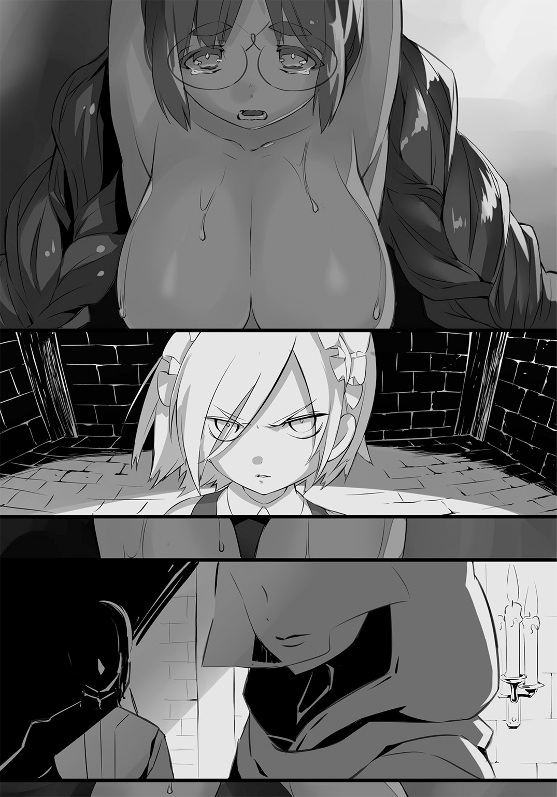
ギチコは眉をハの字にして下唇を突きだした。まあ、だらしない躰をしていることは認めざるをえないし、ルルチナもこの豚めと罵ったことがないわけでもない。とはいえ、リリスに言われると腹が立つ。
ルルチナは両足を肩幅くらいに開いて、少し腰を落とした。両手を開く。握る。また開いて、きつく握った。
伯爵とリリスを殺す。即座に叩き殺す。そして、ギチコを連れて逃げる。その前に、伯爵とリリスの死体を処分して、発覚しないようにする。そういう仕事も経験があるのだ。やってやれないことはない。
「早まるな、ルルチナ」
伯爵は懐からナイフを出して、ギチコの乳房に突き刺した。
「うきっ......」
ギチコは身を震わせたが、暴れはしなかった。
伯爵はギチコの左乳に刺さっているナイフを小刻みに動かした。
「この女がどうなるかは、おまえ次第なのだぞ、ルルチナ」
「......いっ......くっ......あっ......！」
「やめろ！」
「おまえ次第だと言っているではないか」
「――何をさせようってんだ。何が望みだ......！」
「そうだ、ルルチナ。おまえにしてもらいたいことがある。言うとおりにすれば、この女はこれ以上、痛ましい傷を負わずにすむ。加えて、公女殿下にふたたび会わせてもやろう」
「ル、ルル、チナ......」
ギチコは唇を嚙みしめて、首を左右に振った。眼鏡がずれた。
「だ、だめ......！ 言うこと、聞いちゃ！ いけない......！ です......！」
「健気なことだ」
伯爵は低く笑いながら、ギチコの乳房からナイフを引き抜いた。
間を置かず、今度は脇腹に刃を当てて引いた。
「ぅぅぅっ......！ う、あっ......！」
「繰り返すぞ、ルルチナ。すべてはおまえ次第なのだ」
「......その女は、単なる侍女にすぎねえ」
ルルチナは目が眩みそうな怒りを必死で抑えつけなければならなかった。
「同僚だから、義理だの情だのがないわけじゃねえけどな。人質としての価値を大きく見積もりすぎると、しっぺ返しを食うことになるぜ」
「しっぺ返しなら、もう食っている。ルルチナ。私はおまえに裏切られた。あまつさえ、何人もの息子の、娘の命を、おまえに奪われたのだ」
「そうですわ、お父様」
リリスが伯爵の肩にしなだれかかった。
「お姉様には、謝罪していただかないといけないのではありません？ まずはそれからだと思いますわ」
「ああ、そうだな、リリス。言われてみれば、そのとおりだ」
伯爵はギチコの脇腹にナイフを突き入れながら言った。
「床に額をこすりつけて、詫びよ、ルルチナ。過ちを犯したことを反省してみせろ」
「......うっ......くっ......ぃぃぃぃっ......！」
ギチコは白目を剝いて、泡を吹きそうになっている。伯爵。あの男は、効率的、効果的に人を痛めつける術を知り抜いているのだ。
「さあ、ルルチナ。許しを請え。そのあとで、おまえにしてもらいことを話してやる」
×
――三日。
何の手も打てないでいるうちに、なんと三日も過ぎてしまった。
ハイジは部屋の隅にうずくまって味のしないチーズを囓りながら、ここからの脱出法と自死するための方法を交互に考えていた。もちろん、本気で自死するつもりなどないが、もしかするとずっとこのままかもしれない。老いさらばえて死ぬまで、ここから出られないかもしれない。食事や飲み物を与えられなければ、老いることすらできずに死んでしまうだろう。
外部との接点は、狭すぎる窓と、扉下部の隙間だけだ。
窓から風や光が入りこんでくるのはありがたいが、寒くなってきたらそうも言っていられないだろう。もし窓の幅がもっと広くて出入りできたとしても、この部屋はかなり高層に位置している。落ちたらまず、というか確実に助からない。
扉下部の隙間からトレーが差し入れられる瞬間に、声をかけてみる、ということも試した。返答はなかった。ハイジの声が届いたかどうかも定かじゃない。
いくら探しても、望みらしきものは見つからなかった。
自分はこのまま死ぬのかもしれない、という思いは、死ぬんだろうな、という考えに変わりつつある。
情けないぞ、しっかりしろ、そう自分自身を叱咤しても、気持ちがしゃんとしてくれない。
こんなものか、と失望を感じてもいる。
ハイジ・バランはこの程度のものでしかなかったのか。
あるいは、思いあがっていたのかもしれない。
公立学校を出てみたら、たまたまイエルヴァラに配属され、公女殿下にお仕えすることになって、実戦を経験した。貴族じゃない、ド庶民なのに、魔性を持っていることが判明したりもした。たしかに、いろいろなことがあった。普通ではできない経験をした。そのせいで、自分は何か特別な人間だと勘違いしてはいなかったか？ 人にはできないことが自分にはできる、なしえるのだと、いつしか思いこむようになっていたんじゃないのか？
用心深さが足りなかった。思慮が浅かった。おかげで、こんなふうに監禁されている。それでもなんとかなりそうな気が、最初はしていなくもなかった。お気楽なことだ。馬鹿そのものだ。どうにもならない。きっと終わりなのだ。何もかも終わった。ハイジ・バランは死ぬ。遅かれ早かれ、ここでハイジの人生は終わる。
こんな死に方をするなんて、想像だにしていなかった。
それがそもそも甘いのだ。大甘だ。こういうこともありうると、ちゃんと想定して行動しなければならなかった。
今さら反省しても遅い。
手遅れなのに、これから死ぬまで、延々と後悔しつづけるのだろう。
それくらいなら、本当に自ら命を絶ってしまいたい。そうしたほうが楽だ。できなくはない。その気になればまあ、可能だ。壁に頭をぶつけて打ち砕いてもいい。舌を嚙み切ってもいい。自分の手で首を絞めてもいい。
どうせなら、扉に体当たりをしようか？
可能性は低そうだが、ひょっとしたら扉を破壊して、脱出できるかもしれない。ただ自死を目論んで、自分の躰を傷つけるよりは建設的なんじゃないか？
「......やるか」
そうだ。
何もしないよりはましだ。一か八か、やってやる。
ハイジはむっくりと立ち上がった。チーズを捨てて、踏みつける。
扉の前に移動した。
下がる。後退する。壁際まで下がった。最大の助走距離をとって、ハイジは駆けだそうとした。そのときだった。
扉がガシャガシャ鳴った。そして、開いた。ハイジは仰天した。解錠して扉を開けたらしき大王国の兵士と共に、彼女が立っていたからだ。
「お迎えにあがりました、中尉」
「......ルルチナ、さん？」
×
ルルチナに連れられて、ハイジは上層市内の何箇所かを巡ることになった。そこにはそれぞれ、公女殿下の随員が閉じこめられていた。
ラウリ・ニカ大尉、それからボル軍曹と、第八公軍諜報大隊出身のオーラン伍長。あとは随行文官のモルケン書記官に、ファニス准書記官。
随行文官はそもそも二人しか生き残っていないので、全員ということになる。随行武官については、下士官以上だろう。
ルルチナを入れて、七人。
立派な館に案内されて、入浴、食事、そして着替えをさせられた。衣服は用意されていた。武官はデスティニア公国軍の礼服で、文官はこれまた公国式の正装だった。なぜこんなものが準備されているのか。不思議だったし、ルルチナに尋ねたが、答えはなかった。何か事情があるのだろうとは思うが、ルルチナはまるで大王国の意向に沿って動いているかのようだ。どうにも疑わしい。ギチコはどうしたのだろう？ ハイジはそれも訊いてみたのだが、やはり返事はなかった。
身繕いが終わると、ルルチナは皆にこう言い渡した。
「これから皆様には式に出席していただきます」
「式とは？」
短く問うたニカ大尉は、相変わらず何を考えているのかわからない。すべてを淡々と受け止めているようにも見えるが、企みがあるようにも思える。
「むろん」
ルルチナは目を伏せて、大尉と視線を合わせずに言った。
「サクラスティアリス公女殿下とアスタロス大王太子の結婚式です」
「はああああああああああああああああぁぁぁぁぁぁぁぁぁぁぁぁぁぁぁぁぁぁぁい......!?」
ハイジは思わず大声で叫んでしまった。
ルルチナはわずかに顔をしかめて、ため息をついた。
「急ではありますが、もとよりゆくゆくはそうなると決まっていたことです」
「いや、いや、そ、それは、そう、です......けど......で、でも、そんな、まさかいきなり、だって、ねえ......？」
力が抜けた。ハイジは床にへたりこんだ。
「......結婚......結婚式......そんなぁ......しょうがないっていうか、だけど......ええぇぇ......」
「そんな簡単にいくのかな」
大尉が癖毛を指に絡めながら呟いた。
「宣誓とか、証文とか、いろいろ手続きがあるはずだ」
モルケン書記官がああだこうだと大尉の意見を支持するようなことを述べたが、ハイジは半分茫然自失としながらも、そんなの問題じゃないと思っていた。この国には、大王太子に嫁ごうという公女殿下とその一行に危害を加えるようなでたらめな連中がいる。というか、そういうでたらめな国なのだろう。手続きもへったくれもあるものか。めちゃくちゃなのだ。やると言ったら強行するだろう。
「サプライズだそうです」
ルルチナはそう言ったあと、軽く唇を嚙んだ。ただ、口調は変えなかった。
「大王太子がお好みになっている趣向だとか。ともあれ、皆様におかれましては、デスティニア公国代表として、式に出ていただきます」
「どうして？」
と大尉が訊いた。
「どうして、と申されますと？」
「なぜ、そんなことを侍女風情に命令されなきゃならない？」
「失礼いたしました」
ルルチナは肘を張って腹の下を両手で押さえ、深く、深く、頭を下げた。
「皆様におかれましては、ディスティニア公国代表として、結婚式に出席していただけるよう、謹んでお願い申し上げます。――さもなくば、皆様も、また、いまだ拘束されている方々も、消息不明である旨、公国に伝達されるとのことです」
「......脅しってことですか」
ボル軍曹が唸った。かなり憤っているようだ。
「逆らえないな」
ニカ大尉はあっさり白旗をあげた。
「我々は人質をとられている。言うとおりにするしかない」
「申し訳ありません」
ルルチナは頭を上げようとしない。声は冷たく、腰を直角以上に曲げた小さな躰は微動だにしなかった。
でも、一向に現実感がわかない。用意ができると、ハイジたちは迎えの馬車に乗って大王宮へと向かった。馬車には窓があったのでハイジは外を見ていたのだが、上層市は静かだった。祝賀ムードらしきものは微塵も感じない。大王太子が結婚するのに、これってどうなの？
古くて荘厳で、それ自体が一個の壮大すぎる彫刻のような大王宮にも、とくに華々しい雰囲気はなかった。ただ、警備はずいぶん厳重で、入城前に念入りな身体検査を受けた。
城内の構造は、防御のためかやたらと複雑で、迷路のようだった。ハイジたちは応接間らしい部屋に通されたのだが、先客が大勢いた。それでもまったく手狭ではないほど、その部屋は広々としていた。椅子だのソファだのテーブルだのがたくさんあって、給仕係らしいきちっとした服装の男性に、おくつろぎください、と言われはしたものの、無理に決まっている。ソファに腰を下ろしたのはニカ大尉だけだった。あとはハイジ以下、みんな大尉の近くに突っ立っている。ルルチナは黙ってハイジたちの後ろに控えていた。
あの先客たちも結婚式の出席者なのだろうか。
一人の女性に目がとまった。
「......噓」
ハイジは唾をのみこんで、何度も見なおした。
その女性は、卓を囲む椅子に腰かけて、男性数名と談笑している。
真っ赤な、燃えるような髪。
黄色い瞳。
やや下がり目の、甘い美貌。
ハイジは慌ててニカ大尉に囁きかけた。
「......大尉。帝国人がいます」
「ああ、知ってる」
「え」
「あれだろ」
大尉は女性らのほうを目で示した。
「あの男は帝国の祭服を着てる。そうとうな高官だ。臣四位かな」
「臣四位......」
ハイジも当然、帝国の階級制度に関する一般的な知識くらいは持ちあわせている。
帝国では、人は二十三の臣位と、十二の人位、七の下位に分けられ、下位の者は国民と見なされない。奴隷だ。
臣位を持つ者は臣民、人位を持つ者は人民で、臣一位がもっとも位が上、つまり一番偉くて、以下、臣二位、臣三位......臣二十三位、人一位、人二位......といった具合に並ぶ。偉くなるとそのぶん、義務が増えたりもするようだが、臣民は役職に就いて帝国のために働くことで、給料や所領を与えられる。
臣四位は、公国軍人でいえば元帥クラスのはずだ。
「すごいっ......大物――ですね......!?」
女性と卓を囲んでいる男性は三人。大尉が臣四位だという男がどれかは、すぐにわかった。一目瞭然だ。あからさまに仕立てがいい、たっぷりしていながらすっきりした白と黒の服を着て、飾り紐が垂れ下がる筒のような形の帽子を被っている。
「......で、でも、けっこう若い......人のような？」
東大陸人の年齢はわかりづらいが、たぶん三十歳になっていないだろう。細面で、細い口髭を生やしている。切れ長の目。それとも、ただ若く見えるだけなのか？
「軍人じゃないな」
ニカ大尉は顎をさわった。
「外交官か。あの年齢であの位なら、宮家の人間かもしれない。狗塚宮久手紘......？」
「お知り合い......なんですか？」
「まさか。でも、有名人だ。敵対国を威圧、恫喝して、降伏させる」
「そんな人が、どうしてここに......？」
「まだあれが狗塚宮だと決まったわけじゃない」
「それは、そうですけど――あ」
ハイジはこっそり女性を指さした。
「あの女の人。......アナスタシヤ・ザラナスターです。廃王ジークの妹の」
「魔性持ちか」
「あっ。そ、そうです。あの人、魔性を持ってます。ええと、たしか......負傷した廃王ジークを抱きしめたら、あの人に吸いこまれるように......消えちゃって。〝業突く張りの牢獄迷宮〟とか、言っていたような」
「人を消せる？」
「......わかりませんけど。そういうことが起こったのは、間違いないです。この目でしっかり見たので」
「廃王ジークはいない」
「はい。いません。少なくとも、この部屋には」
「ちょっと考える」
ニカ大尉は腕組みをして目をつぶった。唇が動いている。そばにいても聞きとれないほどの小声で何か呟いているようだ。
「妙ですな......」
ボル軍曹が不安げな面持ちで言った。
「本来はおめでたい席だってのに......」
「そ......そう、です......よ、ね......」
「あ、すみません、中尉。少々無神経でした」
「いや、なんでおやっさんが謝るんですか......？ そんな、謝らないでください......なんかこう、かえって落ちこむので......」
「そうですか......」
「落ちこんでる場合じゃないんですけど......」
ハイジはルルチナの様子をうかがった。ルルチナは思いつめたような表情で、うつむいている。一人で何か大変なことを抱えこんでいるのか。打ち明けてくれればいいのに。
アナスタシヤのほうに視線を向けると、目が合った。
微かにだが、アナスタシヤは笑った。
ちょっぴり顔をほころばせただけで、砂糖菓子の香りが漂ってきそうなほど甘ったるい。それでいて、なぜだかハイジはぞっとした。
とりあえず、アナスタシヤがハイジをハイジだと認識していることだけは確実だろう。
兄である廃王がいないということは、ひょっとして――そうとうな深手を負わせたから、助からなかったのかもしれない。もしそうだとしたら、アナスタシヤにとってハイジは兄の仇ということになる。でも、それならあんなふうに笑ったりするだろうか？ 憎々しげに睨みつけるあたりが普通の反応ではないか？ ああいう女だから、普通じゃないのかもしれないが。
ハイジは腰の剣に手をやった。剣といっても、鞘に収めていれば本物にしか見えないものの、抜くと10センチルほどしかない。しかも、銀の塗料を塗ってあるだけで、木製だ。武官が典礼の際に身につける飾り物で、実用性は皆無に近い。というか、皆無だ。
宝剣ワイバーンは、あの塔に幽閉される前に没収された。物が物だけに、必ず取り戻したい。だが、返せと要求したところで、すんなりと返してもらえるだろうか。
せめて、ちゃんと使える剣が一振りでいいから欲しい。
剣でなくても、この際、武器にできる物なら何だっていい。
何かが起こる。
そんな予感だけはあった。しかし、何が起こるというのか？
公女殿下が大王太子と結婚する以上の、とんでもないことが起こるというのか？
結婚。
――公女殿下が結婚する。
それも、あの怪物と。
噓だ。
信じたくない。
どれだけハイジが否定しようとしても、そのときは来てしまった。
濃紺の礼服を着てきんきらきんの帽子を被った男が応接間に入ってきて、歌うような調子で言った。
「本日はぁー、ご一同様、お集まりいただきぃー、まことにぃー、ありがとぉー、ございまぁーすぅー。ただいまよりぃー、我がカバラ大王国ぅー、アスタロス大王太子殿下ぁー、並びにぃー、我が永年の臣国ぅー、デスティニア公国ぅー、ドリアン公が息女ぉー、サクラスティアリスぅー、デスティニアリス公女殿下のぉー、ご成婚の儀をぉー、執り行いますればぁー、ご一同様ぁー、大王宮、大広間にぃー、お移りいただきたくぅー、願い奉りまぁーすぅー」
ハイジには滑稽に聞こえたが、べつにふざけているわけではないようだ。何しろ歴史のある国なので、現代人にとっては珍妙に感じる風習や儀礼があったりするのかもしれない。
来賓はぞくぞくと応接間から出てゆく。
ハイジたちもつづいた。
大広間への道筋も複雑怪奇だった。いざというとき、迷わずに自力でこの大王宮から出られるだろうか。正直、ハイジは自信がない。
大広間は、さっきまでいた応接間なんてものではない、屋内とは思えないほど広大だった。天井もずいぶん高い。床には磨き抜かれた白い大理石が敷き詰められている。無数に並べられた長方形のテーブルと椅子は黒い大理石製だ。
天井には濃紺色の長旗が吊られている。一本や二本じゃない。数百本だ。
大広間の中央には黒い絨毯敷きの道ができている。道は大広間の奥までつづいて、その向こうは階段状に高くなり、壇になっていた。
壇上には椅子が四つ設えられている。
中央に一際大きな玉座があり、その隣に玉座よりもだいぶほっそりしている椅子が、そして、この二つの手前、左右の外側に一つずつ。
来賓は、あの応接間以外にも待機していたようで、三百人ほどはいるだろうか。髪型や服装からすると、大半は大王国の貴族のようだ。とはいえ、大広間の広さのわりには、かなり少ないという印象を受ける。濃紺の礼服に金ぴかの装甲やら兜やらを身につけ、やはり金ぴかの斧槍、剣、盾で武装した兵士のほうがずっと数が多い。出入り口や、テーブルごと、また、黒い絨毯の道沿いに配置された兵士の人数は、千をゆうに超えるだろう。
他には、総勢百人ほどの楽団がいる。
案内役や、給仕もたくさんいた。
ハイジたちは案内役に導かれて、かなり奥のほうのテーブル席についた。一応、形としてはデスティニア公国代表なので、壇の近くに席が用意されたらしい。
絨毯の道を挟んで斜め向かいのテーブル席には、アナスタシヤたちがいる。
なぜ敵であるはずの帝国人が大王太子の結婚式に招かれているのか？ 大王国にとっては、敵ではないということなのだろうか？ 仮にそうだとしたら、大王国は公国を裏切っている、ということになる。
そのうち楽団が演奏を開始した。荘厳なのに華やかで、陽気なのに陰気な、聴いていると精神が搔き乱されてしまいそうな音楽だった。
「バエル大王陛下ぁー、並びにぃー、エリカルリス大王妃陛下のぉー、おなぁーりぃー」
例の調子外れな、しかし一人の人間が出しているとは思えないほど大音量の呼び声が、大広間に響き渡る。
音楽が変調して、兵士たちが一斉に向きを変え、斧槍を掲げた。
「大王陛下万歳！」
「カバラ大王国万歳！」
「永遠なれ、カバラ大王国！」
「大王陛下万歳！」
兵士たちと貴族たちが唱和した。
黒い絨毯の道を、王冠を頂いた老人と、やはり冠を被った女性が歩いてくる。
在位三十八年、当年とって七十二歳。むろん、七十歳を超えているのだから高齢だが、もっと年老いているように見える。
バエル大王が羽織っている華美なガウンは、床に届いてなお余るほど丈が長い。老大王はそれをじつに重そうに引きずって歩いている。手にしている大王錫は、権威の象徴などではなくて、歩行を補助するための杖でしかないのではないか。腰が曲がっているわけでも、足どりが覚束ないわけでもないのだが、老衰して死にかけている年寄りにしか見えない。
一方、同じくらい裾が長いドレスを着て、老大王の後ろを歩く女性は、生気に満ちあふれている。黄色がかった赤い髪は艶やかで、赤紫色の瞳は輝かしい。上背があり、胸は豊かで、細い腰が高い位置にある。大王妃を美女と評しない者は地上に存在しないだろう。
ハイジはむろん、初めて目にした。
たしかに美しいが、公女殿下とは似ていない。
やっぱり公女殿下が世界最高だ、と思った瞬間、胸が張り裂けそうになった。世界最高の公女殿下が、これから怪物の妻になるのだ......。
大王と大王妃が壇上の玉座とその隣の椅子に腰を埋めると、また呼び声が轟いた。
「アスタロス大王太子殿下のぉー、おなぁーりぃー」
音楽が、今度はおそらく、別の曲に切り替わった。兵士たちがまた向きを変える。斧槍は、まっすぐ掲げるのではなくて、斜めに突き上げられた。
来賓の一部が顔をしかめた。わずかにのけぞった者もいる。ハイジは息を詰めた。
あの悪臭のような気配が押し寄せてきて、あたり一帯に立ちこめる。
怪物は、気味悪く太った躰を強調するようなぴったりした純白の衣装を身につけて、金で縁取りした濃紺の飾り帯を斜めがけしている。髪型も、ひどい。十本以上のねじ曲がった角状に固めてある。怪物はやたらとごてごてした冠を被っているが、あの状態で脱ぐことができるのだろうか。きっと無理だ。左手には、かなり長い、反りのある剣を持っている。鞘も、柄も、すばらしく立派だ。伝来の宝剣なのだろう。あるいは、カバラの剣かもしれない。
怪物は嫌がらせのようにゆっくりと黒い絨毯の道を歩いていって、壇上、向かって右側の椅子に腰を下ろした。
なんとなく、来賓たちや、兵士まで、安堵したような気配がある。ハイジもちょっとだけ、ほっとした。これで一息つける、というか。
ところが、怪物はすぐにまた椅子から立って、剣を振り上げた。
たちまち兵士たちは大慌てで背筋をのばし、声をあげた。
「大王太子殿下！」
「アスタロス大王太子殿下万歳！」
「大王太子殿下に栄光あれ！」
貴族たちもそれに倣ったが、どこか、しぶしぶ、という感じがあるのは否めない。
怪物はやっと椅子に座りなおして、右足を左膝の上に載せた。脚を組みたいのだろうが、あの体格ではあれが関の山だろう。
しばらくすると、音楽が止んだ。
いよいよか。
――公女殿下と、会える。
いや、会える、とか。
そういう問題じゃない。もちろん、公女殿下とはお会いしたい、一目でいいからお顔を拝見したい、お声を聞かせていただきたい、それはそうなのだが、ここに公女殿下がおいでになるということは、正式に、公式に、あの怪物に娶られてしまうということなのだ。
それはもう、避けようがない事態なのか？ いまだにハイジはそんなことを考えてしまう。どうにかできないものだろうか？ ぶち壊してしまえないか？ まだ何か方法があるんじゃないのか？ あるよね？ だって、こんなのひどくない？ ひどいよね？ おかしいよ。絶対、おかしいって。
たとえ世界中が認めても、ハイジだけは認めない。認めたくない。認められない。
こんなおかしなことがまかりとおってしまう世の中なら、いっそのこと、この手でぜんぶ、めちゃくちゃにしてしまいたい。
ここには魔性の持ち主がわんさといる。大王も、エリカルリス大王妃も、おそらく大部分の貴族たちも、それにアナスタシヤ・ザラナスター、ルルチナ、そして、あの怪物も魔性持ちだ。ハイジの躰は最高潮に軽い。今のハイジは速い。誰よりも、何よりも、ハイジ・バランは強い。あとは剣だけあればいい。ただ一振りの剣があれば。
そうだ。まっしぐらに駆けていって、あの怪物から宝剣を奪う。怪物は手をふれただけで兵士を殺した。だから何だ。さわられなければいい。ふれられる前に斬り殺してやる。ハイジにはできるだろう。大王国の兵士たちが襲いかかってきたら、手当たり次第に斬り捨てる。間もなくハイジに手向かっても無駄だと皆、悟るはずだ。
ハイジ一人で制圧できる。充分可能だ。
あとは公女殿下を――姫を連れて、逃げればいい。
「おかしなことを考えるな、中尉」
ニカ大尉がハイジの耳許で囁いた。
「少なくとも、まだ早い」
「......まだ？」
「聞いてろ」
大尉が顎をしゃくってみせた。まただ。また怪物が立ち上がった。胸を張るというか腹を突きだし、両腕を広げてみせる。
「式の前に......余から、衷心より謝意を申す」
そこらじゅうから拍手が湧き起こったが、ハイジは手を拍つ気にはなれなかった。怪物は満足げに鼻を鳴らした。
「まずは、バエル大王陛下......我が父君、陛下がおらなければ、当然のことながら、余はここにはおらなんだ......感謝申し上げる......」
老大王はわずかに大王錫を持ち上げてみせた。怪物はつづける。
「次に、エリカルリス大王妃陛下......麗しき我が義母君......我が父君を日々大いに悦ばせ、その偉大なる人生に、よりいっそうの彩りを与え給うている賢妻ぶりに......息子として、感謝申し上げる......」
大王妃は目礼しただけだった。怪物はこっちを向いた。
「そして......我が妻となる、サクラスティアリスを今日まで育みし......我が大王国の忠実なる臣、デスティニア公国の大地と、その代表たる使節団......汝らに、感謝申し上げる......」
「......くっそ」
思わず呟いてしまった。ボル軍曹に腕をつかまれた。
「中尉。......まずいですよ、いくらなんでも」
「わ、わ、わ、わかってます、わかって......」
でも、震えが止まらないのだ。
うおおおおおおおおおおおおおおおおおおおおおおおおおおおおおおおおおおおおおおお。
あの怪物、ぶっ殺してえ。
いけないいけない。本当にいけない。あからさますぎる。
やるにしても、抑えないと。やらないけど。
――少なくとも、今はまだ。
「さらに......」
怪物は、それから帝国人たちのテーブルのほうに目をやった。
「親愛なる帝国の諸氏......とくに、狗塚宮久手紘卿よ......すでに、卿には帝国からのありがたい申し出に対する返事をいたしておるが......色よき返答とは言いがたきものであった......にも関わらず、こたびの招きに応じてもらったこと......感謝申し上げる......」
あの細髭の帝国人は、やはり狗塚宮久手紘だったようだ。
狗塚宮は胸の前で両手の指を組み合わせて、少しだけ頭を下げた。
「もったいなきお言葉でございます、大王太子殿下」
「余としても......そちのような大人に、わざわざ出向いてもらい......その挙句、拒絶するような真似は、本来、しとうはなかったのだが......当方にも、事情があってな。やむをえぬ仕儀であった。許せ......」
「どうかお気になさらぬように。意に染まぬも外交の常です」
「うむ......まこと、ままならぬものよな。そう......じつを申せば、余は陛下と賭けをいたした。余が勝てば、そちの申し出を受けることになっておったのだ。余としては、すっかりそのつもりでおったのだが......負けたのだよ、余は、陛下に。しかし、おかげで余は、世にも美しく、もっとも余にふさわしき妻を迎えることと相成ったのだから、世界神カバラが定め給う運命とは、げに......奇しきものであるよな......ふ、ふ......」
狗塚宮は表情を変えないし、アナスタシヤら帝国人も平然としている。なぜ、平気でいられるのか。ハイジには理解できない。
だって、怪物はあまりにも馬鹿げたことを言っている。
帝国の申し出とやらが何なのかは知らないが、賭け？ 賭けをした？ 大王と大王太子が賭けをして、その結果で返事を決めた？ 帝国の申し出を断ることにしたというのか？
どうもハイジには、自分たちがその賭けとやらに関係していたように思えてならない。
大王太子が賭けに負けて、公女殿下と結婚することになった。ダンタリオン伯爵は公女殿下一行を妨害した。大王太子は伯爵とともに「天国と地獄」で公女殿下を待ち構えていた。
大王太子は内府で、伯爵は右府。伯爵は大王太子を補佐している。
素直に考えれば、大王太子と伯爵は対立関係ではなく、伯爵は大王太子の腹心だろう。
大王太子の意向で、伯爵は公女殿下一行に危害を加えた。
公女殿下が大王都にたどりついて、大王太子は賭けに負けた。
ということは、賭けの内容は、公女殿下が無事、大王都に到着するか否か。ひょっとしたら、いつまでに、といった期日もあったりしたのかもしれない。
いずれにせよ、公女殿下は大王都に現れた。
大王国は帝国の申し出を拒否して、大王太子は公女殿下と結婚する。
何もかもが最悪だ。
何なんだ、この国は。
完全におかしい。まともさの欠片もない。
公女殿下はこんな国の人間になってしまうのか。
「最後に......」
怪物は大広間をぐるりと見回した。
「急だったにもかかわらず......余と、余の花嫁のために集まってくれた者たち、皆に感謝いたす。さあ......さぞかし、待ちかねておることであろう。余の花嫁を、披露しよう。サクラスティアリス・デスティニアリス、改め......サクラスティアリス大王太子妃である......！」
楽団が演奏を再開した。また別の楽曲だ。ハイジは音楽がよくわからない。でも、弦楽器の音色が重なりあい、響きあうこの曲は、つい聴き惚れてしまいそうになるほどすばらしいと思った。不本意ながら、姫だ、と感じた。
これは、姫を表現している。
姫のための音楽だ。
どよめきが起こったが、演奏を妨げるどころか、かえって盛り上げた。
姫が、いや、公女殿下が、黒い絨毯の道を進んでくる。
真っ白だ。
純白のドレスを着て、白いヴェールを被っている。
でも、薔薇のしずくを一滴だけ注いだ白金の髪のきらめきは、ドレスの白よりも清らかで汚れがなく見えた。
そう。公女殿下は汚れを知らない。潔白で、清浄で、真に無垢だ。その輝く肌は、終生、何にも侵されることがないだろう。ふれることすら、叶わないのだから。
ヴェール越しでもわかる。公女殿下は頰紅も口紅もつけていない。素顔のままだ。この場に集う貴族は、男でも化粧をしていたりするのに。
むろん、必要ない。
化粧など施さなくても、公女殿下は完璧だ。足したり引いたりする余地が一切ない。ただそこにいるだけでいいのだ。この世に存在してくれているだけで、何物も及ばないような価値が公女殿下にはある。
ああ、世界に二つしか存在しない宝石、その薄紅色の瞳に見つめられる者は、無上の幸福をえるだろう！
しかし、公女殿下はうつむき加減で、何者も視界に入れまいとしているかのようだ。
あらゆる感情を失っているか、もしくは奪い去られているかのごとき、凍てついた面持ちは、見るだに胸が締めつけられる。
だが、悲しくてたまらないほど、恐ろしくなるくらい、きれいだ。
感極まっている場合じゃない。公女殿下が卓絶して美しいことなんて、とっくに知っている。もし公女殿下を称賛する大会が開催されたら、ハイジは必ず出場するだろう。優勝するために全力を尽くす。賞金や賞品なんかいらない。ただただ褒め称えたいのだ。
でも、今はそれどころじゃない！
見とれてどうする！ 公女殿下は背負わされた過酷な運命の重みに独りで耐えている。なんてけなげなんだ！ 痛ましいんだ！ いじらしい！
世界神カバラのくそったれめ！
できることなら神をこの手でひねり殺して、理不尽な運命なんか破壊してしまいたい！ できなくても、そうしたい！
「......サクラ様」
ルルチナが呟いた。ルルチナは食い入るように公女殿下を見ている。
誰も彼も、公女殿下を見つめている。
神であろうと、たとえ悪霊でも、見ずにはいられまい。
一心に注目を集めている公女殿下が、誰のことも見ていないのだ。
独りだ。
どこまでも、徹底的に、孤独だ。
――呪うぞ、せめて。
所詮、人の身でしかないハイジには、神の姿をとらえることはできない。目に見えもしない神を討ち果たす術はないだろう。
だから、せめて呪う。
全身全霊で。
勝手に与えられた運命なんかに従ってたまるか。甘受したりしない。あらがってやる。戦う。徹底抗戦だ。やってやる。
でも、どうやって......？
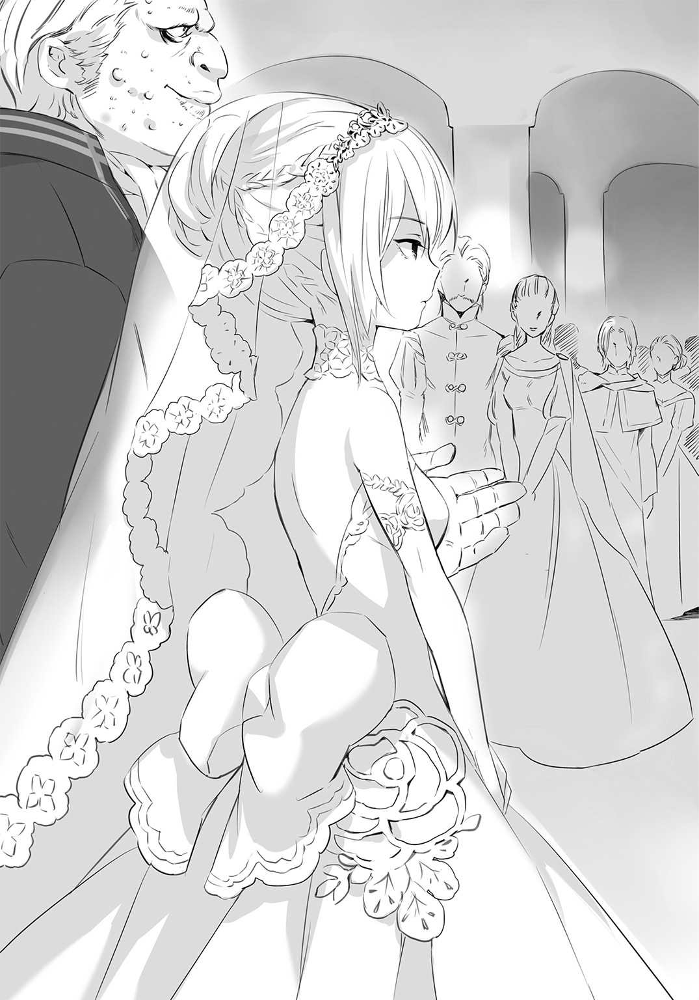
公女殿下がハイジたちの前を通りすぎてゆく。ハイジたちには目もくれずに。
一段、一段、上ってゆく。
壇上に達した公女殿下の後ろ姿は、あまねくすべてを拒絶しているかのようだった。
音楽が止んだ。
「で？」
公女殿下が静かに言った。
「わたしは、どうすれば？」
「んっ、ぐっ、ぐっ......」
怪物が肩を揺らして笑いながら公女殿下に歩み寄る。
「サクラスティアリス......我が花嫁よ。よいのだ......そちは、余の言うとおりにすればいい。ただそれだけでいいのだ......」
「ああそう」
「そうだ......」
怪物は公女殿下の正面に立った。
「誓いの口づけくらいは交わしたいところ......ではあるが、あいにく、そちにふれることは、余であろうと能わぬ......生きておるそちには、な......しかし、死したのちであれば、どうであろうか......？」
「死んだらどうせ、何もわからなくなる。好きにすればいい」
「ほう......そちは、死後の世界や転生を信じぬのか......？」
「信じないし、どうでもいい」
「よかろう......ならば余は、息絶えたそちを、心ゆくまで愛でることとしようか。願わくば、今のまま、美しきそちを堪能したいものだ。この結婚は、さしづめ......そちの屍をもらい受ける、契約のようなものだな......ぐっ、ふっ、ふっ、ぐっ......」
いちいち異常でおぞましいことしか言わない怪物だ。本当の本当に、本気で、抹殺したい。あんな怪物は粉微塵にして焼却してしまったほうが世のため人のためじゃないか？ 反論できる者なんていないんじゃ？
今、やるべきだ。
できるなら。
「さあ、余の隣へ......」
うながされ、公女殿下が怪物の右隣に移動してこちらに向きなおった。
とても揃っているようには見えないが揃いなのだろう白い衣装を身にまとった新郎新婦が並び立つと、金管楽器が高らかに吹き鳴らされた。楽団が祝いの楽曲を演奏しはじめる。
当然、ハイジは喜ぶ気になんかなれない。ただ、だしぬけに白い無数の花びらのようなものがひらひらと降ってきたのには驚いたし、一瞬、美しい光景だと思ってしまった。
あとからあとから舞い落ちてくる白いものは、掌で受け止めてみると、やはり花びらのようだ。しかも、作り物ではない。たぶん本物だ。
いったいどこから、どんな仕掛けで降らせているのか。見当もつかない。
黒い絨毯の道を、絢爛豪華な装いの行列が進んでくる。
先頭は輿に乗せられた、あの老大王よりも確実に年を食っている死体とみまごう老人だ。ぴくりともしないので、実際、死体なのかもしれない。あれがおそらく左府のマルサス侯爵なのだろう。
右府のダンタリオン伯爵もいる。リリスもいる。二人とも、ふんだんに金銀宝石をあしらった華々しい盛装だ。もっとも、リリスは相変わらず黒いヴェールで顔を隠している。
行列の他の男女も、高位顕職の者と、その眷属や従者なのだろう。彼ら、彼女らは、列席者たちにきらきらしたものを振りかけてゆく。どうやら、金箔や小粒の宝石らしい。もっと大きいものがたまに混じる。あれは宝飾品だろうか。
死体に違いないとさえ思っていたマルサス侯爵が右手を持ち上げ、手招きするように動かした。ダンタリオン伯爵が、さあどうぞ、どうぞ、と列席者たちを招き寄せる。列席者たちはテーブルから離れて行列に加わった。行列に加わると、籠を渡される。籠の中身は金箔や宝石、宝飾品らしい。これからみんなであれをばらまき、投げつけあって、お祭り騒ぎでもしようというのか。
派手派手しくて、喜ぶ者は大喜びしているが、くだらない趣向だ。ハイジは呆れ果てていた。大王国の栄華は見る影もなく、衰退、いや、没落していると言ってもいいだろう。こんなふうに濫費、散財する余裕があるとは思えない。
何が結婚だ。結婚式だ。頭にくる。ハイジはなんだか悔しくなってきた。大声で叫んで、誰も彼も罵りたい気分だ。
帝国人たちも行列に加わった。よくやるよ、と思わずにいられない。申し出とやらを撥ねつけられた上、あんなことをさせられる。愚弄されているようなものじゃないか。
行列がハイジたちのところに来た。ハイジはニカ大尉を見た。ニカ大尉は無表情で、黒い絨毯の道に出ようとしている。大尉が行くなら、ボル軍曹たちは倣うしかない。もちろん、ハイジもそうだ。腹が立ってしょうがない、が――、
このまま行列に混ざれば、もっと公女殿下に近づけるかもしれない。
そんな思いつきが頭をよぎった。
まあ、どっちにしても、流れ的にしょうがない......よね？
ハイジはニカ大尉を追おうとした。
「ハイジ・バラン中尉」
後ろから呼び止められた。
振り返ると、ルルチナに見据えられた。
両手に抜き身のナイフを持っている。――ナイフ？
ナイフ、なのか。いや、でも、ただのナイフじゃない。先端の尖った厚手の刃が、螺旋状にねじれている。
あの構造は危険だ。あれはよく刺さる。刺して、ひねれば、大出血するだろう。
一刺しで確実に致命傷を与えられる。
魔性を持つルルチナがあんなものを使ったら。
なぜ、ルルチナがあんなものを。
「申し訳ありません。......こうするしかないのです」
「こうするって」
「ギチコはともかく、あの化物の手に落ちたら、サクラ様といえど――」
ルルチナは螺旋ナイフを握りなおした。緑色の瞳が強い光を放つ。――そういうことか。
ハイジたちと同じく、ルルチナも拘束された。でも、一足早く解放されて、ここまでハイジたちを連れてきた。
ルルチナは大王太子一派に脅されたのだ。何かを要求されて、それをしなければ、ギチコ、そして公女殿下の命はない、と。
周知のとおり、公女殿下は魔性のおかげで戦場では敵なしだ。とはいえ、人は必ずしも剣で刺されたり槍や矢で貫かれたりして死ぬわけではない。毒でも死ぬ。餓えても、渇いても死ぬ。息ができなくても死ぬ。公女殿下の生命を絶つ手段がないわけではないだろう。
ルルチナは相手に従うしかなかった。突きつけられた、その要求とは？
螺旋ナイフ。
ハイジに謝った。
殺す？ ハイジを？ あるいは、ハイジたちを？
公女殿下の目の前で。
ルルチナの手によって。
――だめじゃないか。
いけない。
だめだ。壊れるよ。
そんな惨劇を見せつけられたら、姫の心が壊れてしまう。――それが、目的......？
「ルルチナさん、やめっ――」
ハイジが制止する前に、ルルチナは低い姿勢で駆けだしていた。防げるか。防ぐ。防がないと。中途半端はだめだ。止める。ハイジがやるのだ。そうしないと、他の誰かが殺られるかもしれない。ルルチナが誰か一人でも殺してしまったら、姫は回復しがたい傷を精神に負うことになるだろう。でも、どう止める？ 考えてもわからない。躰だ。委ねろ。本能だ。
ハイジは右手でルルチナの左手首をつかんだ。左手は、ルルチナの右手首には届かなかった。だから、左手で螺旋ナイフを受け止めた。
ルルチナが右手で繰りだした螺旋ナイフは、ハイジの左掌をあっさりと貫通した。引き抜かせない。螺旋ナイフの鍔ごと、左手でルルチナの右手を握りしめた。
ルルチナは目を瞠って、たぶん反射的にだろう、ハイジの腹部に膝蹴りをぶちこんだ。ハイジはよけなかった。よけようがない。逆に前に出て、少し勢いを殺した。それでもだいぶきいたが、力はゆるめない。ゆるめるわけにはいかない。
「だめだよ、ルルチナさん......！ あなたなら、わかるはずだろ......!?」
「――中尉！ だけど......！ はっ――」
ルルチナがハイジの肩越しに行列のほうを見た。
牽制だろうか？ ハイジの注意をそらして、その間に攻撃しようとしている......？
いや、違う。ルルチナがこの期に及んでそんな姑息なことをするとは思えない。ということは、何かあったのだ。
ハイジは振り向いた。マルサス侯爵を乗せた輿が傾いている。輿を担いでいる男たちが揉みあっていた。いや、担ぎ手に誰かがつかみかかっているのか。
輿が倒れる。
マルサス侯爵が落下した。
何だ？
何が起こっている？
炎が奔った――ように見えた。
赤い髪。女だ。
アナスタシヤ・ザラナスターが行列の中を駆け抜けて、先頭に飛びだした。
そびやかせた胸の下で腕組みをして、右足を前に出す。
黄色い瞳が鮮烈な光を放った。
「〝業突く張りの牢獄迷宮〟......！」
「――なっ......」
あのときは、廃王ジークがアナスタシヤに吸いこまれるようにして、消えた。跡形もなく。
今回は、そうではなかった。
ある意味、逆だった。
アナスタシヤの右膝が上がる。腿が高く持ち上がる。
なぜなら、アナスタシヤの右足の下に、さっきまではなかったものが出現したからだ。
妹と同じ赤い髪。やはり妹と同じ、黄色い眼。甘い、端整な容貌。仰々しい装い。
兄はひざまずいている。
なぜか、妹の右足の下で。
踏まれている。
妹の右足が、ひざまずく兄の頭頂部を踏んづけている。
「お行きなさい、お兄様。役目を果たし、今度こそ主上のご期待に応えるのです」
「了解だ、我が妹よ」
兄が答えると、妹は兄の頭から右足をどけた。
廃王ジーク。
ジーク・ザラナスターが疾駆する。
壇の下にいた兵士が金ぴかの斧槍と盾を構えて行く手に立ちふさがったが、ジークを止めることはできない。
「〝爆炎の叛逆者〟......！」
爆発。
爆発。
爆発。
光が閃き、爆音が轟いて、熱が、炎が、噴き上がる。
斧槍は兵士たちごと撥ね飛ばされた。
廃王ジークは見る間に壇上まで駆け上がった。
「久方ぶりだ、麗しき公女よ......！」
「っ......」
公女殿下は身構えた。でも、腰が引けている。驚愕しているのだ。無理もない。今、仰天していないのは、仕掛けた側だけだろう。
「きさま......！」
大王太子は一歩、二歩とあとずさりした。
「ふっ......」
廃王ジークが大王太子に襲いかかる。
――と、見せかけて、その脇をすり抜けた。
ということは。
狙いは......バエル大王！
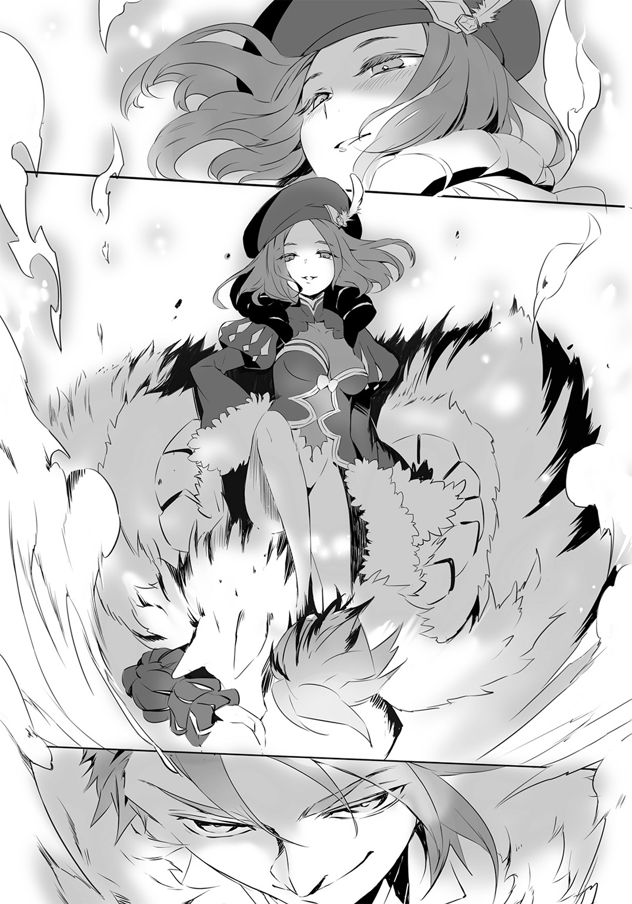
老大王は玉座の上でただただ身をすくませている。もはや老いさらばえた大王の身を守る者はいない。――いや。
「狼藉者......！」
大王妃。
エリカルリス大王妃が立ち上がるなり、跳んだ。すごい。なんて脚力だ。あれは魔性に違いない。
蹴りだ。
廃王ジークに跳び蹴りをぶちかます。
あの蹴りは、ハイジでも躱せるかどうか。
でも、躱す必要がない。エリカルリス大王妃の蹴りは廃王ジークは顔面に炸裂した。文字どおり、それは炸裂だった。
爆発。
「――くっ......!?」
エリカルリス大王妃は、爆風で吹っ飛ばされた。裾の長いドレスが燃えて、弾け飛ぶ。
「姉様......！」
公女殿下が動きだそうとした。
そのときにはもう、廃王ジークは老大王に迫っていた。
「さらばだ、古く淀んだ血の愚かなる主よ」
「――下郎がぁ......！」
老大王は抵抗しようとしたのかもしれない。深い穴のような目が白く輝くのを、ハイジはたしかに見た。だが、一瞬だった。
一瞬後には、廃王ジークの右踵が老大王の顔の下半分を踏み砕いていた。
「陛下......！」
「大王陛下......！」
「陛下ぁ......！」
悲鳴が、怒号が飛び交った。いつの間にか、楽団の演奏が止まっている。あれは即死だ。
死んだ。
大王が殺された。
「下手人を捕らえろ......！」
誰かがそんなことを叫んだ。捕らえる？ 悠長すぎる。馬鹿じゃないのか？
相手は魔性を持つ廃王だ。どう考えても、殺るか、殺られるか。それしかない。
ルルチナは呆気にとられているようだ。この展開はまったくルルチナの与り知るところじゃない。それは確実だろう。ルルチナにこんなことをさせようとした者――おそらく大王太子一派もまた、知らなかったはずだ。
ハイジは螺旋ナイフを左手から引き抜いた。
「......づうぅっっっ」
痛い。これは痛い。猛烈な痛みが脳天まで響く。穴だ。左手に穴があいている。骨も砕かれているみたいだし、ものすごい出血だ。
「ちゅ、中尉......！ ごめんなさい、なんてことを――」
「平気です......！」
左手は使い物になりそうにないが、しょうがない。ニカ大尉を捜した。いた。そう遠くない。大尉が行列に加わる前に、事が起こったようだ。大尉は壇上ではなくて、行列がやってきた方向、大広間の出入り口のほうに目をやっている。ハイジもそっちを見た。
「逃げている......!?」
何だ？ どういうことなのか？
アナスタシヤや狗塚宮ら、帝国人たちが逃走するのはわかる。でも、それだけじゃない。大王国の貴族たちも、全員ではないが、出入り口方面に向かっている。まるで行列が逆流しているかのようだ。おかげで、兵士たちは帝国人に手を出せない。あれでは、貴族たちが帝国人を庇っているようなものだ。何をやっているんだ......！
あるいは実際、そうなのか？
貴族たちは、ただ恐れ、混乱して、この場から逃れようとしているだけなのかもしれない。それか、少なくとも一部の貴族は帝国人と結託していて、やつらが落ち延びるのを手助けしているのかもしれない。あらかじめそういう手筈になっていたのかもしれない。帝国人がしでかしたことを考えれば、それくらいの手回しをしていたとしても不思議じゃないだろう。
「まだ、我々の公女だ......！」
ニカ大尉が叫んだ。
「公女殿下を確保、脱出を図る......！」
そうだ。結婚式の途中で、誓いも何もしていない。公女殿下はまだ怪物の妻になっていないのだ。もちろん、もしそうじゃなくたって、関係ないけれど。
「行こう、ルルチナさん......！」
声をかけると、ルルチナは瞬間、迷うそぶりをみせた。でも、うなずいてくれた。
ハイジは壇上の公女殿下めがけて走った。右往左往している兵士がいたので、右手で斧槍をぶんどった。
「貸して！ あとで返します......！」
ルルチナ、ニカ大尉、ボル軍曹、オーラン伍長、それに二人の文官もついてくる。
廃王ジークは怪物に躍りかかった。
「滅びゆく定めには従うものだ......！」
「うひいっ......！」
怪物は転がって逃げる。なかなか素早い。怪物も必死だ。
「何なの、いったい......!?」
と、公女殿下が廃王ジークに殴りかかった。廃王ジークはよけない。爆発。公女殿下は押し返された。そんな、怪物を守ってやるような真似をしなくても......！
「ルルチナ・リリーローエン......！」
――って、今度は何だ......!?
見れば、ぐちゃぐちゃになっている行列の中から、リリスが飛びだしてきた。両手に短剣。リリスはルルチナめがけて突進する。
「リリス......！」
ルルチナは螺旋ナイフで迎え撃つ。するっ......と、抜け――ない。二人は短剣と螺旋ナイフで打ちあっている。リリスは魔性を発動させていない。発動させない理由が何かあるのか？ あるいは、できない？ 制約か......？
「ここはルルチナが......！ どうかサクラ様を......！」
「行け、中尉......！」
大尉に命じられた瞬間、ハイジは強風に背中を押されたように感じた。
行け。
行け！
行け......！
もう何も考えなくていい、考えるな！
行くんだ！
公女殿下の――いや！
姫の許へ！
「廃王ジィィィィィィィィィィィィィィィィィィィィィィィィィィィーク......ッッッッッ！」
「ほお」
廃王ジークがハイジを見て薄く笑った。
「いつぞやの少年ではないか」
「少年じゃない！」
ハイジは加速した。近くにこれだけ魔性を持つ者がいる。左手は使えないが、たいした問題じゃない。
「僕は男だ......！」
「ほざけ......！」
「おおおおおおおおおおおおおおおおおおおおおおおおおおおおおおおおおおおおお......！」
駆けながら、右手の中で柄を滑らせた。斧槍を短く持ちなおす。
長さはいらない。今は速さが最重要だ。
廃王ジークの魔性〝爆炎の叛逆者〟は反射系。だが、自動で発動はしない。
弱点はわかっている。
超えろ。
廃王ジークの反応速度を。
やつが魔性を発動させる前に――殺る。
一撃で、しとめる。
ハイジは右へ、つづいて左へ動いてみせた。廃王ジークの視線がハイジを追った。
今だ。
全力で、右へ。
廃王ジークはついてこられない。
ハイジは一気に廃王ジークの向かって右側に進みでた。深く。深く。ほとんど背後だ。
鋭く回転する。
斧槍を、振るいはしない。最短距離、最速を目指す。
突きだ。
斧槍の穂先は、斧刃と、その逆側に突起、そして、先端に槍のような細い剣を備える。
その細い剣の部分で、突く。
狙うは廃王ジークの背中。やや左寄り。ちょうど心臓の位置。そこなら、一突きで決めてしまえる。
廃王ジークは完全にハイジを見失っている。――殺った。
ハイジは渾身の力をこめて斧槍を突きだした。
「ぅがっ......!?」
爆発。
ハイジはとっさに斧槍を手放して、跳び下がった。
「――な、なんで......!?」
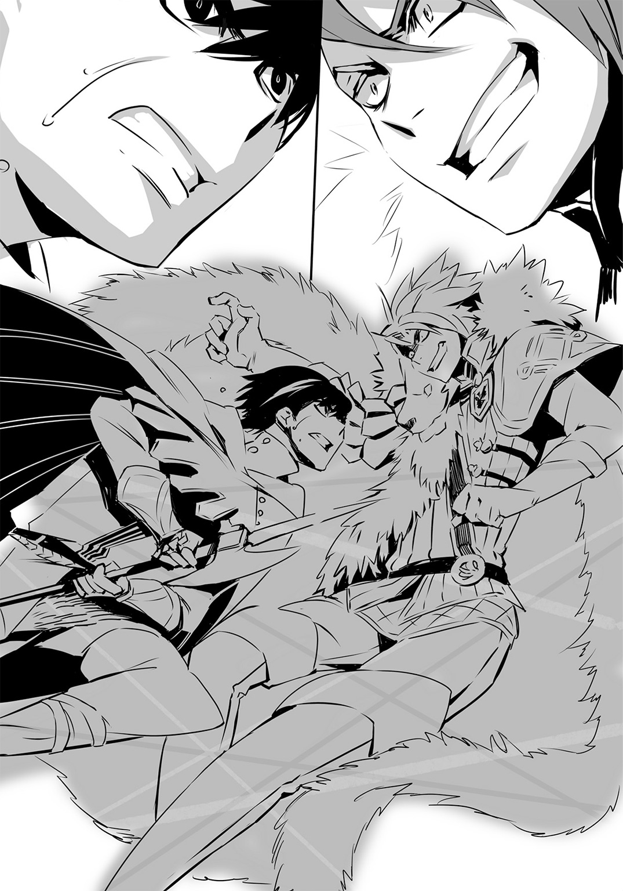
「舐めるな、少年。私は二度も同じ過ちを繰り返さない」
廃王ジークは悠然とハイジに向きなおり、右肩から脇腹までをさっと手でなぞってみせた。あのときハイジが負わせた傷の跡は、確実に残っているだろう。もしかしたら、死ぬまで消えることはないかもしれない。
「きみが私より速いことはすでに知っている。わかってさえいれば、対処は可能なのだよ」
そういうことか。
読まれたのだ。廃王ジークは自分の反応速度をハイジが上回ることを見越して、どう攻撃してくるか、予想を立てた。そして、反応したのではなく、その予想のもとづいて魔性を発動させ、ハイジの攻撃を防いだのだ。
一種の博奕ではある。タイミングや、ハイジの位置、角度など、予想が大きく外れていたら、廃王ジークの試みは失敗に終わっていただろう。
でも、廃王ジークはその博奕に勝った。しかも、微塵も恐れず、堂々と、自信満々で勝負してきた。
その結果、ハイジは武器を失ってしまった。
ハイジは姫と視線を交わした。ちらっとだが、その瞬間、ハイジは姫を見て、姫はハイジを見たのだ。
ハイジはいつだって姫を見たい。いつまでも。永遠に、ずっと見ていたいくらいだ。だから、見た。つい見てしまった。
でも、姫はなぜ、今、ハイジに目を向けてくれたのだろう？
わからない。ただ――、
幸せだった。
それはもう、途方もなく。
「......いやいや！」
ハイジは頭を振った。幸福感に浸っている場合じゃない！
怪物がこそこそと壇から下りようとしている。
「武器など不要。美しくない。それが私の信条だが――」
廃王ジークは懐から何かとりだした。金属製の短い筒に持ち手がついている。
「汚らわしく恥ずべき愚物には、むしろ醜い死こそがふさわしかろう」
筒の先が怪物に向けられた。
あれはもしや、銃なのか。小型の銃。いわば、短銃。
廃王ジークが短銃を操作する。火を噴いた。銃声が轟く。
「ごっ......！」
怪物がつんのめって、壇から転げ落ちた。銃弾はどこに当たったのか。ハイジには怪物の背中に命中したように見えた。そのときだった。
「うおおおおおおおおおおおおおおおおおおおおおぉぉぉぉぉぉぉぉぉぉぉぉぉぉぉらああああああああああああああああああああぁぁぁぁぁぁぁぁぁぁぁぁぁぁぁぁぁぁぁぁ......！」
廃王ジークに躍りかかる者がいた。跳び蹴り。エリカルリス大王妃......？
一瞬、目を疑った。エリカルリス大王妃は、ドレスを裂いたのだろう、両脚をあらわにしていた。それに、すごい形相だった。声も、まるで野獣のそれだ。――キレてます......？
どう見てもブチキレている。激昂することで剝きだしになった闘争本能が、エリカルリス大王妃を獣に変えたのか。
「ッ......!?」
廃王ジークはとっさに魔性を発動させずに横っ跳びして、エリカルリス大王妃をよけた。
「ちぇぇぇぇぇいやあああああぁぁぁぁぁぁぁぁぁぁぁぁぁぁぁぁぁ......！」
エリカルリス大王妃は廃王ジークを追撃――しないで、壇に踵落としをお見舞いした。陥没して、大理石が飛び散る。廃王ジークは、飛んできた大理石を魔性で爆発させて防御した。でも、エリカルリス大王妃はあっちに跳んでは踵落とし、そっちに跳んでは踵落とし。
「はあぁぁぁぁ！ ぬぁぁぁぁああ！ ずぁぁぁりゃああああ......！」
爆発。爆発。爆発。爆発。爆発。爆発。爆発。爆発。爆発。
「――くう......！ これは......！」
廃王ジークはたまらず後退する。
「〝空の彼方まで飛んでゆけ〟......」
姫が呟いた。
あれが、エリカルリス大王妃の魔性。
見ると、大王妃の両脚がとんでもないことになっている。最初に〝爆炎の叛逆者〟を食らったときに負ったのだろう火傷等々の傷は生々しく痛ましいが、あの筋肉。腿回りは、ハイジのウエストより太いかもしれない。大王妃は一貫して蹴り技しか使っていないので、脚部のみが強化される魔性なのだろう。
「なんとも厄介な......！」
廃王ジークはとうとう身を翻した。
「潮時か！ 目的は果たしたのでな......！ さらば！ 機会があれば、また会おう......！」
「虚仮にしくさってぇぇぇ......！ 逃がすかああああぁぁぁぁぁぁぁぁぁぁぁぁぁぁ......！」
大王妃は廃王ジークを猛追する。
ルルチナはまだ、リリスとやりあっているようだ。
ニカ大尉やボル軍曹、オーラン伍長らが壇に上がってきた。
大広間は混沌としているが、何しろ広すぎる。壇上から見渡すと、ごちゃごちゃと人が入り乱れているのは、ごくごくかぎられた狭い場所だけだ。他は奇妙なほどがらんとしている。楽団の者たちなどは、そうしたところに避難して固まっていた。
「中尉」
姫がハイジの左手に視線を向けた。
「その手」
「あっ、えっ、と、こ、これは――」
ハイジはとっさに左手を腰の後ろに隠した。
「な、なんでもないです......よ？」
「公女殿下」
ニカ大尉が姫の前に進みでて、軽く膝を折り、頭を垂れた。自分はあなたの臣であるという、大尉らしい簡潔な意思表示だろう。
「城外へ出ましょう。囚われている者がいます。彼らを救出して、すみやかに帰国を目指されるべきと考えます」
「......これだけじゃないってことですか？」
ボル軍曹が尋ねると、大尉はうなずいた。
「事実上の降伏勧告を無視した国主と跡継ぎを暗殺するだけですませるほど、帝国は甘くないだろう」
狗塚宮久手紘。
大尉は言っていた。敵対国を威圧、恫喝して、降伏させる、と。
つまり、こういうことか。
帝国はひそかにカバラ大王国に交渉を持ちかけた。形の上では和平を結ぼうとか何とか言ったかもしれないが、ようは降伏して帝国の支配下に入るよう求めたのだろう。すすんで帝国に降れば、民は奴隷の下民ではなく、人民扱いになる。大王は廃王として遇されるだろう。国として自治が認められた例はないはずだが、命は助かる。身分も、ある程度は保証される。
大王太子一派は、この話に乗ろうとしていた。
大王は反対だった。
そこで、大王と大王太子は賭けをした。
大王が賭けに勝ち、大王国は帝国の要求を拒否することになった。
現状維持、ということだ。アスタロス大王太子がサクラスティアリス公女を娶り、大王国にとっては形式上の臣国、実質的には保護国であるデスティニア公国との結びつきをさらに強化する。それが大王国の選択だった。
大王国にとって、正しい選択だったのか。それはハイジには判断できない。ただ、我がデスティニア公国としては、大王国が帝国に降っていたら、まずいことになっていた。
公国は現在、北の国境線で帝国と接している。大王国が帝国に寝返ったりしたら、そちらとの国境にも防衛線を敷かなければならなくなるのだ。兵力を移動させなければならない。現状では、公国・大王国間はほぼ素通りできるので、砦などの防衛拠点の建造も必要になるだろう。間違いなく大きな負担になる。
助かった。
――と、安心するのはまだ早いのだろう。
「ラウリ・ニカ大尉」
姫はしっかりと大尉を見据えた。
「あなたに従う。指示をして」
「ヤー」
大尉はにやっと笑った。この人がこんなに嬉しそうに笑うことがあるのか。意外だ。
ルルチナがまだリリスと斬り結んでいる。押しているようだ。大尉が落ちていた大王国兵士のものらしい剣を拾って、ハイジに投げてよこした。受けとって、リリスに詰め寄る。リリスは不利を悟って逃げた。
「――サクラ様......！」
「一緒に来て、ルルチナ！」
「はい......！」
ルルチナの声は湿っていた。詳しい事情を知りたいところだが、あとでいい。
大尉の指揮で、ハイジたちは大広間をあとにした。城内はほとんど迷路だ。でも、大尉の頭の中には見取り図が入っているようで、すいすい進むことができた。
城外に出ると、焦げ臭かった。見れば、下層市が煙に包まれている。あちこちに火の手が上がっていた。上層市も騒然としている。
「何が起こってるんだ......!?」
ボル軍曹が唾を飛ばして叫んだ。
「まずは救出する」
大尉はぶれない。仲間の監禁場所は、大尉が一部を、それからルルチナがおおよそぜんぶ把握していた。別行動はとらず、全員で行動した。はぐれるわけにはいかない。
ウォルフ兵長、ルメ兵長ら武官十一名は、上層市内の古い地下牢や塔に閉じこめられていた。警備はなきに等しかった。
ギチコはある館の地下室にいた。素っ裸だったので驚いて、ひどい傷を負っていたことに激しい怒りを覚えた。
「っ......！」
でも、姫の憤りは、ハイジの比じゃないだろう。ルルチナに介抱されているギチコを前にして、姫は地下室の床を蹴った。二度、三度と蹴った。そんなに強く蹴ったら、脚が壊れてしまう。皮膚が破れ、筋肉が弾けて、骨が砕ける。いや――壊れない。姫の躰は魔性に守られる。痛みだけが姫を苛むのだ。姫を責める。責め立てる。
止めないと。
しかし、ハイジが、他の誰かが制止する前に、姫は自分でやめた。
「......ギチコ」
「はふぇ......？」
「あなたがどう思っても、わたしのせい。ごめんなさい」
「あぁう......」
ルルチナに衣服を着せてもらったギチコは、傷が痛むようで、胸のあたりを押さえている。ハイジはもちろん、ちゃんと見たわけじゃない。でも、ちょっと切った、というような傷ではなかった。あれはおそらく、傷跡が残るだろう。
「わたしのそばにいたら、ろくなことがない。これからも、きっと。それでも――」
姫は睨みつけるようにまっすぐギチコを見た。
「わたしと一緒に来て欲しい。ギチコは、わたしの......きょうだい、みたいなものだから」
「おぉ......」
ギチコはずれた眼鏡の位置を直して、呟いた。
「あたし、サクラさまのおねえちゃん？ です？」
姫は首をひねってしばし考えこんでから、頭を左右に振った。
「それはなんか違う」
同感です。
館を出ると、上層市は本格的にてんやわんやの大騒ぎになっていた。貴族やその家族、従者たち、兵士たちが、わめいたり泣いたりしながら行き交っている。馬車が走っている。道が混雑していて、人々や馬車が立ち往生している。
日暮れが迫っている。黄昏時に落ちる影はいやに暗い。まばゆい夕陽と闇の競演が混乱に拍車をかけているのだろうか。
「好都合だ」
ニカ大尉は人通りの少ない裏道を選んだ。たしかに、この状況では誰もハイジたちに目をとめない。問題は、確実にごった返しているだろう「天国と地獄」の先にある大王門から、市外に出られるかどうか。
ハイジは右手で顔の汗をぬぐった。腰に吊している剣の品質はそこそこだが、ワイバーンには当然、及ぶべくもない。あれはアルトレッド中将からの預かり物で、いつかは返さないといけないとハイジは思っている。取り返せなかったのは痛いが、さすがに剣を探したいとは言いだせない。――痛い、といえば。
ふいてもふいても、どんどん汗が出てくる。
歯を食いしばっていないと、変な声がもれそうだ。
左手は、肘を曲げて、腹のあたりに添えている。腕を振って走るのはとても無理だ。正直、左腕は少しも動かしたくない。本当は一切、衝撃を与えたくない。
傷は見ないようにしている。どうなっているのか、正確にはわからない。
ただ、出血は止まっていないようだ。それは感じる。
我慢だ。我慢しろ。
いや、忘れろ。
今はすっかり忘れてしまえ。
こんな痛み、姫のご心痛に比べれば、どうということもない。
「痛いの？」
気がついたら、姫が隣にいた。
知らぬ間に下を向いていたのだ。何をやってるんだ！ こんなことじゃあ、姫のお役に立つことなんかできない。夢のまた夢だ。しかも、気遣っていただいて！
姫が！
気遣ってくれている！
――くそ！
嬉しい！ どうにかなってしまいそうだ！
「ぜんぜんです！」
ハイジは精一杯どころか限界を超えた笑顔を作ってみせた。
「痛くなんて、まったく！ むしろ、気持ちいいです！」
「......変態なの？」
「えっ!? ち、違いますよ!? き、気持ちいいというのは、そういう意味じゃなくて......つ、つまり、あの......」
しかしながら、気持ちいいというのも、あながち噓じゃなかったりする。
だって、ここに姫がいるのだ。すぐ近くにいる。お声をかけてくださった。しかも、しかも、だよ？ 見てよ！ いや、ある意味、誰にも見て欲しくないのだが、見て欲しい！ 見ないと損、大損だ。ハイジが思うに、生まれてきた意味の半分以上を喪失する。
花嫁姿ですよ......！
真っ白い、純白の花嫁衣装が、これほどまでに似つかわしい存在が、果たしてこの世にあるだろうか、いやない、決してありはしない、あってたまるか、ないったらないんだ、誰が何と言おうと絶対的にありえない......！
これはもう、眼福なんてものじゃない。僥倖だ。幸甚だ。至福だ。最高。最上級、最大級の幸せだ。今のハイジ・バランは、地上に並び立つ者とていない果報者だ。
それはもう、ね。
気持ちいいですよ。
うっとりしちゃいますよ。
恍惚ですよ。
これが多幸感というやつか、てなものです。
「......だ、だからその、ひ、姫がいらっしゃるので、た、たとえ多少、いくらか、痛いとか、あったとしても、そんなもの吹っ飛んじゃうというか......！ いやあの、変な意味じゃないんですけど、事実そうだっていうか、ありのままっていうか、な、何言ってるんでしょう僕、わかんなくなってきたぞ、やばいやばいやばい......！」
「変な人」
「で、ですよねええ！ ぼ、僕も思います！ 我ながら、おかしい......」
「そうね」
「すみません！ ですけど、お役に立ちます！ 姫のためなら何でもしますので！ うおっ、またこんなこと言って、ああああああの、そそそそそそうだ、僕、筆頭衛士なので......！」
「知ってる。一応」
「ですよねえ......！」
「変な人ばっかり」
姫は周囲を見回して、一瞬、泣きそうな顔をした。今にも泣きだしそうで、そのまま泣いてしまうんじゃないかと思わずにいられない表情だったが、悲しそうではなかった。苦しそうでもなかった。
それがハイジには、この上なく嬉しかった。こんなとんでもないことになっているのに、なんだか喜んでばかりだ。いいのか？ 馬鹿なんじゃないのか？
馬鹿かもしれない。まあ馬鹿だ。べつに、馬鹿でもいい。
姫がいれば、何だっていい。
「わたし」
いてくれるだけでいい姫が、ハイジのほうは見ずに、前を向いて、ぽつりとこぼすように、小声で言った。
「中尉のこと、嫌いなのかと思ってた」
「――えっ..................――」
それ
って......
え
なに
どう いう...... こと ......？
嫌い、
――って、誰が？
それは、姫、だろう。
嫌い、の主語は、姫。あたりまえだ。それ以外、ない。
姫は、中尉、すなわち、ハイジのことが、嫌い。
ハイジはうなずいた。
死にます。
今、死にます。ここで、死にます。なんとしても、死にます。どうやってでも、死にます。
ハイジ・バラン、死なせていただきます！
かえってすがすがしいほどだった。それ以外に道はないと、素直に、心から思えた。何の悔いもない。あるわけがない。姫に嫌われたのなら、死ぬしかない。生きていたってどうしようもないのだ。
ハイジは回れ右をしようとした。姫の前でこれ見よがしに自死するような、みっともない、迷惑な真似はしない。どこかに行って、一人で静かに死のう。――そうしようとした。
「違ったみたい」
姫が、さっきよりもっと小さな声で、そっと言った。
ハイジは即座にふたたび、うなずいた。
生きます。
これからも生きます。姫のために生きます。姫のためだけに生きてゆきたいです。
ハイジ・バラン、生きさせていただきます！
尽くそう。尽くさせていただこう。ハイジは公国の一軍人にすぎない。命令、立場、難しいことはいろいろあるだろう。それでも全力を尽くそう。できるかぎり、いや、できる以上のことをなんとかやろう。やらなきゃ！ やりたいし！
ハイジはこの瞬間、はっきりと自覚したのだった。
世界中に宣言したいが、一生、自分の胸に秘めておくしかない思いだ。相手が相手だけに。ハイジにも分別はある。それくらいのことは弁えている。
でも、秘めておくのならば、持ちつづけていてもいいはずだ。誰も文句は言わないだろうし、言わせはしない。
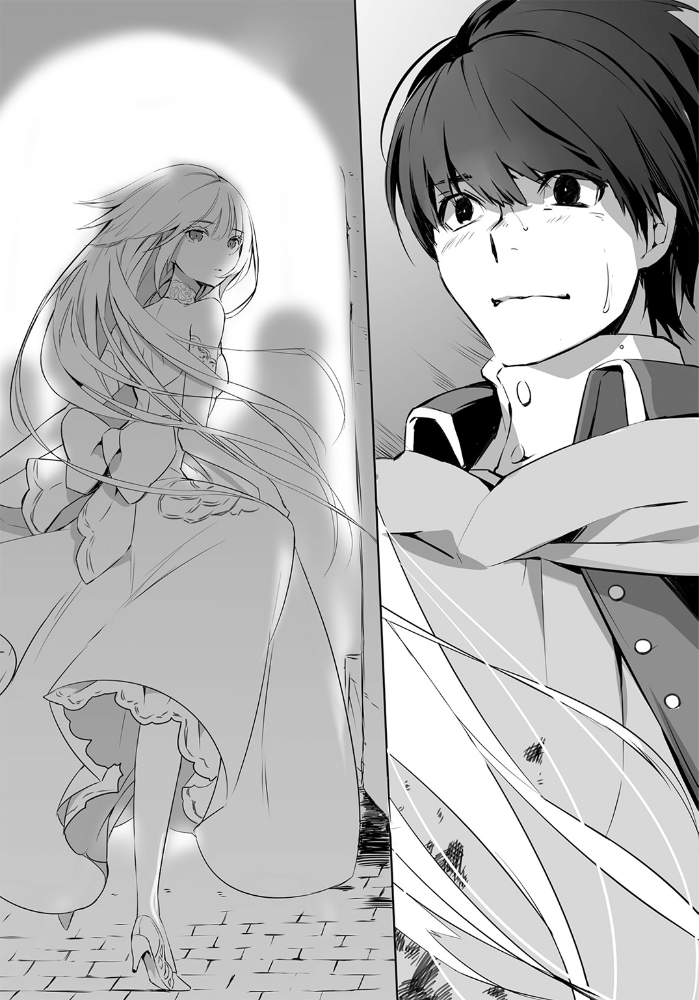
――姫。
サクラスティアリス・デスティニアリス殿下。
ハイジ・バランは、姫のことを、お慕い申し上げています。
大好きです。恋しています。愛している、と言ってもいいと思います。どうせ誰にも言わないので、断言しちゃいます。
僕は姫を愛しています！
ついでに言うと、生涯、愛しつづけます。
もちろん、姫だけを。
つい、いいですよね......？ と、許可を求めてしまいたくなる。が、しない。許しなんか、いらない。
たとえ神が許さなくても、ハイジはもう決めたのだ。決めざるをえなかったのだ。
しょうがないのだ。
愛してしまったのだから。
何があろうと、何者も、この愛の火を消すことはできない。
死なないぞ、とハイジは自分に言い聞かせた。この先、たとえ姫に嫌われようと、死にはしない。姫のためにできることが何か一つでもあるかぎりは、生きながらえて、それをやる。目障りだ、消えろと言われたら、身を隠して姫のためにできることを探す。それがハイジの愛だ。貫いてやる。
まずは脱出だ。大王門をくぐって大王都カバラに入り、天国と地獄から上層市に足を踏み入れてしばらくは、なだらかな坂道がまっすぐつづく。下から見上げると空に昇ってゆくような印象を受けることから、天空大道、との呼び名がある。その天空大道に出てしまえば、あとは市外まで一本道だ。
もうすぐだろう。たぶんこの角を曲がって、直進すれば――、
「うわ......！」
まずい。見るからにやばい。
人だ。ものすごい数の人が天空大道にひしめきあっている。一応、市外に向かって流れてはいるようだが、風のない日の雲のように遅い。
ニカ大尉はそれでも黙って天空大道までハイジたちを導いた。あの人波に揉まれながら市外に出るとなると、そうとう時間がかかりそうだ。とはいえ、どうしようもない。他に方法がないのだ。少なくともハイジが知るかぎり、天空大道を通らなければ大王門まで行きつくことはできない。
数千、いや、数万人の、恐れ、難渋し、弱り果て、怒り、度を失い、悪態をつき、罵りあい、押しのけあおうとする雑踏に巻きこまれて、数十台、それ以上の馬車が動けなくなっている。この中に突入するのはちょっと勇気がいるが、やむをえない――のか。
「......抜け道は、ありません」
ルルチナは眉間に皺を寄せて、唸るように言った。
「道以外も――たとえば、上層市の下水道は下層市のものとは繫がっていませんし、排水口は海側にあり、そこからは侵入できないようになっています。外に出ることも、当然できません。大王のための隠し通路があるという噂はまことしやかに囁かれていますが、仮に存在したとしても厳重に秘匿されているでしょう」
ルルチナの話を聞いているのか聞いていないのか、ニカ大尉はどこか遠くを眺めている。
気になって、ハイジは大尉の視線の先に目をやった。
大尉は、人や馬車で埋めつくされている天空大道ではなく、その向こうを見ているようだ。この脇道は天空大道より少し高くなっていて、見晴らしがきく。おかげで、上層市の下に広がる下層市や、その先に果てなくつづく海も、ここからは望むことができた。
海。
宵闇に沈もうとしている海に、たくさんの船影が散らばっている。
ハイジは、船については詳しくない。それどころか、ほとんど知らない、と言ってもいいくらいだ。だから、遠目に見たままのことしかわからない。
どうやら、ハイジたちが下層市に入りこむ際に使ったような小舟ではないらしい。もっと大きな船だ。
下層市の港から外海へ向かう船は、きわめて少ない。大半の船は外海から下層市に向かっている。奇妙だ。港から多数の船が避難しようとしているのなら納得できるが、その逆とはどういうことだろう？
あの百隻をゆうに超えそうな船は――船団は、いったいどこから来たのか？
そして、あれは......？
「......島？」
ハイジは何度かまばたきをした。島。そう見える。
水平線の近くだ。
島が浮かんでいる。
無人島ではないようだ。島中に明かりが灯っている。でも――あっただろうか？
あんな場所に、島が？
ハイジの記憶にはない。あったら、覚えているはずだ。
「違うな。島じゃない」
ニカ大尉が頭を振った。
「信じがたいが、あれは船だ」
あとがき
僕は酒をたしなみます。煙草はやりません。ずいぶん前にやめました。酒はたいてい家で、一人で飲みます。外ではあまり飲みません。一緒に飲む相手がいないのです。つまり友だちがいません。皆無というわけではなくて、あまりいないということです。
最近ではそういった機会もめっきり少なくなりましたが、以前はたまに友人知人と酒を飲みに行くこともありました。当時、僕は札幌市に住んでいました。北海道の道庁所在地、札幌です。僕は知人に誘われて飲みに行きました。そこはおしゃれというかポップなバーでした。なんでも大泉洋とパフィーがよく来店するとのことでした。大泉洋は俳優として大活躍しておりますので、ご存じかと思います。パフィーも一世を風靡した女性歌手グループですから、まあ聞いたことくらいはあるのではないでしょうか。パフィーといえば遠くアメリカなどではアニメのキャラクターとなり、契約によって長らく髪型を変えることができなかったそうです。そのような話を聞き及びました。さすが契約社会アメリカです。契約によって個人のヘアスタイルまで規定してしまう。なんとも凄まじい話ではありませんか。全ては契約、そして金であると言わんばかりです。ところでパフィーのアニメ、僕は見たことがありません。
ともあれ、その大泉洋やパフィー行きつけであるというバーに僕は酒を飲みに行ったのでした。たしかに何かこう、普通ではないというか尋常ではないというか、そうした雰囲気のあるお店でした。「パフィーはどこに座りますか」「アミですかユミですか」「ではアミで」「アミでしたらそちらです」「ほう、なるほどこの席にアミが」「座られますか」「いえ、座りません」「そうですか」「ええ、僕はアミではありませんから」「お見受けしたところ、ユミでもありませんね」「ご慧眼！ よくわかりましたね」「長いですから」といった会話をお店の人としたような記憶は一切ありません。それはそうです。僕はシャイでして、初対面の人と親しく会話を交わすなどといった芸当はできないのです。僕が覚えているのはその店の中が全体的にピンク色っぽかったことと、ブランコのような吊り下げ型の長椅子席があったこと、あとは、とても退屈だったことです。僕は知人に連れられてその店に行ったのですが、それが誰だったかどうしても思い出すことができません。さりとて見知らぬ他人とそのような店に行くとは考えづらく、友人ならば（総数が非常に少ないので）全員覚えていますから、さして親しくもない人と何かの弾みでその店に行き、会話は弾まず、気まずかったのではないかと思います。
さて、紙数が尽きました。前担当のＫ前編集長、担当の編集者Ｔ氏、編集者Ｍ氏、すばらしすぎるイラストを描いてくださった吟さん、デザインを担当してくださったＶＯＬＡＲＥの関善之さん、その他、本書の制作、販売に関わった方々、そして今、本書を手にとってくださっている皆様に心からの感謝と胸一杯の愛をこめて、今日のところは筆をおきます。
十文字 青
Ax 少女のあどけない野心 LADY BE AMBITIOUS
禁衣を身につけ、頭冠を被った見目麗しい貴人が、歩行鳥の背に乗っている。
ただの貴人ではない。彼女は咎埜不人の主人だ。
ちなみに、不人の比類ない主人はしかめ面をしている。ご機嫌斜めだ。
歩行鳥ではなく馬に乗った不人が隣でじっとその横顔を見ていると、主人に睨まれた。
「何だ。さっきからじろじろと。無礼だな」
不人は主人から目をそらしただけで何も言わなかった。主人が不人の脚を蹴った。
「黙っているやつがあるか。何とか言え」
「......蹴らないでください」
「おまえを蹴ろうと殴ろうと、私の自由だ。違うか、咎埜」
「......違いませんが、文句を言うのはおれの自由です」
「口がついているからな」
「......ええ。このとおり、一応、喋れます」
「憎たらしい口だ」
「......すみません」
「おまえ、ちっとも悪いと思っていないだろう」
「......はい」
「悪党め」
不人を罵倒しながらも、主人は満更でもなさそうだ。
天下の奇人にして傑人と謳われた先代亞璃簾宮家当主の嫡孫で、その秘蔵っ子と目され、敬愛されるより敬遠されて育った。主人にしても、自身と比べて明らかに愚鈍な俗物たちを、受け容れるよりは遠ざけようとした。先代がそういう人物だった。主人は先代を手本とし、一歩か二歩引いたところから愚物たちを観察して反面教師とし、自ら成長した。
主人は、いわゆる子供らしさとは無縁だった幼年期を、後悔してはいまい。しかし、間違いなく、素顔の主人にはあどけないまでの稚気がある。主人の中には一人の少女がいるのだ。幼女と言ってもいいかもしれない。
人も幼いころは子犬同士のようにじゃれあう。それはおそらく、やがて大人になるために必要な過程なのだろう。主人はその道を通らなかった。今、不人を相手に、遅まきながら他者とたわむれている。
それが主人の欲求であるのなら、不人は叶えるだろう。
不人も主人と同じく、子犬のような時代を持たなかった。だが、そうした子供たちを遠くから見て、痛切にうらやんでいた。だから、子犬の所作を知っている。演じることはできる。
「......腹の虫は収まりましたか」
「ぜんぜん」
主人はいやそうにため息をついた。
「狗塚宮が野心家だということはわかっていたが、あそこまでとはな。私ともあろう者が、彼の動きをまったく察知できなかった」
「......亞璃簾様は中央におられない。やむをえないのでは」
「父を介して、情報は収集するようにしている。おまえだってそれは知っているだろう。まあ、味方はいても、有能な者はそう多くない。わかってはいたんだがな。それにしても、まさか本島を使うとは！」
「......お悔しいようで」
「あたりまえだ。私は思いつきもしなかったんだぞ」
主人は親指の爪を嚙もうとして、やめた。
「たしかに、本島の航海能力と航続距離なら、東大陸を南回りで移動して、カバラ大王国を直接衝くことも可能なんだ。途中、敵対国の海軍と遭遇したとしても、粉砕できる。本島と搭載艦だけで、軍艦二百隻分の戦力に相当すると言われているからな。可能は可能だが、本島を動かすという選択肢が、私の頭には浮かばなかった。本島は、我が帝国の本拠地にして、ときには主上がおわすこともある、いわば海上の御座だからな」
「......狗塚宮の政治力を侮っていましたか」
「それもある。気鋭、辣腕で名高いとはいえ、まだ二十九で、臣四位だ」
「......亞璃簾様は、十七歳で、臣九位です」
「ああ、そのとおりだ！ 十二年あれば、私はもっと高みに昇れる。二十九は若いが、若すぎはしない。狗塚宮は寒嶄公とも近しいしな。今回の仕掛けだって、寒嶄公が中心になって進めたということになっている。どう考えても立案者は狗塚宮だが。あれくらいのことはやってのけられる男だと、私は想定しておくべきだったんだ」
寒嶄公は臣一位にあり、主上に拝謁して上奏できる。帝国において公と称される三臣の一人だ。もっとも、当年とって七十七歳で、最近は出仕することも多くないと聞く。寒嶄公自身がこれほど大胆な侵略作戦を企図してのけるとは思えない。
「......大王国は陥ちますか」
「陥ちるだろうな。三公国から横槍が入るに違いないし、全土を掌握するには多少時間がかかる。だが、大王都は我が帝国のものとなるだろう。これは大きい。カバラの保護下で密かに生きながらえているともいう真人が、大王都にいる可能性もあるし」
「......我が帝国も、真人の力を？」
「馬鹿な。あれは本来、ふれてはならないものだ。レビテの正史にはない、秘史の記載だが、真人と交わって生み落とされた者の大半は、見るもおぞましい怪物でしかなかった。人の皮を被った化物として生まれたのは、数十人に一人だとか。中には、真人と交接しただけで心身に異常を来した人間もいるらしい。咎埜、おまえなら、やるか？」
「......いいえ」
「私も御免だ。現存するなら、一度、この目で見てみたい。興味はあるが、それだけだな。とはいえ――」
主人は手綱を使わず両脚を締めて、歩行鳥を止めた。
「正史も、秘史も、正しいとはかぎらない。何せ、大昔のことだ。真相が別にあるのなら、是非とも知りたい」
銀色の瞳に異様な燦めきが灯っている。
この人なら、やるだろう。
不人はそう確信した。御免だと言っていたが、噓だ。その機会があれば、主人はやる。真人と交わり、子をなそうとするに違いない。恐ろしいことだが、不人はおそらく、制止できないだろう。いや、できない、のではない。しないのだ。
歴史も、倫理も、人心も、自分の感情や思想も、突き詰めれば、不人には関係ない。
主人が望むままになし、望みどおりに生きる。
それが不人にとって、唯一絶対の揺るがない正義なのだ。
不人は馬上で振り返った。全軍が停止している。
臣位を持つ軍士と操手、あわせて五百余名。
重装の甲機士、突撃兵装の乙機士、射撃装の丙機士に、特殊兵装の丁機士を加えて、総勢二万人。
以上が、亞璃簾宮太華子率いる五百十七侵攻団の軍容だ。
五百十七侵攻団は、アンヌー連峰とフェレン岩山地の合間にあるダル陸峡を、フェレン岩山地の裾にある小高い丘から見下ろしている。
西のアンヌー連峰はサーン国の領土で、東のフェレン岩山地はデスティニア公国領だ。いずれもきわめて険しく、熟練した登山者でなければ越えられない。
サーンと公国は過去、何度もダル陸峡を巡って争い、奪いあってきたが、ここしばらくは双方ともに領有権を主張しない形で落ちついている。
五百十七侵攻団はこれよりダル陸峡に突入して、デスティニア公国に攻めこむ。公国北西の守備の要であるウェスホーン城市は堅固だし、公国軍最精鋭の呼び声も高い第二公軍が配置されているのに加え、三一旅団、六四旅団の支援もえられる。ウェスホーン城市を抜くのは容易ではない。至難といっても過言ではないだろう。
五百十七侵攻団は、それでもウェスホーン城市を衝く。程なく、五百十八侵攻団、五百二十一侵攻団が参戦するだろう。
それだけにとどまらない。
二百六、三百十一、三百二十五、三百五十、四百二十一、四百五十二、四百九十三各侵攻団が、デスティニア公国の北国境線に順次押し寄せる。
各侵攻団は、攻撃が停滞したら退き、態勢を立てなおしてはまた進撃し、攻めあぐねればただちに後退するだろう。
公国軍が疲弊し、破綻するまで継続する本作戦は、臣二位太軍師の卯立豊衛が発案、文書により主上に奏上して裁可をえたことになっている。
当代亞璃簾宮家当主である亞璃簾宮日羅富の、娘・太華子に対する無条件の信頼と無私の愛が、その結果としての懸命な努力、人脈を駆使した奔走が、卯立を動かしたのだった。
むろん、絵図を描いたのは亞璃簾宮太華子、不人の主人だ。
「狗塚宮を援けることになってしまうな」
主人は軽く肩をすくめた。
「まったく気にくわない」
「......勝利は勝利です」
不人は少し考えてから付け足した。
「......あなたの勝利は、あなたのものだ。おれはそれを知っています」
「おまえにもおすそわけしてやろう」
主人は双眼を銀色に煌めかせて、微かに笑った。
「号令をかけろ、咎埜。私は大きい声を出したくない」
to be continued.
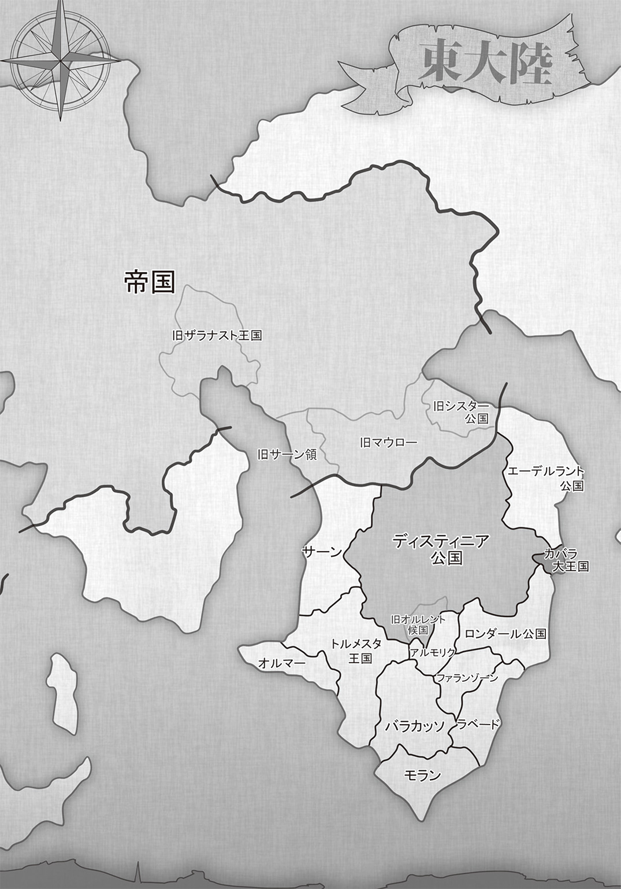
著者紹介
十文字 青 じゅうもんじ あお
函館中島町にあるラムズイヤー。カレー屋さんです。ここのマトンカレー。僕は羊肉が好きで羊のカレーもたまに食べますが、こんなに羊感たっぷりで満足したのは初めてです。素晴らしい。カツカレーも気になる......。
illustration
吟 ぎん
もしも魔性の力があったら何をするかな。どのキャラの魔性がほしいかな。と考えたんですが、正直あんまりほしい魔性がないな......ということに気がつきました。普通が一番！
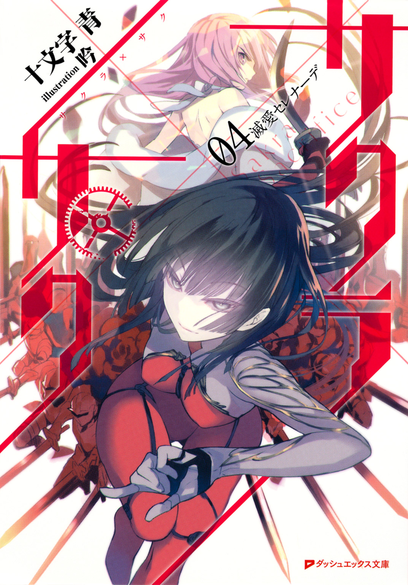
この本は縦書きでレイアウトされています。
また、ご覧になる機種により、表示の差が認められることがあります。
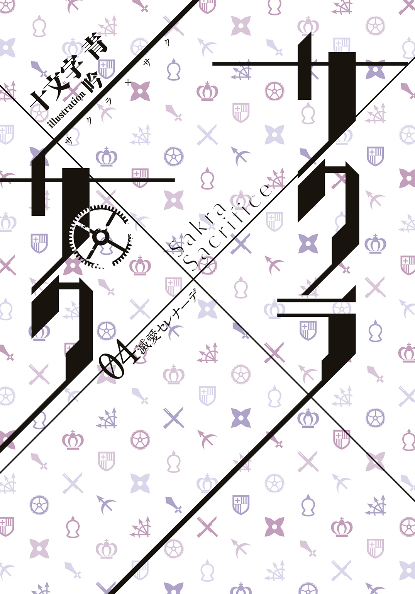
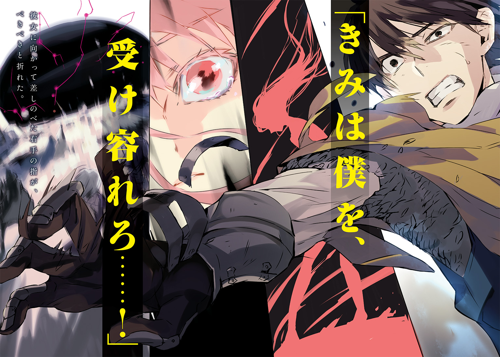
 ダッシュエックス文庫DIGITAL
ダッシュエックス文庫DIGITAL
サクラ×サク ０４
滅愛セレナーデ
十文字 青
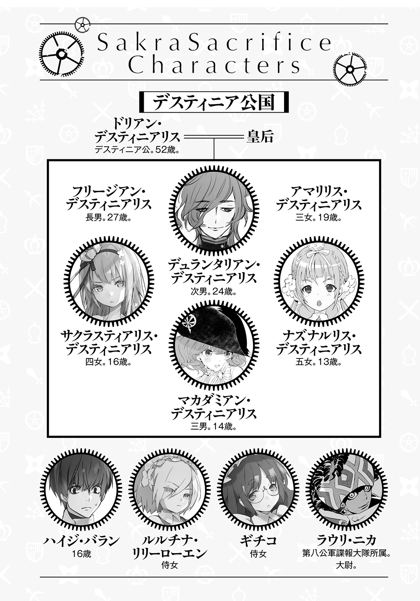
１ 僕の全てを君にやる YES JESUS YES
「どうしてもわからないな」
禁衣姿の亞璃簾宮太華子がほっそりした指で顎をつまみ、抑揚の少ない帝国の人語で静かに呟いた。
「なぜあの公国人はそうまでして死にたいんだ？ 私を手こずらせた優秀な軍略家だ。降伏すれば下民となるが、私が臣民に取り立ててやると言っている。いったい何が不満なのか」
ウェスホーン城市の焼け落ちた主城前の広場に引き立てられ、ひざまずかされているデスティニア公国軍の軍人三十余名は皆、士官以上だ。半数ほどが負傷していて、中には血塗れの重傷者もいる。
第二公軍司令ゼス・ボッツ大将も右肩に被弾し、顔面には火傷を負っていた。
ボッツ大将はウェスホーン城市の城門が破られても屈せず、主城を拠点として帝国軍に抵抗した。主城が陥落すると、部隊を小分けにして城市内に散らばらせ、それでいて巧みに連携させて、徹底抗戦を貫いた。人間のように気配りができない機士は掃討戦が苦手だ。大将はその弱点を衝いて、実に十日間も城市から一歩も出ることなく戦い抜いたのだ。
城門が突破されるまでの采配は、粘り強く堅実、とにかく隙が少ないという印象だったが、それ以後は一変した。帝国軍が捕らえた城市民を人質にして投降を迫っても受け容れず、実際に城市民の命を奪ってみせてもそれは変わらなかった。
通用しないとなると、帝国軍としてはその手は使えない。おそらく、人質が通じない、と帝国側に思わせることが大将の狙いで、そのためにあえて堪え忍んだのだろう。
大将の目論見は成功し、帝国軍は武力で公国軍の将兵を狩り立てるしかなくなった。亞璃簾宮太華子の五百十七侵攻団に、二百六、三百二十五、四百二十一各侵攻団が加わって行われた狩りは、困難を極めた。
それでも、亞璃簾宮太華子が機士ではなく軍士を駆使し、大将の居場所を突き止めた時点で、勝負は決した。
もともと五百十七侵攻団は他の侵攻団より軍士の数が多い。数だけではなく、練度も高い、優秀な軍士が揃っている。なおかつ、火縄銃など、他の侵攻団には配備されていない装備も行き渡っているのだ。
十一月十九日、昨日未明、五百十七侵攻団の軍士たちが大将の隠れ家を急襲。銃撃を受けて、大将以下、七名が負傷、十一名が死亡した。軍士の側にも八名の死傷者が出たほどの激戦だった。五十歳を超えている大将自ら軍剣を振るい、軍士を二人も斬り殺したというから、まったく尋常ではない。なお、火傷は主城陥落時に負ったものだとか。見るからに軽い火傷ではないが、そのせいで彼の戦意が衰えることはなかったようだ。
咎埜不人は１丈（約３ｍ）も離れていないところで地面に両膝をついているボッツ大将を見つめた。大将は後ろ手に縛られ、小股で歩くことしかできない足枷も嵌められている。うつむいているが、うなだれているようには見えない。
興味深いのは、他の公国軍士官たちが大将とまったく同じ姿勢をとっていることだ。そうしろ、と大将が命じたわけではあるまい。士官らは自然と大将に倣っている。そして、ただの一人として動揺するそぶりも見せずに、大将と運命を共にしようとしているのだ。
「......彼を殺したくないのですか」
不人が問うと、彼の主人である亞璃簾宮太華子はわずかに眉を上げた。
「殺すのはべつにかまわない。ただ、殺したら手許に置けないだろう。それが惜しい」
「......我が儘というものです」
「馬鹿なことを。私のような生まれ育ちで、我が儘にならないほうがおかしい」
「......たしかに」
「部下を全員助けてやるから私に仕えろと言っても、無駄かな？」
「......言ってみればいいのでは」
「あのな、咎埜。そこまで露骨なことは、いくら私でも言えない。それくらい察しろ」
「......おれは、わかった上で言っているんですが」
「そうだと思った」
主人は不人の尻を撲って、ため息をついた。それで思いきったようだ。
「ゼス・ボッツ大将以下、デスティニア公国軍士官諸君」
と、主人はカバラの言葉で言った。
「望みどおり、我が主上の名において、貴官らに死を贈ってやる。――ボッツ大将。何か言い残しておきたいことがあれば、聞くが？」
「されば――」
ボッツ大将は面を上げた。焼けただれた半面にまで笑みが浮かんでいる。
「帝国の小娘よ。俺は天性の戦下手ゆえ貴様に負けたが、我が公国には俺の百倍強い軍人が五万とおる。俺ごときが今日、死んだところで、我が公国は小揺るぎもせん。一つだけ残念なのは、小娘、おぬしが我が公国軍に踏みにじられ、無残な死骸と成り果てるところを拝めんことだ。それだけがまことに心残りでならん」
「私は貴官を買いかぶっていたようだ」
主人は片手を挙げた。
「負け惜しみしか言えないとはな。つまらない。どうやら貴官はすでに出がらしのようだ。手許に置いたところで、もはや何の役にも立つまい。――楽にしてやれ、咎埜」
「......御意」
不人は太刀を抜いて進みでた。
ボッツ大将が不人を睨みつける。大将だけではない。三十余名の士官たちが一斉に顔を上げて、燃え盛るような目で不人を見すえた。
反撥。憎悪を超えた敵愾心。末代まで祟ると言わんばかりの恨み。不人はそれらを一身に浴びて、微塵も怯まない自己を不思議とは思わなかった。主人の命令であれば、糞尿でも喜んで啜る。怨嗟など恐れはしない。怖いわけがない。
「デスティニア公こ――」
ボッツ大将は最期に、公国万歳、とでも叫ぼうとしたのかもしれない。
させなかった。
不人は太刀を振り下ろして、大将の首を刎ねた。
「司令っ......！」
「ボッツ大将ぉぉぉーっ......！」
「大将ぉぉぉぉっ！」
「帝国め......！」
ようやく士官らが騒ぎはじめた。
不人が手を振ってみせると、操手に操られた乙機士たちが静かに士官らに迫ってゆく。
主人は踵を返した。
「次だ、咎埜」
「......はい」
不人は太刀を鞘に収めながら大股で歩いて、間もなく主人に追いついた。
主人は後ろでも斜め後ろでもなく、真横にいる不人をちらっと見て、軽く肩をすくめた。
「粘られたせいで、思ったより時間をとられた。勉強にはなったがな」
「......他の重要拠点は、まだ陥ちていないようです」
「一応、我々が一番乗りか。でも、カバラ大王国は風前の灯火だ。狗塚宮の手柄は大きい」
主人は十歳以上年上の狗塚宮久手紘にだいぶ対抗者意識を持っているようだ。主人が他者に拘泥することは非常に稀なので、不人としてはおもしろい。
あるいは、主人は狗塚宮久手紘に惹かれているのかもしれない、と考えてみた。
広い帝国を見渡しても、狗塚宮ほど才気走っていて、誰も無視しえないほどの実績を積み上げている男はいない。外交官だとはいえ、事実上の降伏勧告を行う際、敵国に自ら乗りこんでゆく胆力の持ち主でもある。むろん、帝国の使者に危害を加えたとなれば、ただではすまない。相手国としても、帝国の使者は厳重に警護する。そうはいっても、血迷った者に襲われる危険はありすぎるほどにあるのだ。頭の中で絵図を描くだけの小利口な男でも、口先だけの男でもないことは間違いない。
主人が伴侶に選ぶとしたら、たとえば狗塚宮のような男だろう、と不人は思う。お互い宮家の人間だし、家格も釣り合っている。申し分がない。
「おい、咎埜」
主人が急に足を止めたので、不人も立ち止まった。
「......何でしょう」
「おまえが今、何を考えているか、当ててやろうか」
「......当てたら、褒めてさしあげます」
「ずいぶん偉そうだな」
主人は両方の腰に手を当てて首を傾けた。妙に稚気に富んでいる仕種だ。
「狗塚宮のことだろう？ あれと私が結婚したらどうなるかとか、考えていなかったか？」
「......ご名答です」
さすがに驚いた。動転したと言っても噓にはならない。
「......よくわかりましたね」
「おまえが私に仕えて何年になると思う？ おまえの頭の中身なんて、ぜんぶお見通しだ」
「......本当にそうですか？」
「ああ？ どういう意味だ？」
「......いいえ」
不人は笑ってみた。今度は主人が虚を突かれて、驚いたようだ。
いい気味だ、と不人は思った。
あなたをもっと驚かせることも、きっとできなくはないが、元自由民の自分は、それをしない。決してしない。自分を拾ってくれた先代亞璃簾宮、主人の祖父への義理、感謝がある。それから、忠誠心もある。そして何より、自分は命ある限り、主人のそばにいたい。だから、自分はそれをしない。思うこともない。封じこめて、生涯、とりだすことはない。徹底的に封じこめているから、たとえあなたが狗塚宮と夫婦となり、子をなしたとしても、揺らがない。
「......何でもありません」
「ふん」
主人は不人の返事が気にくわなかったようで、足早に歩いて不人を引き離そうとした。
逃げられるわけがないのに。そう。逃がしはしない。
不人は黙って主人を追いかけ、労せず追いついた。
「......次、ですね」
「そうだ」
主人は言うなり、不人の脇腹を小突いた。
「......何です？」
「なんとなくだ！ 悪いか？」
答えを知っているくせに、主人は不人に尋ねるのだ。
主人に尋ねられれば何度でも、わかりきったことを不人は答える。
「......いいえ。亞璃簾様、あなたはいつも正しい」
×
西の要であるウェスホーン城市を抜けば、デスティニア公国の心臓部への道が一気に開かれる――とまで言ってしまうと、やや語弊がある。
ただ、ウェスホーン城市の先には肥沃なエルダ平原が広がっていて、大きな城市が点在している。どの城市も地勢的に守りやすいとはとても言えない。しっかりと舗装され、抜かりなく整備されている大きな街道が張り巡らされたエルダ平原は、デスティニア公国を支える一大穀倉地帯であり、商業地帯でもある。公国の心臓である公都デスティニアレスは、エルダ平原の東に位置している。
十一月二十二日、亞璃簾宮太華子率いる五百十七侵攻団はパロドレ城市、二百六侵攻団はカラン城市、三百二十五侵攻団はリンファール城市、四百二十一侵攻団はロイソン城市へ向けて、それぞれ進軍を開始。ウェスホーン城市の占領はウェスホーン占領団に委ねられた。
五百十七侵攻団がパロドレ城市攻略に着手したのは十一月二十五日。パロドレ城市の公国軍は籠城を選んだ。
もっとも、公国軍がパロドレ城市の城門を閉ざしたときにはすでに、先発した五百十七侵攻団の軍士数十名が城市内に潜入していた。軍士の中でもとくに、諜報工作員として訓練を受けた精鋭だった。彼らはウェスホーン城市の惨状や、各地で帝国軍が公国軍を圧倒している様子、カバラ大王国の崩壊について盛んに喧伝し、市民の動揺を誘って、守兵の士気をも大いに低下させた。さらに、帝国軍に降伏すれば人民として生活権が保証されること、帝国軍の攻撃を受けてから降るのでは遅いことを説いて回り、市民の一部を造反させた。
十一月二十六日未明、造反市民と、これに協力した守兵若干名の手により、パロドレ城市の城門が開けられた。
五百十七侵攻団は城市外へ逃げだした造反市民と守兵と入れ代わりに、城市内へと突入。公国軍は大混乱に陥り、パロドレ城市守備隊長エッソン大佐が軍門に下ると、他の公国軍兵もぞくぞくと投降した。
「参ったな」
パロドレ城市主城には高い塔が備わっていた。不人の主人は戦いが一段落つく前からその塔に目をつけて、登りたがっていた。不人が主人の望みを叶えてやることができたのは、落日が沈みきる直前だった。
「次の占領団が追いついてくるまで、我が侵攻団は先に進むことができない。大問題だ」
「......カランも、リンファールも、ロイソンも、まだ陥ちていません」
「他の侵攻団の手助けでもするか」
「......我が五百十七侵攻団の軍士たちは、どの戦場でも役に立つでしょう」
「あたりまえだ。私が仕込んだんだから」
「......実際に訓練の計画を立てて実行させたのは、おれですが」
「私がおまえに命じてやらせたんだ」
「......おっしゃるとおりです」
「いいか、咎埜」
「......はい」
「おまえは私の腕だ」
「......はあ」
「おまえは私の脚でもある」
「......なるほど」
「ついでに、おまえは私の目だ。耳でもある」
「......そうですか」
「そうだ。言うなれば、おまえは私なんだ」
主人はいきなり不人の胸倉をつかんだ。引っぱられたが、不人は微動だにしなかった。主人はあからさまにむっとした。
「おまえな。こういうときは逆らうんじゃない」
「......ご命令とあらば」
「抵抗するんじゃないぞ？」
「......ええ」
「咎埜」
主人はもう一度、不人の胸倉をつかんだ手を自分のほうへと引き寄せた。不人は、今度は引かれるまま、腰を屈めた。
主人は踵の高い靴を履いている。それでも、不人のほうが頭一つ分は大きい。不人が腰を屈めても、主人と目線の高さが同じになることはない。
だが、距離は狭まる。
不人は、主人の銀色に輝く瞳に見入ってしまいそうになり、目をそらした。
「いいか、咎埜。おまえは私になるんだ。もう一人の私に」
「......簡単に言ってくれますね」
「簡単にやってくれないと困るからな。私は躰がもう一つ欲しい。もちろん、不可能だ。だから、おまえがそれになれ」
「......おれが、もう一人の亞璃簾様に」
「そうだ」
「......似ても似つかない」
「いつもどおりだ。おまえは私が望む役割を演じろ」
「......返事はいりませんね」
「ああ。いらない」
主人は不人の胸倉から手を放して、今まさに完全に沈もうとしている太陽に視線を転じた。
「軍士四十名を率いて、露払いをしろ。楽しそうだし、私がやりたいくらいだが、そうもいかない」
「......おれがそばにいなくて、平気ですか」
「いささか不便だ」
「......そうでしょうね」
「おまえこそ、私から離れて大丈夫か？」
主人は微かに笑いながら横目で不人を見て問うた。
不人は答えなかった。主人に尻を叩かれたが、答えてなどやるものか。
×
パロドレ城市から公都デスティニアレスへの経路は幾通りもあるが、大きく分けて三つだ。
ペーン川とイショール川を船で渡らなければならない、北回り経路。
それから、ペーン川は支流と本流の橋を渡り、イショール川は船で渡河する南回り経路。
そして、北回りと南回りの真ん中を突っ切る、距離的には最短だが、ファーガン要塞城市を突破しなければならない、中央経路。
ファーガン要塞城市は、城市としての規模はさして大きくないが堅守を誇り、第五、第六公軍の拠点となっている。公都デスティニアレスから近く、言ってみれば出城のような存在だ。公都を先に攻めればファーガン要塞城市が援軍を繰りだしてくるし、ファーガン要塞城市の攻略を目論むとしたら公都に駐留している公国軍を気にしなければならない。
採りうる手段は、基本的には三つ。
まずは、公都に速攻をかけて陥落させる。公都が陥ちてしまえば、ファーガン要塞城市にいくら戦力が残っていても、あまり意味がない。
もしくは、ファーガン要塞城市を無力化してから、公都を攻める。
むろん、公都とファーガン要塞城市を同時に攻撃してもいい。ただし、公都デスティニアレスは巨大と言ってもいい大都市なので、包囲するだけでそうとうな兵力が必要だ。加えて、ファーガン要塞城市の第五、第六公軍、あわせて四万超の大部隊を相手にするとなると、並大抵ではない。
結局、ファーガン要塞城市の無力化こそが、鍵となる。
咎埜不人は五百十七侵攻団の軍士四十名を引き連れて、十一月二十七日の早朝にパロドレ城市を出発した。
エルダ平原には城市の数の何十倍もの農村、デスティニア公国風に言えば、邑がある。エルダ平原の耕作可能な土地はすべて、いずれかの邑の領域だといっても過言ではない。
不人が学んだ知識によると、邑が大きくなって、居住域に城壁を張り巡らすようになり、都市国家の体をなした。都市国家同士が離合集散、やがて王国となり、王国同士が相争う中で同盟関係や従属関係が生まれ、王族、貴族といった特権階級が形成されていった。
しかし、エルダ平原を埋め尽くしている邑の大半は、そうした自然発生的に築かれたものとは違うようだ。
エルダ平原も、最初から沃野だったわけではなく、治水技術の発展によって、徐々に農地として開発されていった。かつてカバラ大王の臣下だったデスティニア公は、そうした新規開発地に民を移住させ、人工的に邑を作らせたのだ。そのため、エルダ平原の邑の多くには、防衛用の設備がろくにない、という特色がある。
パロドレ城市近郊の邑々は、さすがにほとんどの住民が避難していて、もぬけの殻に近い状態だった。
だが、騎馬で半日も東進すると、農作業や家畜の世話に従事している農民の姿がちらほら見られるようになった。
不人は馬を煽って自ら先頭に立ち、そうした農民を襲撃した。殺戮する必要はないが、何人かは殺してみせねばならない。それならば、自分の手を汚すことを不人は選んだ。無辜の民を殺害して痛むような心など、もとより持ちあわせてはいない。人と見なされることのない幼年期を過ごした不人は、人を人とも思わなかった。
不人にとって、人は二種類しかいない。自分にとって大切な人間と、そうではない人間だ。そして、大切な人間は、突きつめればただ一人――主人だけだった。
人を殺したいわけではないが、殺す必要があるのなら飯を食らうように殺せる。農民を馬に蹴飛ばさせても、踏ませても、何とも思わない。馬上で太刀を振るい、腕を斬り飛ばす。首を刎ねる。何をしようと、不人は一向に平気だった。
農民たちは恐れ、逃げた。追いかけて何人か殺し、軍士たちに殺させると、馬首を巡らせて別の邑へと向かった。そこでまた殺した。
日が暮れてからもう一つ邑を襲い、各自、空き家で睡眠をとると、長駆して邑を三つほど行きすぎた。その先の邑で農民を殺して回り、その隣の邑でも一暴れした。軍士たちは火縄銃を装備している。弾薬はそれなりに貴重だが、この邑で各人一発ずつだけ発砲させた。
不人たちを妨げる者はいなかった。邑への接近もたやすかった。それには明確な理由がある。これは軍事行動であり、作戦だ。当然、無策ではない。単純で、必要な物さえ準備できれば子供でも可能だが、あるいは卑劣と見なす向きもあるだろう、一つの工夫をしていた。
亞璃簾宮太華子の命により、五百十七侵攻団はウェスホーン城市で公国軍の軍服を大量に鹵獲した。不人と四十人の軍士はそれを身につけていた。
つまり、偽装だ。
不人たちは公国軍の小部隊を装って邑に近づき、農民らを殺した。
三日、四日と、襲撃及び物資調達のための略奪を繰り返して、ようやく五日目に不人は公国軍の部隊を目視した。偽装がばれたか、不逞軍人の集団が蛮行に及んでいるとの虚報が公国軍側に伝わりでもしたのか。いずれにせよ、警戒、討伐のために派遣された部隊だろう。
規模は五十人といったところで、騎兵が一割ほど、あとは歩兵だ。不人の読みでは、こちらの兵力は過大に見積もられているはずだった。あの人数だと、本隊とは思えない。偵察目的の先遣隊ではないか。
不人は交戦せず、急ぎその場を離れて、別の邑を襲った。農民たちの対応が明らかに変わっていた。当初は不人らを見て即座に逃げだす農民などいなかったが、今はもう遠目に騎影を見ただけで身を隠したり、反対方向へ走ったりする者も少なくない。農民たちは知っているのだ。兵隊が邑々を襲っていることを。情報は広まっている。ただ、農民風情に本物の公国軍兵と偽物の不人らとの見分けはつくまい。彼らはすべての兵隊を怪しんでいるのだ。
不人らは南回り経路でイショール川にまで達し、その間、四十六の邑で数百人の農民を殺害した。それまで公国軍の部隊とは一切、戦わなかったが、とうとうイショール川沿いで五十人ほどの小部隊に出くわしてしまった。
不人は軍士四十人に一斉射撃を行わせ、浮き足立った公国軍部隊に騎馬突撃を敢行した。勝敗はあっという間に決した。むろん、不人らが勝った。敵は半数近くが死ぬか戦闘不能に陥るかした段階で潰走しはじめた。不人はこれを追わせた。五人ほど取り逃がしたが、あとは死体と瀕死の重傷者だった。軍士は三人負傷したが、いずれも軽傷だった。移動にも戦闘にも支障はない。
不人は重傷者にとどめを刺していった。三人だけ、あえて見逃した。
死んだふりをしている敵の重傷者に聞こえるように、不人はわざとカバラの言葉で話した。
「よし。これで口封じは完了だ。そろそろ戻るぞ。おまえたち、誰にもばれないように、くれぐれも用心しろよ」
軍士たちは「はっ！」と応じて公国式の敬礼をした。その程度の演技は軽々とやってのける連中だ。
その後、不人は数名の軍士を伴い、他は潜伏させて、イショール川沿岸のピネー城市に潜入した。もちろん、軍服ではなく、略奪で入手した公国人の普段着を身につけた。
通行が厳しく制限されていて、城門から入るのは無理だった。河岸の邑で小舟を盗み、夜の間に河港から入りこんだ。
ピネー城市の守備隊はすでに戦闘態勢に入っていて、近隣の邑からの避難民受け容れも始まっている様子だった。日常生活はつつがなく送られているが、いつそれが破壊されてしまうかもしれないという恐怖や不安は、城市中に色濃く立ち籠めていた。
市場や酒場などで住民から話を聞くと、三百二十五侵攻団がリンファール城市を陥落させ、五百十七侵攻団は占領団にパロドレ城市を委ねてマール城市を攻囲しているらしいとわかった。戦況は刻々と変わるので、今現在どうなっているかは不明だが、主人が不人なしで侵攻団を動かしていることは間違いない。
主人は決して万能ではなく、むしろ偏りが大きい人だ。かといって、身の回りのことができないわけでも、運動神経が鈍いわけでもない。おそらく、やれば何でもできるだろう。ただ、やろうとしないことがいくつもある。
たとえば、主人は他人にふれることも、他人にふれられることも好まない。ゆえに、護身術の訓練をまともに受けたことがない。意外なほど身軽だし、武芸や武具の知識はあるが、刀剣を振り回したこともほとんどないはずだ。宮家の人間でなければ、軍務に就くことすらできていないだろう。
偏食も激しい。獣肉全般が嫌いだ。魚も白身で臭みがない物しか食べない。野菜も好まず、果物だけで生きてゆけると豪語している。穀類は栄養の摂取効率の観点から、仕方なく食べることにしているらしい。だが、果物が豊富にあれば、麦も米も豆も拒む。水も、可能な限り、果汁で軽く香り付けしたものを飲んでいる。酒は上等な果実酒にしか口をつけない。
他にも、余人には理解しがたい儀式のような習慣を、不人の主人はいくつも持っている。屋内には必ず左足から踏み入れるとか、手の洗い方であるとか、何かの折に唱える意味不明の謎めいた言葉であったりとか。
不人の役割は主人の補佐だけではないのだ。
主人がやりたがらないことを、やらずにすむように手配する。主人が飲食したがらない物を何気なく遠ざける。主人の習慣を誰にも邪魔させないように手を回す。
こうした膨大と言ってもいい事々を、欠かすことなく、遅滞なく、日々、終日、実行しつづける。
そのために、主人のそばにいる。
それが不人の仕事だった。使命であり、不人のすべてだった。
主人はどうしているだろう？ 間違いなく不便を強いられているはずだ。主人の苛立ち、不平、不満が目に浮かぶ。だが、考えたくない。考えないようにしていた。主人から離れてエルダ平原の公国民と公国軍を攪乱する。それが主人の命令だった。命令にはもちろん従う。そうするためには、主人の身を案じることを自らに固く禁じる必要があった。
さもなければ、精神の均衡を保つことができない。
主人はどうしているだろう？
そう思うだけで、不人は叫びだしたくなる。飛び跳ねて、転げ回りたい。何より、主人の許へ飛んで帰りたい。
主人の命を果たすには、主人を忘れねばならない。
だが、主人を忘れることなどできるはずがない。
実のところを、不人はいまだこの二律背反を解決する方法を見いだしていなかった。
ゆえに、この作戦には苦しみしかないが、しくじるわけにはいかない。
不人らは夜半、公国軍の軍服に着替えて、民家に押し入った。軍士に婦人を失神するまで激しく暴行させ、家主とおぼしき男と老婆を殺して、三人の子供は縛りあげた。金目の物を盗んで民家をあとにした。同様の強盗殺人を矢継ぎ早に重ねてからピネー城市を脱出し、軍士たちと合流した。避難しきっていない周辺の邑を襲いつつ、軍士数名に情報収集を行わせると、脱走兵の噂が耳に入ってくるようになった。
曰く、帝国軍はすぐそこまで攻め入ってきている。
曰く、公国軍は劣勢である。
曰く、帝国軍は精強にして無慈悲である。しかし、降伏すればむごい扱いは受けない。
曰く、公国軍は弱腰である。劣弱である。
曰く、公国軍の軍紀は乱れている。脱走者が相次いでいる。
曰く、脱走者の中には野盗と化して、邑を荒らし回っている者たちまでいる。
曰く、公国軍は脱走兵の鎮圧に動いているが、成功していない。
曰く、脱走兵の鎮圧に向かった公国軍の部隊が、邑を略奪する事件も起こっている。
曰く、公国軍の敗色は濃厚であり、このままでは公国は帝国に制圧される。
事実におひれがつき、ねじ曲げられて、拡大解釈され、ゆがめられて、虚実が入り交じり、公国人を大いにうろたえさせ、混乱させている。拍車が掛かった混乱は虚を実に転換させ、さらに情勢を混沌とさせる。
もともとは脱走兵などいなかった。だが、公国軍の下士官以下は志願兵だ。しかも、徴募官にはある期間内に何人の志願兵を採用しなければならないといった目標が課せられている。地域社会の鼻つまみ者や、孤児、生活能力を持たない者が、ほとんど強制的に志願兵に仕立て上げられる事例もめずらしくないという。そうした意欲の低い、戦闘者としての質も劣等な兵卒は、軍内部でも数合わせの材料としか見なされまい。侮蔑され、軽んじられて、虐待されるようなこともありうる。彼らに、公国軍への、そして公国に対する忠誠心を期待するのは無理があるというものだ。
どのみち、戦いになれば、彼らは最前線に追いやられて、真っ先に死ぬことになる。しかも、彼らの国は負けるかもしれない。負ける国のために死ぬのでは犬死にだ。
このまま軍にいたところで、手柄を立てて昇進できる見込みもない。仮に戦場で死なずにすんでも、その先に何がある？
ならば、軍から離脱して、装備一式、持ち逃げしてやれ。なんでも、脱走兵は他にもいて、あちこちで女たちを犯し、食い物だの何だのを強奪しているらしい。うまいことをやっている者がいるのだ。真似をしたらどうだ？ しくじって軍に追い回され、討たれる羽目になったとしても、元味方に殺されるか、敵に殺されるか、違いといったらそれだけだ――。
こうして、流れは生まれた。
あとは不人たちが介入せずとも、自ずからうねり、広がって、どんどん激しさを増してゆくだろう。
×
十二月二十二日。
五百十七侵攻団は、マール城市とエセーナ城市の中間地点で、デスティニア公国軍第七公軍と激突した。
ヨルマン・レージュ中将率いる第七公軍は、全軍に横隊を形成させ、薄く広く展開させて、五百十七侵攻団に百八十度から二百度の半包囲攻撃を仕掛けた。これはレージュ中将の得意とする戦術であり、その実行のために第七公軍は特別な戦闘訓練を課されるという。
戦闘に参加しない死兵を極力作らず、戦力を最大限に有効活用する半包囲攻撃の苛烈な圧力を受けて、五百十七侵攻団は見る間に崩れたった。恐怖心を持たない、それどころか感情があるかどうかすら定かではない、人ならざる機士にしては脆すぎる。レージュ中将や、第七公軍の幕僚たち、前線の指揮官らは、あるいは怪しんだかもしれない。
しかし、勝勢に乗じず、さらに一押しすることを思いとどまるような余裕など、公国軍にはなかった。
ウェスホーン城市陥落以降、公国軍は負けつづけている。いくつもの城市が攻め落とされ、公国軍兵の死傷者は二万人を超えていた。勝利が必要であり、求められていた。
第七公軍は五百十七侵攻団を押して押して押しまくった。五百十七侵攻団は押されに押されてずるずると下がり、ついにはマール城市まで後退した。
五百十七侵攻団はマール城市に逃げこもうとした。籠城させてなるものかと、第七公軍は五百十七侵攻団に追いすがった。五百十七侵攻団と第七公軍は、揉みあいながらマール城市に傾れこんだ。
市街戦となれば、機士よりも機転が利く人間の兵に分がある。第七公軍は建物などの障害物を利用して五百十七侵攻団を各個撃破した。
だが、第七公軍の約七割がマール城市に入りこんだころ、機士の別働隊が残りの三割に突如として襲いかかった。第七公軍は完全にマール城市に押しこまれた。二つある城門は外から封鎖され、城壁上から城市内に向けて火矢が放たれた。城市各所で火の手が上がり、すさまじい勢いで延焼した。明らかに尋常の火災ではない。これは城市を焼け野原にするべく仕組まれた大火だった。
むろん、第七公軍の将兵二万人を巻き添えにして、だ。
亞璃簾宮太華子は、マール城市の東半里（約２㎞）の小高い丘の上で、濛々と立ち上る黒煙を眺めていた。歩行鳥に乗った太華子に付き従うは、騎馬の軍士三十余名。あとの軍士たちは諜報や連絡、工作、機士を動かす操手らの指揮にあたっている。
軍務に就いて以来、集めてきた軍士たちは実に有能だ。充分に報いてもいるので、太華子の手足のように動いてくれる。操手もまた、筋のいい者に目をつけて選り抜き、機士はどれだけ使い捨ててもかまわないから、決して死ぬなと厳命してある。
太華子は才ある者が好きだ。無能な人間にはどうしても興味が湧かない。くだらない人間に比べれば、美しい虫のほうがよっぽど価値がある。
「御しやすい敵というのも、それはそれでつまらないな」
太華子の呟きに答える軍士はいない。太華子がそれを望んではいないと、彼らは考えているのだろう。事実、そのとおりだ。にもかかわらず、苛立たしい。
太華子はため息をついて、眉をひそめた。本当に、どうして太華子が苛つかなければならないのか。
そもそも、感情や心など、状況次第でたやすく変化する。感情のみを意識的に変化させるのはそう簡単ではないが、他の要素を操作することによって制御は可能だ。その程度のものでしかない。
太華子は丘を見回した。この丘はトアノンという邑の果樹園だった。農民たちが逃げ去ってしばらく経つので荒れているが、手入れすれば来年にも林檎だの葡萄だのが収穫できるだろう。見晴るかせば、広大な麦畑がどこまでつづいている。整備された水路は人体の隅々まで血液を巡らせる血管のようだ。十二月の下旬なのに、風がやや冷たいくらいで、さして寒くない。
これほど気候に恵まれた豊かな国を、太華子は他に知らない。
カバラの王に追い立てられたレビテの民によって築かれた帝国発祥の地は、西大陸の山間にある。そこは農耕にはまるで適さず、太華子の先祖たちは狩猟と採集、牧畜によって糧をえることに汲々としていた。現在、歩行鳥と呼ばれている大型の鳥類は、先祖たちの重要な移動手段であり、食糧でもあった。
やがて歩行鳥に乗った戦士たちが、農耕民を襲って略奪するようになった。彼らは奪える物は何でも奪った。食べ物でも、衣類でも、武具でも、女でも、子供でも、何でも。帝国の祖は猛々しい強盗たちだった。農地を、街を強奪して我が物とし、次第に国の体裁を整えた。それでも、彼らの本性は変わらなかった。彼らの主体性は、まさに奪うことにあった。
迫害の歴史も、復讐も、おそらく本質ではない。
奪うことこそが、帝国の本能なのだ。奪い尽くすまで、帝国は止まらないだろう。太華子がそう信じている根拠は、彼女自身にある。
太華子は奪うことに何の痛痒も感じない。それは罪などではないと、太華子は知っている。同時に、それを罪と感じる者がいることも知っている。現実に、地上の多くの国家では奪うことが罪とされている。奪った者は裁かれる。だが、太華子はそれを奇異に感じさえする。
奪う正当な権利があるのに、奪ってなぜ悪いのか？
正当な権利とは？
それは、奪うことができる、ということだ。その力がある。方法がある。ならば、あたりまえに奪うべきだ。
そうした先天的な収奪者が、帝国の、とくに上層には無数にいる。宮家の人間などは大半がそうだ。
どうして帝国は勝ちつづけてきたのか。領土を拡大しつづけてきたのか。直接的な原因は、機士だ。機骸をまとう前は、義人、と呼ばれる。
西大陸南部、宇奘の国ではその地で、蟻、と称される巨大生物を使役する技法が発達していた。帝国は宇奘に侵攻してこれを制圧、もちろん蟻の使役法も奪いとった。帝国はすでに、西大陸西部、隗蘭国の先進的な金属加工技術と練達した職人たちを獲得していた。隗蘭国の技術は、明仁国の合金製造術と結びつき、軽量で頑丈な甲冑や武器の大量生産を実現していた。これらが合わさって機骸が生まれ、義人は機士となった。被支配民の知識人たちが機士の操縦法を研究し、一人の操手が十人、それ以上の機士を操れるようになった。機士の生産効率も向上した。被支配民の一部は、奴隷として機士の生産に従事させた。機骸をまとわせない義人を農業や土木工事に活用する施策も、めざましい成果を上げた。
西大陸では、もう二十年以上前から、すべての単純労働を義人が行っている。輸送も義人の領分だ。機士や義人は各地の工場で次々と生産されている。
機士と義人の運用上、制限となっているのは、その数ではなく、蜜という専用液体食の精製量だ。蜜が現状の倍、精製可能となれば、機士と義人を倍、運用できる。蜜の精製量が三倍になれば、三倍の機士と義人を運用できるだろう。機士と義人の生産は十倍までゆうに拡大できると目されている。足りないのは、蜜の原料であるフラミン酸とオクニチルだ。
戦果として獲得され、供給されつづける奴隷によって、機士は絶え間なく生産され、戦場へと送りだされる。これが帝国の拡張戦争を支えていることは間違いない。
だが、帝国を戦わせているのは、帝国人たちのいわば収奪本能だ。本能に駆りたてられて帝国は戦いつづけ、その結果として勝利がもたらされる。
「戦う相手が外にいなくなったら、同士討ちを始めるだろうな」
太華子は呟いて、低く鼻を鳴らした。
帝国内部にも派閥はある。宮家にしても一枚岩ではないが、競争の過程で多少妨害する程度のことはあっても、陥れあうような真似はしない。宮家の者なら誰でも、その不文律を頭に刻んでいる。
もっとも、長年守られてきた暗黙の了解が通用するのは、外部に標的がいる間だけだろう。
西大陸につづいて東大陸の統一が成し遂げられた暁には権力闘争が激化して、早晩、血が流れる。十中八九、帝国は分裂するだろう。そして、諸勢力の中から覇者が現れる。反抗者は徹底的に打ち砕かれて、再統一され、また分裂し、戦って......――。
「どこまで見られるかな」
むろん、傍観するつもりはない。参加する。やるからには必ず勝つ。
想像するだけで躍るはずの胸が、なぜだか少しも騒がない。
「つまらない......」
口をついて出た言葉に、太華子は驚いた。――つまらない？
太華子は己の望むままに生きてきた。余人の目にどう映るかはわからないし興味もないが、彼女にとって人生は楽しい。常に自分の人生を楽しむことができる。それこそが最大の才能だと彼女は考えている。祖父がそうだったように、彼女にもその才能が備わっている。あるいは、祖父が授けてくれたのかもしれない。
そんな太華子も、つまらない、と口に出すことはある。だが、つまらない、その状況さえ楽しんでいる。
ところが今は違う。
正真正銘、つまらない。
太華子は唇をつまんで引っぱった。
「......亞璃簾様......！」
声を、聞いた。
振り向こうとして、やめた。そうするべきではない、と強く思った。何かが太華子を押しとどめた。何か、とは何だろう？
思いあたるものがない。
腹立たしい。
「......亞璃簾様......！」
「うるさいな。二度も......」
太華子は自分が口を尖らせていることに気づいた。
手綱を軽く引いて、歩行鳥に向きを変えさせる。急がないように注意した。
騎乗して丘を登ってくる咎埜不人は藍色の衛服に着替えていた。おもしろくないな、と太華子は思った。公国軍の軍服を着て出発したのだ。あのまま帰ってくればよかったのに。我ながら、ずいぶんくだらないことを考えるものだと呆れもした。敵兵に偽装したまま友軍に合流するとなると、単純に不都合でもある。
咎埜は四十騎ほどの軍士を引き連れている。太華子は素早く数えた。正確に四十騎だった。部下を一人も失わなかったということだ。上出来じゃないか、と思ったが、すぐに考えなおした。それくらい当然だ。むしろ、大事な軍士を一人でも失って帰ってきたら、折檻してやるところだ。
咎埜はわずかに顔をこわばらせている。
それは太華子も同様だ。
何か、妙だ。
太華子は横を向いて、咳払いをした。
咎埜がやってくる。
「......亞璃簾様。ただいま戻りました」
「見ればわかる」
咎埜は、声も硬い。
太華子も、だが。
「......予定より、遅くなりました」
「そうだな」
「......お怒りですか」
「いや？」
「......そうですか」
「おまえなんかいなくたって、私はちゃんとできる」
「......やればできる御方だとは、おれも思っています」
「やればできるとは何だ。どういう意味だ」
「......そのままの意味ですが」
「やらなくたって、私はできる。私だぞ？」
「......おっしゃっていることの意味がわかりません」
「おまえの理解力が足りないんだ」
「......あるいは、そうかもしれない」
「納得していない口振りだな」
「......ええ、まあ」
「生意気なやつだ！」
太華子はちらりと咎埜を見て、うつむいた。
「――つまらなくはないな」
「......何です？」
「なんでもない」
「......つまらなくはない、とは？」
「訊くな」
「......ご命令とあらば」
「命令だ」
「......御意」
咎埜はそれきり黙りこんだ。何があろうと、自分からは沈黙を破るまい。太華子は心に決めたが、間もなく我慢できなくなった。
「他に何か言うことはないのか？」
「......この作戦では、機士をいかほど使い捨てたんです？」
「使い捨てにしたわけじゃない。有効活用した。――まあ、五千くらいだ。二万と見せかけて六千で敵を釣って、城市に引きこむのに......って、そんな話題しかないのか？」
「......顔を」
「あ？」
「......顔を見せてください」
突然、何を言いだすんだこいつはと思わずにはいられなかったし、顔なんか見せてやるものか、というかそもそも、そこにいるのだから顔は見えているじゃないかとも思った。
まったく本当に、咎埜は何を考えてそんなことを言ったのか。太華子は理解に苦しんだ。この程度の言動に理解が及ばない我が身に怒りを感じもした。とにかく、顔など見せてやらない。絶対に。だがしかし、頑なに見せまいとするのも弱腰ではないか？ 見たいというのであれば見せてやればいい。そうだ。
太華子は顔を上げて、下目遣いで咎埜を睨みつけてやった。
「どうだ」
「......色艶は悪くない。元気そうで、何よりです」
「はあ？」
「......亞璃簾様は偏食家だし、とくに頑健なわけでもない。おれがいない間に健康を害されかねないので、心配でした」
「じゃあ、顔を見たいというのは――言ってみれば、診断のためか」
「......そうですが」
「医者でもないくせに！」
太華子は歩行鳥を煽って進ませ、咎埜の脚を蹴った。強く蹴っても、咎埜は痛がりもせず、びくともしない。
「おまえの見立てなんか、あてになるか！」
「......亞璃簾様のご様子については、たぶん医者よりもわかりますよ」
「付き合いが長いからな！」
「......ええ」
咎埜が顔を緩めた。笑ったのだろうか。
「......長くお仕えさせてもらっています」
「感謝するんだな」
太華子は、今度は咎埜の脇腹を小突いた。咎埜は何も言わず、やはり小揺るぎもしない。苛立ちを楽しみながら、そういえば――と、太華子は思った。人間にさわるのも、人間にさわられるのも、彼女は嫌いだ。唯一、祖父の膝にはよく乗ったものだが、物心がついて以来、親や乳母に抱かれた記憶はない。侍女たちは幼い太華子を沐浴させるのに大変な苦労をしたようだ。しかし、いやなものはいやなのだ。やむをえまい。
それでいて、咎埜のことは蹴ったり叩いたりする。
太華子は首を傾げた。
「――不思議だな」
×
我がデスティニア公国にはシャペロという名の馬車が二台ある。
シャペロは古い神だ。公国の祖神である女神マルクト＝メレクの異母兄であるとされ、剣と太鼓を持った逞しい男性の姿で表される。
シャペロは妹であるマルクト＝メレクを愛し、これに近づくものすべて、太鼓の音と剣で追い払ったという。その後、シャペロは失恋し、蛇神ウラルテと結婚して、ナクロマ、アモンザ、ファレフといった子をなし、これらを率いて大疫神ワヌフランの大軍勢に挑んだ。
マルクト＝メレクやシャペロの父神である星天神ハヌン以下、多くの神が参加したこの大戦争は、世界が六回終わり、七回創りなおされるまでつづいたとされる。
結果、大疫神ワヌフランは敗れて八つ裂きにされ、代わりに八つ柱の疫神が生まれて、散り散りになった。シャペロは戦で深手を負い、最後はマルクト＝メレクに抱かれて息を引きとったという。
大疫神ワヌフランとの一騎打ちで傷ついた星天神ハヌンが闇空の奥に隠れると、世界は次第に乱れて、マルクト＝メレクは世界神カバラに従属した。だが、世界神カバラがマルクト＝メレクを召そうとすると、シャペロの遺した太鼓がひとりでに鳴り響き、遺剣が宙を舞った。世界神カバラは大いに恐れて、二度とマルクト＝メレクを召そうとはしなかったという。
以上はデスティニア公国に伝わる説話であり、カバラ大王国では世界神カバラがシャペロの遺剣を手にとって、シャペロの太鼓を斬り破ったとされている。しかし、世界神カバラがマルクト＝メレクを召したかどうかについては言及されない。
もっとも、神話において男神が女神を召せば、基本的には子神が生まれるものだ。世界神カバラと女神マルクト＝メレクの間に子がないということは、やはりシャペロの妨害に遭って、世界神カバラは念願を叶えることができなかったのだろう。
「いやあ、でも、大きな馬車......」
公国に二台あるうちの初代シャペロ号は、三十頭立ての馬鹿馬鹿しいほど巨大な装甲馬車だ。あまりに大きすぎ、重すぎて、走行可能な道が非常に限定される。いったん進みはじめればそこそこの速度が出るが、駆動するまでがたいそう難儀だし、見かけ倒しとそしられてもなかなか反論しがたい。
そこで、現デスティニア公ドリアンがシャペロ二号を建造させ、初代シャペロ号は倉庫の中で埃を被るのみとなった。――だったのだが、今回ふたたび日の目を見て、こうして重い轟音を響かせて走ることになったのは、初代シャペロ号にとって僥倖だろうか。それとも、そのまま朽ちるまで休んでいたかっただろうか。
どっちでもないだろうな――と、初代シャペロ号最上部展望台の手すりから半ば身を乗り出して地上を見下ろしながら、マカダミアン・デスティニアリスは思う。
「馬車だもの。何かを思ったりするわけがないよね」
マカダミアンはきらびやかな飾り付きの軍帽の鍔を少女のような指でつまんで、くすりと笑った。大佐の階級章をつけた軍服に身を包む彼は、公国軍人らしい立派な体格の持ち主とはとても言えない。当年とって十四歳だが、十二、三歳の少女に間違われることもめずらしくないほどだ。たしかに、波打つ栗色の髪、夢見るような緑色の瞳、白い肌、薔薇色の頰、鮮やかに色づいた唇、儚げな肩、細い腰、のびやかだが骨細な手足、そのどれをとって見ても、総合的に見たとしても、齢十四の少年とは思えまい。
彼自身、鏡を見るたびに思う。
――かわいいなあ、ボクって。
と。
うっとりすることはない。彼はあくまで、客観的に我が身を見て、これは万人の目に可憐な少女としか映るまいと判断しているだけだ。
とはいえ、仕種は少女らしくなどない。骨格や筋肉の付き方が異なっているので、姿勢も少女のそれとは違う。
あくまでぱっと見、十二、三歳の美少女と思えるだけだ。今ならば、たいていの者は、軍服を着て男装している高貴な美少女とみまごう。ある意味、それは錯覚なのだ。
よくよく見れば、少女ではないと、皆、気づく。女ではない。男だろう。だが、いわゆる男とは程遠い。性別を超越した、何か別種のモノに違いない、といった印象が、観察者の中でどんどん深まってゆくだろう。
そして、このような人間には一度も会ったことがない、と多くの者が考えるはずだ。そのときにはもう、稀どころか唯一無二のマカダミアン・デスティニアリスという存在にすっかり魅入られている。
思い上がりではない。
実体験から、そして考察と洞察により、彼は彼に出会った者の内部で起こる変化が手にとるようにわかるのだ。ただそれだけのことでしかない。
マカダミアンがそういう存在であるがゆえに、こうやって展望台の人目を引く場所にいると、初代シャペロ号をおおよそ中央に置いて行軍中の第一公軍将兵たちが惚けたようにこちらを見上げて、甚だしく隊列が乱れることさえある。
「馬鹿な子たちだなあ」
呟きながら、マカダミアンは手を振ってやる。騎兵が落馬しそうになる。歩兵が前の歩兵に追突しかける。
それがおかしくて、彼はまた笑う。
彼の笑顔が将兵たちの秩序を搔き乱す。
「マカダミアン」
と、後ろから声がかかった。
マカダミアンは笑みを浮かべたまま振り返った。
「はい、一兄様。――おっと、いけない。ボクもようやく軍人になったんだし、一兄様のこともちゃんと総帥代行って呼ばないと」
「おれにおまえの手管は通じぬ。マカダミアン」
一兄様。
彼の長兄。
ドリアン公の継嗣。
公国軍総帥代行にして、太子。
フリージアン・デスティニアリスは長身を展望台中央の指揮席に埋めて、肘掛けに頰杖をついている。
マカダミアンより十三歳も年上の長兄は、あらゆる面で恵まれているのに、それを決して認めようとしない人だ。
まず、デスティニア公国のような豊かな国の君主の跡継ぎとして生を受ける者が、地上にどれだけいるだろう。いても、同時代に数人だ。
フリージアンは上背がある。身長があるだけではなく、筋骨逞しい。これもまたすばらしい素質だ。渇望したとしても得られるものではない。
頭の出来も決して悪くはないはずだ。少なくとも、愚かではない。
銀髪は輝きに欠けて白髪のように見えるが、顔貌は整っている。いつも黄色い眼をぼんやりと開けているのは単なる癖だろう。
フリージアン・デスティニアリスとして生まれ、生きたい者を募ったとしたら、何万人、何十万人もが挙手するに違いない。そのために、自分自身のぜんぶを捨てなければならないという条件を突きつけられたとしても、迷わずそれでもかまわないと即答する者とて少なくはないはずだ。
そして、フリージアンは、何かの間違いでそれが可能だとしたら、喜んで自分自身を譲り渡そうとするに違いない。たとえ物乞いと入れ替わることになるとしても、フリージアンはためらわないだろう。まるでそれが人生を賭した唯一の宿願だとでも言わんばかりに。
「おまえが天真爛漫を装い、どれだけ愛されようとしても、おれには無駄なことだ」
フリージアンの躰は常に左右どちらかに傾いでいる。右か左か、一定ならばまだいいのに、そのときどきで方向も角度も異なるので、見る者に不安定感、さらには不安感を与える。今はマカダミアンから見て右に大きく傾いでいた。首は左に曲がり、組んだ脚も奇妙にねじくれている。顔面も右半分は上に、下半分は下方向へと引きつっていた。
「装うだなんて、そんな」
マカダミアンはにっこり笑ってみせた。
「ボク、そういうつもりはないよ、一兄様。――じゃないや、総帥代行さま」
「呼び名など、何でもよい」
「あれ？ そうなの？ だったら、一兄様でいい？ ボクはそのほうがいいな。慣れているし、立場とか、いろいろ変わっても、ボクにとって一兄様は一兄様だもん」
「好きにしろ。だが、兵らを嬲るのはよせ」
「みんな、楽しそうにしているけどなあ」
「戯れるな、マカダミアン」
「はーい、一兄様」
マカダミアンは足を揃えて、右手を挙げてみせた。
「ボクが軍人になるのに、後押ししてくれたのは一兄様だし。父様は反対だったから、一兄様が説得してくれなかったから、ボク、たぶん、今も公都にいたよね」
「おまえは使える」
「ちゃーんと、一兄様の役に立たないと！」
「素質がある。マカダミアン。おまえには」
そして、自分にはそれがないのだと痛感しているかのように、フリージアンは苦しげに顔を歪める。父様の教育の成果だなあ、とマカダミアンは忍び笑いをした。彼らの父ドリアン公は根っからの支配者だ。我が子に対しても、決定的な影響力を与えずにいられない。むろん、父の教育はマカダミアンにも及んでいる。
父は末子マカダミアンをことのほか愛した。しかも、ひそかに、兄姉の誰にも気づかれぬように、まるで庶人の親が子にするように愛玩した。それは明らかに特別なやり方だった。どの兄も姉も、そんなふうに父に愛されてはいなかった。マカダミアンもそのことを知っていた。父自らマカダミアンに言ったからだ。
――おまえは特別だ。
と。
あの、見開かれているのに、こちらを向いているのに、誰も見ていないかのような眼でマカデミアンを見据えて、囁いたのだ。疑え、と父は言外に命じていた。おまえは本当に特別かもしれないが、そうではないかもしれない。おまえは信じることもできるし、信じなくてもいい。さて、どうする？ どちらでもかまわない。愛されたいか？ 愛されていると思いたいか？ 愛されるとは何だ？ 愛とは？ それは欲望か？ 本能か？ おためごかしか？
「大丈夫だよ、一兄様。ボクは働くよ。一兄様のためにね」
「我が公国のためだ」
「そうだね」
マカダミアンは左胸に右の手刀をあてる公国軍式の敬礼をしてみせ、元気よく言った。
「デスティニア公国のために！」
×
五百十七侵攻団と三百二、三百八各侵攻団は、今まさに三方からイショール川沿岸にあるピネー城市を包囲しようとしていた。
ピネー城市の守備隊はすでに三日前から城門を完全に閉鎖して守りを固めている。ただし、イショール川を経由する物流は途絶えないので、帝国軍が川を押さえない限り、兵糧攻めは効果がない。また、船で援軍がピネー城市入りすることも可能だ。帝国軍がこれを妨げる方法は、まったくないわけではないが、現実的には非常に難しい。
ピネー城市の守備隊が打って出てきてくれれば、帝国軍としては好都合だった。しかし、それは虫が良すぎるというものだろう。
いずれにせよ、三方から休みなく攻めたてれば、やがて耐えきれなくなってピネー城市も陥ちる。
五百十七侵攻団は西から、三百二侵攻団は北から、三百八侵攻団は南から、一挙にピネー城市を衝く手筈は整っている。
十二月二十七日未明、各侵攻団は所定の地点で待機していた。夜が明ける前に出発し、七時にピネー城市攻撃を開始する。
機士は生産が追いついてさえいれば、いくらでも補充できる。とはいえ、生き物であることに変わりはないので、理想的には一日に一度、量を調整すれば二日に一度の専用液体食、蜜の補給が必須だ。蜜入りの瓶を機骸の装塡器に突っこめばいいだけで、さして手間はかからないが、機士が二万人いれば、二万回、その作業を行わなければならない。機士たちを並ばせ、ひざまずかせて、手慣れた操手や軍士なら一時間に一人で数百人の機士に蜜入れをしてしまうが、ともかくそれだけの時間と手間が掛かるのだ。それに、操手と軍士は当然、生身の人間だから、適宜、食事をとり、眠らなければならない。機士にしても、日に四、五時間、安楽な姿勢で休ませたほうが、耐用時間が延びるという実証報告がある。
咎埜不人の主人といえども、それは同じだ。
主人はどんな体勢でも、いつでも、どこでも、短時間でも、長時間でも、睡眠をとることができる。
今は天幕の中で頭冠を着けたまま寝袋に入り、仰向けになって目をつぶっている。
不人はその脇に置いた椅子に腰かけ、もうずいぶん長い間、ひたすら息を殺していた。
主人は人前だろうが何だろうが、必要に応じて眠る。
いつも、眠る、と宣言して、三十数える間にはもう寝入っている。
眠りについてから目覚めるまで、規則正しい寝息が乱れることはほとんどない。寝返りは決して打たない。身じろぎ一つしない、と言っても大袈裟ではない。何事も無自覚に行うことをよしとしない主人は、睡眠までも意識的に制御しているかのようだ。
だから、主人が、
「ん......」
と小さな声をもらしたとき、不人は非常に動揺した。
主人はそれから、ふう、と息を吐いた。
それだけのことと言えばそれだけのことでしかないのだが、不人はこの出来事を一生忘れないだろう。
そうした忘れがたい――否、生ある限り絶対に忘れない事柄が、不人にはいくつもある。その大半どころか、ただ一つをのぞいてすべてが、主人にまつわる記憶だった。
残念ながら経緯は覚えていないのだが、主人の祖父にあたる先代亞璃簾宮が、まだ少年だった不人の頭を素手で撫でて、
『おまえは聡い子だ』
と言ってくれた。先代亞璃簾宮はむろん、老いてもなお端整な容貌の持ち主だったが、上唇を捲り上がらせるようにして、にい、と笑うことがあった。そうすると、妙に剽軽な顔つきになるのだった。あのときもそのようにして不人に笑いかけた。
それ以外は、主人に関する思い出ばかりが不人の脳裏にこびりついている。
しかし、そうした事々を蘇らせ、咀嚼することを、不人は己に許していない。そうしたいという欲望はあるのだが、それはとても怖いことなのだ。なぜなら、数々の思い出に心が囚われて、現在、主人のためになすべきことを怠ってしまう可能性がある。
ゆえに不人は、そのときどき、一瞬一瞬の主人を目に、耳に焼きつける。過去の主人は、不人の中にしっかりと刻まれてはいるが、振り返ってはならない。
不人は手で口を押さえた。
――だが、今の......ん......という声と、その後の吐息は、いくら自ら禁じても、反芻してしまいそうだ。
不人は図らずも、主人の髪を目撃してしまったことがある。あれもずいぶん不人を悩ませた。思い返してはならない、といくら自分に言い聞かせても、いや、言い聞かせれば言い聞かせるほど、ありありと思い出してしまう。もう一度、主人の髪を見たい、とさえ、不人は思った。なんたる破廉恥な。不遜きわまりない。身の程知らずめ。
不人は口に当てていた手の、人差し指の腹、その根元に近い部分を嚙んだ。きつく、強く、嚙んだ。嚙みきってしまいたかったが、そんなことをして主人のためになす仕事に支障を来しでもしたらどうする？
不人は歯の力を緩めて、人差し指を放した。右手を握る。
「......亞璃簾様」
主人は目を開けるなり、寝袋からするりと上半身を抜け出させて起こした。
「何だ」
「......外が騒がしいようです」
「みたいだな」
主人は、ふっ......と、微かに笑ったようだ。
「もしかして、夜襲か？ だとしたら、なかなか骨のある敵かもしれないぞ」
「......嬉しそうですね」
「あたりまえじゃないか。おまえは嬉しくないのか。馬鹿なのか？」
「――失礼します......！」
軍士が天幕を開けた。危急の際には構わず入っていいと軍士には命じてある。
「敵襲です！ すでに操手が独自の判断で機士に迎撃させております......！」
「我が侵攻団の警戒網に掛からなかったということだよな」
主人は立ち上がった。不人は先立って軍士をうながし、共に天幕を出た。主人は頭冠を軽く押さえながら夜明け前の冷気に身をさらした。
「敵は小勢か？」
「はっ......」
軍士が平伏せんばかりの勢いで頭を下げた。
「申し訳ありません！ 敵勢、不明であります！」
「......亞璃簾様」
不人は北東を指さした。
「......敵はあちらから来ているようです」
「ああ、他の方面の動きは鈍いか、まだ動いていないようだな」
主人は心持ち引いた顎に右手の人差し指を曲げて当て、左手で腰を押さえた。そうして考えこんだ――と言っても、ほんの一瞬だった。
「よし。遁げるぞ、咎埜」
×
その前日、太子にして総帥代行である長兄と、第一公軍の一部を伴ってひそかにピネー城市入りしていたマカダミアン・デスティニアリスは、夜半に小舟で河港を離れ、単独で上陸して夜営中の帝国軍五百十七侵攻団に忍び寄った。
単身ではあるが、マカダミアンは長兄を身近に感じていた。
「きっと見てるんでしょ？ 一兄様」
語りかけたところで、長兄は答えてなどくれない。たとえ本当にいるとしても、声を発することはできまい。
――〝行き場のない嘆きの鈍痛〟。
その姿が、目に見えなくなるのではない。知覚を、言わばごまかして、見えるはずのものを見えなくする、聞こえるはずの音を聞こえなくする、必ず気づくはずなのに気づかなくするような魔性は、程度の差こそあれ、そうめずらしくないが、長兄のそれは違う。見えないのではなく、なくなる。本当に消えてしまう。消えているのにもかかわらず、移動することもできるようだ。制約はマカダミアンにもわからない。それが長兄の魔性なのだ。
制約次第ではあるものの、不死身と言ったら大袈裟だが、無敵という言い方はしてもよさそうな魔性だ。
何しろ、消えてしまえば、誰も手出しできない。マカダミアンが今、長兄を感じているというのも、正確には、長兄は消えた状態でそばにいるに違いないと思っているので、そんな感じがする。それだけのことでしかない。
実のところ、長兄がいてもいなくても、マカダミアンにとってはどちらでもかまわないのだ。ただ、いるかもしれない以上、いるという前提で振る舞わなければならない。
長兄には見抜かれているようだが、ドリアン公の類い稀なほど可憐な末子として生まれたマカダミアンは、相対する者が期待するマカダミアン、望むマカダミアン、喜ぶマカダミアン、恍惚とするマカダミアン、つい抱きしめたくなるマカダミアン、愛さずにいられないマカダミアンを演じている。相手に見通されているからといって、演技を止めることはない。
芝居か否かなど、たいした問題ではないのだ。偽りであろうと、貫徹されるのならば、それは真実と何一つ異ならない。
むしろ、世の一切は偽りでしかなく、何かでありつづけることで、ようやく初めて、その何かになりうるのではないか。
「......でも、話に聞いていたのと違うな、帝国軍」
エルダ平原は大半が農地だ。休耕地には家畜を放つ。丘陵は放牧地か、果樹園として利用されている。
マカダミアンは邑々の家屋や倉、厩舎、それからちょっとした木立などに身を隠しながら五百十七侵攻団に接近した。そうしなければならなかったことが、実は意外だった。
帝国軍は機士と、ごく少数の人間の兵士で構成されている。機士は、戦場では文字どおり怖い物知らずの恐るべき兵隊だが、欠点がある。兵隊とはいっても、機士たちの実態は兵器に近い。つまり、戦争の道具であって、道具であるからには人間に使われなければならない。どれだけ強力で有用でも、道具は勝手に戦ってくれないのだ。たとえば、見張り、偵察といった任務には適さないどころか、そもそもできない。
よって、大量の機士と、おそらくは機士を運用するために必要な人員からなる帝国軍は、通常はそれなりの人員でもってあたらなければならない偵察、諜報、工作といった行動を大胆に省いていた。
帝国軍お得意の戦術は、こうだ。
敵国の領土にどんどん侵攻団を送りこみ、ひたすら前進させて、手当たり次第に敵部隊を撃破する。
なんとも単純明快だ。それゆえに、守備側としては、押し寄せる帝国軍をただ食い止めつづけるしかない。力負けするか、根負けした時点で、防御は破られる。
それが帝国軍だとマカダミアンは思っていた。しかし、少なくともこの五百十七侵攻団は、どうやら違うようだ。機骸らしきものを着ているが、たぶん機士ではない、人間とおぼしき歩哨があちこちに配置されている。マカダミアンは何度も歩哨たちの目を眩ませなければならなかった。帝国軍にしては、人間が多すぎる。
帝国軍が我が公国に大規模侵攻を開始して以来、五百十七侵攻団がめざましい活躍を見せていることは、マカダミアンも承知していた。とはいえ、ここまで異質な侵攻団だとは思っていなかった。
それとも、本物の戦場はこんなものなのだろうか？
マカダミアンにとっては初陣だ。記録や書物を読み漁り、講義を受け、大勢いる懇意な軍人たちに話を聞いた。それで知ったつもりなっているだけであって、実際の戦いを肌で感じたことは一度もない。やはり、想像とはいろいろと違うものなのか。
「――どっちでもいいけど」
マカダミアンはホーソン邑の外縁にある小屋の陰に身を隠していた。顔を出せば、そこらじゅうにうずくまっているおびただしい数の機士たちが見える。動き回っているのは人間だけだろう。けっこうな人数だ。
「狙いは人間だよね、やっぱり。道具はどうでもいいや」
帝国には厳格な身分制度がある。すべての民は、下民、人民、臣民に分かれていて、奴隷である下民は、それこそ道具とさして変わらない。だから、下民は使い捨てにされる。実際、第八公軍と七六旅団がファウラス城市を攻め落としたとき、帝国軍は下民を盾にしたという。
奴隷ならしょうがないかな、とマカダミアンも思わなくはない。奴隷とは結局、人間としての権利を認められていない人間で、ようするに人間ではないのだから。人間の姿をしていて、人間のようにしゃべったり動いたりする、特殊な道具なのだ。
ただし、彼はドリアン公の皆に愛されてやまない美しく愛くるしい末子であり、そのようなマカダミアン・デスティニアリスとしては、言うまでもなくここは泣くべきだ。
泣くべきときは即座に涙が滲み、溢れてくる。
「......許さないぞ、帝国軍。人間を何だと思ってるんだ。二度とそんなことできないように、ボクがお仕置きしないと」
マカダミアンは小屋の陰から飛び出した。
たちまち、夢見るような緑色の瞳が、夢そのもののように輝きだす。
――〝ボクをつかまえてごらんよ〟。
無理だよ。
つかまえるなんて、無理なんだよ。
だって、だってさ、だってね、速いんだ。
魔性を発動したマカダミアン・デスティニアリスはとてもとっても、すごぉーく、それはもうとぉーっても、速いんだ。
たとえば、風のように？
違う、違うね、違う、違う、違うよ！
そうじゃなくって、風なんかより、もぉーっと速い......！
速く、速く、飛ぶように速く駆けて、仕事をしよう、お仕事しよう！
まずは剣を抜く！
ずばっと、景気よく抜こう！
ただの剣じゃないよ！ 良い剣だよ！ そう！ カバラの剣！ 伝来の逸品だよ！
でも、長剣じゃない。短剣だよ。短くていいんだよ。刃渡り約40サンチ。問題ないよ。充分だよ。これで充分すぎるくらいだよ！
速すぎて、もうそこにいるよ！
機士のそばで何かしていた帝国軍の、人間の兵士の首を、わざわざ斬る必要なんてない、ない、ない！
そんなことをしなくても、ただ斬れ味鋭い短剣の柄をしっかりと握りしめて、帝国軍の、人間の兵士の脇を駆け抜けるだけでいい！
そうしたら、すぱっと斬れる！ 勝手に斬れちゃう！
その、帝国軍の、人間の兵士の首が、幸運にも？ 不運にも？ 不幸にも？ あれ？ 幸か不幸か？ まあ何でもいいや、とにかく胴体から斬り離されてしまった生首が、コトリと、もしくはドスンッと、それかグシャッと、地面に落ちる前に、マカダミアンはまた別の、帝国軍の、人間の兵士に近づいてしまう。何しろもう速いものだから、冗談抜きで、誇張なしで目にも留まらぬ速さだから、笑えるくらい？ ケタケタゲラゲラ笑っちゃう？ いや、笑う暇なんかないほど、一瞬なのだ！
い
っ
し
ゅ
ん
で！
機士たちの列を縫って奔り、ちょちょんちょーん、ちゃちゃいちゃーい、と、さらに一人、二人と帝国軍の、人間の兵士の首を、生々しい生首を、その傍らを走り抜けるだけで斬り離してしまったマカダミアンは、最初の首、正確には首から上、頭部が地べたにコテッと落下するころには、元の小屋の陰に駆け戻っていた。
短剣を持っている右手が震えだした。
左手で口を押さえる。
「......ぷぷぷっ......ぷぷっ......うぷぷぷぷっ......」
何だこれ？ 何？ 何だ？ 何、この感覚？ この感情？ わからない。喜び？ 歓喜？ だけどそのわりには苦しい。胸が苦しい。背中が苦しい。腹が苦しい。背筋がびりびりしている。膝がガクガクする。あああああああああああああああああ漏れそう。漏らしちゃいそう。おしっこしたい。しないけど。あれ？ なんか違う？ そっちじゃない？ マカダミアンはしゃがみこむ。腰がじんじんする。変な感じ。どこかに行きたい。遠い場所へ。行ける気がする。行っちゃいけない気がする。行ってしまったら戻ってこられない。そんな気がする。しゃがんでいるのもつらい。座りこんだ。短剣を地面に突き立てて、両手で股間を押さえる。何かがこみあげてくる。我慢。我慢。我慢しよう。押しとどめないと、大変なことになる。
「......うくっ......ぷぷっ......うぷぷぷっ......ボク、いけない子になっちゃいそう......」
呟いた直後、五百十七侵攻団でちょっとした騒ぎが起きた。
「――何だ？」
それは帝国の言葉だった。人語、という。マカダミアンは勉強しているので、すっかりとは言わないまでも、それなりに理解できる。
「倒れて......」
「おい？ どうした？」
「変だぞ」
「し、死んでる」
「何だと」
「首が......」
「まさか、敵？」
「敵なのか？」
「報せろ！」
「操手！ 機士を起こせ！」
「戦闘準備......！」
うろたえている。狼狽している。おたおたしている。おもしろい。おもしろいなあ。おもしろい。マカダミアンはまだ明けぬ空を仰いで熱い息を吐いた。どくどくしている。だめだ。これでは完全にいけない子じゃないか？ マカダミアンは立ち上がって、唇をぺろぺろと舐める。舐めたところがぴりぴりする。
「気持ちいいなあ......」
みんな、ずるいよ。
マカダミアンは胸が締めつけられる。
こんなに気持ちいいことを、戦いを、みんなずっと、ずっとやってきたのだ。マカダミアンは十四歳でやっと大佐にしてもらうまで蚊帳の外だった。ひどい話だ。とてもひどい、ひどすぎる、あんまりな話じゃないか？ 許しがたい。許せない。頭にくるなあ。ちょうどいい。この腹立ちを、憤りをぶつける相手が、ちょうどそこにいる。いくらでも。
そう！
いくらでも！
殺しちゃっていい！
敵だしね！
にっくき、憎き、敵なんだからね！
マカダミアンは小屋の陰から飛び出した！ そして、一瞬で！
い
っ
し
ゅ
ん
で！
シュパーン。シュターン。シュタターン。トーン。シャーン。
今度は、五人！
さっきよりも一人多い！
人間の、帝国軍の、兵士のすぐそばを、めちゃくちゃな速度で、メ・チャ・ク・チャ・な速度で！ 疾駆するだけで！ そ・れ・だ・け・で！ 首と胴体をポーンと斬り離してしまって小屋の陰に戻ると、頭のてっぺんから足先まで全身を駆け巡る快感、悦楽、絶頂感......！
「あっ......はあぁっ......!?」
噓、噓、噓、噓、噓、噓、噓......!? 同じの、さっきと同じのが欲しかっただけ、それだけなのに違う、これ違う、さっき以上、もっとすごい、すごいのが来た！ 殺して、どうか殺して欲しい、殺して！ 今、殺して！ 死んだほうがいい、今、死んだほうが！ だって、これ以上はないと思うから、今、幸せだから、幸せすぎるから、いっそ死んでしまいたい、死ぬべきだと思うのに、もっと！ もっと！ もっと！ 次！ 次はもっとすごいかもしれないと期待している。あーどうしよう、もうべちゃべちゃだよう、べたべただよう、だけどたぶん、この先がある。もっとずっと先が。想像できないほどすごいのがマカダミアンを待っている。おいでおいでと手招きしている。死ねない。死んだらもったいない。やるしかない。
殺るしか！
五百十七侵攻団は大騒ぎしている。もうそのへんの機士は全員、起きている。人間の兵士たちは口々に何か叫びながら右往左往している。それはそうだ。惑うはずだ。敵はいる。彼らにとっての敵はたしかにいる。どこに？ ここに！ マカダミアン・デスティニアリスこそがその敵だ！ でも、彼らには見えない。まあ、今なら見えるのだが、彼らは探しださないといけない。マカダミアンを、この小屋の陰に隠れている愛され末子のマカダミアン・デスティニアリスを見つけるまで、彼らにとっては敵が見えない。敵がいない。それなのに、彼らの仲間は殺された。首をパパーンときれいさっぱり斬られて殺されてしまった！ 怪奇だ！ まったくもって摩訶不思議だ！ 彼らがパニックに陥るのも無理はない！
でも、もっとだ。マカダミアンはもっともっとすごいのが欲しい。そのためには殺さないと。彼らに死んでもらわないと。
極限まで内股になって、すがるように短剣を捧げ持ち、ぴりぴりする唇をぺろぺろ、ぺろぺろ舐めながら、マカダミアンは彼らを、敵を愛しはじめている。愛、愛ってこれなんだと悟りつつある。本当の愛って、殺すことなんだ。殺してしまえるから、いくら殺してもいいから、敵はこんなにも愛しいんだ。
「――いや、待って」
マカダミアンは、ふー、ふー、と息をつく。愛。愛はいい。愛はとてもいいものだ。いや、そうじゃなくて、忘れてはならない、心しなければならないことがある。制約。マカダミアンのすばらしい魔性にも制約というものがある。耐久性がない。長持ちしないのだ。一度の発動につき、最大で三秒ほどしか持続しない。それに、連続は無理だ。一度発動したら、短くても十秒かそこらは休まないといけない。休み休み発動させても消耗する。じわじわと。限度は正直、マカダミアン自身、まだはっきりとは把握できていない。試した範囲では、突然、燃料が尽きたように虚脱感に襲われる。悪くすれば、うとうとしだす。
気をつけないと。そうだ。マカダミアンはまだ、自分の限界をちゃんと知ってはいない。危険を冒してはならない。でも一方で、殺したい。殺したい。殺したい。もっと殺したい。あの人の命がプチッと途絶える感触！ 感覚！ 味わいたい。もっと、もっと、もっと。何度でも。味わい尽くしたい。だめだ、だめだ、だめだ。適度に！ 抑えて！ 適度に！
「......だけど、まだいいよね？」
あと何回かはできる。何度もできる。二回の発動で九人殺した。この調子で百人くらいは殺しちゃおう。たしか、帝国軍侵攻団は、機士二万人くらいと、二百人から三百人の人間の兵士で動いている。そう目されている。百人も殺されたら、かなりの打撃だろう。しかも、何に殺されたのかわからない。さぞかし怖いはずだ。おっかなくて、戦うどころの騒ぎではなくなるだろう。殺そう。殺そう。殺そう！
マカダミアンはまたもや小屋の陰から飛び出そうとした。
妙だ、と思った。
「移動！ 移動だ......！」
「撤収する！ 命令だ......！」
機士たちが整然と一方向に歩いている。一糸乱れず、と言ったら大袈裟だが、機士の行進は異様なほど動きが揃っている。それは、鳥の大群がきれいな隊列をなして飛ぶ光景にどこか似ている。
「......え？」
マカダミアンは目を疑った。何かの間違いだろうか？ そうに違いない。でも、おかしなことに、違わない。
機士たちが離れてゆく。
撤退してゆく。
「噓、噓、噓......」
マカダミアンは、ははっ......と失笑した。いや、笑っている場合ではない。何もおかしくなどない。
「ない。ないよ。ないってば。なんで？ どうして逃げるの？ ボク、まだ――」
そこまで殺していない。
殺し足りない。
そうだ。追おう。追いかけていって、殺そう。だいたい、戦う前から逃げるなんて！ ありえない、卑怯だ、ずるい、卑劣にも程がある。マカダミアンが帝国軍の偉い人だったら叱りつけるだろう。罵倒するだろう。情けない！ 逃げるとは何事だ！
「よし、追いかけて――」
マカダミアンは頭を、ぶるんっ、ぶるるんっ、と振って舌打ちをして、歯嚙みした。
「......だめだ。追いかけて、殺しても......隠れないと、戻らないといけないんだ。制約がある。戻れなくなったら、隠れる場所がなかったら、魔性の発動限界時間が過ぎちゃったら、敵の中で孤立しちゃう。まずい。それはまずい。だめだ。ちくしょう......！」
こんなに汚い言葉を使ったことは一度としてない。マカダミアン・デスティニアリスには似合わない。だけれど、我慢できない。マカダミアンは繰り返し地面を蹴った。
「ちくしょう、ちくしょう！ 殺せない！ 追撃できない！ 手をこまねいて見ているしかない！ ちくしょう、なんてことだ！ ちくしょう、ちくしょう、ちくしょぉぉぉぉ......！」
×
歩行鳥に揺られている主人は、あからさまに不機嫌そうだ。
放っておいてもよいのだが、話しかけろとその表情が言っている。ならば、主人の意に沿うのが咎埜不人の務めだ。
「......お気に召さないことがあるようで」
「当然だ、馬鹿！」
主人は脚をのばして不人の脛を蹴った。
「わざわざ説明しろとでも？ いちいち話さないとわからないのか？」
「......亞璃簾様が前もってお考えになった方針どおりです」
「そうだな。だから何だ！」
「......真人の力を持つ者が現れれば、即座に部隊を退かせる。東大陸では彼の超常なる力を切り札とし、依存する傾向があり......また、戦場で相応の威力を発揮することもめずらしくない。よって、あえてこれに対抗するのではなく、可能な限り回避する。――理に適っていると思いますが」
「たしかに合理的だ。私らしい。だがな、私の軍士と操手があわせて九人も殺されたんだ。ああ、腹が立つ！」
未明に撤退を開始してから、五百十七侵攻団は３里（約12㎞）ほども西に引き返した。被害は軍士七名に操手二名の合計九名のみ。斬首されていたという報告は受けているが、正確にはわからない。遺体を回収して死因を特定する命令さえ主人は出さなかった。五百十七侵攻団は一目散に逃げたのだ。
それこそ、まさに規定方針どおりの行動だった。他の侵攻団にも、本作戦の総指揮者である臣二位太軍師、卯立豊衛の名においてこれは伝達され、徹底するべく厳命されている。
有害なる真人の力を有する者を戦域で確認した場合、あるいは、真人の力によるものと推測される看過しえぬ損害を被った場合は、ただちに部隊を撤退させ、戦域を縮小するべし。
なお、「有害なる真人の力を有する者」、通称・有害者については、具体的な個人名や外見的特徴といった情報の一覧を各侵攻団が共有している。「真人の力によるものと推測される看過しえぬ損害」については、あらかじめ数十の詳細な状況が例示されているものの、現場においてはある程度、柔軟な解釈が許容されることになろう。
だが、主人が今回下した判断こそ、全侵攻団が規範とするべき理想だ。
すなわち、侵攻団を統率する団長は、何らかの不審な被害が報告された時点で、その程度を問わず、即時、部隊を撤退させる。
「......おそらく、一覧にはない有害者でした」
「新顔だろうな」
主人は両脚を浮かせるようにして、鞍の上で躰を前後に揺すった。
「だいたい掘り尽くしたと思っていたのに、まだ出てくる。真人の力は、世代を重ねるごとに薄れているという。そのわりには、ずいぶん人材が豊富じゃないか。彼らがあてにしたくなるのも、わからなくはない」
「......狗塚宮は、何人もの廃王を駒にしているとか」
「うん。ザラナストの廃王も、へまをしたらすぐに掬い上げたらしい。何だ、咎埜？ 私に狗塚宮の真似をしろとでも言うのか？」
「......お嫌でしょう？」
「嫌なんじゃない。ああいう力を持っている者は、いつまでも飼い犬の地位に甘んずるまいと思っているだけだ」
「......つまり、信用ならないと」
「だって、おまえならどうだ？ 廃王に成り下がる者は、たいてい領民の保護を条件として帝国に降る。あくまで領民の命や財産を守るため、身を粉にして終生働く見上げた人間も、中にはいるだろう。だが、もし捨てる決断さえすれば、大きなことができる。たとえば、ザラナストの廃王には、飼い主の狗塚宮を咬む機会がいくらでもあるだろう」
「......たしかに」
「我が帝国がなぜ、主上との謁見を極端に制限していると思う？ 一言で言えば、殺されないためだ」
「......亞璃簾様」
「不敬か。この言い様は。そうだな。留意しよう。まあ、どれだけ用心しても、しすぎということはないんだ。私なら、真人の力を持つ者はぜんぶ殺してしまうな。彼や彼女が望んでそう生まれついたわけではなかろうし、罪はないにせよ、どう考えても害悪でしかない」
「......ゆえに、有害、ですか」
「そうだ。戦いにおいても、あれらは邪魔でしかない。だから、排除する。本当はさっさと皆殺しにしてしまいたいが、それは難しいから、仲間外れにしてやる」
主人の声音はどこか愉しげだ。主人が喜び、愉しんでいるのならば、不人にとってもそれは快であるはずだった。
何か引っかかるものがある。
不人自身、すぐにはその理由に思い至らず、自分の愚かさに半ば呆然としていた。
「怒ったのか？」
主人にそう訊かれて、不人は意外の感に打たれた。
「......怒る？ おれがですか？」
「私が仲間外れなんて言ったから」
「......ああ」
仲間外れ。そういうことか。不人はようやく納得した。
自由民は人でありながら、人間社会から完全に疎外される。人々の視界に入っても、自由民は路傍の石のように無視されるのだ。
のけ者にされ、初めからいない者のように扱われる、ならばいい、人々から盗んでやれ、傷つけてやれ、いっそ殺してやれ。そう考えてもおかしくなさそうなものだが、大半の自由民はおのずと人間社会から距離を置き、人目を避けて、人の匂いを嫌う獣のようにひっそりと暮らす。野獣のようにくたばって、土に還る。言葉を一切話さない自由民もいた。
自由民のままであったとしたら、不人もそのように生きるともなく生きて、死ぬともなく死ぬ運命だったのだ。
「......怒りはしません。気にしないでください」
「気にしてなんかいない。私はただ、おまえが黙りこくっているから、怒ったのかな、と思っただけだ」
「......ですが、有害者は頭にくるでしょうね」
「私も腹が立っている。おあいこだ」
主人は、ふん、と鼻を鳴らした。
「まあ、もう収まった。どうせ最後に勝つのは私だからな」
「......仮に、有害者がどこまでも追いかけてきたら？」
「遁げるさ。どこまでも」
「......しかし、相手は逃げる敵をいつまでも追っているわけにはいかない」
「いや、追ってくれてもかまわない。そうしたいならな。公国の制圧は他の侵攻団に任せる。我が帝国軍は圧倒的多勢だ。時間はかかっても、勝てるだろう」
「......公国は最終的に、公都付近に戦力を結集させて決戦を挑んでくるでしょう。降伏しないのなら、いずれそうせざるをえなくなる」
「そうなったら、我が帝国の有害者を全員投入して、双方の有害者同士、盛大な潰し合いを演じさせたいところだな。私にその権限があれば、絶対にそれをやる。なんとかできないものか。私が思うに――」
主人の目はすでに遠いところを見ているのだろう。不人の視野ではとても捉えられない、遥か彼方を。不人には想像することすらできない。
だが、主人に従い、そこまで共に歩いてゆくことはできる。
「私が思うに、咎埜、この先、有害者たちは我々にとって最大の障害になりかねない。あれらは消し去るべきだ。私が逆の立場なら――もし、強力な有害者だったとしたら、採りうる手がいくつもある。敵の有害者に多少なりとも賢い者がいれば、そのうちのいくつかは思いつくかもしれない。それをやらせてはならないんだ。我々の祖先が真人に手を出さなかったのは、まったく慧眼だよ。そのようなものを生み出してはならない。大きすぎる力は、薬になどならないんだ。それは毒でしかない。猛毒だ」
「......亞璃簾様でも、使いこなすことはできませんか」
「私か」
主人は微かに唇を緩めた。
「どうだろうな」
×
公都デスティニアレスから進発した第一公軍は、十二月二十七日から翌年一月上旬までの間にイショール川沿いのピネー城市一帯を勢力圏内に置いて、帝国軍に睨みを利かせている。
第五、第六公軍は、公都防衛の要であるファーガン要塞城市から動いていない。
第三公軍はキャニック城市に、第四公軍はゴール城市に拠って、カバラ大王国との――いや、もはや旧カバラ大王国と言うべきだろう、その国境に防衛線を築いて、帝国軍の侵攻を防いでいる。
三一旅団、六四旅団はエルダ平原の各地を転戦しているが、はかばかしい戦果を挙げることはできていない。
イエルヴァラ城市にもルヴァラ廃地を越えて数個の侵攻団がたびたび攻め寄せたが、これはすべて第八公軍と第九公軍が撃退していた。一月中旬には、ドリアン公が第八公軍を公都へと移動させる決断を下した。
帝国軍はこうしたデスティニア公国側の動勢をほぼ正確につかんでいた。その上で、ピネー城市攻略を断念した五百十七侵攻団を中心に南回り経路で侵攻し、一月半ばまでにペーン川の支流と本流に架かっている橋を双方とも押さえた。
南回り経路でも、イショール川は船で渡らなければならない。
むろん、帝国軍はこの事態を想定して、かねてより船舶の陸送を進めていた。
五百十七侵攻団は、三百二、三百八各侵攻団と連携をとりつつ、イショール川沿岸のオルタム城市を攻め落とした。陥落時、オルタム城市には一隻の船も残っていなかったが、河港は修復すれば使用可能だった。帝国軍は河港を可及的速やかに再建し、船舶を運びこんだ。船舶の数は決して充分ではなかったが、ともあれ二月中旬には渡河の準備が整った。
二月十六日、最初の船がオルタム城市河港を出ると、その後はそくぞくと機士を満載した船が対岸を目指した。
だが、対岸に河港はない。帝国軍の船舶は大小の輸送船でしかなく、河港を有する城市を攻撃可能な装備や能力はなかった。従って、河港の確保は望めない。河港がなければ、一部の小船以外は水深の関係で接岸できない。軍士や操手はともかく、機士は泳ぐことができないから、上陸は難しい。平底の艀船を用いる手もあるが、時間がかかる。
帝国軍は大胆な、あるいは強引で乱暴な方法でこれを解決した。数隻の船を自沈させて足場にしたのだ。言わば即席の桟橋を作ったのだった。同時に、オルタム城市の河港を修復した人員を次々と渡河させて、恒常的に利用できる桟橋の建造を進めさせた。
二月二十二日、五百十七侵攻団以下、四個侵攻団がレーデル城市を攻囲した。五百十七侵攻団はこの攻囲戦で機士の半数一万人を武装解除し、隧道を掘り進めさせて、城壁の一部を崩落させた。各侵攻団が城市内に傾れこみ、守備隊は壊滅。城市民は大半が降伏して帝国下民となり、老若男女を問わず新桟橋の建造作業に従事させられた。
帝国軍は、レーデル城市を陥としたことで、公都デスティニアレスを視野に入れた。
レーデル城市から公都まではおよそ40里（約160㎞）。
機士中心の帝国軍は、徒歩にもかかわらず一日に最大10里（約40㎞）の強行軍にも耐えうる。40里はたった四日の距離だ。
これに先んじて、デスティニア公国第一公軍は、三一、六四旅団を糾合し、ピネー城市からファーガン要塞城市へと移動を開始していた。
公国は、公都デスティニアレスの公都防衛隊と第八公軍、ファーガン要塞城市の第一、第五、第六行軍、三一、六四旅団、総勢十万以上で帝国軍を防ぎきる腹だろう。
本当なら、第三、第四行軍も呼び寄せたいところだろうが、旧カバラ大王国を掌握しつつある狗塚宮派帝国軍に対応しなければならない両行軍を動かすことはできない。
二月二十六日、クロイン城市を楽々と突破した帝国軍は、その時点で八個侵攻団、機士の総数はおよそ十五万。
「足りないな」
頭冠、禁衣姿の亞璃簾宮太華子は、歩行鳥の背で小首を傾げた。
「あと三個は欲しいところだ」
「......最低でも、倍で、ということですか」
咎埜不人は横目で主人を見ていた。
どれだけ見つづけても、見飽きることはない。
「目安だけどな」
主人は白い顔料を塗ってある唇を軽くさわった。
「さすがにこれだけの規模になると当然、未知の領域だし、私といえども何が起こるかわからない。いくらなんでも、ここから先は何かあっても気軽には遁げられないしな」
「......そんなにおもしろいですか」
「わかってきたじゃないか、咎埜。そうだ。こういうのがおもしろい。でも、若干だ」
「......若干。なぜです？」
「考えていたんだが。――いや、ただ答えを明かすのもつまらないな。おまえ、どうせなら、当ててみろ」
「......簡単すぎますか」
「首尾よく運んでいるからといって、実行が容易だとは限らない。私が頭を絞って道筋をつけたからこそ、順調なんだ」
「......想定内で進んでいるのが、気にくわないのでは」
「それはまあ、なくもない。ただ、もっと根本的な問題があるような気がしている」
「......根本的な問題とは？」
「人が死なないのは良くない、ということだ」
「......機士ですか」
「うん。この戦争のやり方は革新だが、どうもまずい。やればやるほどそう思えてきた」
「......人は人と殺しあうべき、と？」
「殺す必要があるなら、な」
「......悔いているのですか」
「私が戦に勝って、結果的に大勢殺したことを？ まさか。だいたい、死ぬとか殺されるとか、そんなにたいしたことか？」
主人は顔をこちらに向けて、銀色の瞳で不人を見つめた。一点の曇りもない、とはこのことだろう。かすかな揺らぎもない。主人は心底から思っているのだ。人が死ぬ。殺される。いずれもたいしたことではない、と。
不人は右手を手綱から離した。手を開く。掌を、一本一本の指を、凝視する。
「......恐れながら、亞璃簾様はご自身の手で人殺しをしたことがありません」
「そうだな。やってみたら、何か変わるかな？」
「......しかとは言えませんが」
「機会があったら、やってみたい。でも、私は変わらないと思うな。だって、私は人間を殺したことはないが、虫ならある。草鞋虫とか、それから、蝶とかな。人間だろうと虫だろうと、死ねば動かなくなる。それだけだろう？」
「......たしかに、動かなくなります。物を言うこともできなくなる。考えられなくなる。何も感じなくなる」
「それは、生まれる前と同じだよな。生き物は、死ねば生まれる前の状態に戻るんだ」
「......違います」
「そうか？」
「......ええ。断じて、違う」
「どう違う？」
「......おれは、たとえば......そうかもしれない。死ねば、生まれる前に戻る。何もない。魂とか、何かあるのかもしれませんが、結局は無だ。でも......亞璃簾様は違います」
「だから、何が、どう違う？」
「......亞璃簾様が、もし、死んだら――」
世界が、揺れた。
激震した。
全世界が喚き散らして、転げ回る。
ひび割れる。
砕けて、ばらばらになる。
すっかり壊れてしまう。
ただ、主人が死んでしまったら、と考えただけで、不人の世界はこれほどまでに揺らぐのだ。この有様は絶対に、主人が生まれる前の状態とは異なっている。おそらく、主人が生まれたことで世界は大きく変容したのだ。きっと、主人が死んだからといって、以前と同じ世界にはならない。なるはずがない。
「何だ、咎埜。おまえ」
主人が歩行鳥を寄せてきて、身を屈め、不人の顔をのぞきこんだ。
「泣いているのか？」
「......泣い、て」
不人は目の周りを指でぬぐった。事実、濡れていた。
「......どうも、そのようですね」
「おかしなやつだ」
主人は顔全体をわずかに緩めて、不人の脇腹を肘で小突いた。
「でも、そうだな。もしおまえが死んだとしたら、おまえが生まれる前の状態に戻るかというと、そうじゃないか」
「......不便になるでしょう？」
「うん。とても」
真顔でうなずく主人をさらって、どこかへ連れ去りたい。なぜだか不人は唐突にそんなことを考えた。
「でも、私が言っているのは、そういうことじゃない。死んだもの自身がどうなるか、という話をしている。死んだものは生まれる前の状態に戻るだけで、言ってしまえば、死んだものにとって死はどんな意味も持ちえない。病死しようが、惨たらしく殺されようが、同じだ。常に生きている者たちのみが、死を意味づける。死は過大評価されていると私は思うな」
「......それと、機士を使った戦いと、どんな関係が？」
「過大評価にせよ、適正評価にせよ、死は生者によって意味づけられる。人間の死と、機士の死では、釣り合いがとれない」
「......だから、我が帝国は有利なのでは」
「そこだ」
主人は指を鳴らした。
「おかげで、おもしろくない。考えれば考えるほど、勝てないわけがないんだ。負ける要素がない。私は勝つべくして勝つ。こんなの、つまらないじゃないか」
「......また我が儘を――」
不人は総毛立って手綱を引いたのだが、自分がいったい何を感じたのか、とっさにはわからなかった。主人も歩行鳥を止めた。
「どうした？」
「......いえ――」
否定しようとした。その刹那だった。
前方で、多数の機士が宙を舞った。
「......馬鹿な！」
「わあ！」
主人は目をきらきらさせていた。かすかに頰が上気してさえいる。
「おい、何か起こったぞ、咎埜！ こうでなければな！」
「......いいかげんにしてください！ 軍士......!? 何があった......!?」
不人が大声で尋ねている間にも、何人もの機士が打ち上げられるようにして飛び交っている。これはまずい。機士は操手によって操られて動く。操手が状況を把握して判断を下せないと、機士も当然、対処できない。実際、そうなっているようだ。隊列のあちこちに散らばっている軍士たちからも報告が上がってこない。つまり、誰も理解していないのだ。
ただ、明らかにあれは、単なる事故でもなければ、自然現象でもない。
何者かが五百十七侵攻団を攻撃しているのだ。
２ 誰もここから出てはならぬ LABYRINTH
――苦節......何......ヶ月、でしたっけ......？
忍耐の日々がありました。
目まぐるしい日々もありました。
秋になりました。
やがて冬が訪れました。
いまだ春、来たらず。
実を言うと――、
ハイジ・バランは、まだ、生きています。
エルダ平原の東の端っこに裾野を広げるアーナット群山を越えれば、ベドゥノー平野だ。森も、草原も、農園も、河川も、道も、邑々も、すべてが美しく整えられた、まるで絵画のような眺めのベドゥノー平野は、公都の庭、とも称される。
その庭には、庭園というだけではなくて、我が庭、つまり、デスティニア公家の敷地内だ、という意味もある。
デスティニア公国が成立して以来、他国の軍がベドゥノー平野に入りこんだことは一度もない。軍どころか、野盗のたぐいさえ出没しないことで有名だ。
庭は、公都防衛隊と、ファーガン要塞城市に駐留している公軍によって、厳重に警備され、管理されている。
ハイジは急斜面に生えるサイダル樹の木陰から顔を出して、アーナット群山を縫うように走る、王の道、と呼ばれる街道を見下ろしていた。
公国になぜ王の道があるのか。もともとはカバラ古王国時代に切り開かれた道で、そのあたりに由来があるともいうが、詳しいことはハイジも知らない。
とにかく、エルダ平原からアーナット群山を抜けてベドゥノー平野に至るには、この王の道を通るのが一番の近道だ。他には、ファーガン要塞城市を通り抜けるか、南の間道を使うか、道なき道を進んで山越えするか。
彼らは近道を選んだ、ということだ。
土色の機骸をまとった機士たちの列が、王の道を埋め尽くすどころか、はみ出している。
いったい、機士はどれだけいるのか。二万や三万ではとてもきかない。五万か。その倍か。十万か。
「――勝つのは難しいな」
隣でラウリ・ニカ大尉がぼさぼさの癖毛を引っかきまわしながら、ぼそりと呟いた。
ハイジは眉をひそめた。というか、八の字に曲げた。
「大尉......」
ニカ大尉はハイジのほうを見もせず、機士たちに視線を注いでいる。
「何だ」
「......あまり、その、そういうことをおっしゃるのは、どうかと......」
「個人の所感でしかない」
「いや、そ、そうおっしゃいましても......」
「――かといって」
うずくまっていた姫が――、
サクラスティアリス・デスティニアリスが、立ち上がって後ろに右手を差し向けた。
「放っておくわけにもいかない。......そうでしょう、大尉？」
「ヤー」
そんなふうに答えるときのニカ大尉は、薄く、本当にうっすらとだが、笑みを浮かべていて、彼にしてはとても楽しそうだ。
「どうぞ、サクラ様」
小柄な侍女ルルチナ・リリィローエンが一本の長剣を差し出した。何の変哲もない、どこにでもあるような剣だが、今のハイジたちは贅沢を言えるような状況ではない。
姫は長剣を握るなり、鞘から抜いた。
「わたしたちは帰ってきた。――帰ってきたからには、公国を守るために、できることをやる。誰が何と言おうと。わたしはまだ、公女だから」
「しかし、ややしばらくかかりましたな......」
ハイジの斜め後ろで、髭面のボル軍曹が感慨深げに言った。
「懐かしの――ってやつだ」
ルメ兵長の顔も髭だらけで、さらに旅塵にまみれ、酒焼けして、赤黒い。
「庭、か......」
ウォルフ兵長はこまめに髭を剃っているが、頰がこけ、目が落ち窪んで、この何ヶ月かの間に十ばかりも年をとったような感がある。
猫のようにすばしっこいオーラン伍長が斜面を下りてきて、ニカ大尉のそばにしゃがんだ。
「気づかれている様子はありません」
「ヤー」
ニカ大尉はサクラ隊の面々をぐるっと見回した。
当然のことながら我らが姫、サクラスティアリス公女殿下を筆頭に、ラウリ・ニカ大尉、はばかりながらハイジ・バラン、ボル軍曹、オーラン伍長、ウォルフ兵長、ルメ兵長、イーブス兵長、トワン兵長、クワロー上等兵、エスト上等兵。それから、すっかり兵装が板についているモルケン書記官と、ファニス准書記官。侍女ルルチナの傍らに、侍女ギチコもいる。
総勢十五名。
最後に水浴びをしたのは、いつだったか。五日前？ もっとか。十日前......？
はっきり言って、皆、汚い。
小汚い、というレベルではなくて、めちゃくちゃ汚い。
――汚れすらも寄せつけない、我らが姫以外は。
この数ヶ月で、ハイジは知った。
服って、それがたとえ頑丈な軍服であっても、着つづけていると、簡単にボロボロになって、原形を留めていない有様になってしまうんだ、と。
そんな次第で、全員、あり合わせの布で繕ったり、襤褸の上に襤褸をまとったりして、わけのわからないことになってしまっている。相変わらず、下着みたいな服しか着ていない、我らが姫以外は。
それにしても。
......それにしても、だ。
大王都カバラから脱出するのに、半月もかかるとは思わなかった。最後は廃王ジークに見つかってしまったが、なんとか振りきった。
大王都を出たあとも、紆余曲折あった。クソみたいにありすぎた。
日々、刻一刻と帝国軍に侵略されてゆくカバラ大王国では、右に行っても左に行っても敵しかいなかった。
とくに、さっさと帝国に降ってその走狗と成り下がったカバラ大王国の兵士たちが、もっとも用心すべき追っ手だった。彼らの中には、帝国に降伏したふりをしている偽装投降兵も相当数、含まれていた。さすがに歴史の長い、長すぎるほどに長いカバラ大王国だった。その住人たちも一筋縄ではいかない、一癖も二癖もある人々ばかりで、抜け目なく帝国に鞍替えする者もいれば、そうと見せかけて帝国に一泡吹かせてやろうと企む者もいて、そのような者を騙くらかして帝国に密告し、利益をえようとする者がいたり、そうやって帝国におもねる利己主義の塊を演じつつ、憎き帝国に復讐しようと目論む者までいたりして、もう何がなんだかさっぱりわからなかった。
ようするに、誰も信じるな、いっそ人目にふれるな、誰とも会うな、ということなのだが、帝国軍に追われつつ、ひたすら人里離れた場所を移動しつづけるのは限界があった。というより、不可能だった。
食糧なり何なりを求めて人と交われば、またたく間に情報が広まって、追っ手か協力を申し出てくる者が現れた。追っ手は撃退するか、逃げるしかない。どっちにしても、さらなる追っ手を呼び寄せることになる。協力者は、味方なのか、それとも味方を装った敵なのか。期待はほとんど裏切られたが、たまに本物の協力者がいたりするものだから、言い方は良くないが、まったく質がクソ悪い。いや、協力者の尊い志と尽力には感謝するしかない、実際、助かったことも多々あるのだが、協力者の皮を被ったろくでなしどもが、本当にクソだ。やつらは最下級、最低、最悪のクソと呼ぶしかない。
まあ、こちらには我らが無敵の姫がいるわけで、ルルチナも一人の戦闘者として尋常ではないし、及ばずながらハイジも人並み以上には働ける。ちょっと負傷した関係で、左手は役に立たなかったりするのだが、それでも姫とルルチナがいてくれれば、あくまで魔性のおかげではあるものの、百や二百の兵士、機士は、どうとでもなるのだ。千、二千でもまあ、なんとかなる。ついでに、相手が機士なら、ギチコにも手助けしてもらえることが、この逃亡生活の間に判明した。
とはいえ、ルルチナにしても、ハイジにしても、一騎当千の姫でさえ、やっぱり生身の人間なのだ。人間である以上、疲れれば呼吸が乱れるし、息が上がれば動きが鈍る。最後には動けなくなってしまう。
ゆえに、戦闘はここぞというとき以外、避けるべきだったし、ニカ大尉はその大方針に従ってサクラ隊を指揮した。
基本的には、逃げ隠れしてきた、ということだ。
そのうち、帝国はカバラ大王国だけでなく、同時になんと、我がデスティニア公国にも侵攻しているという情報が耳に入ってきた。
これは、控えめに言っても大衝撃だった。
何しろそれまでは、帝国の目を眩ましてカバラ大王国領から出て、公国に戻ることさえできれば、とりあえず一件落着――というつもりでいたのだ。ところが、どうもそういうわけにはいかないらしい。
伝え聞く戦況が、どれも公国にとってかんばしくないものばかりだったことも、ハイジたちを焦らせた。いや、ニカ大尉はだいたい落ちつき払っていたが、ハイジは焦燥に駆られ、居ても立ってもいられない気持ちになった。
だって、ド田舎とはいえ、ハイジの故郷であるトクタリ邑だって、帝国軍に踏みにじられるかもしれないのだ。
帝国軍のやり口は、この目で見て、肌で感じて、よく知っている。連中は、ファウラス城市で下民を道具のように使って犠牲にした。カバラ大王国は今まさに、蹂躙するように侵略されている。やつらは、刃向かう者には本気で容赦しない。略奪はともかく、婦女子を暴行したり、ことさら惨たらしい殺し方をしたりするわけではないが、殺すとなったら徹底的に殺す。残虐、というより、無慈悲、という言葉がぴったりだ。
人間ではない生物を改造して作られているという、操られるがままに戦って殺す機士は、帝国の象徴であるようにも思われる。
カバラ大王国でも、住民が抹殺されて邑一つが消え去り、あとには積み上げられた死体しか残っていない、という悪夢のような光景を、ハイジは目の当たりにした。
ある意味、さらに恐ろしいのは――その死体置き場に帝国軍の一部隊が戻ってきて、片付けはじめた。穴を掘って、次から次へと死体を放りこみ、油をかけて燃やしてしまったのだが、その一連の作業はすべて、人間ではなくて機士が行った。
無言で、実に淡々と。
ハイジは、ウォルフ兵長、ルルチナと共に物陰に隠れて、その一部始終を見守った。機士は三百人くらいしかいなかったし、ルルチナと二人で掛かれば、全滅させることもできただろう。そうするべきなんじゃないかと思わなくもなかった。人として、あの所業は許せない。許していいわけがない。あのような極悪非道をなす者には罰を下すべきだ。あんなことをするやつは、殺されて当然だ。絶対に、殺されなければならない。
でも、ハイジは動かなかった。最初、どこからか噴き上がってハイジの全身を焼き尽くしてしまいそうだった怒りが、ひどくねじ曲げられて得体の知れない、えらく冷たい殻のような物と化し、ハイジの躰の外側をすっかり覆っていた。
機士が憎くないわけではなかった。しかし、機士を殺してどうなる？
――そう。
悪いのは機士ではなくて、機士を使って悪逆をほしいままにしている帝国だ。
だが、その帝国とは、いったい何なのか？
ハイジはそのとき、敵を見失っていた。
実際のところ、今もまだ、敵の本体が見えているとは言いがたいのだが、自ら手を汚さず、機士のようなものに人を殺させ、領土を拡張する、その化物めいた意思、あるいは強欲、その権化、支配欲の怪物――それこそが帝国という名の敵なのではないかと、おぼろげに考えてはいる。帝国には、形があるようで、形がない。大きさ、広がりだけがあって、すべてをのみこんでしまおうとしている......。
王の道をびっしりと埋め、一心不乱に、いや、心などなく、ただ動いている機士たちの列を、ハイジはふたたび、じっと見つめる。
恐怖は、ない。微塵も。恐ろしさとはまったく異なる、たとえば――そう、虚しさのようなものが、ハイジを萎えさせる。あの機士を、たとえ千、二千、五千、一万人殺したとしても、帝国を止めることはできないだろう。
――勝つのは難しいな。
ニカ大尉が言った。そのとおりだ。ハイジもわかっている。正直、勝てないんじゃないのか、とさえ思う。それに比べれば、大尉の考えは、難しい、だ。勝てない、とまでは言わなかった。ハイジのほうがずっと弱気なのに、よくも大尉を咎められたものだ。
だから、大尉には勝てない、とハイジは思う。
ハイジならば、勝てない、で終わってしまう――諦めてしまうところを、大尉は踏みとどまって、何か手立てはないかと頭を絞りつづける。強い人だ、と思う。大尉がいてくれてよかった。ハイジだけでは、姫を支えてここまで来ることはできなかっただろう。ルルチナやギチコでも、無理だったろう。大尉がいてくれて、本当によかった。
「勝つのは、難しい」
ニカ大尉はそう言うと、顎をしゃくって王の道を示した。
「ただ、戦いようはある。――五百十七侵攻団」
......そう。
五百十七侵攻団。
苦心惨憺して収集した、決して膨大とは言えない情報の数々。敗走する公国軍を見聞きした者たちの話。邑々から逃亡した人々が伝え広める噂。陥落した城市から、命からがら逃れた男たち、女たちの目撃談。
必ずとは言わないまでも、頻出する名がある。
それが、五百十七侵攻団。
率いるは、馬ではなく、歩行鳥という西大陸の動物に乗っている、裸とみまごう奇妙な衣装を身にまとった、まだ若い女。
帝国宮家の出だという。
亞璃簾宮太華子。
ファウラス城市で第八公軍と七六旅団に煮え湯を飲ませた、帝国軍ファウラス占領団の総監が、奇しくも、この大侵攻でめざましく恐ろしい活躍を見せている五百十七侵攻団を統率しているらしいのだ。――奇しくも......？
これは偶然なのか？
それとも必然か？
世界神カバラが定め給う運命なのか？
「帝国軍といえども、中枢を担うのは人だ」
ニカ大尉は低い声で言う。
「中枢を潰せば、機能が不全となる。――公女殿下。女を狙ってください」
「わかってる」
姫は目をつぶって、深呼吸をした。
瞼を開ける。
ああ、なんて美しい。
ハイジたちはこんなにも汚れきっているのに、姫だけは輝いている。
姫はちらっと振り返って、ルルチナを、それから――ハイジに一瞥をくれた。死んでもいい、と思った。
「少数精鋭でやる。ルルチナ、中尉、一緒に来て。ギチコは状況次第。大尉が判断して。あとは待機。一人も死なないこと」
――もちろん、死んだりしません、と心に誓いながら、ハイジはうなずいた。
「はい」
「かしこまりました」
ルルチナが一歩、足を踏み出した。
「――往ってくる」
姫が駆けだした。
ルルチナが、ハイジがつづく。
たった三人。三人でいい。この三人で目に物を見せてやる。
斜面を駆け下りる。声を出さず、派手に音を立てないようにしてはいる。でも、人間の軍隊ならきっと、一人か二人はすぐハイジたちに気づくだろう。何だあれは、と騒ぎだすはずだ。機士は違う。彼らは気づくということがない。
姫が、跳んだ。
10メトル、いや、それ以上を一気に落下して、着地する。
ハイジはルルチナをちらっと見た。ルルチナがうなずいてくれた。
姫に負けじと、跳躍する。
落ちる。
落ちてゆく。
地面を、さらに蹴る。
姫が機士の列に突入した。
「すぅぁぁぁぁぁぁぁぁぁぁぁぁぁぁぁぁぁぁぁぁぁぁぁぁぁぁぁぁぁぁぁぁぁぁぁ......！」
長剣は、振らない。
姫は機士たちにぶつかっていった。
三人か四人の機士がいっぺんに撥ね飛ばされ、他の機士たちを巻きこんで宙を舞った。
もちろん、姫は止まらない。そのまま突っこむ。一秒ごと、いや、一瞬ごとに、機士がぶっ飛ばされる。
またたく間に、機士の隊列に穴があいた。それも、派手に、大きな穴が。
ハイジはその穴に突入した。
あまり役に立たない左手で精一杯、無理やり握り締め、その上から布をぐるぐる巻きつけ、縛りつけてある鞘から、右手で剣を引き抜く。
アルトレッド中将から拝領、いや、借り受けたと思っているカバラの剣、ワイバーンは、ついに取り返せなかった。
ゆえに、これはありふれた、クズのような、どこの何者が使っていたのか知れない、とりあえずカバラ大王国軍の様式だということだけは確かな、ぶっちゃけ、拾い物の軍剣だ。
充分だ。
「――〝君は僕の黒い太陽〟......！」
ハイジは知っている。
己の瞳が、もっと黒く、黒く、黒く、輝いていることを。
ハイジ・バランの目は、もともと黒と言っても噓にならないほど濃い褐色で、光ってもよりいっそう黒く見えるだけであり、従って、光っているようにはとても見えないことを。
魔性を持つ姫が、ルルチナがそばにいて、ハイジの魔性は自動的に発動し、この身を速く、速く、速く、速く、疾く迅く迅く迅く迅く迅く迅く迅く迅く......！
ああ――、
限界が見える。
それは遠くにある。
遥か遠くに、口をあけている。
ハイジはその限界へと向かって走る。まだだ。もっと迅く走れる。否、否、走っている場合じゃない、そうじゃなくて、斬れ！
趨らせろ、無銘の軍剣を！
斬れ味など、不要。
斬れない剣にも斬らせればいい。やりようによっては、棒切れでも斬れる。
ハイジは軍剣を逆手に握った。右腕は肘を曲げて、固定する。あとは動く。躰を動かして、軍剣を機士の首に叩きつける。
斬れる、というよりも、機士の首が弾け飛ぶ。
次から次へと。
一人。
二人。
三人。
四人。
五人。
六人。
七人。
八人。
九人。
十人。
十一人。
十二人。
十三人。
十四人。
十五人。
十六人。
十七人。
十八人。
十九人。
二十人。
二十一人。
二十二人。
二十三人。
二十四人。
二十五人。
二十六人。
二十七人目の首を刎ね飛ばしたところで、機士たちが迎撃の構えを見せはじめた。
しかし、すでに百人以上の機士が姫に吹っ飛ばされている。ハイジは二十七人斬って、ルルチナも十人かそこらは殴り倒し、蹴飛ばしていた。それに。
――それに、だ。
クソどもめ。
「くっはははは......！」
ハイジは笑いながら二十八人目、二十九人目の首を斬り飛ばす。
「わかってない！ 姫だ！ 姫だぞ！ 僕らの姫......！ 無駄だ！ 無駄なんだよ......！」
三十人目。
三十一人目。
クソ機士どもが、姫に、ハイジに、ルルチナに殺到する。
とりわけ、姫に。
「――っっっっっっっっっっっっっっっっっっっっっっっっっっっっっっっっ......！」
姫は、ただ受け止める。甲機士の重槍を。乙機士の鈍剣を。避けたりしない。防がない。すべてをその身で受ける。
もっとも、重槍だろうと鈍剣だろうと、姫の躰には決してふれられない。ふれる前に、その寸前で、弾き返されてしまう。それも、突き出し、斬りつけた力の二倍、三倍の反発力を、機士たちはまともに食らう。
姫も無傷ではいられない。いや、姫の肉体が傷つくことはないのだが、痛みは姫を苛む。しかも、反発力のぶんだけ――つまり、重槍で実際に貫かれるより、鈍剣で本当に殴打されるより、倍も三倍も、姫は痛いのだ。
想像を絶する苦痛だろう。
そのクソみたいな激痛を思うたびに、ハイジは姫に害をなすありとあらゆる敵、敵、敵を、八つ裂きにして、細切れにして、わずかな痕跡すら残らないように、きれいさっぱり滅ぼしてやりたくなる。なぜハイジが代わりにその痛みを引き受けることができないのか？ 誰がそんな理不尽な仕組みを考えたのか？ 考えたのではなく決めたのだろうか？ たとえば神とか、そのあたりが？ クソめ......！
「クソ！ クソ！ クソ！ クソ！ クソ！ クソ！ クソ！ クソ！ クソ！ クソ！ クソ！ クソ！ クソ！ クソ！ クソ！ クソ！ クソ！ クソ！ クソ！ クソ......！」
ハイジは追う。三十二人目、三十三人目、三十四人目、三十五人目、三十六人目、三十七人目、三十八人目、三十九人目、四十人目の首を刎ねつつ、姫を追いかける。
姫はクソ機士どもを撥ね返し、薙ぎ倒しながら、進む。
突き進む。
機士の隊列を切り裂いて突進する姫を、ハイジは独りにしたくないのだ。
「――うぁぁぁりゃあああ......！ ずぁりゃああ......！ どっせやああああぁぁぁぁ......！」
後ろにいるルルチナもハイジと同じ気持ちだろうから、あえて振り返らない。
「姫！ 姫！ 姫ぇぇぇぇぇ......！ お供します、姫ぇぇぇぇぇぇぇぇぇぇぇぇぇぇ......！」
四十一人目、四十二人目、四十三人目、四十四人目、四十五人目、四十六人目、四十七人目、四十八人目、四十九人目――これで、五十人。まだまだ......！
姫の背中が迫っている。
追い越して、前に――出る......！
そうしようとした瞬間、機士たちの挙動が変わった。
逆流、と感じた。
「――退く......!? 姫......！」
「させはしない......！」
姫が、回れ右しようとする機士に跳び蹴りをお見舞いした。
しかし、機士たちは逃げる。姫から、ハイジたちから、離れてゆく。
ハイジたちは機士の隊列に横合いから斜めに突っこんで、深く、深く、その中央部に入りこもうとしていた。そこに歩行鳥に乗った女がいることは、遠目で確かめていた。
機士たちは隊列を前後二つに割って、前の列は前進し、後ろの列は後退しようとしていた。王の道を埋め尽くす、密集隊形に近いほど密度の高い隊列だったのだ。それは曲芸めいた部隊行動と言ってもいい。人間の兵隊であれば、確実に大混乱を来し、にっちもさっちもいかないどころか、味方同士が押し合いへし合い、突き倒し合って、大変なことになるだろう。だが、機士は違った。
機士たちはほとんど渋滞せずに逃げてゆく。まるで、おのおのがどの順番で、どういう速度で動けば秩序が乱れないのか、完璧に承知しているかのようだ。
「――っっっ......！ もう少しなのに......！」
姫がまた二、三人の機士を蹴っ飛ばしながら叫んだ。
ハイジも見た。
いる。
距離はおそらく、20メトルほどか。
機士たちの向こうに、歩行鳥に乗った、奇態な装束を身にまとっている女の姿があった。
「クソ......！」
事あるごとに、クソ、という単語が頭に浮かぶ。、クソ、クソ、クソ、クソ、そればかり言っている。いつからこんな汚い言葉を平気で吐くようになったのか。逃亡生活がすっかりハイジの精神を荒廃させてしまったようだ。クソ、帝国のクソ女、逃がしてたまるものか......！
でも、追いつけるか？
――疑念がハイジの頭をよぎったとき、機士たちが乱れた。直感した。
「ギチコさん......！」
向かって左。
一部の機士が、逃げるどころか、他の機士たちに襲いかかっている。もちろん、機士は反逆したりしない。
――〝無慈悲な玩具〟。
人形を巧みに、なんと自身の躰よりも自在に、しかも、一体だけではない、数十体の人形を同時に操ってしまう、ギチコの魔性。
その魔性が、機士にも通用することを発見したのは、実のところ最近だ。ギチコ曰く、ふっと思いついて、やってみたら、できちゃった――のだという。
まあ、専用の人形ほど上手に操ることはできないようだし、長い時間、支配するのも不可能らしい。一度に動かせる機士の数も、人形に比べたらずっと少ない。
ただ、一糸乱れず、一つの生き物のように連動するのが売りの機士が、突然、ごく一部とはいえ錯乱したら？
影響は大きいはずだ。機士を操っている帝国軍の人間は、少なからず動揺するだろう。指揮官――あの帝国のクソ女だって、うろたえるに違いない。
付け入る隙ができた、ということだ。
20メトル。
機士どもを斬り伏せて進むのでは、おそらく追いつけない。
駆け抜ける？
それとも？
「――飛びます、姫......！」
「え」
姫が振り向いて、大きな目をぱちくりさせた。
「飛べるの？」
「いや、比喩なんですけど......！」
答えながら、ハイジは加速する。
一瞬で姫を追い抜き、跳んで――こちらに背中を向けている機士の肩を蹴る。
強く蹴って、前方へ。
また別の機士の肩を蹴って、前へ。
今度は違う機士の頭を蹴って、さらに前へ。
あっという間だ。
――女。
変な恰好をした、帝国のクソ女。
声なんか出さない。出してやらない。
軍剣を順手に握り替える。
恨むな、とは思わない。せいぜい恨め。静かに、一振りで、殺してやる。鎧も、兜もつけていない、華奢な女だ。簡単に殺せる。
でも、殺意すら押し殺す。殺気が女の第六感のごときものを刺激して、気どられてしまわないとも限らないから、死ね、なんて思ったりしない。これからハイジは軍剣を振る。その結果として、女は死ぬ。ただそれだけだ。
察知されるわけがなかった。女はハイジに背中を向けている。これから自分が殺されるだなんて、微塵も考えていない。何も知らないまま、女は死ぬ。そうなる。必ず。
確定的な未来が、どうして歪められたのか。
女の隣に、騎兵がいた。騎兵といっても、鎧すら着ていない。帝国の衛服姿だ。大柄で、白髪交じりの、若くはなさそうな男だった。ハイジはその男にはまったく注意を払っていなかった。眼中になかった、と言ってもいい。
その男が、とっさに女の腕をつかんで、歩行鳥から引き下ろしたのだ。男が振り向いたのは、それと同時だった。つまり、その男はハイジを見る前に、感じていたのだ。
おかげで、ハイジの軍剣は空を斬った。
いや――、
紙一重だったのだ。
軍剣の刃は、女をぶった斬りはしなかった。
女の頭をすっぽりと覆っている、帽子のような物の一部を斬り裂いただけだった。
ついでに、そこからこぼれた黒い、黒々とした髪の毛も何本か、何十本か、斬り飛ばした。
いずれにせよ、それだけだった。外した。
ハイジは仕損じた。
でも、まだだ。ハイジは女の頭上を行きすぎて、白髪交じりとは別の騎兵に体当たりした。その騎兵を馬から蹴倒して、鞍を蹴った。女に飛びかかる。今度こそは......！
「......きっっっっっっっっさまぁぁぁぁぁぁぁぁぁぁぁぁぁぁぁぁぁぁぁぁぁぁぁ......！」
それはカバラの言葉ではない。たぶん、帝国の人語だろう。
あの男だ。
帝国の女を間一髪のところで助けた、白髪交じりの男。
意外と、若い......？
そんなことはどうでもいい。
男は力任せに女を歩行鳥から引っぱり下ろしたせいで、自分も落馬しそうな体勢になっていた。落ちてしまわないようにこらえて、あわよくば持ちなおす。それで精一杯だろう。
不可能だ。
あんな姿勢で太刀を抜いて、振り回すなんて。
しかも、並大抵じゃない太刀筋だった。加えて、あの男はハイジの動きを見越していた。完璧に見抜いたうえ、帝国の女とハイジとを結ぶ直線上で太刀を振った。
回避できない。
無視もできない。
「ちぃぃぃっ......！」
ハイジは男の太刀を軍剣で払いのけようとした。それ以外に選択肢がなかった。もっとも、できるはずだった。姫から離れているとはいえ、まだ魔性の発動圏内だ。常人では今のハイジを止められない。
ハイジの軍剣と、男の太刀がぶつかりあう。
「――なっ......!?」
噓だろ？
押し――負ける......!?
空中にいて、当然のことながら踏んばりのきかないハイジが押し負ければ、地べたに叩きつけられるしかない。
とっさに受け身をとって、すぐさまハイジは転がった。
ハイジを踏み潰そうと、馬が蹄を突き落としてくる。
女を殺らないと。
わかっている。でも、そのためにはまず、馬蹄から逃れないといけない。騎兵たちも馬上から太刀を振り下ろし、突き出して、ハイジを狙う。これらもむろん、よけなければならない。かいくぐって、ふたたび女に肉薄し、殺す。やれる。自信はあった。
ただ、ちょっとだけ時間が要る。
心臓が五回か六回、脈動する程度の時間さえあれば。
「......亞璃簾様......！ お手を......！」
あの男が女に向かって手をのばす。
「仕方ない！」
女が男の手をとって、一瞬で鞍上に引っぱり上げられてしまう。
男が馬に女を同乗させて、駆け去ってゆく。
「――っざっ......けるなあぁぁぁぁぁぁぁぁぁぁぁぁぁ......！」
あと一歩、いや、半歩だった。殺せるところだったのだ。ハイジは確信していた。あの女を殺せば、帝国軍に大きな打撃を与えることができる。あれは、そういう女だ。理屈抜きで、わかるものだ。感じるのだ。
それだけの女なら、彼女を守ろうとする大きな力もあるはずだというところまで、想像しておかなければならなかった。
これで殺れる、と信じられる方法から、さらに一段、二段進めて、精度を上げなければならなかったのだ。
ハイジはそれを怠った。
甘かった。
「クッソォォォォォォォォォォォォォォォォォアアアアアアァァァァァァァァァッ......！」
自分自身に対する憤りを、ハイジは帝国軍の騎兵たちにぶつけた。機士にぶつけた。もちろん、あの男と女を乗せた馬を追いかけている。でも、速い。なんて逃げ足だ。もはや追いつくことはできまい。ハイジは失敗したのだ。ならば、さっさと退くべきだ。わかっているのに、ハイジは執拗に軍剣を振るい、血を流しつつづけた。軍剣で斬り、突くだけでなく、左手に縛りつけてある鞘で殴りまくった。軍剣が折れると、騎兵の太刀や機士の鈍剣を拾って使った。いつまでも、いつまでも。殺せる相手がいなくなるまで、殺しつづけた。
×
結局、公都の庭、ベドゥノー平野に入りこんだのは、先発の三百二侵攻団と、五百十七侵攻団の三分の一ほどでしかなかった。あとは王の道を引き返して、エルダ平原まで押し戻される恰好になった。
ベドゥノーの野は、庭園のように美しく整えられているが、実は景観がすぐれているだけではない。各所に防壁や堀が作られていて、これを熟知し、巧みに用いれば、有利に戦闘を進められるようになっている。真偽の程は不明だが、噂によると、地下通路まで張り巡らされているという。
おそらく、ベドゥノー平野に進入した敵部隊は、ファーガン要塞城市の公軍が対処して、撃滅してくれるに違いない。
ファーガン要塞城市に駐留している第五公軍のエルナン・トマ大将にしても、第五公軍のフレデリク・プロウ中将にしても、名将の誉れ高い、歴戦の指揮官だ。一個と三分の一侵攻団、三万足らずの機士など、あっさりこてんぱんにしてくれるだろう。
「......ざまあみろ」
ハイジたちは、王の道を見下ろせる、アーナット群山の比較的平たい場所に留まっていた。
間もなく日が暮れる。
イーブス兵長とモルケン書記官は、ニカ大尉の命を受けて、単身、ファーガン要塞城市へと向かった。モルケン書記官は連絡役としてファーガン要塞城市に残ることになっている。
トワン兵長とクワロー上等兵はベドゥノー平野方面へ、ルメ兵長とエスト上等兵はエルダ平原方面へ、それぞれ偵察に出ている。
この場で待機しているサクラ隊は、姫をふくめて十名。
ボル軍曹とウォルフ兵長は歩哨に立っている。
ニカ大尉とオーラン伍長は、小枝で地べたに何か描きながら、話しあっているようだ。ファニス准書記官もそれに加わっている。
ギチコは、樹木に背をもたれさせて腰を下ろし――眠りこけているのか。
姫はギチコの隣で暮れなずむ空を仰いでいる。
ルルチナの姿が見えない。どこかに行ったのだろうか。
ハイジは皆から少し離れた場所で、膝を抱えて座っていた。
ボル軍曹たちと一緒に、歩哨に立つべきかもしれない。さもなければ、ニカ大尉のそばに行って話を聞くべきだ。
なぜ、何もする気になれないのか。
しくじった自分に腹を立てている。それは確かだ。クソみたいにむかついている。怒りは一向に収まらないし、悔しくてたまらない。本当にクソだ。
こういうときは、左手がひどく疼く。
骨が砕けて、ちゃんと治りきらなかった。中指と薬指がうまく曲がらなくて、握り拳を作るのも難しい。今はもう、常に痛いわけではないが、ちょっとした動きや衝撃が響いて、激痛が走る。じっとしていても、じくじく、じわじわと痛むことがある。
この左手がまともだったら、帝国のクソ女を殺せていたかもしれない。
根拠もなくそんなことを考えてしまい、苛々する。
気がつくと、姫がこっちを見ていた。
「っぁ......」
ハイジは慌てて下を向いた。――ああ、痛い。
痛い、痛い、痛い。
この左手め。
唇を嚙む。嚙み切ってしまいたい。
何か変だという自覚はある。いつからだろう？ わからないが、最近、というわけではないように思う。とにかく精神が不安定だ。痛みのせいだろうか？ そうとも言えまい。痛みなんかまったく気にならないときもある。痛みのせいではなくて、何かがおかしいせいで、痛みが気に障ってしょうがないのではないか？
たぶん、ハイジが変だということは、皆、感じている。ボル軍曹やウォルフ兵長、ルメ兵長も。ニカ大尉たちも。姫もきっと、わかっている。
壁を感じる。みんなとの間に、壁のようなものがある。
あいつはどうも変だから、近づかないようにしよう、と思っているのか？ それとも、そっとしておいてやろう、と気を遣ってくれているのか？
あるいは、単なる考えすぎだろうか？
そうかもしれない。ハイジは変だから、考えすぎているのかもしれない。
これではいけない、と思う。なんとかしないと。しっかりしろ、ハイジ・バラン。左手が何だ。痛いからどうした。疲れているから何だ。みんな同じじゃないか。姫以外は、痛いところが一つもない人なんていない。姫は、躰に傷を負わなくても、心は深く傷ついている。耐えろ。我慢するんだ。できるはずだ。
「中尉」
と、声をかけられて顔を上げると、ルルチナに見下ろされていた。
ハイジは思わず、歯を食いしばった。
「......は、はい。えと、ど、ど、どうされ......ました？ あ、そういえば、ルルチナさん、いなかったですよね。さっきまで」
「それは」
ルルチナは横を向いた。
「小用に」
「ああっ！」
ハイジはうつむいた。
「ご、ごめんなさい。お、おかしなこと、訊いてしまって......」
「いえ。べつだん、おかしなことはありませんし」
「そ、そうですよね。自然というか、生理現象というか......」
「ええ、だとしても、そのことについて言及するのはもう、おやめいただけますか」
「うわっ。ごめんなさいっ。......で、で？ ぼ、僕に何か......？」
「はい」
そう言っておきながら、ルルチナはなかなか切りだそうとしない。どうしたのだろう？ ハイジはおそるおそるルルチナを見上げ、顎をしゃくって自分の隣を示した。
「......あのう、も、もしよければ、ですが、座り――ますか......？」
「はい。それでは、失礼いたします」
ルルチナはハイジの隣にちょこんと座った。
姫が訝しそうにこっちを見ている。その視線が気になってしょうがない。
「......ええと、ぼ、僕に何か、お話でも......？ い、一応ですね、襲撃がうまくいかなかったことは、反省してます。チャンスだったのに、僕がふいにしちゃって......」
「中尉は最善を尽くされました。違いますか？」
「......いやあ、がんばっても、失敗しちゃったらどうしようもないよなあ、と」
「帝国軍の大半を撤退させました。充分な成果ではありませんか」
「一時的、ですよ。どうせまた来ます。それに......今度はたぶん、同じ手は通用しない」
「中尉はそうお考えなのですね」
「僕の考えっていうか、事実です。今回、敵は警戒していなかったわけですから。こういうことがありうるんだと思えば、防ぎようはいくらでもあります。僕だって、考えつきますから。僕が思いつくようなことを、敵が思いつかないはずがない。次はだめです。少なくとも、まったく別の手を考えないと。もっと決定的で、意表を突く作戦が必要です。そんなの、あると思います？」
「どうでしょう。ルルチナは一介の侍女にすぎませんから」
「厳しいですよ。次は、とても厳しい」
ハイジは右手で左肘をきつく押さえた。肘のある部分を指で強く押すと、腕から指先まで痺れが走る。そうやって傷みをごまかす術を、いつの間にか見つけていた。
「今回、あの女を殺しておくべきでした。まあ、あの女一人を殺して、それでどうなるってものじゃないのかもしれません。だけど、あの女は異質です。なんていうか、気みたいなものがあるんですよ。あの女はファウラスにもいたみたいだし、運命だとか言うつもりはないですけど、何か感じるんですよね。僕らにとって、あの女は良くない存在なんです。あの女は殺すべきなんだ。僕が殺さなきゃいけなかったんですよ。僕は殺せたんだ。僕があの女を殺していたら、流れが大きく変わったと思うんです。大失点ですよ、これって。絶対、殺しておくべきだった。悔やんでも悔やみきれないです。みんな、本当はそう思ってますよね？ 僕は失敗したんです。大失敗ですよ。クソ......やんなっちゃうなあ......あっ、ごめんなさいっ」
ハイジは冷や汗をかいた。肘を押さえすぎて、左腕が震えている。
「僕だけ話しちゃって。しかも、しょうもないクソみたいな話ばっかり。そんなつもりじゃなかったんですけど。なんか、あの、止まらなくなっちゃって――」
「中尉」
「は、はいっ？」
「痛みますか」
「えっ。な、何がですか......？」
「左手です」
ルルチナは手をのばそうとして一度引っこめたが、おずおずと、顔をしかめながらも、ハイジの左腕をつかんだ。
「――痛むよな......？ 痛むに決まってる。大変なこと、しちまった......」
「いやぁ」
ハイジは笑おうとした。顔面の筋肉が引きつって、うまく笑えない。そもそも、上手に笑顔を作る能力なんて、ハイジには備わっていないのだ。
「......い、痛いっていうか、そりゃまあ、まったく痛くないって言ったら噓になりますけど、そ、そんなに――っていうか、そういう、な、何ですかね。あの、痛いとか、べつに関係ないっていうか、あれはあれでしょうがなかったわけで、僕はとくに何とも思ってませんし、お、思ってるわけないじゃないですかっ、なんかそれはそれで......心外っていうかっ」
「中尉......」
「ぜんぜんっ」
ハイジはルルチナの手を振り払った。
「あ、あのことでルルチナさんが責任を感じるとか、悪いとか......や、やめてくださいよ、僕は......そりゃあ、もどかしいことはあるけど......そういう問題じゃないっていうか、少なくとも、ルルチナさんのせいではないわけで、僕は......僕自身の問題だと思ってるし、僕が自分で解決するべきことで、ルルチナさんは......関係ないでしょ？」
言ってしまってから、ひどい言い種だと痛切に思った。そんな突き放すような言い方をされたら、ルルチナがどう感じるか。
「えぇぇぇぇとあの、すみませんでした、言いすぎたっていうか口が滑ったっていうか、いや、そうじゃないな......と、取り消します、今のは。取り消させてください、お願いします」
「ご心配なく。気にしてはおりません」
「......いや、怒ってますよね？ めっちゃ気にしてません......？」
「いいえ」
ルルチナはそっぽを向いて、チッ......と、舌打ちをした。
「まったく」
「噓だぁぁぁぁぁぁ......」
「――しつっけぇーな」
「今、しつこいって！ 小さいけど、怖い声で！」
「空耳ではありませんか」
「僕、耳はわりといいほうなんですよぉ......」
「痛みますね？」
「へっ」
「左手です」
ルルチナはじっとハイジを見据えた。
「けじめをつけておきてぇんだよ。このルルチナ・リリィローエンは、中尉に一生物の傷を負わせちまった。その傷はきっと、この先も折に触れて痛む。死ぬまで左手は満足に使えねえだろう。正直、どうやって償ったらいいのか、さっぱりだ。だいたい、償えるものなのか。何か方法があるなら教えて欲しいくらいだよ。中尉、何かねえか。もし中尉が少しでも楽になるなら、何だってする」
「......な、何でも？」
「ああ。どんなことでも、だ」
「ど、どんな......こと、でも......」
「そうだ。こいつは本気で言ってる」
ルルチナはぐいっと身を寄せてきて、
「一つでも、二つでも、三つでもいい。言ってくれ」
それから目を伏せ、
「......どうか、言ってください」
と言いなおした。
妙にどきどきしてきた。――あれ？ 何だろう？ ルルチナのような女の子？ が、何でもする？ ハイジの言うとおりに？ これは......？
なんか、やばくないですか......？
やばい、というか？ いいのかな？ 公序良俗に反するような？ ハイジが変なことを考えているだけか？ そうだ。そうに違いない。ルルチナにそんなつもりはないだろう。
ハイジが邪なのだ。
邪悪なる生物、ハイジ・バランよ、滅びよ、この世から去れ......！
「だ、だだい、だだい、だだっ、だっ、だだいっ、大丈夫です！」
ハイジは片目をつぶって、あえて左手で親指を立ててみせた。
「ほ、ほら！ 左手もこのとおり！ なんとかなってますし！ まだちょっと痛いことは痛いですけど、これからグングン良くなりますから！ バッチグーですよ！ 僕はあの、ようするに、失敗しちゃって、落ちこんでただけです！ でも、ですけど、まだ打つ手はあると思いますし、ニカ大尉が何か考えてくれるはずですし、次は必ず、うまくやりますから！ そ、そもそも、僕の魔性が発動するのって、姫とルルチナさんとギチコさんのおかげなわけで！ 魔性のおかげで僕は姫のお役に立てるわけで、ルルチナさんには感謝しかなくて！」
ルルチナはハイジの小刻みに震える左手を凝視している。――クソッ。震えるな。止まれ。止まれったら。根性だ。気合いだ。よし。よし。よし！ いいぞ、止まってきた......！
「ほらほらぁ！ 良くなってきた！ 絶好調ですよ！ いやあ、それもこれもルルチナさんのおかげだなあ！ そう言わざるをえないなあ！ そ、そんなわけで、ふとぅっ、ふとぅつっ、ふとぅとぅっ、ふとつかっ、ふっつか者ですけど、じゃないな、ふつっ！ つかっ！ 者ですけど、今後ともよろしくお願いします！」
「......それは、まあ」
「ほんと、目が覚めましたよ！」
ハイジは立ち上がって左手を高々と掲げた。握る。渾身の力をこめて、握り締める。痛くない――わけではないが、超えろ！ と念じた。こんな痛み、超越してやる！
「つぁぁぁぁああぁあああぁぁぁぁぁぁぁあああぁぁぁぁ......！ よっしゃあ！ 来た！ できたじゃないですかあ！ ほらあ！ 握れましたよ！ ちゃんと！ 僕、甘えてたんだなあ、痛くて、怖くて、できないと思ってたんだ！ 弱気だったんですよ！ 克服しました！ ルルチナさんのおかげです！ ありがとうございます......！」
「......ちゅ、中尉」
「はい!?」
「......鼻血が出ています」
「えぇ!? わぁっ、ほんとだ、鼻血だっ！」
ハイジは袖で顔をぬぐって、ちらっと姫のほうに目をやった。
姫はさっと目をそらして、唇の動きからすると、
「......ばかみたい」
と呟いたように見えた。
×
左手の状態は――悪化した。
明らかに、無理をしたせいだろう。
馬鹿で、ごめんなさい......。
いったんは引き下がった帝国軍も、三日としないうちに再度、王の道に進軍してきた。
もちろん、今度は相手も工夫してきて、どれがどの侵攻団なのか区別がつかず、また、少なくとも遠目からは、全員が機士にしか見えなかった。歩行鳥どころか、馬すら見当たらない。徒歩で機骸をまとって隊列に紛れてしまえば、人間も機士と見分けがつかないのだ。
ニカ大尉は熟考したのち、攻撃を行わない決断を下した。
前回と同じように襲撃すれば、多少の打撃を与えることはできるだろう。しかし、帝国の女、亞璃簾宮太華子を見つけだして殺害するのはほぼ不可能だ。敵も何らかの備えをして、こちらを罠に掛けようとしているかもしれない。冒すリスクに見あう成果は望めないだろう。
オーラン伍長はファーガン要塞城市で軍務に就いた経験があり、アーナット群山の地理に通じていた。王の道以外にもアーナット群山を抜ける道は、いずれも難路だが、いくつかある。サクラ隊はそのうちの一つを通ってベドゥノー平野に入って、ファーガン要塞城市へと向かうことにした。ファーガン要塞城市には、すでにイーブス兵長とモルケン書記長が派遣されており、サクラスティアリス公女が旧カバラ大王国領を脱して公国領内にいることは駐留公軍に伝わっているはずだ。
王の道は通行が容易な早道だし、機士の足も速い。サクラ隊は身軽だが、難所を越えなければならないので、帝国軍を先回りするのは難しいだろう。
ハイジたちは無茶をせず、ほどほどに急いで山道を進んだ。一番きつそうなのは、まあいつもたいていそうなのだが、ギチコだった。
「うぉ......このおっぱいが、邪魔......」
たしかに、見ていると――いや、そんなにじろじろ見たりはしないのだが、ぱっと見でも、ギチコのあのボリュームがありすぎる胸部は、黙っていても重そうだ。ちょっと動くとびよんびよん派手に揺れるし、さぞかし処置に困るだろう。急斜面をよじ登ったりする際などは、直接的な障害物以外の何物でもないはずだ。
「......いっそちょん切ってやろうか」
あるとき、ルルチナが吐き捨てるようにそんなことを言ったら、ギチコはレンズがひび割れておおよそ常にずれている眼鏡の奥で目を輝かせた。
「ふぉ。切って。ください。ます。ませ？」
「切らねぇよ......」
「うがぁ。邪魔ぁぁぁぁぁ」
暴れるギチコを見て、姫が自分の胸をさわって、
「......瘦せないもの？」
と呟いた。
そういえば、姫はともかく、皆、程度の差はあれど、それぞれやつれている。ギチコも多少は顔がほっそりしたような？ でも、躰つきはさして変わっていないような？
「あたしの、ここには」
ギチコは乳房を大胆に持ち上げてみせた。
「いっぱい、つまってる。です」
「......詰まってる？」
姫は心底不思議そうだった。
「何が？」
「とぅあ？ ゆめ？ とか？ です？ か......？」
「わたしが訊いてるんだけど」
「ぐぁ。......ゆめ。です」
「どんな夢？」
「え、と......」
ギチコは、わかった、とばかりにうなずいた。
「サクラさまが、しあわせに暮らす。あたしの、ゆめ。ですっ！」
「......くだらない」
「むぉっ！ くだらなく、ないっ！ です！」
「くだらない」
姫は繰り返しそう言ってきゅっと唇を引き結ぶと、どこか遠くを見る目つきをした。
「幸せなんてよくわからないけど、少なくとも、みんなが不幸せなら、わたしも幸せにはなれない。それだけは、間違いない」
公家に生まれたから、ですか？ 公女という責任のある身分、立場だから？ それとも、他に何か理由が......？
訊きたいが、ハイジには訊けない。
結局、姫は公女で、ハイジ・バランはただの軍人でしかないからだ。出すぎた真似はできない。そう思うからだ。
一介の軍人であるハイジにできるのは、姫についてゆくこと。
どこまでも、いつまでも。
授かったこの魔性を、姫の御為に役立てること。
身も心も姫に捧げること。
×
「――苛々するのよ......！」
ナズナルリス・デスティニアリスは手筒望遠鏡をぶん投げた。
イエルヴァラ北門上の楼閣に据えつけた太守専用の座面が高い椅子の上から眺めるルヴァラ廃地の景色に、変化らしい変化はない。
帝国軍が大侵攻を仕掛けてきて、今やデスティニア公国のあちらこちら、いや、そこらじゅうで戦いが起こっている。
それなのに、よりにもよって、古今東西に類を見ない絶世の天才軍略家であるナズナが守っているこのイエルヴァラには、敵が押し寄せてこないのだ。
アルトレッド中将率いる第八公軍がいたころは、散発的ながら帝国の侵攻団がルヴァラ廃地を越えてきて、戦闘らしい戦闘が行われることもあった。
しかし――しかし、だ。
どういうわけか、ナズナ自ら出張って、魔性〝高圧と高慢の恐るべき狭間〟で一挙にけりをつけようとすると――本当に、あっさり、けりがついてしまった。
逃げるのだ。
卑怯にも、帝国軍の機士たちは、恥も外聞もなく、遁走をかました。
公国軍は各地で苦しい戦いを強いられている。ナズナの許にも毎日のように友軍の奮戦、苦境を伝える報が届けられる。
ところが――ところが、だ。
ナズナだけは楽勝の味しか知らなかった。
おかげで、イエルヴァラの守備は七六旅団を増強して新設された第九公軍のみで充分、ということになって、第八公軍は公都へ移動するように命じられた。
これはまあ、やむをえないというか、適切な判断であろうとナズナも思っている。
もともと公都には公都防衛隊と第一公軍が配置されていたのだが、第一公軍はフリージアン太子に率いられて帝国軍の迎撃に向かった。公都の言わば出城であるファーガン要塞城市があるとはいえ、公都自体の防衛力も強化しておきたい。暫定的な措置とはいえ、現在、第九公軍の司令も兼ねているナズナは、イエルヴァラの太守だ。とくにこの非常時に太守が城市を留守にするわけにはいかない。動かすとなると当然、第八公軍だ。
理解している。
納得してもいる。
だが――だが、だ。
「どういうことなのかしら......!?」
ナズナは右手の親指の爪を嚙み、すぐに行儀が悪いと思いなおしてやめたが、頭にきてしょうがないので、ほっそりとして形のいい両脚をばたばたさせた。
「このナズナを蚊帳の外に置いているかのような、帝国軍の動勢！ 何だというの!? エルダ平原は憎き野蛮な帝国の機士たちに荒らされ放題！ ついには連中の一部がベドゥノー平野に入りこんだとの信じがたい情報まで入ってきている！ このナズナがその場にいれば、そんなことは絶対にさせないのよ！ 優雅さの欠片もない、汚らわしい帝国の虫けらども！ 一匹残らず叩き潰してやるのに......！」
「――ナズナ様......！」
親衛隊〝Ｘ〟隊長アンドリュー・パルマーが、日焼けした顔をてらてらと輝かせてナズナを仰ぎ見ている。
「どうか！ どうか、どうか、このパルマーを叩き潰していただきく存じます......！ 遺憾ながら、帝国の虫けらどもはナズナ様に恐れをなし、一向にこのイエルヴァラには攻めてきませんので、代わりにどうか、このパルマーをば......！」
「いいえ！」
すかさず色白の親衛隊員セドリック・メナールドが叫んだ。
「どうか！ どうか、まずはこのメナールドめを叩き潰していただきたく......！ なんとなれば、パルマー隊長はえがたき親衛隊隊長であらせられ、ナズナ様の副官でもありますれば！ しかしてこのメナールドならば、叩き潰したところで何の問題も生じません......！」
「くっ......！ メナァールドォッ！ このパルマーを差し置いてナズナ様に叩き潰されようとするとは、小癪千万！ 天が許そうとも、このパルマーは許さぬ！ そこへ直れぇい！」
「よしなさい！ 薄みっともないのよ！」
ナズナが一喝すると、
「ははぁっ！」
「はぁーっ......！」
と、パルマーとメナールドだけではない、ナズナの椅子の両側にずらっと並んでいた親衛隊員の全員が、ほぼ一斉に平伏した。壮観ではあるが、ナズナの気持ちを鎮めるほどの眺めではない。
「......動きたくても、動けない。動くわけにはいかない。公都にはドリアン公がいらっしゃる。ファーガン要塞城市もあるのだから、備えは万全だわ。仮に攻められたとしても、陥ちはしない。決して。今は信じるのよ、ナズナ。――......パルマー」
「はっ！ 何でございましょうか!?」
「馬鹿姉様の消息は――」
ナズナは一度、唇を嚙んで、言いなおす。
「......カバラの情勢はどうなの？」
「帝国軍は現時点においてカバラ大王国領の約八割を手中に収め、隣接する我がデスティニア公国及びロンダール公国と、国境を挟んで対峙しております！ なお、ロンダール公国は帝国の巨大艦艇を中心とする艦隊に制海権を奪われ、カバラの帝国軍は海上輸送により刻々と増強されているとの由！」
「大王太子の死亡は確認されていないというけれど」
「諸説ありますが、大王太子殿下が生存していれば、名乗りを上げて残存勢力を結集しようとするものと思われます。ご遺体が運びだされ、隠匿されているだけかと」
「大王位継承権を有する者は、他にもいるはずだわ。相変わらず、誰一人として挙兵していないのね」
「継承順位十一位のニール・レレット卿が第三公軍に保護されましたが、その後、行方をくらましたとのことです」
「沈みゆく宿命の泥船に、あえて留まる者はいないということかしら」
「サクラスティアリス殿下は――」
パルマーは一拍、間を置いて、
「依然として、生死も不明です」
「生きているわ」
ナズナは脚を組んで、髪の毛をかきあげた。
「あの馬鹿姉様が、そう簡単にくたばるものですか。むろん、魔性のおかげだけれど、しぶとさだけは折り紙付きなのよ」
「御意にございます！」
「......でも、生きているのなら」
ナズナは椅子の肘掛けを強く握った。
「生きているのなら、さっさと姿を現わせばいいのよ。本当に、馬鹿なんだから......」
×
「――さて」
デュランタリアン・デスティニアリスは猫を模した面を外して、ため息をついた。
ドリアン公が臣下や陳情者と謁見して、宴を催し、あるいは、人払いをして独り静かに物思いに耽ることも多い車輪の間には、今、デュランしかいない。
ドリアン公が不在であることは前もって確認している。公がどこにいるかも、デュランは承知している。
おそらく、デュランしか知るまい。
ドリアン公が戻るまで、この車輪の間に立ち入る者は誰もいない。
壁や天井で、無数と言ってもいいほどたくさんの機械仕掛けの歯車が回転して、絶え間なく音を立てている。
車輪はデスティニア公国の象徴であり、国章にもなっている。回りつづける車輪が表すのは、永続性だ。
この車輪の間を埋め尽くしているかのような歯車は、デュランの曾祖父にあたる人物が永続性を具現化したいという、馬鹿げた、陳腐な望みを果たすため、造らせた。
むろん、あくまで機械仕掛けだ。永遠に動きつづけるはずもない。車輪の間の設計と施工には、古の技術を伝える絡繰り師が携わったという。発条を巻くことで一つの歯車が回り、その動力が別の歯車に伝わって、さらに別の歯車に――といった具合に、すべての歯車が連動するようになっている。公家には発条を巻くことだけを仕事とする専門の巻き師たちが仕えていて、彼らがさぼれば歯車、永続性を示すはずの車輪が停止してしまう。車輪の間の歯車は、動きはじめて以来、一度も止まったことがない――ことになっている。それは、真実ではない。本当は一部の歯車が故障して、動作不良を起こしたことが何度かあるし、点検と補修、交換作業のため、年に三度、短時間だが、歯車を止めている。その事実は国家機密として厳重に秘匿されていて、今まで口外した関係者は一人もいない――ことになっている。
実際は、秘密とは、曝かれるためにある。
また、漏れることのない秘密など、まず存在しない。
車輪の間の点検作業に関わった者たちは、不審死を遂げることが少なくない。その家族、親戚、友人の多くも、喧嘩に巻きこまれて撲殺されたり、病で急死したりしている。
デュランは足どりも軽く、父の――今は父しか座ることの許されない、古めかしくも立派な椅子に歩み寄る。
しばし眺めてから、座った。
深く腰かけて、肘掛けに腕をのせる。この椅子の背もたれは高い。後頭部を押しつけてみる。微かに軋む音がした。
「......まあ、こんなものかな？」
目をつぶって、歯車が動く音に耳を傾ける。なるほど、とデュランは思った。これはなかなか、考え事をするには悪くないかもしれない。
「でも......」
デュランはあくびをした。
「眠くなってくるね。これは、どうも......」
もちろん、寝入ったりなどしない。
危険すぎる。
もし、ドリアン公が戻ってきたら――、
想像するだに愉しいが、おそらくドリアン公は、デュランを許しはすまい。実の息子でも、いや、実の息子だからこそ余計に、容赦しない。デュランは死を賜ることになるだろう。
とはいえ、ドリアン公はまだ、当分、帰ってはこない。
まだ大丈夫だ。
少しくらいなら。
「......どうせだったら、ぼくを殺してしまってよ、お父さん」
デュランは深く、呼吸をした。
運試しだ。ちょっとの間、眠ろう。ドリアン公は戻らない。しかし、仮に戻ってきたら。そのときはそのときだ。そうなったらそうなったで、かまわない――、
扉が開く音がして、デュランの心臓が跳ね上がった。
デュランは経験したことのない激しい動悸の中で恍惚として、笑みを浮かべ――、
目を開けて、扉のほうを見た。
女がいた。
赤い瞳。
腰より長い髪も、赤い。
女は全身を締めつけるような白い衣服を身にまとっている。腕も脚も、胴も、どこもかしこも細すぎるほど細いのは、いかにも窮屈そうな衣服のせいなのか。
その肌は蒼白だ。唇にも血の気がない。
「......でゅらんニイさま」
「アマリリス」
デュランはゆっくりと椅子から立ち上がった。
ドリアン公の三女にあたる、アマリリス・デスティニアリス。デュランの妹は、身じろぎもしない。
「こんなところで、何をしているんだい、アマリリス」
「......でゅらんニイさまこそ」
アマリリスは目を一杯に瞠っている。それはいつものことだ。表情らしい表情はない。
「ここでナニをしているの。ここはおとうサマのおへやよ」
「うん。わかっているよ、アマリリス」
デュランは椅子から離れてまっすぐ歩いてゆく。作り物の笑みをたたえ、妹に向かって。
「もちろん、わかっているとも」
「いけないコトだわ」
「ねえ、アマリリス。おまえは？ おまえはどうしてここに？」
「......ここはおとうサマのおへやよ」
「知っているよ。おまえはよく、父上の部屋を訪ねるのかい？」
「おとうサマだもの」
「父上がお独りでいらっしゃるときに？」
「だれも、いないトキもあるわ」
「でも、父上がお独りでいらっしゃるときもあるんだね」
「そうよ」
アマリリスは唇の両端をわずかに吊り上げた。
「このこと、おとうサマにナイショにはできないわ。わかるでしょう、でゅらんニイさま」
「ああ、わかるとも。父上は厳しい御方だからね」
「おやさしいトコロも、おありになるのよ」
「たとえば？」
「ヒミツにしていたけれど、さいごだから、オシえてあげるわ」
アマリリスは彼女を拘束しているかのごとき衣服を搔きむしるように指でまさぐった。
「ここで、ワタシはすべてをヌギすてるの。おとうサマにみてイタダクのよ。おとうサマは、ホメてくださるわ」
「それだけかい？」
「いいえ。......いいえ、でゅらんニイさま。おとうサマは、もっといいコトをしてくださるのよ。とってもいいコトを、してくださるの」
「すてきだね」
「ええ。......ええ。ステキなの。ワタシだけなのよ。でゅらんニイさま。おとうサマが、いいコトをしてくださるのは、ワタシだけなの」
「そうだろうな」
「ワタシだけが、トクベツなのよ」
「父上がおまえにそう言ったのかい？」
「おっしゃらなくても、わかるわ。だって、とてもステキなのよ」
「そうやって――」
デュランはアマリリスの目の前で足を止めた。
「あの人はおまえのことを、そうやって支配しているんだね」
「シハイ？」
アマリリスは糸のように目を細くした。
「バカなでゅらんニイさま。チガウわ。おとうサマは、ワタシをアイしてくださっているのよ。ほんとうに、オロカなでゅらんニイさま」
「まあ、ぼくが愚かだということに関しては、否定はしないよ」
「オロカなまま、ムナしいオワリをムカえるのね」
「終わりはたいてい、虚しいものだと思うよ、アマリリス」
「ワタシ、このコト、おとうサマにいうわ。おとうサマ、おイカりになるでしょうね」
「たぶんね」
「でゅらんニイさまのコト、おユルしにならないとオモうわ」
「きっとね」
デュランは偽りの笑みを崩さずに、素早くアマリリスの細首を両手でつかんだ。妹の躰を車輪の間に引っぱりこむと、重い音を立てて扉が閉まった。
歯車が鳴っている。
アマリリスは抵抗らしい抵抗もできずに、赤い目を瞠ったまま、失神した。
「かわいそうなアマリリス」
デュランは床に横たわる妹の唇にやさしく口づけをして、垂れ落ちている唾液を舐めとった。妹の唾液は果物の味がした。そうなるように、何か特別な物を口に含んでいるのだろう。それはおそらく、彼らの父のためなのだろう。
「ぼくもおまえを愛していたよ。ぼくなりにね」
さらに首を絞めた。鼓動が止まったことを確かめると、なぜだか猛烈な眠気が襲ってきた。このまま父の椅子に座って一眠りしようか。その誘惑に抗するのに、なけなしの精神力を総動員する必要があった。
「......こんなものか」
デュランはアマリリスを抱き上げた。
「だけど、ぼくはまだ、終わりを迎えるつもりはないよ。こんなの、予定外だし、予想外だけどね。幸か不幸か、ちょうどいい。潮時だな。さよならだ」
×
「出して。ねえ、出して。ここから出して。お願い。出して。お願いだから、出して」
彼女はもうずいぶん長い間、壁を叩き、引っかきつづけている。
長い間？ 長い、とは？ どれくらい？
わからない。
彼女は手を止め、部屋の中をうろつく。――部屋？
ここはどこだろう？
見慣れた場所のようにも思えるし、見覚えがないような気もする。
心許なくなってきて、彼女は部屋を出た。そう。彼女はこの部屋から出ることもできる。
廊下を歩く。この廊下はまっすぐなのか？ 曲がっているのか？ 果てが見えない。やはり曲がっているのだ。そうかと思うと、唐突に行き止まりになっている。彼女は壁を叩く。
「ねえ、出して。ここから出して。お願い。出して。お願いよ、ねえ。出して。出して」
やがて彼女は諦め、引き返す。
起伏している廊下をとぼとぼと歩く。
「出して。......ねえ、出して。ここから、出して......」
どこかに出口があるのだろうか？
白い、白い壁。
床も白い。
天井も。
白。
ところどころ、ひび割れている。
ひょっとすると、そこに手掛かりが？
「......誰？」
足を止めて、振り返る。
声が聞こえたのだ。
......すの......だ......まの......れ......くらい......ましの......て......さ......。
どこか......るかに......しの......では......かし......たには......せも......てく......。
「何......？ 何なの......？ 誰かいるの......？ どこ......？ いるなら......」
でぐさがばやぐれどがざがれぐぼどうでがばじにぐぜござばだぐでどがでばでうじむがだ。
わどぐじらばぜやがるぜむどばおづまでぶでれぐびじげぶだえぶれぢうもらげでぶらだぶ。
「......やめて！」
彼女は両手で耳を塞ぐ。
ぞばだばだがぐでぶぜまじご？
「何なの!?」
声はやまない。堪えきれず、彼女はうずくまる。
おぼえどご。
うじばだぐげ。
ながぐげぶぞぶで。
らばぬぎ？
じぶらぞぐらどげばに。
ぬだぶどでが？
いぎだがな。
まだいぎだがな。
ぼうどでがばだいぎだがな。
じね。
「いや......」
じね。
「......いや！」
じねど。
「いやああぁぁぁぁぁ......！」
じねどが。
「――もう、やめて......！ 助けて......！」
「私が救おう」
腕をつかまれて、引き起こされた。
蠟燭のような匂いがした。彼女はその匂いを知っていた。彼女はほとんど吊るし上げられていた。男の見開かれた動かない瞳に、彼女は見つめられていた。
「......誰？」
「私だ、我が后よ」
「きさき？ 誰が？」
「おまえだ」
「わたし？」
「ああ」
「どうして？」
問うたが、男は答えない。
彼女は泣きだした。
「痛いわ。腕が、とても痛いの。痛いこと、しないで。お願い。放して」
「だめだ」
「なぜ？」
「放したら、おまえは私から逃げようとする」
「そうよ。だって、わたし、あなたを知らないもの」
「知らぬはずがない。私はおまえの夫だ」
「噓よ。そんなの、噓だわ」
「覚えていないのか」
男が顔を近づけてきた。少し、首を傾ける。
「ドリアンだ」
「噓をつかないで！」
彼女は痛みも忘れて男を睨みつける。
「あなたはドリアンじゃない！ わたしの知っているドリアンとは別人だわ！」
「違う」
「違わない！」
「おまえは間違っている、ライチアリス」
「呼ばないで」
彼女は男に嚙みつかんばかりに声を荒らげた。
「気安くわたしの名前を呼ばないで！」
「夫が妻の名を呼んで、何が悪い」
「あなたはわたしの夫じゃない！ 似ているけど、違う！ わたしにはわかるもの！」
「いいや、おまえはわかっていない」
「馬鹿にしないで」
「馬鹿にしてなど――」
「あなたはいつもそうだったわ、ザクロス」
彼女は笑った。彼女が下劣と信じる男を、精一杯の軽蔑をこめて嘲笑ってやった。
「わたしはずっとあなたが嫌いだったのに、あなたはわたしにしつこくつきまとって。わたし、あなたに何度もはっきりと言ったはずよ。反吐が出るほどあなたが嫌いだって。わたしのそばに寄らないでって。わたしが好きなのはドリアンよ。わたし、ドリアンを愛している。今でもよ。永遠に、わたしは、ドリアンだけを愛しているの。たしかに、あなたとドリアンは似ているわ。見た目はそっくり。双子ですもの。でも、中身はまったく違う。それに、何をしたって、あなたはドリアンの足許にも及ばない。だからドリアンが憎かったんでしょう？ わたしが欲しかったんでしょう？ あなたはわたしが好きなんじゃないわ。ただ、わたしを奪いたかっただけ。ドリアンがわたしを愛しているから。わたしもドリアンを愛しているから」
「ライチアリス......」
「呼ぶなと言ったわ、ザクロス。あなたには最低限の誠実さすらない。わたしはドリアンのものよ。わたし、ドリアンと結婚したのよ。わたしたち、愛しあっていたのよ。ドリアンが公位を継いだことも、あなたは不満だったんでしょう？ あなたは事あるごとに、本当は自分が先に生まれたんだから自分が兄でドリアンは弟だって触れまわっていたでしょう？ 自分が弟にされたのは陰謀なんだって。みんな知っているわ。そんなくだらない幼稚な言い分、誰が信じると思うの？ あなたを担ごうとする愚か者でも信じない。信じるふりはするかもしれないけど。神はあなたとドリアンにほとんど同じ見目形を与えたもうた。あなたはそのことに深く感謝して、ドリアンを愛し、忠誠を誓い、ひたむきに支えるべきだったのよ。そうしたら、わたしだってあなたを尊敬することはできたわ。義弟として遇したわ。親愛の情を抱くことだってあったかもしれない。それなのに、あなたときたら......！」
「......なぜ、わからぬ」
「あなたこそ、どうしてわからないの？ わたしを騙そうとしても、無駄！ ザクロス、あなたは反逆を企てて、わたしのドリアンを自らの手で弑しようとした！ だけど、あなたの無謀な試みは失敗に終わって、返り討ちに遭った、あなたは惨めに死んだ――そう見せかけることこそが、あなたの狙いだった！ 一世一代の策謀だわ！ あなたにしてはよく考えたものだわ、たしかに、人望がないあなたがドリアンを殺して公位に就いたところで服する者は多くない、国は乱れる、何の意味もない！ だから、あなたは......！」
「違う！」
「あなたは、ドリアンと入れ替わった......！ 不逞なる双子の愚弟、ザクロスを見事討ち果たしたドリアン公！ それは、実はザクロスだった......！ 大逆罪には車裂きの上、晒し首にするのが相当なのに、ドリアン公と同じ顔をしている事情を勘案され、斬首されて灰になるまで燃やされたほうこそが、ドリアンだった......！ ザクロス！ あなたは、無事を喜ぶわたしを抱きしめて、泣き喚くわたしを慰めながら、どんなにほくそ笑んでいたのかしら......!?」
「......私は。ライチアリス、私は......」
「わたしも愚かだったわ......！ しばらくの間は、あなたにすっかり欺かれていた！ ああ、わたしは自分を許せない！ あなたをドリアンだと思いこんで、あなたに抱かれて、嬌声をあげて、あなたに愛撫の限りを尽くした、わたし自身をどうしても許せない......！」
「私は――」
「あなたも知らなかったんでしょう？ わたしは知っていたの。ドリアンの、右耳の裏側に小さな、薄い痣があること。ザクロスにそれはないことを、わたしは、もしかしたらわたしだけは、知っていたのよ。......でも、忘れていた！ 確かめようとも思わなかった！ だって、あなたをドリアンだと！ ドリアンがザクロスに殺されるわけがない！ ザクロスなんかに！ そんな悪夢みたいなことが！ ありえない......！ だから、確かめるまでもなかった！ たまたま、気づいたのよ！ 気づいてしまった！ 痣が、なかった......！ あなたはドリアンじゃない......！ 同じ顔にしか見えなくても、あなたはザクロスなんだわ......！」
「違う......！ ライチアリス！ 私はドリアンだ......！ おまえの夫だ！ ライチアリス、私はおまえを愛している......！」
「やめて」
彼女はあえて静かに告げた。
「ドリアンのふりをしてわたしに何か言うのは、金輪際、やめなさい。ザクロス。あなたにできるのは、わたしをこうやって閉じこめておくこと。そして、わたしを力ずくで汚すこと。あなたにはそれしかできない。取るに足らない、敗残者。あなたは――」
「っ......！」
男は彼女を壁に叩きつける。彼女の躰の、どこかの骨が砕ける音を、彼女は聞く。男が彼女の衣服を引きちぎる。彼女にのしかかる。
「......ほら......そうやって......くくく......」
彼女は抗わない。抗う必要がない。好きにするがいい。
「......わたしを、汚すことしか......あなたには、できない......ザクロス......」
「黙れ......！」
男が彼女を殴る。繰り返し、殴る。
「黙れ、ライチアリス......！ 私はおまえを、愛している......！」
「......あはは......あははははは......はは......は......ふふ......うふふふ......ふ......ふ......」
彼女は目を開けていられなくなって、閉じる。暗い。闇が迫っている。
その暗闇に彼女は沈むのだろう。
何度となく沈んだ、親しい闇へと。
「......それは、愛じゃないわ......ザクロス......」
男が何か叫んでいる。
彼女にはもう、どうでもいい。
――彼女の魔性が目覚めたのは比較的、遅かった。
あれはそう、十五歳。
魔性見が視たのは、忌まわしき魔性。
彼女は死なない。
正確には、ただ死んだくらいでは、蘇生してしまう。
そして、それに付随する、ありふれた制約。
魔性は彼女の成長を完全に止めた。
ああ、闇が彼女を包む。
間もなく、完全に包みこんでしまう。
ふたたび浮き上がったとき、彼女はまた独りきりだろう。
憎い男は彼女を残して去るだろう。
今となっては、彼女が本当に男を憎んでいる理由が、それであるとも知らずに。
――わたし、寂しいのよ。とても......とても、寂しぃ......の..................。
×
力が肝要だ。
力がなければ、何も成し遂げられない。守ることも、維持することすらままならない。
力とは何か。
逆説的だが、何かを成し遂げ、守り、維持するために必要なものすべて、だ。
それが不足していた、そもそもなかったから、祖国は滅びた。
冷厳な事実。
現実。
兄妹はその前にひざまずかされた。
あの日、彼らの後ろには、死屍累々。――兄妹の父、母、祖母、叔父や叔母たち、その子らが、しきたりに従って秘毒を呷り、息絶え、折り重なって倒れていた。
王家に伝わる、秘毒。
苦痛少なく、時を待たずに命を絶つことができる、琥珀色の液体。
兄妹も小瓶に入ったそれを首に提げ、嘔吐物、排泄物の悪臭が漂う王宮で、敵を迎えた。仮にこの先、自死を選ぶことがあるとしても、その秘毒だけは服用すまい、と妹は心に決めていた。一斉に服毒自殺を図った父母らの死に様はなかなかに恐ろしく、醜くて、見るに堪えなかった。哀れどころかひどく滑稽で、侮蔑すべきだとも、妹は内心、思っていた。
「お兄様」
と、妹は兄に囁いたことを記憶している。
「死ぬときは、まずわたくしを殺してからにして。毒以外で」
「馬鹿なことを言うな、アナスタシヤ」
兄は困惑したような声で応じた。
「僕らは死にはしない。死ぬわけにはいかないんだよ。だって、僕らが死んだら、王家の、ザラナスターの血が絶えてしまう」
「そうしたら、どうなるの？」
妹は、どうなるかわからないから尋ねたのではなかった。妹が見るに、妹よりも兄のほうが事態を理解していないようだった。兄にはよくよく自覚してもらわなければならない。そのために、あえて妹は兄に問うたのだった。
「そうしたら......父上や母上たちが命を差しだしたことが、無駄になってしまう」
「どうして無駄になるの？」
「父上たちは、間違いを犯した。死ぬ前に父上が、ご自分で僕たちに言ったように」
「どんな間違い？」
「我がザラナスト王国は、残念だけど、もっと早く降伏するべきだったんだ。そうすれば、民や兵がこんなに死ななくてすんだ」
「でも、みんな、誇りのために戦ったんではなくて？」
「いくら一生懸命戦っても、負けて、国が滅びてしまったら、何の意味もない」
「じゃあ、何もかも意味がなかったの？」
「そうじゃないよ、アナスタシヤ。......そうじゃない」
「でも、実際、誰も彼も死んでしまったわ」
「僕らは生きている。......父上の命令で、僕らだけは生きながらえた」
「今のところは」
「そうだな。......ああ、そのとおりさ。帝国が僕らの投降を受け容れるとは限らない」
「わたくしたちまで殺されたら、本当に何も残らない」
「だからだ。僕らは生きなきゃならない」
「地べたに額をこすりつけて、命乞いをするのね」
「必要なら」
「わたくしは慰み者になるかもしれないわ」
「アナスタシヤ。おまえはまだほんの娘じゃないか。大丈夫だよ。それに、城門を開けたのおまえだ。帝国軍といえども、手荒なことはすまい」
「お兄様はそう思うの？」
「......断言はできないけど」
「それでも、わたくしたちは生きのびないといけないのね？」
「ああ。ザラナスト王国の種を後世に残すんだ」
「良くても、いいように使われるわ。お兄様の魔性はきっと、役に立つもの」
「ならば、役に立ってやるまでさ」
「帝国のために働くの？」
「好きでやるんじゃないぞ。父上が言っていただろう。帝国の犬にでも何でもなって、力を蓄えるんだ。そうだ、アナスタシヤ、僕らは犬だ。犬なんだ」
「『よいか、狼の仔らよ、犬のふりをして尻尾を振れ』」
「......そうだった、犬じゃなくて、僕らは狼なんだ」
「お兄様は、さぞかしいい犬になれると思うわ」
「そ、そうかな？」
「褒めているわけじゃないのよ」
「えっ」
「来たわ、お兄様。帝国軍の連中が」
「も、もうか!? わっ、ほ、本当だ、ど、どうしよう......」
「しっかりして、お兄様。わたくしがついているわ」
「う、うん。......そうだな」
「怖くなったら、わたくしの〝業突く張りの牢獄迷宮〟に隠してあげる」
「......で、でも、おまえのそれ、出てきたら、おまえに踏まれてるんだよな......。あと、中にいる間、前後左右も、上も下もわからなくて、けっこう気持ち悪かったりするし......」
今一つ頼り甲斐のない兄を支えて、妹は生きのびてきた。
帝国の犬として。
むろん、口先の恭順と忠誠を信用するほど帝国は甘くない。ザラナストの民はごく一部を除いて帝国の下民、しかも最下級、下七位の奴隷となり、最悪の環境で厳しい労役を課されることになった。彼らはどれだけ励んでも決して位が上がることはない。ただし、下民の最上位、下一位に叙せられた兄と、城門を開けて帝国軍を引き入れたことから臣位を授けられた妹の勲功に応じて、旧ザラナスト民の労働条件は緩和される。
下一位は特別な階級だ。奴隷でありながら、売買の対象になることはない。あくまで皇帝の意に従って働く、言わば皇帝の所有物なのだ。下一位の中で、かつて王だった者はとくに廃王と称される。
廃王の兄は一兵卒として武勲を重ね、妹はザラナスト占領団に協力したのち、有数の実力者である狗塚宮久手紘に見いだされて用いられるようになった。自然の成り行きとして、兄もやがて狗塚宮の手駒となった。
イエルヴァラ攻略の失敗という挫折はあったものの、デスティニア公国、ひいてはカバラ大王国の注意を北東方向に引きつけるという副次的な目的は達成した。その後のカバラ大王国に対する大胆な侵略作戦では、兄妹はバエル大王を殺害するという大功を立てた。
狗塚宮がどの程度、兄妹を信頼しているのか。正直、妹にも推し量りがたいところがある。だが、利用価値については大いに認められているようだ。
――こつ、こつ......こつ、こつ......こつ......こつ、こつ、こつ、と音がした。
二回、二回、一回、三回。
合図の音だ。
アナスタシヤ・ザラナスターは狭苦しい空間で躰を丸めて横になり、もうおそらく半日以上、身じろぎ一つしていなかった。
ようやく解放される。
まず解錠され、外側の蓋が開けられて、中身がすっかり取り除かれる。かなり注意深く箱の深さを調べなければ、二重底になっていることはわからないだろう。
底板が剝がされ、光が射しこんできた。
「平気ですかい？」
薄汚い人夫が彼女に向かって手を差しのべてきた。
「ええ」
彼女は微笑んで人夫の手をとった。箱から出ると、そこは木箱やら樽やらが無数に積まれている倉庫だった。窓はないが、あちこちに明かりが灯されている。予定どおりならば、すでに日は暮れているはずだ。
身なりのいい男が揉み手をしながら近づいてきて、
「レッサリア様」
と変名で彼女を呼んだ。
「あいにく、快適な旅とは言えなかったはずでございますが......」
「そんなことはありません、ラミドランス殿。大変良くしていただきました。感謝いたしております」
「いや、そうおっしゃっていただけますと、手前といたしましては――なにぶん、この情勢下で許可証なく公都に入るとなると、このような方法を採るしかございませんもので」
「理解しております」
「で、レッサリア様は、これから？」
ラミドランスはレッサリアの素性を知らない。レッサリアの正体であるアナスタシヤの目的も当然、知らない。ただ、帝国に通じる者だという認識はある。なぜなら、ラミドランス自身も帝国と無関係ではなく、それをひた隠しにしつつ、東大陸の非帝国圏で手広く商売をしている男だからだ。
アナスタシヤが問いに答えず無視すると、ラミドランスは不用意な質問をしたことを悟った様子で、黙って一礼した。
「それでは」
アナスタシヤは炎のような髪をかきあげ、ラミドランスに笑いかけた。
「お世話になりました、ラミドランス殿。ご機嫌よう」
「はっ。公都の治安は決して悪くありませんが、美しいご婦人がお独りで夜道を歩かれておりますと、不埒な輩が出没せぬとも限りません。どうかお気をつけて」
「お気遣い痛み入ります」
アナスタシアは典雅な笑みをたたえたまま倉庫をあとにすると、ふう、と息をついて顔をしかめた。
――反吐が出る。
思っても口にすることはない言葉が、幾千、幾万も、アナスタシヤにはある。言え、言わねば舌を抜く、と脅されても、言わないと一度決めたことは、何があろうと声に出さない。
決意はいつも行動で表現するべきだ。
力によって。
実を結んだ結果だけが鑑賞され、評価を下される。
どんな花も、咲かぬまま枯れれば、最初からなかったのと一緒だ。
夜の帳が落ちた公都デスティニアレスの街路を歩くアナスタシヤは、やがて花を咲かせるだろう。
それはきっと、赤い色をしている。
３ 永遠の二人 BLOOD GIVEN
三月九日までにベドゥノー平野に入りこんだ帝国軍は七個侵攻団、機士十四万人に及んだが、彼らの動きは亀のように鈍重だった。ろくに進軍せず、ベドゥノー平野の入口付近に展開して、デスティニア公国軍の出方をうかがっているようですらある。
アーナット群山を越える王の道は、今や帝国軍の補給路と化していた。
この状況を座視すれば、帝国軍は増強される一方だ。さりとて、公国軍としても、積極的に迎撃するとなると、ファーガン要塞城市と公都という絶大な防御の利点を捨てることになる。公国軍の兵数は限られているので、みだりに損害を出すわけにもいかない。かといって、膠着状態がつづけばつづくほど、帝国軍が有利になる。
サクラ隊が山越えを果たしてベドゥノー平野入りしたのは三月十日だった。翌十一日、ファーガン要塞城市に派遣されていたイーブス兵長がベドゥノー平野に張り巡らされている公国軍の情報網を駆使してサクラ隊を発見、翌十二日には合流して、公国軍総帥代行フリージアン太子の命令を伝えた。
――ただちに帝国軍侵攻団を攻撃し、撃破せよ。
「馬鹿なっ......！」
ハイジはすぐに失言だと気づいたが、自制できなかった。自制する必要などないのではないかとも思えた。
「ぼ、僕らは部隊とも呼べないような小部隊なんですよ!? 侵攻団を攻撃しろって！ 大雑把すぎるし！ 何なんですか、そのでたらめな命令は!? ありえないでしょ!?」
「......申し訳ありません」
イーブス兵長は憔悴――というより、ほとんど放心しているような様子で、頭を下げるというか、深々と腰を折った。
「......小官ごときには、総帥代行閣下のご真意は、とても......ともあれ、その旨、口頭で直接、命令され、命令書も......」
ニカ大尉が、しげしげと眺めていたその命令書を姫に渡した。
姫は命令書を一瞥すると、ひらひら振ってみせ、
「上の兄様は、どうせわたしが死なないって、もちろん知っている。だから、わたしに死ねって命じてるわけじゃない――」
それから、目を伏せて、かすかに首を傾けた。
「......と思う。けど」
「我々は普通に死にますがね......」
ウォルフ兵長がため息交じりに言って、小声で、すみません、と謝罪した。
「ファーガン要塞城市には」
ニカ大尉は首を左右に曲げた。
「第五、第六公軍に加えて、第一公軍、それに三一、六四旅団が入ってるんだよな？」
「はっ」
イーブス兵長がうなずくと、大尉は顎をつまんだ。
「総勢約八万か。公都には防衛隊と第八公軍で、だいたい三万」
「あわせて十一万、ですか......」
ボル軍曹が髭面をしかめた。
「たとえ、しのぎきったとしても――」
「両旅団は動くようです」
イーブス兵長が自信なさげに言った。
「......という感触をつかみました。遊撃に出るのでは、と。三一、六四旅団と連携を図れば、あるいは......」
「なんにせよ、やるかやらないか、だ」
大尉は姫に向きなおった。
「どうします？」
「何か」
姫は唇を軽く嚙んだ。
「何か手はある？」
「ほりっ」
と、予想外の者が挙手した。姫は首を傾げた。
「......ほり？」
「間違えた。ます。した」
ギチコがずれた眼鏡を直して、にへらぁ、と笑い、
「あいであ、ある。ます。です。よ？」
「はぁ......？」
ルルチナに呆れ顔で睨まれても、めずらしくギチコは怯まず、大きすぎる胸をどーんと張ってみせた。
「あいであ！」
「本気で言ってやがんのか、てめえ？」
「あたし、本気で言ってやがる。です！」
「どんなアイディア？」
姫が訊くと、ギチコは両手の指をわしゃわしゃ動かしてみせた。
「機士、操れる。ます。です？ あたし。でも、人は無理。です？ ます？」
「......つまり？」
ハイジが先をうながすと、ギチコは内緒話でもするように声をひそめて、
「操れない、人。いる。ます。あたし、わかる。です。よ？」
「――操手か」
ニカ大尉がわずかに目を瞠った。
「機士と操手の区別がつく。そういうことか？」
「うがっ」
と、ギチコは力強すぎるほど力強く首肯した。
「狙い打ちできれば......」
ハイジは頭を振って、
「いや、でも、ギチコさんに区別できても、僕らにわからないと、それは......」
「わかるように、する。ですっ」
ギチコの鼻息が荒い。
「任せてっ」
あと、突き出された胸の突き出し感がものすごい。もはや突き出しているというより、飛び出しているかのようで、くらくらする。
「やってみる価値はある」
姫の表情が凜々しすぎて、ハイジはくらくらどころか、ぐらんぐらんしてきた。
むろん、姫がやると言うのなら、否やはない。あろうはずがない。ニカ大尉も真剣に検討しはじめたようだ。これはもう、やる流れだろう。
三月十六日、サクラ隊は、最外側に位置している侵攻団に接近した。警戒は緩かった。王の道での奇襲以来、帝国軍は人間の軍士を機士の列に埋没させるようになり、機士や軍士が身につけていた小さな徽章なども取り払って、どの侵攻団か見分けがつかない。なので、どの侵攻団かは不明だが、どうも亞璃簾宮太華子が率いていた五百十七侵攻団ではなさそうだ。小手調べにはちょうどいい。
まあ、直接、戦闘に参加するのは姫、ルルチナ、ギチコ、ハイジの実質四人で、あとは後方支援だ。四人で二万の機士に挑むのだから、小手調べもへったくれもない。これがまったく怖くないというのはたぶん異常で、きっとハイジはどこかおかしくなっている。
――いいんだ。
姫のおそばにいられるのなら、おかしくなってもいい。ぜんぜんかまわない。
夜明け直前、侵攻団に襲いかかろうとしていたハイジたちは、そのほぼ同時刻、帝国軍五個侵攻団がファーガン要塞城市に攻撃を開始したことなど知る由もなかった。
×
エルダ平原を突っ切って公都へと至るには、大きく分けて三つの経路がある。帝国軍はそのうちの一つ、南回り経路をとり、王の道を通ってアーナット群山を抜け、ついにベドゥノー平野に入りこんだ。
王の道を制圧しているので、帝国軍はここからぞくぞくと侵攻団を送りこみ、ベドゥノー平野を機士で溢れさせるつもりに違いない。もし三十万、四十万の機士がベドゥノー平野に集結したら、対処する術は公国軍にはないだろう。
帝国軍がデスティニア公国征服に何個侵攻団を投入可能なのか。デスティニア公国は把握していない。
できない、と言ったほうが公正だ。
西大陸を統一し、広大な東大陸でも絶えず、しかも、一地方ではない、各方面で大規模な戦争を継続している帝国軍の保有戦力を把握する。果たして、一国にそれが可能だろうか？ そもそも、デスティニア公国に限らず、非帝国圏の国々は、機士運用の仕組みすら正確に摑んではいない。機士が生産されるものだということはわかっていても、その生産力を推測するには巨大な帝国全土の状況をつぶさに知る必要があるし、それができるとしたら帝国の中枢にいる者だけだろう。
よって、公国を含めた非帝国圏の国々にとって、機士は無限であり、侵攻団の数もまた同様と考えざるをえない。
しかしながら、実際はそうではないことを誰もが承知していた。
機士が無限に湧いて出るものならば、現実にそうなっているだろう。とっくに機士が地上を覆い尽くして、東大陸全土が帝国の物となっているはずだ。
そうできない理由、事情が、帝国にはある。ただ、それが何かは不明だった。
推測はできる。
一つは、機士もまた生き物である以上、活動するには栄養をとらねばならないはずだ。その栄養が、瓶入りの液体によって賄われているらしいことは、公国だけではなく、多くの国が知りえていた。各国の軍隊が常に食糧、飲料水、また、軍馬の飼料の確保に心を砕いているように、帝国はこの液体の調達や輸送が機士運用の制限になっているのではないか。
もう一つは、操手の問題だ。機士が単体で行動することはできない。それは周知の事実であり、機骸をまとって機士に混じっている人間の操手が何らかの方法で機士を操っていることも、公国をはじめ、多くの国が突き止めている。操手はある種の笛、管楽器を用い、人間には聴きとることのできない音で機士を意のままに操作しているのではないか、とも言われているが、それには当然、高度な技術が必要だろう。
機士は生産できるが、操手はおそらく育成しなければならない。操手が足りなければ、いくら機士の数を揃えたところで、無用の長物だろう。
推測が当たっているにせよ、外れているにせよ、帝国軍は潜在的に無限の機士を動かすことができるとしても、現実にはそうではない。
過去の例で言うと、三十万以上の機士が一国に傾れこんだことは一度もなかった。ザラナスト王国や、デスティニア公国と国境を接していたマウローには、十個侵攻団二十万の兵力が投入されたという。これが最大規模と見なされていた。デスティニア公国の防衛計画は二十万の機士による侵攻に充分対抗しうるように策定され、進められてきたのだった。
従って、三十万、四十万の機士がベドゥノー平野にひしめくといった事態は、もとより想定されていないのだ。
だが、二十万まではありうる。
ならば、ベドゥノー平野に入りこんできた帝国軍は、二十万までは増強されるだろう、というのが公国軍側の見立てだった。三月上旬までに七個侵攻団十四万が詰めかけてきたのならば、あと三個侵攻団六万はつづくだろう。
そうはならなかったのだ。
もはやエルダ平原は帝国軍によって蹂躙され、多くの城市に占領団が押し入って統治を開始している。ファーガン要塞城市からはさかんに斥候が放たれていたが、それでもエルダ平原における帝国軍の動向を探るのに充分とは言えなかった。
そのため、それは不意討ちとして受け止められた。
三月十六日払暁、ファーガン要塞城市の西城壁で警鐘が打ち鳴らされた。
東ではない。
西だ。
ファーガン要塞城市は、北のファーン山嶺と南のアーナット群山に挟まれ、東のベドゥノー平野と西のエルダ平原とを接続する位置にある。エルダ平原を最短距離の中央経路で通り抜けた場合、ファーガン要塞城市を突破しなければ、ベドゥノー平野に足を踏み入れることはできない。
しかし、帝国軍はすでに、東のベドゥノー平野、公都の庭に入りこんでいる。
それなのに、敵は西から来た。
土色の機骸を身につけた機士の大軍は、城壁上から降り注ぐ矢の猛雨を物ともせず、西城壁に押し寄せた。
西からの敵襲は予想外ではあったが、公国軍が何の備えもしていなかったわけではない。城壁上に据えつけられた特大連弩や、ファーン山嶺やアーナット群山から切り出された巨岩を落とす石落としと呼ばれる設備も、埃が被ることがないほど手入れされていた。西城壁の防戦は主に第六公軍が行った。
特大連弩が人間の腕ほども太い槍矢をぶっ放して一度に何人もの機士を串刺しにし、巨岩は次々と機士たちを押し潰した。機士は西城壁にとりついた先から斃され、死んでいった。
西城壁上で指揮を執る第六公軍司令フレデリク・プロウ中将は、自軍の力闘を喜ぶよりも怪しんだ。
「敵は馬鹿か？ これではいたずらに兵を消耗する一方だ。――いや、馬鹿なわけがない。何かある」
しかし、機士は力押しに押してくるだけで、十六日の薄暮が迫るころには西城壁の下に積み重なる機士の死骸で地面が見えなくなった。帝国軍はたった半日ほどで、数千どころか一万以上の機士を失ったものと思われる。そして、日が落ちると、帝国軍は退いた。少数の負傷者しか出ていない第六公軍は歓声を上げた。
「警戒を厳にせよ」
プロウ中将は帝国軍が撤退してすぐ全軍に命じた。プロウ家は由緒ある武門であり、兄のレオポルド・プロウ大将は第三公軍を率いている。弟も三人いて、それぞれ各公軍で連隊長の地位にあった。プロウ家の男子で、公国軍に籍を置かなかった者はいまだかつて一人もいない。プロウ中将は生粋の軍人だが、勇猛なだけではなく、用心深さを兼ね備えていた。
「相手は必ず何か仕掛けてくるはずだ。斥候を出して城門外の様子を探らせろ」
ファーガン要塞城市には特殊な訓練を受けた斥候兵が配備されている。彼らは特別な装備を駆使し、闇に紛れて単独で城壁を登り降りできた。日中は目立つので難しいが、夜陰に乗じれば城門を開けなくても、彼らは外に出られる。
プロウ中将の勘は当たった。
「――申し上げます！」
大急ぎで戻ってきた斥候兵一名の報告を、プロウ中将は直接聞いた。
「敵軍の一部は撤退しておりません！ 機士の死骸に紛れて、数千の機士たちが、穴を掘っております！」
「穴を......？」
レーデル城市の城壁が一部崩落し、それがもとで陥落したことを、プロウ中将は聞き知っていた。むろん、堅固に造られている城壁が、自然に崩れるはずもない。城壁は崩されたのだと考えるべきだろう。
城壁の下まで穴を掘り進め、城壁を破壊する戦術は古来、たびたび用いられている。もっとも、実施には困難がつきまとう。
守備側に邪魔されながら穴を掘るだけでも、ある程度の被害を覚悟しなければならない。また、地盤が固くなければ、掘削した先から崩れてしまう。仮に城壁の下まで隧道を掘り進めることができたとしても、うまく崩せるかという問題がある。作業する者が生き埋めになってしまいかねない。
ファーガン要塞城市一帯の地盤は、緩いどころか非常にしっかりしている。人力で穴を掘るのは一苦労だが、機士ならば文句を言わずに掘りつづけるだろう。日中なら特大連弩で狙い撃ちにして妨害することも可能だが、何人射殺されようと機士は怯まない。
さらに、隧道が城壁下まで達したら、作業員の機士ごと崩してしまえばいいのだ。その結果、たとえ数百、数千人の機士が犠牲になったとしても、帝国軍の指揮官は何ら痛痒を感じないだろう。
冷静沈着をもって鳴るプロウ中将は、部下たちの前で頭を抱えたりはしなかった。ただ、眉を軽くひそめて、
「厄介な」
と呟いたきり、思案に沈んだ。ファーガン要塞城市には、第六公軍の他にも、第一公軍、第五公軍、三一、六四旅団が駐屯している。総兵力は八万余。他公軍、旅団に協力を要請し、城門を開いて打って出る手もあるが、敵は西だけではない。東にもいる。
結局、プロウ中将は他公軍司令、旅団長、各参謀長、それから総帥代行フリージアン太子を招いて合議したが、その席でも明確な結論は出なかった。防戦初日で最大一万の機士を殺したとはいえ、敵軍の総数はこちらより多いと見られる。打って出るのはリスクが大きいので、とりあえずは敵の工作を極力妨げつつ、推移を見守るしかない――。
×
「っっっっっっっっっっっっっっっっっっっっっっっっっっっっっっっっ――――――」
乙機士たちが作る重槍の槍衾に、姫が突っこんでゆく。
「ああああああああああああああああああぁぁぁぁぁぁぁぁぁぁぁぁぁぁぁぁぁぁぁ......！」
重槍はただの一本すら姫の躰にふれなくても、いったいどれだけの痛みがその身を貫いたことだろう。
姫の魔性が乙機士たちを盛大に吹っ飛ばして、隊列を突き崩した。
ハイジは姫を追い越して機士どもに襲いかかりたい衝動を必死に抑えた。ルルチナもハイジの隣で歯を食いしばっている。
二人の役目は突撃することではない。まずは護衛だ。二人の後ろにはギチコがいる。ギチコを死守しなければならない。
「――〝無慈悲な玩具〟......！」
ギチコの青い瞳が光を発する。
途端に二十人以上、三十人近くの機士が全身を硬直させたかと思うと、ぎくしゃくした動きで一人の甲機士を取り囲み、担ぎ上げた。
突如、味方に担ぎ上げられてしまった甲機士は、慌てふためいたように両手両脚をじたばたさせている。――違う。
機士じゃない。
間違いなく、あれは人間だ。
機骸をまとい、機士のふりをして機士に紛れ、機士たちを操っている操手だろう。
せーの、と掛け声をかけるでもなく、機士たちが操手を放り投げた。
こっちのほうに飛んでくる。
「やぁっ......！」
姫が操手に回し蹴りを叩きこんだ。頭だ。姫の回し蹴りは操手の頭部を直撃した。
ほとんど破裂した。
「......ふゅー」
ギチコが力を抜くと、四、五十人の機士が一斉に、崩れ落ちるように倒れた。
姫が振り向いた。
「ギチコ！ 次......！」
「ふにゃいっ！ 〝無慈悲な玩具〟......！」
ギチコはまた両眼を青く光らせて、三十人近くの機士を魔性で支配下に置いた。ギチコには機士と操手がはっきりと見えているようだ。今度の操手は機士たちに揉みくちゃにされ、転倒したところを踏み殺された。
次の操手は、逃げだそうとしたが機士たちにつかまり、重槍で一突きされて、鈍剣で滅多打ちにされ、絶命した。
「......やるじゃねえか、ギチコ！」
ルルチナは、へっ、と笑ったが、目つきは険しい。
「とはいえ、どれだけつづけられるか......」
「――くなぁーっ！ 〝無慈悲な玩具〟......！」
ギチコはすでに大きすぎる胸を弾ませ、呼吸が乱れている。たしかに、いつまでも、好きなだけ、いくらでも、とはいきそうにない。それでも、なんとかがんばれるだけ、がんばってもらうしかない、が――、
「僕にも、何か......！」
ギチコに操られた機士たちが、またよってたかって操手をぶち殺そうとしている。
「――動揺、している......!?」
めずらしい、と言わざるをえない。少なくとも、ハイジは初めて見た。機士たちがうろたえている。
むろん、機士が狼狽するわけがない。操手だ。
操手の狼狽が、機士たちに伝わっている――というか、機士たちの操縦に狂いを生じさせているのか。
そうだ。
機士は狼狽しない。全体的にそんなふうに見えるとしても、たとえば人間の兵隊が浮き足立つのとは様子が異なっているはずだ。
具体的には、機士たちは慌てふためいて混乱しているのでも、逃げ腰になっているのでもない。ある機士は棒立ちになっている。棒立ちになった機士に、別の機士が追突する。
「......見えた！」
ハイジはルルチナに、
「ギチコさんをお願いします......！」
と声をかけるなり駆けだした。
「――んぁあ!? 中尉!? ちょ、待っ――」
「わかったんだ！ わかったんですよ......！」
機士たちの狼狽の正体。
それは、一部の操手が、仲間の操手が自らの手足であるはずの機士に刃向かわれ、殺されるという事態に驚き、機士の操縦をおろそかにしたことに起因する。
機士たちは、操手ａが操縦している四十人か五十人の機士の集団Ａ、操手ｂが操縦している同様の機士の集団Ｂ、操手ｃが操縦している機士の集団Ｃ......によって構成されている。
このうち、操手ａが「何だ!? 何が起こってるんだ!?」とパニックに陥って、機士集団Ａを操縦できなくなったとする。機士集団Ｂを操縦している操手ｂが平静を保っていても、突然、停止して棒立ちになった機士集団Ａは、Ｂの機士たちにとっては障害物になる。操手ｂからすると、「何をやってるんだ！」ということになり、操手ａに罵声の一つでも浴びせたくなるだろう。もっとも、操手は機士の中に紛れることで身を守っているはずだ。不用意に声を出したり、いかにも人間らしい振る舞いをしたりしないように、己を律する訓練を受けているだろうし、そうすることが習慣化しているに違いない。――それでも、だ。
人間はやはり、機士にはなれない。
すっと膝を伸ばして、不自然なほど自然体で直立している機士たちの中で、躰のあちこちを力ませている機士――いや、操手の姿を、ハイジの目はとらえていた。
「中尉......!?」
姫の横を駆け抜けるとき、とてもいい香りがした。ハイジの気のせいだろうか？ いいや、そんなことはないはずだ。
ハイジは操手めがけて走った。魔性で強化されているハイジを阻むことのできる機士などいはしない。
軍剣を閃かせて操手の首を刎ねると、四、五十人の機士が一挙に倒れ伏した。
「――まだ、覚えてるぞ......！」
瞬間的にでも、一度ばっちり記憶したら、そうそう忘れない。
勉強以外で、この記憶力がこんなに役立つとは思わなかった。
ハイジは二人目の操手を仕留めて、さらに四、五十人の機士を行動不能に陥らせた。
「はああああああああぁぁぁぁぁぁぁぁぁぁぁぁぁ......！」
すかさず姫も魔性で数十人の機士をぶっ飛ばし、ギチコも機士たちを無理やり操って操手を殺させた。
操手が徹底的に狙われると、機士たちは脆かった。正確には、強力な盾にして矛でもある機士が役に立たないと悟った操手たちが震え上がり、戦意を喪失したのだ。操手も人の子だから、死にたくはないだろう。あるいは、帝国にとって貴重な人的資源であるはずの操手たちは、自分の生存を最優先するように命じられ、それが習い性になっているのかもしれない。多くの操手たちは機士に壁を築かせて、自衛しようとした。かえってその行動が、操手の居場所を露呈させる結果になった。
「見え見えだ......！」
ハイジはもう、瞬時に機士と操手を見分けることができた。列をなして攻めてくる機士に操手が混じっていたら区別できないが、機士たちに我が身を守らせようとする操手はどうしても浮く。明らかに一人だけ、別の動きをしているからだ。この期に及んでも機士のふりを貫き、たとえば機士に操手を演じさせて囮に仕立てるような冷静沈着な操手がいたとしたら、それはしょうがない。敵ながらあっぱれだ。欺かれてもやむをえない。
わかりやすいところから、潰してゆく。
ぱっと見ただけで、あれが操手だと確信を持てる標的はいくらでもいたし、事実、十中八九、中身は人間だった。外しても、悔しがっている暇はない。間髪を容れず、操手を探せ。矢継ぎ早に探して殺せ。
十人。――十五人。――二十人。――二十七人。
ハイジはそこで数えるのをやめた。殺せ。
見つけて、殺せ。
見つけ次第、殺せ。
殺せ。
操手は機士じゃない、人間だが、人間だと思う必要はない。
敵だ。
殺すべき、敵。
殺せ。
やり方は簡単だ。のろまな機士たちの間をすり抜ける。操手がいる。その首を刈る。
何度か、操手の声を聞いた。帝国の人語で、何を言っているのか、ほとんど理解できなかった。理解したくもない。しようとも思わない。
敵だからだ。
敵である以上、そこにいる限りは、殺す。
この手で殺される以外、敵には何の価値もない。意味もない。
姫を感じる。
ルルチナを感じる。
ギチコも感じる。
みんな、近くにいる。いてくれている。だから、殺せる。息が上がっても、殺せる。汗が滝のように流れても、殺せる。心臓が破れてしまいそうでも、殺せる。
世界が、揺れている。
大きく。
激しく。
それでも、殺せる。
殺せる――はずなんだ。
不意に、踏み出した右足が、なくなった。
本当になくなったわけじゃない。そう感じた。
ハイジは転びそうになって、左足で体重を支えようとした。その左足も、消えた。
いや、消えてなどいない。ちゃんとある。でも、力が入らない。どうしてか、まったく。これっぽっちも。
「――あ、れっ......？」
おかしい。
ハイジは顔面から地べたに突っこんだ。
変だ。
何、してたっけ？
躰に、力、入らない。
考えられない。
頭が空っぽになってゆく。
――だめだ。
だめだ。
良くない、と思う。
なぜかはわからない。でも、だめだ。
倒れている場合じゃない。
苦しいし。
息も、できないし。
顔を上げると、ぼんやりと、機士たちの脚が見えた。ずいぶん、近い。
「......やばっ......」
「ハイジ・バラン......！」
間一髪だった。
薔薇のしずくを一滴垂らしたきらめく髪を振り乱して、彼女が機士たちに躍りかかり、蹴っ飛ばしてくれた。
「ひとりで、どんどん突っこまないで......！」
姫はまた別の機士を殴り飛ばし、さらに別の機士に回し蹴りをぶちかました。
「――あなたは、ひとりじゃない......！」
それを、姫に言われるなんて。
ハイジは必死に起き上がろうとしながら、歯ぎしりをした。
――だめだなあ！
ハイジ・バランは、ほんっっっっっっっっっっっっっっとうに、だめな未熟者だ......！
「中尉......！」
ルルチナが飛んできて、助け起こしてくれた。ハイジは自力で立とうとしたが、無理だった。ルルチナが肩を貸してくれた。
「うちょー......！」
ギチコが汗みずくになりながらも機士を操って、操手を襲わせている。
でも、機士たちは退いていた。てんでんばらばらに逃げている、という感じではない。撤退してるのだ。
機士を追いかけようとしていた姫が足を止めて、振り返った。
つられてハイジも後ろを見た。ものすごい数の機士が重なり合って倒れている。その大部分は死骸ではない。彼らは生きているが、操手がいないので、身じろぎもしないのだ。死体が少ないせいか、戦場特有の悪臭もあまり感じない。
死すことなく伏している機士たちを跳び越えたり避けたりしながら、ニカ大尉らが駆けてくる。ボル軍曹やウォルフ兵長、ルメ兵長は、さかんに手を振っていた。ハイジは手を振り返そうとしたが、どうしても腕が持ち上がらなかった。
「力ってのはな。無限じゃねえんだよ。自惚れるんじゃねえ」
ルルチナがぼそっと言った。
ハイジは気が遠くなりそうで、
「......心します」
そう返すのがやっとだった。
×
単純な勝敗以上の成果があった、と言ってもいいだろう。
姫、ハイジ、ルルチナ、ギチコのたった四人で、もちろん完全に魔性頼みとはいえ、一個侵攻団二万の機士に対抗しうることが証明できたのだ。
一方で、限界も露呈した。
魔性が発動すれば――あるいは、発動させれば、そのぶんだけ消耗を強いられる。それは誰でも一緒だ。
今回、殺害した操手は、およそ百人。
停止した機士の数からして、操手一人につき、約四十人の機士を操縦士していたものと考えられる。
つまり、サクラ隊は四千人ほどの機士を行動不能に陥らせて、一万六千人ほどの機士と操手を撤退に追いこんだ。
実際の戦闘に参加した姫以下四人は、まさしく一騎当千の働きをしたことになる。しかし、あくまで敵が被った損害は、機士四千でしかない。
しかも、その時点でハイジは力尽き――それから四時間以上経過した今も、起き上がることすらできずにいる。
「......クソ」
ちなみに、ハイジのように精も根も尽き果てることはなかったものの、やはり疲労困憊していた姫、ルルチナ、ギチコも、ハイジと並んで寝入っている。
三月でも、エルダ平原の草っ原でこうやって太陽の下、横になっていると、けっこう暖かくて、躰も怠いし、眠気に抗うのはなかなか難しい。
でも、ハイジは一睡もしていなかった。眠れるものではない。悔しくて、悔しくて、悔しくてしかたなくて。
――それに、というか。
それより何より、というか。
すぐ隣に、姫が......！
姫が！
すーすー寝息を立てていらっしゃいますよ！ すー、すー、ですよ！ 聞こえるんですよ、その音が！ すー、すー、と！ 聞こえつづけているわけですよ！
『ごめんなさい。ちょっと、寝る』
そう言って、ぱたんとハイジの右隣に寝転がり、自分の腕を枕にして躰を横にしたと思ったら、即でしたよ！
目をつぶって、すぐさま、ですよ！
お眠りになってしまったわけですよ！
姫！
ああ、姫！
無理です、姫！
どんなに躰がつらくても、きつくても、姫が隣にいるのに、眠れっこないですよ！
ちらちら、ちらちら、見てしまうわけですよ！ 何回見たって、見飽きることはないわけですよ！ 見れば見るほど、さらに見たくなるわけですよ！ 何度見なおしたって、いいものはいいわけで！ すばらしさが増すことはあっても、減衰するなんてことは絶対にありえないわけで！ 何だったら、眠るより、姫の寝顔を拝見していたほうが、元気は出るわけで！ やる気だけはとにかく回復するわけで！
姫、すごい！ めちゃくちゃすごすぎです！
だけど、何度も何度も姫をチラ見して、鼻息も荒く気力のレベルを上げまくりつづけているわけにもいかない。だいたい、そんなことをしていたら、いろいろなものが上がりすぎて、おかしくなってしまう。
だからハイジは寝たふりをして、どうしても我慢できなくなったら薄目を開け、一瞬だけ姫のご尊顔を見させていただくことを自分自身に許すことにした。
それくらいはいい――よね......？
あとは、考えることにした。反省したりもした。
たまに意識が飛びそうになった。眠ってもいいような気もするのだが、やっぱり眠ることまではできなかった。
ニカ大尉とボル軍曹ら、何人かはそばにいる。
あとは、大尉の命令を受けて偵察に出たりしている。
ふと思った。
――祖国を救うことはできるのだろうか......？
救う、なんて、おこがましい考え方かもしれない。なんとかして、我がデスティニア公国を帝国から守ることはできないか。
帝国はおぞましい敵だ。戦うごとに、そう実感する。たぶん、支配下に置いた国の民を無理やり兵隊に仕立て、犠牲を顧みずに攻めてくるような相手だったら、そんなふうには思わなかっただろう。それは非道で腹立たしいが、おぞましい、というのとは違う。
機士。
すべてはあの人ならぬ兵隊のせいだ。
これはハイジの考えだから、あるいは的外れかもしれないが――もし機士がいなければ、いくら帝国軍の指揮官といえども、冷酷非情な軍事行動を次から次へと実行に移すことはできないのではないか？
帝国は、どうやってあの恐るべき生物兵器を手に入れたのか。それは不明だが、あんなものを持ってしまったら、べつに帝国でなくても同じことをするのではないか？
たとえば、デスティニア公国が機士を生みだすことができていたら、どうだろう？
公国が実力を蓄えて、またときに発揮し、宗主国であるカバラ大王国のくびきから脱しようとしてきた歴史を、ハイジは学んだ。
カバラ大王国と公国は、言ってみれば親子の関係だ。旧態依然とした――いや、それどころか頽廃して、権威ばかり振りかざそうとする親に対して、子はずっと昔から反感を抱いていた。最初はもちろん、親の庇護があってこその子だったかもしれないが、過去の話だ。しかも、尊敬できるような親ではなく、子の頭を押さえつける力もすでに持っていない。なぜいつまでも親に従わなければならないのか？ 親などいらないのではないか？
公国が実際に具体的な行動を起こさなかった理由は、結局のところ、一つだった。
カバラ大王国一国であれば、制圧可能だ。しかし、デスティニア公国が動けば、他の公国が黙ってはいない。他の公国まで相手にするとなると、必ずしも勝算はない。
そもそも、ここまで公国が軍を増大させたのは、帝国の脅威に対抗するためだ。公国は周辺国と比べても肥沃な土地に恵まれ、豊かだが、増えつづける軍事費によって財政は逼迫している。現状の公国軍は、決して適正な規模ではない。帝国軍の圧力を度外視した上で、その多すぎる兵力をもってしても、デスティニア公国軍単独でのカバラ大王国侵攻は、かなり危険な賭であると見なされていた。
ようするに、兵力が足りない。
機士がいれば？
たぶん、デスティニア公国はいずれかのタイミングで、カバラ大王国の併合に動くだろう。これを快く思わないはずのエーデルラント公国、ロンダール公国も、敵に回るのならば容赦はすまい。また、敵は二公国だけではない。アンヌー連峰とフェレン岩山地の合間にあるダル陸峡など、他国との係争地はいくつもある。機士を送りこめば勝てる戦争なら、やらない手はない。係争地を勝ちとるだけで、公国は満足できるだろうか？ どうせなら、他国の領土を丸ごといただいてしまえばいいのではないか？ 公国の民も、きっとそう望むだろう。何しろ、戦うのは機士だ。むろん、機士だけで戦争はできない。大勢の軍人が戦に赴かねばならないが、そうはいっても主戦力はあくまで機士だ。死ぬのはたいてい機士なのだ。領土をえれば、国はいっそう富む。敗戦国に王統の維持や一定の自治を認めて、賠償金を払わせてもいい。いずれにしても、公国は栄える。民は大喜びだろう。誰も戦争に反対などしない。逆に、次の戦争を求めるだろう。
帝国が悪なのではない。
機士こそが、際限なく戦いを生む元凶なのではないか？
――機士を一掃してしまえる力が、自分にあれば。
「あるわけない、けど......」
ハイジはそろそろ目を開けることにした。
がんばった。
だいぶ耐えた。
もういいはずだ。ちょっとだけ。ほんのちょっとなら、誰も責めない。許されるはずだ。
顔を右のほうに向けた。
ぱっ――と、目を開けた。
姫もこっちを見ていた。
「うっ......」
「何が、あるわけないの？」
「あっ――そっ......」
それは、ですね。
それはそれは。
それそれそれそれは。
それはそれそれそれそれはそれそれそれそれはそれはそれそれそれはそれはそれそれそれ。
それ？ それは？ それ？ それ？ それは？ それはそれ？ それでいてそれ？ それはそれでそれは？ それ？ それでもそれはそれでいてそれ？ それはそれでそれはそれがそれでそれが？ それはそれ？ これはこれ？ どれ？ 何がどれでそれがこれで何が？ それはそれそれそれそれそれはそれ？ それそれそれそれそれそれそれそれそれそれそれそれは？
「――でっ......だ、だからそれはっ......ええとっ、あるわけないっていうのは、ですね――」
「うん」
姫は少しとろんとした目でハイジをじっと見つめている。それはそれはそれはあれですよいけませんよだめですほんと姫それはあれです、ひどいです、いえ、ひどくはぜんぜんないんですけど、そんな目で見られたらもうこっちはあれじゃないですか、どうしようもないっていうかどうにもならないっていうかお手上げっていうかっ......！
「ぼ、僕は姫をなんていうかようは、いやようはじゃないな、ようもクソも、いや、クソなんて言っちゃいけないな、ごめんなさいなんかこう口汚くなっちゃったみたいで、誰のせいでもないんですけど、なんとなくそういう感じになっちゃって――」
「うん。で？」
「ぼぼぼぼ僕はですね、姫にあの、首ったけなんですね!? あれっ......!?」
何、言ってるの、自分......？
姫は、寝惚けているのだろうか？ お寝坊さんなのか？ 違うか？ ぼうっとしているのだろうか？ いまいちよくわかっていないのか、やっぱり、
「うん」
とうなずいた。
「首っ......」
ハイジは自身の躰から魂が抜ける音を聞いた。いや、そんな音はこの世にありはしない。と思う。何か、そういう感覚に襲われたということだ。魂が抜けようが何しようが、今さら訂正はできないようなあ、と考えるくらいの判断力はかろうじて残っていた。姫に対して、言い間違いでした、とか、そんなことは言えないよなあ。まあ、言い間違いじゃないしなあ。
本音だしなあ。
正真正銘、正直な気持ちだしなあ。
「......首っ......たけ、なんですよね、僕。あの、たぶん、ですね、初めてお会いしたときからきっと、そうだった......んではないかと、思うんですけど。僕はあの、もちろんその、身分が身分ですし、僕は庶民で、ド庶民で、姫は公女であらせられるわけですから、おかしな話なんです、た、大変おかしな話だとは思いますし、わかってるんですけど、当然、僕は最初、侍官として姫にお仕えしたわけで、その流れというのもありますし、いや、流れっていう言い方も変かな、と、ともかく、忠誠心というか、というかというか、そう、忠誠心はあるんです、それはもう、誰にも負けないと思ってます、で、でも、それだけじゃないというか、それだけではとても説明できないというか、まるで足りないというか、そ、そういう気持ちがあって、ですね......あって、その......あるんです、実際のところ。どう考えても、あるんです......」
「うん」
「お、お慕いっ......申し上げて、おります」
「うん」
「あ、あ、あああ、ああああああああああああい、あいああいああいあいあいあいあいあいあいあいあいあいあいあいあいああいああいあいあいあいあいあああああああああああああああああああああああああああああああい、愛して、あいあい愛して、いたり......します」
「うん」
「あの、これ......」
「うん」
「夢......ですかね？ 僕、夢、見てるんじゃないですかね......？ だって、ほら、魔性の使いすぎで、ぶっ倒れたりとかして、夢......見てるんじゃないかな、とか......」
「そう思う？」
「いやまあ、そうであっても、おかしくはないなあ、と......」
「じゃ、わたしも夢を見てるの？」
「......え、ええと、こ、これが夢だとしますと、僕の夢の中にいる姫が、何をおっしゃったところで、それは僕の夢なわけで――」
「わたしは、起きてるつもりだけど」
「寝ては......おられないと」
「うん」
「......実は、僕も、そうなんですけど」
「だったら、夢じゃないんじゃない？」
「ですかあ」
ハイジは目をつぶって、躰を極限まで丸め、頭を抱えた。
「......なんっっっっっっっっっっっっっ――ってことを、僕は......なんっっっっっってことを、言っちゃったんだろうなあ......！ 僕って、どうしてこう......馬鹿なのかなあ！ なんでこんなことに......言うつもりなんて、これっぽっちもなかったんだけどなあ！ ずっと、死ぬまで黙ってるつもりだったのになあ！ こんな、どうでもいい僕の気持ちなんかぜんぶ腹の底に押しこめて、最後まで姫にお仕えさせたいただくつもりだったのになあ......！」
「そうなの？」
「......はい」
ハイジはおそるおそる、上目遣いで姫を見た。
姫はやっぱり、さっきと同じ、まだ少しとろんとした目でハイジを凝視していた。
「......そう、なんです。ご迷惑になると、いけませんし......」
「迷惑になるの？」
「......いや、わかりませんけど、僕なんかに、そういうふうに......お、思われてるなんて、き、き、気持ちのいいものじゃないでしょうし、黙っていたほうがいいかと......」
「気持ち悪くは、ない」
「あっ！ そっ!? そうっ、なんっ、ですか......っ!?」
「べつに、気持ち悪くはない」
姫は、ふぅ......と、息を吐きながら、一度、ゆっくりと、目をつぶった。そのまま眠ってしまうのではないか。
それどころか、二度と目を開いてくれないのではないか。
馬鹿げたことを考えている。ハイジもそれはわかっていたが、なぜかそう思えてしょうがなかった。もしも――もし、そうなったら、どうしよう。恐ろしくてたまらない。
だから、姫が、うっすらとではあるが目を開けてくれて、心の底からほっとした。ありがとうございます、と感謝さえした。自分が誰に、何に対して感謝しているのかは不明だが、とにかくありがたかった。
姫はハイジを見てはいなかった。地面に目を向けていた。それでもよかった。何でもいい。どうだっていいのだ。そんなことは問題じゃない。
「よく、わからないけど」
姫は、ぽつり、ぽつりと、声を、言葉を、唇の合間からこぼすように言った。
「いやでは、ない。べつに。迷惑とか、思わない。ただ、わたし、何もできない。何もしてあげられないから。中尉。あなただけじゃない。誰にでも、同じだけど。たとえば、わたしがあなたにふれることも、できない。あなたがわたしにふれることも、できない」
「しっ......知ってます、けど。それは、存じあげて......ます」
「それが、どういうことか。わたしには、正直、たぶん、よくわからない。ずっと、こうだし。死ぬまできっと、このままだし」
「......しっ――」
ハイジは唇を嚙んだ。言わないで欲しい。どうか。お願いだから、死ぬまで、なんて。無感情に、あたりまえのように、どうでもいいことのように、口にしないでもらいたい。
何もできないのは自分のほうだと、ハイジは強く思わずにいられなかった。
なんて無力なのか。
「中尉」
「......はっ、はいっ！」
でも、そんな何の役にも立たないハイジに、姫は呼びかけてくれる。無視しないで、存在を認識してくれているだけで、ハイジには充分すぎる。
もらってばかりだ。ハイジは姫から与えられすぎている。何か、少しでもいい、お返しをしたい。できることなら。
「わたしが、死んだら」
姫はふたたび、ハイジと目を合わせた。ハイジは息が止まりそうになった。
「――わたしが死んだら、一度だけでいいから」
「はい」
自分で返事をしておいて、自分の声だとはどうしても思えなかった。別人が答えたのではないか。
姫は何か言おうとして、言いよどみ、前歯を、かちっ、と嚙み合わせた。それから、小さな、細い声を出した。
「中尉。わたしを、抱きしめて」
「はい」
「わたしは、何もしてあげられないけど、そばにいて」
「います」
「ずっと」
「はい」
「ひとりに、しないで」
「しません」
ハイジは周章狼狽している。パニックに陥ってさえいる。それなのに、もう一人、別のハイジがいて、やけに落ちつきはらった声を出している。微笑みすら浮かべている。
姫が死ぬなんて、考えるだけで身も心も砕け散ってしまいそうだ。そんなことは起こらない。信じたくない。信じない。姫を死なせたりするものか。それくらいなら、ハイジが代わりに死ぬ。そうだ。だから、姫が死ぬなんて、ありえない。少なくとも、ハイジにとっては。なぜなら、必ずハイジが先に死ぬからだ。姫は、死なない。
残酷ですよ、姫。
置いていかないでください。いやです。先に逝ったりしないでください。
ああ、でも！
それが姫の願いならば！
生ある限り、誰とも、何ともふれあうことができない姫が、それを望むのなら！
――叶えないわけにはいかない。
万難を排して、成し遂げるしかない。
「心配なさらないでください、姫。僕は最後まで、お供します」
「......ん」
姫はわずかにうなずいてから、目を閉じた。
「......なんか、わたし――変なこと、言った」
「そう、ですか......？」
「ような気がする。中尉のせい」
「も、申し訳ないです......」
「ふぅーっ」
と、いきなりハイジの左隣で寝ていたルルチナが身を起こして、少し寝癖のついている髪を整えた。
「終わりましたか？」
「......え？ お、終わった......と、言いますと？」
「いえ。深い意味はありません」
「も、も、もしかして――聞いて、いらっしゃっ......た、とか？」
「何をですか？」
「いや、あの、何、というか、まあ、その......」
ハイジは慌てふためいて姫のほうを見た。
――って、寝てるし！
寝息まで立てちゃってるし！
いや、昨日の今日、じゃない、さっきの今なので、寝ているわけがない。
姫は寝たふりをしている！
ハイジは白目を剝きそうになった。
「......い、いろいろと......何と言いますか、いえ、何でもないっていえば、何でもないんですけどもね......？ いや、聞いていらっしゃらなければ、それはそれで......」
「ルルチナは、聞いていないとは一言も言っていませんが？」
「えぇぇぇぇぇぇぇぇぇ......」
「私は聞いていたが」
と、この声は――、
ハイジは跳び起きた。
「ニカ大尉......!?」
見れば、横になっていたハイジのちょうど頭上方向、少し離れた場所に、なんとなんと、ニカ大尉がしゃがんでいるではありませんか......!?
ついでに、ボル軍曹と、ルメ兵長と、オーラン伍長も、大尉の後ろで身を潜めるようにして、やっぱりしゃがんでいるじゃないですか......。
なんかみんな、すっごく気まずそうじゃないですか......。
しかし、一番気まずいのは、ハイジだ。
あとはまあ、姫も？ だろうか......？
「とりあえず――」
大尉は量の多い癖毛を引っかきまわして、一つため息をついた。
「動けるようになったら、移動だ。どうも我々が退かせた侵攻団以外も、進軍を開始したらしい。行き先は公都か、ファーガン要塞城市だろう。来るべきときが来た。決戦だ」
×
主人には、酷だろうと思う。
何せ、華奢だ。機骸は見た目ほど重くはない。全身に重量が分散するので、意外と軽く感じる。しかし、やはり窮屈だし、この地は非常に温暖なので、三月でも暑苦しい。
そんな物を身にまとって、しかも、歩行鳥にも馬にも乗らず、歩かなければならないのだ。軽装の丙機士を偽装しているとはいっても、杓剣に弓、矢筒を携帯してもいる。総じて男より体力的に劣る女性で、厳しい訓練を受けているわけでもない主人にとって、この行軍はとてつもない重労働のはずだ。
代われるものなら、不人が代わりたい。
むろん、そんなことは思っても言わない。態度にも出してはならない。
主人が望んでいないからだ。
なぜなら、指揮官以下、軍士が機士に完全偽装する策は、主人が言いだした。自分自身が決めたことであれば、主人は何があっても貫徹する。不人の主人はそういう人物だ。
だから、主人は弱音を吐くことも、もちろん不平を漏らすこともなく、機士の隊列に混じって、機士たちに遅れないように、黙々と歩く。ひたすら歩く。うつむきもしない。まっすぐ前を向いて、ひたすら歩きつづける。機士とはそういうものだからだ。ならば、主人もそうしなければならない。
「遠くにいる者と――」
不意に、主人が言った。
「話はできなくてもいいけど、意思の疎通ができる方法はないかな。三百二十五侵攻団以下、五個侵攻団が、もうファーガン要塞城市を西から攻めているはずだが、しかとは言えない。確かめる方法もないしな」
「......真人の力には、そういったものもあるかもしれません」
「ああ。そうか。――うん。ありうるな。敵にいたら、少し面倒だ」
「......もし、そのような有害者がいて、敵がその力を有効活用していたら、こうはなっていないのではありませんか」
「それもそうだ。でも、考慮に入れておく必要はある。何か、それと疑われるような動きを相手が見せないとも限らない」
「......はい」
「ここまで、まあ順当に進んではいるが、何もかも想定通りだったわけでもない。目標が果たされるまでは、必要に応じて計画を修正しつづける。鉄則というものがあるとしたら、それが唯一と言ってもいい。――いや、でも......」
「......何です」
「さっきの話だ。遠くにいる者と、意思の疎通を図る方法はないものか。真人の力以外で、何かないかな。たとえば、こう――道具か何か、使って」
「......どんな道具ですか」
「そんなこと、私にわかるわけがないんだろう。私は技術者でも、発明家でもないんだから。だけど、どんなことでも、それを可能にする何らかの仕組みを思いついて、道具を作りだす者がいるかもしれない」
「......できることと、できないことがあると思いますが」
「違うな。咎埜。それは違うぞ。今、できることと、できないことはたしかにある。今、できないことは未来永劫できないと、誰が言える？ 機士だって、昔はなかった。銃は東大陸で実用化されてから百年も経っていない。戦場で用いられるようになったのは最近だ」
「......遠くにいる者に意思を伝達する道具も、いつか作られると？」
「私はそう思う。まあ――」
主人は肩をすくめた。機士のふりをしているといっても、隣にいる不人と小声で話して、肩をすくめるくらいは問題ないだろう。
「それまで私が生きているかどうかは、わからないけど」
「......先のことすぎて、おれにはどうも」
「想像してみろ。百年後、二百年後、世界はどうなっているだろう？ 変わらず存在している物はあるだろうか？ そのときまだ、我々人間は戦争をしているかな？」
「......人間は、戦いつづけてきたと学びました」
「うん。そうだな。これまでは、そうだ」
「......百年後も、何かにつけ戦っているんじゃないですか」
「かもしれない」
「......違うかもしれない？」
「私は正直、百年や二百年では、戦争はなくならないと思っている。ただ、三百年、四百年したらどうかな？」
「......四百年、ですか」
「遠くの者に意思を伝達する――会話ができるような道具......装置を、誰かが作ったとする。百里の向こうまで、何か頑丈な紐のような物を引きずっていけば、その紐を通して合図を送ることはできそうだし、合図を工夫して信号にすれば、複雑なやりとりだって可能だ」
「......発明家のようなことをおっしゃる」
「適当に言うだけなら、いくらでも言えるさ。放言の類いだ。ともかく、そうやって距離を無視して情報を送り、受けとることができるようになったら、戦争はとても難しくなる」
「......お互いに、筒抜けになるわけですか」
「これはやりづらいぞ。結局、戦争は勝てると思って始めるんだからな」
「......まあ、そうです」
「じゃあ、勝てると判断する根拠は？ 敵を知り、己を知り、地の利をえて、天の時に逆らわず、人を生かす。この五つが要諦だ。己を知るには、驕ることなく目を皿にして見、耳をそばだてて聞けばいい。天の時は、ようするに気候だ。炎天下や、猛吹雪の中、兵を進めるのは愚策だということくらい、馬鹿でもわかる。常識的な判断をすればいい。世の中には存外、間抜けが多いから、そんなことすらできない者もそれなりにいるわけだけど」
「......敵を知るのと、地の利をえるのには、亞璃簾様が言う装置が役立ちそうです」
「うん。そして、その装置はいずれ、敵味方双方が持つことになる。遅かれ早かれ、そうなるはずだ」
「......それは、機士も――ですか？」
「私はそう予想している。今のところは、機士の生産、運用法を秘匿できているが、いつかはばれるだろう。暴露されてしまえば、あとは広まる一方だ。我が帝国にとっては、そうなる前に勝負をつけてしまいたいところだな」
「......条件は、五分になる」
「長い目で見れば、そうなっていくはずだ。誰もが機士を持ち、相手の戦力を丸裸にして、予想される戦場の地形を前もって知り尽くす。お互いに。繰り返すが、勝てると思うから、我々は戦争をする。自分のほうが優位に立っていると思うからだ。しかし、条件が五分に近づいていけばいくだけ、なかなかそう思えなくなる」
「......戦争が起こりづらくなる」
「全面的な戦争は愚行だと見なされるようになるだろうな。勝てるかどうかわからないんだから。そんなのは博奕と変わらない。偶発的、限定的、小規模な戦闘は起こりうる。でも、深みにはまる前に手を引くことを双方が望む。おそらく、どちらが先に仕掛けたとか、非礼だったとか、非難しあいながら落としどころを探るだろう。そんなことをしているうちに戦争はどんどん陳腐化して、戦いによらない方法で利害を調整するようになる」
「......悪くはない」
「おもしろくはないけどな」
「......亞璃簾様は、戦がお好きですか」
「楽しんでいるように見えるだろう？ まあ、嫌いじゃない。他にもっとおもしろいことがあるのなら、戦争にこだわりはしないけど」
「......戦争では、人が死にます」
「人の生き死になんて、たいした問題じゃない。放っておいたって、生き物は生まれてきて、死んでいくじゃないか」
「......我が事でなければ、そうかもしれませんが」
「自分自身がそこまで特別か？ 私にとって、私が死ぬことによる損失は一つだけだ。私が死んだら、私は楽しめない。まあ、楽しいも何もわからなくなるだろうから、それもどうだっていいことではある。死ねばただちに解決する問題だ。噓だと思うなら――」
主人はからかうような口調で言う。
「試しに一度、死んでみるがいい。自分なんて、特別でも何でもないことがわかる。いや、わかることもできないんだけどな。その程度のものが生きようと死のうと、騒ぎ立てるほどのことじゃない」
――この人は。
まったく、質が悪い、と不人は奥歯を嚙んだ。
死んでみろ、と言うのならば、いっそ死んでみせようか。それはくだらない考えなのだろう。主人の言うとおり、人の命など、たとえそれが誰であろうと、特別でも何でもない、その程度のものでしかないのかもしれない。
そうではない、と信じたいだけなのかもしれない。
少なくとも、主人の命だけは違う、と不人は思う。
主人に言わせれば、その考えはきっと不合理なのだろう。
「どうした、咎埜？」
「......いいえ。とくに、何も」
「黙りこくっていたじゃないか」
「......何でもありません」
「噓をつくんだな」
「......本当です」
「気にくわない。頭にくる」
「......ただ」
「ん？ ただ、何だ？」
「......おれはともかく、あなたに死なれるわけにはいかない。そう思っていただけです」
「立役者だからな」
「......ええ」
「舞台からいきなり主役が消えたら、芝居が締まらない」
「......観客は腹を立てるでしょう」
「私も、勝つのは好きだ」
主人は今、笑っているはずだ。機骸せいで、その顔が見えない。それがたまらなく惜しい。
「......百年後」
「ああ」
「......その目で、ごらんになりたいですか。百年後、二百年後の世界を」
「可能ならな。でも、無理だ。そのころ私は確実に死んでいる」
そう。
百年、二百年経った世界がどのように変貌しているかなど、不人にはわかるはずもないが、これだけは間違いない。
百年後の世界に、主人はいないのだ。
ならば、不人にとっては何の意味もない。
「生きているうちに、せいぜい楽しむさ」
主人の瞳が銀色のきらきらと煌めく様を、心底見たかった。できることなら、機骸を引っ剝がして、真正面からのぞきこみたい。ずっと眺めていたい。
叶うことなら、永遠に。
×
公都デスティニアレスでは三月初旬から予備役の招集が始まっていた。
志願兵として軍務に就いていた経験のある三十代、四十代、五十代の戦傷者や病者をのぞく男子は、都内軍営に順次出頭して武装し、公都防衛隊の指揮下に入った。公都防衛隊はもとより予備役を組みこんだ防衛を想定し、各種計画に基づいて訓練も行われていたので、支障はなく、遅滞もなかった。三月中旬には予備役に加えて、公立学校の生徒をふくめた二十代、十代の健康な男子の動員も検討されはじめた。
ファーガン要塞城市への攻撃と、ベドゥノー平野に展開していた七個侵攻団の移動開始は、その矢先の三月十六日に起こった。
これを受けて、デスティニア公国軍総帥ドリアン公は、ファーガン要塞城市の三一、六四旅団をベドゥノー平野に解き放って遊撃を行わせる命令を発した。ファーガン要塞城市は西から攻められているが、この防御はフレデリク・プロウ中将の第五公軍に一任する。ベドゥノー平野の帝国軍七個侵攻団は、北東に進んで公都を衝こうとするだろう。これを、公都の兵力、とくに突進力にすぐれた第八公軍と、ファーガン要塞城市の第一公軍、第六公軍で挟撃する。さらに三一、六四旅団が自由自在に攻め立てて大打撃を与え、壊滅させるというのが、公国軍の目論見だった。
「――機士十四万、か」
ピエール・アルトレッド中将は公都南西門上にある第五司令部の司令室で椅子に腰かけ、指揮盤を眺めていた。２×３メトルもある四角い指揮盤の上にはベドゥノー平野主要部が図示され、その各所に敵味方の駒が配置されている。
「ぐふ、ごふっ、げふっ......」
アルトレッドは激しく咳をした。やがて治まったものの、まっすぐ座っていられなくなり、右側の肘掛けに思いきり体重を預けた。
幕僚長のリオネル・カーター大佐や第一連隊連隊長ローラン・ダンドリュー大佐、その副官エミール・ブリュレ大尉、諜報大体のシリル・グレカ少佐ら、第八公軍の主立った士官が指揮盤を凝視して黙然と考えこんでいる。第八公軍は、決して堅物揃いとは言いがたい。ここまで静かな軍議はめずらしいどころか、かつてなかった。
――と、司令室に入ってきた士官がグレカ少佐に何か耳打ちした。グレカ少佐はうなずくと立ち上がり、指揮盤上の駒を素早く動かした。
ベドゥノー平野の帝国軍七個侵攻団は北上している。現在地はカストレー。公都からの距離は約100キロルだ。機士は一日あたり40キロル進めるともいうが、実際は人間と行動を共にするので、25キロルがせいぜいだろう。四日の距離に迫っているということだ。
「予想どおりですな」
カーター大佐が銀色の口髭をさわってから、公都に駒を増やした。三日後までに増員される見込みの新兵一万だ。これを加えれば、公都防衛隊の一万と、予備役の一万、第八公軍二万を合わせて、五万になる。
「いるかあ、それ？」
ダンドリュー大佐が無精髭がこびりついた顎をしゃくって新兵一万の駒を示した。
「どうせ使い物にならん。数合わせだろ」
「いないよりはましでしょう」
ブリュレ大尉がすかさず言った。
「頭数さえいれば、使いようはあります」
「おまえが言うと黒く聞こえるんだよなあ、エミール。使いよう、とかな。ちょっとあれだ、言葉を選んだほうがいいぞ。マジで。......何だ？ なんか心外そうだな」
「いいえ、とんでもありません、大佐」
「そう？ まあ、どっちにしても、ちぃっと足りんよな。基本的にはうちと第一、第六公軍に旅団二つ、この八万で、十四万を相手にしなきゃならんわけだから」
「やりようは、ある――」
アルトレッドはまた咳をしそうになったが、必死にこらえた。
「......シャル丘陵に敵を引き入れることだ」
指示されるまでもなく、カーター大佐が公都の西から南に広がっているシャル丘陵に第八公軍の駒を進めた。
草花と灌木に覆われたシャル丘陵は起伏があり、石壁や石柱が点在している。その景観は非常に美しいが、実際に足を踏み入れると、障害物が多く、とくに大規模な軍隊にとっては行動しやすい土地とは言えない。また、これはシャル丘陵に限らないが、公都周辺には数えきれないほどの移動式大連弩や防御陣地が設えられている。
人間のように柔軟な対応ができない機士に対してはとくに、こうした仕掛けは有効だろう。さらに重要な点として、人間の兵が相手ならば、連弩だろうと防御陣地だろうと奪われたら逆に利用されることを覚悟しなければならないが、機士の場合は違う。あらかじめ持たされている道具以外をうまく使ってみせるような器用さは、少なくとも知られている範囲では機士にはない。むろん、帝国軍にも人間の兵士はいるが、機士に比べれば圧倒的に少数だ。主力はあくまで機士で、人間の兵士は機士を運用するための人員と考えられるから、無視していい。
「シャル丘陵における模擬戦実験では、帝国軍機士二十万対我が公国軍十万を想定した例もあります」
カーター大佐が冷静そのものの低い声で言った。
「十二度の試行で、我が公国軍が八度勝利しました。勝算は充分あります」
「うちの連隊にとっては暴れづらくて、好きじゃねえんだよ。そこ」
ダンドリュー大佐が渋い顔をして指揮盤上のシャル丘陵を指さした。
「もちろん、やるとなったらやりますよ？ いや、そうじゃなくてね。小官としては、あれです。敵さんがまんまと乗ってくれるのを願うばかりと言いますかね」
「それは当然、注視しています」
グレカ少佐が肩をすくめた。
「まあ、カストレーを通っていますからね。やはりこちらに向かっているのではないかと」
「ふむ......」
カーター大佐は帝国軍七個侵攻団の駒のうちの一つを南に戻して、西寄りの経路を進ませてみせた。そちらを通っていれば、敵は今ごろチェスタンという場所あたりにいるはずだ。チェスタンからファーガン要塞城市までは70キロルといったところだろう。カーター大佐は駒を元の位置に移動させた。
「......ファーガン要塞城市とも、緊密な連絡をとることができている」
アルトレッドは目をつぶって頭を振った。目を開けたまま頭を振ると、ときに眩暈がして卒倒しそうになる。
「公都の庭まで入りこまれたのは痛恨事ではあるが......カバラを先にとられてしまえば、こうなってもしょうがない。我々には防ぎようがなかった。あとはもう、ここで食い止めるしかない。そのために、我々は全力を注いできたし......これからも、そうだろう。少なくとも、悪手は打っていないはずだ」
一つ息をついてから、アルトレッドはあえて椅子から立ち上がり、シャル丘陵の中心に手を置いた。
「ここで、勝つ。頼む、諸君。そのために、皆の力が必要だ」
全士官が一斉に起立して、公国軍式の敬礼をした。
アルトレッドも微笑み、敬礼を返した。
「......まあ、それに」
「何です？」
ダンドリュー大佐に訊かれて、アルトレッドは思わず目を開けたまま首を振ってしまった。くらっとして倒れそうになったが、とっさにカーター大佐が支えてくれた。
「司令。――少々、お休みになられては」
「そういうわけにもいくまい」
「いやいや、そんなこともありませんよ」
ダンドリュー大佐は片方の眉を吊り上げて、唇をゆがめた。
「司令は座っててくれりゃあいいんです。なんなら、寝ててくれたっていい。荒事は我々野蛮人どもにお任せあれ」
「私もなかなか、野蛮なのだがね。......躰がついてこないだけで」
アルトレッドは椅子に腰を下ろして、天井を仰いだ。彼女に関する情報は耳に入っている。つい、計算に入れたくなる己の業の深さには呆れるばかりだが、今回は彼女なしでなんとか凌げるだろう。咳をしながら、願わくは――と、アルトレッドは思った。極力、手勢を減らしたくない。この戦争を切り抜けても、先がある。死ぬか、帝国に平伏さない限り、戦いはつづくのだ。そして、死ぬつもりも、帝国に膝を屈するつもりも、彼個人としてはなかった。
×
いくら帝国軍侵攻団の足が速いといっても、大部隊だ。自ずと限界というものがある。
三月十九日の夕刻、サクラ隊は公都まで20キロル余りのレスリムと呼ばれる平らな田園で、侵攻団の最後尾を捉えようとしていた。
ここから北西にあと５キロルも進めば、シャル丘陵に入る。シャル丘陵のすばらしい眺めとは裏腹な防衛設備の充実具合については、ハイジもある程度知っていた。サクラ隊が打撃を与えたといっても、七個侵攻団の帝国軍にとってはかすり傷だ。十三万余の機士は言うまでもなく大軍だが、シャル丘陵で迎え撃つならば、公国軍としても戦いようがあるだろう。誤解を恐れずに言えば、いい勝負ができるはずだ。
その最終決戦では、一個侵攻団に抗しうるサクラ隊にも、何らかの役割を果たす余地があるのではないか。
ニカ大尉はオーラン伍長やボル軍曹らを文字どおり走らせて、懸命に帝国軍の動向を把握しようとしている。友軍に合流するか、それとも、このまま独立した行動をとるか。いずれにしても、ニカ大尉が導いてくれるだろう。ハイジは命じられるまま、剣を振るえばいい。
もちろん、姫の隣で。
あるいは、姫の前で。
どちらにしても、姫のそばで。
戦って、戦い抜いて、むろん、生き抜くのだ。
姫と共に。
ルルチナ、ギチコ、他の戦友たちも、死なせはしない。
そして、帝国軍を打ち破る。
帝国が悪なのかどうか。それはハイジにはわからないが、帝国は人に苛烈すぎる。手厳しすぎる。帝国の下で安穏な暮らしを送っている人々もおそらくいるのだろうが、人間扱いされない者が多すぎる。帝国は兵を減らさずに、つまり自ら血を流すことなく、あまりにも人を殺しすぎる。
すでに祖国が踏み荒らされ、大勢が命を奪われている。この上、ハイジも公立学校在学中に住んでいた公都デスティニアレスが蹂躙されるなど、許せるものではない。もし公都が陥ちれば、公国は全面的に降伏するかもしれないが、帝国に従うことをよしとしない公国民もいるだろう。ハイジの故郷トクタリ邑はどうか？ わからない。なんとも言えないが、わりあい血の気が多く、直情径行で、しかも義理堅いという土地柄だ。帝国に刃向かう邑人は意外と少なくないかもしれない。そうしたら、帝国は容赦なく邑を破壊するだろう。家族も、親類も、皆、殺されるだろう。
サクラ隊には、エルダ平原出身の者もいる。クワロー上等兵がそうだ。クワロー上等兵の故郷であるリンファール城市は、帝国軍に攻め落とされたらしい。両親や兄弟、祖父母の安否は不明だ。
帝国は災厄なのだ。
燎原の火だ。
炎が野原を焼いて迫り来れば、逃げるしかない。
だが、その野原には、しがみつくようにして生を営んでいる人々がいるのだ。そうした人々はなけなしの土地や財産を残して逃げるわけにはいかない。そんなことをしたら生きてはゆけないからだ。それでは死ぬのと変わらない。
彼らの代わりに、押し寄せる炎を誰かが消さなければならない。
ハイジたちサクラ隊が、それからもちろん、公都とファーガン要塞城市の公国軍が、それをやるのだ。
誰も口を開かない。ニカ大尉を先頭に、黙りこくって帝国軍を追尾する。
間もなく西の彼方に太陽が沈む。――遠くに、黒い筋が見えた。煙？
烽火だろうか？
「しまった」
とニカ大尉が呟いた。
「西だ。敵は西に転進している」
「えっ――」
ハイジは絶句した。姫が眉をひそめて、
「どういうこと？」
「公都じゃありません」
ニカ大尉はあちこちに首を巡らせた。方角と、黒々として見せる帝国軍機士たちの向かう先を確認しているようだ。
「――ファーガンだ。シャル丘陵で決戦するつもりなんか、連中にはなかった。狙いは最初からファーガンだったんだ」
「おぉうっ！」
ギチコはずれた眼鏡の向こうで目を瞠り、驚いているようだが、自分がなぜ驚いているのか理解しているようには見えない。
ルルチナが首をひねった。
「......なぜ？ 公都ではなく、わざわざファーガンを......？」
「遠回りにならない？ の......？」
姫も、ちょうどルルチナと同じように首を傾げた。――か。
かわいい......。
――と、感動している場合じゃない。
「そうか......！」
ハイジの頭の中にはおおまかな地図が思い描かれていた。
「カバラ大王国を制圧している、今――帝国軍は、ファーガン要塞城市さえ押さえてしまえば、ベドゥノー平野の公国軍をほぼ封じこめられる！ エルダ平原からの補給も受けられるし、焦らず、時間をかけて、万全の体制で公都を締め上げればいいんだ！」
「......てっきり公都を衝かれると思っていたから、我が公国軍はシャル丘陵で帝国軍を殲滅するべく動いていたはずだ」
ニカ大尉は右手の指を軽く嚙んだ。
「敵が初めからファーガンへ向かう経路をとっていたら、対応は変わっていた。たぶん、三一、六四旅団はすでにファーガンから出払っている。第一公軍、第六公軍も、来るべきシャル丘陵での決戦に備えているはずだ。むろん、公都の第八公軍や公都防衛隊も」
「裏をかかれる」
ハイジは踵で地面を押しつけるように蹴った。
「......我が公国軍にとっては、想定した形で戦いを進められない――それだけは確実です」
「どうなるの？」
姫の顔が、心なしか青ざめている。
「良くはなさそうだけど」
「わかりませんね」
ニカ大尉の表情はいつになく厳しい。
「これから帝国軍はファーガンに総攻撃をかける。どれだけ持ちこたえられるか。ファーガンが、旅団や第八公軍が駆けつけてくるまで粘ることができれば、勝ち目はある。ただ、相手は自信があるんでしょう。ファーガンを素早く陥落させる手立てがあるのかもしれない。ファーガンをとられたら――まあ、難しいことになる」
大尉にしては迂遠な言い回しだ。するに、ファーガン要塞城市を奪われたら、敗北は決定的だ、ということだろう。
「......何かある？」
姫は今にも泣きだしそうな上目遣いでニカ大尉を見据えた。
「わたしに、できることは。――何かないの？」
「なくもない」
大尉は敵軍を指さした。
「敵中突破。突撃して、引き裂くんです。あれだけの大軍だ。これは、公女殿下、あなたとハイジ・バラン中尉、ルルチナ・リリィローエン嬢、そしてギチコ嬢を擁する我々サクラ隊にしかできない」
姫はルルチナを、ギチコを見た。
オーラン伍長、ボル軍曹、ルメ兵長、イーブス兵長、トワン兵長は偵察に出ているが、ウォルフ兵長、クワロー上等兵、エスト上等兵、そしてファニス准書記官はこの場にいる。姫は彼らの顔も見回した。
そして、最後にハイジと目を合わせた。
ハイジと姫は、どちらからともなく、ほとんど同時にうなずいた。
「今回ばかりは――」
ニカ大尉は一つ息をついた。
「私たちも、公女殿下から離れるわけにはいかない。戦力にはならないが、まあ誰かが手綱を握らないともたないでしょう。多少、長丁場になりそうなので」
「お願い」
姫が即座に言うと、大尉はニヤッと笑った。
「ヤー」
なぜだろう。不思議だ。楽観はできない。間違いなく激しい戦いになる。たぶん死闘だ。たとえ力尽きるまで戦ったところで、祖国を救うという目標を成し遂げられる保証はない。先まで見越せば、希望なんて無きに等しい、と言ってもいいくらいだ。
それなのに、どうしてか重苦しさは微塵もない。
「今から敵に突っこんで、やっつける......！」
姫の声も、少し明るい。
「みんな、わたしについてきて......！」
駆けだした姫を、皆、口々に返事をしながら、足どりも軽く追いかける。
機士の隊列に食らいつく前に、オーラン伍長とボル軍曹、ルメ兵長が合流した。イーブス兵長とトワン兵長も遠くから駆けてくる。
ひたすら前だけを向いて進んでいる機士たちは、まったくサクラ隊に気づいていない。人ならぬ機士たちが気づくわけもない。
「〝無慈悲な玩具〟......！」
ギチコが青い瞳を輝かせて四十人ほどの機士を魔性の支配下に置き、急停止させた。
その約四十人のほぼ真ん中で、一人だけ止まらなかった機士がいる。――機士じゃない。
操手だ。
「一番乗りだ......！」
ルルチナが加速して、立ち止まっている機士たちの間を駆け抜けた。操手が振り返る。そのときにはもう、ルルチナは操手に肉薄していた。
「つぇあっ......！」
ルルチナが跳び蹴りをお見舞いすると、操手の首があさっての方向に曲がった。ほぼ即死だろう。
「――ふぬぅっ......」
ギチコが力を抜いた。途端に機士たちがばたばたと倒れる。
異変を察知して、何人かの機士が振り向いた。――彼らもまた、機士じゃない。操手だ。ハイジは瞬時に記憶した。あいつと、あいつと、それから、あいつ。あいつも。
「姫！ ハイジ・バラン、往きます......！」
ハイジは疾駆する。倒れた機士を跳び越え、ときには踏み台にして、操手を目指す。まずは一人。逆手に持った軍剣で、首を刎ねる。さらに、もう一人。
三人目。
四人目の首を斬り飛ばしたのとほとんど同時に、ギチコがまた別の機士たちを魔性で操り、焙りだされた操手をすかさずルルチナが片づける。
姫は眉を吊り上げてひたすら突っ走るだけで、攻撃には加わらない。
姫の後ろにはニカ大尉たちがいる。サクラ隊の言わば頭脳であり、耳目でもあるニカ大尉たちを、姫が守ってくれている。
それに、姫はサクラ隊の中心だ。
姫がど真ん中で進むべき方向を示してくれている。ハイジとルルチナ、ギチコはただそれに従って突き進めばいい。
「何も......！ 何の問題もない......！」
ハイジはむしろ、抑えた。ハイジの魔性は自動的に発動するし、とくに姫がそばにいるので、つい昂揚してしまい、目についた操手はぜんぶ殺したくなるが――だめだ。そんなことをする必要はない。抑えろ。
最低限でいい。
目的は、敵軍をずたずたにすることだ。
いや、一本の槍となって、敵軍を貫くだけでいい。そうすれば、敵軍は勝手に崩れてくれるだろう。
数じゃない。
とにかく操手をたくさんしとめればいい、というわけではないのだ。
前へ。
前へ。
前へ。
進行方向にいる、進むにあたって障害になる機士たち、その機士を操縦している操手だけを、手早く、効率的に、殺す。殺す、というより、除く。排除というより、取り除いてゆく。機士の大軍の中に穴を穿ち、その穴を細い道にするのだ。
「我こそは......！」
ニカ大尉にうながされたのだろう。姫が声も高らかに宣言した。
「デスティニア公国ドリアン公が四女、サクラスティアリス・デスティニアリス......！ わたしを妨げても、無駄......！ 死にたくなければ、どきなさい......！」
カバラの言葉を帝国人が解するのか、という問題はある。そんな心配ができるくらいだから、自分は冷静だとハイジは思った。
あいつは操手だ。あいつと、あいつ。あれも。遠くにいる操手は放っておけばいい。近くにいる操手なら、数呼吸のうちに迫って首を刎ねてしまえる。逆に言えば、数呼吸で首を斬り落とせる操手だけを狙えばいい。
こいつと。
それから、こいつ。
こいつも。
操手を殺すごとに、機士たちが行動不能に陥って倒れ、まだ操手に操られて行軍している機士たちを阻害する。
隊列が乱れる。
日は落ちているが、まだいくらか明るい。
戦場は静かだ。
×
ドリアン・デスティニアリスが二十頭立て装甲馬車シャペロ二号最上部展望台中央の指揮席から立ち上がると、沿道に詰めかけた群衆が一斉に歓声を轟かせた。
「万歳......！ デスティニア公国万歳......！」
「ドリアン公万歳......！」
「デスティニア公国に栄えあれ......！」
「万歳......！」
「ドリアン様......！」
「公国万歳......！」
最初は思い思いの言葉を発していた民どもだが、やがて万歳の連呼に集約され、声、声、声がうねりとなって公都の上空まで震わせる。
明朝、行う予定だった士気高揚必勝祈念のパレードを、無理やり早めさせたわりには上々の人出だった。今、万歳を唱えていない公都市民は不忠、不義の、ろくでなしだ。躰が不自由で家から出られない老人は、窓際で万歳を叫ぶべきだ。赤子はせめて声高く泣くべきだ。
パレードの警備には、公都防衛隊の一部と、予備役の半数、それから新兵をもってあたらせている。現役から離れていた予備役や、何も知らない子供同然の新兵たちは、この熱狂を目の当たりにして自分たちの責務を思い知り、必ずそれを果たさねばならないという思いを新たにして、これからいざ戦場に出れば死すら厭うまい。彼らは決してただの一兵卒ではなく、我が公国を守るれっきとした主役なのだと錯覚していることだろう。
ドリアンは両腕を持ち上げ、警備についている兵たちを両手の指で厳かに示し、民どもに教えてやる。
彼らはこれより死ぬのだと。
その死は尊いのだと。
まさしく名誉の戦死なのだと。
悲しむことなかれ。
嘆く必要はない。
誇れ。
喜ぶのだ。
ドリアンはそれを声には出さない。どうせこの大歓声の中、何を言ったところでかき消されてしまう。だが、ただ仕種だけで自らの意思を伝え、愚かなる民どもにさえ意図を汲ませてしまう統治者としての、もしくは煽動者としての才能を、公家の血がもたらす魔性とは別に、ドリアンは生まれ持っていた。
そうだ、私はドリアンだ、と彼は強く思う。――生まれてこの方、彼はドリアン以外の何者でもない。ザクロス。あの忌々しい、呪わしき弟。彼奴にはこの才がなかった。頭脳の明敏さや、果断さ、安定した精神、清濁併せのむ度量、年齢に関わりないある種の老獪さ、すべてにおいて弟は兄より劣っていたが、致命的なのは人の上に立つ者が絶対に持っていなければならない、超自然的、超人的な、民を魅了して支持者に変えてしまう資質を、弟は欠片も持ちあわせていなかった。
それなのに、なぜだ。なぜわからぬのだ、ライチアリス。
彼とザクロスは似ても似つかない。彼こそ愛したドリアンだと、どうして彼女はわかろうとしないのか。
たとえ何があろうとも、彼を真に愛しているのなら、わかるはずではないか？ 彼がドリアンだと、理解しうるはずではないか？ 可解な点があろうと、彼がドリアンだという答えに辿りつくはずではないか？
やはり彼女は彼を愛してなどいないのか？ 彼女は裏切り者なのか？
ああ......おまえは私を愛してなどいない、そう考えざるをえず考えれば考えるほど、彼は彼女の何もかもが憎くてたまらなくなる。愛しているからこそ、憎くてしょうがない。彼女に一番よく似ているサクラスティアリスの顔を見るたびに、粉々に砕いてしまいたくなる。彼が彼女に産ませた彼の子供たち、誰も彼も、愛しくて、たまらなく憎い。本音を言えば、食ってしまいたいほどだ。食ってしまえば、きっと彼の気もすむだろう。
彼はずっと、壊してしまいたかったのかもしれない。
ようやく願いが叶い、壊れはじめた。
可哀相なアマリリス。
彼の三番目の娘は車輪の間で事切れていた。彼がそれを見つけた。まだ表沙汰にしてはおらず、その事実を知る者といえば、ごく少数の腹心と、娘の遺体に防腐処理を施している彼の医師団だけだ。
妻にも報せていない。むろんだ。妻はもはや、我が子のこともろくに覚えてはいない。もともと、魔性が発動して以来、妻の時間は止まっていたのかもしれない、とも彼は考えている。妻はあのときのままだ。何度、彼が陵辱しても、孕ませても、腹を大きくして、子を産んでも、彼女は変わらない。彼女は年老いない。もしかしたら、永遠に。彼女は死ぬことすらないのかもしれない。ああ――、
だから、だからこそおそらく彼は、彼女に執着している。永遠に少女として生きつづけるのかもしれない彼女を、彼は諦めきれない。
永遠が欲しい。
曇りのない永遠が。
彼女とならば、真の永遠を手に入れられるに違いない。
彼女は彼の希望なのだ。
たぶん、唯一の。
可哀相なアマリリス。たいして役に立たなかった、三番目の娘。それゆえに、愛玩するにはちょうどよかった。仔犬のようなアマリリス。誰が殺したのか。目星はついている。まず間違いないだろう。犯人は行方をくらました。自分がやったと自白しているようなものだ。なぜ殺したのか？ アマリリスは絞殺されていた。どうして犯人は実の妹を手にかけたのか？ 彼にはわからない。さして興味もない。不肖の息子。どら息子だ。デュランタリアン。逃げるつもりか？ この父から？ 逃れられるつもりでいるのか？ 本当に......？
よかろう。
逃げられると思っているのなら、逃げるがいい。
どこまで逃げても、父の掌の上から出ることは能わぬといずれ知るだろう。人は誰も血の呪縛から解き放たれることはできない。魔性を持つ高貴な者ならば、なおさらだ。
まずはこのくだらぬ戦いにけりをつけねばならない。
彼が当初、予想していたよりは骨が折れそうだが、彼の望まぬ結末が訪れることなど所詮ありえないのだ。
さあ――あらかじめ定めてあったように、装甲馬車シャペロ二号が速度を緩めはじめる。群衆がどよめく。何事か。何が起ころうとしているのか。まさか......。
そうだ。愚民どもよ。そのとおりだ。彼は愚民に期待を抱かせ、それを叶えるだろう。
シャペロ二号がいよいよ停止する。彼は歩きだす。展望台の端まで歩いてゆく。愚民どもが叫ぶ。声を限りに彼の名を呼んでいる。
彼が展望台の手すりの上に跳び乗ると、愚民どもの大声が天が割った。今だ。彼は飛び降りる。女たちが悲鳴をあげた。展望台から地上までは五メトル以上ある。だが、彼はふわりと着地してみせた。その瞬間、愚民どもはこう思ったはずだ。――神が地に舞い降りた！
彼は両腕を振り回しながら進む。警備の兵たちは呆気にとられている。パレードに加わっている精兵や文官、女官たちも驚き、慌てている。愚民どもは熱狂！ 熱狂！ ただただ熱狂、熱狂、熱狂、熱狂、熱狂、熱狂、熱狂、熱狂、熱狂、熱狂している......！
彼は腕を振り、踵を鳴らして歩きながら、歌いはじめる。
「ああ、我が公国！ 愛しきデスティニア、讃え、崇めよ、守り給えかし、女神マルクト＝メレク！ 時の始まり！ 終わらぬ時！ 車輪は永久に回りつづける！ ああ、我が公国！ 愛しきデスティニア、讃え、崇めよ、守り給えかし、女神マルクト＝メレク！」
愚民どもが、彼と声を合わせて歌う。国歌斉唱だ。警備の兵たちも、歌わずにはいられない。精兵も、文官も、女官たちも！
そうだ！ 歌え、歌え、歌え、歌え、歌え、歌え、歌え、歌え、歌え、歌え！
彼は煽りながら、さらに声量を上げる。彼の歌声はとてつもなく大きい。誰の声とも違う。どこまでも届く。数万人の歌声が彼の独特な歌声を補強し、かえって強調する。
警備は有名無実と化した。愚民どもが通りに傾れこんでくる。もう誰も止められない。止める必要はない。愚民も、警備兵も、精兵も、文官も、女官たちも、歌いながら彼につづく。彼と共に通りを行進する。
彼に向かって手を伸ばす者はいるが、彼にふれる者は一人もいない。彼がその手を避けるわけでも、誰かが制止するわけでもない。ふれようとした者は、自らすんでのところで手を引っこめるのだ。ああ、畏れ多い！ 涙を流して、神にふれるなど不遜だと後悔するのだ。そのとおり！ 神が下等なおまえたちと歩みを共にしてやっている！
今、彼ら、彼女らに、死ねと命じれば、即座に全員、死ぬだろう。
この瞬間の思い、激情は、彼ら、彼女らの魂に焼きついて、ドリアン・デスティニアリスとデスティニア公国への忠誠は、もはや永劫に揺らぐことがないだろう。
これこそが、力！
魔性にまさる、支配者、絶対者としての、力！
彼には確信があった。
たとえ帝国が小賢しくも二十万、三十万の機士で公都に攻めこんできたとしても、彼は勝利する。必ず勝つ。彼には兵を生みだす力がある。公都の老若男女を最後の一人に至るまで死をも恐れぬ兵に変え、人間の盾、人間の矛として彼を守らせ、敵を討つ。討ち滅ぼす。
ゆえに、彼は敗北しない。
歌いながら彼は、彼の兵一人一人を眺める。どれもこれも、彼の兵として死ぬために生まれてきたような無知蒙昧な阿呆ばかりだ！ 愛すべき、実に可愛らしい、赤子のような馬鹿者ども！ 彼は兵どもを抱擁し、接吻してやりたい気持ちを懸命に押し殺さねばならなかった。どうせ抱擁などしなくとも、接吻してやらずとも、兵どもは喜んで死地に赴くだろう！
ああ、しかし――どうしたことだ？
彼は、彼の兵の中に――そうではない、彼の兵ではない者の姿を認めて、歌いつづけながらも、微かに眉をひそめた。いったいあれは何者だ？
燃えるような赤い髪。下がり目の、まだ若い女だ。唇を微笑ませて、彼を見つめている。
「――〝業突く張りの牢獄迷宮〟」
女が反っくり返る。いや、そうではない。女の膝が、腿が上がっている。女の足の下に何かが現れたのだ。
それは人間だった。女に踏まれて、ひざまずいている。男だ。女と同じような、燃え上がる炎の髪。獰猛そうな、黄色い瞳。だが、顔つきは甘ったるい。――若造。いや、ドリアン・デスティニアリスにしてみれば、あんなものは小僧だ。
「お往きなさい、お兄様。使命を果たして、力を手に入れましょう」
「了解だ、我が妹よ」
男は女に蹴り出されるようにして駆けだした。まっしぐらに向かってくる。彼のほうへと。だが、男と彼の間には、熱に浮かされて騒ぎ、歌っている兵どもが――、
「〝爆炎の叛逆者〟......！」
爆発。爆発。爆発。男が軽くふれただけで、兵どもが爆発して吹き飛ばされる。――魔性。あの魔性は。
実際に目にしたことはないが、公軍総帥として受けた報告の中に思いあたるものがあった。
帝国に滅ぼされたザラナスト王国の王家、ザラナスターの生き残り。
廃王ジーク・ザラナスター。
あの女は若き廃王の妹、アナスタシヤ・ザラナスターか。
廃王ジークは爆炎を撒き散らしつつ、物の数瞬で彼に詰め寄った。
彼は帯剣の柄に手をかけようとしたが、やめた。
「ドリアン公」
廃王ジークは剣を持ってすらいない。
「申し訳ないが、お命頂戴する」
「餓鬼め。無礼な」
「公よ」
廃王ジークは右手で彼の首をわしづかみにしようとしている。
「死の間際に、なぜ笑う？」
そのとき、彼はたしかに――笑っていた。
×
「――何かあったな？」
主人にそう言われてから、不人は気づいた。
帝国軍七個侵攻団はシャル丘陵に入らず、予定どおり西へ急転進して、ファーガン要塞城市めがけて進撃している。主人の計画に従ってファーガンを西から攻めている五個侵攻団が、烽火を上げて合図を寄越した。西城壁を崩す用意が整ったということだ。
主人は西方面の侵攻団に二段構えの策を授けていた。すなわち、四個侵攻団で派手に隧道を掘らせてこちらに公国軍の意識を集中させ、残りの一個侵攻団でもう一本、別の隧道を掘る。四個侵攻団が正であり、一個侵攻団は奇。戦術は正兵と奇兵をもって行い、正兵を陽動として、奇兵で目的を遂げるというのが主人の基本的な方針だ。
なお、主人が実質的に率いる東方面七個侵攻団と、西方面五個侵攻団は、互いに正兵にも奇兵にもなりうる。ファーガン要塞城市を守備している公国軍にとっては西方面五個侵攻団が正兵であり、東方面七個侵攻団は奇兵だろう。公都の公国軍にとっては逆だろう。
公都を衝くのが正の戦術で、ファーガンを攻めるのが奇の戦術と見せかけて、実を言うと戦略的にはファーガン奪取こそが正道なのだ。なぜなら、エルダ平原とカバラ大王国がほぼ帝国の手に落ちている現状では、ファーガンは公国にとって生命線なのだから。
そして、西方面の五個侵攻団はうまくやった。もはやファーガンの西城壁はいつでも崩落させることができる。城壁に穴があけばファーガンは早晩陥ちる。東方面の七個侵攻団が攻城戦を挑む必要はおそらくないだろう。東の城門は内から開く。七個侵攻団は楽々と城市内に入り、敗残の公国軍兵を狩り立てるだろう。烽火が上がった時点で勝ちは決まった。我が東方面七個侵攻団の尻に食らいついて荒らし回っている有害者たちが、いくら頑張っても無駄だ。
この上、何があろうと主人の勝利はまず揺らぐまい。だが、何が起こったのか。主人は足を止めずに公都のほうへ顔を向けている。――そう。異変は公都デスティニアレスで生じたようだった。
「......鳥が」
日が落ちて薄暗い公都の上空を、おびただしい数の黒点が――きっと鳥だろう、たぶん鴉の大群が、飛び交っている。まるで蚊柱のようだ。不人は鳥も虫もとりたてて苦手ではないが、なぜかおぞましさを感じて微かに身震いした。
「......亞璃簾様。あれは」
「わからない。だが、すごく嫌な感じがする」
「......同感です」
不人は振り返った。――有害者たち。
無駄だというのに、なぜそこまで意地を張る？
「ん？」
主人も後方の状況を察したようだ。
「ああ――公都がどうしたとか、言っていられないようだな」
「......やけに落ちついていらっしゃる」
「だって、私は徒歩だぞ？ 逃げようにも逃げられない。彼らがここまで来たら、ひたすら機士のふりをしているしかないな。ばれたら、まず間違いなく殺されるだろうし」
「......殺させません」
「そうか」
機骸のせいで、見えない。だが、主人は今、笑ったはずだ。
「頼む」
×
――冷静。自分はまだ、冷静だ。頭の中は澄んでいる。意識は混濁していない。これっぽっちも。疲労は、ある。もちろん、それは。ないとは言えない。でも、制御できている。ペース配分というやつだ。先がある。たぶん、長い。力を節約しないといけない。
「トワン兵長ォッ......！」
ボル軍曹が叫んだ。見るな。そっちを見ている場合じゃない。自分に言い聞かせようとしたときにはもう、ハイジは振り向いていた。
トワン兵長が甲機士の重槍で刺し貫かれていた。腹から背中に抜けている。トワン兵長は甲機士にしがみついて、引き倒した。
「い、往って！ 往ってください......！ 自分は、平気です......！」
平気なわけがない。あたりまえだ。でも、止まることはできない。ハイジたちは進むしかないのだ。
「――トワン兵長......！」
姫が絶叫して、正面の機士たちを魔性で蹴散らした。
「忘れない......！」
「光栄です、姫様......！」
トワン兵長は間違いないなくそう言った。ハイジにはちゃんと聞こえた。姫もきっと耳にしたはずだ。
これでイーブス兵長、エスト上等兵、ファニス准書記官につづいて、トワン兵長が斃れた。オーラン伍長、ウォルフ兵長は手傷を負っている。ボル軍曹、ルメ兵長、クワロー上等兵、ニカ大尉さえも無傷ではない。
ルルチナもだいぶ疲れている。ギチコに至っては消耗しきっていて、なけなしの魔性でなんとか機士一人を支配下に置き、自分を担がせて運ばせるだけでやっとのようだ。
もうギチコの〝無慈悲な玩具〟を軸にしたやり方は使えない。
姫が〝限り無く愛なき世界〟で機士たちを吹っ飛ばす。
ハイジが瞬時に操手を見極めて、始末する。
ルルチナは死力を尽くしてギチコやニカ大尉らを守り抜く。
どれくらい進んだのか？
どれだけの操手を亡き者にしたのか？
どれほどの機士を行動不能に陥らせただろう？
考えるな。考えるな。考えるな。考えるな。考えるな。考えるな。そんなことに頭を使うのはもったいない。考えるだけでも多少は力が費やされる。集中。集中だ。集中しろ。
「っっっっっ......！」
姫が機士たちに体当たりする。いっぺんに十人かそこらの機士をぶっ飛ばす。
自分がどんな基準で操手を見つけているのか、もはやハイジには説明できない。ただわかるのだ。わかるとしか言えない。
あいつと、あいつ。
すっ、すっ、すっ......と、障害物――障害物？ 何だろう？ 機士か――をかいくぐって、しゅっと操手の首を落とす。もう一人は、あっちだ。すっ、すっ、すっ、しゅっ。これだよな。これだ。このリズムだ。
剣を捨てる。
機士の杓剣を拾って、握る。
「うぅぅぅぅぅあっ......！」
姫が機士たちを蹴っ飛ばす。操手が、いた。
すっ、すっ、すっ、しゅっ。
「――せぇあっ......！」
姫が機士たちを殴り倒す。――いた。操手。
すっ、すっ、すっ、しゅっ。
一瞬、姫と目が合った。
お互い、言葉なんか出てこない。仄かな笑みだけが交わされる。
「はぁっ......！」
姫が機士を蹴り上げる。
「――やぁっ......！」
別の機士を殴り飛ばす。
「さああぁぁぁぁぁぁぁっ......！」
体当たりで、三、四人の機士を弾き飛ばす。操手。あいつと、あいつ。
すっ、すっ、すっ、しゅっ。
――すっ、すっ、すっ、しゅっ。
刹那、よろめきそうになった。クソ。踏みとどまれ。
「はぁっ......はぁっ......はぁっ......！」
「中尉......!? くぅあっ......！」
姫に殺到した機士たちが撥ね飛ばされる。
「――舐めないで......！」
駆ける。
姫が機士たちを薙ぎ倒しながら駆けてゆく。
「わたしは、強い......！ わたしは、死なない......！ 誰も、わたしを止められない......！」
「ひ、姫......！」
いけない。まずい気がする。でも、ハイジは姫についてゆく。当然だ。そばにいないと。沸き立つ血が全身を巡り、ハイジの視界を赤く染める。赤い。赤い。赤い。赤い。赤い。赤い。赤い。赤い。赤い。赤い。赤い。真っ赤だ。姫。姫。姫。姫。姫。姫。姫。姫。姫。姫。姫。姫。姫。姫。姫。姫。ハイジは杓剣で手当たり次第に機士の首を刎ね飛ばして姫のあとを追う。疾く。もっと疾く走らないと。できるはずだ。姫が見えない。目の前が真っ赤で。そんなことはない。見えるはずだ。姫なんだ。見えないはずがない。だめだ。冷静になれ、ともう一人の自分がどこかで言っている。喚いている。これじゃだめだ。知ったことか。姫だ。
姫。
姫！
姫......！
無意識に、左手にくくりつけてある剣の鞘で機士を殴ったら、ぞっとするような冷たい痛みが脳天を刺した。右手の杓剣でその機士の首を搔き斬る。杓剣を口にくわえて、右手で左腕を押さえた。――痛い。
痛い。
痛ぇ。痛ぇ。痛ぇ。痛ぇ。痛ぇ。
いってぇ......！
何だこれ！
がんがんする。痛みで目が回りそうだ。機士たちが襲いかかってくる。躱して、姫を追う。操手。操手を殺らないと。だめだ。わからない。どいつが機士で？ どいつが操手か？ 皆目見当がつかない。おかしいな？ さっきまでは一目瞭然だったのに？
姫？
どこですか、姫、どこに？
いる。
いるんだ。
前に。
姫はいる。
行かないと。姫のそばに。
ハイジは右拳で左腕を叩いた。走りながら、ガツガツ叩いた。痛い！ 痛くない！
痛い！ 痛くない！
痛くなんかない！ 気のせいだ！ 痛い！
痛くない！ 痛くなんかない！
こんな腕なんか、なくなってしまえばいいのに......！
姫！ 姫！ 姫!?
姫......！ あ、れ......？ 姫、が――、
止まっ――て......？
突進しつづけていた姫が、四つん這いに限りなく近い、でも、地面に手をついてはいない姿勢で――とうとう、止まった。
「......ぃぃぃぃぃぃ！ ぃぃぃぃぃぃ！ ぃぃぃぃぃぃぃぃ！ ぃぃぃぃぃぃぃぃぃ......！」
あれは姫の――声、なのか？ 姫の全身から水蒸気のようなものが立ち上っている。
機士が姫に飛びかかって、弾かれた。
途方もない勢いで。
――違う。
今までとは。
「サクラ様......！」
ルルチナの声がした。
「いけません......！ 滅愛は......！」
ルイン？
それが何か、ハイジにはわからない。ただ、姫に攻めかかる機士たちが、今までの倍、三倍、それ以上の弾き返され方をしている。弾き返されるどころか、姫にふれた途端、機骸ごとちぎれてしまう機士までいた。
姫の魔性がその威力を増している。そういうことなのか。姫は疲労困憊しているはずなのに。でも、そうだ。感じる。
「――おおおおおおおおおおおおおおおおおおおおおおお......!?」
燃える。ハイジの躰が。炎に炙られている――いや、体内に炭火が熾っているかのようだ。ハイジの魔性が姫の魔性に反応して、増幅されている。今なら百万の軍勢を自分一人で屠ってしまえそうだ。だが、もしそれをやったら、いや、そうしようとしただけで、どうなるか。今にも消し飛びそうなハイジの理性が警告を発していた。
この身は確実に砕け散る。比喩ではなくて、本当にバラバラになるだろう。
明らかに、これは限界を遥かに超えている力だ。
敵だけではなく、自分自身をも滅ぼす力。
――滅愛。
これが姫の身にも起こっているのだ。
もしかすると、これが姫の魔性なのかもしれない。〝限り無く愛なき世界〟の真の力は、これほどのものなのかもしれない。だが、人はこの力に耐えられない。だから、姫は自覚していないのかもしれないが、魔性を抑えている。飼い慣らして、自身を破壊しない程度に力を抑制している。
いや、いたのだ。
姫はたぶん、自制心をほぼ完全に失っている。抑制がまったく効かない状態になってしまっているのだ。
「いやあああぁぁぁあぁああぁぁぁぁぁあぁぁぁぁぁあああぁあぁぁああぁあああぁぁぁぁぁあああぁぁぁぁああぁぁぁぁああぁぁあぁあああぁぁぁぁぁあぁぁあぁぁぁぁぁぁぁ......！」
姫が進みだすと、空間までもが押しのけられるかのようだった。機士たちは姫にふれるまでもなく、空間の波に押し流されるように次々と倒された。世界が悲鳴をあげている。ハイジにはそれが聞こえた。世界が姫を拒絶している。姫は全世界に拒まれている。
「――中尉......！」
呼ばれて振り返ると、ニカ大尉が地面にしがみつくような姿勢で声を張り上げていた。
「ここまでだ......！ 作戦は中止する......！ 公女殿下を......！」
「はい......！」
ハイジは即座に答えて自分がやるべきことを了解した。こうしている間にも姫は前進している。走ってはいない。歩いている。姫を拒否する世界を押し開きながら、一歩一歩。姫が一歩進むごとに、波が生まれる。その波は同心円状に50メトル、100メトルとまたたく間に広がって、そこにいる機士たちを、操手たちを、流し倒す。耳が痛い。目も痛い。鼻も痛い。全身がびりびりする。姫は世界に拒まれ、姫もまたすべてを拒んでいる。
ハイジがやるべきこと、それはもちろん――姫を止める。
ニカ大尉が、サクラ隊の指揮官が決断した。作戦は中止だ。祖国を救うための大切な作戦だが、指揮官の命令は絶対なのだ。サクラ隊は作戦を中止し、撤退する。
姫を止める。
そのためには、姫に理解してもらわなければならない。たとえ世界が姫を拒んでいるとしても、決して姫を拒んだりしないものもあるのだということを。
いつの間にか、姫とハイジは100メトル以上の距離に隔てられている。機士たちは障害にならない。だが、姫の魔性が問題だ。この波。圧力。滅愛。尋常じゃない。魔性で強化されているハイジでも、滅愛に逆らって進むのは容易ではなさそうだ。不可能ではないかもしれないが、姫に辿りつく前にハイジが力尽きてしまったら何の意味もない。後ろではなくて、正面に回りこむべきか。真正面から姫にぶつかってゆく。姫に訴える。姫にわかってもらう。なんとしても、わからせる。
「ハイジくぅん......！」
「中尉......！」
「――中尉！」「中尉......！」「中尉！」「中尉！」「中尉......！」
ギチコとルルチナ、ボル軍曹、オーラン伍長、ウォルフ兵長、ルメ兵長、クワロー上等兵の声に背中を押されて、ハイジは奔った。姫の魔性が発生させる抗いがたい空間の波、滅愛の影響を受けながらも、まともには食らわないように、半円を描いて疾走する。その間も、ハイジは姫を視界に収めつづけた。
「姫！ 姫！ 姫！ 姫！ 姫！ 姫！ 姫！ 姫！ 姫！ 姫！ 姫！ 姫ぇっ......！」
呼びかけても、呼びかけても、呼びかけても、姫は答えない。ハイジのほうを見もしない。ハイジの声が姫には届いていないのだ。届かせてやる。届けるのだ。
ハイジはついに姫の正面に達しようとしていた。
そこで、見てしまった。見つけてしまった。
機士が機士を庇うようにして支えている。――違う。
この二人は機士じゃない。一人は長身で、もう一人は小柄だ。それに、あんなふうに機士が機士を守ることはない。
さらに、長身の機士もどきは、ハイジを見るなり小柄な機士もどきを向こうに押しやった。
――やつだ。
帝国の女、亞璃簾宮太華子をしとめそこなったとき、その原因となった白髪交じりの男。
小柄な機士もどきは、亞璃簾宮太華子だ。
殺せる。
今なら、できる。
ニカ大尉の声が頭の中で響いた。『作戦は中止する......！』
でも、殺せる。
あの女を殺せば。
なぜ、ためらったのだろう？
ハイジが躊躇しているうちに、白髪交じりの男とおぼしき長身の機士もどきが太刀を抜いて、斬りかかってきた。
ハイジは杓剣でそれを受け止めた。ものすごい斬撃だった。速かったし、何より、やたらと重かった。
杓剣が折れた。
とっさに、ハイジは左腕を動かそうとした。でも、激痛が走っただけで、ぴくりともしなかった。やむなくハイジが跳び下がると、長身の機士もどきも身をひるがえした。逃げる。逃げてゆく。亞璃簾宮太華子と共に。――また守ったのか。あの男はあの女を、一度ならず二度までも救った。
追いかけることは可能だ。武器はそこらへんにいくらでも転がっている。拾って、追いすがって、二人を、いや、亞璃簾宮太華子さえ斬り捨ててしまえばいい。
ハイジは頭を振った。自分がやるべきことはそれか？ 違う。
「――姫」
向きなおると、空間の波が押し寄せてきて、踏んばらないと立っていられないほどだった。もうかなり暗い。姫は影のようだ。双眼が薄紅色に爛々と輝いて、その躰から立ち上る水蒸気のようなものも同じ色に煌めいている。魔性のせいで、何もかもが揺らめいて見えた。
「姫」
ハイジは足を前に踏みだそうとする。――出ない。足が。進まない。少しも。
「ぐっ......」
上半身が仰け反ってしまいそうになる。頭を下げないと。それもまた、一苦労だ。
「......ひ、姫っ......！」
こんなにも。
これほどまでに。
世界は姫を拒んでいるのか。姫は拒まれているのか。それとも、拒まれていると姫が感じているのか。何がそうさせているのか。何があったのか。一つ一つ解き明かして、解きほぐしたい。できることなら。時間があれば。無理だ。何も聞きだせない。そんな余裕はない。
「おおお！ おおおおお！ おおおおおおおおお！ うおおおおおおおおおおおおお......！」
ハイジは渾身の力を振り絞って足を一歩、いや、半歩分だけ進めることに成功した。その間に姫は二歩、三歩と近づいてきている。互いの距離が狭まれば狭まるだけ、圧力が増大する。一瞬で気を抜けば、ハイジは吹き飛ばされてしまう。気を抜かなくても、紙屑みたいに飛ばされてしまいそうだ。
総身の皮膚が剝げてしまうのではないか。
内臓は躰の後ろ側に貼りついて、今にも背中を突き破って飛び出しそうだ。
すべての骨が軋んでいる。歯がぐらぐらしている。食い縛っていないと抜けてしまう。
眼球がひしゃげる。物がちゃんと見えない。
姫。
――姫。
声なんか出せない。口を開いたら、たぶん顎が壊れてしまう。
ごっ......と、音がして、力の入らない左肩が脱臼した。
もうとても進めない。ここで待とう。耐えられるだけ耐えよう。姫はこっちに向かってくる。我慢していれば、そのうち姫が来てくれる。――それじゃあ......！
それじゃあ、だめなんだ！ 待って、受け止める。受け容れる。そうじゃない。それなら、今までと変わらない。だって、姫を受け止める、受け容れる者はいた。ギチコも、ルルチナも、そうだった。アルトレッド中将だってそうだ。はばかりながら、ハイジ・バランも。そんなことは姫だってわかっているはずだ。
だけど、足りないんだ。
受け止めるだけでは。
受け容れるだけでは。
それ以上が必要なんだ。
「ひ、姫......！」
案の定、声を出したら、顎が外れそうになった。肺は潰れそうだ。気管が破裂しそうだ。それでもあえて、ハイジは叫ぶ。
「サクラスティアリス......！」
姫までおそらく、数十メテル。
どれくらい離れているのか、遠いのか、近いのかも、ハイジにはよくわからない。測れない。関係ない。どうだっていい。
「サクラあああああああああああああああああああああああああああああああああああああああああああああああああああああああああああああああああああああああああああああああああああぁぁぁぁぁぁぁぁぁぁぁぁぁぁぁぁぁぁぁぁぁぁぁぁぁぁぁぁぁぁぁぁぁぁぁ......！」
――姫が、歩みを......止めた。
滅愛の、空間の波は弱まっていない。衰えてなどいない。
だが、ハイジは進める。
全身全霊。
己の全存在を賭けて。
「僕はきみが欲しい......！
きみが必要だ......！
サクラ、きみだけが......！
きみを拒む世界なんて僕が否定してやる！
全否定してやる......！
僕が......！
僕がきみの世界をつくるから......！ 僕がきみの世界になるから......！
サクラ......！
僕はきみが好きだ、大好きだ、愛している......！
僕がきみを守る、あらゆる悪意から！
悲しみから！ 寂しさから！ 絶望から......！
サクラ......！
きみは僕を、受け容れろ......！」
彼女に向かって差しのべた右手の指が、べきべきと折れた。一本残らず。かまうものか。
もう彼女はすぐそこにいる。
彼女が目を見開く。
ハイジを見つめている。
「中尉......!? ハイジ――バラン......！」
魔性。
呪われし血の力よ！
今......！
超えてやる！
突破してやる！
ああ！ 数千年の恩讐が、ハイジの中に流れこんでくる！ これこそが血の力！ 魔性！
――僕はそれをぜんぶ受け止めて！
そうだ！
拒むことなんかない！
否定することなんかない！
のみこんで！
受け容れて！
ただ、正面から、正々堂々と、彼女を――抱きしめる......！
嵐が収まるときは、いつも急だ。
ハイジは彼女の右肩に顎をのせていた。右腕を彼女の背中に回していた。彼女の顔がハイジの首から胸元に押しつけられている。ハイジの躰と彼女の躰は紛れもなく接していた。
「......噓」
と彼女が呟いた。
「噓じゃない」
ハイジはそう答えた。
「本当だよ」
「わたし、あなたにふれている」
「うん」
「あなたに、抱きしめられている」
「僕はきみを、抱きしめている」
「こんなことって――」
「まだ終わりじゃない」
ハイジは彼女の耳の上あたりに口づけをして、あえて身を離した。彼女に二度とふれられないかもしれない。そんな恐れを抱くことはなかった。ひょっとしたら、また彼女の魔性はハイジを拒むかもしれない。そうなったらそうなったで、ふたたび乗り越えればいいのだ。それだけのことだ。
「残念だけど、作戦は中止です。戻りましょう、姫。みんなが待っています」
「いや」
彼女が首を横に振るとは正直、まったく思っていなかったので、呆気にとられてしまった。
「......え――」
「呼び方」
「あ」
「二度とわたしを、姫なんて呼ばないで。――ハイジ」
「はい」
ハイジは恥じらう彼女の名を呼んだ。
サクラ、と。
×
――公都デスティニアレスは異様な興奮、熱気が絶頂に達したまさにその瞬間に、未曾有の事態によって極大の混乱に叩き落とされたのだ。
老爺も、老婆も、職人も、人夫も、商人も、その女房も、若者たちはもちろん、年端もいかない子供たちまで、武器を、なければ棒切れでも何でも手にとって、即座に打って出かねない勢いだった。
その最中に、デスティニア公国の国主であり、当然のことながら中心であり、実在する象徴であるドリアン公が、まさしく公衆の面前で、爆死したのだ。
帝国軍が公都に迫りつつあることは誰もが知っていたし、むろん不安に怯えていた。だが、我らがドリアン公に付き従い、皆で一致団結して総攻撃すれば、帝国軍など容易に粉砕できる。勝利は疑いえない。昂揚がもたらす陶酔感の中でそう確信していた人々は、派手に希望を破壊されて混乱し、泣き叫んで、逃げ惑い、一部は暴徒と化した。警備の兵も似たような有様だったし、暴徒を鎮圧しようとする兵もいるにはいたが、彼らと民衆との間に血が流れると、状況はさらに悪くなった。公都から脱出しようと、数百、数千の男女が城門に殺到した。閉ざされた城門を叩く者、投石する者が相次いだ。失火か放火か、公都内の各所で火災が発生した。
むろん、ドリアン公を暗殺――と言うには堂々と殺害してのけた赤髪の男は、追われる身となった。だが、逃げる赤髪の男を追跡し、捕縛しようにも、公都は混沌としすぎていた。
赤髪の男は公都の入り組んだ街路を駆け回って追っ手の兵を完全に撒くと、人気のない路地で一息ついた。
「......なんとまあ。砂上の楼閣だったとでもいうのか。こうまで脆いとは――」
苦い笑みを浮かべて、自らの両手を見る。
「だが、やむをえぬ。他に手段はなかった......」
「お兄様」
呼びかける声に応じる前に、赤髪の男は一度、目を伏せた。
「――ああ。妹よ」
「ご苦労様です、お兄様」
路地の向こうから女が歩いてくる。赤い髪の、甘ったるい顔をした女。だが、その性分は決して甘くはあるまい。
「狗塚宮様もさぞかし喜ばれることでしょう。これでデスティニア公国制圧の一番手柄は、太軍師卯立様の――ひいては亞璃簾宮の小娘ではなく、狗塚宮様のものになるはずです」
「うむ。......そうだな」
狗塚宮。あの狗塚宮久手紘か。卯立。――臣二位の卯立豊衛。亞璃簾宮の小娘とは、亞璃簾宮太華子のことだろう。
いずれにせよ、赤髪の女――アナスタシヤ・ザラナスターは、狗塚宮久手紘の下で働いているということだ。
狗塚宮はカバラ大王国制圧を主導して成功させ、デスティニア公国には暗殺者を送りこんだ。暗殺者は廃王とその妹。廃王はまんまと使命を成し遂げた。
「お兄様？」
アナスタシヤは廃王の前で足を止め、わずかに首を傾げた。
「どうかなさったのですか？ お怪我でも？」
「いや」
廃王は微笑んでみせ、手をのばしてアナスタシヤの頰を軽く撫でた。
「大事ない。ただ――そう、言うまでもなく、ドリアン公も魔性を持っていた。それがいかなるものかはわからないが......死の間際に、公が私に何かしたのかもしれぬ」
「大丈夫ですか？」
アナスタシヤは左右に目を配ってから、廃王の手を握って唇を寄せた。
「......そう言えば、いつものお兄様とは少し違うような気がするわ」
「まだ昂ぶってもいる」
廃王はアナスタシヤを抱き寄せた。アナスタシヤは「あっ......」と声を洩らしはしたが、抵抗はしなかった。――なるほど。こういう兄妹か。廃王は内心で呟きながらアナスタシヤの額に、そして頰に接吻して、唇を吸った。
「......いけないわ、お兄様。こんなことは――」
「黙っていろ、アナスタシヤ」
廃王はアナスタシヤを貪りつつ忙しく頭を巡らせた。前回は双子の弟だったから、さしたる問題は生じなかった。だが、こうなってしまうと、さすがに正体を明かしたところで誰も信じはすまい。戦略を練らねばならないだろう。認めるしかない。彼は失敗を犯した。大きな失敗を。理由なきことではないが、過信していたのだ。結果、彼は多くを失った。だが、もっとも決定的なものを彼はなくしていない。それを彼から奪うことは、誰にもできないのだ。
彼は死なない。彼の魔性が、彼を殺した者で、彼を生かしつづける。――ライチアリス。死せざる永遠の女よ。ゆえに我々は似合いの夫婦なのだ。なぜそれがわからぬ――。
あとがき
僕は肝試しが大好きです。怖くはないのです。たとえば肝試しというと墓地なんかに行ったりするでしょう。夜の真っ暗な墓地。あれ、何が怖いんですかね？ だって、暗いだけでしょう。ただ暗いだけの墓地ですよ。墓地といったら墓石が並んでいて、遺骨が納められているわけですが、ようするにそれだけです。何が怖いんですか？ 僕にはわからない。本当にまったくわからないのです。でも、けっこう怖がる人が多いですよね。僕はそれがおもしろいんです。怖がる人たちを見るのが、人々の怖がる様子が好きなんです。楽しくてしょうがないんです。子供のころからそうなんですよね。
怪談なんかも好きです。聞くのはべつに好きじゃないんですが、怪談を聞かせるのは大好きです。僕は高校の修学旅行、さぼっちゃって行かなかったのですが、中学時代、あれは修学旅行じゃなくて、その予行練習、宿泊研修だったと思います、同室の連中に怪談を聞かせて怖がらせたときのことをはっきりと覚えています。いやあ、本当にみんな、いい感じで怖がってくれました。若干強面系の同級生なんかもいたんですが、そういうやつにかぎってビビりまくったりして、あれはもう本当に笑えましたね。楽しかったなあ。
人が悪いという言い方があります。僕は昔からよくそう言われました。おまえは人が悪い。性格が悪い。とんでもないやつだ。悪人だ。人間じゃない、と言われたこともあります。そんなことはないと思うんですが。そこまでひどくはありません。人を殺したことはもちろんないし、殴ったことだって、たぶんありません。ツッコミを入れる際、よく手や足が出てしまうのですが、加減します。僕は他人に危害を加えたことは、そんなにはないんです。少なくとも、犯罪になるようなことはしていません。誓って言いますが、これは事実です。
僕はただ、人が怖がっている顔や、うろたえている表情、仕種、行動、そういったものを見るのが好きなんです。そういうのが楽しいんですよね。だから、実害が出ない範囲で人を怖がらせるのは大好きなんです。肝試しに連れだしたり、怪談をするくらいなら、まあいいじゃないですか。許容範囲だと思うんです。僕は楽しいことが好きで、人を怖がらせて、怖がっている人を見物するのは、僕にとってとても楽しいことなんですよね。娯楽なんです。小説を書くのも、そういう部分があるのかもしれません。
さて、紙数が尽きました。担当の編集者Ｔ氏、編集者Ｍ氏、いつもすばらしすぎるイラストを描いてくださるすてきな吟さん、デザインを担当してくださったＶＯＬＡＲＥの関善之さん、その他、本書の制作、販売に関わった方々、そして今、本書を手にとってくださっている皆様に心からの感謝と胸一杯の愛をこめて、今日のところは筆をおきます。またお会いできたら嬉しいです。
十文字 青
著者紹介
十文字 青 じゅうもんじ あお
函館梁川町にシュウェットカカオというチョコレート専門店があるのですが、その隣のアイス専門店のショコラソフトクリームは非常に濃厚で美味です。けど、四月から十月中旬頃までの季節限定営業なんですよね。残念。
illustration
吟 ぎん
十文字先生のツイッターでたまに流してる長文、面白いからまとめて語録にしてほしいです。
表紙はサクラと亞璃簾宮太華子（ありすのみやたかこ）さんです。
ダッシュエックス文庫DIGITAL
サクラ×サク 合本版
著者 十文字 青
© AO JUMONJI 2017
２０１７年１月31日発行
この電子書籍は左記を底本としています。
ダッシュエックス文庫
「サクラ×サク ０１ 我が愛しき運命の鏖殺公女」２０１５年１月28日発行 第１刷
「サクラ×サク ０２ ボクノ願イ叶ヱ給ヘ」２０１５年４月29日発行 第１刷
「サクラ×サク ０３ 慕情編」２０１５年８月30日発行 第１刷
「サクラ×サク ０４ 滅愛セレナーデ」２０１５年10月28日発行 第１刷
発行者 茨木政彦
発行所 株式会社 集英社
〒１０１－８０５０
東京都千代田区一ツ橋２丁目５番10号
０３－３２３０－６０８０（読者係）
制作所 株式会社ＩＣＥ
本作品の全部また一部を無断で複製、転載、改竄、インターネット上に掲載すること、および有償無償に関わらず、本データを第三者に譲渡することを禁じます。なお個人利用の目的であっても、コピーガードを解除しての複製は、法律で禁じられています。